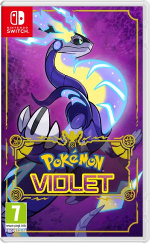

Avant de partir
Introduction : tout comprendre avant de commencer

Jaquette © Nintendo / The Pokémon Company. Guide non officiel.
L'essentiel
- Ce qu'il faut savoir : Paldea est ouverte dès la première heure, et le jeu ne t'empêche pas d'aller là où les Pokémon sont vingt niveaux au-dessus des tiens.
- La seule chose à faire : suivre les parties 01 à 15 dans l'ordre. C'est l'ordre des niveaux, pas celui des histoires.
- Le piège n° 1 : le nom de ton dresseur et la langue du jeu sont définitifs.
- Le réflexe : repasse au Centre Pokémon après chaque badge, parce que la boutique grandit à chaque fois.
Objectif
Te donner, en une lecture, tout ce que Pokémon Violet n'explique pas : comment trois histoires parallèles se jouent sans se marcher sur les pieds, comment la téracristallisation se lit en combat, d'où viennent les points de ligue, et les dix erreurs qui coûtent le plus de temps.
Ce guide couvre tout : les trois trames du jeu de base, les sept zones de Paldea, les 171 Capsules Techniques, les 32 pieux, les 999 pièces de Mordudor, les 25 légendaires des extensions et les 843 entrées des trois Pokédex.
Objectif affiché : 100 %, extensions comprises.
Itinéraire
- 📍 Les lieux en images : la soluce complète de Pokémon Écarlate et Violet sur Millenium, en français et illustrée ; le guide des lieux de Pokébip, qui donne les emplacements précis ; et Poképédia pour les noms français officiels.
- Les parties 01 à 15 suivent l'histoire, dans l'ordre des niveaux. C'est le cœur du guide.
- Les parties 16 à 22 vident Paldea, zone par zone.
- Les parties 23 à 32 traitent chaque système séparément : pieux, Mordudor, Capsules Techniques, sandwichs, raids, paradoxes, évolutions, combat, argent, Académie.
- Les parties 33 à 35 couvrent Le Masque Turquoise.
- Les parties 36 à 38 couvrent Le Disque Indigo.
- La partie 39 est l'épilogue, La Nuit des Kibi.
- La partie 40 donne les trois Pokédex complets.
- La partie 99 rassemble l'index, les manquables et la check-list finale.
Déroulé pas à pas
La fiche du jeu
| Titre | Pokémon Violet |
| Plateformes | Nintendo Switch, et Nintendo Switch 2 depuis la mise à jour 4.0.0 |
| Sortie | 18 novembre 2022, mondiale |
| Développement | Game Freak |
| Genre | RPG d'action en monde ouvert — le premier de la série |
| Version couverte | Dernière version, mises à jour comprises jusqu'à la 4.0.0 du 3 juin 2025 |
| Région | Paldea, inspirée de la péninsule Ibérique |
| Contenu | 400 Pokémon, 8 arènes, 5 Dominants, 5 repaires de la Team Star |
| Extensions | Le Masque Turquoise et Le Disque Indigo, plus un épilogue gratuit |
Ce qui change entre Violet et Écarlate
| Violet | Écarlate | |
|---|---|---|
| Légendaire de monture | Miraidon, Électrik / Dragon | Koraidon, Combat / Dragon |
| Professeur | Turum | Olim |
| Académie | Académie Raisin | Académie Orange |
| Dominant du désert | Roue-de-Fer | Fort-Ivoire |
| Pokémon paradoxes | Du futur, noms en « de Fer » | Du passé |
| Exclusivités | 24 Pokémon | 24 autres |
Ce guide est écrit pour la version Violet, et il signale les différences à chaque fois qu'elles comptent. Le détail complet est dans la partie 28.
Les sept décisions à prendre tôt
- Ton nom de dresseur et la langue du jeu. ⚠️ Les deux sont définitifs : rien, dans tout le jeu, ne permet de les changer. L'apparence, elle, se modifie chez le coiffeur de Mesaledo.
- Ton starter. Les trois tiennent la route. Si tu veux le critère utile : Chochodile écrase trois des huit arènes, Poussacha devient immunisé au Psy, Coiffeton n'a aucune faiblesse quadruple.
- L'ordre de jeu. Suis les parties 01 à 15. Le jeu te laisse libre, mais ses niveaux ne le sont pas.
- Relâcher ses doublons. C'est la seule source régulière de points de ligue, et les points de ligue sont la monnaie des Capsules Techniques.
- Prendre la Pièce Rune tôt. Elle double tout l'argent gagné, et elle s'obtient pour cinq dresseurs battus en Zone Ouest n° 3, partie 07.
- Monter les Tours d'Observation en arrivant dans une zone, pas après l'avoir fouillée.
- Ne pas fouiller Paldea avant d'avoir Bond. La moitié des objets du jeu sont en hauteur, et Bond arrive au troisième Dominant, partie 05.
Le combat en cinq lignes
- Chaque Pokémon a un ou deux types, et chaque attaque un type. Un type peut être très efficace, peu efficace ou sans effet sur un autre. La table complète est dans la partie 30.
- Les attaques sont physiques ou spéciales, et elles utilisent l'Attaque ou l'Attaque Spéciale. Le jeu l'affiche sur chaque capacité.
- La téracristallisation change le type de ton Pokémon une fois par combat, jusqu'à la fin. L'Orbe Téracristal se recharge au Centre Pokémon.
- Les champions téracristallisent leur dernier Pokémon dans le type de leur arène — mais sa défense reste celle de son type d'origine. C'est le piège central du jeu.
- Les badges d'arène relèvent le niveau d'obéissance. Seul le niveau de capture ou d'échange compte, pas le niveau actuel.
La progression, en trois trames parallèles
Pokémon Violet te confie trois histoires en même temps, et aucune n'a la priorité.
| Trame | Qui te la confie | Objectif |
|---|---|---|
| La voie du Maître | Menzi | Les 8 arènes, puis la Ligue |
| Un parfum de légende | Pepper | Les 5 Épices Secrètes gardées par les Dominants |
| Objectif Stardust | Cassiopée | Les 5 repaires de la Team Star |
Et une fois les trois terminées, un quatrième scénario s'ouvre : Retour aux sources, dans la Zone Zéro, partie 14.
Le problème, c'est que le jeu ne verrouille presque rien. L'arène Glace du Mont Nappé est à quinze minutes de marche du village de départ, et ses Pokémon sont niveau 48. L'ordre des parties 01 à 15 entrelace les trois trames par niveaux croissants : c'est la seule façon de ne jamais se retrouver face à un mur.
Les cinq capacités de monture
Miraidon ne combat pas, mais il te porte — et chaque Dominant lui débloque une capacité qui ouvre une partie de la carte.
| Capacité | Dominant | Partie | Ce qu'elle ouvre |
|---|---|---|---|
| Sprint | Roche-Falaise | 02 | La vitesse, et les arbres à percuter |
| Surf | Vaste-Ciel | 03 | Les mers, les lacs, les îlots |
| Bond | Acier-Tranché | 05 | Tout ce qui est en hauteur |
| Planer | Tremble-Terre | 08 | Le vol en descente |
| Escalade | Fourbe-Dragon | 11 | Les parois verticales |
L'économie, et les deux monnaies
| Monnaie | D'où elle vient | À quoi elle sert |
|---|---|---|
| Pokédollars | Les combats de dresseurs, la revente d'objets | Soins, Poké Balls, vitamines, vêtements |
| Points de ligue | Relâcher des Pokémon, et les cadeaux de Cassiopée | La machine à CT, et une partie de la boutique |
Trois choses à savoir tout de suite :
- 1 PL vaut 1 Pokédollar, mais les PL ne s'achètent pas ;
- la Pièce Rune de la partie 07 double tous les Pokédollars gagnés en combat ;
- les cinq repaires de la Team Star rapportent plus de 42 000 PL au total.
Les chiffres du jeu
| Ce qu'il y a | Combien |
|---|---|
| Pokémon du Pokédex de Paldea | 400 |
| Pokémon du Pokédex de Septentria | 200 |
| Pokémon du Pokédex Myrtille | 243 |
| Capsules Techniques | 171 |
| Arènes | 8 |
| Pokémon Dominants | 5 |
| Repaires de la Team Star | 5 |
| Pieux à retirer | 32, en quatre couleurs |
| Trésors du Fléau | 4 |
| Pièces de Mordudor nécessaires | 999 |
| Coffres de Mordudor dans Paldea | 25 |
| Pokémon paradoxes exclusifs à Violet | 7 |
| Pokémon exclusifs à Violet | 24 |
| Légendaires de Jeffry Andise | 25 |
| Membres du clan des Visages du Monstre | 8 |
| Recettes de sandwich Brillance | 18, une par type |
Le glossaire du jargon de joueur
Le guide écrit tous les noms que le jeu affiche en français. En revanche, le vocabulaire des joueurs, lui, reste tel qu'on le dit entre nous.
| Mot | Ce qu'il veut dire |
|---|---|
| Build | La construction d'un Pokémon : nature, talent, objet tenu, attaques |
| Farm | Répéter une action pour accumuler quelque chose |
| Spot | Un endroit précis où se trouve ce qu'on cherche |
| Loot | Ce qu'on ramasse |
| Tank | Un Pokémon qui encaisse |
| Shiny | Un Pokémon chromatique, de couleur différente |
| IV | Les valeurs cachées de chaque statistique, de 0 à 31 |
| EV | Les points d'effort, gagnés en combattant ou avec des vitamines |
| STAB | Le bonus qu'un Pokémon reçoit quand il attaque dans son propre type |
| Shiny lock | Un Pokémon dont la version chromatique n'existe pas |
| Reset | Relancer le jeu pour retenter un tirage |
Les dix erreurs de débutant
- Partir dans la mauvaise direction. Le Mont Nappé est magnifique et visible depuis Mesaledo. Ses Pokémon sont niveau 48. Suis l'ordre du guide.
- Lire le type Téracristal au lieu du Pokémon. Le Crabominable de Kombu devient Eau, mais c'est un Combat / Glace : l'Acier le découpe.
- Ne jamais repasser au Centre Pokémon. La boutique grandit à chaque badge : les Hyper Balls arrivent au cinquième, les Potions Max au septième. Personne ne te le dit.
- Ne pas relâcher ses doublons. Sans points de ligue, la machine à CT ne sert à rien.
- Entrer dans un repaire de la Team Star sans réorganiser son équipe. Seuls les trois premiers Pokémon de ta liste combattent.
- Entrer à la Ligue Pokémon sans faire ses courses. Cinq combats d'affilée, sans aucune sortie.
- Fouiller Paldea avant d'avoir Bond. La moitié des objets sont sur des corniches, des plateaux et des toits.
- Attaquer un raid à six étoiles sans téracristalliser. Le bouclier divise tes dégâts par cinq, et seule la téracristallisation le casse.
- Oublier de dormir. Trois moments du jeu ne s'enchaînent qu'après une nuit dans un lit : la fin du tutoriel, le Grand Tournoi, et le début du Masque Turquoise.
- Mettre un légendaire unique K.O. Les quatre Trésors du Fléau, les trois Adoramis et Ogerpon n'apparaissent qu'une fois. Sauvegarde, et garde un Pokémon avec Faux-Chage.
Comment lire ce guide
- Chaque partie commence par un encadré « L'essentiel » : le boss, ce qu'il ne faut pas rater, le choix important, et quoi faire avant de partir.
- Le « Déroulé pas à pas » est numéroté : une action par étape.
- Le « Butin exhaustif » est un tableau : nom exact, type, où l'obtenir, à quoi ça sert.
- Les ⚠️ sont des points de non-retour ou des pièges qui coûtent cher. Les ⏳ sont des manquables. Ils sont rares, et c'est volontaire : quand tu en vois un, c'est qu'il compte.
- Les renvois sont en gras : « partie 23 » veut dire que le sujet est traité en entier là-bas.
Quêtes et lieux
Les douze villes de Paldea
| Ville | Arène | Partie |
|---|---|---|
| Cuchalaga | — | 01 |
| Plato Real | — | 01 et 21 |
| Mesaledo | — | 21 |
| Sevaro | Insecte | 02 |
| Cuencia | Plante | 03 |
| Levalendura | Électrik | 04 |
| Jarramanca | Eau | 06 |
| Porto Marinada | — | 06 |
| Mezclamora | Normal | 07 |
| Frigao | Spectre | 08 |
| Alforneira | Psy | 09 |
| Mont Nappé | Glace | 10 |
| Pinchoria | — | 21 |
Les huit arènes, dans l'ordre conseillé
| № | Ville | Champion | Type | Niveaux | Partie |
|---|---|---|---|---|---|
| 1 | Sevaro | Éra | Insecte | 14-15 | 02 |
| 2 | Cuencia | Colza | Plante | 16-17 | 03 |
| 3 | Levalendura | Mashynn | Électrik | 23-24 | 04 |
| 4 | Jarramanca | Kombu | Eau | 29-30 | 06 |
| 5 | Mezclamora | Okuba | Normal | 35-36 | 07 |
| 6 | Frigao | Laïm | Spectre | 41-42 | 08 |
| 7 | Alforneira | Tully | Psy | 44-45 | 09 |
| 8 | Mont Nappé | Grusha | Glace | 47-48 | 10 |
Les cinq Dominants et les cinq repaires
| Étape | Qui | Niveau | Partie |
|---|---|---|---|
| Roche-Falaise | Craparoi | 16 | 02 |
| Vaste-Ciel | Lestombaile | 19 ou 20 | 03 |
| Groupe Segin | Brome, Ténèbres | 20-21 | 04 |
| Groupe Schedar | Meloco, Feu | 26-27 | 05 |
| Acier-Tranché | Ferdeter | 29 | 05 |
| Groupe Tsih | Erio, Poison | 32-33 | 06 |
| Tremble-Terre | Roue-de-Fer | 45 | 08 |
| Groupe Ruchbah | Ortiga, Fée | 50-51 | 10 |
| Fourbe-Dragon | Oyacata et Nigirigon | 55-57 | 11 |
| Groupe Caph | Nèflie, Combat | 55-56 | 11 |
Butin exhaustif
Les objets qui changent vraiment une partie, et où ils sont. Tout le reste est dans les parties concernées.
| Nom exact | Type | Où / comment l'obtenir | Pourquoi c'est important |
|---|---|---|---|
| Pièce Rune | Objet tenu | Zone Ouest n° 3, 5 dresseurs, partie 07 | Double l'argent gagné — à prendre le plus tôt possible |
| Œuf Chance | Objet tenu | Professeur Jacq, à Mezclamora, partie 07 | Augmente l'expérience |
| CT057 Faux-Chage | Capsule Technique | Jacq, à 30 espèces, partie 31 | Laisse toujours 1 PV : sauve les légendaires uniques |
| Orbe Vie | Objet tenu | Île ouest du Lac Asrol, partie 19 | +30 % sur toutes les attaques |
| CT171 Téra Explosion | Capsule Technique | Trois fois dans la Zone Zéro, partie 20 | Prend le type Téracristal du lanceur |
| CT153, CT154, CT155 | Capsule Technique | Une seule grotte de la Zone Nord n° 1, partie 19 | Les attaques Feu, Eau et Plante les plus puissantes |
| Charme Stabilité | Objet clé | Irido, au Disque Indigo, partie 36 | Augmente les captures critiques |
| Master Ball | Poké Ball | Victoire sur Kassis, partie 37 | La seule du jeu : capture garantie |
| Charme Chroma | Objet clé | Jacq, à 400 espèces, partie 31 | Double les chances de chromatique |
| Mochi Renouveau | Objet | Chasse aux Monstres, partie 35 | Remet à zéro tous les points d'effort |
| Talisman Sain | Objet tenu | Zone Ouest n° 1, 9 dresseurs, partie 17 | Immunise contre tous les statuts |
| Lunettes Choix et Bandeau Choix | Objet tenu | Clan des Visages du Monstre, partie 35 | +50 % d'Attaque Spéciale ou d'Attaque |
Conseils et pièges
Le seul conseil qui compte vraiment
Pokémon Violet est le premier jeu de la série en monde ouvert, et c'est son plus grand mérite — et son plus gros défaut de game design.
Le mérite : tu vas où tu veux, dès la première heure, et les trois histoires se mènent dans l'ordre que tu choisis.
Le défaut : le jeu ne t'avertit jamais quand tu entres dans une zone trop dure. Il n'y a pas de barrière, pas de garde, pas de message. Tu peux arriver au Mont Nappé avec une équipe niveau 20 et te faire balayer par un sauvage.
C'est exactement pour ça que ce guide entrelace les trois trames : les parties 01 à 15 sont l'ordre des niveaux, pas celui des histoires. Si tu les suis, tu ne verras jamais l'écart.
Ce qui rend ce jeu très différent des précédents
| Ce qui change | Ce que ça implique |
|---|---|
| Monde ouvert | Aucun ordre imposé, et aucun garde-fou |
| Capsules Techniques consommables | Mais refabricables à la machine à CT, partie 25 |
| Points de ligue | Une deuxième monnaie, qui vient des Pokémon relâchés |
| Téracristallisation | Une fois par combat, change le type, et il faut lire le Pokémon |
| Pique-nique | Un Centre Pokémon portable, et la source des Auras Gustatives |
| Combat auto | Tes Pokémon se battent seuls avec la touche R, hors du tour par tour |
| Pas de Capacité Spéciale hors combat | Plus de Surf ni de Vol à apprendre : tout passe par la monture |
| Obéissance par badge | Et elle dépend du niveau de capture, pas du niveau actuel |
Le temps qu'il faut
| Objectif | Durée approximative |
|---|---|
| Les trois trames et le générique | Une trentaine d'heures |
| Le post-game du jeu de base | Une dizaine d'heures de plus |
| Les 400 Pokémon de Paldea | Beaucoup plus, et il faut échanger |
| Les deux extensions | Une vingtaine d'heures |
| Le 100 % complet | Plusieurs dizaines d'heures, et un partenaire de jeu |
Ce qui est impossible seul
C'est la chose la plus importante à savoir avant de viser le 100 %. Trois objectifs du jeu demandent un deuxième joueur, et il n'y a aucun contournement :
- les 24 exclusivités d'Écarlate, qui n'existent pas dans ta cartouche ;
- les deux évolutions par échange, Roigada et Cizayox ;
- et douze des vingt-cinq légendaires du Disque Indigo, dont les friandises ne tombent que d'activités en Club Union.
Le partenaire idéal est un joueur d'Écarlate : vos exclusivités se complètent exactement, et vos pools de légendaires sont inversés.
Alertes
- ⚠️ Le nom de ton dresseur et la langue du jeu sont définitifs. Rien, dans tout le jeu, ne permet de les changer.
- ⚠️ Il n'y a aucune sortie entre les cinq combats de la Ligue Pokémon, partie 12. Fais tes courses avant.
- ⚠️ Une fois la Ligue vaincue, l'intérieur du bâtiment se ferme définitivement.
- ⚠️ Les légendaires uniques n'apparaissent qu'une fois : les quatre Trésors du Fléau, les trois Adoramis, Ogerpon, Terapagos et Pêchaminus. Un K.O. sans capture, et le Pokémon est perdu pour cette partie.
- ⏳ Le Pokédex complet est impossible sans échanger. C'est le seul contenu du jeu qui dépend d'un autre joueur.
Check-list
- Nom, langue et apparence choisis
- Starter choisi en connaissant sa forme finale
- Les trois trames ouvertes à l'Académie Raisin
- Ordre des parties 01 à 15 compris
- Table des types et les sept immunités connues
- Les deux monnaies comprises : Pokédollars et points de ligue
- Réflexe pris : relâcher ses doublons
- Réflexe pris : repasser au Centre Pokémon après chaque badge
- Réflexe pris : monter la Tour d'Observation en arrivant dans une zone
- Pièce Rune récupérée au plus tôt
- CT057 Faux-Chage récupérée auprès de Jacq
- Les dix erreurs de débutant lues
Partie 01
Le prologue : Cuchalaga, Miraidon et l'Académie Raisin
L'essentiel
- À la fin : ton starter, Miraidon en monture, l'Orbe Téracristal, et les trois trames ouvertes.
- À ne pas rater : le Tapatoès Plumage Vert sur ton toit, et la CT049 Zénith au même endroit.
- Le choix : ton starter, et surtout le nom de ton dresseur, qu'on ne peut plus changer.
- Avant de partir : dors dans ton lit à l'Académie, sinon la Chasse aux Trésors ne démarre pas.
Objectif
Traverser tout le tutoriel : sortir de chez toi, choisir ton starter, réveiller Miraidon sur la plage, arriver à l'Académie Raisin, et en repartir avec les trois trames du jeu ouvertes en même temps.
Le prologue dure environ deux heures et il est entièrement guidé. Ce qui compte, c'est de ne pas rater les quelques objets qu'on ne revoit pas de sitôt, et de comprendre dès maintenant la structure du jeu : Pokémon Violet ne te donnera plus jamais d'ordre après ça.
Itinéraire
- 📍 La zone en images : Vos premiers pas à Paldea et la Zone Sud n° 1 sur Millenium, en français et illustrées.
- Ta maison, à Cuchalaga : le salon, la cuisine, ta chambre.
- Le village de Cuchalaga : deux maisons, un chemin entre les deux, le potager de ta mère.
- La villa de Menzi, au bout du chemin, et sa plage privée.
- La Route de Cuchalaga, vers le nord : ta première zone sauvage.
- Le Phare de Cuchalaga, sur la falaise, et la Caverne de la Crique juste en dessous.
- Plato Real, au centre de la Zone Sud n° 1 : ton premier vrai Centre Pokémon.
- Mesaledo, au nord : la capitale, et la seule zone du jeu avec un temps de chargement.
- L'Académie Raisin, au-dessus de Mesaledo.
Déroulé pas à pas
Chez toi, à Cuchalaga
- Le nom et la langue : le jeu te les demande avant tout le reste. Prends ton temps, ils sont définitifs.
- L'apparence : visage, coiffure, couleur des yeux. Celle-là, tu pourras la changer plus tard chez le coiffeur de Mesaledo.
- Suis le Pokémon de la maison jusqu'au salon, puis parle à ta mère dans la cuisine.
- Le directeur Clavel sonne à la porte : il apporte ton dossier d'inscription et le plan de l'école.
- Prends ton sac à dos et ton chapeau sur ton lit.
- Ta mère te donne le Motismart, le téléphone qui fait office de carte, de Pokédex et de guide.
- Fais le tour de la maison avant de partir, il y a trois objets posés :
- devant la porte : Poké Ball ;
- derrière la maison : Potion ;
- à droite du potager : Antidote.
- Lève les yeux vers ton toit. Il y a deux choses là-haut, et aucune n'est atteignable maintenant :
- un Tapatoès au Plumage Vert, niveau 2 — la seule forme verte facile du jeu ;
- la CT049 Zénith, qui installe un grand soleil. Note l'endroit : tu reviendras avec Miraidon dans une heure.
Le starter et le premier combat
- Va à la maison de Cuchalaga où t'attendent les trois starters.
- Menzi se présente : déléguée de l'école, dresseuse de rang Maître, et la personne la plus enthousiaste de Paldea.
- Choisis ton starter parmi les trois. Menzi prendra systématiquement celui qui est désavantagé face au tien, donc ton premier combat est gagné d'avance.
| Starter | Type | Évolutions | Type final | Talent |
|---|---|---|---|---|
| Poussacha | Plante | Matourgeon, puis Miascarade | Plante / Ténèbres | Engrais |
| Chochodile | Feu | Crocogril, puis Flâmigator | Feu / Spectre | Brasier |
| Coiffeton | Eau | Canarbello, puis Palmaval | Eau / Combat | Torrent |
- Ramasse les objets du chemin en descendant vers la plage : 2 Potions, 1 Antidote, 1 Super Ball, 2 Poké Balls, puis une Potion de plus.
- Bats le starter de Menzi, niveau 5, sur sa plage privée. Tu gagnes 300 Pokédollars et l'application Pokédex sur ton Motismart.
- Ramasse les deux objets de la plage : une Poké Ball à l'extrême droite, une Potion à l'extrême gauche.
- Repasse voir ta mère : elle te donne un sandwich et 5 Potions. Garde le sandwich, il sert dans dix minutes.
- Laisse Menzi t'apprendre la capture. Elle te donne 5 Poké Balls, puis 10 de plus dès que tu as capturé ton premier Gourmelet.
La Route de Cuchalaga et le phare
- Monte la Route de Cuchalaga et capture tout ce que tu croises. C'est le meilleur moment pour te faire une équipe de secours.
| Pokémon de la route | Intérêt |
|---|---|
| Gourmelet | Devient Fragroin, correct en début de partie |
| Tissenboule | Devient Filentrappe, très bon contre l'arène Insecte |
| Granivol | Plante / Vol, utile contre les premiers Dominants |
| Lépidonille | Devient Papilusion, apprend Poudre Dodo |
| Pohm | Électrik, et sa troisième forme demande une condition spéciale |
| Passerouge | Vol, rapide, bon pour fuir les mauvais combats |
- Ramasse les objets qui scintillent :
- les scintillements au sol ;
- ce sont des baies ou des objets. Tu trouveras surtout des Potions ;
- des Poké Balls ;
- une Super Potion ;
- des Rappels ;
- un Anti-Para ;
- des Baies Pêcha et Oran ;
- et des Huiles.
- Suis le cri qui vient du phare, en longeant la falaise.
- Donne le sandwich à Miraidon, échoué et épuisé sur les rochers.
- Suis-le dans la Caverne de la Crique.
- Un Démolosse niveau 40 t'attaque — n'essaie surtout pas de le battre. Miraidon s'interpose, le met en fuite, puis s'effondre de fatigue.
- Menzi te donne la CT032 Météores, une attaque Dragon de puissance correcte qui touche à coup sûr.
- Pepper t'arrête sur la route du phare. C'est le fils du professeur Turum, il a un Rongourmand niveau 5, et il est de mauvaise humeur.
- Bats-le : 300 Pokédollars, et surtout la Poké Ball du légendaire, qui te permet enfin de diriger Miraidon.
- Monte au sommet du phare par l'échelle rouge et parle à Menzi. La vue vaut le détour, et la discussion débloque la suite.
- Reviens à ta maison avec Miraidon et grimpe sur le toit : attrape le Tapatoès Plumage Vert et prends la CT049 Zénith. Cinq minutes de détour, et tu règles le seul objet du village qu'on oublie toujours.
Plato Real : apprendre à se servir d'un Centre Pokémon
- Entre dans le Centre Pokémon de Plato Real. Il a quatre guichets, repérables à leur couleur.
| Guichet | Couleur | Ce qu'il fait |
|---|---|---|
| Soins | rouge | Soigne l'équipe et recharge ton Orbe Téracristal |
| Boutique | bleu | Achats en Pokédollars ou en PL, les points de ligue |
| Machine à CT | vert | Fabrique des Capsules Techniques avec des PL et des matériaux |
| Club Union | jaune | Jeu à plusieurs |
- Accepte les matériaux et les PL que te donne Menzi, et fabrique une CT pour voir comment ça marche. Retiens le taux : 1 PL vaut 1 Pokédollar, et les PL viennent des Pokémon relâchés dans la nature.
- Ramasse les trois objets de Plato Real : Antidote, Anti-Para et CT Repos.
- Passe au stand de glaces « Sucré Glacé » si tu as de l'argent : six parfums entre 900 et 1 150 Pokédollars, chacun donnant une aura temporaire (expérience, capture, raid…). C'est cher pour l'instant, mais note l'endroit.
Mesaledo et l'arrivée à l'Académie
- Parle au représentant de la Ligue devant Mesaledo : il te demande de battre 4 dresseurs de la Zone Sud n° 1. La récompense est la CT Cage Éclair.
- Affronte Menzi une deuxième fois, juste avant la ville :
- son starter, niveau 8 ;
- un Pohm niveau 9, qu'elle téracristallise — c'est la première fois que tu vois le mécanisme ;
- récompense : 540 Pokédollars et 3 Rappels.
- Traverse Mesaledo. C'est la capitale de Paldea, la seule zone fermée du jeu, et elle est bourrée de boutiques. Tu y reviendras longuement en partie 21 ; pour l'instant, contente-toi de la traverser.
- Deux sbires de la Team Star te barrent la route à la sortie nord : un Gribouraigne niveau 8, puis un Manglouton niveau 9.
- Menzi te donne l'Orbe Téracristal. À partir de maintenant, tu peux téracristalliser un Pokémon une fois par sortie, et le recharger dans n'importe quel Centre Pokémon.
L'Académie Raisin, pièce par pièce
- Hall d'entrée : le professeur Jacq t'accueille et t'inscrit. Les cours de biologie et de mathématiques s'ouvrent.
- Cafétéria :
- Pepper cherche des ingrédients capables de redonner de l'énergie à un Pokémon malade. Il te parle des cinq Épices Secrètes ;
- gardées par des Pokémon Dominants ;
- te donne un sac de Poussière Étoile et marque les cinq endroits sur ta carte. C'est la trame Un parfum de légende.
- Un appel de Cassiopée arrive sur ton Motismart : elle a piraté ton téléphone et te propose de démanteler la Team Star. C'est la trame Objectif Stardust.
- Salle des professeurs : Menzi t'explique la Voie du Maître — les 8 Arènes, puis la Ligue Pokémon. C'est la troisième trame.
- Bureau du proviseur : le professeur Turum t'explique qu'il étudie la Zone Zéro, au fond du Cratère de Paldea, et que Miraidon t'a été confié. Miraidon est affaibli : il ne combat pas et sert uniquement de monture.
- Ta chambre : dors dans ton lit. C'est ce qui termine le tutoriel — beaucoup de joueurs tournent en rond ici.
- Cour de l'école : la Chasse aux Trésors commence officiellement, avec les trois missions à mener comme tu veux.
Ce que tu peux faire en sortant
- Appuie sur + pour monter sur Miraidon. Il sait déjà courir, sauter et planer un peu ; ses autres capacités viendront des Dominants.
- Pars vers l'ouest pour la première arène, à Sevaro — c'est ce que fait la partie 02.
- Les apparitions massives sont désormais actives : des groupes de Pokémon identiques apparaissent sur la carte, visibles depuis les Tours d'Observation.
Quêtes et lieux
Les trois trames, ouvertes en même temps
| Trame | Qui te la confie | Objectif | Où ça commence |
|---|---|---|---|
| La voie du Maître | Menzi | Les 8 Arènes, puis la Ligue | Sevaro, à l'ouest |
| Un parfum de légende | Pepper | Les 5 Épices Secrètes gardées par les Dominants | Zone Sud n° 3, au sud-est |
| Objectif Stardust | Cassiopée | Les 5 repaires de la Team Star | Zone Ouest n° 1 |
Le jeu ne t'oblige à aucun ordre et ne te prévient pas quand tu entres dans une zone trop dure. Suis les parties 02 à 11 dans l'ordre et le problème ne se posera pas.
Les lieux du prologue
| Lieu | Ce qu'on y fait | À retenir |
|---|---|---|
| Cuchalaga | Ta maison, celle de Menzi | Le toit de ta maison cache deux choses |
| Route de Cuchalaga | Première zone sauvage | Six espèces faciles, beaucoup d'objets au sol |
| Phare de Cuchalaga | Réveil de Miraidon | Monte jusqu'en haut, ça débloque la suite |
| Caverne de la Crique | Scène du Démolosse | Manglouton, Malosse et Taupiqueur y vivent |
| Plato Real | Premier Centre Pokémon complet | Stand de glaces, machine à CT |
| Mesaledo | La capitale | Boutiques, coiffeur, Ligue ; voir la partie 21 |
| Académie Raisin | L'école | Cours, cafétéria, ta chambre ; voir la partie 32 |
Les personnages à connaître
| Personnage | Qui c'est | Ce qu'il t'apporte |
|---|---|---|
| Menzi | Déléguée de l'école, rivale | T'accompagne sur la Voie du Maître |
| Pepper | Fils du professeur Turum | Les Épices Secrètes et son Rongourmand malade |
| Cassiopée | Voix au téléphone | L'Opération Stardust |
| Clavel | Directeur de l'Académie | T'inscrit, et réapparaît là où on ne l'attend pas |
| Jacq | Professeur principal | Les cours et le Pokédex |
| Professeur Turum | Chercheur, proviseur | La Zone Zéro et Miraidon |
Butin exhaustif
| Nom exact | Type | Où / comment l'obtenir | Utilité |
|---|---|---|---|
| Motismart | Objet clé | Ta mère, en quittant la maison | Carte, Pokédex, photo, appels |
| Sac à dos | Objet clé | Sur ton lit, dans ta chambre | Ouvre l'inventaire |
| Chapeau | Tenue | Sur ton lit, dans ta chambre | Premier élément de tenue |
| Poké Ball | Poké Ball | Devant la porte de ta maison | Capture |
| Potion | Soin | Derrière ta maison | Rend 20 PV |
| Antidote | Soin | À droite du potager | Soigne le poison |
| CT049 Zénith | Capsule Technique | Sur le toit de ta maison, avec Miraidon | Installe un grand soleil pour cinq tours |
| Tapatoès Plumage Vert | Pokémon | Sur le toit de ta maison, niveau 2 | La forme verte, bien plus rare à l'état sauvage |
| 2 Potions, 1 Antidote | Soin | Chemin vers la maison aux starters | Réserve de départ |
| 1 Super Ball, 2 Poké Balls | Poké Ball | Même chemin | Capture |
| Potion | Soin | Un peu plus loin sur le chemin | Réserve |
| Application Pokédex | Objet clé | Après le premier combat contre Menzi | Enregistre les captures |
| Sandwich | Objet clé | Ta mère, après le combat | Réveille Miraidon au phare |
| 5 Potions | Soin | Ta mère, après le combat | Réserve |
| Poké Ball | Poké Ball | Extrême droite de la plage de Menzi | Capture |
| Potion | Soin | Extrême gauche de la plage de Menzi | Réserve |
| 5 Poké Balls | Poké Ball | Menzi, leçon de capture | Capture |
| 10 Poké Balls | Poké Ball | Menzi, après ta première capture | Capture |
| CT032 Météores | Capsule Technique | Menzi, après la Caverne de la Crique | Attaque Dragon qui ne rate jamais |
| Poké Ball du légendaire | Objet clé | Après le combat contre Pepper, au phare | Te donne le contrôle de Miraidon |
| Matériaux et PL | Matériau | Menzi, au Centre Pokémon de Plato Real | Première CT à fabriquer |
| Antidote | Soin | Dans Plato Real | Soigne le poison |
| Anti-Para | Soin | Dans Plato Real | Soigne la paralysie |
| CT Repos | Capsule Technique | Dans Plato Real | Soin complet, mais endort |
| CT Cage Éclair | Capsule Technique | Représentant de la Ligue, après 4 dresseurs | Paralyse à coup sûr |
| 3 Rappels | Soin | Menzi, deuxième combat | Réanime un Pokémon K.O. |
| Orbe Téracristal | Objet clé | Menzi, avant l'Académie | Permet de téracristalliser |
| Sac de Poussière Étoile | Objet de valeur | Pepper, à la cafétéria | Se revend très bien |
Conseils et pièges
Choisir son starter sans se tromper
Les trois sont jouables jusqu'au bout, et aucun ne rend le jeu difficile. Si tu veux quand même le critère utile :
- Chochodile est le plus confortable pour l'ordre de progression de ce guide : il écrase l'arène Insecte, l'arène Plante et l'arène Glace, soit trois des huit.
- Poussacha devient Plante / Ténèbres, donc immunisé au type Psy : pratique contre l'arène Psy et contre un membre du Conseil 4.
- Coiffeton n'a aucune faiblesse quadruple, contrairement aux deux autres. C'est le plus régulier, le moins spectaculaire.
Prends celui que tu trouves beau. Regarde quand même sa forme finale avant de décider : les trois changent beaucoup.
Les pièges du prologue
- Ne cours pas vers le Mont Nappé. On le voit depuis Mesaledo, il est magnifique, et ses Pokémon sont niveau 48. Pokémon Violet ne met aucune barrière : c'est à toi de doser.
- Ne te bats pas contre le Démolosse de la Caverne de la Crique. Il est niveau 40, c'est volontaire, et la scène se déclenche toute seule.
- N'oublie pas de dormir dans ton lit à l'Académie. Sans ça, la Chasse aux Trésors ne démarre pas et tu tourneras en rond dans les couloirs.
- Les combats de dresseurs sont optionnels. Dans Paldea, c'est toi qui engages en leur parlant : personne ne te saute dessus. Tu peux donc traverser une zone trop dure sans te battre.
- Garde ton Tapatoès. Les trois plumages (vert, bleu, jaune) sont répartis par région, et le vert du toit est le seul que tu croises avant des heures de jeu.
Comprendre les PL tout de suite
Les PL, ou points de ligue, sont la deuxième monnaie du jeu. Tu en gagnes en relâchant des Pokémon dans la nature depuis les boîtes, et ils servent à la machine à CT et à une partie de la boutique. Prends l'habitude de relâcher tes doublons au lieu de les laisser dormir : les CT coûtent très cher en PL plus tard.
Alertes
- ⚠️ Le nom de ton dresseur et la langue du jeu sont définitifs. Rien, dans tout le jeu, ne permet de les changer ensuite. L'apparence, elle, se modifie chez le coiffeur et dans les boutiques de vêtements.
- ⏳ Le Tapatoès Plumage Vert du toit reste disponible aussi longtemps que tu ne l'as pas capturé, mais c'est le seul endroit facile pour l'avoir. Les deux autres plumages se trouvent ailleurs dans Paldea.
Check-list
- Nom, langue et apparence choisis
- Les trois objets du tour de la maison ramassés
- Starter choisi et premier combat contre Menzi gagné
- Sandwich récupéré auprès de ta mère
- Leçon de capture terminée, 15 Poké Balls en poche
- Miraidon réveillé au phare et Caverne de la Crique traversée
- CT032 Météores reçue
- Pepper battu, Poké Ball du légendaire obtenue
- Sommet du phare atteint
- Retour sur le toit de ta maison : Tapatoès Plumage Vert et CT049 Zénith
- Les quatre guichets du Centre Pokémon de Plato Real essayés
- Première CT fabriquée à la machine
- Mission des 4 dresseurs validée, CT Cage Éclair reçue
- Deuxième combat contre Menzi gagné
- Sbires de la Team Star battus
- Orbe Téracristal obtenu
- Les six pièces de l'Académie visitées
- Nuit passée dans ton lit, Chasse aux Trésors lancée
Partie 02
Sevaro : l'arène Insecte et le Dominant Roche-Falaise
L'essentiel
- À la fin : le Badge Insecte, l'Épice Secrète Sucrée et la capacité de monture Sprint.
- Le boss : Éra et son Teddiursa niveau 15, téracristallisé en Insecte.
- À ne pas rater : l'échange d'un Flabébé contre un Frissonille à Sevaro, et la Grosse Racine derrière l'arbre de l'arène.
- Avant de partir : une équipe niveau 13 à 16, et un Pokémon Feu, Vol ou Roche.
Objectif
Décrocher ton premier badge à Sevaro, puis traverser Mesaledo dans l'autre sens pour aller arracher la première Épice Secrète à un crabe accroché à une falaise.
Ces deux étapes vont ensemble parce qu'elles sont au même niveau : l'arène tourne autour de 14-15, le Dominant est niveau 16. Et surtout, le Dominant te donne Sprint, la première capacité de monture, qui change immédiatement ta façon de traverser Paldea.
Itinéraire
- 📍 La zone en images : l'arène Insecte de Sevaro et le Dominant Roche-Falaise sur Millenium ; la Zone Sud n° 2 et la Zone Sud n° 3 sur Pokébip, avec la liste des objets.
- Sors de Mesaledo par l'ouest, en passant le pont et le portail.
- Traverse la Zone Sud n° 2 : des champs d'oliviers, des ruines au sud-est, une Tour d'Observation au centre.
- Sevaro, au bout de la grande avenue : une petite ville en terrasses, avec une pâtisserie et une arène.
- L'arène Insecte est sur l'avenue principale, adossée à un énorme arbre.
- Le terrain de l'épreuve est au nord de la ville — le jeu te met le point sur la carte.
- Repars vers l'est, repasse Mesaledo, et sors par la porte opposée.
- La Zone Sud n° 3 s'ouvre : plus caillouteuse, avec des ruines et une Tour d'Observation.
- La falaise de Craparoi est au sud-est de la zone, près de la Tour d'Observation. On voit le crabe accroché à la paroi de loin.
Déroulé pas à pas
Préparer l'arène Insecte
- Monte ton équipe autour du niveau 14. Deux Pokémon suffisent largement, mais trois c'est plus confortable.
- Prends un Pokémon Feu, Vol ou Roche. Les trois types écrasent Éra. Un Chochodile, un Passerouge ou un Selutin ramassé en route fait parfaitement le travail.
- Laisse Poussacha au repos si c'est ton starter : les attaques Insecte lui font très mal.
- Parle à Menzi devant l'arène. Si Sevaro est ta première arène, elle te donne 3 Super Potions.
- Achète au Poké Mart de Sevaro : tout y est à 200 Pokédollars au départ, sauf le Rappel à 2 000 et la Poké Poupée à 300. La boutique s'enrichit à chaque badge.
L'épreuve de l'arène : le Roule-Olive
- Va au point marqué au nord de la ville. Une énorme olive en forme de ballon t'attend.
- Pousse l'olive jusqu'au panier d'arrivée. Pas de chronomètre : prends ton temps.
- Évite les PNJ et les obstacles sur le trajet. Taper un passant renvoie l'olive en arrière, ce qui est agaçant mais jamais grave.
- Retourne à la réception de l'arène pour valider l'épreuve et débloquer le combat.
Le combat contre Éra
- Éra, la Nymphe Pâtissière, t'attend. C'est aussi la patronne de la pâtisserie « Pâtisse en Boule », juste à côté.
| Pokémon | Niveau | Type | À savoir |
|---|---|---|---|
| Lilliterelle | 14 | Insecte | Fragile, tombe en un coup bien choisi |
| Tissenboule | 14 | Insecte | Peut te coller des toiles et te ralentir |
| Teddiursa | 15 | Normal, téracristallisé Insecte | Son type change au milieu du combat |
- Attention au Teddiursa. Il est Normal sur le papier, mais Éra le téracristallise en Insecte : ses attaques Insecte deviennent brutales, et ta parade change en cours de route.
- Garde ton Orbe Téracristal pour lui. C'est le seul moment du combat où ça vaut le coup.
- Encaisse la récompense : 2 700 Pokédollars, le Badge Insecte et la CT021 Bond.
Les deux affaires à régler dans Sevaro
- Fais l'échange du Frissonille. Un habitant te propose un Frissonille niveau 10, de type Glace / Insecte avec le talent Écran Poudre, contre un Flabébé. Les Flabébé courent les champs de fleurs de la Zone Sud n° 2 : attrape-en un et reviens. Frissonille est un bon Pokémon de début de partie et son évolution est solide.
- Prends la Grosse Racine derrière le grand arbre qui soutient le terrain de l'arène. C'est un objet tenu qui soigne quand tes attaques drainent des PV, et on passe devant sans le voir.
- Prends la CT037 Vampibaiser derrière l'arène.
- Parle au représentant de la Ligue au Centre Pokémon : bats 5 dresseurs de la Zone Sud n° 2 et il te donne la CT027 Aéropique.
Le Dominant Roche-Falaise
- Pepper t'appelle au Centre Pokémon dès que tu approches de la Zone Sud n° 3.
- Suis le chemin principal depuis ce Centre Pokémon jusqu'à la falaise.
- Approche-toi de Craparoi, accroché à la paroi. Il se décroche et descend.
- Contourne par le chemin qui monte pour arriver sur la plateforme où le combat se déclenche.
- Phase 1 : Craparoi seul. Niveau 16, femelle, talent Courroupace, qui double son Attaque et sa Vitesse quand il tombe sous la moitié de ses PV. Ses attaques :
| Capacité | Type | Ce qu'elle fait |
|---|---|---|
| Tomberoche | Roche | Sa grosse attaque, baisse ta Vitesse |
| Éclate-Roc | Combat | Peut baisser ta Défense |
| Force Poigne | Normal | Attaque de base |
| Barrage | Normal | Frappe deux à cinq fois de suite |
- Tape-le avec Plante, Eau, Combat, Sol ou Acier. Un Coiffeton ou un Poussacha suffit ; sinon, le Terraiste du coin fait très bien l'affaire.
- Méfie-toi de Courroupace. Ne le laisse pas à 40 % de PV en pensant finir au tour suivant : il frappe soudain deux fois plus fort.
- Il avale une Épice Secrète et repart au combat. C'est la phase 2, et cette fois Pepper se bat à tes côtés avec son Rongourmand. Tu n'as presque rien à faire.
- Entre dans la grotte derrière la falaise et prends l'Épice Secrète Sucrée.
- Pepper en fait un sandwich et te le donne.
- Donne le sandwich à Miraidon pour débloquer Sprint.
Ce que Sprint change tout de suite
- Appuie sur la gâchette en monture pour foncer. Tu traverses Paldea trois fois plus vite.
- Fonce dans les arbres. Sprint sert aussi à percuter les arbres fruitiers, ce qui fait tomber des baies et sortir les Pokémon qui y dorment — c'est la façon normale d'attraper Verpom et Croquine.
- Repasse dans la Zone Sud n° 2 maintenant que tu vas vite : les 17 Capsules Techniques de la zone deviennent une balade de dix minutes.
Quêtes et lieux
Sevaro
| Lieu | Ce qu'on y trouve |
|---|---|
| Arène Insecte | Éra, l'épreuve du Roule-Olive, la CT037 derrière le bâtiment |
| Pâtisse en Boule | La pâtisserie d'Éra, en face de l'arène |
| Poké Mart | Potions, Poké Balls et soins de statut à 200 ₽ ; stock qui grandit à chaque badge |
| Boulangerie Horno | Ingrédients de sandwich |
| Hola Olla | Objets et plats |
| Club Sandwich | Restaurant, bonus d'aura |
| Sucré Glacé | Le stand de glaces, comme à Plato Real |
| Distributeur de boissons | Eau Fraîche, Soda Cool, Limonade |
| Centre Pokémon | Soins, boutique, machine à CT, et le représentant de la Ligue |
Les deux zones traversées
| Zone | Niveaux | Ce qu'il faut en retenir |
|---|---|---|
| Zone Sud n° 2 | 7 à 14 | Champs d'oliviers, ruines au sud-est, 17 Capsules Techniques, les Flabébé de toutes les couleurs dans les fleurs |
| Zone Sud n° 3 | 7 à 17 | Plus rocheuse, ruines, la falaise de Craparoi, et un repaire de la Team Star sur les falaises du nord qu'il est trop tôt pour attaquer |
Le détail complet des deux zones — chaque Pokémon par biome, chaque objet, chaque Capsule Technique avec son emplacement — est dans la partie 16. Ici, je ne garde que ce qui est sur ta route.
Les Pokémon qui valent le détour en chemin
| Pokémon | Où | Pourquoi |
|---|---|---|
| Évoli | Zone Sud n° 2, dans la ville et les oliviers | Huit évolutions, voir la partie 29 |
| Flabébé | Zone Sud n° 2, dans les fleurs | Toutes les couleurs y apparaissent, et il sert à l'échange de Sevaro |
| Pikachu | Zone Sud n° 2, en forêt | Utile contre l'arène Eau plus tard |
| Selutin | Zones Sud n° 2 et n° 3, sur les rochers | Roche, parfait contre Éra |
| Terraiste | Zone Sud n° 3 | Sol, parfait contre Craparoi |
| Tapatoès | Zone Sud n° 3, en ville | Les trois autres plumages, après le vert de ton toit |
| Cornèbre | Zone Sud n° 3, le soir et la nuit | Devient Corvaillus, l'un des meilleurs Vol du jeu |
Butin exhaustif
| Nom exact | Type | Où / comment l'obtenir | Utilité |
|---|---|---|---|
| 3 Super Potions | Soin | Menzi, devant l'arène de Sevaro, si c'est ta première arène | Rend 60 PV |
| Badge Insecte | Objet clé | Victoire sur Éra | Relève le niveau auquel tes Pokémon t'obéissent |
| CT021 Bond | Capsule Technique | Victoire sur Éra | Attaque Insecte correcte en début de partie |
| 2 700 Pokédollars | Argent | Victoire sur Éra | De quoi remplir ton sac |
| CT037 Vampibaiser | Capsule Technique | Derrière l'arène de Sevaro | Drain de PV, type Ténèbres |
| Grosse Racine | Objet tenu | Derrière le grand arbre qui porte le terrain de l'arène | Augmente les PV drainés |
| Super Potion | Soin | Dans Sevaro | Rend 60 PV |
| Attaque + | Objet de combat | Dans Sevaro | Monte l'Attaque pendant un combat |
| Garde-Stats | Objet tenu | Dans Sevaro | Empêche la baisse des stats |
| Frissonille | Pokémon | Échange contre un Flabébé, à Sevaro | Glace / Insecte niveau 10, talent Écran Poudre |
| CT027 Aéropique | Capsule Technique | Représentant de la Ligue de Sevaro, après 5 dresseurs de la Zone Sud n° 2 | Attaque Vol qui ne rate jamais |
| CT003 Croco Larme | Capsule Technique | Zone Sud n° 2, rocher près de la rivière au sud | Baisse l'Attaque Spéciale de l'adversaire |
| CT004 Hâte | Capsule Technique | Zone Sud n° 2, falaise au-dessus du portail de Mesaledo | Double la Vitesse |
| CT005 Coud'Boue | Capsule Technique | Zone Sud n° 2, partie surélevée au nord | Attaque Sol qui baisse la Précision |
| CT007 Abri | Capsule Technique | Zone Sud n° 2, dans les fleurs au nord-est de la Tour d'Observation | Bloque l'attaque du tour |
| CT012 Balayage | Capsule Technique | Zone Sud n° 2, falaise à l'ouest du Centre Pokémon de Sevaro | Attaque Combat, plus forte sur les Pokémon lourds |
| CT013 Bombe Acide | Capsule Technique | Zone Sud n° 2, rocher au nord-est | Attaque Poison qui baisse la Défense Spéciale |
| CT018 Larcin | Capsule Technique | Zone Sud n° 2, falaise sous les ruines au sud-est | Vole l'objet tenu de l'adversaire |
| CT019 Voix Enjôleuse | Capsule Technique | Zone Sud n° 2, alcôve au sud-ouest | Attaque Fée qui ne rate jamais |
| CT040 Tranch'Air | Capsule Technique | Zone Sud n° 2, près de la cascade au sud-ouest | Attaque Vol avec beaucoup de coups critiques |
| CT041 Force Ajoutée | Capsule Technique | Zone Sud n° 2, carré agricole à l'ouest de la Tour d'Observation | Plus forte si l'adversaire a été affaibli |
| CT042 Ombre Nocturne | Capsule Technique | Zone Sud n° 2, dans les ruines | Dégâts égaux au niveau du lanceur |
| CT045 Choc Venin | Capsule Technique | Zone Sud n° 2, extrême nord-ouest | Attaque Poison, double contre un empoisonné |
| CT064 Gonflette | Capsule Technique | Zone Sud n° 2, deux endroits : plateforme nord-ouest et plage près d'une cascade | Monte l'Attaque et la Défense |
| CT072 Boule Élek | Capsule Technique | Zone Sud n° 2, au sommet de la Tour d'Observation | Attaque Électrik, plus forte si tu es rapide |
| CT106 Tunnelier | Capsule Technique | Zone Sud n° 2, près du portail de Mesaledo | Attaque Sol qui change le Pokémon au combat |
| CT116 Piège de Roc | Capsule Technique | Zone Sud n° 2, sommet de la falaise la plus au nord | Piège les Pokémon qui entrent au combat |
| CT137 Champ Herbu | Capsule Technique | Zone Sud n° 2, près du pont naturel vers la Zone Sud n° 1 | Terrain qui soigne les Pokémon au sol |
| Mayonnaise, Ketchup, Cornichon | Ingrédient | Zone Sud n° 3, l'étudiante et son Pikachu près de la porte de Mesaledo | Garnitures de sandwich |
| Épice Secrète Sucrée | Objet clé | Grotte derrière la falaise de Craparoi | La première des cinq, voir la partie 26 |
| Sandwich de Pepper | Objet clé | Pepper, juste après l'Épice | Donne Sprint à Miraidon |
Conseils et pièges
Pourquoi commencer par Sevaro, et pas par Cuencia
Les deux premières arènes sont presque au même niveau et beaucoup de guides envoient à Cuencia d'abord. Je conseille Sevaro, pour deux raisons simples.
- Éra est niveau 14-15, Colza est niveau 16-17. L'écart est petit, mais il va dans le bon sens.
- La Zone Sud n° 2 est la zone la plus généreuse du début de partie : 17 Capsules Techniques, des Évoli, et tous les Flabébé. Y passer tôt, c'est partir avec de l'avance pour tout le reste.
Pokébip note d'ailleurs que les niveaux de Sevaro font penser que c'était l'arène n° 1 prévue par les développeurs.
Le téracristal du champion, tout de suite
Chaque champion d'arène, sans exception, téracristallise son dernier Pokémon. Retiens ce réflexe pour les sept arènes suivantes : le dernier Pokémon change de type, et ta parade avec lui. Le Teddiursa d'Éra devient Insecte ; chez les autres, c'est souvent une surprise beaucoup plus désagréable.
Le piège de Courroupace
Courroupace, le talent de Craparoi, est la seule vraie difficulté de ce combat. Sous 50 % de PV, le crabe gagne énormément d'Attaque et de Vitesse, et il peut sortir un Barrage qui frappe cinq fois. Deux façons de l'éviter :
- passer la barre d'un coup, avec une attaque bien typée, plutôt que de le gratter ;
- laisser Pepper encaisser en phase 2, où tu n'es plus seul.
Ne pas aller voir le repaire du nord
Depuis la Zone Sud n° 3, on aperçoit un repaire de la Team Star sur les falaises du nord. C'est celui du groupe Schedar, niveau 26-27, et il est bien trop tôt. Il arrive dans la partie 05.
Alertes
- ⏳ L'échange du Frissonille demande un Flabébé vivant dans ton équipe. Rien ne te le rappelle, et beaucoup de joueurs quittent Sevaro sans l'avoir fait. L'échange reste disponible tout le jeu, mais Frissonille ne sert plus à rien à ce moment-là.
Check-list
- Équipe montée autour du niveau 14
- Un Pokémon Feu, Vol ou Roche dans l'équipe
- 3 Super Potions récupérées auprès de Menzi
- Épreuve du Roule-Olive réussie
- Éra battue : Badge Insecte et CT021 Bond
- CT037 Vampibaiser prise derrière l'arène
- Grosse Racine prise derrière le grand arbre
- Flabébé capturé et échangé contre le Frissonille
- 5 dresseurs de la Zone Sud n° 2 battus, CT027 Aéropique reçue
- Craparoi battu en phase 1 puis en phase 2 avec Pepper
- Épice Secrète Sucrée récupérée dans la grotte
- Sandwich donné à Miraidon, Sprint débloqué
- Les 17 Capsules Techniques de la Zone Sud n° 2 ramassées
Partie 03
Cuencia : l'arène Plante et le Dominant Vaste-Ciel
L'essentiel
- À la fin : le Badge Plante, l'Épice Secrète Amère et la capacité de monture Surf.
- Le boss : Colza et son Simularbre niveau 17, téracristallisé en Plante.
- À ne pas rater : ramener 20 Héliatronc au lieu de 10 pendant l'épreuve, pour la Pierre Soleil en plus de la Pierre Plante.
- Avant de partir : un Pokémon Feu, Vol, Insecte, Glace ou Poison, et une équipe niveau 16 à 18.
Objectif
Deuxième badge à Cuencia, puis grand déplacement vers l'ouest pour le deuxième Dominant. À la clé, Surf : à partir de là, l'eau n'est plus un mur, et la moitié de la carte s'ouvre d'un coup.
C'est la dernière partie où tu peux te promener sans trop réfléchir. À partir de la partie 04, la Team Star entre dans la danse et les niveaux grimpent plus vite.
Itinéraire
- 📍 La zone en images : l'arène Plante de Cuencia et le Dominant Vaste-Ciel sur Millenium ; Cuencia et la Zone Ouest n° 1 sur Pokébip, avec tous les objets.
- Depuis la Zone Sud n° 3, continue vers l'est.
- Cuencia apparaît : une ville-jardin bâtie autour d'un labyrinthe de haies, avec une piscine, un parc et un ranch.
- La place Héliatronc, au centre, est le point de départ de l'épreuve.
- L'arène Plante est près du quartier Tempus Fugit.
- Repars plein ouest : retraverse la Zone Sud n° 3, Mesaledo, la Zone Sud n° 2.
- Entre dans la Zone Ouest n° 1 par la bordure est de la Zone Sud n° 2. C'est une zone immense, avec des moulins, un lac et deux Centres Pokémon.
- Va au Centre Pokémon central, puis monte la colline à sa droite : c'est la montagne de Lestombaile.
Déroulé pas à pas
L'épreuve de l'arène : la chasse aux Héliatronc
- Inscris-toi à la réception de l'arène de Cuencia.
- Rejoins la place Héliatronc. On te demande de rassembler 10 Héliatronc cachés dans la ville.
- Fais le tour des cachettes. Elles sont fixes, donc toujours aux mêmes endroits :
- près du parc ;
- dans les parterres de fleurs ;
- sous les jeux pour enfants ;
- au bord de la piscine ;
- devant le stand de glaces.
- Celui qui est devant l'arène prend la fuite. Il faut le battre en combat : il est niveau 14, ça ne pose aucun problème.
- Ne t'arrête pas à 10. Il y a plus d'Héliatronc que nécessaire dans la ville, et le jeu récompense l'excès :
- 10 Héliatronc ramenés : Pierre Plante ;
- 20 Héliatronc ramenés : Pierre Soleil en plus. Les deux pierres servent à des évolutions, et la Pierre Soleil est pénible à trouver autrement en début de partie.
- Ramène le troupeau au parc pour valider l'épreuve.
Le combat contre Colza
- Retourne à la réception et affronte Colza, le Vertuose — sculpteur à ses heures, et le seul champion du jeu qui a l'air de s'ennuyer.
| Pokémon | Niveau | Type | À savoir |
|---|---|---|---|
| Chlorobule | 16 | Plante | Peut t'endormir avec Poudre Dodo |
| Olivini | 16 | Plante | Lent, encaisse bien |
| Simularbre | 17 | Roche, téracristallisé Plante | C'est un Roche déguisé en arbre, puis en Plante |
- Tape Feu, Glace, Insecte, Poison ou Vol. Un Chochodile, un Minisange ou un Mimitoss ramassés dans le coin font le travail.
- Laisse Coiffeton et Axoloto au Centre Pokémon : les attaques Plante de Colza les découpent.
- Le Simularbre est le piège. C'est un Pokémon Roche — donc tes attaques Plante, Eau et Sol lui font normalement très mal — mais Colza le téracristallise en Plante, ce qui annule exactement ça. Garde une attaque Feu, Vol ou Insecte pour lui.
- Encaisse : 3 060 Pokédollars, le Badge Plante et la CT020 Désherbaffe.
Faire le tour de Cuencia avant de partir
- Ramasse les objets de la ville : il y en a huit, dont trois Capsules Techniques, et le labyrinthe en cache deux.
- Passe à la Boulangerie Horno. C'est la première vraie boutique de matériel de pique-nique :
- tu peux y acheter le Pique Épée du Héros à 2 000 Pokédollars dès 2 badges. Les piques ne servent qu'au décor ;
- mais les ingrédients ;
- eux ;
- comptent — voir la partie 26.
- Note le Conservatoire et Hola Olla. Fruits, légumes et plats cuisinés, avec un stock qui s'ouvre badge par badge. C'est là qu'on vient préparer les sandwichs sérieux plus tard.
- Regarde la boutique du Centre Pokémon. Avec ton deuxième badge, les Super Potions à 700 ₽ et les Super Balls à 600 ₽ sont disponibles : refais tes stocks, la suite monte en niveau.
Le voyage vers l'ouest
- Traverse la Zone Ouest n° 1 en Sprint. C'est la plus grande zone du jeu, et sans Sprint c'est interminable.
- Ignore le repaire de la Team Star que tu vas croiser : c'est le groupe Segin, niveau 21, et c'est pour la partie 04. Rien ne t'empêche d'y aller maintenant, mais tu le feras à deux niveaux d'écart près.
- Ignore aussi les pieux jaunes plantés un peu partout. Il y en a huit, ils ouvrent le Sanctuaire du Froid Cruel, et le Pokémon derrière la porte est niveau 60. Tout est dans la partie 23.
- Parle au représentant de la Ligue au Centre Pokémon nord : 9 dresseurs de la zone à battre, et il te donne le Talisman Sain, un objet tenu qui soigne les statuts.
Le Dominant Vaste-Ciel
- Pepper t'appelle quand tu arrives au pied de la montagne, pour te prévenir des rochers qui dévalent la pente.
- Monte la colline en monture et esquive les rochers. Ils ne font pas de dégâts, ils te renvoient en bas : reste sur les côtés du chemin.
- Phase 1 : Lestombaile seul. Une femelle de nature Joviale, niveau 19 ou 20 selon les sources, talent Porte-Roche, qui renforce ses attaques Roche.
| Capacité | Type | Ce qu'elle fait |
|---|---|---|
| Jet-Pierres | Roche | Sa meilleure attaque, et elle vise tes Pokémon Vol |
| Cru-Ailes | Vol | Attaque de base, solide |
| Picore | Vol | Attaque rapide |
| Tourmente | Ténèbres | Baisse ta Défense Spéciale |
- Tape Électrik, Glace, Roche ou Fée. Un Pohmotte du coin est l'exemple parfait : Électrik, facile à trouver, et il survit à Cru-Ailes.
- N'emmène aucun Pokémon Vol. Jet-Pierres plus Porte-Roche, c'est une sentence.
- Oublie le Sol et le Psy : Lestombaile y est immunisé, parce qu'il est Vol et Ténèbres.
- Phase 2 avec Pepper, après qu'il a avalé une Épice. Même combat, à deux.
- Entre dans la grotte et prends l'Épice Secrète Amère.
- Donne le sandwich de Pepper à Miraidon : tu débloques Surf.
Ce que Surf change tout de suite
- Roule sur l'eau. Miraidon traverse mers, lacs et rivières sans couler. La Zone Ouest n° 1 a un grand lac et tout un littoral : tu peux y faire un tour immédiatement.
- Les Pokémon marins deviennent accessibles : Kokiyas, Qwilfish, Lovdisc, Léviator, Flingouste, Dofin. Dofin, en particulier, a une évolution à condition spéciale — partie 29.
- Les îles et rochers isolés s'ouvrent, et avec eux une partie des Capsules Techniques et des pièces de Mordudor.
Quêtes et lieux
Cuencia
| Lieu | Ce qu'on y trouve |
|---|---|
| Arène Plante | Colza, et l'épreuve des Héliatronc |
| Place Héliatronc | Le départ de l'épreuve |
| Labyrinthe de haies | Le Garde-Stats et la CT023 Rayon Chargé |
| Quartier Tempus Fugit | La CT098 Échange, près de l'arène |
| Ranch Héliatronc | Une Super Potion dans l'abri |
| Piscine | La Racinénergie au pied d'un arbre |
| Parking Motorizard | Un Bonbon Exp. S sur le toit |
| Boulangerie Horno | Ingrédients de sandwich et matériel de pique-nique |
| Conservatoire | Fruits et légumes, stock lié aux badges |
| Hola Olla | Ingrédients cuisinés |
| Centre Pokémon | Soins, boutique complète, machine à CT |
La Zone Ouest n° 1, en une vue
C'est la plus grande zone de Paldea, et elle contient plus de choses que n'importe quelle autre. Le détail complet est dans la partie 17 ; voici ce qu'elle abrite, pour que tu saches ce que tu laisses derrière toi.
| Ce qu'il y a | Pour quelle partie |
|---|---|
| Le Dominant Vaste-Ciel | Ici, maintenant |
| Le repaire du groupe Segin | Partie 04 |
| Le Sanctuaire du Froid Cruel et ses 8 pieux jaunes | Partie 23 |
| Une quarantaine de Capsules Techniques | Partie 17 |
| Deux Centres Pokémon, une Tour d'Observation, un lac, des moulins | Partie 17 |
| Les accès au Désert Rôtissable, au Cratère de Paldea et à Jarramanca | Parties 08, 20 et 06 |
Les Pokémon à prendre en passant
| Pokémon | Où | Pourquoi |
|---|---|---|
| Pohmotte | Zone Ouest n° 1, montagne | Électrik, idéal contre Lestombaile |
| Draby | Zone Ouest n° 1, grottes — exclusif à Violet | Devient Drattak, excellent |
| Feuforêve | Zones Sud n° 2 et Ouest n° 1 — exclusif à Violet | Spectre solide, évolue avec une pierre |
| Griknot | Zone Ouest n° 1, grottes | Devient Carchacrok |
| Tylton | Zone Ouest n° 1, montagne | Devient Altaria, Dragon / Vol |
| Coupenotte | Zone Ouest n° 1 | Devient Tranchodon |
| Motorizard | Zone Ouest n° 1 | Le Pokémon moto, utile et rare |
| Mimitoss | Près de Cuencia | Insecte, bon contre Colza |
Butin exhaustif
| Nom exact | Type | Où / comment l'obtenir | Utilité |
|---|---|---|---|
| Pierre Plante | Objet d'évolution | 10 Héliatronc ramenés pendant l'épreuve | Fait évoluer plusieurs Plante |
| Pierre Soleil | Objet d'évolution | 20 Héliatronc ramenés pendant l'épreuve | Héliatronc, Tournegrin et compagnie |
| Badge Plante | Objet clé | Victoire sur Colza | Relève le niveau d'obéissance |
| CT020 Désherbaffe | Capsule Technique | Victoire sur Colza | Attaque Plante correcte |
| 3 060 Pokédollars | Argent | Victoire sur Colza | Pour refaire les stocks |
| Super Potion | Soin | Abri du Ranch Héliatronc, à Cuencia | Rend 60 PV |
| Racinénergie | Objet tenu | Pied d'un arbre près de la piscine de Cuencia | Rend des PV, mais rend le Pokémon grincheux |
| Poké Ball | Poké Ball | Sud-ouest de Cuencia, près de la montagne | Capture |
| Garde-Stats | Objet tenu | Dans le labyrinthe de haies | Empêche la baisse des stats |
| Bonbon Exp. S | Soin | Sur le toit du Parking Motorizard | Petit gain d'expérience |
| Vive Griffe | Objet tenu | Nord-ouest de Cuencia, jardin fleuri à l'est du labyrinthe | Chance d'attaquer en premier |
| CT023 Rayon Chargé | Capsule Technique | Dans le labyrinthe de haies | Attaque Poison, beaucoup de critiques |
| CT043 Dégommage | Capsule Technique | Devant une sculpture, au nord du labyrinthe | Casse les pièges et les écrans |
| CT098 Échange | Capsule Technique | Quartier Tempus Fugit, près de l'arène | Échange les stats modifiées |
| Baie Oran | Baie | Arbre à l'ouest du labyrinthe, en le percutant | Rend 10 PV |
| Baie Sitrus | Baie | Arbre au sud du labyrinthe | Rend un quart des PV |
| Pique Épée du Héros | Matériel de pique-nique | Boulangerie Horno, 2 000 ₽, dès 2 badges | Décoration de pique-nique |
| Talisman Sain | Objet tenu | Représentant de la Ligue, Centre Pokémon nord de la Zone Ouest n° 1, après 9 dresseurs | Immunise contre les statuts |
| CT158 Exploforce | Capsule Technique | Plateau au sommet nord-est de la montagne du Dominant | Grosse attaque Combat |
| CT029 Châtiment | Capsule Technique | Falaise qui surplombe le repaire du groupe Segin | Plus forte si l'adversaire s'est boosté |
| CT063 Psycho-Crocs | Capsule Technique | Coin est du repaire du groupe Segin | Coupe les PV de l'adversaire en deux |
| CT100 Danse Draco | Capsule Technique | Zone Ouest n° 1, au-dessus de Jarramanca | Monte Attaque et Vitesse |
| CT047 Ténacité | Capsule Technique | Plaine de la rive ouest du lac | Survit à un coup fatal |
| Épice Secrète Amère | Objet clé | Grotte derrière la montagne de Lestombaile | La deuxième des cinq |
| Sandwich de Pepper | Objet clé | Pepper, juste après l'Épice | Donne Surf à Miraidon |
Conseils et pièges
Le Simularbre, premier vrai piège de téracristal
Jusqu'ici, la téracristallisation du champion était cosmétique : le Teddiursa d'Éra devenait Insecte alors qu'il faisait déjà des attaques Insecte. Avec Colza, le mécanisme sert vraiment à quelque chose.
Simularbre est un Pokémon Roche. Si tu le lis comme un arbre, tu lui envoies du Feu et tu as raison. Mais tu arrives aussi avec des attaques Eau ou Sol parce que c'est un Roche — et là, Colza le téracristallise en Plante, qui résiste à l'Eau et au Sol et qui soigne même parfois. Garde une attaque Feu, Vol, Insecte ou Glace sous la main.
Faire les deux pierres d'un coup
L'épreuve des Héliatronc est la seule du jeu qui donne une récompense bonus. Compte bien : 10 pour valider, 20 pour la Pierre Soleil. Tu mettras cinq minutes de plus, et les deux pierres te feront économiser des heures d'exploration plus tard.
Ce qu'il faut vraiment faire avec Surf
Dès que tu as Surf, le jeu devient beaucoup plus ouvert, et c'est un piège autant qu'un cadeau. Deux réflexes utiles :
- Longe les côtes pour les objets posés sur les îlots. Les pièces de Mordudor s'y cachent souvent, et il en faut 999 au total.
- Ne traverse pas la mer du Nord. Les Pokémon y sont niveau 50 et plus, et il n'y a rien là-bas que tu puisses utiliser maintenant.
Les niveaux divergent, et ce n'est pas grave
Pour Lestombaile, mes sources françaises ne sont pas d'accord : Dexerto et Eternia écrivent 19, Pokébip écrit 20, Breakflip conseille d'arriver vers 25. La vérité est entre 19 et 20, et ça ne change rien à ta préparation : viens avec une équipe autour de 20 et un Pokémon Électrik.
Alertes
- ⏳ Les 20 Héliatronc de l'épreuve. Une fois l'épreuve validée avec 10, la Pierre Soleil bonus est perdue pour cette partie : il faut dépasser le compte avant de ramener le troupeau au parc.
Check-list
- Inscription à l'arène de Cuencia faite
- 20 Héliatronc rassemblés, pas seulement 10
- Héliatronc fuyard battu
- Pierre Plante et Pierre Soleil reçues
- Colza battu : Badge Plante et CT020 Désherbaffe
- Les huit objets de Cuencia ramassés, labyrinthe compris
- Stocks refaits au Centre Pokémon avec le deuxième badge
- 9 dresseurs de la Zone Ouest n° 1 battus, Talisman Sain reçu
- Lestombaile battu en phase 1 puis en phase 2
- Épice Secrète Amère récupérée
- Sandwich donné à Miraidon, Surf débloqué
- Premier tour du lac et du littoral de la Zone Ouest n° 1
Partie 04
Le groupe Segin et l'arène Électrik de Levalendura
L'essentiel
- À la fin : le Badge Team Ténèbres, le Badge Électrik, et 5 000 points de ligue.
- Les boss : Brome et sa Starmobile niveau 20, puis Mashynn et son Magirêve niveau 24 téracristallisé en Électrik.
- À ne pas rater : l'échange d'un Wattapik contre un Spectrum à Levalendura, qui évolue en Ectoplasma dans la seconde.
- Avant de partir : trois Pokémon soignés en tête d'équipe, et un Pokémon Sol pour l'arène.
Objectif
Ouvrir la troisième trame : ton premier repaire de la Team Star, dans la Zone Ouest n° 1 où tu es déjà. Puis traverser Paldea d'ouest en est pour la troisième arène, à Levalendura.
Le repaire change complètement de rythme : ce n'est pas un combat au tour par tour, c'est une course contre la montre où tes Pokémon se battent tout seuls. Et l'arène de Levalendura est la première dont l'épreuve demande de réfléchir.
Itinéraire
- 📍 La zone en images : le repaire Ténèbres et l'arène Électrik de Levalendura sur Millenium ; Levalendura et la Zone Ouest n° 1 sur Pokébip.
- Reste dans la Zone Ouest n° 1, où tu viens de battre Lestombaile.
- Le repaire du groupe Segin est marqué sur ta carte depuis l'appel de Cassiopée. Il y a deux entrées : prends celle qui est gardée.
- Repars vers l'est après le repaire : Zone Sud n° 2, Mesaledo, Zone Sud n° 3, puis Cuencia.
- Traverse la Zone Est n° 1, au nord et à l'est de Cuencia.
- La Zone Est n° 2 s'ouvre, en bord de mer.
- Levalendura est au bout : une station balnéaire bâtie sur deux niveaux, avec un port, une plage et des caméras partout.
Déroulé pas à pas
Préparer le repaire, ce qui ne se fait pas comme un combat normal
- Soigne toute ton équipe au Centre Pokémon le plus proche. Il n'y a pas de retour en arrière une fois dedans.
- Mets tes trois meilleurs Pokémon en tête d'équipe. C'est le point que tout le monde rate : dans le repaire, seuls les trois premiers de ta liste peuvent se battre. Les trois autres regardent.
- Choisis-les contre le Ténèbres : du Combat, de la Fée ou de l'Insecte. Un Hariyama ou un Makuhita monté font merveille.
- Laisse tes Psy et tes Spectre derrière. Le type Ténèbres est immunisé au Psy, et il frappe le Spectre de plein fouet.
- Vise le niveau 20 pour tes trois Pokémon. Ça suffit largement.
L'épreuve des 30 Pokémon
- Bats le garde de l'entrée : un sbire avec un Cornèbre niveau 19, qui rapporte 988 Pokédollars.
- Entre dans le repaire. Le chronomètre démarre : tu as 10 minutes pour mettre 30 Pokémon K.O.
- Envoie tes Pokémon avec le bouton R, la commande « En Avant ». Ils se battent tout seuls, sans tour par tour : tu cours, tu lances, tu ramasses.
- Lance en continu. Le piège, c'est d'attendre qu'un Pokémon revienne. Avance en lançant les trois en rotation sur tout ce qui bouge.
- Soigne-toi aux distributeurs disséminés dans la base. Ils sont gratuits et illimités : utilise-les dès qu'un de tes trois est entamé.
- Ne cherche pas à tout nettoyer. Trente, c'est le compte exact ; dès le trentième, la scène suivante se déclenche.
Le combat contre Brome
- Brome t'attend au fond du repaire. C'était le délégué de l'école de Mesaledo avant de rejoindre la Team Star, et c'est lui qui a composé le générique du groupe.
| Pokémon | Niveau | Types | Talent | Capacités |
|---|---|---|---|---|
| Scalpion | 21 | Ténèbres / Acier | Acharné | Aéropique, Taillade, Griffe Acier |
| Vrombotor, en Starmobile | 20 | Ténèbres | Intimidation | Aboiement, Crash Obscur, Strido-Son, Météores |
- Sors Scalpion d'abord : Ténèbres / Acier, donc très faible au Combat, au Feu et au Sol. Une attaque bien typée et il tombe.
- La Starmobile est le vrai morceau. Le Vrombotor de Brome est monté sur une voiture : il a beaucoup plus de PV qu'un Pokémon normal et il tape fort. Ne t'attends pas à le battre en trois tours.
- Méfie-toi d'Intimidation, qui baisse l'Attaque de ton Pokémon dès qu'il entre. Les attaques spéciales ne sont pas concernées.
- Les valeurs sûres pour la Starmobile : Chochodile, Axoloto de Paldea et Hariyama. Le Feu et le Sol marchent toujours.
- Encaisse les récompenses : le Badge Team Ténèbres, la CT062 Tricherie et 5 000 points de ligue. Le montant de PL grandit avec ton avancement dans l'Opération Stardust.
- Note ce qui change à la machine à CT. Pania te fait parvenir des matériaux, et la liste des Capsules Techniques fabricables s'allonge nettement. Passe au Centre Pokémon pour voir.
La traversée vers Levalendura
- Ramasse les Capsules Techniques du repaire au passage. La CT029 Châtiment est sur la falaise qui surplombe la base, la CT063 Psycho-Crocs dans son coin est, la CT138 Champ Psychique sur la montagne entre les deux entrées.
- Traverse la Zone Est n° 1, qui entoure Cuencia. Les niveaux y sont bas, c'est une zone de transition.
- Repère le repaire du groupe Schedar dans cette Zone Est n° 1. C'est le prochain, en partie 05 : ne l'attaque pas tout de suite, il est niveau 26-27.
L'épreuve de l'arène : trouver M. Ducoin
- Inscris-toi à l'arène de Levalendura. L'épreuve est un cache-cache en direct sur la chaîne de Mashynn, qui est streameuse.
- Sers-toi des caméras de surveillance de la ville pour localiser M. Ducoin — qui n'est autre que ton proviseur Clavel, très mal déguisé.
- Scène 1 : il est assis à la table au parasol bleu, sur la droite. Un dresseur d'arène, Emmanuel, t'arrête avec un Luxio niveau 22 : 3 080 Pokédollars.
- Scène 2 : il s'est déguisé en infirmier au Centre Pokémon. Le dresseur Roman te barre la route avec un Anchwatt et un Lainergie niveau 22 : encore 3 080 Pokédollars.
- Scène 3 : il est sur le bateau, à droite de l'arène. C'est la dernière.
- Retourne à la réception pour valider.
Le combat contre Mashynn
- Mashynn t'attend sur son plateau. Son équipe est la plus homogène du jeu jusqu'ici : quatre Électrik, dont un faux.
| Pokémon | Niveau | Types | À savoir |
|---|---|---|---|
| Zapétrel | 23 | Électrik / Vol | Rapide, craint la Roche et la Glace |
| Ampibidou | 23 | Électrik | Encaisse, peut paralyser |
| Luxio | 23 | Électrik | Attaque physique, Intimidation |
| Magirêve | 24 | Spectre, téracristallisé Électrik | Le piège du combat |
- Amène un Pokémon Sol. C'est le type qui règle l'arène entière : immunisé à l'Électrik, et très efficace contre lui. Un Terraiste ramassé dans la Zone Sud n° 3 encaisse tout sans broncher.
- Ne viens pas avec Coiffeton ni avec un Pokémon Vol : l'Électrik les foudroie.
- Les Dragon et les Plante résistent bien à l'Électrik : un Tylton ou un Chlorobule font de bons remplaçants si tu n'as pas de Sol.
- Garde ton Sol pour le Magirêve. C'est un Spectre : ton attaque Normal ou Combat ne lui fera rien, et une fois téracristallisé en Électrik il tape comme les autres. Mais il reste Spectre en défense : le Ténèbres et le Spectre le punissent.
- Encaisse : 4 320 Pokédollars, le Badge Électrik et la CT048 Change-Éclair.
Les affaires à régler dans Levalendura
- Fais l'échange du Spectrum. Une femme près de la fontaine de la place te propose un Spectrum niveau 25, talent Lévitation, contre un Wattapik. Et comme Spectrum évolue par échange, il devient Ectoplasma dès que l'échange est conclu. C'est le Pokémon le plus fort que tu puisses obtenir à ce stade de la partie, et il ne coûte qu'un Wattapik.
- Récupère le Ruban Effort auprès de la femme du parc derrière l'arène : elle le donne à tout Pokémon qui a ses 510 points d'effort. Tu n'en es probablement pas là, note l'endroit.
- Ramasse les onze Capsules Techniques de la ville. Plusieurs sont sur les toits ou derrière des bâtiments : fais le tour par les hauteurs.
- Parle au représentant de la Ligue au Centre Pokémon : 6 dresseurs de la Zone Est n° 2, et il te donne la CT084.
- Visite les six boutiques. Levalendura est la ville la mieux équipée du jeu après Mesaledo.
Quêtes et lieux
Le repaire du groupe Segin
| Lieu | Zone Ouest n° 1 |
| Type | Ténèbres |
| Boss | Brome |
| Niveau conseillé | 20 |
| Garde | Un sbire et son Cornèbre niveau 19 |
| Épreuve | 30 Pokémon en 10 minutes, avec tes 3 premiers Pokémon |
| Récompenses | Badge Team Ténèbres, CT062 Tricherie, 5 000 PL |
Levalendura
| Lieu | Ce qu'on y trouve |
|---|---|
| Arène Électrik | Mashynn, et l'épreuve des caméras |
| Fontaine de la place | L'échange Wattapik contre Spectrum |
| Parc derrière l'arène | Le Ruban Effort |
| Centre Pokémon | Soins, boutique, machine à CT, représentant de la Ligue |
| Boulangerie Horno | Ingrédients et matériel de pique-nique |
| Conservatoire et Hola Olla | Fruits, légumes, ingrédients cuisinés |
| Supérette Yatou | Ingrédients de sandwich |
| Duchamp | Nappes, gourdes et tasses de pique-nique |
| Le Veinard | Objets de combat, vitamines et objets de stats |
| Rézo Cadoizo | Poké Balls, objets tenus et coques |
Le Veinard est la boutique à retenir : c'est là qu'on achète les vitamines qui montent les points d'effort. C'est le début de l'optimisation d'équipe, et le sujet complet est dans la partie 30.
Les Pokémon à prendre en passant
| Pokémon | Où | Pourquoi |
|---|---|---|
| Terraiste | Zone Sud n° 3 | Sol, immunisé à l'Électrik : la réponse à Mashynn |
| Makuhita | Zones Sud n° 2, Sud n° 3, Ouest n° 1 | Devient Hariyama, Combat, parfait pour le repaire |
| Ectoplasma | Échange de Levalendura | Le meilleur achat du jeu à ce stade |
| Wattapik | Zone Est n° 2 et alentours | La monnaie de l'échange |
| Anchwatt | Zone Est n° 2 | Devient Ohmassacre, un Électrik solide |
Butin exhaustif
| Nom exact | Type | Où / comment l'obtenir | Utilité |
|---|---|---|---|
| 988 Pokédollars | Argent | Garde du repaire du groupe Segin | — |
| Badge Team Ténèbres | Objet clé | Victoire sur Brome | Avancement de l'Opération Stardust |
| CT062 Tricherie | Capsule Technique | Victoire sur Brome | Attaque Ténèbres qui utilise l'Attaque de l'adversaire |
| 5 000 points de ligue | Monnaie | Victoire sur Brome | Machine à CT et boutiques |
| Matériaux de CT | Matériau | Pania, après le repaire | Allonge la liste de la machine à CT |
| CT029 Châtiment | Capsule Technique | Falaise au-dessus du repaire du groupe Segin | Plus forte si l'adversaire s'est boosté |
| CT063 Psycho-Crocs | Capsule Technique | Coin est du repaire du groupe Segin | Coupe les PV de l'adversaire en deux |
| CT138 Champ Psychique | Capsule Technique | Montagne entre les deux entrées du repaire | Bloque les attaques de priorité |
| 3 080 Pokédollars | Argent | Emmanuel, dresseur d'arène, scène 1 | — |
| 3 080 Pokédollars | Argent | Roman, dresseur d'arène, scène 2 | — |
| Badge Électrik | Objet clé | Victoire sur Mashynn | Niveau d'obéissance à 35 |
| CT048 Change-Éclair | Capsule Technique | Victoire sur Mashynn | Attaque Électrik qui change le Pokémon au combat |
| 4 320 Pokédollars | Argent | Victoire sur Mashynn | — |
| Spectrum, qui devient Ectoplasma | Pokémon | Échange contre un Wattapik, fontaine de Levalendura | Spectre / Poison très fort pour ce stade |
| Ruban Effort | Objet décoratif | Femme du parc derrière l'arène, avec 510 points d'effort | Marque un Pokémon entraîné à fond |
| CT015 | Capsule Technique | Dans Levalendura | — |
| CT063 | Capsule Technique | Dans Levalendura | Deuxième exemplaire possible |
| CT074 | Capsule Technique | Dans Levalendura | — |
| CT075 | Capsule Technique | Dans Levalendura | — |
| CT099 Tête de Fer | Capsule Technique | Dans Levalendura | Attaque Acier qui peut apeurer |
| CT113 | Capsule Technique | Dans Levalendura | — |
| CT122 | Capsule Technique | Dans Levalendura | — |
| CT132 | Capsule Technique | Dans Levalendura | — |
| CT136 Champ Électrifié | Capsule Technique | Dans Levalendura | Terrain qui empêche le sommeil |
| CT161 Distorsion | Capsule Technique | Dans Levalendura | — |
| CT166 Fatal-Foudre | Capsule Technique | Dans Levalendura | Grosse attaque Électrik |
| CT084 | Capsule Technique | Représentant de la Ligue de Levalendura, après 6 dresseurs de la Zone Est n° 2 | — |
Les onze Capsules Techniques de la ville sont parfois sur les toits, parfois derrière un bâtiment, et certaines réapparaissent avec le temps. Leurs emplacements précis, un par un, sont dans la partie 21.
Conseils et pièges
Les trois premiers Pokémon, la règle qu'on oublie
Dans un repaire de la Team Star, seuls les trois Pokémon en tête de ta liste peuvent être envoyés. Pas les six. Si tu entres avec ton starter en première place et deux Pokémon niveau 8 derrière, tu vas passer dix minutes très désagréables.
Réorganise ta liste avant de parler au garde, et soigne-les : il n'y a pas de Centre Pokémon dans la base, seulement des distributeurs.
La Starmobile n'est pas un Pokémon normal
Les cinq boss de la Team Star finissent tous par un Vrombotor monté en Starmobile. Ce qu'il faut savoir une fois pour toutes :
- il a beaucoup plus de PV qu'un Pokémon de son niveau ;
- son type change selon le groupe — Ténèbres pour Segin, Feu pour Schedar, et ainsi de suite ;
- il peut être téracristallisé chez les boss suivants ;
- une fois les cinq battus, tu pourras affronter des Raids Téracristal de Starmobile pour en capturer une version, voir la partie 27.
Ne pas faire Levalendura trop tôt
Millenium conseille 25 minimum et de n'y aller qu'après deux ou trois badges. C'est juste : Mashynn est le premier champion dont l'équipe est réellement cohérente, et son Magirêve téracristallisé fait mal. Si tu arrives à 20, tu vas y passer du temps.
Ectoplasma vaut le détour, vraiment
L'échange de la fontaine est le meilleur rapport effort/résultat du jeu de base. Tu donnes un Wattapik, qui traîne dans toutes les herbes de la côte est. Tu reçois un Spectrum niveau 25, qui évolue immédiatement en Ectoplasma parce que l'évolution se déclenche à l'échange.
Ectoplasma à ce stade, c'est un Pokémon de fin de partie dans une équipe de milieu de partie. Attention quand même : il arrive par échange, donc son niveau d'obéissance compte comme un niveau 25, et il te faut au moins un badge pour qu'il t'écoute.
Le niveau d'obéissance, en clair
C'est la seule limite que le jeu t'impose, et elle ne concerne que les Pokémon capturés à un haut niveau ou reçus en échange.
| Badges d'arène | Tes Pokémon t'obéissent jusqu'au niveau |
|---|---|
| 0 | 20 |
| 1 | 25 |
| 2 | 30 |
| 3 | 35 |
| 4 | 40 |
| 5 | 45 |
| 6 | 50 |
| 7 | 55 |
| 8 | tous |
Deux précisions qui changent tout :
- Ce qui compte, c'est le niveau de capture, pas le niveau actuel. Un Axoloto attrapé niveau 5 et monté niveau 100 t'obéira toujours, sans aucun badge.
- Un Pokémon reçu en échange prend le niveau de l'échange comme niveau de référence. C'est pour ça qu'Ectoplasma demande un badge.
- Seuls les badges d'arène comptent. Les badges de Dominant et de Team Star n'ont aucun effet là-dessus.
Alertes
- ⏳ L'échange du Spectrum demande un Wattapik dans ton équipe. Rien ne te le rappelle, et l'intérêt d'Ectoplasma s'effondre si tu reviens à 50 niveaux d'écart.
- ⏳ Le Ruban Effort ne s'obtient qu'avec un Pokémon à 510 points d'effort exactement. C'est un objet décoratif, mais il n'existe nulle part ailleurs.
Check-list
- Équipe soignée et trois meilleurs Pokémon en tête de liste
- Un Pokémon Combat, Fée ou Insecte dans les trois
- Garde du repaire battu
- 30 Pokémon battus en moins de 10 minutes
- Brome battu, Starmobile comprise
- Badge Team Ténèbres, CT062 Tricherie et 5 000 PL reçus
- Nouvelle liste de la machine à CT regardée au Centre Pokémon
- CT029, CT063 et CT138 ramassées autour du repaire
- Un Pokémon Sol dans l'équipe avant Levalendura
- Les trois scènes de M. Ducoin trouvées
- Emmanuel et Roman battus
- Mashynn battue : Badge Électrik et CT048 Change-Éclair
- Wattapik capturé et échangé contre le Spectrum, devenu Ectoplasma
- Les onze Capsules Techniques de Levalendura ramassées
- 6 dresseurs de la Zone Est n° 2 battus, CT084 reçue
- Les six boutiques de Levalendura visitées, Le Veinard en particulier
Partie 05
Le groupe Schedar et le Dominant Acier-Tranché
L'essentiel
- À la fin : le Badge Team Feu, l'Épice Secrète Salée et la capacité de monture Bond.
- Les boss : Meloco et sa Starmobile Feu niveau 26, puis Ferdeter niveau 29.
- À ne pas rater : la Pierre Aube et la Pierre Ovale du monticule de la Zone Est n° 3, et les quatre Os Rares au même endroit.
- Avant de partir : de l'Eau, de la Roche ou du Sol pour le repaire, du Feu ou du Combat pour le Dominant.
Objectif
Deuxième repaire de la Team Star, dans la Zone Est n° 1 que tu as traversée en allant à Levalendura. Puis troisième Dominant, au nord, dans les mines de la Zone Est n° 3.
À la clé, Bond : Miraidon saute très haut, et tous ces plateaux que tu regardais d'en bas depuis dix heures deviennent accessibles. C'est, de loin, la capacité de monture qui ouvre le plus de choses.
Itinéraire
- 📍 La zone en images : le repaire Feu et le Dominant Acier-Tranché sur Millenium ; la Zone Est n° 1 et la Zone Est n° 3 sur Pokébip, avec tous les objets.
- Redescends de Levalendura vers la Zone Est n° 1.
- Le repaire du groupe Schedar est repérable à ses drapeaux, sur la gauche du Centre Pokémon de la zone, près d'un pont.
- Remonte plein nord après le repaire : Zone Est n° 2, puis Zone Est n° 3.
- La Zone Est n° 3 est une zone industrielle : une carrière, des entrepôts, une mine, une rivière centrale.
- Ferdeter est au centre de la zone, dans le secteur de la mine. Il creuse et se déplace sous terre.
- La grotte de l'Épice s'ouvre juste après le combat, en face de l'endroit où il a avalé son Épice.
Déroulé pas à pas
Le repaire du groupe Schedar
- Soigne ton équipe et remets tes trois meilleurs Pokémon en tête de liste. Même règle que pour Segin : seuls les trois premiers combattent.
- Choisis-les contre le Feu : Eau, Roche ou Sol. Un Axoloto de Paldea, un Coiffeton ou un Selutin suffisent, et ils se ramassent tous les trois sans effort.
- Laisse à l'écart l'Acier, la Glace, l'Insecte et la Plante : le Feu leur résiste, et ton épreuve des 30 va durer une éternité.
- Vise le niveau 25 à 30. C'est un cran au-dessus du repaire précédent.
- Bats le garde de l'entrée : un sbire et son Malosse niveau 25, pour 1 300 Pokédollars.
- Mets 30 Pokémon K.O. en 10 minutes avec le bouton R et la commande « En Avant ».
- Soigne-toi aux distributeurs dès qu'un de tes trois faiblit.
Le combat contre Meloco
- Meloco t'attend au fond. Élève de l'Académie, boss du groupe Schedar, et la plus théâtrale des cinq.
| Pokémon | Niveau | Type | Talent | Capacités |
|---|---|---|---|---|
| Chartor ♀ | 27 | Feu | Sécheresse | Roue de Feu, Bain de Smog |
| Vrombotor, en Starmobile | 26 | Feu | Turbo | Crash Brûlant, Surchauffe, Dérapage, Grincement |
- Attention à Sécheresse. Le talent de Chartor installe un grand soleil qui renforce toutes les attaques Feu du combat et affaiblit les attaques Eau. Ton Axoloto va taper moins fort que prévu : prévois large.
- Le Turbo de la Starmobile monte sa Vitesse quand elle est brûlée ou gênée. Elle passe souvent avant toi.
- Surchauffe fait très mal, mais elle baisse son Attaque Spéciale de deux crans à chaque fois. Si tu survis aux deux premières, le combat se retourne tout seul.
- Encaisse : le Badge Team Feu, la CT038 Nitrocharge, et des points de ligue de la part de Cassiopée.
- Repasse à la machine à CT : Pania t'envoie de nouveaux matériaux, et la liste s'allonge encore.
- Ramasse les deux Capsules Techniques du repaire : la CT023 Rayon Chargé et la CT024 Danse Flammes sont sur la falaise ouest, juste à côté. La CT050 Danse Pluie est derrière les drapeaux.
Le Dominant Acier-Tranché
- Pepper t'appelle sur la route, en descendant de Levalendura.
- Entre dans la Zone Est n° 3 et dirige-toi vers la mine, au centre.
- Ne t'approche pas doucement : Ferdeter plonge sous terre dès que tu arrives trop près, et ressort plus loin.
- Poursuis-le en Sprint. C'est tout le truc de cette rencontre : il faut le rattraper en monture avant qu'il ne replonge. Deux ou trois tentatives sont normales.
- Phase 1 : Ferdeter seul. Un mâle de nature Bizarre, niveau 29, talent Absorbe-Terre.
| Capacité | Type | Ce qu'elle fait |
|---|---|---|
| Queue de Fer | Acier | Sa grosse attaque, peut baisser ta Défense |
| Coup d'Boule | Normal | Peut t'apeurer et te faire perdre un tour |
| Ligotage | Normal | T'immobilise plusieurs tours et grignote tes PV |
| Tempête de Sable | Sol | Abîme tout le monde sauf les Roche, Sol et Acier |
- Tape Feu ou Combat. Un Chochodile ou un Hariyama règlent l'affaire. Le Feu est le plus net : l'Acier y est très faible.
- Oublie le Sol et le Poison. Absorbe-Terre rend Ferdeter immunisé au Sol — et il soigne même ses PV quand il en reçoit. Et comme il est Acier, le Poison ne lui fait rien du tout.
- Phase 2 avec Pepper, après son Épice. Son Terracool niveau 28 se bat à tes côtés.
- Entre dans la grotte et prends l'Épice Secrète Salée.
- Donne le sandwich à Miraidon : tu débloques Bond.
Ce que Bond change, et c'est énorme
- Appuie sur B en monture pour un saut très haut. Tu franchis les murets, les corniches, les toits.
- Reviens sur tes pas. Avec Bond, les trois premières zones que tu as traversées cachent des dizaines d'objets qui étaient hors d'atteinte. Si tu ne fais qu'un seul retour en arrière dans toute ta partie, fais-le maintenant.
- Les Capsules Techniques en hauteur deviennent prenables : celles des sommets de Tours d'Observation, des plateaux et des toits de Levalendura.
- Les pièces de Mordudor en hauteur aussi. Il en faut 999 pour Gromago : chaque passage compte, voir la partie 24.
Le tour de la Zone Est n° 3, qui vaut le détour
- Va au grand monticule au sud de la rivière. Il porte, au même endroit, la Pierre Feu, la Pierre Aube, la Pierre Ovale et quatre Os Rares. C'est le meilleur spot d'objets du jeu à ce stade.
- Prends la Pierre Soleil dans la grotte à l'ouest, là où se tient Enora.
- Visite les deux grottes à Pokémon Téracristal : celle du Mentali et celle du Némélios. Elles cachent la CT128 Amnésie et la CT108 Mâchouille.
- Passe à la Vue Nocturne du Tonnerre, le point de vue de la zone, pour la CT039 Balayette.
- Note l'étang du Hexadron Téracristal : une Scuba Ball attend sur sa plateforme.
- Parle au représentant de la Ligue de la Zone Est n° 1 : 5 dresseurs et il te donne le Dé Pipé.
Quêtes et lieux
Le repaire du groupe Schedar
| Lieu | Zone Est n° 1, aux drapeaux près du pont, à gauche du Centre Pokémon |
| Type | Feu |
| Boss | Meloco |
| Niveau conseillé | 25 à 30 |
| Garde | Un sbire et son Malosse niveau 25 |
| Épreuve | 30 Pokémon en 10 minutes, avec tes 3 premiers Pokémon |
| Récompenses | Badge Team Feu, CT038 Nitrocharge, points de ligue |
Le Dominant Acier-Tranché
| Lieu | Zone Est n° 3, au centre, dans le secteur de la mine |
| Pokémon | Ferdeter ♂, niveau 29, nature Bizarre |
| Talent | Absorbe-Terre : immunisé au Sol, et soigné par lui |
| Épice | Salée |
| Monture | Bond |
| La difficulté | Le rattraper : il creuse et fuit sous terre |
Les Pokémon à prendre en passant
| Pokémon | Où | Pourquoi |
|---|---|---|
| Tauros de Paldea | Zone Est n° 1, dans l'herbe | Trois formes régionales, et la Combat est excellente |
| Axoloto de Paldea | Étangs des Zones Sud | Devient Terracruel, Poison / Sol, un pilier d'équipe |
| Draby | Zone Est n° 3, grottes et mine — exclusif à Violet | Devient Drattak |
| Fantyrm | Zone Est n° 1 et n° 3, rivières — exclusif à Violet | Devient Dispareptil |
| Solochi | Zone Est n° 3, grottes | Devient Trioxhydre, Ténèbres / Dragon |
| Carmache | Zone Est n° 3, grottes | Devient Carchacrok |
| Furaiglon | Zones Est n° 1 et n° 3 | Devient Gueriaigle, Vol / Combat |
| Mucuscule | Zone Est n° 3, lac | Devient Muplodocus avec une condition spéciale |
| Terracool | Zones Est n° 1 et n° 3 | Devient Terracruel ; et c'est le Pokémon de Pepper en phase 2 |
| Noctali | Zone Est n° 3, grottes, la nuit, rare | Une des huit évolutions d'Évoli, directement sauvage |
Les trois mines, un mot d'avertissement
La Zone Est n° 3 est la zone la plus dense du jeu en Capsules Techniques : plus de trente, et presque toutes posées sur des échafaudages, des plateformes et des falaises. C'est exactement pour ça que je conseille de ne la vider qu'après avoir Bond, et pas avant. Le détail, emplacement par emplacement, est dans la partie 18.
Butin exhaustif
| Nom exact | Type | Où / comment l'obtenir | Utilité |
|---|---|---|---|
| 1 300 Pokédollars | Argent | Garde du repaire du groupe Schedar | — |
| Badge Team Feu | Objet clé | Victoire sur Meloco | Avancement de l'Opération Stardust |
| CT038 Nitrocharge | Capsule Technique | Victoire sur Meloco | Attaque Feu qui monte ta Vitesse |
| Points de ligue | Monnaie | Cassiopée, après Meloco | Machine à CT et boutiques |
| Matériaux de CT | Matériau | Pania, après le repaire | Allonge encore la machine à CT |
| CT023 Rayon Chargé | Capsule Technique | Falaise ouest, près du repaire du groupe Schedar | Attaque Électrik qui monte l'Attaque Spéciale |
| CT024 Danse Flammes | Capsule Technique | Falaise ouest, près du repaire | Attaque Feu qui peut brûler |
| CT050 Danse Pluie | Capsule Technique | Derrière les drapeaux du repaire, à gauche du Centre Pokémon | Installe la pluie |
| Dé Pipé | Objet tenu | Représentant de la Ligue, Zone Est n° 1, après 5 dresseurs | Fixe à 5 les coups des attaques multiples |
| Épice Secrète Salée | Objet clé | Grotte en face du Dominant, Zone Est n° 3 | La troisième des cinq |
| Sandwich de Pepper | Objet clé | Pepper, juste après l'Épice | Donne Bond à Miraidon |
| CT029 Châtiment | Capsule Technique | En face de la grotte de l'Épice, Zone Est n° 3 | Plus forte si l'adversaire s'est boosté |
| Pierre Feu | Objet d'évolution | Grand monticule au sud de la rivière, Zone Est n° 3 | Évolutions Feu |
| Pierre Aube | Objet d'évolution | Même monticule | Évolutions rares, dont une d'Évoli-adjacente |
| Pierre Ovale | Objet d'évolution | Même monticule | Fait évoluer Ptiravi |
| 4 Os Rares | Objet de valeur | Même monticule | Se revendent très bien |
| Pierre Soleil | Objet d'évolution | Grotte à l'ouest d'Enora, Zone Est n° 3 | Un deuxième exemplaire, après celui de Cuencia |
| Roche Lisse, Roche Chaude, Roche Humide | Objet tenu | Objets cachés de la Zone Est n° 3 | Allongent la durée des météos |
| CT128 Amnésie | Capsule Technique | Grotte du Mentali Téracristal, Zone Est n° 3 | Monte la Défense Spéciale de deux crans |
| CT108 Mâchouille | Capsule Technique | Grotte du Némélios Téracristal, Zone Est n° 3 | Attaque Ténèbres fiable |
| CT039 Balayette | Capsule Technique | Près de la Vue Nocturne du Tonnerre | Attaque Combat, plus forte sur les lourds |
| CT104 Mur de Fer | Capsule Technique | Carrière au sud, près du Centre Pokémon | Monte la Défense de deux crans |
| CT126 Tonnerre | Capsule Technique | Falaise est de la Zone Est n° 3 | Grosse attaque Électrik |
| CT168 Lance-Soleil | Capsule Technique | Arbre en haut du phare de Levalendura | Grosse attaque Plante, en deux tours |
| Scuba Ball | Poké Ball | Plateforme de l'étang du Hexadron Téracristal | Meilleure sous l'eau |
| Protéine, Fer, Calcium, Zinc, Carbone | Vitamine | Objets au sol de la Zone Est n° 3 | Montent les points d'effort |
| PP Plus, PV Plus | Objet | Objets au sol de la Zone Est n° 3 | Augmentent les PP et les points d'effort en PV |
| Bonbon Exp. M | Soin | Tour d'Observation et dépression au sud du Centre Pokémon | Gain d'expérience |
| 3 Bonbons Exp. S | Soin | Cascade près du Bosquet Tagué | Gain d'expérience |
Conseils et pièges
Sécheresse, le talent qui change le combat de Meloco
C'est le premier combat du jeu où une météo compte vraiment. Chartor entre avec Sécheresse, le soleil s'installe, et deux choses arrivent en même temps :
- les attaques Feu de Meloco gagnent 50 % de puissance ;
- tes attaques Eau en perdent la moitié.
Donc le plan évident — amener un Coiffeton et appuyer sur Pistolet à O — marche beaucoup moins bien qu'il n'y paraît. Deux solutions propres : la Roche (que le soleil n'affecte pas) ou un Pokémon Eau avec Danse Pluie, justement trouvable au même endroit.
Absorbe-Terre, le talent qui annule ton plan
Pour Ferdeter, le réflexe est de sortir un Sol : Acier est faible au Sol. Sauf que Absorbe-Terre ne se contente pas d'annuler les attaques Sol, il rend des PV à Ferdeter. Tu lui soignes un quart de sa vie par Séisme.
Le Feu, lui, marche parfaitement et sans surprise.
Prendre Bond avant de tout fouiller
C'est le conseil le plus rentable de ce guide : ne fouille pas Paldea avant d'avoir Bond. Entre Sprint, Surf et Bond, tu passes de « je peux atteindre le sol » à « je peux atteindre à peu près tout ». Les trois Zones Est, en particulier, posent la moitié de leurs objets en hauteur.
Il reste Escalader, qui arrive avec le cinquième Dominant en partie 11, et qui complète le tableau. Mais Bond débloque, à lui seul, le plus gros morceau.
Le niveau de Ferdeter, à une unité près
Pokébip écrit 29 et donne sa nature, son talent et ses quatre capacités ; Dexerto écrit 28 ; Millenium conseille d'arriver à 40 et place même le Dominant en quatrième position, ce que son propre fil de commentaires conteste. J'ai retenu 29 et la troisième position, qui est l'ordre des niveaux.
Alertes
- ⏳ Les quatre Os Rares et les trois pierres du monticule de la Zone Est n° 3 ne réapparaissent pas tous : les objets au sol de Paldea se régénèrent avec le temps, mais pas les pierres d'évolution ramassées une fois. Fais le monticule en entier d'un coup.
Check-list
- Trois Pokémon Eau, Roche ou Sol en tête de liste
- Garde du repaire du groupe Schedar battu
- 30 Pokémon battus en moins de 10 minutes
- Meloco battue, Starmobile Feu comprise
- Badge Team Feu et CT038 Nitrocharge reçus
- CT023, CT024 et CT050 ramassées autour du repaire
- 5 dresseurs de la Zone Est n° 1 battus, Dé Pipé reçu
- Ferdeter rattrapé en Sprint
- Ferdeter battu en phase 1 puis en phase 2 avec Pepper
- Épice Secrète Salée récupérée
- Sandwich donné à Miraidon, Bond débloqué
- Monticule au sud de la rivière vidé : Pierre Feu, Pierre Aube, Pierre Ovale, 4 Os Rares
- Pierre Soleil de la grotte d'Enora récupérée
- Grottes du Mentali et du Némélios visitées
- Retour en arrière fait dans les zones déjà traversées, maintenant que tu as Bond
Partie 06
Jarramanca, Porto Marinada et le groupe Tsih
L'essentiel
- À la fin : le Badge Eau, le Badge Team Poison et 7 000 points de ligue.
- Les boss : Kombu et son Crabominable niveau 30 téracristallisé en Eau, puis Erio et ses deux Vrombotor.
- À ne pas rater : la CT123 Surf sur un bateau du port de Porto Marinada, et l'astuce des enchères qui te fait économiser 25 000 Pokédollars.
- Avant de partir : de l'Électrik ou de la Plante pour l'arène, du Psy ou du Sol pour le repaire, et des Antidotes.
Objectif
Quatrième badge à Jarramanca, la ville en cascades, dont l'épreuve t'envoie faire les courses à l'autre bout de Paldea. Puis troisième repaire de la Team Star, au Bosquet Tagué, à l'opposé de la carte.
C'est la partie où le jeu commence à te faire traverser la région dans tous les sens. Avec Sprint, Surf et Bond, ça se fait vite ; sans, ça serait pénible.
Itinéraire
- 📍 La zone en images : l'arène Eau de Jarramanca et le repaire Poison sur Millenium ; Jarramanca et Porto Marinada sur Pokébip.
- Reviens dans la Zone Ouest n° 1 et remonte vers le nord-ouest.
- Jarramanca est bâtie dans une falaise, autour de ses cascades. L'arène est en bas, Chez Kombu en haut.
- Traverse le Désert Rôtissable ou passe par la Zone Ouest n° 2 — ce passage est obligatoire pour aller plus loin.
- Porto Marinada, au bord de la Mer de l'Ouest : un port et son marché aux enchères.
- Reviens à Jarramanca pour le combat d'arène.
- Traverse Paldea d'ouest en est : Zone Ouest n° 1, Mesaledo, Zone Sud n° 3, Cuencia, Zone Est n° 1, Zone Est n° 3.
- Le Bosquet Tagué est accolé à la Zone Est n° 3, à l'ouest. C'est un petit bois entièrement recouvert de graffitis.
Déroulé pas à pas
Arriver à Jarramanca et récupérer le portefeuille
- Inscris-toi à l'arène. La réceptionniste t'apprend que Kombu est parti au marché et qu'il a oublié son portefeuille : elle te le confie.
- Ramasse les neuf Capsules Techniques de la ville avant de partir. Jarramanca est verticale : la plupart sont sur des toits, des murets et des rebords, et Bond règle tout.
- Fais l'échange de l'Axoloto. Une femme près de la fontaine de la place te donne un Axoloto niveau 18 — la forme normale, Eau / Sol — contre un Axoloto de Paldea. Les deux lignées sont différentes, donc c'est un vrai gain pour le Pokédex.
- Note la femme de la place qui donne le Ruban Affection à un Pokémon au maximum d'affection.
- Passe au Veinard : c'est la deuxième boutique du jeu à vendre des vitamines, avec la Poudrénergie et la Racinénergie.
Traverser le désert et atteindre Porto Marinada
- Prends le chemin du Désert Rôtissable. Attention : les Pokémon y sont nettement plus forts que ton équipe, et une tempête de sable réduit la visibilité.
- Ne t'arrête pas pour le Dominant du désert. Roue-de-Fer est là, niveau 44, et c'est pour la partie 08.
- Passe par la Zone Ouest n° 2, c'est le seul chemin praticable.
- Arrive à Porto Marinada et va au marché.
- Bats l'apprenti de Kombu, le dresseur d'arène Marin, avant de pouvoir rendre le portefeuille :
- Mustéflott niveau 28 ;
- Flingouste niveau 28 ;
- récompense : 3 920 Pokédollars.
- Rends le portefeuille à Kombu, qui te confie ses achats.
L'épreuve de l'arène : les enchères
- Kombu te donne 50 000 Pokédollars et te charge de remporter l'objet aux enchères.
- La mise de départ est de 10 000 Pokédollars. Les autres acheteurs surenchérissent par paliers.
- Propose 35 000 Pokédollars d'emblée. C'est l'astuce : un bond de cette taille décourage les enchérisseurs, qui abandonnent au lieu de te faire monter. Monter palier par palier te coûte presque toujours plus cher.
- Kombu te laisse la différence. Tout ce que tu n'as pas dépensé reste pour toi : avec 35 000, tu repars avec 15 000 Pokédollars de bénéfice, et ça peut être plus si les enchérisseurs lâchent tôt.
- Avant de repartir du port, prends la CT123 Surf sur l'un des bateaux amarrés. C'est l'une des meilleures attaques Eau du jeu, et elle est posée là, sans aucune condition.
- Prends aussi la CT083 Direct Toxik, dans un recoin au bord de l'eau, à l'est de la ville.
Le combat contre Kombu
- Retourne à l'arène de Jarramanca et affronte Kombu, le Cordon Bleu Marine.
| Pokémon | Niveau | Types | À savoir |
|---|---|---|---|
| Délestin | 29 | Eau / Psy | Lent et résistant, attention à ses attaques Psy |
| Triopikeau | 29 | Eau | Trois têtes, trois attaques |
| Crabominable | 30 | Combat / Glace, téracristallisé Eau | Le piège du combat |
- Amène de l'Électrik ou de la Plante. Un Poussacha, un Cacnéa ou un Motisma ramassé dans le désert font le travail.
- Laisse Chochodile et les Axoloto au Centre Pokémon : l'Eau de Kombu les écrase.
- Le Crabominable est un faux Eau. Il est Combat / Glace : donc le Combat et le Feu le punissent, et surtout il est très faible à l'Acier. Kombu le téracristallise en Eau pour muscler ses attaques Eau, mais sa défense reste celle d'un Combat / Glace.
- Encaisse : 5 400 Pokédollars, le Badge Eau et la CT022 Douche Froide.
- Parle à Menzi après le combat : elle te donne 3 Potions Max.
- Parle au représentant de la Ligue au Centre Pokémon : 5 dresseurs du Désert Rôtissable, et il te donne la CT149 Séisme. C'est l'une des meilleures attaques du jeu, et c'est un détour qui vaut largement le coup.
Le repaire du groupe Tsih
- Traverse Paldea vers l'est jusqu'au Bosquet Tagué.
- Soigne ton équipe et remets tes trois meilleurs Pokémon en tête de liste.
- Choisis-les contre le Poison : du Psy ou du Sol. Une Cléopsytra ou un Terraiste sont les deux réponses évidentes.
- Laisse tes Fée et tes Plante de côté : le Poison les frappe de plein fouet.
- Prends des Antidotes. C'est le seul repaire où le poison te grignote vraiment pendant les dix minutes.
- Vise le niveau 35.
- Bats le garde, Chester le Dresseur :
- Gloupti niveau 30 ;
- Gribouraigne niveau 31 ;
- récompense : 1 612 Pokédollars.
- Mets 30 Pokémon K.O. en 10 minutes. Ce sont surtout des Gribouraigne, des Mimitoss et des Tag-Tag.
Le combat contre Erio
- Erio t'attend, et c'est le premier boss de la Team Star avec quatre Pokémon — dont deux Vrombotor, ce qui surprend tout le monde.
| Pokémon | Niveau | Types | Talent | Capacités |
|---|---|---|---|---|
| Moufflair ♀ | 32 | Poison / Ténèbres | Puanteur | Coup Bas, Toxik, Choc Venin |
| Vrombotor ♂ | 33 | Acier / Poison | Envelocape | Tête de Fer, Détritus, Assurance, Piétisol |
| Grotadmorv ♂ | 32 | Poison | Puanteur | Cradovague, Coud'Boue |
| Vrombotor, en Starmobile | 32 | Poison | Dépôt Toxique | Crash Toxique, Dérapage, Nitrocharge, Purédpois |
- Comprends les deux Vrombotor. Le niveau 33 est un Vrombotor normal, Acier / Poison : tu le bats comme n'importe quel Pokémon, avec du Feu ou du Sol. Le niveau 32 est la Starmobile, de type Poison cette fois, avec le gros tas de PV.
- Méfie-toi de Dépôt Toxique. Le talent de la Starmobile empoisonne ton Pokémon dès qu'il la touche au contact. Tes attaques physiques te coûtent donc des PV chaque tour : avec un Pokémon Acier ou Poison, immunisé au poison, le problème disparaît.
- Le Sol règle presque tout ce combat. Moufflair, Grotadmorv et le Vrombotor normal y sont tous très faibles. Séisme, que tu viens d'obtenir, est une excellente idée.
- Garde des Antidotes en combat : Toxik, Choc Venin et Crash Toxique empoisonnent sans arrêt.
- Encaisse : le Badge Team Poison, la CT102 Détricanon et 7 000 points de ligue.
- Repasse à la machine à CT. Troisième lot de matériaux de Pania, troisième élargissement de la liste.
Quêtes et lieux
Jarramanca
| Lieu | Ce qu'on y trouve |
|---|---|
| Arène Eau | Kombu, et la CT139 Champ Brumeux derrière le bâtiment |
| Chez Kombu | Son restaurant, en haut de la ville |
| Fontaine de la place | L'échange Axoloto de Paldea contre Axoloto, et le Ruban Affection |
| Centre Pokémon | Soins, boutique, machine à CT, représentant de la Ligue |
| Le Veinard | Vitamines, Poudrénergie, Racinénergie |
| Rézo Cadoizo | Objets de combat, Poké Balls, objets tenus et coques |
| Duchamp | Nappes, gourdes, tasses |
| Boulangerie Horno, Conservatoire, Hola Olla | Ingrédients de sandwich |
Porto Marinada
| Ce que c'est | Un port de pêche, et le marché aux enchères de Paldea |
| Rôle dans l'histoire | L'épreuve de l'arène Eau |
| Les enchères | Une vente par passage, avec un objet mis à prix |
| Dresseur d'arène | Marin, avec Mustéflott et Flingouste niveau 28 |
| À ramasser | La CT123 Surf sur un bateau du port, la CT083 Direct Toxik à l'est |
| Lieux voisins | Zone Ouest n° 2 au nord, à l'est et au sud |
Les enchères restent ouvertes après l'épreuve, avec ton propre argent cette fois. C'est l'une des façons les plus simples de récupérer des objets tenus rares, et le détail des lots est dans la partie 31.
Le repaire du groupe Tsih
| Lieu | Bosquet Tagué, accolé à la Zone Est n° 3 |
| Type | Poison |
| Boss | Erio |
| Niveau conseillé | 35 |
| Garde | Chester, avec Gloupti niveau 30 et Gribouraigne niveau 31 |
| Épreuve | 30 Pokémon en 10 minutes |
| Récompenses | Badge Team Poison, CT102 Détricanon, 7 000 PL |
Les Pokémon à prendre en passant
| Pokémon | Où | Pourquoi |
|---|---|---|
| Motisma | Désert Rôtissable | Plante, et un Pokémon très particulier à faire évoluer |
| Cacnéa | Désert Rôtissable | Devient Cacturne, Plante / Ténèbres |
| Flingouste | Mers de Paldea — exclusif à Violet | Devient Gamblast, Eau |
| Axoloto | Échange de Jarramanca | La lignée normale, différente de celle de Paldea |
| Cléopsytra | Zone Sud n° 6 et alentours | Psy, la réponse propre au repaire Poison |
| Tag-Tag | Bosquet Tagué | Poison / Insecte, et une évolution en deux formes |
Butin exhaustif
| Nom exact | Type | Où / comment l'obtenir | Utilité |
|---|---|---|---|
| Portefeuille de Kombu | Objet clé | La réceptionniste de l'arène de Jarramanca | Lance l'épreuve |
| 3 920 Pokédollars | Argent | Victoire sur le dresseur d'arène Marin | — |
| 50 000 Pokédollars | Argent | Kombu, pour les enchères | À dépenser aux enchères ; le reste est pour toi |
| CT123 Surf | Capsule Technique | Sur un bateau amarré au port de Porto Marinada | Une des meilleures attaques Eau du jeu |
| CT083 Direct Toxik | Capsule Technique | Recoin au bord de l'eau, à l'est de Porto Marinada | Attaque Poison qui monte la Vitesse |
| Badge Eau | Objet clé | Victoire sur Kombu | Niveau d'obéissance à 40 |
| CT022 Douche Froide | Capsule Technique | Victoire sur Kombu | Attaque Eau qui baisse l'Attaque |
| 5 400 Pokédollars | Argent | Victoire sur Kombu | — |
| 3 Potions Max | Soin | Menzi, après le combat d'arène | Rend tous les PV |
| CT149 Séisme | Capsule Technique | Représentant de la Ligue de Jarramanca, après 5 dresseurs du Désert Rôtissable | La meilleure attaque Sol du jeu |
| Axoloto | Pokémon | Échange contre un Axoloto de Paldea, fontaine de Jarramanca | Niveau 18, nature Relax, talent Absorbe-Eau, tient un Super Bonbon |
| Ruban Affection | Objet décoratif | Femme de la place de Jarramanca, avec un Pokémon au maximum d'affection | Marque un Pokémon aimé |
| CT011 Vibraqua | Capsule Technique | Nord du mur inférieur de Jarramanca | Attaque Eau de base |
| CT053 Estocorne | Capsule Technique | Jardin de la maison face à Mode Modique | Attaque Insecte qui monte l'Attaque |
| CT054 Choc Psy | Capsule Technique | Derrière la boutique au nord de Mode Modique | Attaque Psy qui frappe la Défense |
| CT070 Blabla Dodo | Capsule Technique | Sous un arbre entre Sombre Héros et Bien Vue | Attaque utilisable en dormant |
| CT109 Tour de Magie | Capsule Technique | Toit de la maison au sud de Paldea Chaussures | Renvoie les statuts à l'envoyeur |
| CT130 Coup d'Main | Capsule Technique | Devant la maison en face de Chez Kombu | Renforce l'allié en combat double |
| CT139 Champ Brumeux | Capsule Technique | Derrière le bâtiment de l'arène | Terrain qui bloque les statuts |
| Veste de Combat | Objet tenu | Dans Jarramanca | Monte la Défense Spéciale, interdit les attaques de statut |
| Théière Ébréchée | Objet d'évolution | Dans Jarramanca | Fait évoluer Théffroi |
| Téra-Éclat Eau | Matériau | Dans Jarramanca | Change le type Téracristal d'un Pokémon |
| Bandeau Muscle | Objet tenu | Dans Jarramanca | Renforce les attaques physiques |
| Aromate Calme | Objet | Dans Jarramanca | Change la nature d'un Pokémon |
| Bonbon Exp. L | Soin | Dans Jarramanca | Gros gain d'expérience |
| 1 612 Pokédollars | Argent | Chester, garde du repaire du groupe Tsih | — |
| Badge Team Poison | Objet clé | Victoire sur Erio | Avancement de l'Opération Stardust |
| CT102 Détricanon | Capsule Technique | Victoire sur Erio | Attaque Poison qui frappe fort |
| 7 000 points de ligue | Monnaie | Victoire sur Erio | Machine à CT et boutiques |
| Matériaux de CT | Matériau | Pania, après le repaire | Allonge la machine à CT |
Conseils et pièges
Les enchères, en comprenant comment ça marche
Les enchères de Porto Marinada sont un système de surenchère par paliers : les acheteurs virtuels montent tant qu'ils trouvent le prix raisonnable, et abandonnent quand il devient absurde.
- Si tu montes doucement, de 10 000 à 12 000 à 14 000, ils te suivent, et tu peux finir au-dessus de 40 000.
- Si tu sautes à 35 000 d'un coup, ils renoncent presque toujours tout de suite.
L'argent non dépensé te reste. Donc le bon réflexe, contrairement à l'intuition, est de proposer trop, tout de suite.
Le Crabominable, deuxième faux téracristal
On commence à voir le schéma : les champions téracristallisent toujours leur dernier Pokémon dans leur type d'arène, pas dans son type d'origine. Chez Éra, c'était un Normal devenu Insecte. Chez Colza, un Roche devenu Plante. Chez Mashynn, un Spectre devenu Électrik. Chez Kombu, c'est un Combat / Glace devenu Eau.
Retiens la règle générale : la téracristallisation change surtout ce que le Pokémon envoie. Ses attaques du type de l'arène deviennent très fortes, mais ses faiblesses restent celles de son type d'origine. Lire le Pokémon, pas le type Téra, c'est ce qui rend ces combats faciles.
Les deux Vrombotor d'Erio
C'est le combat où l'on se fait le plus souvent avoir, parce qu'on croit avoir battu la Starmobile alors qu'on vient de battre un Vrombotor ordinaire. Regarde la barre de PV : la Starmobile en a une démesurée, l'autre non. Et c'est le niveau 32 qui est la voiture, pas le 33.
Le détour de la CT149 Séisme
Battre cinq dresseurs du Désert Rôtissable est pénible à ce stade, parce que leurs Pokémon sont plus forts que les tiens. Mais Séisme est l'une des trois ou quatre meilleures attaques du jeu de base, elle s'apprend à énormément de Pokémon, et tu vas t'en servir jusqu'au Conseil 4.
Si tes Pokémon n'y arrivent pas encore, note le détour et reviens-y après la partie 08 : tu seras niveau 45 et ça se fera tout seul.
Alertes
- ⏳ L'échange de l'Axoloto demande un Axoloto de Paldea dans ton équipe. Les deux lignées sont distinctes au Pokédex : sans l'échange, il te manque la forme normale, qui ne vit nulle part à Paldea.
- ⏳ Le Ruban Affection et le Ruban Effort de Levalendura sont les deux seuls rubans du jeu de base. Ils ne servent à rien d'autre qu'à décorer une fiche, mais rien d'autre ne les donne.
Check-list
- Portefeuille de Kombu récupéré à la réception de l'arène
- Les neuf Capsules Techniques de Jarramanca ramassées
- Axoloto de Paldea échangé contre l'Axoloto normal
- Désert Rôtissable traversé par la Zone Ouest n° 2
- Dresseur d'arène Marin battu
- Portefeuille rendu à Kombu
- Enchères remportées avec une offre de 35 000 d'entrée
- CT123 Surf prise sur le bateau du port
- CT083 Direct Toxik prise à l'est de Porto Marinada
- Kombu battu : Badge Eau et CT022 Douche Froide
- 3 Potions Max reçues de Menzi
- 5 dresseurs du Désert Rôtissable battus, CT149 Séisme reçue
- Trois Pokémon Psy ou Sol en tête de liste, Antidotes en poche
- Chester battu à l'entrée du Bosquet Tagué
- 30 Pokémon battus en moins de 10 minutes
- Erio battu, les deux Vrombotor compris
- Badge Team Poison, CT102 Détricanon et 7 000 PL reçus
Partie 07
Mezclamora : l'arène Normal et le plat secret
L'essentiel
- À la fin : le Badge Normal, l'Œuf Chance et 50 Téra-Éclats Normal.
- Le boss : Okuba et son Étouraptor niveau 36, téracristallisé en Normal.
- La commande secrète : riz grillé, deux portions, cuisson Déflagration, garniture citron.
- À ne pas rater : l'Œuf Chance du professeur Jacq, et l'homme derrière l'amphithéâtre, qui garde en réserve tes pièces de Mordudor au-delà de 999.
Objectif
Cinquième badge, à Mezclamora, la ville-marché du nord-ouest. C'est l'épreuve d'arène la plus réputée du jeu, parce que c'est une énigme : il faut deviner une commande de restaurant à partir de trois indices.
Et c'est aussi la ville la plus utile du jeu de base, parce qu'on y trouve l'Œuf Chance et l'homme qui sert de banque à pièces de Mordudor.
Itinéraire
- 📍 La zone en images : l'arène Normal de Mezclamora sur Millenium ; Mezclamora sur Pokébip.
- Repars du Bosquet Tagué vers l'ouest, à travers Paldea.
- Traverse la Zone Ouest n° 3, au nord-ouest de la carte.
- Mezclamora est juste à côté : une ville en gradins, avec une grande rue commerçante, un théâtre et un stand de glaces.
- Le Trésor Culinaire est le restaurant au centre de la ville : c'est là que se joue l'épreuve.
- Les trois challengers sont dispersés dans les rues ; le jeu les marque sur ta carte.
Déroulé pas à pas
Préparer l'arène
- Vise le niveau 35 à 40. On est passé un cran au-dessus : les Pokémon d'Okuba sont niveau 35 et 36, et il n'a aucune faiblesse de type évidente à exploiter.
- Amène du Combat. C'est la seule vraie faiblesse du type Normal. Un Palmaval, un Férosinge ramassé dans le coin ou un Hariyama règlent l'arène.
- L'Acier et la Roche sont de bonnes idées en défense : le Normal ne leur fait presque rien.
- N'amène surtout pas de Spectre. Les attaques Normal ne lui font rien, c'est vrai, mais tes attaques Spectre ne font rien aux Normal non plus : tu te retrouves à ne pas pouvoir attaquer du tout.
- Inscris-toi à l'arène pour lancer l'épreuve.
L'épreuve de l'arène : les trois indices
L'épreuve consiste à passer la commande secrète au Trésor Culinaire. Tu ne la connais pas : tu dois battre trois challengers cachés en ville, et chacun te lâche un morceau de la réponse. Chaque victoire rapporte 4 760 Pokédollars.
- Trouve Cécile — Argouste et Rongrigou niveau 34. Son indice parle d'un intrus au stand de glaces. Va voir le stand : la vendeuse derrière la petite fille propose du riz grillé, alors que tout le monde autour vend des glaces. C'est le plat.
- Trouve Jules — Insolourdo niveau 34. Son indice parle du cri d'un oiseau bleu. Remonte la rue jusqu'au passant qui porte un Tapatoès sur la tête, et écoute-le : il crie quelque chose comme « pour deux ». C'est la quantité.
- Trouve Audrey — Ursaring niveau 34. Son indice parle d'une zone sombre entourée d'escaliers. Descends les escaliers du théâtre : une grille porte un mot en rapport avec le feu. C'est la cuisson : Déflagration, autrement dit très grillé.
- Trouve la garniture toi-même. Aucun challenger ne te la donne. Regarde les assiettes des clients attablés au Trésor Culinaire : il y a du citron dessus. C'est le dernier élément.
- Passe la commande complète au comptoir :
| Élément | Réponse |
|---|---|
| Le plat | Riz grillé |
| La quantité | Deux portions |
| La cuisson | Déflagration, le plus grillé possible |
| La garniture | Citron |
- Retourne à l'arène pour valider l'épreuve.
Le combat contre Okuba
- Okuba t'attend. C'est le champion le plus fatigué de Paldea, et le seul que tu reverras deux fois : il est aussi membre du Conseil 4, en type Vol, voir la partie 12.
| Pokémon | Niveau | Types | À savoir |
|---|---|---|---|
| Dodoala | 35 | Normal | Encaisse énormément de dégâts physiques |
| Deusolourdo | 35 | Normal | Frappe fort, lent |
| Étouraptor | 36 | Vol, téracristallisé Normal | Le piège, et il est sérieux |
- L'Étouraptor est le vrai combat. Il est Vol à l'origine : donc il est très faible à l'Électrik, à la Roche et à la Glace, et il est immunisé au Sol. Okuba le téracristallise en Normal pour muscler ses attaques Normal, mais sa défense reste celle d'un Vol.
- Garde une attaque Roche ou Électrik pour lui. Une Boule Roc ou un Tonnerre et c'est réglé.
- Encaisse : 6 480 Pokédollars, le Badge Normal et la CT025 Façade.
Les trois choses à faire absolument dans Mezclamora
- Va chercher les 50 Téra-Éclats Normal. Au fond du Trésor Culinaire, un serveur change le type Téracristal d'un Pokémon contre des Téra-Éclats — et il t'en offre 50 de type Normal après ta victoire sur Okuba. C'est le premier lot gratuit de ce matériau, et il est précieux.
- Trouve le professeur Jacq en ville : il te donne l'Œuf Chance. C'est un objet tenu qui augmente l'expérience gagnée, et c'est le meilleur objet d'entraînement du jeu de base. Mets-le sur le Pokémon que tu veux monter.
- Repère l'homme de la place fermée à l'ouest, derrière l'amphithéâtre. Il te donne 20 pièces de Mordudor au premier échange, et surtout il garde en réserve les pièces que tu gagnes quand ton compteur est bloqué à 999. Note l'endroit maintenant : le sujet complet est dans la partie 24.
Le tour de la ville
- Ramasse la CT074 Protection dans la ruelle derrière le bâtiment de l'arène.
- Ramasse la CT132 Relais sur le toit voisin de l'arène — avec Bond, c'est immédiat.
- Fais le tour des toits pour les objets au sol :
- Hyper Potion ;
- Guérison ;
- Honor Ball ;
- Attaque + ;
- Atq. Spé. + ;
- Super Bonbon ;
- et les Restes.
- Prends les Restes au sérieux. C'est l'objet tenu qui rend des PV à chaque tour, et c'est l'un des meilleurs du jeu pour un Pokémon défensif.
- Parle au représentant de la Ligue au Centre Pokémon :
- 5 dresseurs de la Zone Ouest n° 3 ;
- et il te donne la Pièce Rune ;
- qui double l'argent gagné en combat. Fais-le tout de suite : tout l'argent que tu gagneras ensuite sera doublé.
Quêtes et lieux
Mezclamora
| Lieu | Ce qu'on y trouve |
|---|---|
| Arène Normal | Okuba ; la CT074 dans la ruelle derrière, la CT132 sur le toit voisin |
| Le Trésor Culinaire | L'épreuve, et le serveur qui change le type Téracristal |
| Stand de glaces | Le premier indice : le riz grillé |
| Théâtre et amphithéâtre | Le troisième indice sous les escaliers, et l'homme aux pièces de Mordudor derrière |
| Centre Pokémon | Soins, boutique, machine à CT, représentant de la Ligue |
| Boulangerie Horno | Ingrédients de sandwich et matériel de pique-nique |
| Conservatoire | Fruits et légumes |
| Hola Olla | Viandes, légumes, condiments |
Les trois challengers
| Challenger | Pokémon | Indice | Ce qu'il révèle |
|---|---|---|---|
| Cécile | Argouste, Rongrigou niveau 34 | L'intrus du stand de glaces | Le plat : riz grillé |
| Jules | Insolourdo niveau 34 | Le cri de l'oiseau bleu | La quantité : deux portions |
| Audrey | Ursaring niveau 34 | La zone sombre aux escaliers | La cuisson : Déflagration |
| (personne) | — | — | La garniture : citron, vue dans les assiettes des clients |
Les Pokémon à prendre en passant
| Pokémon | Où | Pourquoi |
|---|---|---|
| Férosinge | Zones Ouest, autour de Mezclamora | Devient Colossinge, puis Courrousinge avec une condition spéciale |
| Deusolourdo | Zone Ouest n° 3 | Normal, très gros frappeur physique |
| Dodoala | Zone Ouest n° 3 | Normal, encaisse tout |
| Gueriaigle | Zones Est et Ouest, en hauteur | Vol / Combat, excellent pour la suite |
| Insolourdo | Partout dans les herbes | Devient Deusolourdo |
Butin exhaustif
| Nom exact | Type | Où / comment l'obtenir | Utilité |
|---|---|---|---|
| 4 760 Pokédollars | Argent | Victoire sur Cécile | — |
| 4 760 Pokédollars | Argent | Victoire sur Jules | — |
| 4 760 Pokédollars | Argent | Victoire sur Audrey | — |
| Badge Normal | Objet clé | Victoire sur Okuba | Niveau d'obéissance à 45 |
| CT025 Façade | Capsule Technique | Victoire sur Okuba | Attaque Normal, double si le lanceur a un statut |
| 6 480 Pokédollars | Argent | Victoire sur Okuba | — |
| 50 Téra-Éclats Normal | Matériau | Serveur au fond du Trésor Culinaire, après la victoire sur Okuba | Change le type Téracristal d'un Pokémon |
| Œuf Chance | Objet tenu | Professeur Jacq, dans Mezclamora | Augmente l'expérience gagnée |
| Pièce Rune | Objet tenu | Représentant de la Ligue, après 5 dresseurs de la Zone Ouest n° 3 | Double l'argent gagné en combat |
| CT074 Protection | Capsule Technique | Ruelle derrière le bâtiment de l'arène | Monte la Défense de deux crans |
| CT132 Relais | Capsule Technique | Toit voisin du bâtiment de l'arène | Passe les boosts au Pokémon suivant |
| Restes | Objet tenu | Dans Mezclamora | Rend des PV à chaque tour |
| Hyper Potion | Soin | Dans Mezclamora | Rend 120 PV |
| Guérison | Soin | Dans Mezclamora | Rend tous les PV et soigne les statuts |
| Honor Ball | Poké Ball | Dans Mezclamora | Poké Ball décorative |
| Attaque + | Objet de combat | Dans Mezclamora | Monte l'Attaque en combat |
| Atq. Spé. + | Objet de combat | Dans Mezclamora | Monte l'Attaque Spéciale en combat |
| Super Bonbon | Soin | Dans Mezclamora | Monte un Pokémon d'un niveau |
Conseils et pièges
Le piège du type Spectre
C'est le combat où l'erreur de type est la plus sournoise. On sait tous que le Normal ne peut rien contre le Spectre, et on en déduit qu'un Spectre est la réponse parfaite à une arène Normal.
C'est faux dans l'autre sens : le Spectre ne peut rien contre le Normal non plus. Les deux types s'ignorent mutuellement. Si tu arrives avec un Ectoplasma qui n'a que des attaques Spectre et Poison, tu vas regarder le combat sans pouvoir y participer.
La réponse, c'est le Combat, et rien d'autre.
Faire les trois indices dans n'importe quel ordre
Les trois challengers sont indépendants : tu peux les affronter dans l'ordre que tu veux, et même deviner la commande sans eux si tu la connais. Mais les battre rapporte 14 280 Pokédollars au total, ce qui est beaucoup à ce stade — et avec la Pièce Rune récupérée avant, c'est le double.
L'ordre optimal, donc : représentant de la Ligue d'abord pour la Pièce Rune, les trois challengers ensuite.
Pourquoi l'Œuf Chance change ta partie
À partir d'ici, les niveaux montent vite : 35 maintenant, 62 au Conseil 4. L'Œuf Chance augmente l'expérience du Pokémon qui le porte, et c'est le seul objet du jeu de base qui fait ça. Mets-le sur le Pokémon qui est en retard dans ton équipe, et récupère-le quand il a rattrapé.
Combiné aux sandwichs à aura d'expérience de la partie 26, c'est ce qui permet de ne jamais avoir à farmer.
Noter l'homme aux pièces maintenant
Les pièces de Mordudor se gagnent en battant ou en capturant des Mordudor, du début à la fin du jeu. Il en faut 999 pour faire évoluer Mordudor en Gromago, et c'est l'un des plus longs objectifs du jeu de base.
Une précision qui compte : l'évolution ne passe par aucun PNJ. Tu réunis 999 pièces, tu fais gagner un niveau à ton Mordudor, et il évolue tout seul.
L'homme de la place fermée à l'ouest de Mezclamora, derrière l'amphithéâtre, sert à autre chose, et c'est précieux : comme le compteur de pièces s'arrête à 999, il met le surplus en réserve pour toi. Sans lui, tout ce que tu gagnes au-delà est perdu.
Alertes
- ⏳ Les 50 Téra-Éclats Normal du Trésor Culinaire ne sont donnés qu'une fois, après la victoire sur Okuba. Si tu quittes la ville sans parler au serveur du fond, il faudra revenir — et c'est le seul lot gratuit de ce matériau dans tout le jeu de base.
Check-list
- Niveau 35 à 40 atteint, un Pokémon Combat dans l'équipe
- 5 dresseurs de la Zone Ouest n° 3 battus, Pièce Rune reçue
- Cécile battue, indice du riz grillé obtenu
- Jules battu, indice de la quantité obtenu
- Audrey battue, indice de la cuisson obtenu
- Citron repéré dans les assiettes des clients
- Commande complète passée au Trésor Culinaire
- Okuba battu : Badge Normal et CT025 Façade
- 50 Téra-Éclats Normal récupérés auprès du serveur du fond
- Œuf Chance récupéré auprès du professeur Jacq
- Homme aux pièces de Mordudor repéré derrière l'amphithéâtre, 20 pièces reçues
- CT074 et CT132 ramassées autour de l'arène
- Les Restes et les objets des toits ramassés
Partie 08
Frigao : l'arène Spectre et le Dominant Tremble-Terre
L'essentiel
- À la fin : le Badge Spectre, l'Épice Secrète Acide et la capacité de monture Planer.
- Les boss : Laïm en combat double, puis Roue-de-Fer niveau 45 — la version Violet du Dominant.
- À ne pas rater : la Pierre Nuit derrière l'arène et la Cape Obscure à l'entrée de Frigao, les deux objets qui font évoluer les Spectre.
- Avant de partir : deux Pokémon Spectre ou Ténèbres prêts à se battre ensemble, et une équipe niveau 45.
Objectif
Sixième badge à Frigao, le village de montagne où toute l'arène est en combat double — le seul du jeu. Puis le quatrième Dominant, au milieu du Désert Rôtissable, qui est la grande différence entre Violet et Écarlate.
À la clé, Planer : Miraidon vole, en descente. Avec Sprint, Surf, Bond et Planer, Paldea n'a presque plus de secrets pour toi.
Itinéraire
- 📍 La zone en images : l'arène Spectre de Frigao et le Dominant Tremble-Terre sur Millenium ; Frigao et le Désert Rôtissable sur Pokébip.
- Monte vers le nord depuis Mezclamora, jusqu'aux pentes enneigées.
- Frigao est un village accroché à la montagne, entouré par le Mont Nappé. Pierres tombales, brume, et une scène de concert : c'est le village le plus atmosphérique du jeu.
- L'arène Spectre est au centre, et l'épreuve se déroule sur place.
- Redescends plein ouest vers le Désert Rôtissable, par la Zone Ouest n° 2 ou n° 3.
- Va à l'extrême gauche du désert, du côté de la côte ouest : Roue-de-Fer y rôde sous le sable.
Déroulé pas à pas
Préparer un combat double, pour la première fois
- Vise le niveau 45. Millenium conseille de n'y aller qu'après cinq ou six badges, et c'est justifié.
- Prépare deux Pokémon, pas un. Toute l'arène de Frigao, épreuve comprise, se joue en combat double : deux Pokémon de chaque côté, en même temps.
- Amène du Spectre et du Ténèbres. Ce sont les deux seuls types efficaces contre le Spectre. Un Ectoplasma — celui de l'échange de Levalendura — et un Némélios ou un Scalproie forment un excellent duo.
- Laisse tes Psy et tes Spectre fragiles au repos si tu n'as que ça : les attaques Spectre de Laïm les punissent lourdement.
- N'amène aucune attaque Normal ni Combat. Les Spectre y sont immunisés, et c'est la raison n° 1 des défaites ici.
- Prends des Rappels. En combat double, on perd deux Pokémon d'un coup bien plus vite qu'on ne le croit.
L'épreuve de l'arène : le concert
- Inscris-toi à l'arène. L'épreuve, c'est de faire la première partie du concert de Laïm : trois combats doubles à la suite, sans soin entre les deux.
- Bats Mathéo : Polichombr et Toutombe, tous deux niveau 40, Spectre.
- Bats Armonick : Spectrum, Spectre / Poison, et Feuforêve, Spectre, niveau 40.
- Bats MC Kilpatron : Ténéfix, Ténèbres / Spectre, et Grodrive, Spectre / Vol, niveau 40.
- Reviens à la réception pour valider et affronter la championne.
Le combat contre Laïm
- Laïm t'attend sur scène. Son combat est double, comme le reste, et c'est le plus difficile des huit à ce stade.
| Pokémon | Niveau | Types | À savoir |
|---|---|---|---|
| Branette | 41 | Spectre | Grosse Attaque physique |
| Tomberro | 41 | Spectre | Lent mais résistant |
| Mimiqui | 41 | Spectre / Fée | Son déguisement encaisse un coup entier |
| Salarsen de Galar | 42 | Électrik / Poison, téracristallisé Spectre | Le piège du combat |
- Casse le déguisement de Mimiqui d'abord. Son talent fait que le premier coup qu'il reçoit ne lui enlève aucun PV : il perd juste son déguisement. L'avantage du combat double, c'est que tu peux lui envoyer une attaque faible avec un Pokémon et la vraie attaque avec l'autre, dans le même tour.
- Le Salarsen de Galar est un faux Spectre. C'est un Électrik / Poison : donc il est très faible au Sol, et plutôt faible à la Psy. Laïm le téracristallise en Spectre pour ses attaques, mais sa défense ne change pas. Une attaque Sol et il tombe.
- Exploite le combat double. Les attaques qui touchent les deux adversaires à la fois — Ball'Ombre a sa version de zone, Séisme touche tout — valent le double ici.
- Encaisse : 7 560 Pokédollars, le Badge Spectre et la CT114 Ball'Ombre, qui est l'une des meilleures attaques spéciales du jeu.
Le tour de Frigao
- Prends la Pierre Nuit derrière le bâtiment de l'arène. Elle fait évoluer plusieurs Pokémon, dont Feuforêve, exclusif à Violet.
- Prends la Cape Obscure au pied d'un arbre derrière les maisons, à l'entrée du village. C'est un objet d'évolution, et il ne se trouve pas facilement ailleurs.
- Prends la CT095 Vampirisme au pied d'un arbre, à gauche de la sortie nord.
- Prends la CT136 Champ Électrifié sur la corniche au-dessus de l'arène, avec Bond.
- Passe au Veinard de Frigao. C'est la boutique de vitamines la mieux garnie :
- Protéine ;
- Fer ;
- Calcium ;
- Zinc ;
- Carbone ;
- Muscle+ ;
- PV Plus et Garde-Stats ;
- tous à 10 000 Pokédollars dès trois badges. Note aussi ce qui est verrouillé : le PP Plus et la Pilule Talent à 100 000 Pokédollars n'apparaissent qu'après la Zone Zéro ;
- et les Aromates à 20 000 à partir du sixième badge.
Le Dominant Tremble-Terre
- Pepper t'appelle quand tu arrives au milieu du désert.
- Va à l'extrême gauche du désert et cherche la forme qui file sous le sable.
- Rentre-lui dedans. Il n'y a pas de subtilité : le contact lance le combat.
- Phase 1 : Roue-de-Fer seul. C'est la version Violet du Dominant. Niveau 45, nature Solo, talent Charge Quantique.
| Violet | Écarlate | |
|---|---|---|
| Pokémon | Roue-de-Fer | Fort-Ivoire |
| Types | Sol / Acier | Sol / Combat |
| Talent | Charge Quantique | Paléosynthèse |
| Niveau | 45 | 45 |
| Capacités | Tour Rapide, Tête de Fer, Sabotage, Trépignement | Tour Rapide, Casse-Brique, Sabotage, Trépignement |
- Tape Feu, Eau, Combat ou Sol. Un Flâmigator ou un Palmaval évolué, un Terraiste ou un Hariyama font le travail. Le Feu est le plus net : Roue-de-Fer est Acier.
- Oublie l'Électrik et le Poison : il y est immunisé, à cause de ses deux types.
- Méfie-toi de Charge Quantique. Sous un champ électrifié ou avec une Orbe adaptée, le talent monte sa meilleure statistique. Dans ce combat il ne se déclenche normalement pas, mais ne lui installe surtout pas de terrain électrique.
- Attention à Sabotage, une attaque Ténèbres qui ignore les boosts de défense, et à Tête de Fer, qui peut t'apeurer.
- Phase 2 avec Pepper et son Scovilain niveau 44.
- Entre dans la grotte et prends l'Épice Secrète Acide.
- Donne le sandwich à Miraidon : tu débloques Planer.
Le désert vaut largement une heure de plus
- Fais les dix-sept Capsules Techniques du désert. Presque toutes sont au sommet des piliers rocheux et des formations rocheuses : avec Bond et Planer, c'est devenu facile.
- Cherche les objets cachés du sable :
- Pierre Soleil ;
- Pierre Lune ;
- Graine Miracle ;
- Sable Doux ;
- Morceau d'Étoile ;
- Poussière Étoile. La Pierre Lune est importante et difficile à trouver ailleurs.
- Ramasse les Bonbons Exp. Le désert en est rempli, en taille S, M et L : c'est le meilleur endroit du jeu de base pour rattraper un Pokémon en retard.
- Capture Ferdeter, maintenant qu'il est apparu à l'état sauvage dans le biome désert — mais il fuit sous le sable si tu approches trop vite.
- Attrape une Cléopsytra, qui vit ici en Pokémon fixe. Elle te servira pour l'arène Psy de la partie 09.
Quêtes et lieux
Frigao
| Lieu | Ce qu'on y trouve |
|---|---|
| Arène Spectre | Laïm, le concert, et la CT136 sur la corniche au-dessus |
| Derrière l'arène | La Pierre Nuit |
| Entrée du village | La Cape Obscure, au pied d'un arbre derrière les maisons |
| Sortie nord | La CT095 Vampirisme et 2 Hyper Potions |
| Le Veinard | Les vitamines, et plus tard le PP Plus et la Pilule Talent |
| Hola Olla | Ingrédients cuisinés, du plus simple au plus cher selon les badges |
| Centre Pokémon | Soins, boutique complète, machine à CT |
Le Désert Rôtissable
| Dominant | Roue-de-Fer en Violet, Fort-Ivoire en Écarlate |
| Niveau des sauvages | 20 à 26 |
| Capsules Techniques | 17, presque toutes en hauteur |
| Épice | Acide |
| Monture | Planer |
| Points d'intérêt | Piliers rocheux à l'est et au sud-est, formation rocheuse au nord-ouest, ruines au nord, Tour d'Observation, canyon à l'est |
| Lieux voisins | Zone Ouest n° 2 au nord, Zone Ouest n° 3 à l'est, Jarramanca et Zone Ouest n° 1 au sud |
Le détail complet du désert, Pokémon par biome et objet par objet, est dans la partie 17.
Les Pokémon à prendre en passant
| Pokémon | Où | Pourquoi |
|---|---|---|
| Cléopsytra | Désert Rôtissable, Pokémon fixe | Psy, la réponse à l'arène de la partie 09 |
| Mascaïman | Désert Rôtissable | Devient Crocorible, Sol / Ténèbres, excellent |
| Hippopotas | Désert Rôtissable | Devient Hippodocus, et installe une tempête de sable |
| Dunaja | Désert Rôtissable | Devient Dunaconda, Sol, très résistant |
| Pyronille | Désert Rôtissable | Devient Pyrax, Insecte / Feu, l'un des meilleurs du jeu |
| Léboulérou | Désert Rôtissable | Évolution à condition spéciale, voir la partie 29 |
| Feuforêve | Zones Ouest, exclusif à Violet | Évolue avec la Pierre Nuit de Frigao |
| Spiritomb | Lieu secret, voir la partie 22 | Laïm en a un en revanche |
Butin exhaustif
| Nom exact | Type | Où / comment l'obtenir | Utilité |
|---|---|---|---|
| Badge Spectre | Objet clé | Victoire sur Laïm | Niveau d'obéissance à 50 |
| CT114 Ball'Ombre | Capsule Technique | Victoire sur Laïm | Grosse attaque Spectre spéciale |
| 7 560 Pokédollars | Argent | Victoire sur Laïm | — |
| Pierre Nuit | Objet d'évolution | Derrière le bâtiment de l'arène de Frigao | Fait évoluer Feuforêve et d'autres |
| Cape Obscure | Objet d'évolution | Pied d'un arbre derrière les maisons, entrée de Frigao | Évolution par échange avec cet objet |
| CT095 Vampirisme | Capsule Technique | Pied d'un arbre à gauche de la sortie nord de Frigao | Drain de PV, type Insecte |
| CT136 Champ Électrifié | Capsule Technique | Corniche au-dessus de l'arène de Frigao | Terrain qui empêche le sommeil |
| 2 Hyper Potions | Soin | Pied d'un arbre près de la sortie nord de Frigao | Rendent 120 PV |
| 2 Bonbons Exp. M | Soin | Talus face au Centre Pokémon, et arbre près de la sortie sud | Gain d'expérience |
| Épice Secrète Acide | Objet clé | Grotte du Désert Rôtissable, après le Dominant | La quatrième des cinq |
| Sandwich de Pepper | Objet clé | Pepper, juste après l'Épice | Donne Planer à Miraidon |
| CT013 Bombe Acide | Capsule Technique | Milieu du désert, vers le sud-ouest | Attaque Poison qui baisse la Défense Spéciale |
| CT017 Onde Folie | Capsule Technique | Dans le sable près de la côte ouest | Rend l'adversaire confus |
| CT024 Danse Flammes | Capsule Technique | Sommet du pilier rocheux à l'est | Attaque Feu qui peut brûler |
| CT030 Aboiement | Capsule Technique | Falaise dominant la Zone Ouest n° 2, accessible par cette zone | Attaque Ténèbres qui baisse l'Attaque Spéciale |
| CT042 Ombre Nocturne | Capsule Technique | Près du canyon à l'est | Dégâts égaux au niveau du lanceur |
| CT050 Danse Pluie | Capsule Technique | À côté de la Tour d'Observation du désert | Installe la pluie |
| CT051 Tempête de Sable | Capsule Technique | Falaise au-dessus de Porto Marinada | Installe une tempête de sable |
| CT056 Balle Graine | Capsule Technique | Dans le sable au nord-ouest | Attaque Plante physique |
| CT058 Casse-Brique | Capsule Technique | Sommet de la formation rocheuse au nord-ouest | Attaque Combat qui casse les écrans |
| CT064 Gonflette | Capsule Technique | Falaise au sud-est du Centre Pokémon | Monte l'Attaque et la Défense |
| CT066 Plaquage | Capsule Technique | Falaise de la formation rocheuse au nord-ouest | Attaque Normal qui peut paralyser |
| CT075 Mur Lumière | Capsule Technique | Près du mur au sud | Divise les dégâts spéciaux subis |
| CT087 Provoc | Capsule Technique | Sommet du pilier rocheux au sud-est | Interdit les attaques de statut |
| CT090 Picots | Capsule Technique | Près des ruines au nord | Piège les Pokémon qui entrent |
| CT118 Canicule | Capsule Technique | Sommet de la formation rocheuse au sud-ouest | Grosse attaque Feu de zone |
| CT132 Relais | Capsule Technique | Près de la falaise à l'ouest | Passe les boosts au Pokémon suivant |
| CT133 Telluriforce | Capsule Technique | Sommet du pilier rocheux à l'est | Grosse attaque Sol spéciale |
| Pierre Lune | Objet d'évolution | Objet caché du Désert Rôtissable | Évolutions Fée et Normal |
| Pierre Soleil | Objet d'évolution | Objet caché du Désert Rôtissable | Troisième exemplaire possible |
| Graine Miracle | Objet tenu | Objet caché du Désert Rôtissable | Renforce les attaques Plante |
| Sable Doux | Objet tenu | Objet caché du Désert Rôtissable | Renforce les attaques Sol |
| Morceau d'Étoile | Objet de valeur | Objet caché du Désert Rôtissable | Se revend très cher |
| Élixirs Max, Rappels Max, Hyper Balls | Soin et Poké Ball | Piliers et falaises du désert | Réserves de fin de partie |
| Perles Triples, Os Rares | Objet de valeur | Piliers et falaises du désert | Se revendent très bien |
| Calcium, Carbone, Fer, PV Plus | Vitamine | Objets au sol du désert | Montent les points d'effort |
Conseils et pièges
Le combat double, et pourquoi il change tout
Frigao est la seule arène du jeu entièrement en combat double, et beaucoup de joueurs s'y cassent les dents sans comprendre pourquoi. Trois différences qui comptent :
- Tu joues deux attaques par tour, donc tu peux casser le déguisement de Mimiqui et le frapper vraiment dans le même tour ;
- les attaques de zone touchent les deux adversaires, donc elles valent le double ;
- tes deux Pokémon s'exposent en même temps : une attaque de zone adverse peut t'en coûter deux d'un coup.
Si tu n'as jamais joué en double, le réflexe utile est simple : cible ce qui va mourir, pas ce qui fait peur.
Mimiqui, le déguisement
Le talent de Mimiqui, c'est un bouclier à usage unique : le premier coup reçu ne lui enlève rien, il casse seulement le déguisement. Même une attaque très faible le casse — y compris une attaque qu'il immunise normalement, ce qui est contre-intuitif.
Donc : coup faible du premier Pokémon, vraie attaque du second. En simple, il faut gâcher un tour entier.
Les deux objets d'évolution de Frigao
Frigao est le seul endroit du jeu de base qui pose la Pierre Nuit et la Cape Obscure à dix mètres l'une de l'autre. Les deux servent à faire évoluer des Spectre et des Ténèbres, et la Cape Obscure est pénible à retrouver ailleurs. Prends-les avant de quitter le village, parce que la montagne est loin de tout.
La grande différence Écarlate / Violet
C'est le moment le plus visible de la différence entre les deux versions, et ça vaut d'être clair.
En Violet, tu rencontres Roue-de-Fer, un Pokémon paradoxe du futur : métallique, Sol / Acier, talent Charge Quantique. En Écarlate, c'est Fort-Ivoire, un paradoxe du passé : poilu, Sol / Combat, talent Paléosynthèse.
Les deux sont au niveau 45, donnent la même Épice Acide et la même monture Planer. Mais ils ne se battent pas pareil, et surtout, l'autre n'existe pas du tout dans ta version : il faut l'échanger. Le sujet complet, avec tous les paradoxes, est dans la partie 28.
Un mot sur les niveaux conseillés de Millenium
Pour ce Dominant, Millenium conseille « niveau 25 à 30 ». C'est manifestement une erreur : Pokébip donne le Pokémon au niveau 45, avec sa nature, son talent et ses quatre capacités. Arrive à 45, pas à 28.
Alertes
- ⏳ La Cape Obscure et la Pierre Nuit de Frigao sont des objets uniques posés au sol : une fois ramassés, ils ne réapparaissent pas. Fais le tour du village complet avant de redescendre.
- ⚠️ Le PP Plus et la Pilule Talent du Veinard n'apparaissent en boutique qu'après la fin des événements de la Zone Zéro — c'est-à-dire après la partie 14. Ce n'est pas un bug d'affichage : inutile de chercher.
Check-list
- Deux Pokémon Spectre ou Ténèbres niveau 45 prêts
- Aucune attaque Normal ou Combat dans le duo
- Mathéo, Armonick et MC Kilpatron battus à la suite
- Laïm battue en combat double : Badge Spectre et CT114 Ball'Ombre
- Pierre Nuit prise derrière l'arène
- Cape Obscure prise à l'entrée du village
- CT095 et CT136 ramassées
- Le Veinard de Frigao visité
- Roue-de-Fer percuté dans le sable, à l'extrême gauche du désert
- Roue-de-Fer battu en phase 1 puis en phase 2 avec Pepper
- Épice Secrète Acide récupérée
- Sandwich donné à Miraidon, Planer débloqué
- Les 17 Capsules Techniques du Désert Rôtissable ramassées
- Pierre Lune trouvée dans le sable
- Une Cléopsytra capturée pour l'arène Psy
Partie 09
Alforneira : l'arène Psy
L'essentiel
- À la fin : le Badge Psy et la CT120 Psyko.
- Le boss : Tully et son Florges niveau 45, téracristallisé en Psy.
- À ne pas rater : la Baie Lansat et la Baie Frista du Fitness Émotion, et la CT165 Boutefeu du représentant de la Ligue.
- Avant de partir : un Pokémon Ténèbres, qui rend tout le combat inoffensif.
Objectif
Septième badge, à Alforneira, la ville des fours à pain et des sports. L'épreuve est la plus physique du jeu : il faut suivre le rythme d'une prof de fitness, manette en main.
C'est l'arène la plus facile des huit si tu viens avec le bon type, et l'une des plus pénibles si tu viens avec un Psy.
Itinéraire
- 📍 La zone en images : l'arène Psy d'Alforneira sur Millenium ; Alforneira sur Pokébip.
- Redescends vers le sud-ouest de Paldea, depuis le désert ou depuis la Zone Ouest n° 1.
- La Zone Sud n° 6 entoure la ville de tous les côtés.
- Alforneira est bâtie sur une pente, avec une rampe qui monte jusqu'au terrain de combat, des fourneaux à pain partout, et une station de Motorizard.
- Le terrain de fitness est en ville ; le jeu te le marque.
- La Grotte d'Alforneira s'ouvre dans la Zone Sud n° 6, à l'écart : c'est un lieu à part, traité dans la partie 22.
Déroulé pas à pas
Préparer l'arène, en une phrase
- Amène un Pokémon Ténèbres et tout est réglé. Le type Ténèbres est totalement immunisé aux attaques Psy : les quatre Pokémon de Tully ne peuvent littéralement rien lui faire avec leur attaque principale.
- Les meilleurs choix : un Miascarade si Poussacha est ton starter, un Noctali, une Mesmérella ou un Baudrive ramassés dans le coin, un Ectoplasma pour le Spectre.
- L'Insecte et le Spectre marchent aussi. Ce sont les trois types efficaces contre le Psy.
- Méfie-toi des attaques Plante de son Florges : elles punissent les Combat et les Poison. Donc pas de Palmaval ni de Terracruel en première ligne.
- Vise le niveau 45. Millenium dit 40 minimum, mais son équipe est à 44-45.
L'épreuve de l'arène : le fitness
- Inscris-toi à l'arène, puis rejoins le terrain de fitness.
- Retrouve la professeure Elige et reproduis ses mouvements en rythme. C'est un jeu de rythme : tu suis la cadence avec la manette. Rater quelques pas ne t'élimine pas.
- Bats la dresseuse Céleste : Mesmérella niveau 43 et Kirlia niveau 43, pour 6 020 Pokédollars.
- Refais un exercice de rythme.
- Bats le dresseur Blaise : Groret, Charmina et Wimessir, tous niveau 43, pour 6 020 Pokédollars.
- Soigne ton équipe avant de monter la rampe : il n'y a pas de pause ensuite.
Le combat contre Tully
- Tully, la Kinésiste Cosmétique, t'attend en haut de la rampe.
| Pokémon | Niveau | Types | À savoir |
|---|---|---|---|
| Farigiraf | 44 | Normal / Psy | Son talent bloque les attaques de priorité |
| Gardevoir | 44 | Psy / Fée | Grosse Attaque Spéciale, très fragile |
| Cléopsytra | 44 | Psy | Rapide, et elle peut te semer la confusion |
| Florges | 45 | Fée, téracristallisé Psy | Le piège, et il encaisse beaucoup |
- Le Florges est un faux Psy. C'est une Fée : donc elle est très faible au Poison et à l'Acier, et elle est immunisée au Dragon. Tully la téracristallise en Psy pour ses attaques, mais sa défense reste celle d'une Fée.
- Garde une attaque Poison ou Acier pour elle. Une Bombe Acide, un Direct Toxik ou une Tête de Fer règlent le dernier Pokémon en deux tours.
- Attention au Farigiraf. Son talent annule les attaques de priorité : ton Coup Bas, ton Vive-Attaque et ton Aéropique ne passeront pas. Si ta stratégie repose sur la priorité, change de plan pour lui.
- Encaisse : 8 100 Pokédollars, le Badge Psy et la CT120 Psyko.
Les deux baies du Fitness Émotion
- Retourne au Fitness Émotion après l'arène. C'est une activité annexe, et elle donne deux baies qu'on ne trouve nulle part ailleurs facilement.
- Finis tous les entraînements : tu reçois la Baie Lansat, qui augmente énormément les coups critiques quand les PV sont bas.
- Fais les 151 poses du mode « Jusqu'à l'échec » : tu reçois la Baie Frista, qui monte toutes les statistiques quand les PV sont bas. C'est long, c'est répétitif, et c'est la seule source raisonnable de cette baie.
Le tour de la ville
- Prends la CT064 Gonflette derrière le bâtiment de l'arène.
- Prends la CT092 Possessif au bout d'une allée, au sud de la ville.
- Prends la CT098 Échange derrière un mur, près du Centre Pokémon.
- Prends la CT103 Clonage derrière l'entrepôt de Rézo Cadoizo.
- Prends la CT158 Exploforce sur un pilier de la rampe qui monte au terrain de combat.
- Fais le tour de la rampe pour les objets au sol : une Hyper Ball au pied, un Bonbon Exp. XS sur un pilier du sommet, 3 Bis Balls à la station des Motorizard.
- Prends la Lumargile sur la place au sud-ouest. C'est l'objet tenu qui allonge la durée du Mur Lumière et du Protection, et il est très utile en combat double.
- Prends le Rappel derrière un fourneau à l'ouest, et la Pépite devant l'entrepôt de Rézo Cadoizo.
- Parle au représentant de la Ligue au Centre Pokémon : 7 dresseurs de la Zone Sud n° 6, et il te donne la CT165 Boutefeu, l'une des meilleures attaques Feu du jeu.
Quêtes et lieux
Alforneira
| Lieu | Ce qu'on y trouve |
|---|---|
| Arène Psy | Tully ; la CT064 derrière le bâtiment |
| La rampe | La CT158 sur un pilier, une Hyper Ball au pied, un Bonbon Exp. XS au sommet |
| Terrain de fitness | L'épreuve, et la professeure Elige |
| Fitness Émotion | La Baie Lansat et la Baie Frista |
| Station des Motorizard | 3 Bis Balls |
| Place au sud-ouest | La Lumargile |
| Entrepôt de Rézo Cadoizo | La CT103 derrière, une Pépite devant |
| Centre Pokémon | Soins, boutique, machine à CT, représentant de la Ligue |
| Boulangerie Horno | Ingrédients, condiments, Piques à Ball et Piques Fleur |
Les Pokémon à prendre en passant
| Pokémon | Où | Pourquoi |
|---|---|---|
| Mesmérella | Zone Sud n° 6 | Ténèbres / Psy, immunisée aux attaques Psy de Tully |
| Baudrive | Zone Sud n° 6, exclusif à Écarlate | Devient Grodrive ; en Violet, il faut l'échanger |
| Noctali | Grottes, la nuit | Ténèbres, la réponse la plus propre à cette arène |
| Kirlia | Zone Sud n° 6 | Devient Gardevoir ou Gallame |
| Wimessir | Autour d'Alforneira | Psy, très résistant |
| Charmina | Autour d'Alforneira | Combat / Psy |
La Zone Sud n° 6 est traitée en détail dans la partie 16, et la Grotte d'Alforneira dans la partie 22.
Butin exhaustif
| Nom exact | Type | Où / comment l'obtenir | Utilité |
|---|---|---|---|
| 6 020 Pokédollars | Argent | Victoire sur la dresseuse Céleste | — |
| 6 020 Pokédollars | Argent | Victoire sur le dresseur Blaise | — |
| Badge Psy | Objet clé | Victoire sur Tully | Niveau d'obéissance à 55 |
| CT120 Psyko | Capsule Technique | Victoire sur Tully | Grosse attaque Psy spéciale |
| 8 100 Pokédollars | Argent | Victoire sur Tully | — |
| Baie Lansat | Baie | Fitness Émotion, après tous les entraînements | Monte énormément les critiques à bas PV |
| Baie Frista | Baie | Fitness Émotion, après les 151 poses du mode « Jusqu'à l'échec » | Monte toutes les statistiques à bas PV |
| CT064 Gonflette | Capsule Technique | Derrière le bâtiment de l'arène | Monte l'Attaque et la Défense |
| CT092 Possessif | Capsule Technique | Au bout d'une allée, au sud de la ville | Empêche l'adversaire de fuir |
| CT098 Échange | Capsule Technique | Derrière un mur, près du Centre Pokémon | Échange les statistiques modifiées |
| CT103 Clonage | Capsule Technique | Derrière l'entrepôt de Rézo Cadoizo | Crée un leurre qui encaisse un coup |
| CT158 Exploforce | Capsule Technique | Pilier de la rampe du terrain de combat | Grosse attaque Combat |
| CT165 Boutefeu | Capsule Technique | Représentant de la Ligue, après 7 dresseurs de la Zone Sud n° 6 | Grosse attaque Feu physique |
| Lumargile | Objet tenu | Place au sud-ouest d'Alforneira | Allonge Mur Lumière et Protection |
| Hyper Ball | Poké Ball | Pied de la rampe | Meilleur taux de capture |
| 3 Bis Balls | Poké Ball | Station des Motorizard | Meilleure sur un Pokémon déjà enregistré |
| Bonbon Exp. XS | Soin | Pilier au sommet de la rampe | Petit gain d'expérience |
| Rappel | Soin | Derrière un fourneau à l'ouest | Réanime un Pokémon K.O. |
| Pépite | Objet de valeur | Devant l'entrepôt de Rézo Cadoizo | Se revend très bien |
Conseils et pièges
Le type Ténèbres, et pourquoi il vide l'arène
C'est la seule arène du jeu qu'un seul Pokémon bien choisi peut traverser sans jamais tomber. Les attaques Psy ne touchent pas les Pokémon Ténèbres : immunité totale, pas une résistance.
Les quatre Pokémon de Tully sont construits autour du Psy. Si tu amènes un Noctali ou un Miascarade, Farigiraf, Gardevoir et Cléopsytra n'ont plus que leurs attaques secondaires — et elles sont faibles. Il ne reste que le Florges, qui est une Fée et à qui le Ténèbres ne fait rien non plus.
Donc : un Ténèbres pour les trois premiers, un Acier ou un Poison pour le Florges. Le combat dure cinq minutes.
Le Farigiraf et la priorité
C'est le détail qui surprend. Le talent de Farigiraf annule les attaques de priorité de tout le terrain. Si ton plan reposait sur un Coup Bas ou une Vive-Attaque pour finir un Pokémon affaibli, il ne passe pas — et tu perds un tour en le découvrant.
Ça vaut aussi la peine de le retenir pour plus tard : Tully le ressort en revanche, et on le retrouve dans plusieurs équipes de fin de jeu.
Le Fitness Émotion mérite une soirée
Les 151 poses du mode « Jusqu'à l'échec » sont la chose la plus répétitive du jeu de base. Mais la Baie Frista est l'une des meilleures baies tenues du jeu — elle monte toutes les statistiques quand le Pokémon tombe sous un quart de ses PV — et il n'y a pas d'autre source raisonnable.
Si tu ne vises pas le 100 %, saute-le. Si tu le vises, autant le faire maintenant, pendant que tu es en ville, plutôt que de revenir exprès.
Le détour de la CT165 Boutefeu
Sept dresseurs dans la Zone Sud n° 6, c'est le plus gros contrat de représentant de la Ligue du jeu. Mais Boutefeu est une attaque Feu physique très puissante, elle s'apprend à beaucoup de Pokémon, et elle sera encore utile au Conseil 4. Fais-le pendant que tu vides la zone.
Alertes
- ⏳ La Baie Frista demande les 151 poses du mode « Jusqu'à l'échec » du Fitness Émotion. Rien ne t'en parle, rien ne t'y renvoie, et c'est la seule façon simple de l'obtenir.
- ⏳ La Baie Lansat demande de terminer tous les entraînements du Fitness Émotion, ce qui est beaucoup plus rapide. Autant la prendre dans le même passage.
Check-list
- Un Pokémon Ténèbres niveau 45 dans l'équipe
- Une attaque Poison ou Acier prête pour le Florges
- Exercices de rythme réussis avec la professeure Elige
- Céleste battue
- Blaise battu
- Tully battue : Badge Psy et CT120 Psyko
- Les cinq Capsules Techniques de la ville ramassées
- Lumargile prise sur la place au sud-ouest
- Objets de la rampe et de la station Motorizard ramassés
- Baie Lansat obtenue au Fitness Émotion
- Baie Frista obtenue après les 151 poses
- 7 dresseurs de la Zone Sud n° 6 battus, CT165 Boutefeu reçue
Partie 10
Le Mont Nappé : l'arène Glace et le groupe Ruchbah
L'essentiel
- À la fin : le Badge Glace, le Badge Team Fée et 10 000 points de ligue.
- Les boss : Grusha et son Altaria niveau 48 téracristallisé en Glace, puis Ortiga et sa Starmobile Fée.
- À ne pas rater : la CT143 Blizzard après 10 dresseurs du Mont Nappé, et les objets des courses de glisse.
- Avant de partir : du Feu, de l'Acier, du Combat ou de la Roche pour l'arène ; de l'Acier ou du Poison pour le repaire.
Objectif
Le huitième badge d'arène — c'est-à-dire le dernier — en haut du Mont Nappé, la station de ski de Paldea. Puis le quatrième repaire de la Team Star, dans la Zone Nord n° 3.
Le huitième badge est un cap : à partir de là, tous tes Pokémon t'obéissent, quel que soit leur niveau et quelle que soit leur provenance. Les Pokémon échangés compris.
Itinéraire
- 📍 La zone en images : l'arène Glace du Mont Nappé et le repaire Fée sur Millenium ; le Mont Nappé sur Pokébip.
- Remonte depuis Frigao : le Mont Nappé entoure le village.
- Les pentes enneigées montent en plusieurs paliers, avec des remontées et des pistes de glisse.
- L'arène Glace est en haut, au niveau de la station.
- La piste de l'épreuve part de l'arène et redescend : le jeu te place au départ.
- Redescends vers le nord-est après le badge, par la Zone Nord n° 1 puis la Zone Nord n° 3.
- Le repaire du groupe Ruchbah est dans la Zone Nord n° 3, marqué sur ta carte.
Déroulé pas à pas
Préparer l'arène Glace
- Vise le niveau 45 au minimum, 48 c'est plus confortable. C'est l'arène la plus haute en niveau des huit.
- Amène du Feu, de l'Acier, du Combat ou de la Roche. Les quatre marchent très bien : la Glace est le type le plus fragile du jeu en défense.
- Les meilleurs choix : un Flâmigator si Chochodile est ton starter, sinon un Hariyama, un Amassel ou un Pachyradjah.
- Laisse Poussacha au Centre Pokémon. Les attaques Glace écrasent les Plante, les Dragon, les Sol et les Vol.
- Prends des Rappels et des Potions Max : les niveaux sont hauts, et les coups passent.
L'épreuve de l'arène : la descente
- Inscris-toi à l'arène et rejoins le départ de la piste.
- Descends la pente en monture, en franchissant toutes les portes marquées par des drapeaux, dans le temps imparti.
- Prends les portes dans l'ordre : en rater une t'oblige à remonter, et c'est là que le temps se perd.
- Coupe au plus court entre deux portes, mais reste sur la neige : hors piste, Miraidon ralentit.
- Recommence sans stress si tu échoues. L'épreuve est reprenable à volonté, sans pénalité.
- Reviens à la réception pour valider.
Le combat contre Grusha
- Grusha t'attend. Ancien champion de glisse reconverti en champion d'arène, c'est le plus froid des huit, dans tous les sens.
| Pokémon | Niveau | Types | À savoir |
|---|---|---|---|
| Beldeneige | 47 | Glace / Insecte | Double faiblesse au Feu et à la Roche |
| Polagriffe | 47 | Glace | Grosse Attaque physique |
| Balbalèze | 47 | Glace | Lent, encaisse bien les coups physiques |
| Altaria | 48 | Dragon / Vol, téracristallisé Glace | Le piège du combat |
- Le Beldeneige tombe en un coup à n'importe quelle attaque Feu ou Roche : il est Glace / Insecte, donc quatre fois faible aux deux.
- L'Altaria est un faux Glace. C'est un Dragon / Vol : donc quatre fois faible à la Glace à l'origine — mais Grusha le téracristallise justement en Glace, ce qui supprime cette faiblesse. C'est le seul champion du jeu dont le téracristal sert vraiment à se protéger.
- Pour l'Altaria, prends la Roche ou l'Acier. La Roche reste très efficace contre un Vol, et l'Acier contre un Glace. Une Boule Roc ou une Tête de Fer passe parfaitement.
- Encaisse : 8 640 Pokédollars, le Badge Glace et la CT124 Cryo-Pirouette.
- Savoure le huitième badge. Tous tes Pokémon t'obéissent maintenant, quel que soit leur niveau. Si tu avais mis de côté un Pokémon échangé de haut niveau, c'est le moment de le sortir.
Le tour du Mont Nappé
- Prends la CT052 Chute de Neige près de l'arène.
- Prends la CT125 Lance-Flammes du côté de Mezclamora.
- Fais les courses de glisse. Elles donnent des objets, elles sont rapides, et elles sont le seul intérêt récréatif de la montagne.
- Parle au représentant de la Ligue au Centre Pokémon de l'arène : 10 dresseurs du Mont Nappé, et il te donne la CT143 Blizzard. C'est le plus gros contrat du jeu, et Blizzard est la meilleure attaque Glace du jeu de base.
- Capture les Glace du coin. C'est la seule zone de Paldea où ils vivent en nombre : Blizzi, Frigodo, Cryodo, Farfuret, Polagriffe. Plusieurs ont des évolutions à condition spéciale, voir la partie 29.
- Repère les Toutombe et les Tomberro : ils sont toujours enterrés dans le sol, donc invisibles tant que tu ne passes pas dessus. Si tu les cherches pour le Pokédex, marche dans la neige au hasard.
Le repaire du groupe Ruchbah
- Descends vers la Zone Nord n° 3.
- Soigne ton équipe et remets tes trois meilleurs Pokémon en tête de liste.
- Choisis-les contre la Fée : de l'Acier ou du Poison, les deux seuls types efficaces. Un Grotadmorv, un Terracruel ou n'importe quel Acier font l'affaire.
- Laisse tes Combat, tes Dragon et tes Ténèbres de côté : la Fée les bat tous les trois. Et surtout, les attaques Dragon ne font absolument rien à un Pokémon Fée.
- Vise le niveau 50.
- Bats le garde, Harrington le Dresseur — un ancien proviseur de l'Académie, ce qui en dit long sur l'ambiance de cette école :
- Fourbelin niveau 48 ;
- Chapotus niveau 49 ;
- récompense : 5 096 Pokédollars.
- Mets 30 Pokémon K.O. en 10 minutes.
Le combat contre Ortiga
- Ortiga t'attend, et c'est le boss de la Team Star le plus solide avant le dernier.
| Pokémon | Niveau | Types | Talent | Capacités |
|---|---|---|---|---|
| Azumarill ♀ | 50 | Eau / Fée | Coloforce | Hydro-Queue, Câlinerie, Rebond, Charme |
| Grodoudou ♀ | 50 | Normal / Fée | Joli Sourire | Plaquage, Câlinerie, Gyroballe, Charme |
| Briochien ♂ | 51 | Fée | Bien Cuit | Mâchouille, Câlinerie, Regard Touchant, Coud'Boue |
| Vrombotor, en Starmobile | 50 | Fée | Créa-Brume | Crash Magique, Dérapage, Métalliroue, Onde Folie |
- Méfie-toi de Coloforce sur l'Azumarill : le talent multiplie son Attaque par deux. Son Hydro-Queue frappe bien plus fort que son niveau ne le laisse croire.
- Attention aux Charme en série. Azumarill et Grodoudou en ont tous les deux : ils baissent ton Attaque de deux crans à chaque fois. Si ton plan repose sur un seul gros attaquant physique, il va finir inoffensif. Un attaquant spécial ignore complètement le problème.
- La Starmobile est de type Fée cette fois, avec Créa-Brume : le talent installe un champ brumeux qui bloque tous les statuts et affaiblit les attaques Dragon. Oublie le poison, la paralysie et le sommeil pour ce combat.
- Le Poison et l'Acier règlent tout. Les quatre Pokémon d'Ortiga sont Fée : les quatre y sont faibles.
- Encaisse : le Badge Team Fée, la CT079 Éclat Magique et 10 000 points de ligue.
- Repasse à la machine à CT : quatrième lot de Pania.
Quêtes et lieux
Le Mont Nappé
| Arène | Glace, championne Grusha |
| Épreuve | Une descente chronométrée en monture, portes comprises |
| Niveau des sauvages | 34 à 42 |
| Pokémon fixes notables | Magnéton, Farfuret, Gardevoir, Blizzi, Frigodo, Cryodo |
| Capsules Techniques | Dont la CT052 près de l'arène et la CT125 côté Mezclamora |
| Contrat de la Ligue | 10 dresseurs, pour la CT143 Blizzard |
| Lieux voisins | Mer du Nord et Zone Nord n° 3 au nord ; Lac Asrol et Zone Ouest n° 3 à l'ouest ; Bosquet Tagué et Zone Nord n° 1 à l'est ; Tunnel Mezcla-Pincho au sud ; accès depuis Frigao |
Le repaire du groupe Ruchbah
| Lieu | Zone Nord n° 3 |
| Type | Fée |
| Boss | Ortiga |
| Niveau conseillé | 50 |
| Garde | Harrington, avec Fourbelin niveau 48 et Chapotus niveau 49 |
| Épreuve | 30 Pokémon en 10 minutes |
| Récompenses | Badge Team Fée, CT079 Éclat Magique, 10 000 PL |
Une précision utile, parce que les sources ne sont pas d'accord : Poképédia place le repaire Fée du groupe Ruchbah en Zone Nord n° 3 et le repaire Combat du groupe Caph en Zone Nord n° 2, alors que Dexerto met les deux en Zone Nord n° 3. J'ai suivi Poképédia, qui est cohérent avec sa propre liste des lieux de Paldea.
Les Pokémon à prendre en passant
| Pokémon | Où | Pourquoi |
|---|---|---|
| Farfuret | Mont Nappé | Devient Dimoret, ou Farfurex avec une condition spéciale |
| Blizzi | Mont Nappé | Devient Blizzaroi, Glace / Plante |
| Frigodo et Cryodo | Mont Nappé | Lignée Glace exclusive à la montagne |
| Polagriffe | Mont Nappé | Glace, gros frappeur physique |
| Toutombe | Mont Nappé, enterré dans le sol | Devient Tomberro, Spectre / Sol |
| Briochien | Autour du Mont Nappé | Fée, très solide, et Ortiga en a un |
| Trousselin | Zones Nord | Devient Forgelina, Acier / Fée, et c'est l'un des meilleurs du jeu |
Butin exhaustif
| Nom exact | Type | Où / comment l'obtenir | Utilité |
|---|---|---|---|
| Badge Glace | Objet clé | Victoire sur Grusha | Huitième badge : tous tes Pokémon t'obéissent |
| CT124 Cryo-Pirouette | Capsule Technique | Victoire sur Grusha | Attaque Glace physique qui enlève le terrain |
| 8 640 Pokédollars | Argent | Victoire sur Grusha | — |
| CT143 Blizzard | Capsule Technique | Représentant de la Ligue du Mont Nappé, après 10 dresseurs | La meilleure attaque Glace du jeu de base |
| CT052 Chute de Neige | Capsule Technique | Près de l'arène du Mont Nappé | Installe la neige |
| CT125 Lance-Flammes | Capsule Technique | Mont Nappé, du côté de Mezclamora | Grosse attaque Feu spéciale |
| Objets des courses de glisse | Divers | Courses de glisse du Mont Nappé | Récompenses de temps |
| Hyper Potion, Potion Max, Élixir, Rappel, Hyper Ball | Soin et Poké Ball | Objets au sol du Mont Nappé | Réserves de fin de partie |
| 5 096 Pokédollars | Argent | Harrington, garde du repaire du groupe Ruchbah | — |
| Badge Team Fée | Objet clé | Victoire sur Ortiga | Avancement de l'Opération Stardust |
| CT079 Éclat Magique | Capsule Technique | Victoire sur Ortiga | Attaque Fée spéciale qui ne rate jamais |
| 10 000 points de ligue | Monnaie | Cassiopée, après Ortiga | Machine à CT et boutiques |
| Matériaux de CT | Matériau | Pania, après le repaire | Allonge la machine à CT |
Le détail complet du Mont Nappé, Pokémon par biome et objet par objet, est dans la partie 19.
Conseils et pièges
Le seul téracristal défensif du jeu
Les sept autres champions utilisent la téracristallisation pour frapper plus fort. Grusha, lui, s'en sert pour se protéger, et c'est le piège le plus élégant du jeu.
Son Altaria est Dragon / Vol : sur le papier, c'est le pire Pokémon imaginable dans une arène Glace, parce que la Glace le frappe quatre fois. Beaucoup de joueurs arrivent donc avec une attaque Glace prête, se réjouissent de voir l'Altaria sortir… et découvrent qu'il vient de devenir Glace, donc qu'il résiste à sa propre faiblesse.
La bonne réponse est la Roche — efficace contre le Vol, qu'il garde — ou l'Acier, efficace contre la Glace qu'il vient de prendre.
Charme, Charme, Charme
Le combat contre Ortiga est le premier du jeu où un adversaire essaie sérieusement de neutraliser ton équipe au lieu de la battre. Azumarill et Grodoudou ont tous les deux Charme, qui baisse ton Attaque de deux crans. Deux Charme, et ton gros frappeur physique ne fait plus rien du tout.
Trois façons de contrer :
- Un attaquant spécial : Charme ne touche pas l'Attaque Spéciale ;
- l'objet Garde-Stats, qui empêche toute baisse de statistique ;
- le talent Clairvoyance ou Bagarre, selon ce que tu as sous la main.
Le huitième badge, et ce qu'il faut faire juste après
Le Badge Glace supprime la limite d'obéissance. Concrètement, ça veut dire trois choses :
- les Pokémon échangés de haut niveau te suivent enfin, donc c'est le moment de demander les exclusivités d'Écarlate à quelqu'un ;
- les Pokémon capturés à haut niveau sont jouables immédiatement, ce qui rend les gros Pokémon des Zones Nord très intéressants ;
- les Pokémon de raid à 5 étoiles et plus deviennent utilisables tout de suite, voir la partie 27.
L'épreuve de glisse, sans s'énerver
La descente chronométrée est la seule épreuve du jeu où l'on peut échouer plusieurs fois de suite. Deux conseils qui règlent 90 % des échecs :
- ne saute pas. Appuyer sur le saut te fait quitter la neige, et Miraidon perd sa vitesse en atterrissant ailleurs.
- vise l'intérieur des portes, pas le centre. Les portes sont larges, et couper au ras du poteau intérieur fait gagner énormément de temps sur la descente complète.
Alertes
- ⏳ La CT143 Blizzard demande de battre 10 dresseurs du Mont Nappé, le plus gros contrat de représentant de la Ligue du jeu. Elle reste disponible, mais c'est la meilleure attaque Glace du jeu de base : autant la prendre pendant que tu es dans la montagne.
Check-list
- Niveau 45 à 48, un Pokémon Feu, Acier, Combat ou Roche dans l'équipe
- Descente chronométrée réussie, toutes les portes franchies
- Grusha battu : Badge Glace et CT124 Cryo-Pirouette
- Huitième badge obtenu, obéissance débloquée pour tous les niveaux
- CT052 et CT125 ramassées
- 10 dresseurs du Mont Nappé battus, CT143 Blizzard reçue
- Courses de glisse faites
- Pokémon Glace de la montagne capturés
- Trois Pokémon Acier ou Poison en tête de liste
- Harrington battu à l'entrée du repaire
- 30 Pokémon battus en moins de 10 minutes
- Ortiga battue, Starmobile Fée comprise
- Badge Team Fée, CT079 Éclat Magique et 10 000 PL reçus
Partie 11
Le Dominant Fourbe-Dragon et le groupe Caph
L'essentiel
- À la fin : l'Épice Secrète Corsée, la monture Escalade, le Badge Team Combat et 20 000 points de ligue.
- Les boss : Oyacata, piloté de l'intérieur par un Nigirigon, puis Nèflie et ses cinq Pokémon.
- À ne pas rater : les trois Tours d'Observation du Lac Asrol, qui révèlent tout le nord de la carte.
- Avant de partir : de la Plante ou de l'Électrik pour le Dominant, de la Fée, du Psy ou du Vol pour le repaire, et une équipe niveau 55 à 60.
Objectif
Les deux dernières étapes avant la Ligue : le cinquième et dernier Dominant, au fond du Lac Asrol, et le cinquième et dernier repaire de la Team Star, dans la Zone Nord n° 2.
À la clé, Escalade : Miraidon grimpe les parois verticales. C'est la dernière capacité de monture, et avec elle plus un seul endroit de Paldea ne t'est fermé.
Itinéraire
- 📍 La zone en images : le Dominant Fourbe-Dragon et le repaire Combat sur Millenium ; le Lac Asrol sur Pokébip.
- Pars vers le nord-ouest depuis le Mont Nappé.
- Le Lac Asrol s'ouvre : un immense lac froid, bordé de ruines, avec la Cascade Asrol et le littoral des Rocs Onaissance.
- Va à la petite île au bout du lac — Pepper t'appelle depuis le milieu de l'eau pour t'y envoyer.
- Les Nigirigon échoués sont sur la rive de cette pointe.
- La grotte des tréfonds s'ouvre sous l'eau après la scène : c'est là que se trouve l'Épice.
- Redescends vers la Zone Nord n° 2 après le Dominant, par la Zone Nord n° 1 ou par la Forêt Toastée.
- Le repaire du groupe Caph est marqué sur ta carte dans la Zone Nord n° 2.
Déroulé pas à pas
Le Dominant Fourbe-Dragon, et son énigme
- Vise le niveau 55. C'est le Dominant le plus fort des cinq, et il est volontairement placé en dernier.
- Amène de la Plante ou de l'Électrik pour Oyacata, qui est un Pokémon Eau. Un Miascarade ou un Pohmotte évolué font le travail.
- Garde aussi une attaque Dragon ou Fée pour le Nigirigon, qui est Dragon / Eau.
- Va sur la pointe de l'île et regarde les petits poissons échoués. Il y en a trois, de couleurs différentes.
- Parle au Nigirigon rose : il te provoque, et il faut le battre. C'est une mise en bouche.
- Parle ensuite au Nigirigon orange : c'est lui qui fait sortir le Dominant.
- Oyacata surgit du lac. C'est un poisson-chat de six mètres, et il a l'air parfaitement inoffensif.
- Comprends le mécanisme avant de taper. Oyacata avale un Nigirigon, et le talent Commandant du petit poisson monte toutes les statistiques du gros. Tu ne te bats pas contre un Pokémon lent et mou : tu te bats contre un Pokémon lent et mou qui vient de recevoir un boost sur toute la ligne.
- Phase 1 : bats Oyacata. Les attaques Plante et Électrik passent très bien. Prévois plus de tours que d'habitude : il a énormément de PV.
- Suis-le dans l'eau quand il fuit : il t'emmène dans une grotte, où un poisson lui donne une Épice Secrète.
- Phase 2 avec Pepper et son Rongrigou. Même combat, à deux, et c'est beaucoup plus simple.
- Entre dans la grotte et prends l'Épice Secrète Corsée, la cinquième et dernière.
- Donne le sandwich à Miraidon : tu débloques Escalade.
- Note que le Nigirigon réapparaît. Après les événements de la Zone Zéro, un Nigirigon de forme Courbée, mâle, niveau 57, nature Discrète, talent Commandant, revient à l'endroit du combat. C'est le seul de son espèce qu'on peut raffronter, et donc capturer dans cette forme.
Ce qu'Escalade débloque, et le grand tour qui s'ensuit
- Monte les parois verticales en maintenant la direction. Toutes les falaises de Paldea deviennent des escaliers.
- Fais les trois Tours d'Observation du Lac Asrol. Elles révèlent la carte du nord, qui est la partie la moins explorée du jeu, et le sommet de chacune porte un objet.
- Fais le tour complet de Paldea maintenant. Tu as les cinq capacités : Sprint, Surf, Bond, Planer, Escalade. C'est le bon moment pour :
- les pieux des quatre sanctuaires, partie 23 ;
- les pièces de Mordudor en hauteur, partie 24 ;
- les Capsules Techniques restantes, parties 16 à 19.
- Prends les Plumes cachées du Lac Asrol. Ce sont des objets cachés qui montent les points d'effort, et le lac en est la meilleure source.
Le repaire du groupe Caph
- Soigne ton équipe et remets tes trois meilleurs Pokémon en tête de liste. Dernière fois.
- Choisis-les contre le Combat : de la Fée, du Psy ou du Vol. Un Briochien, une Cléopsytra ou un Flambusard sont parfaits.
- Laisse tes Acier, tes Glace, tes Normal, tes Roche et tes Ténèbres de côté : le Combat les bat tous les cinq.
- N'amène pas de Spectre pur : le Combat ne lui fait rien, mais le Spectre ne fait rien au Combat non plus. C'est le même piège que l'arène Normal, à l'envers.
- Vise le niveau 55 à 60.
- Bats le garde, Rose de la Team Star :
- Cradopaud niveau 54 ;
- Colossinge niveau 55 ;
- récompense : 2 860 Pokédollars.
- Mets 30 Pokémon K.O. en 10 minutes. Ce sont des Hariyama, des Gallame, des Hexadron et des Flamenroule : du lourd, et dix minutes ne sont plus confortables. Ne t'arrête pas une seconde.
Le combat contre Nèflie
- Nèflie t'attend, et c'est le seul boss de la Team Star avec cinq Pokémon.
| Pokémon | Niveau | Types | Talent | Capacités |
|---|---|---|---|---|
| Coatox ♂ | 55 | Poison / Combat | Anticipation | Direct Toxik, Casse-Brique, Coup Bas |
| Courrousinge ♂ | 56 | Combat / Spectre | Esprit Vital | Poing de Colère, Close Combat, Poing Glace, Poing Feu |
| Lucario ♂ | 55 | Combat / Acier | Impassible | Draco-Choc, Aurasphère, Vibrobscur |
| Vrombotor, en Starmobile | 56 | Combat | Endurance | Cavalerie Lourde, Change-Vitesse, Crash Musclé, Dérapage |
| Quartermac ♂ | 55 | Combat | Receveur | Close Combat, Tomberoche, Canon Graine |
- Le Courrousinge est le danger principal. Combat / Spectre, donc immunisé au Normal et au Combat, et il a quatre attaques de poing dont trois typées différemment. Sa faiblesse :
- Vol ;
- Psy ;
- Spectre et Fée.
- Le Lucario résiste au Psy et à la Fée parce qu'il est aussi Acier. Pour lui, prends du Feu, du Combat ou du Sol.
- Attention à Endurance sur la Starmobile : le talent lui permet de survivre à un coup fatal avec 1 PV. Compte toujours un tour de plus que prévu.
- Méfie-toi de Change-Vitesse, qui échange sa Vitesse avec la tienne. Si ton Pokémon est très rapide, il devient très lent, et la voiture passe avant toi.
- Encaisse : le Badge Team Combat, la CT167 Close Combat et 20 000 points de ligue.
- Repasse à la machine à CT : dernier lot de matériaux de Pania, et la liste est maintenant presque complète.
L'Opération Stardust est bouclée
- Les cinq repaires sont tombés. Cassiopée va te rappeler, et la suite se passe à l'Académie, en partie 13.
- Note pour plus tard : une fois les cinq boss battus, tu pourras affronter des Raids Téracristal de Starmobile et capturer une Starmobile à toi. C'est dans la partie 27.
Quêtes et lieux
Le Lac Asrol
| Dominant | Oyacata, avec Nigirigon aux commandes |
| Épice | Corsée |
| Monture | Escalade |
| Niveau des sauvages | 49 à 56 |
| Biomes | Lac, Neige, Océan, Plage, Rivière, Roche, Ruines |
| Pokémon fixes | Ramoloss, Flagadoss, Léviator, Draco, Azumarill, Tropius, Étouraptor, Séracrawl, Délestin, et les trois formes de Nigirigon |
| Points d'intérêt | Trois Tours d'Observation, la Cascade Asrol, les ruines du nord-ouest et du sud, le pont du nord-ouest, le littoral des Rocs Onaissance |
| Objets cachés | Des Plumes, qui montent les points d'effort |
| Lieux voisins | Forêt Toastée et Mer du Nord au nord ; Mer du Nord à l'ouest ; Mont Nappé et Zone Ouest n° 3 à l'est ; Zones Ouest n° 2 et n° 3 au sud |
Le détail complet du lac est dans la partie 19.
Le repaire du groupe Caph
| Lieu | Zone Nord n° 2 |
| Type | Combat |
| Boss | Nèflie |
| Niveau conseillé | 55 à 60 |
| Garde | Rose, avec Cradopaud niveau 54 et Colossinge niveau 55 |
| Épreuve | 30 Pokémon en 10 minutes, les plus coriaces des cinq repaires |
| Récompenses | Badge Team Combat, CT167 Close Combat, 20 000 PL |
Les cinq capacités de monture, récapitulées
| Capacité | Dominant | Ce qu'elle fait |
|---|---|---|
| Sprint | Roche-Falaise, partie 02 | Foncer, et percuter les arbres |
| Surf | Vaste-Ciel, partie 03 | Rouler sur l'eau |
| Bond | Acier-Tranché, partie 05 | Sauter très haut |
| Planer | Tremble-Terre, partie 08 | Voler en descente |
| Escalade | Fourbe-Dragon, ici | Grimper les parois verticales |
Les Pokémon à prendre en passant
| Pokémon | Où | Pourquoi |
|---|---|---|
| Nigirigon | Lac Asrol, les trois formes | Trois formes différentes à enregistrer au Pokédex |
| Oyacata | Lac Asrol | Eau, énormément de PV |
| Draco | Lac Asrol | Devient Dracolosse |
| Séracrawl | Lac Asrol | Glace / Eau, très résistant |
| Tropius | Lac Asrol | Plante / Vol, et un membre du Conseil 4 en a un |
| Délestin | Lac Asrol | Eau / Psy |
Butin exhaustif
| Nom exact | Type | Où / comment l'obtenir | Utilité |
|---|---|---|---|
| Épice Secrète Corsée | Objet clé | Grotte des tréfonds du Lac Asrol | La cinquième et dernière |
| Sandwich de Pepper | Objet clé | Pepper, juste après l'Épice | Donne Escalade à Miraidon |
| Objets des trois Tours d'Observation | Divers | Sommet de chaque tour du Lac Asrol | Un objet par sommet, et la carte révélée |
| Plumes | Objet caché | Un peu partout autour du Lac Asrol | Montent les points d'effort |
| Téra-Éclats | Matériau | Objets au sol du Lac Asrol | Changent le type Téracristal |
| Perles | Objet de valeur | Objets au sol du Lac Asrol | Se revendent bien |
| 2 860 Pokédollars | Argent | Rose, garde du repaire du groupe Caph | — |
| Badge Team Combat | Objet clé | Victoire sur Nèflie | Cinquième et dernier badge de la Team Star |
| CT167 Close Combat | Capsule Technique | Victoire sur Nèflie | La meilleure attaque Combat du jeu |
| 20 000 points de ligue | Monnaie | Cassiopée, après Nèflie | Machine à CT et boutiques |
| Matériaux de CT | Matériau | Pania, après le repaire | Dernier élargissement de la machine à CT |
Conseils et pièges
Commandant, le talent le plus bizarre du jeu
Oyacata est un Pokémon Eau tout à fait ordinaire : beaucoup de PV, peu de Vitesse, rien de spécial. Nigirigon est un minuscule poisson-sushi que n'importe quoi tue en un coup.
Mis ensemble, c'est autre chose. Le talent Commandant fait que Nigirigon se glisse dans la bouche d'Oyacata et lui monte deux crans de chaque statistique — Attaque, Défense, Attaque Spéciale, Défense Spéciale et Vitesse. Et tant que le petit est dedans, tu ne peux pas le viser.
Ce qu'il faut en retenir pour le combat : ne sous-estime pas Oyacata, et prévois des attaques qui font vraiment mal. Électrik et Plante sont tes deux meilleurs amis ici.
Ce qu'il faut en retenir pour ton équipe : ce duo est jouable par toi aussi, et c'est l'une des combinaisons les plus fortes du jeu. Capture les deux.
Le dernier repaire est le seul vraiment serré
Les quatre premiers repaires sont confortables : 30 Pokémon en 10 minutes, c'est large. Le groupe Caph change ça, parce que ses Pokémon sont des Hariyama, des Gallame et des Flamenroule niveau 50 et plus, qui ne tombent pas en un coup.
Deux conseils concrets :
- Prends trois Pokémon qui frappent vite et fort, pas trois murs. Un Pokémon défensif encaisse bien, mais il met trois fois plus de temps à tuer, et le chronomètre ne pardonne pas.
- Utilise les distributeurs sans attendre. Un aller-retour au distributeur coûte dix secondes ; un Pokémon K.O. coûte beaucoup plus.
Le piège Spectre, deuxième épisode
Ici, l'immunité ne marche que dans un sens, et c'est ce qui trompe. Le Combat ne touche pas le Spectre : un Spectre pur encaisse donc parfaitement tout ce repaire. En revanche, le Spectre ne fait que des dégâts normaux au Combat : tu es intouchable, mais tu tapes mou.
La bonne façon d'utiliser un Ectoplasma ici, c'est donc contre le Courrousinge, qui est Combat / Spectre et que le Spectre frappe vraiment. Pour l'épreuve des 30, où il faut tuer vite, prends autre chose.
Faire le grand tour maintenant, pas plus tard
Tu viens d'obtenir la dernière capacité de monture, et tu es niveau 55 à 60. C'est, objectivement, le meilleur moment de toute la partie pour explorer :
- tu peux aller partout ;
- tes Pokémon t'obéissent tous ;
- et les Pokémon sauvages des zones les plus dures sont désormais à ton niveau.
Si tu attends la fin du jeu, tu le feras quand même — mais tu passeras le Conseil 4 avec une équipe moins fournie et un sac à moitié vide.
Les niveaux, encore une fois
Pour le Nigirigon du Lac Asrol, Pokébip donne niveau 57 avec sa nature, son talent et ses quatre capacités ; Dexerto écrit 55. J'ai retenu 57. L'Oyacata du combat, lui, est de niveau comparable : viens à 55 au minimum et tu ne verras pas la différence.
Alertes
- ⏳ Les trois Nigirigon échoués doivent être abordés dans le bon ordre : le rose pour le combat, l'orange pour faire sortir le Dominant. Parler au mauvais ne bloque rien, mais tu peux tourner en rond un moment sur cette pointe.
- ⚠️ Le Nigirigon de forme Courbée ne réapparaît qu'après les événements de la Zone Zéro, donc après la partie 14. Avant ça, inutile de retourner au lac pour le capturer.
Check-list
- Niveau 55 atteint, Plante ou Électrik dans l'équipe
- Les trois Nigirigon échoués trouvés sur la pointe
- Nigirigon rose battu, Nigirigon orange abordé
- Oyacata battu en phase 1 puis en phase 2 avec Pepper
- Épice Secrète Corsée récupérée, la cinquième
- Sandwich donné à Miraidon, Escalade débloquée
- Les trois Tours d'Observation du Lac Asrol montées
- Plumes cachées du lac ramassées
- Trois Pokémon Fée, Psy ou Vol en tête de liste
- Rose battue à l'entrée du repaire du groupe Caph
- 30 Pokémon battus en moins de 10 minutes
- Nèflie battue, les cinq Pokémon compris
- Badge Team Combat, CT167 Close Combat et 20 000 PL reçus
- Grand tour de Paldea entamé avec les cinq capacités de monture
Partie 12
La Ligue Pokémon : l'examen, le Conseil 4 et Alisma
L'essentiel
- À la fin : la Voie du Maître terminée, et environ 120 000 Pokédollars de gains.
- Les boss : Cayenn, Popi, Okuba, Hassa, puis la Maîtresse Alisma et ses six Pokémon.
- À ne pas rater : fais tes courses avant d'entrer. Une fois dedans, tu ne sors plus.
- Avant de partir : niveau 60, un Pokémon Glace, un Sol, un Feu et une Fée, des Rappels Max et des Hyper Potions.
Objectif
Les huit badges sont dans ta poche. Il reste l'examen de maîtrise — un questionnaire oral, et oui, c'est aussi bizarre que ça en a l'air — puis les cinq combats d'affilée de la Ligue de Paldea.
C'est le plus gros morceau du jeu de base, et le seul endroit où le jeu t'enferme : pas de boutique, pas de Centre Pokémon, pas de sortie entre deux combats.
Itinéraire
- 📍 La zone en images : l'examen de maîtrise et le Conseil 4 sur Millenium ; la Ligue Pokémon sur Poképédia.
- Va à Mesaledo et sors par l'ouest.
- Prends la grotte à l'ouest de la ville, puis monte la petite route.
- Le Centre Pokémon devant la Ligue est ta dernière chance de faire des courses. Prends-la au sérieux.
- Le bâtiment de la Ligue est au pied du Cratère de Paldea, encastré dans la roche. Vu d'en haut, il a la forme d'une boussole.
- La salle d'accueil abrite Cayenn et son examen.
- Les quatre salles du Conseil 4 s'enchaînent ensuite.
- Le toit du bâtiment sert de terrain pour le combat contre Alisma.
Déroulé pas à pas
Les courses, et pourquoi c'est la partie sérieuse
- Monte toute ton équipe au niveau 60. C'est le niveau conseillé, et il correspond à la réalité : les équipes vont de 57 à 62.
- Achète des Rappels Max au Centre Pokémon devant la Ligue. Tu en veux au moins cinq.
- Achète des Hyper Potions, ou mieux, des Potions Max si tu as les badges pour. Prends-en dix.
- Achète des Total Soin. Les quatre membres du Conseil 4 utilisent beaucoup de statuts.
- Vérifie tes attaques Glace. C'est le type le plus rentable de toute la Ligue : il frappe le Sol de Cayenn, le Vol d'Okuba et le Dragon de Hassa. Un Balbalèze, un Frigodo du Mont Nappé ou n'importe quel Pokémon avec CT143 Blizzard change tout.
- Prends aussi un Sol, un Feu et une Fée. Le Sol et le Feu pour l'Acier de Popi, la Fée pour le Dragon de Hassa.
- Soigne ton équipe une dernière fois et entre.
L'examen de maîtrise
Cayenn te pose dix questions avant de t'ouvrir la porte. Il sourit quand la réponse est bonne. Les réponses dépendent de ta partie, mais le schéma est toujours le même.
| Question | La réponse |
|---|---|
| 1 | Au choix : en Poké Monture ou à pied |
| 2 | Académie Raisin — c'est Académie Orange en Écarlate |
| 3 | « Je veux trouver mon trésor » |
| 4 | « Je veux devenir encore plus fort » |
| 5 | L'arène du Mont Nappé — une autre arène passe aussi, à condition que la question 6 corresponde |
| 6 | Grusha, le champion de l'arène que tu as citée |
| 7 | Le type Glace, le type de l'arène citée |
| 8 | Ton starter : Poussacha pour le Chat Plante, Chochodile pour le Croco Feu, Coiffeton pour le Caneton |
| 9 | La même qu'à la question 4 |
| 10 | Oui |
- Réponds aux dix questions. Une mauvaise réponse te fait ressortir et recommencer — ce qui n'est pas grave, juste humiliant.
- Garde la cohérence entre les questions 5, 6 et 7. C'est le seul vrai piège : si tu dis « Mont Nappé », il faut ensuite dire « Grusha » puis « Glace ». Citer Sevaro puis Grusha ne marche pas.
Cayenn, type Sol
| Pokémon | Niveau | Types |
|---|---|---|
| Barbicha | 57 | Eau / Sol |
| Triopikeur | 57 | Sol |
| Camérupt | 57 | Feu / Sol |
| Donphan | 57 | Sol |
| Terraiste | 58 | Poison / Sol, téracristallisé Sol |
- Tape Eau, Glace ou Plante. L'Eau et la Plante sont doublement efficaces sur Barbicha et Camérupt, qui sont tous les deux Sol et quelque chose de vulnérable.
- Laisse tes Acier, Électrik, Feu, Roche et Poison de côté : le Sol les bat tous.
- Le Camérupt est le plus fragile : Feu / Sol, donc quatre fois faible à l'Eau. Un Surf et il disparaît.
- Récompense : 12 296 Pokédollars.
Popi, type Acier
| Pokémon | Niveau | Types |
|---|---|---|
| Pachyradjah | 58 | Acier |
| Magnézone | 58 | Acier / Électrik |
| Corvaillus | 58 | Acier / Vol |
| Archéodong | 58 | Acier / Psy |
| Forgelina | 59 | Fée / Acier, téracristallisé Acier |
- Tape Combat, Feu ou Sol. Les trois marchent sur tout le monde.
- Le Sol est le meilleur choix contre Magnézone, qui est quatre fois faible : Acier et Électrik y sont tous les deux vulnérables.
- Laisse tes Fée, tes Glace et tes Roche de côté : l'Acier leur résiste.
- Attention à Forgelina. Fée / Acier est l'une des meilleures combinaisons défensives du jeu : elle ne craint que le Feu et le Sol. Garde-en une sous la main.
- Récompense : 25 016 Pokédollars.
Okuba, type Vol
| Pokémon | Niveau | Types |
|---|---|---|
| Tropius | 59 | Plante / Vol |
| Étouraptor | 59 | Normal / Vol |
| Altaria | 59 | Dragon / Vol |
| Plumeline | 59 | Électrik / Vol |
| Flamenroule | 60 | Combat / Vol, téracristallisé Vol |
- Tape Électrik, Glace ou Roche. La Roche est le choix royal : elle est doublement efficace sur tous les Vol, et aucun d'eux ne lui résiste.
- La Glace est encore meilleure sur deux cibles : Tropius (Plante / Vol) et Altaria (Dragon / Vol) sont tous les deux quatre fois faibles.
- Laisse tes Combat, tes Insecte et tes Plante de côté.
- Le Flamenroule frappe fort. Combat / Vol, et téracristallisé en Vol, ses attaques Vol deviennent brutales. Il reste quatre fois faible à l'Électrik.
- Récompense : 25 440 Pokédollars.
- Remarque au passage que c'est le même Okuba que l'arène Normal de Mezclamora. Il est le seul personnage du jeu à occuper deux postes, et il a l'air aussi fatigué dans les deux.
Hassa, type Dragon
| Pokémon | Niveau | Types |
|---|---|---|
| Bruyverne | 60 | Dragon / Vol |
| Pomdrapi | 60 | Dragon / Plante |
| Kravarech | 60 | Poison / Dragon |
| Tranchodon | 60 | Dragon |
| Glaivodo | 61 | Dragon / Glace |
- La Fée règle le problème. Les attaques Dragon ne font rien du tout à un Pokémon Fée, et la Fée est doublement efficace sur les cinq. Un Forgelina ou un Briochien traverse ce combat sans trembler.
- La Glace marche aussi très bien, surtout sur Bruyverne (Dragon / Vol) et Pomdrapi (Dragon / Plante), qui sont quatre fois faibles.
- Le Glaivodo est l'exception. Dragon / Glace, donc tes attaques Glace lui font peu de mal. Pour lui, prends Combat, Roche ou Acier — ou une Fée.
- Récompense : 29 760 Pokédollars.
Alisma, la Maîtresse
- Tu es soigné avant le combat. C'est la seule pause gratuite de toute la Ligue.
- Alisma a six Pokémon, et aucun type dominant : c'est une équipe d'arc-en-ciel, construite pour qu'aucun de tes Pokémon ne la couvre entièrement.
| Pokémon | Niveau | Types |
|---|---|---|
| Cléopsytra | 61 | Psy |
| Chevroum | 61 | Plante |
| Séracrawl | 61 | Glace / Eau |
| Scalpereur | 61 | Ténèbres / Acier |
| Délestin | 61 | Eau / Psy |
| Floréclat | 62 | Roche / Poison |
- Prépare-toi à changer de Pokémon souvent. Avec six types différents, la bonne méthode est de permuter plutôt que de chercher un Pokémon qui fait tout.
- Le Scalpereur est le plus dangereux. Ténèbres / Acier avec une énorme Attaque, et il peut se booster. Le Feu, le Combat et le Sol le punissent.
- Le Floréclat est son Pokémon fétiche. Roche / Poison, il pose des pièges et frappe spécialement très fort. Le Sol est quatre fois efficace contre lui — tant qu'il reste Roche / Poison.
- Prépare-toi à un téracristal Roche. Alisma téracristallise son Floréclat en Roche, et ça change deux choses : il devient Roche pur, donc sa quadruple faiblesse au Sol retombe à double, et ses attaques Roche gagnent le bonus de type. Ses attaques Poison gardent le leur, puisqu'un Pokémon téracristallisé conserve le bonus de ses types d'origine. Le Sol reste quand même ta meilleure réponse.
- Récompense : 29 760 Pokédollars.
- Le générique ne tombe pas ici. Tu viens de finir une des trois trames. Les deux autres se concluent dans la partie 13, et le vrai final dans la partie 14.
Quêtes et lieux
La Ligue Pokémon de Paldea
| Où | Au pied du Cratère de Paldea, accès au nord-ouest de Mesaledo, par une grotte |
| Forme du bâtiment | Une boussole, vue d'en haut |
| Examen | Dix questions orales posées par Cayenn, dans la salle d'accueil |
| Enchaînement | Cayenn, Popi, Okuba, Hassa, puis Alisma sur le toit |
| Sortie | Aucune entre deux combats |
| Gains totaux | Environ 122 000 Pokédollars, le double avec la Pièce Rune |
Le Conseil 4 en un tableau
| Membre | Type | Niveaux | Ce qui le bat le mieux |
|---|---|---|---|
| Cayenn | Sol | 57 à 58 | Eau, Glace, Plante |
| Popi | Acier | 58 à 59 | Feu, Sol, Combat |
| Okuba | Vol | 59 à 60 | Roche, Électrik, Glace |
| Hassa | Dragon | 60 à 61 | Fée, Glace |
| Alisma | tous | 61 à 62 | Rien ne la couvre : il faut permuter |
L'équipe idéale pour la Ligue
Si tu veux une équipe qui passe les cinq combats sans réfléchir, voici les quatre rôles à remplir.
| Rôle | Pokémon possibles | Pourquoi |
|---|---|---|
| Le Glace | Balbalèze, Séracrawl, Frigodo du Mont Nappé | Couvre Cayenn, Okuba et Hassa |
| Le Sol | Terraiste, Hippodocus, Dunaconda | Couvre Popi et le Floréclat d'Alisma |
| Le Feu | Flâmigator, Arcanin, Pyrax | Couvre Popi et le Scalpereur d'Alisma |
| La Fée | Forgelina, Briochien | Immunise contre tout le Dragon de Hassa |
Forgelina est d'ailleurs le meilleur Pokémon de toute cette partie : Fée / Acier, il couvre Hassa en entier et résiste à presque tout.
Butin exhaustif
| Nom exact | Type | Où / comment l'obtenir | Utilité |
|---|---|---|---|
| 12 296 Pokédollars | Argent | Victoire sur Cayenn | — |
| 25 016 Pokédollars | Argent | Victoire sur Popi | — |
| 25 440 Pokédollars | Argent | Victoire sur Okuba | — |
| 29 760 Pokédollars | Argent | Victoire sur Hassa | — |
| 29 760 Pokédollars | Argent | Victoire sur Alisma | — |
| Titre de Maître de Paldea | Objet clé | Victoire sur Alisma | Ouvre les revanches d'arène et le Tournoi de l'Académie, partie 15 |
La Ligue ne donne aucun objet, aucune Capsule Technique, aucun badge supplémentaire : uniquement de l'argent et le titre. C'est pour ça qu'il faut acheter tes consommables avant, et pas compter sur des récompenses en route.
Conseils et pièges
Le piège n° 1 : entrer sans avoir fait les courses
Le jeu ne te prévient pas clairement, mais une fois l'examen validé et le premier combat lancé, tu es enfermé. Pas de boutique, pas de machine à CT, pas de Centre Pokémon, pas de retour à Mesaledo. Tu enchaînes cinq équipes de cinq ou six Pokémon avec le sac que tu as.
Ce qu'il faut dans le sac, au minimum :
- 5 Rappels Max ;
- 10 Hyper Potions ou Potions Max ;
- quelques Total Soin ;
- un Élixir ou deux, parce que les PP finissent par manquer sur cinq combats.
Le piège n° 2 : croire que la Glace suffit
La Glace est le meilleur type de la Ligue — elle couvre trois membres sur cinq — mais elle est catastrophique contre Popi, qui est Acier, et elle n'aide pas contre Alisma. Un Pokémon Glace seul va tomber au deuxième combat.
L'erreur symétrique, c'est de venir avec six Pokémon différents mal montés. Quatre Pokémon niveau 60 bien typés valent beaucoup mieux que six niveau 52.
Le piège n° 3 : la Fée contre Hassa
C'est le seul combat du jeu de base qu'on peut gagner avec un seul Pokémon et sans réfléchir. Les cinq Pokémon de Hassa sont Dragon. Les attaques Dragon n'ont aucun effet sur les Fée. Une Forgelina ou un Briochien niveau 60 peut, littéralement, battre les cinq tout seul.
La seule nuance, c'est que Kravarech est Poison / Dragon et que le Poison blesse la Fée, et que Glaivodo peut avoir une attaque Acier. Mais même comme ça, c'est le combat le plus déséquilibré en ta faveur de toute la Ligue.
Les sources, et une petite correction
Deux écarts que j'ai relevés entre mes sources françaises, pour que tu ne sois pas surpris en jeu :
- Millenium ne liste que quatre Pokémon pour Popi et oublie l'Archéodong niveau 58. Poképédia en donne cinq, et c'est lui que j'ai suivi : prépare-toi à un cinquième Pokémon.
- Pour la Cléopsytra d'Alisma, Millenium écrit niveau 60 et Poképédia niveau 61. J'ai retenu 61.
Ce qu'il faut faire juste après
Le titre de Maître ne déclenche pas le générique. Il te reste :
- le dénouement des deux autres trames, avec Clavel, Pepper et Pania, partie 13 ;
- le vrai final, Retour aux sources, dans la Zone Zéro, partie 14 ;
- et seulement après, les revanches d'arène et le Tournoi de l'Académie, partie 15.
Alertes
- ⚠️ Il n'y a aucune sortie entre les cinq combats de la Ligue. Fais toutes tes courses au Centre Pokémon qui est devant le bâtiment : c'est le dernier point de ravitaillement.
- ⚠️ Une fois la Ligue vaincue, l'intérieur du bâtiment se ferme définitivement. On ne revient plus dans les salles du Conseil 4. Les revanches contre ses membres se passent ailleurs, et c'est le sujet de la partie 15.
- ⏳ L'examen de maîtrise se repasse autant de fois que nécessaire, sans pénalité : une mauvaise réponse te fait simplement ressortir.
Check-list
- Équipe entière au niveau 60
- Un Pokémon Glace, un Sol, un Feu et une Fée dans l'équipe
- 5 Rappels Max achetés
- 10 Hyper Potions ou Potions Max achetées
- Total Soin et Élixirs achetés
- Les dix questions de l'examen de maîtrise réussies
- Cayenn battu
- Popi battue, Archéodong compris
- Okuba battu
- Hassa battu
- Alisma battue, ses six Pokémon compris
- Titre de Maître de Paldea obtenu
Partie 13
Les trois dénouements : Menzi, Pepper, Clavel et Pania
L'essentiel
- À la fin : les trois trames bouclées, la CT169 Draco-Météore, et l'accès au Cratère de Paldea.
- Les boss : Menzi à Mesaledo, Pepper au laboratoire du phare, Clavel puis Pania à l'Académie.
- À ne pas rater : la CT169 Draco-Météore que donne Pania — la meilleure attaque Dragon du jeu.
- Avant de partir : niveau 65, et une équipe variée, parce qu'aucun de ces quatre adversaires n'a de type dominant.
Objectif
Tu as le titre de Maître, les cinq Épices et les cinq repaires. Il reste quatre combats pour fermer les trois trames : un par histoire, plus celui de Clavel qui sert de charnière.
Et c'est seulement une fois les trois terminées que le Cratère de Paldea s'ouvre, pour le vrai final de la partie 14.
Itinéraire
- 📍 La zone en images : le combat final contre Menzi, le combat final contre Pepper et battre Cassiopée sur Millenium.
- La grande place de Mesaledo : Menzi t'y donne rendez-vous dès que tu as battu Alisma.
- Le laboratoire du phare, sur la Route de Cuchalaga, là où tout a commencé. Tu peux t'y téléporter.
- Devant l'école, de nuit : le combat contre Clavel.
- L'Académie Raisin : le bureau du proviseur, puis le bas des escaliers pour retrouver Pania.
- Le Cratère de Paldea s'ouvre après les trois, et c'est la partie 14.
Déroulé pas à pas
La Voie du Maître : Menzi, à Mesaledo
- Rejoins Menzi sur la grande place de Mesaledo. Elle t'attend depuis la victoire sur Alisma.
- Modifie ton équipe avant d'accepter. Le jeu te le permet explicitement, ce qui est rare : profites-en.
- Vise le niveau 65. Toute son équipe y est, sauf son starter qui est à 66.
| Pokémon | Niveau | Types | Ce qui le bat |
|---|---|---|---|
| Lougaroc | 65 | Roche | Plante, Eau, Combat, Sol, Acier |
| Pohmarmotte | 65 | Électrik / Combat | Sol, Psy, Fée |
| Muplodocus | 65 | Dragon | Dragon, Fée, Glace — et son talent l'immunise à la Plante |
| Ferdeter | 65 | Acier | Feu, Combat, Sol — immunisé au Poison |
| Deusolourdo | 65 | Normal | Combat — immunisé au Spectre |
| Son starter, stade 3 | 66 | variable, téracristallisé | Voir le tableau ci-dessous |
- Son starter est celui que ton starter bat. Menzi a pris, au tout début du jeu, le starter désavantagé face au tien : c'est donc lui que tu retrouves à la fin, en troisième stade et téracristallisé.
| Si ton starter est | Menzi a | Qui est faible à |
|---|---|---|
| Chochodile | Miascarade, Plante / Ténèbres | Insecte ×4, Feu, Glace, Combat, Poison, Vol |
| Coiffeton | Flâmigator, Feu / Spectre | Eau, Sol, Roche, Spectre, Ténèbres |
| Poussacha | Palmaval, Eau / Combat | Plante, Électrik, Vol, Psy, Fée |
- Attention au Muplodocus. Son talent l'immunise à la Plante, donc ta grande attaque Plante ne passera pas. Prends de la Fée, de la Glace ou du Dragon pour lui.
- Le Combat couvre trois de ses six Pokémon : Lougaroc, Ferdeter et Deusolourdo. C'est le type le plus rentable de ce combat.
- Bats-la. La Voie du Maître est terminée.
Un parfum de légende : Pepper, au laboratoire du phare
- Téléporte-toi au laboratoire du phare, sur la Route de Cuchalaga. C'est là que tu as réveillé Miraidon dans la partie 01, et le symbole est volontaire.
- Pepper veut faire combattre son Dogrino. Les cinq Épices l'ont guéri, et c'est sa façon de te le montrer. Si le combat te paraît émotionnellement injuste, c'est normal.
- Vise le niveau 65.
| Pokémon | Niveau | Types | Ce qui le bat |
|---|---|---|---|
| Rongrigou | 58 | Normal | Combat — immunisé au Spectre |
| Crustabri | 59 | Eau / Glace | Plante, Électrik, Combat, Roche |
| Scovilain | 60 | Plante / Feu | Poison, Vol, Roche |
| Terracruel | 61 | Sol / Plante | Glace ×4, Feu, Vol, Insecte — immunisé à l'Électrik |
| Gigansel | 62 | Roche | Plante, Eau, Combat, Sol, Acier |
| Dogrino | 63 | Ténèbres, téracristallisé Ténèbres | Combat, Insecte, Fée — immunisé au Psy |
- Le Terracruel tombe à la Glace. Sol / Plante, donc quatre fois faible : un Blizzard et c'est fini.
- Le Combat couvre quatre de ses six Pokémon : Rongrigou, Crustabri, Gigansel et Dogrino. C'est, là encore, le type le plus utile.
- Le Dogrino est téracristallisé en Ténèbres, son propre type : ses attaques Ténèbres frappent donc très fort, et il reste faible au Combat, à l'Insecte et à la Fée.
- Récompense : 25 000 Pokédollars.
- Pepper t'ouvre l'ancien laboratoire de son parent. C'est ce qui donnera la clé du final, en partie 14. Un parfum de légende est terminé.
Objectif Stardust : Clavel, devant l'école
- Attends la nuit et va devant l'école. Le combat contre Clavel ne se déclenche que de nuit.
- Apprends qui est Clove. Le personnage qui t'a aidé à démanteler les cinq repaires sous le nom de Clove, c'était ton proviseur, Clavel, avec une perruque. Personne n'a rien remarqué, ce qui est en soi un commentaire sur l'Académie.
- Vise le niveau 60.
| Pokémon | Niveau | Types | Ce qui le bat |
|---|---|---|---|
| Gouroutan | 60 | Normal / Psy | Insecte, Ténèbres — immunisé au Spectre |
| Blizzaroi | 60 | Plante / Glace | Feu ×4, Combat, Poison, Vol, Insecte, Roche, Acier |
| Léviator | 60 | Eau / Vol | Électrik ×4, Roche — immunisé au Sol |
| Polthégeist | 60 | Spectre | Spectre, Ténèbres — immunisé au Combat et au Normal |
| Gaulet | 60 | Plante / Poison | Feu, Glace, Vol, Psy |
| Le starter que personne n'a pris, stade 3 | 61 | variable, téracristallisé | Selon le starter |
- Deux Pokémon tombent en un coup. Le Blizzaroi est quatre fois faible au Feu, et le Léviator est quatre fois faible à l'Électrik. Avec une attaque Feu et une attaque Électrik dans ton équipe, tu règles un tiers du combat en deux tours.
- Le Polthégeist demande du Ténèbres ou du Spectre. Il est immunisé au Combat et au Normal : si ton équipe repose sur ces deux types, tu vas rester bloqué.
- Son starter est le troisième. Menzi a celui que ton starter bat ; Clavel a celui qui reste.
- Récompense : 26 840 Pokédollars.
Objectif Stardust : Pania, à l'Académie
- Monte au bureau du proviseur, puis retrouve Pania en bas des escaliers.
- Apprends qui est Cassiopée. C'est Pania, ta camarade de classe. Douée en informatique, harcelée à l'école, elle a fondé la Team Star pour protéger les élèves. Elle s'est ensuite sacrifiée pour que les cinq boss ne soient pas renvoyés, puis a disparu un an — pendant lequel les boss ont continué sans elle, et c'est ce qui a mal tourné.
- Vise le niveau 60 à 65.
- Comprends son équipe avant de commencer : ce sont six évolutions d'Évoli, de six types différents. C'est volontaire, et c'est fait pour qu'aucun de tes Pokémon ne couvre plus d'une de ses cibles.
| Pokémon | Niveau | Type | Ce qui le bat |
|---|---|---|---|
| Noctali | 62 | Ténèbres | Combat, Insecte, Fée — immunisé au Psy |
| Pyroli | 62 | Feu | Eau, Sol, Roche |
| Phyllali | 62 | Plante | Feu, Glace, Poison, Vol, Insecte |
| Aquali | 62 | Eau | Plante, Électrik |
| Voltali | 62 | Électrik | Sol |
| Nymphali | 63 | Fée, téracristallisé | Poison, Acier — immunisé au Dragon |
- Change de Pokémon à chaque Évoli. C'est la seule méthode : son équipe est conçue pour punir celui qui garde le même Pokémon au front. Permute, frappe une fois avec le bon type, permute encore.
- Garde une attaque Poison ou Acier pour le Nymphali. C'est le dernier, il est téracristallisé, et c'est le plus solide des six.
- Récompenses : 15 120 Pokédollars et la CT169 Draco-Météore, qui est la plus puissante attaque Dragon du jeu.
- Regarde les scènes jusqu'au bout. Pania devient ingénieure bénévole pour la Ligue Pokémon, en compensation du piratage des points de ligue. C'est le dénouement le plus satisfaisant des trois.
Les trois trames sont closes
- Vérifie ton journal. Les trois histoires doivent être marquées terminées : Voie du Maître, Un parfum de légende, Objectif Stardust.
- Le Cratère de Paldea s'ouvre. C'est l'entrée de la Zone Zéro et du scénario Retour aux sources, en partie 14.
- Ne t'y précipite pas. La Zone Zéro est un couloir à sens unique de plusieurs heures, et c'est le dernier moment confortable pour vider Paldea. Si tu veux faire les pieux, les pièces de Mordudor et les zones, c'est maintenant — parties 16 à 24.
Quêtes et lieux
Les quatre combats en un tableau
| Combat | Où | Niveau conseillé | Récompense | Ce que ça clôt |
|---|---|---|---|---|
| Menzi | Grande place de Mesaledo | 65 | — | La Voie du Maître |
| Pepper | Laboratoire du phare, Route de Cuchalaga | 65 | 25 000 ₽ | Un parfum de légende |
| Clavel | Devant l'école, de nuit | 60 | 26 840 ₽ | Charnière de l'Opération Stardust |
| Pania | Académie, en bas des escaliers du bureau | 60 à 65 | 15 120 ₽ + CT169 | Objectif Stardust |
Les deux grandes révélations
| Qui | Ce qu'on apprend |
|---|---|
| Clove | C'est Clavel, le proviseur de l'Académie, déguisé. Il a mené l'Opération Stardust à tes côtés pour ramener ses élèves à l'école |
| Cassiopée | C'est Pania, ta camarade de classe. Elle a fondé la Team Star pour protéger les élèves harcelés, et l'a payé de son renvoi volontaire |
Le type le plus utile des quatre combats
Si tu ne devais préparer qu'un seul Pokémon pour cette partie, ce serait un Combat.
| Combat | Cibles que le Combat frappe fort |
|---|---|
| Menzi | Lougaroc, Ferdeter, Deusolourdo |
| Pepper | Rongrigou, Crustabri, Gigansel, Dogrino |
| Clavel | aucune — le Polthégeist y est même immunisé |
| Pania | Noctali |
Pour Clavel, il te faut à la place une attaque Feu, une Électrik et une Ténèbres.
Butin exhaustif
| Nom exact | Type | Où / comment l'obtenir | Utilité |
|---|---|---|---|
| 25 000 Pokédollars | Argent | Victoire sur Pepper, au laboratoire du phare | — |
| Accès au laboratoire du phare | Objet clé | Pepper, après le combat | Ouvre la suite du scénario |
| 26 840 Pokédollars | Argent | Victoire sur Clavel, de nuit devant l'école | — |
| 15 120 Pokédollars | Argent | Victoire sur Pania, à l'Académie | — |
| CT169 Draco-Météore | Capsule Technique | Pania, après sa défaite | La plus puissante attaque Dragon du jeu |
| Accès au Cratère de Paldea | Objet clé | Les trois trames terminées | Ouvre la Zone Zéro, partie 14 |
Le combat contre Menzi ne donne pas de récompense chiffrée dans mes sources : il sert uniquement à clore la Voie du Maître.
Conseils et pièges
Faire les quatre dans le bon ordre
L'ordre n'est pas imposé, mais il y en a un qui fait gagner du temps.
- Menzi d'abord, parce qu'elle t'attend déjà et qu'elle est le combat le plus dur des quatre.
- Pepper ensuite, parce qu'il est au même niveau et que tu es encore chaud.
- Clavel la nuit, pendant que tu attends le bon moment pour le quatrième.
- Pania en dernier, parce que sa CT169 est la meilleure récompense et qu'elle clôt la trame.
Le Draco-Météore vaut le détour
La CT169 Draco-Météore est la plus forte attaque Dragon du jeu : elle fait énormément de dégâts, au prix de deux crans d'Attaque Spéciale pour le lanceur. C'est l'attaque qui règle, à elle seule, une bonne partie des combats de fin de jeu — et notamment les raids à cinq et six étoiles de la partie 27.
Elle ne s'obtient qu'ici, et une seule fois tant que tu n'as pas la recette à la machine à CT.
Attendre la nuit sans attendre
Le combat contre Clavel exige la nuit. Le jeu a un cycle jour-nuit réel, donc deux options :
- va faire autre chose et reviens plus tard — c'est le bon moment pour les pieux ou les Tours d'Observation ;
- fais un pique-nique et avance dans ta liste de sandwichs, partie 26, en attendant.
Ce qui ne marche pas : rester planté devant l'école.
Le dernier moment pour explorer tranquillement
C'est le conseil le plus important de cette partie. Une fois dans le Cratère de Paldea, tu entres dans un couloir à sens unique de plusieurs heures, avec des combats enchaînés et des scènes. Tu peux en sortir, mais c'est pénible.
Et surtout, après le générique, Paldea change : des Pokémon réapparaissent, des revanches s'ouvrent, et le jeu devient un grand terrain de jeu de post-game. C'est très bien, mais ça veut dire que l'exploration « propre », celle où tu suis les parties 16 à 24 sans rien avoir à démêler, c'est maintenant.
Alertes
- ⏳ Le combat contre Clavel ne se déclenche que de nuit, devant l'école. Rien ne te le dit clairement : si tu ne trouves personne devant l'Académie, c'est simplement qu'il fait jour.
- ⏳ La CT169 Draco-Météore ne se donne qu'une fois, par Pania. Elle est fabricable à la machine à CT ensuite, mais la recette coûte cher : ne vends jamais celle-là.
- ⚠️ Le Cratère de Paldea ne s'ouvre qu'avec les trois trames terminées. Si l'entrée reste fermée, c'est qu'il te manque un des quatre combats de cette partie — le plus souvent celui de Clavel, à cause de la condition de nuit.
Check-list
- Équipe montée au niveau 65
- Menzi battue sur la grande place de Mesaledo
- Pepper battu au laboratoire du phare
- Accès au laboratoire du phare obtenu
- Clavel battu de nuit devant l'école
- Identité de Clove comprise
- Pania battue à l'Académie, ses six Évoli compris
- CT169 Draco-Météore reçue
- Scènes finales de l'Opération Stardust vues
- Les trois trames marquées terminées dans le journal
- Exploration de Paldea faite avant d'entrer dans le Cratère
Partie 14
Retour aux sources : la Zone Zéro et le professeur Turum
L'essentiel
- À la fin : le générique, la Zone Zéro ouverte, et les Pokémon paradoxes capturables.
- Les boss : le professeur Turum et ses six paradoxes de Fer, puis le Miraidon du programme Défense Paradis.
- À ne pas rater : les quatre postes d'observation, qui débloquent le laboratoire et servent de points de téléportation ensuite.
- Avant de partir : niveau 67, un sac plein, et du Sol — les six paradoxes de Turum sont presque tous Électrik ou Acier.
Objectif
Le vrai final. Les trois trames sont closes, le Cratère de Paldea est ouvert, et il reste à descendre au fond de la Zone Zéro pour comprendre ce que fabrique le professeur Turum.
C'est le meilleur moment du jeu, et aussi celui qu'il vaut mieux ne pas se faire gâcher. Je reste donc léger sur les révélations : je dis ce qu'il faut pour ne pas être pris de court en combat, et pas un mot de plus.
Itinéraire
- 📍 La zone en images : la Zone Zéro sur Pokébip ; Retour aux sources sur Poképédia.
- Le Portail Zéro, près de Mezclamora : Pepper t'y appelle, et Menzi et Pania t'y attendent.
- La descente dans le cratère, à dos de Miraidon.
- Le niveau supérieur de la Zone Zéro : jungle humide, cascades, ruines de recherche. Les Pokémon y sont niveau 52 à 62.
- Les quatre postes d'observation, à activer dans l'ordre : ils jalonnent la descente.
- Les souterrains, niveau 57 à 60, entre les postes.
- Le niveau inférieur, niveau 55 à 59, et au fond l'Abîme Zéro.
- Le laboratoire, tout au fond, verrouillé jusqu'à ce que les quatre terminaux soient actifs.
Déroulé pas à pas
La descente
- Fais tes courses avant de partir. La Zone Zéro n'a aucun Centre Pokémon et aucune boutique. Prends des Potions Max, des Rappels Max, des Total Soin et des Élixirs.
- Monte ton équipe au niveau 67. Les paradoxes de Turum sont à 66 et 67, et le dernier combat est à 72.
- Rejoins le Portail Zéro, près de Mezclamora. Pepper, Menzi et Pania sont là : c'est la première fois que les quatre personnages se retrouvent.
- Rétablis le courant du portail, puis descends dans le cratère en monture.
- Laisse Miraidon sauter. Il hésite longuement au bord. C'est voulu, et ça compte pour la suite.
- Continue à pied. Arrivé en bas, Miraidon est trop effrayé pour se battre et retourne dans sa Poké Ball. Tu fais tout le reste à pied, sans monture, et c'est le seul passage du jeu dans ce cas.
Les quatre postes d'observation
- Écoute le professeur par radio : le laboratoire est verrouillé, et il faut activer les terminaux des quatre postes d'observation pour l'ouvrir.
- Active-les dans l'ordre, en descendant. Chacun est un petit bâtiment repérable de loin.
- Fais de chaque poste ton point de ravitaillement. Ils servent de points de téléportation une fois actifs : tu peux donc remonter soigner ton équipe et redescendre instantanément. C'est le seul filet de sécurité de toute la zone.
- Ramasse tout en descendant. La Zone Zéro est pleine d'objets, de Capsules Techniques et de baies cachées, et c'est l'endroit le plus riche du jeu de base. Le détail est dans la partie 20.
- Visite les quatre grottes : la petite grotte, la grotte de la cascade, la grotte du poste n° 3 et la grotte du glyphe. Les Pokémon y sont niveau 52 à 59.
- Observe les paradoxes que tu croises. Ils ne sont pas tous capturables maintenant — la plupart n'apparaissent qu'après le combat final — mais quatre font exception dans les souterrains : Hurle-Queue, Flotte-Mèche, Hotte-de-Fer et Têtes-de-Fer.
- Note que le comportement du professeur devient de plus en plus étrange. Ce n'est pas toi qui te fais des idées.
Le laboratoire
- Entre dans le laboratoire une fois les quatre terminaux actifs.
- Un deuxième Miraidon attaque. Repousse-le avec les autres : la scène se déroule en partie toute seule.
- Écoute jusqu'au bout. Ce que tu apprends sur le professeur explique tout le jeu depuis le prologue, et notamment pourquoi Pepper est comme il est.
- Prépare-toi au combat. On te demande de désactiver la machine temporelle, et on te prévient : ça déclenchera les défenses de la machine. Le combat qui suit est immédiat.
Le combat contre le professeur Turum
- Son équipe est composée des six Pokémon paradoxes du futur, ceux dont le nom finit par « de Fer ». Tous ont le talent Charge Quantique.
| Pokémon | Niveau | Types | Capacités |
|---|---|---|---|
| Mite-de-Fer | 66 | Feu / Poison | Coup d'Jus, Cradovague, Danse du Feu, Lame d'Air |
| Têtes-de-Fer | 66 | Ténèbres / Vol | Lame d'Air, Lance-Flammes, Luminocanon, Vibrobscur |
| Épine-de-Fer | 66 | Roche / Électrik | Casse-Brique, Lame de Roc, Poing Éclair, Séisme |
| Paume-de-Fer | 66 | Combat / Électrik | Bluff, Poing Éclair, Vampi-Poing, Tête de Fer |
| Hotte-de-Fer | 66 | Glace / Eau | Vibraqua, Bec Vrille, Chute de Neige, Lyophilisation |
| Garde-de-Fer | 67 | Fée / Combat, tient une Énergie Booster | Casse-Brique, Choc Émotionnel, Coupe Psycho, Direct Toxik |
- Comprends Charge Quantique avant de commencer. Le talent monte la meilleure statistique du Pokémon quand il est sur un champ électrifié ou qu'il tient une Énergie Booster. Son Garde-de-Fer en tient une : il entre donc déjà boosté.
- N'installe jamais de champ électrifié. C'est l'erreur à ne pas commettre : tu offrirais le boost à ses six Pokémon d'un coup.
- Le Sol règle trois cibles. Épine-de-Fer et Paume-de-Fer sont Électrik, et l'Épine-de-Fer est quatre fois faible à la fois au Sol et à l'Eau — Roche / Électrik, c'est fragile.
- La Roche règle le Mite-de-Fer et le Têtes-de-Fer, qui sont tous les deux Vol ou Feu.
- Le Hotte-de-Fer tombe à l'Électrik ou à la Plante : Glace / Eau n'a pas d'autre défaut sérieux.
- Garde ton meilleur coup pour le Garde-de-Fer. Fée / Combat, boosté dès son entrée, c'est le plus dangereux des six. Le Poison, l'Acier, le Psy et le Vol le punissent.
- Bats les six. La scène qui suit ferme l'histoire du professeur, et elle vaut d'être regardée.
Le programme Défense Paradis
- La machine se défend. Son programme d'urgence envoie le deuxième Miraidon au combat, et il verrouille toutes les Poké Balls : tu ne peux plus envoyer tes Pokémon.
- Ton Miraidon se bat enfin. Celui qui refusait de combattre depuis le prologue retrouve sa forme de combat et y va seul.
| Pokémon | Niveau | Types | Talent | Objet | Capacités |
|---|---|---|---|---|---|
| Miraidon | 72 | Électrik / Dragon | Moteur à Hadrons | Champ'Duit | Chargeur, Provoc, Rayon Gemme, Ultralaser |
- Tu n'as pas grand-chose à décider. Le combat est scénarisé : ton Miraidon utilise la téracristallisation et finit par l'emporter. C'est le seul combat du jeu où ton légendaire se bat pour toi.
- Regarde la fin. Le groupe rentre, Menzi propose un repas pour réconforter Pepper, et il accepte. Puis le générique tombe.
Ce qui change après le générique
- Les Pokémon paradoxes apparaissent partout dans la Zone Zéro. C'est le moment de revenir les capturer : les six « de Fer » de Turum, et plusieurs autres. Le détail est dans la partie 28.
- Les Dominants réapparaissent à l'endroit où tu les as battus : Craparoi en Zone Sud n° 3, Lestombaile en Zone Ouest n° 1, Ferdeter dans le désert et en Zone Est n° 3, Roue-de-Fer dans le désert, et le Nigirigon de forme Courbée au Lac Asrol. Tous capturables.
- Le PP Plus et la Pilule Talent apparaissent au Veinard, dans les boutiques des villes. La Pilule Talent coûte 100 000 Pokédollars et change le talent d'un Pokémon.
- Les revanches d'arène et le Tournoi de l'Académie s'ouvrent. C'est la partie 15.
- Les quatre sanctuaires deviennent intéressants : les Pokémon derrière les portes sont niveau 60, et tu es maintenant au-dessus. Partie 23.
- Les raids à six étoiles s'ouvrent après quelques revanches d'arène. Partie 27.
Quêtes et lieux
La Zone Zéro
| Accès | Le Portail Zéro, près de Mezclamora, après les trois trames |
| Niveau supérieur | Pokémon niveau 52 à 62 |
| Niveau inférieur | Pokémon niveau 55 à 59 |
| Souterrains | Pokémon niveau 57 à 60 |
| Grottes | Petite grotte, grotte de la cascade, grotte du poste n° 3, grotte du glyphe |
| Biomes | Herbe, Rivière, Roche |
| Postes d'observation | Quatre, à activer ; ils servent ensuite de points de téléportation |
| Au fond | Le laboratoire, et l'Abîme Zéro |
| Centre Pokémon | Aucun |
Le détail complet de la zone, Pokémon par biome et objet par objet, est dans la partie 20.
Les deux combats finaux
| Combat | Niveau | Ce qu'il faut savoir |
|---|---|---|
| Professeur Turum | 66 et 67 | Six paradoxes du futur, tous avec Charge Quantique. Pas de champ électrifié |
| Programme Défense Paradis | 72 | Ton Miraidon se bat seul ; le combat est scénarisé |
Une précision sur le niveau du dernier combat : la page de Turum sur Poképédia et celle de la Zone Zéro sur Pokébip écrivent toutes les deux 72, alors que la page du scénario sur Poképédia écrit 68. J'ai retenu 72, deux sources contre une — et de toute façon, ce combat ne se perd pas.
Les quatre paradoxes capturables avant la fin
La plupart des paradoxes n'apparaissent qu'après le générique. Ces quatre-là font exception, dans les souterrains :
| Pokémon | Version |
|---|---|
| Hotte-de-Fer | Violet |
| Têtes-de-Fer | Violet |
| Hurle-Queue | Écarlate |
| Flotte-Mèche | Écarlate |
En Violet, tu croiseras donc surtout les deux premiers. Les deux autres n'existent pas dans ta version : il faut les échanger, et c'est le sujet de la partie 28.
Butin exhaustif
| Nom exact | Type | Où / comment l'obtenir | Utilité |
|---|---|---|---|
| Accès aux quatre postes d'observation | Objet clé | Activer les terminaux en descendant | Points de téléportation permanents dans la Zone Zéro |
| Capsules Techniques de la Zone Zéro | Capsule Technique | Réparties entre le portail, les postes et les souterrains | Détail dans la partie 20 |
| Baies cachées | Baie | Objets cachés de la Zone Zéro | Baies rares de fin de partie |
| Fin du scénario Retour aux sources | Objet clé | Victoire sur le programme Défense Paradis | Débloque le post-game en entier |
| Apparition des Pokémon paradoxes | Pokémon | Après le générique, dans toute la Zone Zéro | Partie 28 |
| Réapparition des cinq Dominants | Pokémon | Après le générique, à leurs emplacements d'origine | Capturables |
| PP Plus en boutique | Objet | Le Veinard, après le générique, 10 000 ₽ | Augmente les PP d'une capacité |
| Pilule Talent en boutique | Objet | Le Veinard, après le générique, 100 000 ₽ | Change le talent d'un Pokémon |
Conseils et pièges
Le piège n° 1 : descendre avec un sac vide
Il n'y a aucun Centre Pokémon dans la Zone Zéro, et la descente dure plusieurs heures si tu explores. Tant que les postes d'observation ne sont pas activés, tu n'as aucun point de téléportation : si ton équipe tombe, tu ressors tout en haut.
Le minimum raisonnable :
- 10 Potions Max ;
- 5 Rappels Max ;
- des Total Soin, parce que les paradoxes posent beaucoup de statuts ;
- 2 ou 3 Élixirs Max, parce que les PP finissent par manquer.
Le piège n° 2 : le champ électrifié
C'est le seul vrai piège mécanique du combat final. Les six Pokémon de Turum ont Charge Quantique, un talent qui leur monte leur meilleure statistique quand le terrain est électrifié.
Si tu as pris l'habitude de poser CT136 Champ Électrifié pour protéger ton équipe du sommeil, ne le fais pas ici. Tu offrirais un boost gratuit à ses six Pokémon. Pour la même raison, un Pokémon avec le talent qui installe un champ électrifié à l'entrée est à laisser à la maison.
Le piège n° 3 : croire que Miraidon va t'aider plus tôt
Dès la descente, Miraidon retourne dans sa Poké Ball et refuse de se battre. Tu traverses toute la Zone Zéro à pied, sans Sprint, sans Bond, sans Escalade. Les falaises que tu franchissais d'un bond sont de nouveau des murs.
Ce n'est pas un bug, c'est l'intrigue. Mais ça veut dire que les objets en hauteur de la Zone Zéro ne sont pas tous atteignables lors de cette descente : certains n'arriveront qu'après le générique, quand tu reviendras en monture.
L'équipe idéale pour le combat final
Les six paradoxes de Turum ont un point commun : ils sont presque tous Électrik, Acier ou Vol. Trois Pokémon suffisent à les couvrir.
| Rôle | Ce qu'il frappe |
|---|---|
| Un Sol | Épine-de-Fer (×4 avec l'Eau), Paume-de-Fer |
| Une Roche ou un Électrik | Mite-de-Fer, Têtes-de-Fer |
| Un Acier ou un Poison | Garde-de-Fer, le plus dangereux |
Et pour le Hotte-de-Fer, n'importe quelle attaque Électrik ou Plante.
Pourquoi revenir dans la Zone Zéro après le générique
La Zone Zéro change complètement après la fin. Avant, c'est un couloir scénarisé avec quatre paradoxes. Après, c'est le meilleur terrain de capture du jeu de base :
- tous les paradoxes apparaissent ;
- tu y reviens en monture, donc les hauteurs s'ouvrent ;
- et les postes d'observation te servent de téléporteurs.
C'est aussi là que se trouvent les Pokémon de niveau le plus élevé du jeu de base, ce qui en fait un bon endroit pour monter une équipe.
Alertes
- ⚠️ Il n'y a aucun Centre Pokémon dans la Zone Zéro. Fais tes courses avant d'entrer dans le Cratère de Paldea.
- ⚠️ Tu perds ta monture pendant toute la descente. Miraidon refuse de se battre et de te porter : prévois que les objets en hauteur devront attendre ton retour après le générique.
- ⏳ Les quatre postes d'observation deviennent des points de téléportation une fois activés. Active-les tous, même si tu penses finir d'une traite : c'est ce qui rend les retours possibles.
- ⏳ La plupart des Pokémon paradoxes n'apparaissent qu'après le générique. Ne t'épuise pas à chercher Garde-de-Fer ou Épine-de-Fer pendant la descente : seuls Hotte-de-Fer et Têtes-de-Fer sont là, dans les souterrains.
Check-list
- Sac rempli : Potions Max, Rappels Max, Total Soin, Élixirs
- Équipe montée au niveau 67
- Portail Zéro rejoint près de Mezclamora
- Courant rétabli et descente dans le cratère faite
- Poste d'observation n° 1 activé
- Poste d'observation n° 2 activé
- Poste d'observation n° 3 activé
- Poste d'observation n° 4 activé
- Les quatre grottes visitées, grotte du glyphe comprise
- Hotte-de-Fer et Têtes-de-Fer capturés dans les souterrains
- Laboratoire du fond atteint
- Professeur Turum battu, ses six paradoxes compris
- Programme Défense Paradis vaincu
- Générique vu
- Retour dans la Zone Zéro en monture pour les paradoxes et les hauteurs
Partie 15
L'après-générique : revanches, tournoi et Juge IV
L'essentiel
- À la fin : les 8 revanches d'arène, le Grand Tournoi de l'Académie, la Casquette de la Ligue et l'accès aux raids 6 et 7 étoiles.
- Les boss : les huit champions à niveau 65-66, puis Pepper, Jacq, Elige et Alisma à la suite.
- À ne pas rater : la Roche Royale d'Alisma, et le Juge IV qui s'active en soignant son équipe dans un Centre Pokémon.
- Avant de partir : niveau 70, et une équipe assez variée pour quatre combats enchaînés sans pause.
Objectif
Le post-game du jeu de base, dans l'ordre où il se débloque. C'est une chaîne : chaque étape ouvre la suivante, et rien ne se saute.
Zone Zéro terminée → Alisma te donne les 8 revanches d'arène → Roche Royale → une nuit de sommeil → Grand Tournoi de l'Académie → Casquette de la Ligue → la quête de Jacq pour les raids 6 et 7 étoiles.
Itinéraire
- 📍 La zone en images : rebattre toutes les arènes, le Grand Tournoi de l'Académie et obtenir le Juge IV sur Millenium.
- Retourne à l'Académie Raisin après le générique. Alisma t'y attend.
- Fais le tour des huit villes d'arène : Cuencia, Mezclamora, Jarramanca, Alforneira, Levalendura, Sevaro, Frigao, Mont Nappé.
- Reviens à l'Académie pour la Roche Royale.
- Dors dans ton lit pour lancer le tournoi.
- Inscris-toi à la réception de l'école pour le Grand Tournoi.
- Passe dans n'importe quel Centre Pokémon pour activer le Juge IV.
Déroulé pas à pas
Débloquer les revanches
- Finis Retour aux sources et détruis la machine temporelle de la Zone Zéro — c'est la partie 14.
- Retourne à l'Académie. Alisma te confie une mission officielle : reprendre les huit champions d'arène, qui ont tous progressé.
- Monte ton équipe au niveau 70. Les champions sont à 65 et 66, et à huit combats de suite, mieux vaut une marge.
Les huit revanches d'arène
Chaque champion a maintenant cinq Pokémon : quatre au niveau 65, et son Pokémon fétiche téracristallisé au niveau 66. Chaque combat rapporte 11 880 Pokédollars.
| № | Champion | Type | Les quatre premiers, niveau 65 | Le téracristallisé, niveau 66 |
|---|---|---|---|---|
| 1 | Colza | Plante | Fragilady, Sucreine, Arboliva, Chapignon | Simularbre, téra Plante |
| 2 | Okuba | Normal | Fragroin, Gueriaigle, Dodoala, Deusolourdo | Étouraptor, téra Normal |
| 3 | Kombu | Eau | Délestin, Bekipan, Gamblast, Triopikeau | Crabominable, téra Eau |
| 4 | Tully | Psy | Farigiraf, Gallame, Gardevoir, Cléopsytra | Florges, téra Psy |
| 5 | Mashynn | Électrik | Fulgulairo, Luxray, Ampibidou, Électrode | Magirêve, téra Électrik |
| 6 | Éra | Insecte | Gambex, Scarhino, Filentrappe, Foretress | Ursaring, téra Insecte |
| 7 | Laïm | Spectre | Mimiqui, Branette, Tomberro, Spiritomb | Salarsen, téra Spectre |
| 8 | Grusha | Glace | Beldeneige, Dimoret, Polagriffe, Balbalèze | Altaria, téra Glace |
- Suis l'ordre ci-dessus. Ce n'est pas obligatoire, mais c'est l'ordre de difficulté croissante donné par Millenium, et il tient.
- Souviens-toi que le combat de Laïm reste un combat double. Prépare deux Pokémon, comme dans la partie 08.
- Les téracristallisations n'ont pas changé. Les mêmes pièges qu'à l'aller : le Simularbre reste un Roche, l'Étouraptor un Vol, le Crabominable un Combat / Glace, le Florges une Fée, le Magirêve un Spectre, l'Ursaring un Normal, le Salarsen un Électrik / Poison, l'Altaria un Dragon / Vol. Lis le Pokémon, pas le type Téra.
- Note les nouveaux venus. Chaque champion a ajouté un Pokémon qu'il n'avait pas : le Spiritomb de Laïm, le Dimoret de Grusha, le Gallame de Tully, le Gamblast de Kombu, le Gueriaigle d'Okuba, le Foretress d'Éra. Ce sont souvent les plus solides de l'équipe.
- Empoche 95 040 Pokédollars au total pour les huit, le double avec la Pièce Rune.
La Roche Royale et le tournoi
- Retourne voir Alisma à l'Académie après la huitième revanche.
- Récupère la Roche Royale. C'est l'objet qui fait évoluer Flagadoss en Roigada, par échange. Il est unique dans le jeu de base.
- Dors dans ton lit. C'est ce qui déclenche l'organisation du Grand Tournoi de l'Académie par Menzi — même mécanique que la fin du tutoriel, et même piège : beaucoup de joueurs tournent en rond en se demandant où est le tournoi.
- Inscris-toi à la réception de l'école.
Le Grand Tournoi de l'Académie
C'est quatre combats enchaînés, sans pause possible, mais ton équipe est soignée automatiquement entre chaque victoire. Niveau conseillé : 70 minimum. Chaque combat rapporte 13 200 Pokédollars.
- Premier combat : Pepper, toute son équipe au niveau 67.
| Pokémon | Type |
|---|---|
| Rongrigou | Normal |
| Gigansel | Roche |
| Scovilain | Plante / Feu |
| Terracruel | Sol / Plante |
| Crustabri | Eau / Glace |
| Dogrino, niveau 68, téracristallisé | Ténèbres |
- Deuxième combat : Jacq l'Enseignant, niveau 65.
| Pokémon | Type |
|---|---|
| Arcanin | Feu |
| Bourrinos | Sol |
| Floramantis | Plante |
| Flagadoss | Eau / Psy |
| Avaltout | Poison |
| Farigiraf, niveau 66, téra Psy | Normal / Psy |
- Troisième combat : Elige l'Enseignante, niveau 65. C'est le combat le plus mono-typé du jeu : six Pokémon Combat.
| Pokémon | Type |
|---|---|
| Hexadron | Combat |
| Tauros de Paldea, Forme Flamboyante | Combat / Feu |
| Tauros de Paldea, Forme Aquatique | Combat / Eau |
| Charmina | Combat / Psy |
| Brutalibré | Combat / Vol |
| Hariyama, niveau 66, téra Combat | Combat |
- Prends un Pokémon Psy, Fée ou Vol pour Elige. Les trois frappent tout le monde chez elle. Une Cléopsytra ou un Briochien règle le combat entier.
- Quatrième combat : Alisma, la Maîtresse en chef, niveau 69.
| Pokémon | Type |
|---|---|
| Cléopsytra | Psy |
| Séracrawl | Glace / Eau |
| Chevroum | Plante |
| Délestin | Eau / Psy |
| Scalpereur | Ténèbres / Acier |
| Floréclat, niveau 70, téra Roche | Roche / Poison |
- Récupère la Casquette de la Ligue. Elle te donne le titre de meilleur dresseur de l'Académie, et c'est un élément de tenue.
- Parle au professeur Jacq. Il te propose la quête qui débloque les raids à 6 et 7 étoiles — le contenu le plus dur du jeu de base, et le sujet de la partie 27.
- Retiens que Jacq donne aussi le Charme Chroma, mais seulement quand ton Pokédex est complet à 100 %. C'est l'objet qui multiplie les chances de croiser un Pokémon chromatique, et c'est la récompense ultime du Pokédex, partie 40.
Le Juge IV
- Va dans n'importe quel Centre Pokémon et fais soigner ton équipe.
- Écoute l'infirmière : elle te révèle la fonction. C'est aussi simple que ça, et c'est pour ça que tant de joueurs ne l'ont jamais.
- Ouvre tes boîtes du PC et appuie deux fois sur +, ou une fois sur −, pour afficher les IV d'un Pokémon.
- Lis les appréciations. Le jeu ne donne pas de chiffres, mais des phrases, qui se traduisent ainsi :
| Appréciation | IV réels |
|---|---|
| « Pas top… » | 0 |
| « Passable… » | 1 à 15 |
| « Bon ! » | 16 à 25 |
| « Très bon ! » | 26 à 29 |
| « Fantastique ! » | 30 |
| « Exceptionnel ! » | 31 |
- Trie tes Pokémon. Un Pokémon « Exceptionnel » sur cinq ou six statistiques est un bon reproducteur, et c'est la base de l'élevage de la partie 29.
Quêtes et lieux
La chaîne du post-game, dans l'ordre
| Étape | Ce qu'il faut faire | Ce que ça donne |
|---|---|---|
| 1 | Finir Retour aux sources, partie 14 | Alisma te confie les revanches |
| 2 | Battre les 8 champions en revanche | 95 040 ₽ |
| 3 | Revoir Alisma à l'Académie | Roche Royale |
| 4 | Dormir dans ton lit | Le tournoi s'organise |
| 5 | S'inscrire à la réception de l'école | Le Grand Tournoi |
| 6 | Gagner les 4 combats du tournoi | 52 800 ₽ et la Casquette de la Ligue |
| 7 | Parler à Jacq | La quête des raids 6 et 7 étoiles |
| 8 | Soigner son équipe dans un Centre Pokémon | Le Juge IV |
| 9 | Compléter le Pokédex à 100 % | Le Charme Chroma |
Les trois objets du post-game
| Objet | Qui le donne | À quoi il sert |
|---|---|---|
| Roche Royale | Alisma, après les 8 revanches | Fait évoluer Flagadoss en Roigada, par échange |
| Casquette de la Ligue | Fin du Grand Tournoi | Élément de tenue, titre de meilleur dresseur |
| Charme Chroma | Jacq, au Pokédex complet | Multiplie les chances de Pokémon chromatiques |
Ce qui s'ouvre aussi après le générique
| Contenu | Où en parler |
|---|---|
| Les Pokémon paradoxes dans la Zone Zéro | Partie 28 |
| Les cinq Dominants réapparus et capturables | Parties 02, 03, 05, 08, 11 |
| Les quatre Trésors du Fléau derrière les sanctuaires | Partie 23 |
| Les raids à 6 et 7 étoiles | Partie 27 |
| Les Starmobiles en raid | Partie 27 |
| Le PP Plus et la Pilule Talent au Veinard | Partie 31 |
| Les légendaires apportés par Jeffry Andise | Partie 38 |
Butin exhaustif
| Nom exact | Type | Où / comment l'obtenir | Utilité |
|---|---|---|---|
| 11 880 Pokédollars × 8 | Argent | Chaque revanche d'arène | 95 040 ₽ au total |
| Roche Royale | Objet d'évolution | Alisma, à l'Académie, après les 8 revanches | Flagadoss devient Roigada, par échange |
| 13 200 Pokédollars × 4 | Argent | Chaque combat du Grand Tournoi | 52 800 ₽ au total |
| Casquette de la Ligue | Tenue | Fin du Grand Tournoi de l'Académie | Titre de meilleur dresseur de l'Académie |
| Quête des raids 6 et 7 étoiles | Objet clé | Professeur Jacq, après le tournoi | Ouvre le contenu le plus dur du jeu de base |
| Juge IV | Fonction | Soigner son équipe dans un Centre Pokémon après la fin de l'histoire | Affiche les IV dans les boîtes |
| Charme Chroma | Objet clé | Professeur Jacq, au Pokédex complet à 100 % | Multiplie les chances de chromatiques |
Conseils et pièges
Les deux « dors dans ton lit » du jeu
Pokémon Violet a deux moments où rien n'avance tant que tu n'as pas dormi : la fin du tutoriel, dans la partie 01, et le lancement du Grand Tournoi, ici. Dans les deux cas, le jeu ne te le dit pas clairement, et dans les deux cas c'est la cause n° 1 des joueurs bloqués.
Si Alisma t'a donné la Roche Royale et que le tournoi n'existe pas : va dormir.
L'équipe qui passe les quatre combats du tournoi
Les quatre combats s'enchaînent sans pause, mais ton équipe est soignée entre chaque. Ce qui compte, c'est donc la couverture, pas l'endurance.
| Adversaire | Le type qui le règle |
|---|---|
| Pepper | Combat — il couvre quatre de ses six |
| Jacq | Sol et Psy — équipe variée, pas de type unique |
| Elige | Psy, Fée ou Vol — ses six Pokémon sont Combat |
| Alisma | Rien ne la couvre : il faut permuter |
Le combat d'Elige est le plus facile du jeu si tu amènes une Cléopsytra : six Pokémon Combat contre un Psy rapide, ça ne se discute pas.
Le Juge IV, et pourquoi il faut l'activer tout de suite
Le Juge IV ne demande rien d'autre que de faire soigner son équipe dans un Centre Pokémon après la fin de l'histoire. C'est tout. Et pourtant beaucoup de joueurs finissent le jeu sans l'avoir, parce que rien ne les y invite.
Sans lui, tu ne peux pas savoir si un Pokémon est bon : tu vois ses statistiques finales, mais pas pourquoi. Avec lui, tu repères en trois secondes les Pokémon à garder pour l'élevage, et ceux à relâcher pour des points de ligue.
Garder les champions pour l'argent
Les revanches d'arène rapportent 11 880 Pokédollars chacune, et le tournoi 13 200 par combat. C'est, de loin, la meilleure source d'argent du jeu de base — surtout avec la Pièce Rune que tu as prise à Mezclamora dans la partie 07, qui double tout.
Bonne nouvelle : le Grand Tournoi est répétable à volonté. Une fois débloqué, tu peux le relancer autant de fois que tu veux, et c'est le farm d'argent standard de l'après-générique : les sources anglophones qui le chiffrent donnent de l'ordre de 26 000 à 34 000 ₽ par tournoi avec une Pièce Rune équipée, pour une dizaine de minutes de combats. Rien d'autre dans le jeu ne rapporte autant de façon aussi fiable.
Ne pas oublier les nouveaux Pokémon des revanches
Les huit champions ont chacun ajouté un Pokémon par rapport à l'aller, et ce sont souvent les plus intéressants pour toi aussi : Spiritomb, Dimoret, Gallame, Gamblast, Gueriaigle, Foretress, Fulgulairo, Bekipan. Si tu vises le Pokédex, c'est une bonne liste de rappel.
Alertes
- ⏳ La Roche Royale est le seul exemplaire du jeu de base, et c'est la seule façon de faire évoluer Flagadoss en Roigada. Ne la vends pas, et ne la mets pas sur un Pokémon au hasard : l'évolution demande un échange avec l'objet tenu.
- ⏳ Le Grand Tournoi ne s'organise qu'après une nuit de sommeil dans ton lit de l'Académie, les huit revanches faites et la Roche Royale récupérée.
- ⏳ Le Charme Chroma demande le Pokédex complet à 100 %, Pokémon paradoxes et exclusivités de version comprises. C'est le dernier objet du jeu de base à obtenir, et il demande des échanges.
Check-list
- Retour aux sources terminé, machine temporelle détruite
- Alisma revue à l'Académie, mission des revanches reçue
- Équipe montée au niveau 70
- Colza battu en revanche
- Okuba battu en revanche
- Kombu battu en revanche
- Tully battue en revanche
- Mashynn battue en revanche
- Éra battue en revanche
- Laïm battue en revanche, en combat double
- Grusha battu en revanche
- Roche Royale récupérée auprès d'Alisma
- Nuit passée dans ton lit
- Inscription au Grand Tournoi faite à la réception
- Pepper battu au tournoi
- Jacq battu au tournoi
- Elige battue au tournoi
- Alisma battue au tournoi
- Casquette de la Ligue reçue
- Quête des raids 6 et 7 étoiles lancée auprès de Jacq
- Juge IV activé en soignant son équipe dans un Centre Pokémon
Partie 16
Les Zones Sud, la Route de Cuchalaga et la Caverne de la Crique
L'essentiel
- Ce qu'il y a ici : les six Zones Sud, la route de départ, la grotte du prologue, et environ 95 Capsules Techniques.
- À ne pas rater : le Casque Brut de la Zone Sud n° 4, l'Évoluroc de la Zone Sud n° 5, et le PP Plus de la Zone Sud n° 4.
- Le bon moment : après Bond et Escalade, parties 05 et 11. Avant, la moitié des objets sont hors d'atteinte.
- Avant de partir : des Poké Balls en quantité, et de la place dans tes boîtes.
Objectif
Vider les Zones Sud, de la route où tu as fait ton premier pas jusqu'à la Zone Sud n° 6 qui entoure Alforneira. C'est la moitié sud de Paldea, le secteur le plus accueillant du jeu, et celui qui porte le plus de Capsules Techniques.
Les parties 02 à 09 t'ont fait traverser ces zones en courant. Ici, on les fouille.
Itinéraire
- 📍 Les zones en images : sur Pokébip, Route de Cuchalaga, Caverne de la Crique, Zone Sud n° 2, n° 3, n° 4, n° 5, n° 6 ; et la Zone Sud n° 1 sur Millenium.
- Route de Cuchalaga, tout au sud : ta maison, le phare, la plage. Niveaux 2 à 4.
- Caverne de la Crique, sous le phare : trois espèces, deux Capsules Techniques. Niveaux 3 à 5.
- Zone Sud n° 1, le cœur du sud : Plato Real au centre, Mesaledo au nord.
- Zone Sud n° 2, à l'ouest de Mesaledo : les oliviers et Sevaro. Niveaux 7 à 14.
- Zone Sud n° 3, à l'est de Mesaledo : la falaise de Craparoi. Niveaux 7 à 17.
- Zone Sud n° 4, au sud-ouest : la zone des étangs et la zone sèche. Niveaux 16 à 23.
- Zone Sud n° 5, au sud-est : le marais, la montagne en spirale, la Plage Secrète. Niveaux 16 à 23.
- Zone Sud n° 6, à l'ouest : Alforneira, la Tour de Piscine, la Grotte d'Alforneira. Niveaux 37 à 43.
Déroulé pas à pas
L'ordre de ratissage conseillé
- Commence par la Zone Sud n° 6. C'est la plus dure (niveaux 37 à 43) et la plus riche : si tu la fais quand tu es fort, le reste est une promenade.
- Enchaîne avec les Zones Sud n° 4 et n° 5, qui se touchent et qui sont au même niveau.
- Finis par les Zones Sud n° 1, n° 2 et n° 3, la Route de Cuchalaga et la Caverne de la Crique. Ce sont les zones de départ : il ne reste que des objets.
- Monte chaque Tour d'Observation avant de fouiller la zone. Elle révèle la carte, et son sommet porte presque toujours une Capsule Technique.
- Fais le tour des côtes en Surf. Les îlots et les rochers isolés du sud portent beaucoup d'objets, et personne n'y va.
- Percute chaque arbre fruitier en Sprint. Les baies tombent, et Verpom, Croquine et Pomdepik n'apparaissent que comme ça.
- Parle à chaque représentant de la Ligue. Trois d'entre eux sont dans les Zones Sud, et leurs objets ne s'obtiennent pas autrement.
Les trois contrats de représentant de la Ligue des Zones Sud
- Zone Sud n° 1 : 4 dresseurs, et il te donne la CT Cage Éclair. Le représentant est devant Mesaledo.
- Zone Sud n° 2 : 5 dresseurs, et il te donne la CT027 Aéropique. Le représentant est au Centre Pokémon de Sevaro.
- Zone Sud n° 4 : 5 dresseurs, et il te donne le Casque Brut. Le représentant est à la Tour d'Observation.
- Zone Sud n° 5 : 7 dresseurs, et il te donne l'Évoluroc. Le représentant est au Centre Pokémon.
- Zone Sud n° 6 : 7 dresseurs, et il te donne la CT165 Boutefeu. Le représentant est au Centre Pokémon d'Alforneira.
Les trois objets qu'on oublie toujours
- Le PP Plus de la Zone Sud n° 4. C'est l'un des rares du jeu avant la fin de l'histoire, et il augmente les PP d'une capacité de façon permanente.
- L'Évoluroc de la Zone Sud n° 5. C'est l'objet tenu qui fait évoluer plusieurs Pokémon par échange, et il n'y en a qu'un.
- Le Casque Brut de la Zone Sud n° 4. Objet tenu qui blesse l'adversaire quand il te frappe au contact : excellent sur un Pokémon défensif.
Les Pokémon à ne pas rater dans le sud
- Évoli, dans les Zones Sud n° 2 et n° 5. Huit évolutions, et la Zone Sud n° 5 en a un fixe, donc toujours au même endroit.
- Tous les Flabébé et Floette, dans les biomes Fleur des Zones Sud n° 2, n° 4 et n° 5 : toutes les couleurs y apparaissent, et il en faut cinq pour le Pokédex.
- Tauros de Paldea, dans la Zone Est n° 1 voisine, en trois formes.
- Les Théffroi, dans la Zone Sud n° 6 : les deux formes, Théffroi-C et Théffroi-A. L'une des deux est beaucoup plus rare que l'autre, et c'est le sujet de la partie 29.
- Mordudor, près de la cascade du lac de la Zone Sud n° 6. Chaque Mordudor compte pour les 999 pièces de la partie 24.
- Noctali, dans les grottes de la Zone Sud n° 6. Un des rares endroits où une évolution d'Évoli vit à l'état sauvage.
- Cléopsytra et Lestombaile, dans la montagne de la Zone Sud n° 6 : deux Pokémon de fin de partie accessibles tôt si tu oses.
Quêtes et lieux
Route de Cuchalaga — niveaux 2 à 4
| Biome | Pokémon |
|---|---|
| Herbe | Granivol, Passerouge, Lépidonille, Gourmelet, Tissenboule, Pohm |
| Océan | Magicarpe, Goélise, Mustébouée, Embrochet |
| Plage | Goélise, Mustébouée |
| Arbres | Tissenboule |
Points d'intérêt : ta maison, le phare, la Caverne de la Crique, les éperons rocheux, les falaises, et la zone surélevée aux arbres au nord. C'est aussi là que Pepper te défie, au début puis à la fin du jeu.
Caverne de la Crique — niveaux 3 à 5
| Pokémon | Type | Fréquence |
|---|---|---|
| Taupiqueur | Sol | Toujours présent |
| Malosse | Ténèbres / Feu | 40 % |
| Manglouton | Normal | Toujours présent |
Zone Sud n° 1 — le cœur du sud
| Secteur | Pokémon |
|---|---|
| Route de Cuchalaga | Tissenboule, Granivol, Gourmelet, Passerouge, Pohm, Lépidonille |
| Plage et points d'eau | Goélise, Mustébouée, Taupikeau |
| Caverne de la Crique | Manglouton, Malosse, Taupiqueur |
| Bord de l'eau | Marill, Azurill, Khélocrok, près des ruines |
| Centre de la zone | Brutalibré |
| Étangs | Axoloto de Paldea, Arakdo, Magicarpe |
| Sous Plato Real | Tarsal, Toudoudou, Pâtachiot |
| Au-dessus de Plato Real | Ptiravi, Rongourmand, Manzai, Gribouraigne, Pichu, Pachirisu, Tournegrin |
| Côté droit, après la rivière | Minisange, Vigoroth, puis Flamenroule, Psykokwak, Soporifik, Fantominus vers les ruines |
Points d'intérêt : Plato Real et son stand de glaces, Mesaledo au nord, le Sanctuaire du Bois Mourant avec trois pieux violets visibles, deux Centres Pokémon, quatre points de téléportation.
Zone Sud n° 2 — niveaux 7 à 14
| Biome | Pokémon |
|---|---|
| Fleur | Tournegrin, Apitrini, Ptiravi, Flabébé toutes formes |
| Forêt | Pikachu, Pichu, Manzai, Croquine, Rongourmand, Verpom, Gribouraigne |
| Herbe | Wattouat, Granivol, Étourmi, Ptiravi, Passerouge, Grondogue |
| Montagne | Fantominus, Feuforêve, Rocabot |
| Olive | Taupiqueur, Évoli, Wattouat, Étourmi, Crikzik, Apitrini, Rongourmand, Olivini |
| Rivière | Psykokwak, Magicarpe, Azurill, Mustébouée, Khélokrok, Embrochet, Têtampoule |
| Roche | Makuhita, Cabriolaine, Manglouton, Selutin, Charbambin |
| Ruines | Fantominus, Soporifik, Archéomire, Grondogue, Forgerette |
| Ville | Rondoudou, Évoli, Toudoudou, Pâtachiot |
Zone Sud n° 3 — niveaux 7 à 17
| Biome | Pokémon |
|---|---|
| Herbe | Cornèbre surtout au crépuscule et la nuit, Insolourdo, Gloupti, Ptiravi, Minisange, Lilliterelle, Pohm |
| Ruines | Fantominus toujours présent, Soporifik, Archéomire, Forgerette |
| Roche | Caninos, Makuhita, Spoink, Lixy, Cabriolaine, Manglouton, Minisange, Pohm, Selutin, Charbambin, Craparoi |
| Ville | Cornèbre, Gloupti, Polichombr la nuit, Baudrive, Plumeline, Minisange, Compagnol, et les Tapatoès de tous plumages |
À noter : Parecool figure au Pokédex de la zone mais n'y apparaît pas : il ne vient qu'en apparition massive.
Zone Sud n° 4 — niveaux 16 à 23
| Biome | Pokémon |
|---|---|
| Fleur | Apitrini, Chlorobule, Pérégraine, Flabébé et Floette toutes formes |
| Forêt | Pikachu, Cornèbre, Pomdepik, Insolourdo, Pachirisu, Dodoala, Verpom, Gourmelet, Tissenboule, Charbambin, Gribouraigne, Terracool |
| Herbe | Cornèbre, Insolourdo, Étourmi, Étourvol, Pachirisu, Riolu, Vivaldaim, Braisillon, Toxizap, Gourmelet, Tissenboule, Pohmotte, Grondogue, Terracool |
| Lac | Psykokwak, Insécateur, Magicarpe, Marill, Axoloto de Paldea, Feuforêve, Insolourdo, Phanpy, Barloche, Bargantua, Mucuscule, Khélocrok, Bibichut, Fantyrm, Terraiste |
| Montagne | Fantominus, Feuforêve, Phanpy, Méditikka, Tylton, Riolu, Furaiglon, Cabriolaine, Rocabot, Tiboudet, Toxizap, Pohmotte, Charbambin, Flotillon |
| Océan | Kokiyas, Magicarpe, Léviator, Qwilfish, Lovdisc, Mustébouée, Embrochet, Zapétrel, Dofin |
| Rivière | Psykokwak, Magicarpe, Marill, Mustébouée, Mustéflott, Bargantua, Khélocrok, Embrochet, Fantyrm, Têtampoule |
| Roche | Malosse, Makuhita, Cabriolaine, Manglouton, Argouste, Selutin, Charbambin |
| Ruines | Fantominus, Archéomire, Grondogue, Forgerette |
Points d'intérêt : la Tour d'Observation, la zone sèche, la zone des nombreux étangs, les ruines, et l'Akwakwak Téracristal.
Zone Sud n° 5 — niveaux 16 à 23
| Biome | Pokémon |
|---|---|
| Fleur | Floravol, Apitrini, Pérégraine, Flabébé et Floette toutes couleurs, Mimantis |
| Herbe | Férosinge, Floravol, Cornèbre, Insolourdo, Cerfrousse, Balignon, Parecool, Vigoroth, Mangriff, Séviper, Luxio, Pachirisu, Vivaldaim, Braisillon, Hélionceau, Minisange, Bleuseille, Gourmelet, Fragroin, Tissenboule, Pohmotte, Terracool |
| Lac | Psykokwak, Magicarpe, Marill, Axoloto de Paldea, Feuforêve, Insolourdo, Arakdo, Mangriff, Séviper, Barloche, Cradopaud, Bargantua, Mucuscule, Khélocrok, Fantyrm |
| Marais | Psykokwak, Axoloto de Paldea, Cradopaud, Mucuscule, Tiboudet, Khélocrok, Torgamord, Bibichut, Fantyrm, Têtampoule, Flamenroule, Terraiste |
| Montagne | Férosinge, Fantominus, Feuforêve, Vigoroth, Tylton, Draby, Coupenotte, Furaiglon, Hélionceau, Cabriolaine, Rocabot, Tiboudet, Minisange, Bleuseille, Pohmotte, Charbambin, Flotillon |
| Océan | Kokiyas, Magicarpe, Léviator, Qwilfish, Lovdisc, Mustébouée, Flingouste, Embrochet, Zapétrel, Dofin |
| Plage | Ramoloss, Kokiyas, Mustébouée, Sancoki, Crabagarre, Bacabouh, Wattapik, Selutin, Zapétrel, Taupikeau |
| Rivière | Psykokwak, Ramoloss, Magicarpe, Marill, Arakdo, Maskadra, Mustébouée, Cradopaud, Bargantua, Coupenotte, Scalpion, Khélocrok, Torgamord, Embrochet, Fantyrm, Têtampoule |
| Roche | Cerfrousse, Makuhita, Scalpion, Hélionceau, Cabriolaine, Manglouton, Argouste, Minisange, Bleuseille, Selutin, Charbambin |
| Ruines | Fantominus, Archéomire, Forgerette |
Pokémon fixes : Évoli, Pyroli, quatre Cerfrousse, Lixy, deux Luxio, Luxray, Pachirisu, deux Vivaldaim, Gueriaigle, deux Hélionceau, Amassel, Charbambin, Tomberro, et deux formes de Flamenroule.
Points d'intérêt : Tour d'Observation, Centre Pokémon, la Plage Secrète, la montagne en spirale, les ruines, le marais, le pont entre la partie nord et la partie sud, et trois étangs remarquables — celui à l'îlot, celui en forme de trapèze, et celui du canyon.
Zone Sud n° 6 — niveaux 37 à 43
| Biome | Pokémon |
|---|---|
| Fleur | Leveinard, Cotovol, Héliatronc, Apireine, Fragilady, Prismillon, Floette toutes couleurs, Olivado |
| Lac | Psykokwak, Akwakwak, Magicarpe, Aquali, Feuforêve, Barbicha, Magirêve, Bargantua, Torgamord, Fantyrm, Terraiste |
| Grotte | Triopikeur, Noctali, Insolourdo, Hariyama, Ténéfix, Charmina, Drackhaus, Carmache, Tritox, Malamandre, Salarsen, Germéclat |
| Montagne | Leveinard, Pyroli, Lainergie, Pharamp, Feuforêve, Donphan, Méditikka, Charmina, Altaria, Corboss, Gallame, Furaiglon, Chevroum, Lougaroc et Lougaroc nocturne, Bourrinos, Rongrigou, Salarsen, Gambex, Pohmotte, Scovilain, Flotillon, Cléopsytra, Lestombaile, Tomberro |
| Océan | Kokiyas, Crustabri, Magicarpe, Léviator, Qwilfish, Mustéflott, Anchwatt, Lampéroie, Flingouste, Gamblast, Hastacuda, Fulgulairo, Lestombaile, Dofin |
| Rivière | Psykokwak, Akwakwak, Magicarpe, Aquali, Minidraco, Mustéflott, Bargantua, Anchwatt, Lampéroie, Torgamord, Hastacuda, Fantyrm, Ampibidou, Flamenroule |
| Roche | Hariyama, Corboss, Chevroum, Argouste, Pachyradjah, Gambex, Amassel |
| Ruines | Hypnomade, Archéodong, Théffroi-C, Forgella |
| Ville | Cornèbre, Branette, Mesmérella, Sidérella, Nymphali, Trousselin, Théffroi-C, Théffroi-A, Briochien, Lestombaile |
Points d'intérêt : la Tour de Piscine, les ruines, le lac, la cascade, la montagne, les falaises côtières, et un Mordudor près de la cascade du lac.
Attention : la Zone Sud n° 6 est de niveau 37 à 43, soit beaucoup plus haut que ses voisines. C'est là que vivent Aquali, Pyroli, Nymphali et Noctali à l'état sauvage, ainsi que Cléopsytra et Lestombaile. Si tu y vas tôt, viens avec des Hyper Balls et pas d'ambition.
Butin exhaustif
Route de Cuchalaga et Caverne de la Crique
| Nom exact | Type | Où / comment l'obtenir | Utilité |
|---|---|---|---|
| CT032 Météores | Capsule Technique | Menzi, à la sortie de la Caverne de la Crique | Attaque Dragon qui ne rate jamais |
| CT081 Nœud Herbe | Capsule Technique | Falaise près de la Zone Sud n° 4 | Attaque Plante, plus forte sur les lourds |
| CT096 Ondes Étranges | Capsule Technique | Au sommet du phare | Rend l'adversaire confus |
| CT103 Clonage | Capsule Technique | Plateforme basse derrière ta maison | Crée un leurre |
| CT113 Vent Arrière | Capsule Technique | Plateforme surélevée près de ta maison, derrière un arbre | Double la Vitesse de l'équipe |
| CT100 Danse Draco | Capsule Technique | Caverne de la Crique, falaise de gauche | Monte Attaque et Vitesse |
| CT151 Hantise | Capsule Technique | Caverne de la Crique, crevasse près de l'entrée de la Zone Sud n° 1 | Attaque Spectre qui empêche la fuite |
| Pépite | Objet de valeur | Route de Cuchalaga | Se revend bien |
| Miel | Objet | Route de Cuchalaga | Attire les Pokémon |
| Baies Ceriz, Maron, Pêcha, Willia, Mepo, Oran, Kika | Baie | Objets cachés de la Route de Cuchalaga | Soins et ingrédients |
| Hyper Ball, Sombre Ball | Poké Ball | Caverne de la Crique, près de la sortie nord | Capture |
Zone Sud n° 2 — les 17 Capsules Techniques
| Nom exact | Type | Où / comment l'obtenir | Utilité |
|---|---|---|---|
| CT003 Croco Larme | Capsule Technique | Rocher près de la rivière au sud | Baisse l'Attaque Spéciale adverse |
| CT004 Hâte | Capsule Technique | Falaise au-dessus du portail de Mesaledo | Double la Vitesse |
| CT005 Coud'Boue | Capsule Technique | Partie surélevée au nord | Attaque Sol qui baisse la Précision |
| CT007 Abri | Capsule Technique | Fleurs au nord-est de la Tour d'Observation | Bloque l'attaque du tour |
| CT012 Balayage | Capsule Technique | Falaise à l'ouest du Centre Pokémon de Sevaro | Attaque Combat, plus forte sur les lourds |
| CT013 Bombe Acide | Capsule Technique | Rocher au nord-est | Baisse la Défense Spéciale adverse |
| CT018 Larcin | Capsule Technique | Falaise sous les ruines, au sud-est | Vole l'objet tenu |
| CT019 Voix Enjôleuse | Capsule Technique | Alcôve au sud-ouest | Attaque Fée qui ne rate jamais |
| CT040 Tranch'Air | Capsule Technique | Près de la cascade au sud-ouest | Beaucoup de coups critiques |
| CT041 Force Ajoutée | Capsule Technique | Carré agricole à l'ouest de la Tour d'Observation | Plus forte sur un Pokémon affaibli |
| CT042 Ombre Nocturne | Capsule Technique | Dans les ruines | Dégâts égaux au niveau |
| CT045 Choc Venin | Capsule Technique | Extrême nord-ouest | Double contre un empoisonné |
| CT064 Gonflette | Capsule Technique | Plateforme nord-ouest, et plage près d'une cascade | Monte Attaque et Défense |
| CT072 Boule Élek | Capsule Technique | Sommet de la Tour d'Observation | Plus forte si tu es rapide |
| CT106 Tunnelier | Capsule Technique | Près du portail de Mesaledo | Attaque Sol qui change le Pokémon |
| CT116 Piège de Roc | Capsule Technique | Sommet de la falaise la plus au nord | Piège à l'entrée |
| CT137 Champ Herbu | Capsule Technique | Près du pont naturel vers la Zone Sud n° 1 | Terrain qui soigne |
Zone Sud n° 3 — les Capsules Techniques
Pokébip en recense trente dans cette zone : CT002 Charme, CT004 Hâte, CT005 Coud'Boue, CT006 Grimace, CT011 Vibraqua, CT012 Balayage, CT014 Acrobatie, CT017 Onde Folie, CT024 Danse Flammes, CT028 Piétisol, CT030 Aboiement, CT031 Griffe Acier, CT034 Vent Glace, CT043 Dégommage, CT055 Tunnel, CT056 Balle Graine, CT074 Protection, CT080 Métronome, CT086 Éboulement, CT093 Luminocanon, CT101 Rayon Gemme, CT103 Clonage, CT110 Aqua-Brèche, CT117 Mégaphone, CT121 Tacle Lourd, CT128 Amnésie, CT130 Coup d'Main, CT136 Champ Électrifié, CT157 Surchauffe et CT166 Fatal-Foudre.
| Nom exact | Type | Où / comment l'obtenir | Utilité |
|---|---|---|---|
| Mayonnaise, Ketchup, Cornichon | Ingrédient | L'étudiante et son Pikachu, près de la porte de Mesaledo | Garnitures de sandwich |
Zone Sud n° 4 — les 17 Capsules Techniques et les objets
| Nom exact | Type | Où / comment l'obtenir | Utilité |
|---|---|---|---|
| CT007 Abri | Capsule Technique | Rochers au sud-est de la montagne de la Zone Sud n° 6 | Bloque l'attaque du tour |
| CT010 Crocs Givre | Capsule Technique | Près du plus grand étang de la zone des étangs | Peut geler |
| CT024 Danse Flammes | Capsule Technique | Sommet de la Tour d'Observation | Peut brûler |
| CT033 Feuillemagik | Capsule Technique | Près du lac au nord, proche de la rivière | Attaque Plante qui ne rate jamais |
| CT036 Tomberoche | Capsule Technique | Près d'un arbre au sud du lac nord-est | Baisse la Vitesse |
| CT037 Vampibaiser | Capsule Technique | Plateforme entre deux cascades à l'ouest | Drain de PV |
| CT042 Ombre Nocturne | Capsule Technique | À l'est du lac situé à l'est de la Tour | Dégâts égaux au niveau |
| CT078 Draco-Griffe | Capsule Technique | Près d'une cascade à l'ouest | Attaque Dragon physique |
| CT089 Body Press | Capsule Technique | Colline au-dessus de Gaspard l'Étudiant, à l'est | Frappe avec la Défense |
| CT091 Pics Toxik | Capsule Technique | Plateforme entre le lac à l'est de la Tour et les ruines | Empoisonne à l'entrée |
| CT112 Aurasphère | Capsule Technique | Bout du sentier de montagne à l'ouest des cascades | Attaque Combat qui ne rate jamais |
| CT122 Encore | Capsule Technique | Plateforme la plus basse au nord-est | Force l'adversaire à répéter |
| CT138 Champ Psychique | Capsule Technique | Rebord près de Cuchalaga | Bloque la priorité |
| CT139 Champ Brumeux | Capsule Technique | Au sud du lac, dans la zone sèche | Bloque les statuts |
| CT161 Distorsion | Capsule Technique | Sommet près des ruines | Inverse les priorités |
| CT162 Bourdon | Capsule Technique | Plateau à l'ouest de l'Akwakwak Téracristal | Attaque Insecte spéciale |
| CT164 Rapace | Capsule Technique | Plateforme au sommet de la montagne, près de Plato Real | Grosse attaque Vol |
| Casque Brut | Objet tenu | Représentant de la Ligue à la Tour d'Observation, après 5 dresseurs | Blesse qui te frappe au contact |
| 3 Téra-Éclats Normal | Matériau | Près des ruines | Change le type Téracristal |
| 3 Téra-Éclats Dragon | Matériau | Entre deux cascades à l'ouest | Change le type Téracristal |
| PP Plus | Objet | Dans la Zone Sud n° 4 | Augmente les PP d'une capacité |
| Pierre Eau | Objet d'évolution | Dans la Zone Sud n° 4 | Évolutions Eau |
| 3 Os Rares | Objet de valeur | Dans la Zone Sud n° 4 | Se revendent très bien |
| Pépite | Objet de valeur | Près de Plato Real, et à la cascade du milieu à l'ouest | Se revend bien |
| Protéine, Calcium, Zinc, Carbone, Fer | Vitamine | Objets au sol de la Zone Sud n° 4 | Montent les points d'effort |
| Super Bonbon, Bonbon Exp. L | Soin | Objets au sol de la Zone Sud n° 4 | Gain de niveau et d'expérience |
Zone Sud n° 5 — les 19 Capsules Techniques et les objets
| Nom exact | Type | Où / comment l'obtenir | Utilité |
|---|---|---|---|
| CT001 Bélier | Capsule Technique | Dans l'herbe, face à l'étang du canyon | Peut paralyser |
| CT003 Croco Larme | Capsule Technique | Près d'un arbre, petite alcôve au sud | Baisse l'Attaque Spéciale adverse |
| CT006 Grimace | Capsule Technique | Le long du mur de montagne à l'est de la Tour | Baisse la Vitesse de deux crans |
| CT009 Crocs Éclair | Capsule Technique | Près de l'étang le plus au sud | Peut paralyser |
| CT011 Vibraqua | Capsule Technique | Sur l'îlot de l'étang, partie sud | Attaque Eau de base |
| CT032 Météores | Capsule Technique | Juste avant le pont entre nord et sud | Ne rate jamais |
| CT035 Tir de Boue | Capsule Technique | Plateforme en hauteur dans le marais | Baisse la Précision |
| CT040 Tranch'Air | Capsule Technique | À l'est de la paroi de la montagne en spirale | Beaucoup de critiques |
| CT046 Avalanche | Capsule Technique | Bord de falaise à l'est des ruines | Double si tu as été frappé |
| CT050 Danse Pluie | Capsule Technique | À côté de l'étang en forme de trapèze | Installe la pluie |
| CT051 Tempête de Sable | Capsule Technique | À côté du Centre Pokémon | Installe la tempête de sable |
| CT064 Gonflette | Capsule Technique | Extrémité nord de la Plage Secrète, près de la cascade | Monte Attaque et Défense |
| CT073 Vampi-Poing | Capsule Technique | Premier étage de la Tour d'Observation | Drain de PV, type Combat |
| CT085 Repos | Capsule Technique | Dans l'herbe au sud de la Tour d'Observation | Soin complet, mais endort |
| CT092 Possessif | Capsule Technique | Sur une corniche près de Plato Real | Empêche la fuite |
| CT104 Mur de Fer | Capsule Technique | À l'est des deux collines au nord | Monte la Défense de deux crans |
| CT116 Piège de Roc | Capsule Technique | Au sud-est, sur la montagne de la partie nord | Piège à l'entrée |
| CT129 Plénitude | Capsule Technique | Au bord de l'étang du canyon | Monte Attaque Spéciale et Défense Spéciale |
| CT141 Déflagration | Capsule Technique | Dans les ruines | Grosse attaque Feu spéciale |
| Évoluroc | Objet tenu | Représentant de la Ligue au Centre Pokémon, après 7 dresseurs | Évolution par échange |
| 15 Pépites | Objet de valeur | Naire l'Influenceuse — demande Le Masque Turquoise | Se revendent très bien |
| 3 Téra-Éclats Sol, Vol et Acier | Matériau | Falaise au-dessus de la Zone Sud n° 1, au sud de la Tour, et au nord-ouest de la partie sud | Changent le type Téracristal |
| Plumes Santé à Mental | Objet caché | Dans le marais | Montent les points d'effort |
| Pierres Stase et Dure | Objet caché | Près de l'eau | Objets tenus |
| Poussières Étoiles | Objet caché | Presque partout | Se revendent bien |
| Honor Ball, Scuba Ball, Luxe Ball | Poké Ball | Objets au sol de la Zone Sud n° 5 | Capture |
| Rappel Max, Huile Max, Élixir, Élixir Max | Soin | Objets au sol de la Zone Sud n° 5 | Réserves |
Zone Sud n° 6 — les 11 Capsules Techniques et les objets
| Nom exact | Type | Où / comment l'obtenir | Utilité |
|---|---|---|---|
| CT033 Feuillemagik | Capsule Technique | Plateau à l'est de la Tour de Piscine | Ne rate jamais |
| CT034 Vent Glace | Capsule Technique | Plateforme sous celle de la Rapide Ball, au sud du lac | Baisse la Vitesse |
| CT094 Vibrobscur | Capsule Technique | Dans les ruines | Attaque Ténèbres spéciale |
| CT110 Aqua-Brèche | Capsule Technique | Sur la plus grande île | Attaque Eau qui baisse la Défense |
| CT117 Mégaphone | Capsule Technique | Plateau au-dessus du plateau sud de la Tour de Piscine | Attaque Normal de zone |
| CT127 Câlinerie | Capsule Technique | Plateforme au sud-est de la montagne | Attaque Fée qui baisse l'Attaque |
| CT133 Telluriforce | Capsule Technique | Plateforme en bas de la cascade, côté Zone Sud n° 4 | Grosse attaque Sol spéciale |
| CT148 Bombe Beurk | Capsule Technique | Falaise au-dessus de l'entrée de la Grotte d'Alforneira | Attaque Poison qui empoisonne |
| CT152 Giga Impact | Capsule Technique | Près du lac | La plus puissante attaque Normal |
| CT160 Vent Violent | Capsule Technique | Arbre sur une falaise surplombant la Zone Ouest n° 1 | Grosse attaque Vol |
| CT166 Fatal-Foudre | Capsule Technique | Sommet de la Tour de Piscine | Grosse attaque Électrik |
| Pierre Éclat | Objet d'évolution | Dans la Zone Sud n° 6 | Évolutions Fée et Roche |
| Téra-Éclats Plante et Psy | Matériau | Dans la Zone Sud n° 6 | Changent le type Téracristal |
| Sombre Ball, Rapide Ball, Hyper Balls | Poké Ball | Objets au sol de la Zone Sud n° 6 | Capture |
| Baies Qualot, Résin, Tamato | Baie | Objets cachés de la Zone Sud n° 6 | Ingrédients et points d'effort |
| Poké Poupée | Objet | Objet caché de la Zone Sud n° 6 | Fuir à coup sûr |
Conseils et pièges
Revenir après Bond et Escalade, pas avant
C'est le conseil qui fait gagner le plus de temps dans tout ce guide. Regarde où sont posées les Capsules Techniques des Zones Sud : « sommet de la Tour d'Observation », « plateforme entre deux cascades », « falaise au-dessus du portail », « plateau à l'ouest », « corniche ».
Sans Bond, partie 05, et sans Escalade, partie 11, tu passeras un temps considérable à chercher un chemin qui n'existe pas. Avec les deux, tu montes en ligne droite.
Le piège de la Zone Sud n° 6
Les cinq autres Zones Sud sont à des niveaux de début de partie : 2 à 23. La Zone Sud n° 6 est à 37 à 43, parce qu'elle entoure la septième arène du jeu.
Beaucoup de joueurs y arrivent tôt en longeant la côte depuis la Zone Sud n° 4, et se font balayer. En échange, c'est la seule zone de Paldea où Aquali, Pyroli, Nymphali et Noctali vivent à l'état sauvage, ce qui en fait un raccourci très tentant pour le Pokédex.
Les Flabébé et les Floette, cinq couleurs à faire
Les biomes Fleur des Zones Sud n° 2, n° 4 et n° 5 sortent toutes les formes de Flabébé et de Floette. Il y en a cinq — rouge, jaune, orange, bleue et blanche — et le Pokédex les compte séparément.
Comme elles apparaissent au hasard dans les mêmes parterres, le bon réflexe est de faire un pique-nique avec un sandwich qui augmente les rencontres de type Fée, puis de rester dans les fleurs. C'est la méthode de la partie 26.
Les objets au sol réapparaissent, les objets uniques non
Pokébip le dit explicitement : certains objets au sol réapparaissent avec le temps, pas forcément ceux listés. Concrètement :
- les consommables — Potions, Poké Balls, baies, Bonbons — reviennent ;
- les Capsules Techniques ne reviennent pas, mais tu peux les refabriquer à la machine à CT ;
- les objets uniques — Casque Brut, Évoluroc, PP Plus, pierres d'évolution — ne reviennent jamais.
Donc : ramasse tout, mais ne t'inquiète pas d'avoir raté une Potion.
Les représentants de la Ligue, cinq objets gratuits
Les Zones Sud en comptent cinq, et leurs objets ne se trouvent nulle part ailleurs. Au total : la CT Cage Éclair, la CT027 Aéropique, le Casque Brut, l'Évoluroc et la CT165 Boutefeu. C'est, pour quelques combats de dresseurs, le meilleur rapport effort/récompense du jeu.
Alertes
- ⏳ Les cinq objets des représentants de la Ligue des Zones Sud ne s'obtiennent qu'en battant le nombre exact de dresseurs demandé dans leur zone. Rien ne te rappelle de revenir les voir.
- ⏳ Les 15 Pépites de Naire l'Influenceuse, en Zone Sud n° 5, demandent Le Masque Turquoise. Sans l'extension, ce PNJ n'existe pas.
- ⏳ Le PP Plus de la Zone Sud n° 4 est l'un des très rares disponibles avant la fin de l'histoire — le Veinard ne les vend qu'après la Zone Zéro.
Check-list
- Tour d'Observation de chaque Zone Sud montée
- Route de Cuchalaga : les 5 Capsules Techniques ramassées
- Caverne de la Crique : CT100 et CT151 ramassées
- Zone Sud n° 1 : objets, pieux violets repérés, 4 dresseurs battus
- Zone Sud n° 2 : les 17 Capsules Techniques ramassées
- Zone Sud n° 3 : les 30 Capsules Techniques ramassées
- Zone Sud n° 4 : les 17 Capsules Techniques, le PP Plus et la Pierre Eau
- Casque Brut récupéré à la Tour d'Observation de la Zone Sud n° 4
- Zone Sud n° 5 : les 19 Capsules Techniques ramassées
- Évoluroc récupéré au Centre Pokémon de la Zone Sud n° 5
- Zone Sud n° 6 : les 11 Capsules Techniques ramassées
- Les cinq couleurs de Flabébé et de Floette capturées
- Évoli, Aquali, Pyroli, Nymphali et Noctali capturés à l'état sauvage
- Mordudor de la Zone Sud n° 6 attrapé
- Tous les arbres fruitiers percutés en Sprint
Partie 17
Les Zones Ouest et le Désert Rôtissable
L'essentiel
- Ce qu'il y a ici : la plus grande zone du jeu, trois Zones Ouest et le désert, avec plus de 90 Capsules Techniques.
- À ne pas rater : le Talisman Sain, la Ceinture Force, la Pièce Rune, et les deux Pierres Lune.
- Les secrets : la Grotte aux Colonnes et son Mordudor, le Sanctuaire du Froid Cruel et ses huit pieux jaunes.
- Le bon moment : après Escalade, partie 11. La Zone Ouest n° 1 est construite en étages.
Objectif
L'ouest de Paldea, c'est-à-dire la moitié de la carte : la Zone Ouest n° 1, qui est à elle seule la plus grande zone du jeu, la Zone Ouest n° 2 et sa grotte à colonnes, la Zone Ouest n° 3 qui mène au Portail Zéro, et le Désert Rôtissable au milieu.
C'est aussi le secteur le plus rentable du jeu en Capsules Techniques : la Zone Ouest n° 1 en porte à elle seule une quarantaine.
Itinéraire
- 📍 Les zones en images : sur Pokébip, Zone Ouest n° 1, n° 2, n° 3 et Désert Rôtissable.
- Zone Ouest n° 1, à l'est de la Zone Sud n° 2 : moulins, lac, ruines, deux Centres Pokémon. Niveaux 13 à 20.
- Désert Rôtissable, au nord-ouest de la Zone Ouest n° 1 : sable, piliers rocheux, canyon. Niveaux 20 à 26.
- Zone Ouest n° 2, au nord du désert : la Grotte aux Colonnes, un phare, une plage. Niveaux 22 à 29.
- Zone Ouest n° 3, à l'est de la n° 2 : Mezclamora, le canyon du Chapignon, le Portail Zéro. Niveaux 28 à 35.
Déroulé pas à pas
L'ordre de ratissage conseillé
- Commence par la Zone Ouest n° 3, la plus haute en niveau, pendant que tu es fort.
- Enchaîne avec la Zone Ouest n° 2 et sa Grotte aux Colonnes.
- Fais le désert ensuite, en une passe, parce que presque tout y est en hauteur.
- Finis par la Zone Ouest n° 1, qui est immense mais facile.
- Monte les Tours d'Observation d'abord, dans chaque zone : la carte se révèle et le sommet porte un objet.
- Longe les côtes en Surf. La Mer de l'Ouest borde les quatre secteurs, et les îlots portent des objets.
- Ne manque pas les quatre représentants de la Ligue de l'ouest, qui donnent quatre objets qu'on ne trouve pas ailleurs.
Les contrats de représentant de la Ligue de l'ouest
- Zone Ouest n° 1 : 9 dresseurs, au Centre Pokémon nord, pour le Talisman Sain. C'est le plus gros contrat de l'ouest.
- Zone Ouest n° 2 : 4 dresseurs, au Centre Pokémon, pour la Ceinture Force.
- Zone Ouest n° 3 : 5 dresseurs, au Centre Pokémon de Mezclamora, pour la Pièce Rune, qui double tout l'argent que tu gagnes ensuite. Fais celui-là en premier.
- Désert Rôtissable : 5 dresseurs, au Centre Pokémon de Jarramanca, pour la CT149 Séisme.
La Grotte aux Colonnes, le secret de l'ouest
- Trouve l'entrée dans la Zone Ouest n° 2. C'est une grotte dont le plafond est percé d'un grand trou au sommet.
- Prends la CT115 Draco-Choc sur un pilier rocheux, à l'intérieur, près du Mordudor.
- Attrape le Mordudor qui vit sur ce pilier : chaque Mordudor compte pour les 999 pièces de la partie 24.
- Prends la CT116 Piège de Roc sur le pont rocheux de la grotte.
- Prends la CT097 Vol au-dessus de l'entrée ouest, et la CT056 Balle Graine sur le plateau à l'est, derrière un pilier.
- Prends les 3 Téra-Éclats Combat à l'est de la grotte.
- Fais le tour par le haut : la plaine au sud-est du grand trou porte la CT085 Repos.
Le Sanctuaire du Froid Cruel
- Repère les huit pieux jaunes de la Zone Ouest n° 1. Ils ouvrent le Sanctuaire du Froid Cruel, et derrière la porte t'attend Baojian, niveau 60, Ténèbres / Glace, talent Épée du Fléau. Le détail des quatre sanctuaires est dans la partie 23.
Les deux Pierres Lune de l'ouest
- Prends la Pierre Lune derrière le phare de la Zone Ouest n° 2.
- Cherche la deuxième dans le sable du Désert Rôtissable, en objet caché. C'est l'une des pierres les plus pénibles à trouver du jeu, et il y en a deux dans ce secteur.
Les Pokémon à ne pas rater dans l'ouest
- Les trois Tauros de Paldea, dans l'herbe de la Zone Ouest n° 2 : les formes Combat, Feu et Eau. Les trois comptent séparément au Pokédex.
- Métamorph, dans l'herbe et en ville de la Zone Ouest n° 2, et en herbe de la n° 3. Il apparaît déguisé en un autre Pokémon : c'est le seul moyen de l'avoir, et il est indispensable pour l'élevage de la partie 29.
- Zorua, dans la Zone Ouest n° 3, également toujours déguisé.
- Motisma, en ville de la Zone Ouest n° 2. Un Pokémon à part, et son évolution demande une condition spéciale.
- Carchacrok, Pokémon fixe de la Zone Ouest n° 2. Tu peux l'avoir tout fait, sans passer par Griknot.
- Les deux Haydaim et Vivaldaim de forme Automne, dans la Zone Ouest n° 3 : les formes saisonnières comptent au Pokédex.
- Mentali et Phyllali à l'état sauvage en Zone Ouest n° 3, deux évolutions d'Évoli de plus.
- Draby, dans les grottes de la Zone Ouest n° 2 — exclusif à Violet, et il devient Drattak.
- Les Pokémon Téracristal fixes : l'Amassel de la Zone Ouest n° 2 et le Chapignon de la Zone Ouest n° 3 sont des rencontres fixes, repérables à leur cristal.
Quêtes et lieux
Zone Ouest n° 1 — niveaux 13 à 20
C'est la plus grande zone de Paldea, et elle contient quatre choses importantes : le Dominant Vaste-Ciel (partie 03), le repaire du groupe Segin (partie 04), le Sanctuaire du Froid Cruel (partie 23) et une quarantaine de Capsules Techniques.
| Biome | Pokémon |
|---|---|
| Fleur | Apitrini, Ptiravi, Chlorobule, Flabébé et Floette toutes formes |
| Grotte | Taupiqueur, Insolourdo, Makuhita, Ténéfix, Draby, Griknot, Manglouton, Argouste, Tritox, Charbambin |
| Montagne | Férosinge, Fantominus, Feuforêve, Phanpy, Chamallot, Tylton, Cabriolaine, Rocabot, Tiboudet, Lilliterelle, Pohmotte, Charbambin, Pimito, Flotillon, Lestombaile |
| Océan | Kokiyas, Magicarpe, Léviator, Qwilfish, Lovdisc, Mustébouée, Flingouste, Embrochet, Zapétrel, Lestombaile, Dofin |
| Plage | Goélise, Mustébouée, Crabagarre, Selutin, Zapétrel, Taupikeau |
| Rivière | Psykokwak, Magicarpe, Mustébouée, Bargantua, Khélocrok, Embrochet, Têtampoule |
| Roche | Makuhita, Cabriolaine, Manglouton, Argouste, Selutin, Charbambin |
| Ruines | Fantominus, Archéomire, Hexadron, Forgerette |
Pokémon fixes : Férosinge, Colossinge, Spectrum, Voltali, Draco, Phanpy, Chartor, Tylton, Coupenotte, Rocabot, Gambex, Pohm, Tapatoès, Charbambin, Pimito, Flotillon, Forgella, Lestombaile, Motorizard.
Points d'intérêt : deux Centres Pokémon (nord et central), les ruines, la Tour d'Observation, le lac, les moulins, les ponts, les cascades de Jarramanca, et les accès au Désert Rôtissable, au Cratère de Paldea, à la Grotte d'Alforneira et à la Zone Sud n° 6.
Désert Rôtissable — niveaux 20 à 26
| Biome | Pokémon |
|---|---|
| Désert | Phanpy, Donphan, Cacnea, Hippopotas, Mascaïman, Furaiglon, Pyronille, Dunaja, Virovent, Pimito, Léboulérou, Flotillon, et Ferdeter après la partie 05 |
| Ruines | Fantominus, Archéomire, Hexadron, Forgella |
| Rivière | Psykokwak, Marill, Mustébouée, Khélocrok, Torgamord, Fantyrm, Têtampoule |
| Herbe | Leveinard, Cornèbre le soir et la nuit, Insolourdo, Donphan, Pohmotte |
| Roche | Makuhita, Hariyama, Cabriolaine, Manglouton, Argouste, Gambex, Selutin, Charbambin |
| Fleur | Leveinard, Apitrini, Flabébé et Floette toutes formes |
Pokémon fixes : Cacturne, Hippodocus, Gueriaigle, Bacabouh, Dunaconda, Cléopsytra, Forgerette, Motorizard.
Points d'intérêt : les piliers rocheux à l'est et au sud-est, la formation rocheuse au nord-ouest, les ruines au nord, la Tour d'Observation, le Centre Pokémon, le canyon à l'est, les falaises et le mur au sud. Et bien sûr le Dominant Tremble-Terre, partie 08.
Zone Ouest n° 2 — niveaux 22 à 29
| Biome | Pokémon |
|---|---|
| Grotte | Taupiqueur, Triopikeur, Insolourdo, Makuhita, Hariyama, Ténéfix, Méditikka, Draby, Griknot, Sonistrelle, Manglouton, Argouste, Tritox, Charbambin, Germéclat |
| Herbe | Miaouss, Leveinard, Tauros de Paldea, formes Combat, Feu et Eau, Métamorph, Lainergie, Cornèbre, Girafarig, Insolourdo, Donphan, Étourvol, Vivaldaim, Fragroin, Tissenboule, Pohmotte, Grondogue, Terracool, Motorizard |
| Océan | Kokiyas, Magicarpe, Léviator, Qwilfish, Goélise, Lovdisc, Mustébouée, Mustéflott, Flingouste, Embrochet, Hastacuda, Zapétrel, Fulgulairo, Dofin |
| Plage | Ramoloss, Goélise, Mustébouée, Mustéflott, Sancoki, Crabagarre, Bacabouh, Wattapik, Selutin, Zapétrel, Fulgulairo, Taupikeau, Triopikeau |
| Rivière | Psykokwak, Ramoloss, Magicarpe, Marill, Azumarill, Mustébouée, Mustéflott, Cradopaud, Bargantua, Khélocrok, Torgamord, Embrochet, Hastacuda, Fantyrm, Têtampoule, Motorizard, Flamenroule |
| Roche | Makuhita, Hariyama, Cabriolaine, Manglouton, Argouste, Gambex, Selutin, Charbambin |
| Ville | Miaouss, Tadmorv, Métamorph, Cornèbre, Kirlia, Motisma, Compagnol, Vrombi |
Pokémon fixes : Floravol, Girafarig, Insolourdo, Hariyama, Ténéfix, Carmache, Carchacrok, Amassel, Zapétrel, Dofin.
Points d'intérêt : le Centre Pokémon, la Grotte aux Colonnes avec son Mordudor et son grand trou au sommet, l'Amassel Téracristal, le phare, la plage, Jarramanca, et plusieurs cascades et ponts.
Zone Ouest n° 3 — niveaux 28 à 35
| Biome | Pokémon |
|---|---|
| Forêt | Pikachu, Colossinge, Insécateur, Voltali, Simularbre, Cornèbre, Pomdepik, Insolourdo, Balignon, Chapignon, Pachirisu, Corboss, Phyllali, Zorua, Haydaim d'Automne, Trompignon, Dododala, Rongrigou, Verpom, Fragroin, Filentrappe, Charbambin, Dogrino, Gribouraigne, Terracool |
| Herbe | Miaouss, Persian, Leveinard, Insécateur, Métamorph, Cotovol, Mentali, Cornèbre, Insolourdo, Balignon, Vigoroth, Tropius, Étourvol, Pachirisu, Zorua, Vivaldaim d'Automne, Haydaim d'Automne, Braisillon, Fragroin, Pohmotte, Grondogue, Dogrino, Terracool |
| Lac | Psykokwak, Insécateur, Magicarpe, Azumarill, Feuforêve, Insolourdo, Barloche, Barbicha, Tropius, Bargantua, Mucuscule, Torgamord, Bibichut, Fantyrm, Flamenroule, Terraiste |
| Rivière | Psykokwak, Akwakwak, Magicarpe, Aquali, Azumarill, Mustéflott, Bargantua, Torgamord, Hastacuda, Fantyrm, Têtampoule, Ampibidou, Flamenroule |
| Roche | Colossinge, Hariyama, Cabriolaine, Chevroum, Argouste, Gambex, Selutin, Amassel, Charbambin |
| Ruines | Hypnomade, Archéodong, Dogrino, Forgella, Toutombe |
| Ville | Rondoudou, Miaouss, Persian, Voltorbe, Électrode, Métamorph, Évoli, Cornèbre, Dedenne, Compagnol, Briochien, Lestombaile |
Pokémon fixes : Voltorbe, Ursaring, Chapignon, Altaria, Étourvol, Fragilady, Candine, Pohmotte, Compagnol, Terracool.
À savoir sur les apparitions : Métamorph et Zorua apparaissent toujours sous l'apparence d'un autre Pokémon. Pomdepik et Verpom ne sortent que des arbres, qu'il faut percuter en Sprint. Et Terracool n'apparaît que près des troncs d'arbres.
Points d'intérêt : le Lac Asrol et le Mont Nappé au nord, Mezclamora et son Centre Pokémon, le Tunnel Mezcla-Pincho, le Cratère de Paldea, le canyon du Chapignon Téracristal, les ruines, l'étang, la cascade, et le Portail Zéro — l'entrée de la partie 14.
Butin exhaustif
Zone Ouest n° 1 — les Capsules Techniques
| Nom exact | Type | Où / comment l'obtenir | Utilité |
|---|---|---|---|
| CT001 Bélier | Capsule Technique | Sud-est du lac | Peut paralyser |
| CT002 Charme | Capsule Technique | Plateforme sous celle de la CT008 | Baisse l'Attaque de deux crans |
| CT004 Hâte | Capsule Technique | Colline près du tunnel rocheux | Double la Vitesse |
| CT005 Coud'Boue | Capsule Technique | Plateau entre les ruines et la Zone Sud n° 2 | Baisse la Précision |
| CT006 Grimace | Capsule Technique | Falaise à l'est de la plage | Baisse la Vitesse de deux crans |
| CT008 Crocs Feu | Capsule Technique | Bout de la zone sud-est du Centre central | Peut brûler |
| CT010 Crocs Givre | Capsule Technique | Plateau nord-ouest | Peut geler |
| CT014 Acrobatie | Capsule Technique | Rebord au-dessus de la rivière vers la Ligue | Double sans objet tenu |
| CT016 Rafale Psy | Capsule Technique | Bande verte étroite au nord de la rivière nord | Peut rendre confus |
| CT018 Larcin | Capsule Technique | Plateau au-dessus des moulins, falaise ouest | Vole l'objet tenu |
| CT023 Rayon Chargé | Capsule Technique | Plateau entre les ruines et la Zone Sud n° 2 | Monte l'Attaque Spéciale |
| CT028 Piétisol | Capsule Technique | Plateau près du désert et de la mer | Baisse la Vitesse |
| CT029 Châtiment | Capsule Technique | Falaise surplombant le repaire du groupe Segin | Punit les boosts |
| CT030 Aboiement | Capsule Technique | Derrière Éloi, près de la Zone Sud n° 2 | Baisse l'Attaque Spéciale |
| CT031 Griffe Acier | Capsule Technique | Plateau nord-ouest du pont ouest | Peut baisser la Défense |
| CT034 Vent Glace | Capsule Technique | Plateau sous le moulin central, à l'ouest du Centre central | Baisse la Vitesse |
| CT035 Tir de Boue | Capsule Technique | Tunnel vers la Zone Sud n° 4 | Baisse la Précision |
| CT036 Tomberoche | Capsule Technique | Zone rocheuse à l'ouest des moulins | Baisse la Vitesse |
| CT039 Balayette | Capsule Technique | Derrière un rocher à l'est de Kenza, et 2ᵉ plateforme de la Tour d'Observation | Plus forte sur les lourds |
| CT040 Tranch'Air | Capsule Technique | Île rocheuse du lac | Beaucoup de critiques |
| CT044 Draco-Queue | Capsule Technique | Plateau entre Dean et Maria | Force le changement |
| CT047 Ténacité | Capsule Technique | Plaine de la rive ouest, à l'ouest de l'épingle sud | Survit à un coup fatal |
| CT049 Zénith | Capsule Technique | Rocher au sud-est surplombant Sevaro | Installe le soleil |
| CT052 Chute de Neige | Capsule Technique | Plateforme proche de l'étage supérieur de la Tour | Installe la neige |
| CT055 Tunnel | Capsule Technique | Près d'un arbre dans le grand canyon en fer à cheval | Attaque en deux tours |
| CT056 Balle Graine | Capsule Technique | Extrémité nord de la zone | Attaque Plante physique |
| CT060 Demi-Tour | Capsule Technique | Paroi près du Cratère de Paldea | Change le Pokémon après l'attaque |
| CT061 Griffe Ombre | Capsule Technique | Au nord du lac | Attaque Spectre physique |
| CT063 Psycho-Crocs | Capsule Technique | Coin est du repaire du groupe Segin | Coupe les PV en deux |
| CT072 Boule Élek | Capsule Technique | Sud du Centre central | Plus forte si tu es rapide |
| CT081 Nœud Herbe | Capsule Technique | Au-dessus de l'entrée du Désert Rôtissable | Plus forte sur les lourds |
| CT088 Danse Lames | Capsule Technique | Rebord sous Karine | Monte l'Attaque de deux crans |
| CT090 Picots | Capsule Technique | Chemin en hauteur près de la Zone Sud n° 4 | Piège à l'entrée |
| CT095 Vampirisme | Capsule Technique | En hauteur au sud des ruines | Drain de PV |
| CT096 Ondes Étranges | Capsule Technique | Rebord au-dessus du Centre nord | Rend confus |
| CT097 Vol | Capsule Technique | Haut plateau au nord-est des moulins | Attaque Vol en deux tours |
| CT099 Tête de Fer | Capsule Technique | Rebord au-dessus de la rivière vers la Ligue | Peut apeurer |
| CT100 Danse Draco | Capsule Technique | Au-dessus de Jarramanca | Monte Attaque et Vitesse |
| CT109 Tour de Magie | Capsule Technique | Près de l'éolienne, sur la surface rocheuse à l'ouest | Renvoie les statuts |
| CT119 Éco-Sphère | Capsule Technique | Montagne au sud-est | Attaque Plante spéciale |
| CT121 Tacle Lourd | Capsule Technique | Rocher près du Cratère de Paldea | Plus forte si tu es lourd |
| CT125 Lance-Flammes | Capsule Technique | Près du Cratère de Paldea | Grosse attaque Feu spéciale |
| CT130 Coup d'Main | Capsule Technique | Derrière Karine | Renforce l'allié |
| CT136 Champ Électrifié | Capsule Technique | Plateau plus bas près de la CT072 | Empêche le sommeil |
| CT137 Champ Herbu | Capsule Technique | Plateau sous la femme et son Polthégeist, entre les deux rivières | Terrain qui soigne |
| CT138 Champ Psychique | Capsule Technique | Montagne entre les deux entrées du repaire du groupe Segin | Bloque la priorité |
| CT158 Exploforce | Capsule Technique | Plateau au sommet nord-est de la montagne du Dominant | Grosse attaque Combat |
| CT161 Distorsion | Capsule Technique | Plateau au bord nord de la rivière, sud-est de la section nord | Inverse les priorités |
| Talisman Sain | Objet tenu | Représentant de la Ligue, Centre Pokémon nord, après 9 dresseurs | Immunise contre les statuts |
| Pierre Soleil, Pierre Foudre, Pierre Nuit | Objet d'évolution | Objets au sol de la Zone Ouest n° 1 | Évolutions |
| Honor Ball, Chrono Ball, Luxe Ball | Poké Ball | Objets au sol de la Zone Ouest n° 1 | Capture |
| Pépites, Os Rares, Bonbons Exp. L | Objet de valeur et soin | Objets au sol de la Zone Ouest n° 1 | Argent et expérience |
| Yaourt, Crème Fouettée, Huile d'Olive, Jambon Cru, Tortilla, Fromage, Banane, Pomme | Ingrédient | Donnés par des PNJ de la zone | Sandwichs, partie 26 |
Désert Rôtissable — les 17 Capsules Techniques et les objets
Le détail de ces dix-sept Capsules Techniques, avec leur emplacement exact, est dans la partie 08, parce que c'est là que tu passes dans le désert pour la première fois. En résumé : CT013, CT017, CT024, CT030, CT042, CT050, CT051, CT056, CT058, CT064, CT066, CT075, CT087, CT090, CT118, CT132 et CT133.
| Nom exact | Type | Où / comment l'obtenir | Utilité |
|---|---|---|---|
| CT149 Séisme | Capsule Technique | Représentant de la Ligue de Jarramanca, après 5 dresseurs du désert | La meilleure attaque Sol du jeu |
| Pierre Lune | Objet d'évolution | Objet caché du Désert Rôtissable | Évolutions Fée et Normal |
| Pierre Soleil | Objet d'évolution | Objet caché du Désert Rôtissable | Évolutions Plante et Feu |
| Graine Miracle | Objet tenu | Objet caché du Désert Rôtissable | Renforce les attaques Plante |
| Sable Doux | Objet tenu | Objet caché du Désert Rôtissable | Renforce les attaques Sol |
| Morceau d'Étoile, Poussière Étoile | Objet de valeur | Objets cachés du Désert Rôtissable | Se revendent très bien |
| Élixirs Max, Rappels Max, Hyper Balls | Soin et Poké Ball | Piliers et falaises du désert | Réserves |
| Perles Triples, Os Rares | Objet de valeur | Piliers et falaises du désert | Argent |
| Calcium, Carbone, Fer, PV Plus, Déf. Spé. +, Vitesse + | Vitamine | Objets au sol du désert | Points d'effort |
| Bonbons Exp. S, M et L, Super Bonbons | Soin | Objets au sol du désert | Expérience et niveaux |
Zone Ouest n° 2 — les 13 Capsules Techniques et les objets
| Nom exact | Type | Où / comment l'obtenir | Utilité |
|---|---|---|---|
| CT033 Feuillemagik | Capsule Technique | Herbes sombres au nord, près de la plage | Ne rate jamais |
| CT041 Force Ajoutée | Capsule Technique | Versant au-dessus de l'Amassel Téracristal | Plus forte sur un affaibli |
| CT056 Balle Graine | Capsule Technique | Plateau à l'est de la Grotte aux Colonnes, derrière un pilier | Attaque Plante physique |
| CT059 Psykoud'Boul | Capsule Technique | Colline au nord de Jarramanca | Peut rendre confus |
| CT080 Métronome | Capsule Technique | Sur la plage | Attaque au hasard |
| CT085 Repos | Capsule Technique | Plaine au sud-est du grand trou, au-dessus de la Grotte aux Colonnes | Soin complet, mais endort |
| CT097 Vol | Capsule Technique | Au-dessus de l'entrée ouest de la Grotte aux Colonnes | Attaque Vol en deux tours |
| CT115 Draco-Choc | Capsule Technique | Pilier rocheux de la Grotte aux Colonnes, près du Mordudor | Attaque Dragon spéciale |
| CT116 Piège de Roc | Capsule Technique | Pont rocheux de la Grotte aux Colonnes | Piège à l'entrée |
| CT118 Canicule | Capsule Technique | À l'est du pont menant au Lac Asrol | Grosse attaque Feu de zone |
| CT126 Tonnerre | Capsule Technique | Coin sud-est du plateau au sud-est de Porto Marinada | Grosse attaque Électrik |
| CT137 Champ Herbu | Capsule Technique | À l'est du Centre Pokémon | Terrain qui soigne |
| CT163 Ultralaser | Capsule Technique | Sommet du phare | La plus puissante attaque Normal spéciale |
| Ceinture Force | Objet tenu | Représentant de la Ligue au Centre Pokémon, après 4 dresseurs | Renforce les attaques super efficaces |
| Pierre Lune | Objet d'évolution | Derrière le phare | Évolutions Fée et Normal |
| 3 Téra-Éclats Combat | Matériau | À l'est de la Grotte aux Colonnes | Changent le type Téracristal |
| Mayonnaise, Ketchup, Filet Frit, Salade de Patates | Ingrédient | La pique-niqueuse, au milieu de la zone | Sandwichs |
| Hyper, Super, Rapide, Scuba, Sombre et Soin Balls | Poké Ball | Autour de la Grotte aux Colonnes et des plateaux voisins | Capture |
| Bonbons Exp. XS à M | Soin | Autour de la Grotte aux Colonnes | Expérience |
| Plumes, Perle | Objet caché | Sur la plage | Points d'effort et argent |
| Pierre Stase, Pierre Dure, Poussière Étoile | Objet caché | Près de l'eau | Objets tenus et argent |
Zone Ouest n° 3 — les 13 Capsules Techniques et les objets
| Nom exact | Type | Où / comment l'obtenir | Utilité |
|---|---|---|---|
| CT002 Charme | Capsule Technique | Colline au sud de la fourche ouest de la rivière | Baisse l'Attaque de deux crans |
| CT004 Hâte | Capsule Technique | Colline aux troncs d'arbres face à Mezclamora, coin nord-ouest | Double la Vitesse |
| CT009 Crocs Éclair | Capsule Technique | Colline à droite du chemin de Mezclamora vers la section nord | Peut paralyser |
| CT011 Vibraqua | Capsule Technique | Bout de la colline étroite à gauche du chemin de la Zone Ouest n° 2 vers Mezclamora | Attaque Eau de base |
| CT012 Balayage | Capsule Technique | Sous un arbre à l'ouest de l'étang | Plus forte sur les lourds |
| CT052 Chute de Neige | Capsule Technique | Colline dans le canyon du Chapignon Téracristal | Installe la neige |
| CT066 Plaquage | Capsule Technique | Près de la transition Lac Asrol / Mont Nappé, section nord | Peut paralyser |
| CT072 Boule Élek | Capsule Technique | Colline étroite à l'est de la rivière entre les Zones Ouest n° 2 et n° 3 | Plus forte si tu es rapide |
| CT096 Ondes Étranges | Capsule Technique | Hauteurs à l'est du Centre Pokémon est de Mezclamora | Rend confus |
| CT105 Plaie Croix | Capsule Technique | Au sud de l'étang | Attaque Insecte physique |
| CT111 Giga-Sangsue | Capsule Technique | Petite colline ronde à l'est de Jarramanca | Drain de PV |
| CT131 Boule Pollen | Capsule Technique | Coin de la plaine entre la rivière et la colline aux troncs | Attaque Insecte, ou soin de l'allié |
| CT135 Laser Glace | Capsule Technique | Île au sommet de la cascade, section nord | Grosse attaque Glace |
| Pièce Rune | Objet tenu | Représentant de la Ligue de Mezclamora, après 5 dresseurs de la zone | Double l'argent gagné |
| Pierre Aube | Objet d'évolution | Dans la Zone Ouest n° 3 | Évolutions rares |
| 3 Téra-Éclats Fée | Matériau | Dans la Zone Ouest n° 3 | Changent le type Téracristal |
| Pépite | Objet de valeur | Petite plateforme au sud-ouest du Portail Zéro | Se revend bien |
| Potion Max, Huile Max, Élixir Max, Hyper Potions | Soin | Objets au sol de la Zone Ouest n° 3 | Réserves |
| Rapide Ball, Luxe Ball, Soin Ball | Poké Ball | Objets au sol de la Zone Ouest n° 3 | Capture |
| Garde-Stats | Objet tenu | Dans la Zone Ouest n° 3 | Empêche la baisse des stats |
| Super Bonbon, Bonbon Exp. M | Soin | Objets au sol de la Zone Ouest n° 3 | Niveaux et expérience |
Conseils et pièges
Faire la Pièce Rune avant tout le reste
La Pièce Rune de la Zone Ouest n° 3 double tout l'argent que tu gagnes en combat, et elle s'obtient pour cinq dresseurs battus. Tant que tu ne l'as pas, chaque combat te rapporte deux fois moins qu'il ne pourrait.
Si tu commences ta tournée de l'ouest, fais ce contrat en premier, avant de ratisser quoi que ce soit. Les quatre-vingt-dix Capsules Techniques du secteur ne bougeront pas, mais les dresseurs que tu bats en chemin, oui.
La Zone Ouest n° 1 est construite en étages
C'est la zone la plus verticale du jeu, et ses emplacements de Capsules Techniques le disent : « plateau au-dessus des moulins », « rebord sous Karine », « haut plateau au nord-est », « 2ᵉ plateforme de la Tour d'Observation ».
Sans Escalade, partie 11, tu vas faire des kilomètres pour contourner. Avec, tu montes en ligne droite. C'est la seule zone du jeu que je conseille franchement de laisser pour la fin.
Métamorph et Zorua : chercher le Pokémon qui ne bouge pas comme les autres
Les deux apparaissent déguisés en un autre Pokémon, et c'est le seul moyen de les trouver. Trois indices qui marchent en jeu :
- le Pokémon est seul là où son espèce vit normalement en groupe ;
- il ne se comporte pas comme les autres de son espèce ;
- il est au mauvais endroit pour son espèce.
Métamorph est indispensable pour l'élevage, parce qu'il peut se reproduire avec presque tout : c'est le sujet de la partie 29.
Les trois Tauros de Paldea
L'herbe de la Zone Ouest n° 2 sort les trois formes régionales de Tauros : Combat, Combat / Feu et Combat / Eau. Elles comptent séparément au Pokédex, et la forme Eau est la plus rare des trois.
C'est aussi l'endroit le plus pratique pour les trois : ailleurs, elles sont dispersées.
Les objets cachés du désert
Le Désert Rôtissable a la particularité de cacher ses meilleurs objets dans le sable, invisibles. Pierre Lune, Pierre Soleil, Graine Miracle, Sable Doux, Morceau d'Étoile : rien de tout ça ne brille au sol.
La méthode : les objets cachés font réagir ta monture quand tu passes dessus. Traverse le désert en zigzag lent plutôt qu'en ligne droite à toute vitesse, et regarde le sol.
Alertes
- ⏳ Le Talisman Sain demande 9 dresseurs dans la Zone Ouest n° 1, et le représentant est au Centre Pokémon nord, pas au central. C'est le contrat le plus facile à rater du jeu.
- ⏳ La Pièce Rune double l'argent de tous tes combats suivants. Plus tu la prends tard, plus tu as perdu d'argent.
- ⏳ Les deux Pierres Lune de l'ouest — une derrière le phare de la Zone Ouest n° 2, une cachée dans le sable du désert — sont les deux seules du secteur, et elles ne réapparaissent pas.
Check-list
- Pièce Rune récupérée en premier, après 5 dresseurs de la Zone Ouest n° 3
- Talisman Sain récupéré au Centre Pokémon nord de la Zone Ouest n° 1
- Ceinture Force récupérée au Centre Pokémon de la Zone Ouest n° 2
- CT149 Séisme récupérée à Jarramanca
- Zone Ouest n° 1 : les 48 Capsules Techniques ramassées
- Zone Ouest n° 2 : les 13 Capsules Techniques ramassées
- Zone Ouest n° 3 : les 13 Capsules Techniques ramassées
- Désert Rôtissable : les 17 Capsules Techniques ramassées
- Grotte aux Colonnes fouillée, Mordudor attrapé
- Les deux Pierres Lune récupérées
- Les huit pieux jaunes du Sanctuaire du Froid Cruel repérés
- Les trois Tauros de Paldea capturés
- Métamorph et Zorua trouvés sous leur déguisement
- Motisma, Carchacrok, Mentali et Phyllali capturés
- Amassel et Chapignon Téracristal battus ou capturés
Partie 18
Les Zones Est et le Bosquet Tagué
L'essentiel
- Ce qu'il y a ici : les trois Zones Est, le Bosquet Tagué, et la zone la plus dense du jeu en Capsules Techniques.
- À ne pas rater : le monticule aux trois pierres de la Zone Est n° 3, et les deux Pommes cachées du Bosquet Tagué.
- Exclusif à Violet : Quartermac dans la forêt du Bosquet Tagué, et Draby dans les grottes.
- Le bon moment : après Bond, partie 05. Les Zones Est posent tout en hauteur, sur des échafaudages.
Objectif
L'est de Paldea : la Zone Est n° 1 autour de Cuencia, la Zone Est n° 2 autour de Levalendura, la Zone Est n° 3 avec ses mines et ses entrepôts, et le Bosquet Tagué, le petit bois couvert de graffitis.
La Zone Est n° 3 mérite une mention spéciale : avec ses trente-six Capsules Techniques, c'est la zone la plus riche du jeu, et presque toutes sont perchées.
Itinéraire
- 📍 Les zones en images : sur Pokébip, Zone Est n° 1, n° 2, n° 3 et Bosquet Tagué.
- Zone Est n° 1, au nord et à l'est de Cuencia : plateau ouest, lac, cascade, le repaire du groupe Schedar. Niveaux 16 à 23.
- Zone Est n° 2, en bord de mer autour de Levalendura : plage, rivière, phare, ruines. Niveaux 17 à 26.
- Zone Est n° 3, au nord : la carrière, les entrepôts, la mine, la Vue Nocturne du Tonnerre. Niveaux 23 à 29.
- Bosquet Tagué, à l'ouest de la Zone Est n° 3 : un bois, un lac, une rivière, et le repaire du groupe Tsih. Niveaux 25 à 28.
Déroulé pas à pas
L'ordre de ratissage conseillé
- Commence par la Zone Est n° 3, la plus riche et la plus haute en niveau.
- Enchaîne avec le Bosquet Tagué, juste à côté.
- Descends sur la Zone Est n° 2, puis la Zone Est n° 1.
- Monte les Tours d'Observation en arrivant. Celle de la Zone Est n° 1 porte la CT113 Vent Arrière au sommet et la CT041 à l'est.
- Fais les deux contrats de représentant de la Ligue : 5 dresseurs en Zone Est n° 1 pour le Dé Pipé, et 6 dresseurs en Zone Est n° 2 pour la CT084.
- Monte sur les échafaudages de la Zone Est n° 3. Ils portent à eux seuls quatre Capsules Techniques :
- CT014 ;
- CT074 ;
- CT101 ;
- CT117.
- Secoue tous les arbres en Sprint. Pomdepik, Verpom et Croquine ne sortent que comme ça, et Filentrappe peut te sauter dessus depuis un tronc.
Le monticule aux trois pierres
- Va au grand monticule au sud de la rivière, en Zone Est n° 3. C'est le meilleur emplacement d'objets du jeu de base.
- Ramasse les quatre objets au même endroit :
- Pierre Feu ;
- Pierre Aube ;
- Pierre Ovale ;
- quatre Os Rares.
- Prends la Pierre Soleil dans la grotte à l'ouest, là où se tient Enora.
Les deux grottes à Pokémon Téracristal de la Zone Est n° 3
- Entre dans la grotte du Mentali Téracristal, dans la section au nord de la rivière. Elle cache la CT128 Amnésie.
- Entre dans la grotte du Némélios Téracristal. Elle cache la CT108 Mâchouille.
- Note l'étang du Hexadron Téracristal : une Scuba Ball attend sur sa plateforme.
Les objets cachés du Bosquet Tagué
- Cherche la Pomme Sucrée et la Pomme Acidulée parmi les objets cachés. Ce sont les deux objets qui font évoluer Verpom, en deux Pokémon différents, et le Bosquet Tagué est l'endroit le plus pratique pour les deux.
- Ramasse le Bulbe, le Gros Champi et le Champi Suave : ce sont des ingrédients et des objets de valeur.
- Ramasse les deux Pierres Plante, une visible et une cachée.
Les Pokémon à ne pas rater dans l'est
- Quartermac, dans la forêt du Bosquet Tagué. Exclusif à Violet : en Écarlate, c'est Gouroutan qui est là. Le détail des exclusivités est dans la partie 28.
- Les trois Tauros de Paldea, dans l'herbe de la Zone Est n° 2, comme dans la Zone Ouest n° 2.
- Mimiqui, dans les ruines de la Zone Est n° 2 et la forêt du Bosquet Tagué. C'est le Pokémon de Laïm, partie 08.
- Tag-Tag, dans la forêt du Bosquet Tagué, dont un exemplaire Téracristal. Il évolue en deux Pokémon différents selon la méthode, partie 29.
- Solochi et Carmache, dans les grottes de la Zone Est n° 3 : deux lignées de pseudo-légendaires.
- Draby, grottes et mine de la Zone Est n° 3 — exclusif à Violet.
- Fantyrm, rivières des Zones Est — exclusif à Violet.
- Noctali, dans les grottes de la Zone Est n° 3, la nuit, et il est rare.
- Mucuscule, au lac de la Zone Est n° 3 : son évolution finale demande une condition spéciale.
- Virovent et Vrombi, dans la mine et en ville. Vrombi devient Vrombotor, le Pokémon des Starmobiles.
- Germéclat, dans les grottes des Zones Est n° 2 et n° 3 : il devient Floréclat, le Pokémon d'Alisma.
Quêtes et lieux
Zone Est n° 1 — niveaux 16 à 23
| Biome | Pokémon |
|---|---|
| Forêt | Pikachu, Mimitoss, Cornèbre le soir et la nuit, Pomdepik, Insolourdo, Teddiursa, Croquine, Candine, Dododala, Verpom, Gourmelet, Fragroin, Filentrappe, Charbambin, Gribouraigne, Terracool |
| Herbe | Tauros de Paldea, Floravol, Cornèbre, Insolourdo, Gloupti, Vivaldaim, Hélionceau, Candine, Minisange, Bleuseille, Gourmelet, Fragroin, Pohmotte, Terracool |
| Montagne | Fantominus, Feuforêve, Tylton, Furaiglon, Hélionceau, Cabriolaine, Rocabot, Tiboudet, Minisange, Bleuseille, Pohmotte, Charbambin, Flotillon |
| Océan | Kokiyas, Magicarpe, Léviator, Qwilfish, Lovdisc, Mustébouée, Flingouste, Vorastérie, Embrochet, Zapétrel, Dofin |
| Plage | Ramoloss, Kokiyas, Mustébouée, Sancoki, Crabagarre, Vorastérie, Bacabouh, Wattapik, Selutin, Zapétrel, Taupikeau |
| Rivière | Psykokwak, Ramoloss, Magicarpe, Marill, Mustébouée, Bargantua, Khélocrok, Torgamord, Embrochet, Fantyrm, Têtampoule |
| Roche | Makuhita, Hélionceau, Cabriolaine, Manglouton, Argouste, Minisange, Bleuseille, Selutin, Charbambin |
| Ville | Cornèbre, Gloupti, Polichombr, Plumeline, Minisange, Bleuseille, Compagnol, Tapatoès et ses trois autres plumages |
Pokémon fixes : Tauros de Paldea, Braisillon, Floette rouge, Prédastérie, Tritox, Bleuseille, Verpom, Terracool, Motorizard.
Points d'intérêt : le Centre Pokémon et le repaire du groupe Schedar repérable à ses drapeaux et son pont, la Tour d'Observation, le plateau ouest qui est le plus haut de la zone avec son lac, sa rivière et sa cascade, le Mont Nappé, les collines du Tritox Téracristal et du Floette Téracristal, la plage au nord, et le bois enclavé à l'ouest.
Zone Est n° 2 — niveaux 17 à 26
| Biome | Pokémon |
|---|---|
| Forêt | Mimitoss, Cornèbre, Pomdepik, Insolourdo, Dododala, Verpom, Fragroin, Filentrappe, Charbambin, Gribouraigne, Terracool, Motorizard |
| Herbe | Magnéti, Leveinard, Tauros de Paldea, trois formes, Marill, Floravol, Cornèbre, Insolourdo, Vivaldaim, Minisange, Bleuseille, Fragroin, Pohmotte, Zapétrel, Terracool, Motorizard |
| Océan | Kokiyas, Magicarpe, Léviator, Qwilfish, Lovdisc, Mustébouée, Flingouste, Vorastérie, Embrochet, Zapétrel, Dofin |
| Plage | Ramoloss, Kokiyas, Marill, Mustébouée, Crabagarre, Vorastérie, Bacabouh, Wattapik, Selutin, Zapétrel, Taupikeau |
| Rivière | Psykokwak, Ramoloss, Magicarpe, Marill, Mustébouée, Bargantua, Khélocrok, Torgamord, Embrochet, Fantyrm, Têtampoule, Motorizard |
| Roche | Makuhita, Cabriolaine, Manglouton, Argouste, Minisange, Bleuseille, Gambex, Selutin, Charbambin |
| Ruines | Fantominus, Archéomire, Mimiqui, Forgerette, Forgella |
| Ville | Magnéti, Tadmorv, Cornèbre, Kirlia, Polichombr, Motisma, Minisange, Bleuseille, Compagnol, Tapatoès et ses trois autres plumages |
Pokémon fixes : Caninos, Tauros de Paldea en deux exemplaires, Pachirisu, Crabagarre, Crabominable, Bleuseille, Têtampoule, Zapétrel, Virovent.
Points d'intérêt : Levalendura avec son phare et ses cascades, le Centre Pokémon, la rivière, et l'île de la rivière entre les Zones Est n° 2 et n° 3.
Zone Est n° 3 — niveaux 23 à 29
| Biome | Pokémon |
|---|---|
| Grotte | Taupiqueur, Triopikeur, Noctali la nuit et rare, Insolourdo, Makuhita, Hariyama, Ténéfix, Draby, Carmache, Solochi, Manglouton, Argouste, Tritox, Malamandre, Charbi, Charbambin, Germéclat |
| Herbe | Miaouss, Magnéti, Cornèbre, Insolourdo, Minisange, Bleuseille, Pohmotte, Terracool |
| Lac | Psykokwak, Magicarpe, Feuforêve, Barloche, Bargantua, Mucuscule, Khélocrok, Torgamord, Fantyrm, Flamenroule, Terraiste |
| Mine | Taupiqueur, Triopikeur, Miaouss, Caninos, Fantominus, Voltorbe, Makuhita, Hariyama, Chartor, Draby, Furaiglon, Charbi, Wagomine, Dunaja, Charibari, Virovent, Vrombi, Ferdeter |
| Océan | Kokiyas, Magicarpe, Léviator, Qwilfish, Lovdisc, Mustébouée, Flingouste, Embrochet, Hastacuda, Zapétrel, Dofin |
| Rivière | Psykokwak, Magicarpe, Mustébouée, Mustéflott, Bargantua, Scalpion, Khélocrok, Torgamord, Embrochet, Hastacuda, Fantyrm, Têtampoule, Flamenroule |
| Ville | Miaouss, Magnéti, Voltorbe, Cornèbre, Polichombr, Scrutella, Minisange, Bleuseille, Théffroi-C, Compagnol, Briochien, Tapatoès toutes formes, Vrombi |
Pokémon fixes : Mentali Téra Psy, Kirlia Téra Feu, Makuhita, Hariyama, Némélios Téra Ténèbres, Charbi, Wagomine, Hexadron Téra Acier, Virovent, Vrombi.
Points d'intérêt : la Vue Nocturne du Tonnerre, la Tour d'Observation, le Centre Pokémon de Pinchoria, le repaire de la Team Star sur les falaises ouest et nord, l'étang du Hexadron Téracristal, la rivière centrale, la carrière, les grottes du Mentali et du Némélios Téracristal, et une Aire de Repos.
Bosquet Tagué — niveaux 25 à 28
| Biome | Pokémon |
|---|---|
| Fleur | Leveinard, Héliatronc, Apireine, Prismillon, Floette six couleurs, Mimantis, Olivado |
| Forêt | Mimitoss, Aéromite, Cornèbre, Pomdepik, Insolourdo, Corboss, Zorua, Trompignon, Quartermac, Dodoala, Mimiqui, Rongrigou, Verpom, Grimalin, Fourbelin, Fragroin, Filentrappe, Charbambin, Gribouraigne, Tag-Tag, Terracool |
| Lac | Psykokwak, Magicarpe, Aquali, Marill, Feuforêve, Insolourdo, Barloche, Barbicha, Bargantua, Mucuscule, Khélocrok, Torgamord, Chapotus, Fantyrm, Flamenroule, Terraiste |
| Rivière | Psykokwak, Magicarpe, Aquali, Marill, Mustébouée, Mustéflott, Bargantua, Scalpion, Khélocrok, Torgamord, Embrochet, Hastacuda, Fantyrm, Têtampoule, Ampibidou, Flamenroule |
Pokémon fixes : Apitrini, Rongrigou, Ampibidou, et plusieurs Tag-Tag dont un Téracristal.
À savoir sur les apparitions : Pomdepik et Verpom ne sortent que des arbres secoués. Zorua est toujours déguisé. Filentrappe surgit des troncs et attaque si tu approches. Terracool ne vit que près des troncs.
Points d'intérêt : une tente de la Team Star au nord, la rivière, le lac, le pont, et la base du groupe Tsih au sud-ouest, partie 06.
Butin exhaustif
Zone Est n° 1 — les 33 Capsules Techniques et les objets
| Nom exact | Type | Où / comment l'obtenir | Utilité |
|---|---|---|---|
| CT003 Croco Larme | Capsule Technique | Chemin en contrebas, derrière la Tour d'Observation | Baisse l'Attaque Spéciale adverse |
| CT009 Crocs Éclair | Capsule Technique | Colline du Floette Téracristal, à l'ouest de Cuencia | Peut paralyser |
| CT023 Rayon Chargé | Capsule Technique | Rebord de la falaise inférieure, à l'ouest | Monte l'Attaque Spéciale |
| CT026 Queue-Poison | Capsule Technique | Petite vallée près de Baptiste | Beaucoup de critiques |
| CT030 Aboiement | Capsule Technique | Près d'un arbre, dans la plaine sous Gaël | Baisse l'Attaque Spéciale |
| CT032 Météores | Capsule Technique | Coin au sud-ouest, près de l'entrée de la Zone Sud n° 3 | Ne rate jamais |
| CT037 Vampibaiser | Capsule Technique | Près de l'arbre le plus au sud-est | Drain de PV |
| CT040 Tranch'Air | Capsule Technique | Rebord près de Gaël | Beaucoup de critiques |
| CT041 Force Ajoutée | Capsule Technique | À l'est de la Tour d'Observation | Plus forte sur un affaibli |
| CT045 Choc Venin | Capsule Technique | Falaise du plateau ouest, au-dessus de la Zone Sud n° 3 | Double contre un empoisonné |
| CT049 Zénith | Capsule Technique | Rocher près d'une statue d'Héliatronc, au nord de Cuencia | Installe le soleil |
| CT050 Danse Pluie | Capsule Technique | Coin derrière les drapeaux du repaire du groupe Schedar | Installe la pluie |
| CT052 Chute de Neige | Capsule Technique | Colline près de la Zone Sud n° 3 | Installe la neige |
| CT053 Estocorne | Capsule Technique | Dans l'eau, au pied de la falaise de la Tour d'Observation | Monte l'Attaque |
| CT055 Tunnel | Capsule Technique | Corniche au-dessus du plateau du Floette Téracristal | Attaque en deux tours |
| CT065 Lame d'Air | Capsule Technique | Rebord de la falaise sud-ouest | Attaque Vol de zone |
| CT071 Canon Graine | Capsule Technique | Extrême sud-ouest du plateau ouest | Attaque Plante spéciale |
| CT075 Mur Lumière | Capsule Technique | Falaise près du Centre Pokémon de Cuencia ouest | Divise les dégâts spéciaux |
| CT076 Boule Roc | Capsule Technique | Au sud, près de la transition vers le Cratère de Paldea | Attaque Roche physique |
| CT077 Cascade | Capsule Technique | Plus haut plateau ouest, près de la cascade | Attaque Eau qui peut apeurer |
| CT078 Draco-Griffe | Capsule Technique | Plateau supérieur au-dessus du Mont Nappé | Attaque Dragon physique |
| CT085 Repos | Capsule Technique | Plateau ouest, près de Shinji | Soin complet, mais endort |
| CT097 Vol | Capsule Technique | Plateau ouest, entre les deux arbres les plus à l'est | Attaque Vol en deux tours |
| CT103 Clonage | Capsule Technique | Plateau ouest, près d'un rocher au sud | Crée un leurre |
| CT104 Mur de Fer | Capsule Technique | Plus haut plateau ouest, au nord du point étroit | Monte la Défense de deux crans |
| CT105 Plaie Croix | Capsule Technique | Au sud du Tritox Téracristal, en zone boisée | Attaque Insecte physique |
| CT111 Giga-Sangsue | Capsule Technique | Plus haut plateau ouest, au sud du lac | Drain de PV |
| CT113 Vent Arrière | Capsule Technique | Au sommet de la Tour d'Observation | Double la Vitesse de l'équipe |
| CT125 Lance-Flammes | Capsule Technique | Haute montagne au nord-ouest du pont | Grosse attaque Feu |
| CT127 Câlinerie | Capsule Technique | Petit piton près de la pente herbeuse du plateau ouest | Baisse l'Attaque |
| CT134 Contre | Capsule Technique | Haute montagne au nord-ouest du pont | Renvoie le double des dégâts physiques |
| CT135 Laser Glace | Capsule Technique | Plus haut plateau ouest, au sud | Grosse attaque Glace |
| Dé Pipé | Objet tenu | Représentant de la Ligue au Centre Pokémon, après 5 dresseurs | Fixe à 5 les attaques multiples |
| Bonbon Exp. L | Soin | Au nord du lac | Gros gain d'expérience |
| Super Bonbons | Soin | Tour d'Observation, Pinchoria, près de Youcef | Montent d'un niveau |
| Hyper Balls | Poké Ball | Plus haut plateau ouest | Capture |
| Soin Ball, Luxe Ball, Bis Balls | Poké Ball | Objets au sol de la Zone Est n° 1 | Capture |
| Baies Qualot, Résin, Tamato | Baie | Objets cachés de la Zone Est n° 1 | Points d'effort |
| Protéines, Calcium, Zinc, Carbone | Vitamine | Objets au sol de la Zone Est n° 1 | Points d'effort |
| Os Rares, Pépites, Aromates | Objet de valeur | Objets au sol de la Zone Est n° 1 | Argent et natures |
Zone Est n° 2 — les 10 Capsules Techniques et les objets
| Nom exact | Type | Où / comment l'obtenir | Utilité |
|---|---|---|---|
| CT033 Feuillemagik | Capsule Technique | Au milieu de la zone, au nord de la rivière | Ne rate jamais |
| CT034 Vent Glace | Capsule Technique | Sur le phare de Levalendura | Baisse la Vitesse |
| CT035 Tir de Boue | Capsule Technique | Près de la cascade du nord-est | Baisse la Précision |
| CT060 Demi-Tour | Capsule Technique | Sur une montagne près du Centre Pokémon | Change le Pokémon après l'attaque |
| CT073 Vampi-Poing | Capsule Technique | Sur l'île de la rivière, entre les Zones Est n° 2 et n° 3 | Drain de PV, type Combat |
| CT075 Mur Lumière | Capsule Technique | Petite colline au sud de la rivière | Divise les dégâts spéciaux |
| CT091 Pics Toxik | Capsule Technique | Sur une caisse, dans les ruines | Empoisonne à l'entrée |
| CT093 Luminocanon | Capsule Technique | Sur une montagne près du Centre Pokémon | Grosse attaque Acier spéciale |
| CT138 Champ Psychique | Capsule Technique | Au sud du Centre Pokémon | Bloque la priorité |
| CT168 Lance-Soleil | Capsule Technique | Sur une montagne près du phare | Grosse attaque Plante, en deux tours |
| CT084 | Capsule Technique | Représentant de la Ligue de Levalendura, après 6 dresseurs de la zone | — |
| Pierre Feu | Objet d'évolution | Objet visible de la Zone Est n° 2 | Évolutions Feu |
| Pierre Eau | Objet d'évolution | Objet caché de la plage | Évolutions Eau |
| Épine de Vorastérie, Sable de Bacabouh | Matériau | Objets cachés de la plage | Machine à CT |
| Perle, Grande Perle, Perle Triple, Poussière Étoile | Objet de valeur | Objets cachés de la plage | Argent |
| Baies Grena, Alga, Lonme | Baie | Objets cachés dans l'herbe | Points d'effort |
| Poké Poupée | Objet | Objet caché dans l'herbe | Fuir à coup sûr |
| Potion Max, Hyper Potion, 2 Rappels, 3 Anti-Para, 2 Huiles | Soin | Objets au sol de la Zone Est n° 2 | Réserves |
| 3 Super Balls, 2 Hyper Balls, Scuba Ball | Poké Ball | Objets au sol de la Zone Est n° 2 | Capture |
| Déf. Spé. +, Super Bonbon, Os Rare | Objet | Objets au sol de la Zone Est n° 2 | Combat, niveau, argent |
Zone Est n° 3 — les 36 Capsules Techniques et les objets
| Nom exact | Type | Où / comment l'obtenir | Utilité |
|---|---|---|---|
| CT001 Bélier | Capsule Technique | Fosse elliptique au milieu, au nord de Pinchoria | Attaque qui blesse le lanceur |
| CT014 Acrobatie | Capsule Technique | Échafaudage le plus haut de l'entrepôt, au nord de la rivière | Double sans objet tenu |
| CT016 Rafale Psy | Capsule Technique | Près de la cascade de la rivière sud | Peut rendre confus |
| CT023 Rayon Chargé | Capsule Technique | Falaise ouest, près du repaire de la Team Star | Monte l'Attaque Spéciale |
| CT024 Danse Flammes | Capsule Technique | Falaise ouest, près du repaire de la Team Star | Peut brûler |
| CT026 Queue-Poison | Capsule Technique | Au pied d'un arbre surplombant Levalendura | Beaucoup de critiques |
| CT029 Châtiment | Capsule Technique | En face de la grotte où le Dominant a mangé l'Épice | Punit les boosts |
| CT032 Météores | Capsule Technique | Colline au sud des dépressions en forme de handspinner | Ne rate jamais |
| CT035 Tir de Boue | Capsule Technique | Monticule près de la cascade au sud-est | Baisse la Précision |
| CT036 Tomberoche | Capsule Technique | Plateau au nord de Myriam | Baisse la Vitesse |
| CT039 Balayette | Capsule Technique | Près de la Vue Nocturne du Tonnerre | Plus forte sur les lourds |
| CT044 Draco-Queue | Capsule Technique | Grande colline à l'ouest de l'étang du Hexadron | Force le changement |
| CT045 Choc Venin | Capsule Technique | Grand monticule au sud de la rivière, à l'est | Double contre un empoisonné |
| CT051 Tempête de Sable | Capsule Technique | Plateforme inférieure de la Tour d'Observation | Installe la tempête de sable |
| CT053 Estocorne | Capsule Technique | Montagne au nord de l'étang du Hexadron | Monte l'Attaque |
| CT058 Casse-Brique | Capsule Technique | Fosse au nord de Levalendura | Casse les écrans |
| CT074 Protection | Capsule Technique | Dans l'entrepôt, au nord de la rivière | Monte la Défense de deux crans |
| CT086 Éboulement | Capsule Technique | Sommet de la falaise sud-est | Attaque Roche de zone |
| CT089 Body Press | Capsule Technique | Montagne au sud-est du Centre Pokémon | Frappe avec la Défense |
| CT090 Picots | Capsule Technique | Dépression en forme de handspinner, à l'est | Piège à l'entrée |
| CT094 Vibrobscur | Capsule Technique | Tunnel vers la Zone Est n° 1 | Attaque Ténèbres spéciale |
| CT101 Rayon Gemme | Capsule Technique | Sous un échafaudage de l'entrepôt, au nord de la rivière | Attaque Roche spéciale |
| CT104 Mur de Fer | Capsule Technique | Carrière au sud, près du Centre Pokémon | Monte la Défense de deux crans |
| CT106 Tunnelier | Capsule Technique | Étroite dépression près de la petite colline ronde de la falaise est | Change le Pokémon |
| CT107 Feu Follet | Capsule Technique | Colline à droite du chemin Levalendura-Pinchoria | Brûle à coup sûr |
| CT108 Mâchouille | Capsule Technique | Grotte du Némélios Téracristal | Attaque Ténèbres fiable |
| CT117 Mégaphone | Capsule Technique | Au-dessus de l'entrepôt, au nord de la rivière | Attaque Normal de zone |
| CT126 Tonnerre | Capsule Technique | Falaise est | Grosse attaque Électrik |
| CT128 Amnésie | Capsule Technique | Grotte du Mentali Téracristal, au nord de la rivière | Monte la Défense Spéciale de deux crans |
| CT137 Champ Herbu | Capsule Technique | Fosse au sud-ouest, à l'est de la fosse à l'étang | Terrain qui soigne |
| CT138 Champ Psychique | Capsule Technique | Fosse au nord de l'île du fleuve | Bloque la priorité |
| CT168 Lance-Soleil | Capsule Technique | Arbre en haut du phare de Levalendura | Grosse attaque Plante |
| Pierre Feu | Objet d'évolution | Grand monticule au sud de la rivière | Évolutions Feu |
| Pierre Aube | Objet d'évolution | Grand monticule au sud de la rivière | Évolutions rares |
| Pierre Ovale | Objet d'évolution | Grand monticule au sud de la rivière | Fait évoluer Ptiravi |
| 4 Os Rares | Objet de valeur | Grand monticule au sud de la rivière | Se revendent très bien |
| Pierre Soleil | Objet d'évolution | Grotte à l'ouest d'Enora | Évolutions Plante et Feu |
| Roche Lisse, Roche Chaude, Roche Humide | Objet tenu | Objets cachés de la Zone Est n° 3 | Allongent les météos |
| Scuba Ball | Poké Ball | Plateforme de l'étang du Hexadron Téracristal | Meilleure sous l'eau |
| Garde-Stats, PP Plus, PV Plus | Objet | Objets au sol de la Zone Est n° 3 | Stats et PP |
| Protéine, Fer, Calcium, Zinc, Carbone | Vitamine | Objets au sol de la Zone Est n° 3 | Points d'effort |
| Atq. Spé. +, Déf. Spé. +, Vitesse +, Précision + | Objet de combat | Objets au sol de la Zone Est n° 3 | Boosts en combat |
| Bonbon Exp. M, 3 Bonbons Exp. S, Super Bonbons | Soin | Tour d'Observation, dépression au sud du Centre, cascade près du Bosquet Tagué | Expérience et niveaux |
| Pépite, Élixir Max, Huile Max, Poké Poupée | Objet | Objets au sol de la Zone Est n° 3 | Argent et réserves |
| Potion, Super Potion, Pierre Feu, Pierre Foudre, Poussière Étoile | Objet caché | Objets cachés de la Zone Est n° 3 | Soins, évolutions, argent |
Bosquet Tagué — les 5 Capsules Techniques et les objets
| Nom exact | Type | Où / comment l'obtenir | Utilité |
|---|---|---|---|
| CT046 Avalanche | Capsule Technique | Falaise près de la tente de la Team Star | Double si tu as été frappé |
| CT081 Nœud Herbe | Capsule Technique | Près de la tente de la Team Star, au nord | Plus forte sur les lourds |
| CT091 Pics Toxik | Capsule Technique | Dans l'herbe, près de la base du groupe Tsih | Empoisonne à l'entrée |
| CT095 Vampirisme | Capsule Technique | Près d'un arbre au bord du lac, au nord | Drain de PV |
| CT139 Champ Brumeux | Capsule Technique | Falaise au nord-est, au sud de la rivière | Bloque les statuts |
| Pomme Sucrée | Objet d'évolution | Objet caché du Bosquet Tagué | Fait évoluer Verpom en Dratatin |
| Pomme Acidulée | Objet d'évolution | Objet caché du Bosquet Tagué | Fait évoluer Verpom en Pomdrapi |
| Pierre Plante | Objet d'évolution | Objet visible, et un second exemplaire caché | Évolutions Plante |
| Bulbe | Matériau | Objet caché du Bosquet Tagué | Ingrédient et machine à CT |
| Gros Champi, Champi Suave | Objet de valeur | Objets cachés du Bosquet Tagué | Se revendent bien |
| Super Ball | Poké Ball | Objet caché du Bosquet Tagué | Capture |
| Baies Pêcha et Prine | Baie | Objets cachés du Bosquet Tagué | Soins de statut |
| 2 Racinénergies, Poudre Soin | Soin | Objets au sol du Bosquet Tagué | Soins qui fâchent le Pokémon |
| Potion Max, Hyper Potion, Super Potion, 2 Rappels, 2 Huiles Max, Antidote | Soin | Objets au sol du Bosquet Tagué | Réserves |
| Faiblo Ball | Poké Ball | Objet au sol du Bosquet Tagué | Meilleure sur un Pokémon affaibli |
| Attaque Spé. +, Précision +, Garde-Stats | Objet | Objets au sol du Bosquet Tagué | Combat |
| Protéine, Calcium, Zinc | Vitamine | Objets au sol du Bosquet Tagué | Points d'effort |
| 2 Bonbons Exp. XS, Poké Poupée | Objet | Objets au sol du Bosquet Tagué | Expérience et fuite |
Conseils et pièges
La Zone Est n° 3 est la zone à faire après Bond
Regarde où sont ses trente-six Capsules Techniques : « échafaudage le plus haut de l'entrepôt », « sous un échafaudage », « au-dessus de l'entrepôt », « plateforme inférieure de la Tour d'Observation », « sommet de la falaise sud-est », « montagne au nord de l'étang ».
C'est une zone industrielle construite en trois dimensions. Sans Bond, partie 05, tu n'atteindras pas la moitié de ces emplacements, et avec Escalade, partie 11, tu les enchaînes sans réfléchir.
Le monticule aux trois pierres, à ne pas manquer
Le grand monticule au sud de la rivière de la Zone Est n° 3 porte, au même endroit, la Pierre Feu, la Pierre Aube, la Pierre Ovale et quatre Os Rares. Il n'y a rien d'équivalent ailleurs dans Paldea.
Si tu ne fais qu'un seul détour dans les Zones Est, fais celui-là.
Les deux Pommes de Verpom
Verpom est l'un des Pokémon les plus pénibles du jeu : il n'apparaît que dans les arbres, et il évolue en deux Pokémon différents selon l'objet qu'on lui donne. Attention à ne pas le confondre avec Pomdepik, qui vit aussi dans les arbres mais qui est un Insecte sans rapport, et qui devient Foretress.
- Pomme Acidulée → Pomdrapi ;
- Pomme Sucrée → Dratatin.
Les deux Pommes sont des objets cachés du Bosquet Tagué, au même endroit. Les deux comptent au Pokédex, donc il faut deux Verpom. Le détail est dans la partie 29.
Quartermac, l'exclusivité qu'on ne voit pas venir
Dans la forêt du Bosquet Tagué, Violet sort Quartermac là où Écarlate sort Gouroutan. C'est l'une des exclusivités de version les moins connues, parce qu'elle ne concerne pas un paradoxe ni un légendaire.
Si tu vises le Pokédex complet, note dès maintenant que Gouroutan fera partie de ta liste d'échanges — avec tous les autres de la partie 28.
Le piège du numéro de la CT093
Petite précision de source : la page de la Zone Est n° 2 de Pokébip numérote CT098 la Capsule Technique Luminocanon, alors que ses propres pages de Cuencia et d'Alforneira donnent CT098 Échange, et que celle de la Zone Sud n° 3 donne CT093 Luminocanon. J'ai retenu CT093 pour Luminocanon et CT098 pour Échange, qui est la version majoritaire sur le site.
Alertes
- ⏳ Les deux Pommes du Bosquet Tagué sont des objets cachés, donc invisibles au sol. Sans elles, Verpom reste un Verpom, et deux cases du Pokédex restent vides.
- ⏳ Les trois pierres et les quatre Os Rares du monticule de la Zone Est n° 3 ne réapparaissent pas une fois ramassés. Vide le monticule en entier d'un seul passage.
- ⏳ Quartermac est exclusif à Violet dans la forêt du Bosquet Tagué, et Gouroutan est exclusif à Écarlate au même endroit. L'un des deux te manquera forcément sans échange.
Check-list
- Zone Est n° 1 : les 33 Capsules Techniques ramassées
- Dé Pipé récupéré après 5 dresseurs de la Zone Est n° 1
- Zone Est n° 2 : les 10 Capsules Techniques ramassées
- CT084 récupérée après 6 dresseurs de la Zone Est n° 2
- Zone Est n° 3 : les 36 Capsules Techniques ramassées
- Monticule au sud de la rivière vidé : trois pierres et quatre Os Rares
- Pierre Soleil de la grotte d'Enora récupérée
- Grottes du Mentali et du Némélios Téracristal visitées
- Bosquet Tagué : les 5 Capsules Techniques ramassées
- Pomme Sucrée et Pomme Acidulée trouvées
- Deux Verpom capturés dans les arbres
- Quartermac capturé dans la forêt du Bosquet Tagué
- Les trois Tauros de Paldea capturés en Zone Est n° 2
- Draby, Solochi, Carmache et Mucuscule capturés
- Tag-Tag Téracristal du Bosquet Tagué battu ou capturé
Partie 19
Le nord : Zones Nord, Lac Asrol, Forêt Toastée et Mont Nappé
L'essentiel
- Ce qu'il y a ici : le secteur le plus riche du jeu, avec les 55 Capsules Techniques du Mont Nappé et les 28 du Lac Asrol.
- À ne pas rater : l'Orbe Vie du Lac Asrol, les CT153, CT154 et CT155 de la Zone Nord n° 1, et les Maxi Pépites.
- Les secrets : deux des quatre sanctuaires sont ici — le Sol Corrompu et le Feu Ravageur.
- Le bon moment : après le générique. Les Pokémon y sont niveau 43 à 56, les plus hauts du jeu de base.
Objectif
Le nord de Paldea, c'est-à-dire le haut de la carte : le Mont Nappé et ses pistes, les trois Zones Nord, le Lac Asrol, la Forêt Toastée et le Tunnel Mezcla-Pincho.
C'est le secteur le plus haut en niveau du jeu de base, le plus riche en objets, et celui où presque personne ne va avant la fin de l'histoire. C'est aussi là que se trouvent deux des quatre Trésors du Fléau.
Itinéraire
- 📍 Les zones en images : sur Pokébip, Mont Nappé, Zone Nord n° 1, n° 2, n° 3, Lac Asrol, Forêt Toastée et Tunnel Mezcla-Pincho.
- Tunnel Mezcla-Pincho, entre Mezclamora et Pinchoria : un tunnel et ses abords. Niveaux 31 à 40.
- Mont Nappé, au-dessus : Frigao, l'arène Glace, le lac aux 4 îles, la Main Nappée. Niveaux 34 à 42.
- Lac Asrol, à l'ouest : trois Tours d'Observation, la Cascade Asrol, les Rocs Onaissance. Niveaux 49 à 56.
- Forêt Toastée, au nord du lac : le Sanctuaire du Sol Corrompu. Niveaux 53 à 56.
- Zone Nord n° 1, à l'est du Mont Nappé : la grande prairie, les montagnes aux cristaux noirs. Niveaux 46 à 53.
- Zone Nord n° 2, à l'est : la forêt de bambous, le Sanctuaire du Feu Ravageur, le repaire du groupe Caph. Niveaux 49 à 56.
- Zone Nord n° 3, au nord du Mont Nappé : la plage, le repaire du groupe Ruchbah. Niveaux 43 à 50.
Déroulé pas à pas
L'ordre de ratissage conseillé
- Attends d'avoir fini l'histoire. Les Pokémon du nord vont jusqu'au niveau 56, et plusieurs Pokémon fixes sont des Téracristal de haut niveau.
- Commence par le Mont Nappé, qui porte à lui seul 55 Capsules Techniques — plus que n'importe quelle autre zone.
- Enchaîne avec le Lac Asrol, puis la Forêt Toastée qui le borde.
- Finis par les trois Zones Nord, en passant du n° 3 au n° 1 puis au n° 2.
- Fais le Tunnel Mezcla-Pincho quand tu passes : il est petit et il a onze Capsules Techniques.
- Monte les six Tours d'Observation du nord : trois au Lac Asrol, trois en Zone Nord n° 1, une au Mont Nappé. Plusieurs portent une Capsule Technique à leur sommet.
Les cinq contrats de représentant de la Ligue du nord
Ce sont les meilleurs du jeu : cinq Capsules Techniques de fin de partie, dont trois attaques majeures.
- Mont Nappé : 10 dresseurs, au Centre Pokémon de l'arène, pour la CT143 Blizzard.
- Lac Asrol : 7 dresseurs, à la Tour d'Observation n° 2, pour la CT142 Hydrocanon.
- Zone Nord n° 1 : 6 dresseurs, au Centre Pokémon, pour la CT150 Lame de Roc.
- Zone Nord n° 2 : 5 dresseurs, au Centre Pokémon, pour la CT156 Colère.
- Zone Nord n° 3 : 4 dresseurs, au Centre Pokémon, pour la CT159 Tempête Verte.
- Tunnel Mezcla-Pincho : 4 dresseurs, au Centre Pokémon, pour la Ceinture Pro.
La grotte des trois attaques signature
- Va en Zone Nord n° 1 et longe le chemin vert qui borde la zone neigeuse.
- Entre dans la grotte au bout du chemin. Elle contient, au même endroit, les trois Capsules Techniques les plus convoitées du jeu de base :
- CT153 Rafale Feu ;
- CT154 Hydroblast ;
- CT155 Végé-Attaque.
- Comprends pourquoi c'est important. Ce sont les trois attaques signature des starters de base — la plus puissante attaque Feu, Eau et Plante du jeu. Elles ne se trouvent nulle part ailleurs au sol.
L'Orbe Vie du Lac Asrol
- Surfe jusqu'à l'île ouest du Lac Asrol.
- Prends l'Orbe Vie. C'est l'objet tenu qui augmente de 30 % la puissance de toutes les attaques au prix d'un peu de PV par coup. C'est l'un des deux ou trois meilleurs objets tenus du jeu, et il n'y en a qu'un seul à ramasser.
Les deux sanctuaires du nord
- Forêt Toastée : le Sanctuaire du Sol Corrompu. Huit pieux à aura verte à détruire, et derrière la porte Dinglu, niveau 60, talent Urne du Fléau.
- Zone Nord n° 2 : le Sanctuaire du Feu Ravageur. Huit pieux à aura bleue, et derrière la porte Yuyu, niveau 60, Ténèbres / Feu.
- Le détail complet des quatre sanctuaires, pieu par pieu, est dans la partie 23.
Les Maxi Pépites, la meilleure source d'argent au sol
- Cherche les Maxi Pépites du Mont Nappé : sur la falaise neigeuse entre la Forêt Toastée et la plage de la Zone Nord n° 3, et au nord de l'arène du Mont Nappé.
- Prends celle des ruines du nord-ouest du Lac Asrol.
- Note qu'avec Le Masque Turquoise, Naire l'Influenceuse en donne dix d'un coup au Mont Nappé. C'est, de très loin, la plus grosse rentrée d'argent gratuite du jeu.
Les Pokémon à ne pas rater dans le nord
- Spiritomb, Pokémon fixe de la Zone Nord n° 1. C'est le seul endroit normal du jeu où on le trouve, et Laïm en a un en revanche.
- Givrali, dans la neige des Zones Nord n° 1 et n° 3, et en Pokémon fixe en Zone Nord n° 1. C'est l'évolution d'Évoli la plus pénible à obtenir autrement.
- Zoroark, dans la Forêt Toastée, toujours déguisé comme son pré-évolution.
- Dracolosse, Pokémon fixe de la Zone Nord n° 2, en deux exemplaires. Tu peux l'avoir tout fait.
- Diamat, dans les grottes des Zones Nord — mais c'est une forme exclusive à Écarlate, voir la partie 28.
- Bekaglaçon et Dispareptil, océans et rivières du nord : exclusifs à Violet.
- Les trois formes de Lougaroc — diurne, nocturne et crépusculaire — dans la montagne de la Zone Nord n° 1. Les trois comptent au Pokédex.
- Toutes les Floette et Florges, dans les biomes Fleur des Zones Nord : les Florges de toutes les couleurs y vivent, ce qui est le seul endroit du jeu.
- Piétacé, dans la montagne du Tunnel Mezcla-Pincho. Sa graisse sert aux recettes de la machine à CT.
- Momartik et Grelaçon, dans la neige : deux Glace utiles, et Grelaçon donne la glace nécessaire à plusieurs recettes de CT.
Quêtes et lieux
Mont Nappé — niveaux 34 à 42
| Biome | Pokémon |
|---|---|
| Océan | Frigodo, Kokiyas, Crustabri, Magicarpe, Léviator, Qwilfish, Mustéflott, Flingouste, Gamblast, Grelaçon, Séracrawl, Hastacuda, Fulgulairo, Dofin |
| Rivière | Psykokwak, Akwakwak, Magicarpe, Aquali, Mustéflott, Bargantua, Torgamord, Hastacuda, Fantyrm, Têtampoule, Ampibidou, Flamenroule |
| Roche | Hariyama, Groret, Corboss, Némélios, Chevroum, Argouste, Pachyradjah, Gambex, Amassel, Vrombotor |
| Ruines | Spectrum, Hypnomade, Archéodong, Mimiqui, Forgella |
| Ville | Cornèbre, Cadoizo, Kirlia, Branette, Blizzi, Trousselin |
Pokémon fixes : Magnéton, Farfuret, Gardevoir, Blizzi, Frigodo, Cryodo.
À savoir : les Toutombe et les Tomberro sont toujours enterrés dans le sol. Pour les trouver, marche au hasard dans la neige.
Points d'intérêt : Frigao et son arène Spectre, l'arène Glace du Mont Nappé, le lac aux 4 îles et sa grotte, la falaise de la Main Nappée, la Tour d'Observation, les ruines du sud et du sud-est, les lacs à l'ouest de Frigao, les deux Centres Pokémon.
Tunnel Mezcla-Pincho — niveaux 31 à 40
| Biome | Pokémon |
|---|---|
| Grotte | Triopikeur, Noctali, Insolourdo, Hariyama, Ténéfix, Stalgamin, Draby, Carmache, Solochi, Argouste, Tritox, Malamandre, Germéclat, Frigodo |
| Herbe | Miaouss, Persian, Leveinard, Insécateur, Métamorph, Cotovol, Mentali, Cornèbre, Insolourdo, Vigoroth, Tropius, Étourvol, Zorua, Vivaldaim d'Automne, Haydaim d'Automne, Braisillon, Fragroin, Pohmotte, Dogrino, Terracool |
| Montagne | Magnéton, Spectrum, Leveinard, Pyroli, Feuforêve, Farfuret, Vigoroth, Groret, Stalgamin, Corboss, Gallame, Vivaldaim d'Hiver, Haydaim d'Hiver, Coupenotte, Polarhume, Furaiglon, Némélios, Chevroum, Lougaroc, Tiboudet, Bourrinos, Rongrigou, Frissonille, Gambex, Pohmotte, Scovilain, Flotillon, Cléopsytra, Toutombe, Piétacé |
| Roche | Hariyama, Groret, Corboss, Némélios, Chevroum, Argouste, Gambex, Amassel |
| Ville | Miaouss, Persian, Électrode, Métamorph, Cornèbre, Dedenne, Briochien, Lestombaile |
Pokémon fixes : Farfuret Téracristal Combat, Charmina, Chartor, Lucario Téracristal Glace, Tiboudet, Bourrinos, Tomberro, Piétacé.
Lac Asrol — niveaux 49 à 56
| Biomes | Lac, Neige, Océan, Plage, Rivière, Roche, Ruines |
| Pokémon fixes | Ramoloss, Flagadoss, Léviator, Draco, Azumarill, Tropius, Étouraptor, Séracrawl, Délestin, et les trois formes de Nigirigon |
| Capsules Techniques | 28, dont plusieurs aux sommets des trois Tours d'Observation |
| Points d'intérêt | Trois Tours d'Observation, la Cascade Asrol, les ruines du nord-ouest et du sud, le pont du nord-ouest, le littoral des Rocs Onaissance, l'île centrale, le fragment ouest avec son petit étang, la partie enneigée et sa grotte |
| Objets cachés | Des Plumes, qui montent les points d'effort |
Forêt Toastée — niveaux 53 à 56
| Apparition | Pokémon |
|---|---|
| Fréquentes | Raichu, Voltali, Simularbre, Foretress, Scarhino, Monaflèmit, Phyllali, Zoroark toujours déguisé, Virevorreur, Terracool |
| En horde ou sous condition | Corboss jour et nuit, Haydaim d'Automne, Gaulet, Floramantis, Dogrino, Terracruel en horde parfois accompagné d'un pré-évolué, Filentrappe à 40 % |
Pokémon fixes : Mimantis, Floramantis, Sucreine, Tag-Tag, Forgella.
Attention : Foretress et Filentrappe peuvent t'attaquer si tu approches des troncs d'arbres.
Points d'intérêt : le Sanctuaire du Sol Corrompu sur la montagne du Sanctuaire, les Rocs Onaissance, un Sucreine Téracristal, quatre étangs et une cascade.
Zone Nord n° 1 — niveaux 46 à 53
| Biome | Pokémon |
|---|---|
| Fleur | Leveinard, Cotovol, Héliatronc, Leuphorie, Apireine, Prismillon, Floette toutes couleurs, Floramantis |
| Grotte | Triopikeur, Noctali, Ténéfix, Carmache, Sonistrelle, Bruyverne, Malamandre, Germéclat |
| Lac | Akwakwak, Aquali, Minidraco, Altaria, Barbicha, Magirêve, Dispareptil, Flamenroule, Terraiste |
| Montagne | Grodoudou, Spectrum, Leveinard, Pyroli, Pharamp, Ursaring, Groret, Altaria, Corboss, Lucario, Gallame, Haydaim d'Hiver, Incisache, Furaiglon, Chevroum, Brutalibré, Lougaroc diurne, nocturne et crépusculaire, Bourrinos, Wimessir, Gambex, Pohmotte, Virevorreur, Scovilain, Cléopsytra, Forgella, Tomberro |
| Neige | Spectrum, Oniglali, Archéodong, Dimoret, Givrali, Momartik, Haydaim d'Hiver, Polagriffe, Beldeneige, Tomberro, Balbalèze |
| Océan | Crustabri, Léviator, Mustéflott, Mamanbo, Gamblast, Bekaglaçon, Fulgulairo |
| Plage | Mustéflott, Wattapik, Bekaglaçon, Amassel, Fulgulairo, Triopikeau |
| Rivière | Akwakwak, Aquali, Mustéflott, Incisache, Dispareptil, Ampibidou |
| Roche | Colossinge, Groret, Corboss, Lucario, Chevroum, Brutalibré, Sonistrelle, Bruyverne, Pachyradjah, Gambex, Amassel, Vrombotor |
| Ruines | Spectrum, Archéodong, Tomberro |
Pokémon fixes : Spiritomb, Riolu, Givrali, Gueriaigle, Chevroum, Pohmotte, Tag-Tag, Taupikeau, Triopikeau, Frigodo.
Points d'intérêt : le Centre Pokémon, trois Tours d'Observation (nord, est et ouest), le lac, la rivière, la plage, les ruines, la grande prairie, la montagne enneigée, les montagnes aux cristaux noirs, et la forêt de bambous à la frontière de la Zone Nord n° 2.
Zone Nord n° 2 — niveaux 49 à 56
| Biome | Pokémon |
|---|---|
| Bambou | Aéromite, Arcanin, Insécateur, Scarhino, Ursaring, Mélokrik, Luxray, Trompignon, Gaulet, Scalproie, Quartermac, Filentrappe, Gambex |
| Fleur | Leveinard, Cotovol, Leuphorie, Apireine, Prismillon, Floette toutes couleurs, Floramantis |
| Grotte | Triopikeur, Noctali, Démolosse, Ténéfix, Carmache, Sonistrelle, Bruyverne, Malamandre, Germéclat |
| Lac | Akwakwak, Insécateur, Aquali, Minidraco, Altaria, Magirêve, Dispareptil |
| Roche | Arcanin, Démolosse, Camérupt, Groret, Luxray, Corboss, Lucario, Scalproie, Chevroum, Brutalibré, Sonistrelle, Bruyverne, Pachyradjah, Gambex, Amassel |
| Ruines | Archéodong, Hexadron, Tomberro |
Pokémon fixes : Caninos, Arcanin, Dracolosse en deux exemplaires, Héliatronc, Scarhino, Monaflèmit, Corboss, Gaulet, Chevroum, Mimiqui, Corvaillus, Pachyradjah, Gambex, Dogrino, Vrombotor. Plusieurs sont des Téracristal.
Points d'intérêt : la forêt de bambous, le Sanctuaire du Feu Ravageur, la Cascade Furie, les ruines, les lacs, le repaire du groupe Caph, le Centre Pokémon.
Zone Nord n° 3 — niveaux 43 à 50
| Biome | Pokémon |
|---|---|
| Fleur | Leveinard, Cotovol, Héliatronc, Leuphorie, Apireine, Fragilady, Prismillon, Floramantis, Dedenne, Floette et Florges de toutes les couleurs |
| Grotte | Triopikeur, Noctali, Hariyama, Ténéfix, Carmache, Malamandre, Germéclat |
| Herbe | Leveinard, Cotovol, Mentali, Pohmotte |
| Neige | Oniglali, Archéodong, Givrali, Momartik, Polagriffe, Beldeneige, Tomberro, Balbalèze |
| Océan | Crustabri, Léviator, Mustéflott, Mamanbo, Gamblast, Hastacuda, Bekaglaçon, Fulgulairo |
| Plage | Mustéflott, Wattapik, Bekaglaçon, Amassel, Fulgulairo, Triopikeau |
| Rivière | Akwakwak, Aquali, Mustéflott, Hastacuda, Dispareptil, Ampibidou, Flamenroule |
| Roche | Hariyama, Corboss, Chevroum, Brutalibré, Pachyradjah, Gambex, Amassel |
Pokémon fixes : Goélise, Nymphali, Wattapik, Pohmotte, Triopikeau.
Points d'intérêt : l'entrée du repaire du groupe Ruchbah, le Centre Pokémon, la plage, la petite île sableuse, la grotte du nord-ouest accessible par l'eau.
Butin exhaustif
Mont Nappé — les 55 Capsules Techniques
| Nom exact | Type | Où / comment l'obtenir | Utilité |
|---|---|---|---|
| CT003 Croco Larme | Capsule Technique | Falaise à la sortie du Tunnel Mezcla-Pincho | Baisse l'Attaque Spéciale adverse |
| CT016 Rafale Psy | Capsule Technique | Au sud-ouest de Béranger le Karatéka | Peut rendre confus |
| CT018 Larcin | Capsule Technique | Bord de la falaise sud-est, au-dessus du Tunnel | Vole l'objet tenu |
| CT024 Danse Flammes | Capsule Technique | Près d'un arbre au-dessus du Centre Pokémon du Tunnel | Peut brûler |
| CT026 Queue-Poison | Capsule Technique | Au sud du Centre Pokémon du Tunnel | Beaucoup de critiques |
| CT037 Vampibaiser | Capsule Technique | Rebord près de Pinchoria | Drain de PV |
| CT039 Balayette | Capsule Technique | Près d'arbres au nord du Centre Pokémon du Tunnel | Plus forte sur les lourds |
| CT046 Avalanche | Capsule Technique | Près du lac inférieur à l'ouest de Frigao | Double si tu as été frappé |
| CT047 Ténacité | Capsule Technique | Marche à l'ouest d'Augustin l'Étudiant | Survit à un coup fatal |
| CT050 Danse Pluie | Capsule Technique | Chemin rocheux près du Bosquet Tagué | Installe la pluie |
| CT052 Chute de Neige | Capsule Technique | Crête face au bonhomme de neige près de l'arène, montagne au nord du lac aux 4 îles, falaise de la Main Nappée | Installe la neige |
| CT054 Choc Psy | Capsule Technique | Près du lac central à l'ouest de Frigao | Frappe la Défense |
| CT055 Tunnel | Capsule Technique | Rocher près de la descente vers la Zone Nord n° 1 | Attaque en deux tours |
| CT056 Balle Graine | Capsule Technique | Pente au-dessus d'Augustin l'Étudiant | Attaque Plante physique |
| CT059 Psykoud'Boul | Capsule Technique | Corniche au sud, près du Cratère de Paldea | Peut rendre confus |
| CT060 Demi-Tour | Capsule Technique | Près d'un arbre au nord de la Tour d'Observation | Change le Pokémon |
| CT062 Tricherie | Capsule Technique | Versant ouest au-dessus de la Zone Ouest n° 3 | Attaque Spectre physique |
| CT063 Psycho-Crocs | Capsule Technique | Près d'un arbre à flanc de montagne au sud de l'arène | Coupe les PV en deux |
| CT064 Gonflette | Capsule Technique | À proximité de Donatien le Livreur | Monte Attaque et Défense |
| CT066 Plaquage | Capsule Technique | Falaise en croissant au-dessus de l'entrée de Pinchoria | Peut paralyser |
| CT072 Boule Élek | Capsule Technique | Plateau au nord du Centre Pokémon du Tunnel, au bout d'un passage | Plus forte si tu es rapide |
| CT073 Vampi-Poing | Capsule Technique | À l'ouest de la rivière ouest qui se jette dans la Zone Ouest n° 3 | Drain de PV |
| CT076 Boule Roc | Capsule Technique | Sous la falaise près de la Tour d'Observation | Attaque Roche physique |
| CT080 Métronome | Capsule Technique | Falaise de la Main Nappée | Attaque au hasard |
| CT081 Nœud Herbe | Capsule Technique | Grotte de la bordure nord | Plus forte sur les lourds |
| CT083 Direct Toxik | Capsule Technique | Grotte dans la montagne près de la Zone Nord n° 3 | Monte la Vitesse |
| CT089 Body Press | Capsule Technique | Dans les ruines au sud | Frappe avec la Défense |
| CT091 Pics Toxik | Capsule Technique | Au pied d'un arbre au nord | Empoisonne à l'entrée |
| CT094 Vibrobscur | Capsule Technique | Au sud de la montagne à l'est du lac aux 4 îles | Attaque Ténèbres spéciale |
| CT107 Feu Follet | Capsule Technique | Plateau à l'est de la sortie supérieure du Tunnel | Brûle à coup sûr |
| CT108 Mâchouille | Capsule Technique | Dans la neige, à l'est | Attaque Ténèbres fiable |
| CT109 Tour de Magie | Capsule Technique | Falaise près de Priscilla l'Étudiante | Renvoie les statuts |
| CT110 Aqua-Brèche | Capsule Technique | Derrière un rocher près du Momartik Téracristal, au sud-est dans la neige | Baisse la Défense |
| CT112 Aurasphère | Capsule Technique | Côte la plus au nord-ouest, près de la Zone Nord n° 3 | Ne rate jamais |
| CT116 Piège de Roc | Capsule Technique | Plateau près des ruines au sud | Piège à l'entrée |
| CT117 Mégaphone | Capsule Technique | Montagne au sud-ouest du Centre Pokémon ouest | Attaque Normal de zone |
| CT119 Éco-Sphère | Capsule Technique | Près d'un arbre à l'ouest de la source de la rivière, à l'est de Frigao | Attaque Plante spéciale |
| CT121 Tacle Lourd | Capsule Technique | Dans les ruines au sud-est | Plus forte si tu es lourd |
| CT124 Cryo-Pirouette | Capsule Technique | Grusha, après sa victoire en arène | Enlève le terrain |
| CT125 Lance-Flammes | Capsule Technique | Falaise surplombant Mezclamora | Grosse attaque Feu |
| CT126 Tonnerre | Capsule Technique | Près de la cascade au nord-ouest du lac aux 4 îles | Grosse attaque Électrik |
| CT128 Amnésie | Capsule Technique | Entre les deux épingles à cheveux vers la Zone Nord n° 3 | Monte la Défense Spéciale de deux crans |
| CT131 Boule Pollen | Capsule Technique | Carré fleuri au nord-est de la Zone Nord n° 3 | Attaque Insecte ou soin de l'allié |
| CT132 Relais | Capsule Technique | Au nord-est des lacs à l'ouest de Frigao | Passe les boosts |
| CT133 Telluriforce | Capsule Technique | Falaise au nord-est, à l'est de la rivière vers la Zone Nord n° 1 | Grosse attaque Sol spéciale |
| CT134 Contre | Capsule Technique | Falaise à proximité du Bosquet Tagué | Renvoie le double des dégâts physiques |
| CT135 Laser Glace | Capsule Technique | Sommet de la montagne à l'ouest de Frigao | Grosse attaque Glace |
| CT143 Blizzard | Capsule Technique | Représentant de la Ligue au Centre Pokémon de l'arène, après 10 dresseurs | La meilleure attaque Glace |
| CT148 Bombe Beurk | Capsule Technique | Pied de la cascade de la rivière au sud de Frigao | Peut empoisonner |
| CT157 Surchauffe | Capsule Technique | Dans les ruines surplombant la Zone Nord n° 3 | Énorme attaque Feu, baisse l'Attaque Spéciale |
| CT158 Exploforce | Capsule Technique | Grotte de la plus grande île du lac aux 4 îles | Grosse attaque Combat |
| CT163 Ultralaser | Capsule Technique | Sommet de la Tour d'Observation | La plus puissante attaque Normal spéciale |
Pokébip en recense aussi la CT006 Grimace, la CT014 Acrobatie, la CT031 Griffe Acier et la CT101 Rayon Gemme du côté du Tunnel, listées ci-dessous.
Mont Nappé — les objets
| Nom exact | Type | Où / comment l'obtenir | Utilité |
|---|---|---|---|
| Maxi Pépite | Objet de valeur | Falaise neigeuse entre la Forêt Toastée et la plage de la Zone Nord n° 3, et au nord de l'arène | Se revend énormément |
| 10 Maxi Pépites | Objet de valeur | Naire l'Influenceuse — demande Le Masque Turquoise | La plus grosse rentrée d'argent gratuite du jeu |
| Perle Triple | Objet de valeur | Bord de la falaise sud-est, au-dessus du Tunnel | Argent |
| Morceau Comète | Objet de valeur | À l'est, au bord du lac aux 4 îles | Se revend très cher |
| Pierre Glace | Objet d'évolution | Falaise de la Main Nappée, et objet caché dans la neige | Évolutions Glace |
| Glace Éternelle, Roche Glace, Boule de Neige | Objet tenu et matériau | Objets cachés dans la neige | Objets tenus et recettes |
| Baie de Blizzi | Matériau | Objet caché dans la neige | Machine à CT |
| Pierre Aube | Objet d'évolution | Objet caché en montagne | Évolutions rares |
| Téra-Éclats Glace, Psy, Spectre et Ténèbres | Matériau | Derrière l'arène, nord-ouest de l'étang nord, falaise au sud du terrain de Frigao, près de la rivière à l'est | Changent le type Téracristal |
| Os Rare | Objet de valeur | Plusieurs endroits : grottes, Centre Pokémon ouest, Tour d'Observation | Argent |
| Super Bonbon | Soin | Quatre endroits, dont les ruines au-dessus de la Zone Nord n° 3 | Monte d'un niveau |
| Bonbon Exp. L | Soin | Pied d'un arbre au nord de la montagne, et près du lac central à l'ouest de Frigao | Expérience |
| Élixir Max | Soin | Trois endroits, dont près du Cléopsytra Téracristal | Rend tous les PP |
Lac Asrol — les 28 Capsules Techniques et les objets
| Nom exact | Type | Où / comment l'obtenir | Utilité |
|---|---|---|---|
| CT002 Charme | Capsule Technique | Plateau à l'est de l'entrée ouest de la Forêt Toastée | Baisse l'Attaque de deux crans |
| CT014 Acrobatie | Capsule Technique | Plateau au-dessus de la Tour d'Observation n° 3, à côté de la cascade | Double sans objet tenu |
| CT034 Vent Glace | Capsule Technique | En contrebas de l'entrée sud de la grotte, partie enneigée | Baisse la Vitesse |
| CT041 Force Ajoutée | Capsule Technique | Au sud-ouest du fragment isolé à l'ouest | Plus forte sur un affaibli |
| CT054 Choc Psy | Capsule Technique | Plateau près du sommet de la montagne à l'est de la Tour n° 2 | Frappe la Défense |
| CT056 Balle Graine | Capsule Technique | Montagne du fragment isolé à l'ouest | Attaque Plante physique |
| CT058 Casse-Brique | Capsule Technique | Petite montagne au sud du fragment ouest avec le petit étang | Casse les écrans |
| CT060 Demi-Tour | Capsule Technique | Plateau en contrebas de la Tour d'Observation n° 1 | Change le Pokémon |
| CT070 Blabla Dodo | Capsule Technique | Au sud-ouest de l'entrée de la grotte, partie enneigée | Attaque en dormant |
| CT076 Boule Roc | Capsule Technique | À l'est du pont au nord-ouest, au nord de la rivière | Attaque Roche physique |
| CT077 Cascade | Capsule Technique | Falaise au nord des cascades à l'est | Peut apeurer |
| CT078 Draco-Griffe | Capsule Technique | Sommet de la montagne de la partie ouest de l'île centrale | Attaque Dragon physique |
| CT087 Provoc | Capsule Technique | Plateau au nord des ruines au sud | Interdit les attaques de statut |
| CT088 Danse Lames | Capsule Technique | Au nord de la rive est | Monte l'Attaque de deux crans |
| CT098 Échange | Capsule Technique | Montagne à l'ouest des ruines au nord-ouest | Échange les statistiques modifiées |
| CT099 Tête de Fer | Capsule Technique | Au sud de la grotte, partie enneigée | Peut apeurer |
| CT111 Giga-Sangsue | Capsule Technique | Près d'un rocher sur le cap au sud-ouest de Calvin l'Étudiant | Drain de PV |
| CT122 Encore | Capsule Technique | Près du panneau « Cascade Asrol » | Force la répétition |
| CT134 Contre | Capsule Technique | Sur la plage | Renvoie le double des dégâts physiques |
| CT141 Déflagration | Capsule Technique | Sommet de la Tour d'Observation n° 3, et ruines du nord-ouest | Grosse attaque Feu |
| CT142 Hydrocanon | Capsule Technique | Représentant de la Ligue à la Tour d'Observation n° 2, après 7 dresseurs | La meilleure attaque Eau |
| CT147 Éclair Fou | Capsule Technique | Zone herbeuse de la rive est | Énorme attaque Électrik |
| CT160 Vent Violent | Capsule Technique | Sommet de la Tour d'Observation n° 1, et sommet du fragment ouest | Grosse attaque Vol |
| CT162 Bourdon | Capsule Technique | Sommet de la Tour d'Observation n° 2 | Attaque Insecte spéciale |
| CT164 Rapace | Capsule Technique | Au-dessus de la côte rocheuse au nord-ouest | Grosse attaque Vol physique |
| CT166 Fatal-Foudre | Capsule Technique | Sur une bûche près des cascades à l'est | Grosse attaque Électrik |
| CT168 Lance-Soleil | Capsule Technique | Crête à l'ouest de Hervé le Serveur, et nord-est de l'île centrale | Grosse attaque Plante |
| Orbe Vie | Objet tenu | Île ouest du Lac Asrol | Augmente de 30 % toutes tes attaques |
| Maxi Pépite | Objet de valeur | Ruines du nord-ouest | Se revend énormément |
| 10 Perles Triples | Objet de valeur | Naire l'Influenceuse, île sud-ouest — demande Le Masque Turquoise | Argent |
| Pierre Foudre | Objet d'évolution | Sommet du fragment ouest avec le petit étang | Évolutions Électrik |
| Élixir Max | Soin | Montagne à l'ouest des ruines au nord-ouest | Rend tous les PP |
| 3 Super Balls | Poké Ball | À l'ouest du pont vers Porto Marinada | Capture |
| Bonbon Exp. L | Soin | Au sud-est du pont au nord-ouest | Expérience |
| Téra-Éclats Électrik, Glace et Dragon | Matériau | Plusieurs points du lac | Changent le type Téracristal |
| Garde-Stats, Poké Poupée | Objet | À l'est et au sud-est de l'entrée ouest de la Forêt Toastée | Combat et fuite |
| Plumes | Objet caché | Autour du lac | Points d'effort |
Forêt Toastée — les 6 Capsules Techniques et les objets
| Nom exact | Type | Où / comment l'obtenir | Utilité |
|---|---|---|---|
| CT011 Vibraqua | Capsule Technique | Près du petit étang à l'est | Attaque Eau de base |
| CT028 Piétisol | Capsule Technique | Près du Sanctuaire du Sol Corrompu | Baisse la Vitesse |
| CT071 Canon Graine | Capsule Technique | Dans un creux près du petit étang à l'ouest | Attaque Plante spéciale |
| CT087 Provoc | Capsule Technique | Près d'un arbre sur un plateau au nord | Interdit les attaques de statut |
| CT105 Plaie Croix | Capsule Technique | Colline près de l'entrée est | Attaque Insecte physique |
| CT135 Laser Glace | Capsule Technique | Montagne du Sanctuaire | Grosse attaque Glace |
| Théière Fêlée | Objet d'évolution | Dans la Forêt Toastée | Fait évoluer la deuxième forme de Théffroi |
| Pierre Éclat | Objet d'évolution | Dans la Forêt Toastée | Évolutions Fée et Roche |
| Muscle +, PV Plus | Objet | Dans la Forêt Toastée | Points d'effort |
| Hyper Balls | Poké Ball | Plusieurs endroits de la Forêt Toastée | Capture |
| Bonbons Exp. S et M, Super Bonbon | Soin | Dans la Forêt Toastée | Expérience et niveaux |
| 16 baies cachées | Baie | Objets cachés de la Forêt Toastée | Ingrédients et points d'effort |
Zone Nord n° 1 — les 29 Capsules Techniques et les objets
| Nom exact | Type | Où / comment l'obtenir | Utilité |
|---|---|---|---|
| CT013 Bombe Acide | Capsule Technique | Île rocheuse du lac | Baisse la Défense Spéciale adverse |
| CT043 Dégommage | Capsule Technique | Plateau à l'ouest du Centre Pokémon | Casse les pièges et les écrans |
| CT044 Draco-Queue | Capsule Technique | Point le plus au nord de la zone verte à l'ouest de la rivière | Force le changement |
| CT045 Choc Venin | Capsule Technique | Plateau au-dessus des ruines | Double contre un empoisonné |
| CT047 Ténacité | Capsule Technique | Sur la plage, près d'un tronc d'arbre | Survit à un coup fatal |
| CT053 Estocorne | Capsule Technique | Pic enneigé au nord-ouest, à l'ouest de la rivière | Monte l'Attaque |
| CT062 Tricherie | Capsule Technique | Plateau surplombant la forêt de bambous de la Zone Nord n° 2 | Attaque Spectre physique |
| CT063 Psycho-Crocs | Capsule Technique | Sentier enneigé de la montagne, au nord-ouest | Coupe les PV en deux |
| CT071 Canon Graine | Capsule Technique | Cratère vert au nord-ouest du Centre Pokémon | Attaque Plante spéciale |
| CT073 Vampi-Poing | Capsule Technique | Zone neigeuse, en contrebas d'une falaise | Drain de PV |
| CT083 Direct Toxik | Capsule Technique | Point le plus à l'est de la zone | Monte la Vitesse |
| CT088 Danse Lames | Capsule Technique | Au nord de la grande colline | Monte l'Attaque de deux crans |
| CT095 Vampirisme | Capsule Technique | Près de l'arbre de la montagne, au pied des ruines | Drain de PV |
| CT100 Danse Draco | Capsule Technique | Au sud de la grande prairie | Monte Attaque et Vitesse |
| CT104 Mur de Fer | Capsule Technique | Zone rocheuse sous le Mont Nappé, à l'ouest de la rivière | Monte la Défense de deux crans |
| CT110 Aqua-Brèche | Capsule Technique | Près de l'embouchure de la rivière | Baisse la Défense |
| CT115 Draco-Choc | Capsule Technique | Sommet de la Tour d'Observation est | Attaque Dragon spéciale |
| CT119 Éco-Sphère | Capsule Technique | Au nord-est du Centre Pokémon | Attaque Plante spéciale |
| CT125 Lance-Flammes | Capsule Technique | Au sud-ouest du Centre Pokémon | Grosse attaque Feu |
| CT129 Plénitude | Capsule Technique | Petite plage cachée par la falaise, au nord-est | Monte les deux statistiques spéciales |
| CT131 Boule Pollen | Capsule Technique | Creux au sud de la zone | Attaque Insecte ou soin |
| CT133 Telluriforce | Capsule Technique | Au-dessus d'une falaise dans la zone neigeuse | Grosse attaque Sol |
| CT135 Laser Glace | Capsule Technique | Île sableuse face à la plage | Grosse attaque Glace |
| CT150 Lame de Roc | Capsule Technique | Représentant de la Ligue au Centre Pokémon, après 6 dresseurs | Grosse attaque Roche physique |
| CT153 Rafale Feu | Capsule Technique | Grotte au bout du chemin vert qui longe la zone neigeuse | La plus puissante attaque Feu |
| CT154 Hydroblast | Capsule Technique | Même grotte | La plus puissante attaque Eau |
| CT155 Végé-Attaque | Capsule Technique | Même grotte | La plus puissante attaque Plante |
| CT160 Vent Violent | Capsule Technique | Pied d'un arbre sur la rive ouest du lac | Grosse attaque Vol |
| CT164 Rapace | Capsule Technique | Plateau au sud-est du lac | Grosse attaque Vol physique |
| CT168 Lance-Soleil | Capsule Technique | Près du cristal noir le plus haut | Grosse attaque Plante |
| Téra-Éclats Insecte et Roche | Matériau | Près de la Tour d'Observation nord et de la grotte | Changent le type Téracristal |
| Attaque +, Défense +, Atq. Spé. +, Déf. Spé. +, Vitesse +, Précision +, Muscle + | Objet de combat | Objets au sol de la Zone Nord n° 1 | Boosts en combat |
| PV Plus, Protéine, Fer, Calcium, Zinc, Carbone, Garde-Stats | Vitamine et objet tenu | Objets au sol de la Zone Nord n° 1 | Points d'effort |
| Pierre Eau | Objet d'évolution | Objet caché sur la plage | Évolutions Eau |
| Perle, Grande Perle, Perle Triple, Poussière Étoile | Objet de valeur | Objets cachés sur la plage | Argent |
| Une quinzaine de baies | Baie | Objets cachés dans l'herbe | Ingrédients et points d'effort |
Zone Nord n° 2 — les 23 Capsules Techniques et les objets
| Nom exact | Type | Où / comment l'obtenir | Utilité |
|---|---|---|---|
| CT029 Châtiment | Capsule Technique | Falaise à l'ouest du Centre Pokémon | Punit les boosts |
| CT054 Choc Psy | Capsule Technique | Plateau derrière l'étang près de la frontière de Paldea | Frappe la Défense |
| CT071 Canon Graine | Capsule Technique | Plateau au sud du plus grand cristal noir | Attaque Plante spéciale |
| CT077 Cascade | Capsule Technique | Au-dessus de la Cascade Furie | Peut apeurer |
| CT086 Éboulement | Capsule Technique | Extrémité sud du chemin au sud de la forêt de bambous | Attaque Roche de zone |
| CT088 Danse Lames | Capsule Technique | Plateau à côté de l'entrée du Sanctuaire | Monte l'Attaque de deux crans |
| CT092 Possessif | Capsule Technique | Au nord-est de l'étang le plus à l'est de la forêt de bambous | Empêche la fuite |
| CT094 Vibrobscur | Capsule Technique | Extrémité nord du chemin au sud de la forêt de bambous | Attaque Ténèbres spéciale |
| CT100 Danse Draco | Capsule Technique | Au nord de la prairie la plus à l'est | Monte Attaque et Vitesse |
| CT107 Feu Follet | Capsule Technique | Montagne au nord des ruines | Brûle à coup sûr |
| CT110 Aqua-Brèche | Capsule Technique | Rive nord du lac au sud du repaire de la Team Star | Baisse la Défense |
| CT112 Aurasphère | Capsule Technique | Extrême ouest du lac du sud-ouest | Ne rate jamais |
| CT115 Draco-Choc | Capsule Technique | Au sud-est de la prairie la plus à l'est | Attaque Dragon spéciale |
| CT128 Amnésie | Capsule Technique | Plateau au nord, près de la frontière de Paldea | Monte la Défense Spéciale de deux crans |
| CT129 Plénitude | Capsule Technique | Plateau au nord, près de la frontière de Paldea | Monte les deux statistiques spéciales |
| CT139 Champ Brumeux | Capsule Technique | Au nord de l'étang le plus à l'ouest de la forêt de bambous | Bloque les statuts |
| CT141 Déflagration | Capsule Technique | Au nord-est de Harumi | Grosse attaque Feu |
| CT147 Éclair Fou | Capsule Technique | Plateau surplombant la Zone Est n° 3 | Énorme attaque Électrik |
| CT148 Bombe Beurk | Capsule Technique | Bande verte étroite au sud | Peut empoisonner |
| CT152 Giga Impact | Capsule Technique | Dans les ruines | La plus puissante attaque Normal physique |
| CT156 Colère | Capsule Technique | Représentant de la Ligue au Centre Pokémon, après 5 dresseurs | Énorme attaque Dragon |
| CT162 Bourdon | Capsule Technique | Au nord des ruines, près de la frontière de Paldea | Attaque Insecte spéciale |
| CT163 Ultralaser | Capsule Technique | Plateau surplombant le lac à l'est | La plus puissante attaque Normal spéciale |
| 15 Grandes Perles | Objet de valeur | Naire l'Influenceuse — demande Le Masque Turquoise | Argent |
| Petit Bambou, Gros Bambou | Objet caché | Dans la forêt de bambous | Matériaux et objets de valeur |
| Herbe Blanche, Herbe Pouvoir | Objet tenu | Objets cachés en montagne | Annulent une baisse de stat, et boostent |
| Baie Sitrus, Baie Prine | Baie | Objets cachés en montagne | Soins |
| Guérison, Rappel, Rappel Max, Total Soin, Élixir, Élixir Max, Huile, Huile Max | Soin | Objets au sol de la Zone Nord n° 2 | Réserves de fin de partie |
| Hyper Balls, Faiblo Ball, Chrono Ball, Rapide Ball | Poké Ball | Objets au sol de la Zone Nord n° 2 | Capture |
| Attaque +, Défense +, Atq. Spé. +, Déf. Spé. +, Muscle +, Garde-Stats | Objet | Objets au sol de la Zone Nord n° 2 | Combat |
| Super Bonbon, Bonbons Exp. XS à L | Soin | Objets au sol de la Zone Nord n° 2 | Niveaux et expérience |
Zone Nord n° 3 — les 5 Capsules Techniques et les objets
| Nom exact | Type | Où / comment l'obtenir | Utilité |
|---|---|---|---|
| CT028 Piétisol | Capsule Technique | Petite île sableuse | Baisse la Vitesse |
| CT089 Body Press | Capsule Technique | Plateau près du chemin montagnard à l'ouest | Frappe avec la Défense |
| CT122 Encore | Capsule Technique | Près de l'embouchure de la rivière | Force la répétition |
| CT159 Tempête Verte | Capsule Technique | Représentant de la Ligue au Centre Pokémon, après 4 dresseurs | Énorme attaque Plante |
| CT170 Métalaser | Capsule Technique | Grotte au nord-ouest, accessible par l'eau | Énorme attaque Acier |
| Aromate Solo | Objet | Dans la Zone Nord n° 3 | Change la nature d'un Pokémon |
| Téra-Éclat Poison | Matériau | Dans la Zone Nord n° 3 | Change le type Téracristal |
| Os Rare | Objet de valeur | Dans la Zone Nord n° 3 | Argent |
| Pierre Eau | Objet d'évolution | Objet caché sur la plage | Évolutions Eau |
| Super Ball, Perle, Grande Perle, Perle Triple, Poussière Étoile | Objet | Objets cachés sur la plage | Capture et argent |
| Attaque +, Défense +, Muscle +, Garde-Stats, PV Plus | Objet | Objets au sol de la Zone Nord n° 3 | Combat et points d'effort |
| Protéine, Fer, Calcium, Carbone | Vitamine | Objets au sol de la Zone Nord n° 3 | Points d'effort |
Tunnel Mezcla-Pincho — les 11 Capsules Techniques et les objets
| Nom exact | Type | Où / comment l'obtenir | Utilité |
|---|---|---|---|
| CT006 Grimace | Capsule Technique | Grotte côté Mezclamora, première colline à gauche, en retrait | Baisse la Vitesse de deux crans |
| CT014 Acrobatie | Capsule Technique | Talus rocheux près de Pinchoria | Double sans objet tenu |
| CT016 Rafale Psy | Capsule Technique | Plateau au nord-est de Pinchoria, près du Centre Pokémon | Peut rendre confus |
| CT017 Onde Folie | Capsule Technique | En contrebas de la plateforme en Y, après le Lucario Téracristal | Rend confus |
| CT031 Griffe Acier | Capsule Technique | Plateforme face à Pascal, dans la grotte vers Pinchoria | Peut baisser la Défense |
| CT044 Draco-Queue | Capsule Technique | Rebord inférieur au-dessus de l'entrée du tunnel vers Pinchoria | Force le changement |
| CT101 Rayon Gemme | Capsule Technique | Plateforme près du Lucario Téracristal | Attaque Roche spéciale |
| CT105 Plaie Croix | Capsule Technique | À l'ouest du talus près de Pinchoria, vers le Farfuret Téracristal | Attaque Insecte physique |
| CT106 Tunnelier | Capsule Technique | Falaise surplombant le Centre Pokémon, sur le chemin du Mont Nappé | Change le Pokémon |
| CT112 Aurasphère | Capsule Technique | Falaise au nord du Centre Pokémon | Ne rate jamais |
| CT115 Draco-Choc | Capsule Technique | Rebord supérieur au-dessus de l'entrée du tunnel vers Pinchoria | Attaque Dragon spéciale |
| Ceinture Pro | Objet tenu | Représentant de la Ligue au Centre Pokémon, après 4 dresseurs du tunnel | Renforce les attaques peu efficaces |
| Pierre Glace | Objet d'évolution | Objet visible du Tunnel | Évolutions Glace |
| Pierre Aube | Objet caché | En montagne côté Pinchoria | Évolutions rares |
| Pierres Éclat et Dure | Objet caché | Près du Centre Pokémon | Objets d'évolution et tenus |
| Joyau de Ténéfix, Gaz de Tritox, S. de Méditikka, P. de Parecool, É. de Coupenotte | Matériau | Objets cachés du Tunnel | Recettes de la machine à CT |
| Os Rare | Objet de valeur | Plusieurs endroits du Tunnel | Argent |
| Protéine, Attaque +, Défense +, Muscle +, Garde-Stats | Objet | Objets au sol du Tunnel | Combat et points d'effort |
| Hyper Ball, Honor Ball, Faiblo Ball, Poké Poupée | Poké Ball et objet | Objets au sol du Tunnel | Capture et fuite |
| Bonbons Exp. XS, M et L, Super Bonbons | Soin | Objets au sol du Tunnel | Expérience et niveaux |
Conseils et pièges
La grotte des trois attaques signature
C'est le secret le mieux gardé du jeu de base. Dans la Zone Nord n° 1, une grotte au bout du chemin vert qui longe la zone neigeuse contient trois Capsules Techniques posées côte à côte :
| Capsule | Attaque | Pourquoi c'est énorme |
|---|---|---|
| CT153 | Rafale Feu | La plus puissante attaque Feu du jeu |
| CT154 | Hydroblast | La plus puissante attaque Eau du jeu |
| CT155 | Végé-Attaque | La plus puissante attaque Plante du jeu |
Ce sont normalement les attaques signature des starters de la première génération, et elles sont là, gratuites, dans un trou de la montagne. Si tu ne fais qu'un seul détour dans le nord, fais celui-là.
L'Orbe Vie change toutes tes attaques
L'Orbe Vie de l'île ouest du Lac Asrol augmente de 30 % la puissance de toutes les attaques du Pokémon qui le porte, au prix d'un dixième de ses PV maximum à chaque coup.
C'est l'objet tenu offensif le plus fort du jeu, il n'y en a qu'un seul au sol, et le Lac Asrol est le genre d'endroit qu'on traverse une fois pour un Dominant et jamais plus.
Les cinq meilleures Capsules Techniques du jeu sont toutes dans le nord
Si tu ne retiens qu'une chose de cette partie : le nord porte les attaques les plus puissantes du jeu de base, et presque toutes viennent de représentants de la Ligue.
| Capsule | Où | Combien de dresseurs |
|---|---|---|
| CT143 Blizzard | Mont Nappé | 10 |
| CT142 Hydrocanon | Lac Asrol, Tour n° 2 | 7 |
| CT150 Lame de Roc | Zone Nord n° 1 | 6 |
| CT156 Colère | Zone Nord n° 2 | 5 |
| CT159 Tempête Verte | Zone Nord n° 3 | 4 |
Trente-deux dresseurs au total, pour les cinq. C'est une soirée de jeu, et ça refait toute ton équipe.
Les Toutombe enterrés
Dans la neige du Mont Nappé, des Zones Nord et du Lac Asrol, les Toutombe et les Tomberro sont toujours enterrés : tu ne les vois pas sur la carte, et ils ne t'attaquent pas.
Le seul moyen de les trouver, c'est de marcher sur eux. Si tu cherches à compléter le Pokédex, traverse la neige à pied, lentement, en zigzag.
Attendre la fin de l'histoire
Le nord est le seul secteur de Paldea que je conseille franchement de garder pour après le générique. Trois raisons :
- les Pokémon y sont niveau 43 à 56, donc au-dessus de ton équipe pendant toute l'histoire ;
- plusieurs Pokémon fixes sont des Téracristal de haut niveau, qui ne se battent pas comme des sauvages ordinaires ;
- et les deux sanctuaires du secteur donnent des Pokémon niveau 60, inattaquables avant la fin.
Le piège des numéros de Capsules Techniques
Deux petites contradictions de source, pour que tu ne doutes pas en jeu :
- la page du Mont Nappé de Pokébip appelle la CT089 « Big Splash », alors que ses pages de la Zone Est n° 3, de la Zone Sud n° 4 et de la Zone Nord n° 3 l'appellent Body Press. J'ai retenu Body Press, trois pages contre une ;
- la CT012 s'appelle Balayette sur la plupart des pages, et Balayage sur deux d'entre elles. J'ai retenu Balayette.
Alertes
- ⏳ Les CT153, CT154 et CT155 sont dans une seule grotte de la Zone Nord n° 1, et rien ne t'y envoie. Ce sont les trois attaques les plus puissantes de leur type dans tout le jeu de base.
- ⏳ L'Orbe Vie du Lac Asrol est le seul exemplaire ramassable au sol. Il ne réapparaît pas.
- ⏳ Les objets de Naire l'Influenceuse — 10 Maxi Pépites au Mont Nappé, 10 Perles Triples au Lac Asrol, 15 Grandes Perles en Zone Nord n° 2, 15 Pépites en Zone Sud n° 5 — demandent tous Le Masque Turquoise. Sans l'extension, ce PNJ n'apparaît nulle part.
- ⏳ Les cinq Capsules Techniques des représentants de la Ligue du nord demandent 32 dresseurs au total. Elles restent disponibles, mais ce sont les meilleures attaques du jeu de base : ne finis pas ta partie sans elles.
Check-list
- Les six Tours d'Observation du nord montées
- Mont Nappé : les 55 Capsules Techniques ramassées
- CT143 Blizzard récupérée après 10 dresseurs du Mont Nappé
- Lac Asrol : les 28 Capsules Techniques ramassées
- CT142 Hydrocanon récupérée après 7 dresseurs du Lac Asrol
- Orbe Vie récupérée sur l'île ouest du Lac Asrol
- Forêt Toastée : les 6 Capsules Techniques et la Théière Fêlée
- Zone Nord n° 1 : les 29 Capsules Techniques ramassées
- CT153, CT154 et CT155 récupérées dans la grotte du chemin vert
- CT150 Lame de Roc récupérée après 6 dresseurs de la Zone Nord n° 1
- Zone Nord n° 2 : les 23 Capsules Techniques ramassées
- CT156 Colère récupérée après 5 dresseurs de la Zone Nord n° 2
- Zone Nord n° 3 : les 5 Capsules Techniques ramassées
- CT159 Tempête Verte récupérée après 4 dresseurs de la Zone Nord n° 3
- Tunnel Mezcla-Pincho : les 11 Capsules Techniques et la Ceinture Pro
- Les Maxi Pépites et le Morceau Comète ramassés
- Spiritomb, Givrali, Dracolosse et Zoroark capturés
- Les trois formes de Lougaroc capturées
- Toutes les Floette et Florges capturées
- Les Toutombe et Tomberro déterrés en marchant dans la neige
Partie 20
Le Cratère de Paldea et la Zone Zéro
L'essentiel
- Ce qu'il y a ici : 38 Capsules Techniques, dont les quatre plus puissantes du jeu, et tous les Pokémon paradoxes.
- À ne pas rater : la CT171 Téra Explosion, la CT169 Draco-Météore, la CT170 Métalaser et l'Énergie Booster du Laboratoire Zéro.
- Le bon moment : après le générique. Pendant la descente, tu n'as pas ta monture et la moitié des objets est inaccessible.
- Avant de partir : des Hyper Balls en quantité, et un sac plein — il n'y a aucun Centre Pokémon.
Objectif
Le fond du monde : le Cratère de Paldea, l'immense trou au centre de la région, et la Zone Zéro qui s'ouvre dedans.
C'est le seul endroit du jeu où vivent les Pokémon paradoxes, et c'est aussi la zone la plus riche du jeu en attaques de fin de partie — avec, posées au sol, la CT171 Téra Explosion, la CT169 Draco-Météore et la CT170 Métalaser.
Itinéraire
- 📍 Les zones en images : la Zone Zéro et le Cratère de Paldea sur Pokébip.
- Le Cratère de Paldea est le grand cercle au milieu de la carte. On en longe le bord depuis presque toutes les zones : la Ligue Pokémon, Mesaledo, le Mont Nappé, les Zones Est n° 1, Ouest n° 1 et n° 3, et la Zone Sud n° 3.
- Le Portail Zéro, en Zone Ouest n° 3, est l'entrée officielle.
- La pente d'entrée descend en lacets, avec des éboulis et des glissements de terrain.
- Le Poste d'Observation n° 1, en haut.
- Le Poste d'Observation n° 2, à mi-pente, à côté d'une cascade.
- Le Poste d'Observation n° 3, plus bas, près de la grotte au glyphe.
- Les souterrains, cristallisés, avec le Poste d'Observation n° 4.
- Le Laboratoire Zéro, tout au fond, et l'Abîme Zéro.
Déroulé pas à pas
Deux visites, pas une
- La descente scénarisée est la partie 14 : tu la fais à pied, sans monture, et tu ne peux donc pas atteindre les emplacements en hauteur.
- La visite complète se fait après le générique, en monture, avec les quatre postes d'observation déjà activés comme points de téléportation.
- Ne cherche pas à tout prendre pendant la descente. Tu perdrais un temps considérable à chercher des chemins qui n'existent pas sans Bond ni Escalade.
Le ratissage, après le générique
- Téléporte-toi au Poste d'Observation n° 1 et descends vers le n° 2, puis le n° 3, puis les souterrains.
- Fais les dix Capsules Techniques du haut de la pente avant le poste n° 1 — plusieurs sont sur des corniches et des rebords, atteignables seulement en monture.
- Prends la CT169 Draco-Météore près d'une antenne parabolique, proche du sommet de la Zone Zéro. C'est un deuxième exemplaire, après celui que t'a donné Pania dans la partie 13.
- Enchaîne les onze Capsules Techniques entre les postes n° 1 et n° 2, dont la CT167 Close Combat et la CT149 Séisme dans la petite grotte.
- Fais les sept Capsules Techniques entre les postes n° 2 et n° 3, dont la CT143 Blizzard sur un rebord ensoleillé et la CT170 Métalaser au sommet de la pente à côté de la cascade de la grotte au glyphe.
- Descends dans les souterrains pour les neuf dernières, dont la CT171 Téra Explosion — qui est posée à trois endroits différents.
- Prends l'Énergie Booster dans le Laboratoire Zéro. C'est l'objet tenu qui déclenche Paléosynthèse et Charge Quantique chez les paradoxes, et il est indispensable si tu veux les jouer.
Les Pokémon paradoxes
- Comprends le calendrier. Avant le combat final de la partie 14, seuls quatre paradoxes apparaissent, dans les souterrains. Tous les autres arrivent après.
| Pokémon | Version | Disponible |
|---|---|---|
| Hotte-de-Fer | Violet | Avant le boss final |
| Têtes-de-Fer | Violet | Avant le boss final |
| Hurle-Queue | Écarlate | Avant le boss final |
| Flotte-Mèche | Écarlate | Avant le boss final |
| Roue-de-Fer | Violet | Après le boss final |
| Paume-de-Fer | Violet | Après le boss final |
| Garde-de-Fer | Violet | Après le boss final |
| Fongus-Furie | Écarlate | Après le boss final |
| Rugit-Lune | Écarlate | Après le boss final |
- Capture-les au niveau 57 à 60. C'est la fourchette des souterrains, et c'est aussi là qu'ils sont les plus nombreux.
- Attention à l'Énergie Booster. Si un paradoxe sauvage en tient une, son talent se déclenche dès le début du combat et il devient beaucoup plus coriace. C'est aussi une bonne nouvelle : tu récupères l'objet en le capturant.
- Note que le Miraidon sauvage apparaît aussi : niveau 72, sur la colline près du laboratoire, après les événements de la Zone Zéro. Le détail des paradoxes et des exclusivités est dans la partie 28.
Les deux Livres
- Pepper te donne le Livre Écarlate et le Livre Violet au Poste d'Observation n° 2, pendant la descente de la partie 14.
- Lis-les. Ce sont les carnets de recherche du professeur, et ils expliquent les paradoxes, la Téracristallisation et la Zone Zéro. Ce sont aussi les données biométriques qui servent à arrêter la machine temporelle.
Le Cratère de Paldea, en surface
- Longe le bord du cratère : c'est une bande rocheuse qui fait presque tout le tour de la carte, et plusieurs Capsules Techniques des zones voisines sont posées dessus.
- Repère les deux Pokémon fixes du cratère : un Carchacrok niveau 57 et un Magnézone niveau 58. Ignore le « niveau 10 » de la page de Pokébip : c'est un artefact de sa mise en page, pas une donnée de jeu.
- Parle à Naire l'Influenceuse si tu as Le Masque Turquoise : elle donne 25 Maxi Pépites et une Coque Bling-Bling au Cratère de Paldea. C'est le plus gros cadeau d'argent du jeu entier.
Quêtes et lieux
La Zone Zéro, secteur par secteur
| Secteur | Niveaux | Ce qu'il contient |
|---|---|---|
| Niveau supérieur | 52 à 62 | La pente d'entrée, les postes n° 1 et n° 2, les cascades |
| Niveau inférieur | 55 à 59 | Le poste n° 3, la grotte au glyphe |
| Souterrains | 57 à 60 | Le poste n° 4, les cristaux, le Laboratoire Zéro, les paradoxes |
| Grottes | 52 à 59 | Petite grotte, grotte de la cascade, grotte du poste n° 3, grotte au glyphe |
Biomes : Herbe, Rivière, Roche.
Points d'intérêt : les quatre postes d'observation, qui servent de points de téléportation une fois activés ; la grotte au glyphe ; le Laboratoire Zéro ; l'Abîme Zéro ; et la colline du légendaire sauvage.
Aucun Centre Pokémon dans toute la zone.
Le Cratère de Paldea
| Accès | Depuis la Zone Ouest n° 3, par le Portail Zéro ; et depuis la Zone Zéro |
| Lieux voisins | Ligue Pokémon, Mesaledo, Mont Nappé, Zones Est n° 1, Ouest n° 1, Ouest n° 3 et Sud n° 3 |
| Pokémon fixes | Carchacrok et Magnézone |
| PNJ | Naire l'Influenceuse, avec Arboliva et Persian niveau 69 — demande Le Masque Turquoise |
Les quatre attaques ultimes du jeu, toutes ici
| Capsule | Attaque | Type | Pourquoi c'est la meilleure |
|---|---|---|---|
| CT171 | Téra Explosion | variable | Prend le type Téracristal du lanceur, et elle est énorme |
| CT169 | Draco-Météore | Dragon | La plus puissante attaque Dragon |
| CT170 | Métalaser | Acier | La plus puissante attaque Acier |
| CT163 | Ultralaser | Normal | La plus puissante attaque Normal spéciale |
Téra Explosion est la clé des raids à six et sept étoiles de la partie 27 : combinée à un Téra-Éclat bien choisi, elle devient la plus forte attaque du type que tu veux.
Butin exhaustif
Zone Zéro — avant le Poste d'Observation n° 1
| Nom exact | Type | Où / comment l'obtenir | Utilité |
|---|---|---|---|
| CT079 Éclat Magique | Capsule Technique | Corniche près d'un arbre cristallisé, à la source de la cascade en bas de la pente du poste n° 2 | Attaque Fée qui ne rate jamais |
| CT097 Vol | Capsule Technique | Rebord devant l'antenne parabolique, près de la cascade | Attaque Vol en deux tours |
| CT099 Tête de Fer | Capsule Technique | Rebord en bordure de la Zone Zéro | Peut apeurer |
| CT112 Aurasphère | Capsule Technique | À proximité des 3 Sodas Cool | Ne rate jamais |
| CT137 Champ Herbu | Capsule Technique | Près d'un rocher, à côté du gros roc herbu incliné, près du poste n° 1 | Terrain qui soigne |
| CT152 Giga Impact | Capsule Technique | Petit tunnel près de la sortie vers le poste n° 1 | La plus puissante attaque Normal physique |
| CT158 Exploforce | Capsule Technique | Près d'un arbre, à proximité d'une cascade dans les hauteurs | Grosse attaque Combat |
| CT159 Tempête Verte | Capsule Technique | Derrière un éboulis barrant un passage, au début du chemin | Énorme attaque Plante |
| CT165 Boutefeu | Capsule Technique | Près d'un arbre en haut du glissement de terrain | Grosse attaque Feu physique |
| CT169 Draco-Météore | Capsule Technique | Près d'une antenne parabolique, proche du sommet de la Zone Zéro | La plus puissante attaque Dragon |
| Bonbon Exp. L | Soin | Derrière une antenne parabolique en hauteur, à l'est de l'entrée | Expérience |
Zone Zéro — entre les Postes n° 1 et n° 2
| Nom exact | Type | Où / comment l'obtenir | Utilité |
|---|---|---|---|
| CT038 Nitrocharge | Capsule Technique | Bout d'un chemin étroit, en bas à droite du glissement de terrain | Monte la Vitesse |
| CT062 Tricherie | Capsule Technique | Sentier à côté du pilier rocheux qui porte la Défense + | Utilise l'Attaque adverse |
| CT078 Draco-Griffe | Capsule Technique | Le long du mur, sur le chemin montant près du poste n° 2 | Attaque Dragon physique |
| CT082 Cage Éclair | Capsule Technique | Derrière la formation rocheuse près de l'arbre à la Guérison | Paralyse à coup sûr |
| CT100 Danse Draco | Capsule Technique | Près d'un arbre isolé, après la formation rocheuse sous le poste n° 1 | Monte Attaque et Vitesse |
| CT102 Détricanon | Capsule Technique | En contrebas de la zone des piliers de pierre, près du ravin | Grosse attaque Poison |
| CT133 Telluriforce | Capsule Technique | Corniche à côté de la cascade, au niveau du poste n° 2 | Grosse attaque Sol spéciale |
| CT140 Machination | Capsule Technique | Plateforme au-dessus du poste n° 2 | Monte l'Attaque Spéciale de deux crans |
| CT149 Séisme | Capsule Technique | Dans la petite grotte | La meilleure attaque Sol |
| CT163 Ultralaser | Capsule Technique | Sommet du pilier rocheux isolé, près du petit glissement vers le poste n° 3 | La plus puissante attaque Normal spéciale |
| CT167 Close Combat | Capsule Technique | Plateforme au-dessus de celle des 3 Anti-Paras | La meilleure attaque Combat |
| Pépite | Objet de valeur | Derrière le Poste d'Observation n° 1 | Argent |
| Os Rare | Objet de valeur | Au-dessus du premier glissement de terrain | Argent |
| Carbone | Vitamine | Zone des piliers rocheux, près de la falaise | Points d'effort en Vitesse |
| Pierre Soleil | Objet d'évolution | Plateforme au-dessus du Poste d'Observation n° 2 | Évolutions Plante et Feu |
| Livre Écarlate et Livre Violet | Objet clé | Pepper, au Poste d'Observation n° 2 | Carnets du professeur, et données biométriques |
Zone Zéro — entre les Postes n° 2 et n° 3
| Nom exact | Type | Où / comment l'obtenir | Utilité |
|---|---|---|---|
| CT027 Aéropique | Capsule Technique | Sous la cascade, près de la pente du poste n° 2 | Ne rate jamais |
| CT084 Trépignement | Capsule Technique | Rocher près de la rivière, en bas du poste n° 2 | Attaque Sol qui peut apeurer |
| CT116 Piège de Roc | Capsule Technique | Grotte de la cascade, au nord-est du poste n° 3 | Piège à l'entrée |
| CT138 Champ Psychique | Capsule Technique | Dans la grotte au glyphe | Bloque la priorité |
| CT139 Champ Brumeux | Capsule Technique | Corniche au-dessus des souterrains, entre deux cascades | Bloque les statuts |
| CT143 Blizzard | Capsule Technique | Rebord ensoleillé, à côté de l'entrée de la grotte au glyphe | La meilleure attaque Glace |
| CT170 Métalaser | Capsule Technique | Sommet de la pente, à côté de la cascade de la grotte au glyphe | La plus puissante attaque Acier |
| Théière Fêlée | Objet d'évolution | Près d'un rocher dans les hauteurs | Fait évoluer la deuxième forme de Théffroi |
| Morceau Comète | Objet de valeur | Sur un rocher derrière une cascade | Se revend très cher |
| Pierre Feu | Objet d'évolution | Au bord du « plafond de pierre » menant au poste n° 3 | Évolutions Feu |
| Pierre Eau | Objet d'évolution | Entre des rochers, dans une rivière | Évolutions Eau |
Zone Zéro — les souterrains
| Nom exact | Type | Où / comment l'obtenir | Utilité |
|---|---|---|---|
| CT093 Luminocanon | Capsule Technique | Formation cristalline à côté du seul bâtiment non cristallisé | Grosse attaque Acier spéciale |
| CT101 Rayon Gemme | Capsule Technique | Sur le Poste d'Observation n° 4 | Attaque Roche spéciale |
| CT114 Ball'Ombre | Capsule Technique | Près du mur, à côté du cristal à moitié coincé, vers le Laboratoire Zéro | Grosse attaque Spectre |
| CT120 Psyko | Capsule Technique | Pilier rocheux à côté de celui aux 3 Téra-Éclats Roche | Grosse attaque Psy |
| CT123 Surf | Capsule Technique | Près du deuxième paradoxe légendaire, sur un pilier de cristal | Grosse attaque Eau |
| CT150 Lame de Roc | Capsule Technique | Derrière la large formation rocheuse face au poste n° 4 | Grosse attaque Roche physique |
| CT156 Colère | Capsule Technique | Corniche derrière la cascade, au début de la descente | Énorme attaque Dragon |
| CT161 Distorsion | Capsule Technique | Sommet du laboratoire de recherche | Inverse les priorités |
| CT171 Téra Explosion | Capsule Technique | Trois endroits : la large formation rocheuse face au poste n° 4, le sommet du bâtiment principal du Laboratoire Zéro, et une grotte dans l'eau derrière une formation cristalline près du Laboratoire | Prend le type Téracristal du lanceur |
| Énergie Booster | Objet tenu | Dans le Laboratoire Zéro | Déclenche Paléosynthèse et Charge Quantique |
| Rappel Max | Soin | Sur un cristal près du Poste d'Observation n° 4 | Réanime et rend tous les PV |
| 3 Téra-Éclats Roche | Matériau | Sur un pilier rocheux des souterrains | Changent le type Téracristal |
Zone Zéro — les objets cachés
| Nom exact | Type | Où / comment l'obtenir | Utilité |
|---|---|---|---|
| Baies Sitrus, Lichii, Lingan, Pitaye, Abriko et Sailak | Baie | Objets cachés de la Zone Zéro | Les baies de fin de partie, dont plusieurs très rares |
| Pierre Éclat | Objet d'évolution | Objet caché de la Zone Zéro | Évolutions Fée et Roche |
| Pierre Nuit | Objet d'évolution | Objet caché de la Zone Zéro | Évolutions Ténèbres et Spectre |
| Poudre Claire | Objet tenu | Objet caché de la Zone Zéro | Baisse la Précision des attaques reçues |
| Poils de Pichu | Matériau | Objet caché de la Zone Zéro | Recettes de la machine à CT |
Cratère de Paldea
| Nom exact | Type | Où / comment l'obtenir | Utilité |
|---|---|---|---|
| 25 Maxi Pépites | Objet de valeur | Naire l'Influenceuse — demande Le Masque Turquoise | Le plus gros cadeau d'argent du jeu |
| Coque Bling-Bling | Objet | Naire l'Influenceuse — demande Le Masque Turquoise | Coque de Poké Ball décorative |
Conseils et pièges
Revenir après le générique, sans exception
C'est la zone du jeu où le conseil est le plus net. Pendant la descente de la partie 14, Miraidon refuse de te porter : tu marches, tu ne sautes pas, tu ne grimpes pas, tu ne voles pas. Et les trente-huit Capsules Techniques de la Zone Zéro sont posées sur des « corniches », des « rebords », des « plateformes au-dessus de », des « sommets de pilier rocheux ».
Fais la descente pour l'histoire. Reviens pour le butin.
Les quatre postes d'observation sont des téléporteurs
Une fois activés, les quatre postes deviennent des points de téléportation depuis la carte. Concrètement, ça veut dire que tu peux :
- remonter soigner ton équipe dans une ville et redescendre d'un clic ;
- faire la zone en quatre passes au lieu d'une traversée épuisante ;
- et chasser les paradoxes sans refaire toute la pente à chaque fois.
Active-les tous, même si tu penses finir d'une traite.
La CT171 Téra Explosion, l'attaque qui change tout
Téra Explosion prend le type Téracristal du Pokémon qui l'utilise. Avec un Téra-Éclat du type que tu veux — tu en as ramassé partout dans Paldea — n'importe quel Pokémon devient capable de frapper très fort dans n'importe quel type.
Et elle est posée trois fois dans les souterrains, donc tu peux en équiper trois Pokémon sans passer par la machine à CT.
C'est la pièce centrale des stratégies de raid de la partie 27.
L'Énergie Booster, à prendre et à garder
Les Pokémon paradoxes ont tous Paléosynthèse (passé) ou Charge Quantique (futur) : des talents qui montent leur meilleure statistique, mais seulement sous une condition — soleil ou champ électrifié — ou s'ils tiennent une Énergie Booster.
Un paradoxe sans Énergie Booster est un Pokémon ordinaire. Avec, c'est l'un des plus forts du jeu. Celle du Laboratoire Zéro est la première que tu croises ; les paradoxes sauvages en tiennent aussi, et tu les récupères en les capturant.
Le piège des paradoxes avant le boss
Beaucoup de joueurs passent des heures à chercher Garde-de-Fer ou Épine-de-Fer pendant la descente de la partie 14. Ils ne sont pas là. Seuls Hotte-de-Fer et Têtes-de-Fer apparaissent avant le combat final, dans les souterrains.
Tout le reste arrive après.
Un doute de source à signaler
La page du Cratère de Paldea de Pokébip donne un Carchacrok et un Magnézone fixes, tous les deux au niveau 10. Pour un Carchacrok, c'est impossible : il n'existe pas avant le niveau 48. Les relevés détaillés de la Zone Zéro leur donnent en réalité les niveaux 57 et 58, ce qui colle au reste du cratère. Retiens donc ces deux niveaux, et traite le « 10 » comme une coquille d'affichage.
Par ailleurs, Pokébip liste Rugit-Lune et Garde-de-Fer dans la Zone Zéro sans préciser de version, alors que les deux sont des paradoxes exclusifs — l'un à Écarlate, l'autre à Violet. ⚠️ Le détail des exclusivités, et ce qu'il faut échanger, est dans la partie 28.
Alertes
- ⚠️ Il n'y a aucun Centre Pokémon dans la Zone Zéro. Fais tes courses avant d'entrer, et sers-toi des postes d'observation pour remonter.
- ⚠️ Tu n'as pas ta monture pendant la descente scénarisée de la partie 14. Les objets en hauteur ne sont accessibles qu'après le générique.
- ⏳ Les deux Livres — Écarlate et Violet — sont donnés par Pepper au Poste d'Observation n° 2, pendant la descente. Ils sont liés au scénario, donc tu ne peux pas les rater, mais ils valent d'être lus.
- ⏳ L'Énergie Booster du Laboratoire Zéro est posée une seule fois. Les autres viennent des paradoxes sauvages qui en tiennent.
- ⏳ Les cadeaux de Naire l'Influenceuse au Cratère de Paldea — 25 Maxi Pépites et une Coque Bling-Bling — demandent Le Masque Turquoise. C'est la plus grosse somme gratuite du jeu entier.
Check-list
- Descente scénarisée faite, les quatre postes d'observation activés
- Retour dans la Zone Zéro en monture, après le générique
- Les 10 Capsules Techniques du haut de la pente ramassées
- CT169 Draco-Météore prise près de l'antenne du sommet
- Les 11 Capsules Techniques entre les postes n° 1 et n° 2 ramassées
- Les 7 Capsules Techniques entre les postes n° 2 et n° 3 ramassées
- CT170 Métalaser prise à la grotte au glyphe
- Les 9 Capsules Techniques des souterrains ramassées
- Les trois exemplaires de la CT171 Téra Explosion trouvés
- Énergie Booster récupérée dans le Laboratoire Zéro
- Les objets cachés ramassés : six baies rares, Pierre Éclat, Pierre Nuit, Poudre Claire
- Hotte-de-Fer et Têtes-de-Fer capturés avant le boss final
- Roue-de-Fer, Paume-de-Fer et Garde-de-Fer capturés après le générique
- Miraidon sauvage niveau 72 rencontré sur la colline du laboratoire
- Naire l'Influenceuse rencontrée au Cratère de Paldea, si tu as l'extension
Partie 21
Les villes de Paldea : boutiques, PNJ et services
L'essentiel
- Ce qu'il y a ici : les douze villes de Paldea, leurs boutiques, leurs prix et leurs objets.
- À ne pas rater : l'Armure de la Rancune de Pinchoria, exclusive à Violet, contre 10 Fragments de Théffroi.
- Les boutiques clés : Le Veinard pour les vitamines, Rézo Cadoizo pour les objets tenus, la Boulangerie Horno pour les sandwichs.
- Le réflexe : la boutique des Centres Pokémon s'enrichit à chaque badge. Repasse après chaque arène.
Objectif
Savoir où acheter quoi, et à quel prix. Paldea a douze villes, et aucune ne vend tout : les vitamines sont au Veinard, les objets tenus chez Rézo Cadoizo, les ingrédients à la Boulangerie Horno, et les Poké Balls spéciales au Centre Pokémon — mais seulement à partir d'un certain nombre de badges.
Cette partie est la liste de courses du jeu entier.
Itinéraire
- 📍 Les villes en images : sur Pokébip, Mesaledo, Plato Real, Pinchoria, Sevaro, Cuencia, Levalendura, Jarramanca, Porto Marinada, Mezclamora, Frigao, Alforneira et Cuchalaga.
- Cuchalaga, tout au sud : deux maisons, et ton toit.
- Plato Real, au centre de la Zone Sud n° 1 : le premier Centre Pokémon complet.
- Mesaledo, au nord : la capitale, la ville la mieux équipée du jeu.
- Sevaro, à l'ouest de Mesaledo : arène Insecte.
- Cuencia, à l'est : arène Plante.
- Levalendura, à l'est, en bord de mer : arène Électrik.
- Jarramanca, au nord-ouest, en cascades : arène Eau.
- Porto Marinada, à l'ouest : le port et les enchères.
- Mezclamora, au nord-ouest : arène Normal, et le Nettoyeur.
- Frigao, en montagne : arène Spectre.
- Alforneira, au sud-ouest : arène Psy.
- Pinchoria, au nord-est : pas d'arène, mais deux objets uniques.
Déroulé pas à pas
Le réflexe à prendre : repasser après chaque badge
- Note que la boutique des Centres Pokémon est la même partout, et qu'elle s'enrichit à chaque badge. Les prix sont identiques dans toutes les villes.
| Article | Prix | Badges nécessaires |
|---|---|---|
| Potion | 200 ₽ | 0 |
| Poké Ball | 200 ₽ | 0 |
| Antidote, Anti-Brûle, Antigel, Réveil, Anti-Para | 200 ₽ chacun | 0 |
| Poké Poupée | 300 ₽ | 0 |
| Rappel | 2 000 ₽ | 0 |
| Super Potion | 700 ₽ | 1 |
| Super Ball | 600 ₽ | 1 |
| Soin Ball | 300 ₽ | 1 |
| Filet Ball | 1 000 ₽ | 2 |
| Bis Ball | 1 000 ₽ | 3 |
| Faiblo Ball | 1 000 ₽ | 3 |
| Hyper Potion | 1 500 ₽ | 4 |
| Luxe Ball | 3 000 ₽ | 4 |
| Hyper Ball | 800 ₽ | 5 |
| Scuba Ball | 1 000 ₽ | 5 |
| Rapide Ball | 1 000 ₽ | 6 |
| Potion Max | 2 500 ₽ | 7 |
| Total Soin | 400 ₽ | 7 |
| Sombre Ball | 1 000 ₽ | 7 |
| Guérison | 3 000 ₽ | 8 |
| Chrono Ball | 1 000 ₽ | 8 |
- Repasse donc au Centre Pokémon après chaque arène. Les Hyper Balls à 5 badges et les Potions Max à 7 changent complètement ton confort de jeu, et beaucoup de joueurs ne s'aperçoivent pas qu'elles sont apparues.
- Achète les Poké Balls spéciales dès qu'elles sortent. La Faiblo Ball à 3 badges et la Rapide Ball à 6 sont les deux meilleures du jeu de base pour capturer.
Les quatre boutiques qui comptent vraiment
- Le Veinard : vitamines, boosts et objets chers. On le trouve à Levalendura, Jarramanca, Frigao et Mesaledo.
| Article | Prix | Condition |
|---|---|---|
| Poudre Soin | 300 ₽ | — |
| Poudrénergie | 500 ₽ | — |
| Racinénergie | 1 200 ₽ | — |
| Herbe Rappel | 2 800 ₽ | — |
| Attaque +, Atq. Spé. +, Vitesse +, Précision + | 1 000 ₽ chacun | — |
| Défense +, Déf. Spé. + | 2 000 ₽ chacun | — |
| Muscle +, Garde-Stats, PV Plus, Protéine, Fer, Calcium, Zinc, Carbone | 10 000 ₽ chacun | 3 badges |
| Aromates, toutes natures | 20 000 ₽ chacun | 6 badges |
| PP Plus | 10 000 ₽ | après la Zone Zéro |
| Pilule Talent | 100 000 ₽ | après la Zone Zéro |
- Rézo Cadoizo : Poké Balls, objets tenus, objets de combat et coques. On le trouve à Levalendura, Jarramanca, Alforneira et Mesaledo. C'est là que s'achètent la plupart des objets tenus de fin de partie, et son stock s'ouvre par badges et par la Zone Zéro.
- Boulangerie Horno : ingrédients de sandwich de 90 à 380 ₽, et matériel de pique-nique de 40 à 2 000 ₽. Présente dans presque toutes les villes d'arène.
- Conservatoire et Hola Olla : fruits, légumes et plats cuisinés, de 80 à 400 ₽, avec un stock qui s'ouvre badge par badge. Ce sont les deux boutiques qu'il faut pour les sandwichs sérieux de la partie 26.
Les objets uniques de Pinchoria
- Va à Pinchoria, au nord-est. C'est la seule ville sans arène, et presque personne n'y entre.
- Prends le Casque Brut dans un cratère au sud-ouest de la ville.
- Parle au représentant de la Ligue au Centre Pokémon est : 7 dresseurs de la Zone Est n° 3, et il te donne le Gant de Boxe, l'objet tenu qui renforce les attaques de contact.
- Trouve le passionné près de la fontaine. Il échange une armure contre dix fragments, et la version Violet n'a pas la même que la version Écarlate :
- en Violet : l'Armure de la Rancune, contre 10 Fragments de Théffroi ;
- en Écarlate : l'Armure de la Fortune, contre 10 Fragments d'Archéomire.
- Comprends pourquoi c'est important. L'Armure de la Rancune est l'objet qui fait évoluer Charbambin en Malvalame, et c'est le seul exemplaire du jeu en Violet. En Écarlate, l'Armure de la Fortune donne Carmadura à la place : les deux évolutions sont donc exclusives à leur version. Les Fragments de Théffroi se récoltent en battant des Théffroi, qui vivent au-dessus de la sortie est d'Alforneira et en Zone Est n° 3 près de Pinchoria. Le détail est dans la partie 29.
Les objets de Mesaledo
- Prends les cinq Capsules Techniques de la ville, dont deux sur des toits.
- Prends le Grelot Zen : un objet tenu qui augmente l'affection, utile pour les évolutions par bonheur.
- Prends la Capsule d'Argent : elle permet de réapprendre une attaque oubliée à un Pokémon.
- Trouve la femme à l'est : elle donne les Insignes Maxi et Mini selon la taille du Pokémon que tu lui montres. Ce sont des objets décoratifs, mais ils n'existent nulle part ailleurs.
- Trouve la femme près des escaliers au sud : elle donne des coques spéciales si tu as une sauvegarde de certains jeux Pokémon précédents sur ta console.
- Passe au Veinard de Mesaledo après la Zone Zéro, pour la Pilule Talent à 100 000 ₽.
Les matériaux gratuits de Plato Real
- Parle à Menzi à ton arrivée au Centre Pokémon de Plato Real :
- elle te donne 10 Poils de Férosinge ;
- 10 Babioles de Tarsal et 10 Mucus d'Axoloto. Ce sont des matériaux de machine à CT ;
- et c'est ton premier stock.
- Prends la CT085 Repos derrière le banc près du lac.
- Passe au stand de glaces Sucré Glacé, sur la place : six parfums entre 900 et 1 150 ₽, chacun donnant une aura temporaire — expérience, capture, raid. On le retrouve aussi à Sevaro.
Quêtes et lieux
Les douze villes, en une vue
| Ville | Arène | Ce qu'on y trouve d'unique |
|---|---|---|
| Cuchalaga | — | Ta maison, le Tapatoès Plumage Vert et la CT049 sur ton toit |
| Plato Real | — | Les 30 premiers matériaux de CT, le stand Sucré Glacé |
| Mesaledo | — | Grelot Zen, Capsule d'Argent, Insignes Maxi et Mini, le Veinard avec la Pilule Talent |
| Sevaro | Insecte | L'échange du Frissonille, la Grosse Racine, la pâtisserie d'Éra |
| Cuencia | Plante | Pierre Plante et Pierre Soleil de l'épreuve, le labyrinthe, le Pique Épée du Héros |
| Levalendura | Électrik | L'échange du Spectrum devenu Ectoplasma, le Ruban Effort, six boutiques |
| Jarramanca | Eau | L'échange de l'Axoloto, le Ruban Affection, la Théière Ébréchée, la Veste de Combat |
| Porto Marinada | — | Les enchères, la CT123 Surf sur un bateau |
| Mezclamora | Normal | L'Œuf Chance, la Pièce Rune, le Nettoyeur des 999 pièces, 50 Téra-Éclats Normal |
| Frigao | Spectre | La Pierre Nuit, la Cape Obscure, le Veinard le mieux garni |
| Alforneira | Psy | La Lumargile, la Baie Lansat et la Baie Frista du Fitness Émotion |
| Pinchoria | — | Le Casque Brut, le Gant de Boxe, l'Armure de la Rancune |
Les services du Centre Pokémon
| Guichet | Couleur | Ce qu'il fait |
|---|---|---|
| Soins | rouge | Soigne l'équipe et recharge l'Orbe Téracristal |
| Boutique | bleu | Achats en Pokédollars ou en points de ligue |
| Machine à CT | vert | Fabrique les Capsules Techniques avec des PL et des matériaux |
| Club Union | jaune | Jeu à plusieurs |
⚠️ Millenium appelle le guichet jaune le Club Union, et d'autres sources françaises parlent de Cercle Union pour le mode de jeu à plusieurs. Les deux désignent la même chose ; le détail du multijoueur est dans la partie 32.
Les autres boutiques, ville par ville
| Boutique | Ce qu'elle vend | Où |
|---|---|---|
| Boulangerie Horno | Ingrédients de sandwich, matériel de pique-nique, piques | Sevaro, Cuencia, Levalendura, Jarramanca, Mezclamora, Frigao, Alforneira, Mesaledo |
| Conservatoire | Fruits et légumes | Cuencia, Levalendura, Jarramanca, Mezclamora, Mesaledo |
| Hola Olla | Viandes, légumes, condiments, plats cuisinés | Sevaro, Cuencia, Levalendura, Jarramanca, Mezclamora, Frigao, Mesaledo |
| Supérette Yatou | Ingrédients de sandwich | Levalendura |
| Duchamp | Nappes, gourdes, tasses de pique-nique | Levalendura, Jarramanca |
| Le Veinard | Vitamines, boosts, Aromates, PP Plus, Pilule Talent | Levalendura, Jarramanca, Frigao, Mesaledo |
| Rézo Cadoizo | Poké Balls, objets tenus, objets de combat, coques | Levalendura, Jarramanca, Alforneira, Mesaledo |
| Sucré Glacé | Six parfums de glace à aura, 900 à 1 150 ₽ | Plato Real, Sevaro |
| Club Sandwich | Restaurant à aura | Sevaro |
| Distributeur de boissons | Eau Fraîche 200 ₽, Soda Cool 300 ₽, Limonade 350 ₽ | Toutes les villes |
| Mode Modique, Paldea Chaussures, Sombre Héros, Bien Vue | Vêtements et accessoires | Jarramanca, et voir la partie 31 |
Butin exhaustif
| Nom exact | Type | Où / comment l'obtenir | Utilité |
|---|---|---|---|
| Armure de la Rancune | Objet d'évolution | Pinchoria, passionné près de la fontaine, contre 10 Fragments de Théffroi — exclusif à Violet | Fait évoluer Charbambin en Malvalame |
| Casque Brut | Objet tenu | Cratère au sud-ouest de Pinchoria | Blesse qui te frappe au contact |
| Gant de Boxe | Objet tenu | Représentant de la Ligue au Centre Pokémon est de Pinchoria, après 7 dresseurs de la Zone Est n° 3 | Renforce les attaques de contact |
| Grelot Zen | Objet tenu | Dans Mesaledo | Augmente l'affection plus vite |
| Capsule d'Argent | Objet | Dans Mesaledo | Fait réapprendre une attaque oubliée |
| Insigne Maxi | Objet décoratif | Femme à l'est de Mesaledo, avec un très grand Pokémon | Marque un Pokémon géant |
| Insigne Mini | Objet décoratif | Femme à l'est de Mesaledo, avec un très petit Pokémon | Marque un Pokémon minuscule |
| Coques spéciales | Objet décoratif | Femme près des escaliers au sud de Mesaledo, avec une sauvegarde d'un jeu Pokémon précédent | Coques de Poké Ball |
| Orbe Téracristal | Objet clé | Menzi, à Mesaledo, après le premier sbire de la Team Star | Permet de téracristalliser |
| CT010 Crocs Givre | Capsule Technique | Mesaledo, sur un toit à l'est des grands escaliers | Peut geler |
| CT019 Voix Enjôleuse | Capsule Technique | Mesaledo, dans la plaine de jeu au nord-est | Ne rate jamais |
| CT072 Boule Élek | Capsule Technique | Mesaledo, sur un toit à l'ouest de la grand place | Plus forte si tu es rapide |
| CT081 Nœud Herbe | Capsule Technique | Mesaledo, derrière un arbre près d'une place à l'est | Plus forte sur les lourds |
| CT128 Amnésie | Capsule Technique | Mesaledo, derrière le bâtiment de l'Académie | Monte la Défense Spéciale de deux crans |
| CT169 Draco-Météore | Capsule Technique | Pania, à Mesaledo, après l'Objectif Stardust | La plus puissante attaque Dragon |
| Super Bonbon, PV Plus, Zinc, Carbone, Pépite | Objet | Objets au sol de Mesaledo | Niveaux, points d'effort, argent |
| Potion, Super Potion, Rappel, Rappel Max, Total Soin, Poké Ball, Poké Poupée | Soin et Poké Ball | Objets au sol de Mesaledo | Réserves |
| 10 Poils de Férosinge | Matériau | Menzi, au Centre Pokémon de Plato Real | Machine à CT |
| 10 Babioles de Tarsal | Matériau | Menzi, au Centre Pokémon de Plato Real | Machine à CT |
| 10 Mucus d'Axoloto | Matériau | Menzi, au Centre Pokémon de Plato Real | Machine à CT |
| CT085 Repos | Capsule Technique | Plato Real, derrière le banc près du lac | Soin complet, mais endort |
| Antidote | Soin | Plato Real, près d'un mur au sud | Soigne le poison |
| Anti-Para | Soin | Plato Real, près d'une maison au sud-ouest | Soigne la paralysie |
| Pilule Talent | Objet | Le Veinard, 100 000 ₽, après la Zone Zéro | Change le talent d'un Pokémon |
| PP Plus | Objet | Le Veinard, 10 000 ₽, après la Zone Zéro | Augmente les PP d'une capacité |
| Aromates, toutes natures | Objet | Le Veinard, 20 000 ₽, dès 6 badges | Change la nature d'un Pokémon |
Les objets uniques des neuf autres villes sont détaillés dans les parties de progression correspondantes : 02 pour Sevaro, 03 pour Cuencia, 04 pour Levalendura, 06 pour Jarramanca et Porto Marinada, 07 pour Mezclamora, 08 pour Frigao, 09 pour Alforneira, et 01 pour Cuchalaga.
Conseils et pièges
Le piège n° 1 : ne jamais repasser au Centre Pokémon
La boutique des Centres Pokémon vend exactement la même chose partout, mais son stock grandit badge par badge. Et le jeu ne t'en dit rien.
Résultat : beaucoup de joueurs finissent l'histoire en achetant des Super Potions à 700 ₽ alors que les Potions Max à 2 500 ₽ sont disponibles depuis trois arènes, et en lançant des Super Balls alors que les Hyper Balls à 800 ₽ sont en rayon.
Le réflexe : après chaque badge, entre, regarde la boutique, ressors. Trente secondes.
Le piège n° 2 : les deux objets d'évolution de Pinchoria
Pinchoria est la seule ville sans arène, donc la seule que le jeu ne t'oblige jamais à visiter. Et elle contient l'un des objets les plus importants de la version Violet.
L'Armure de la Rancune s'échange contre 10 Fragments de Théffroi, et c'est le seul moyen de faire évoluer Charbambin en Malvalame en version Violet. Sans elle, une case de ton Pokédex reste vide — et l'autre évolution, Carmadura, n'existe pas du tout dans ta version.
Le piège n° 3 : la Capsule d'Argent
Dans les jeux Pokémon précédents, on faisait réapprendre une attaque oubliée en parlant à un PNJ dédié. Dans Pokémon Violet, il faut une Capsule d'Argent, qui est un objet consommable.
Il y en a une posée au sol à Mesaledo, et elle s'achète ensuite. Si tu as appris une Capsule Technique par-dessus une attaque que tu voulais garder, c'est la seule façon de revenir en arrière.
Les auras de glace, plus utiles qu'il n'y paraît
Le stand Sucré Glacé de Plato Real et de Sevaro vend six parfums entre 900 et 1 150 Pokédollars, et chacun donne une aura temporaire : plus d'expérience, plus de chances de capture, meilleures récompenses de raid.
À 900 ₽, c'est cher au début du jeu et insignifiant à la fin. Le bon moment pour en acheter, c'est avant une session de farm : une aura d'expérience plus l'Œuf Chance de la partie 07, et un Pokémon rattrape dix niveaux en une heure.
Les sandwichs de la partie 26 font la même chose, en mieux et gratuitement — mais il faut avoir les ingrédients.
Les matériaux de la machine à CT
La machine à CT demande des points de ligue et des matériaux de Pokémon. Les matériaux viennent de deux endroits :
- battre ou capturer le Pokémon correspondant ;
- les objets cachés des zones, qui en contiennent beaucoup.
Menzi t'offre les trente premiers à Plato Real, et Pania t'en envoie à chaque repaire de la Team Star. Pour le reste, il faut jouer. Le sujet complet est dans la partie 25.
Alertes
- ⏳ L'Armure de la Rancune de Pinchoria demande 10 Fragments de Théffroi, et c'est le seul exemplaire du jeu. En Écarlate, c'est l'Armure de la Fortune contre 10 Fragments d'Archéomire : les deux ne coexistent pas, donc Carmadura et Malvalame ne s'obtiennent jamais dans la même partie sans échange.
- ⏳ Les Insignes Maxi et Mini de Mesaledo demandent de montrer un Pokémon très grand ou très petit à la femme de l'est. C'est le seul endroit du jeu.
- ⏳ Le PP Plus et la Pilule Talent n'apparaissent au Veinard qu'après la fin des événements de la Zone Zéro. Avant, ils ne sont pas en rayon.
Check-list
- Boutique du Centre Pokémon regardée après chaque badge
- Hyper Balls achetées dès le cinquième badge
- Potions Max achetées dès le septième badge
- Les cinq Capsules Techniques de Mesaledo ramassées
- Grelot Zen et Capsule d'Argent récupérés à Mesaledo
- Insignes Maxi et Mini obtenus auprès de la femme de l'est de Mesaledo
- Les 30 matériaux de Menzi récupérés à Plato Real
- CT085 Repos prise derrière le banc de Plato Real
- Pinchoria visitée
- Casque Brut pris dans le cratère de Pinchoria
- Gant de Boxe récupéré après 7 dresseurs de la Zone Est n° 3
- 10 Fragments de Théffroi récoltés et échangés contre l'Armure de la Rancune
- Charbambin capturé et fait évoluer en Malvalame
- Le Veinard visité après la Zone Zéro, pour le PP Plus
- Aromates achetés dès le sixième badge
Partie 22
Les Tours d'Observation, les grottes et les spots de Pokémon rares
L'essentiel
- Ce qu'il y a ici : les Tours d'Observation, les sept grottes de Paldea, les quatre mers, et les emplacements précis des Pokémon rares.
- À ne pas rater : la CT170 Métalaser de la grotte sous-marine de la Zone Nord n° 3, et les Maxi Pépites des îles de la Mer du Nord.
- Les spots : Spiritomb la nuit au sommet de la Zone Nord n° 3, Théffroi au-dessus d'Alforneira, Métamorph déguisé en Zone Ouest.
- Le réflexe : monte chaque Tour d'Observation en arrivant dans une zone, pas après l'avoir fouillée.
Objectif
Les coins de Paldea qu'on ne traverse pas par hasard : le haut des Tours d'Observation, le fond des grottes, le large des quatre mers, et les endroits précis où dorment les Pokémon qu'on cherche pendant des heures.
C'est la partie « où est-ce que je trouve ça » du guide.
Itinéraire
- 📍 Les lieux en images : sur Pokébip, Grotte d'Alforneira, Caverne de la Crique, Mer du Sud, Mer du Nord, Mer de l'Est et Mer de l'Ouest ; et Où trouver Spiritomb et Où trouver Théffroi sur Millenium.
- Les Tours d'Observation sont réparties dans toutes les zones sauvages. On les voit de loin : des tours métalliques avec une plateforme au sommet.
- Les grottes : la Caverne de la Crique au sud, la Grotte d'Alforneira à l'ouest, la Grotte aux Colonnes en Zone Ouest n° 2, les deux grottes Téracristal de la Zone Est n° 3, la grotte des trois attaques en Zone Nord n° 1, la grotte sous-marine de la Zone Nord n° 3.
- Les quatre mers bordent Paldea sur ses quatre côtés, et chacune a ses îles.
- Les spots de Pokémon rares sont dispersés : le sommet de la Zone Nord n° 3, les ruines d'Alforneira, les herbes de la Zone Ouest n° 2.
Déroulé pas à pas
Les Tours d'Observation, et pourquoi il faut les monter d'abord
- Monte la Tour d'Observation en arrivant dans une zone, avant de fouiller quoi que ce soit.
- Comprends ce qu'elle fait : elle révèle la carte de la zone, et surtout elle affiche les apparitions massives et les Pokémon Téracristal en cours.
- Regarde ensuite ta carte. Les apparitions massives sont des groupes de Pokémon identiques qui se forment temporairement, et c'est la meilleure méthode du jeu pour chasser une espèce précise ou un chromatique.
- Prends l'objet du sommet. Presque chaque tour porte une Capsule Technique sur sa plateforme haute, et plusieurs en ont une deuxième à mi-hauteur.
| Zone | Nombre de Tours d'Observation | Objet du sommet |
|---|---|---|
| Zone Sud n° 2 | 1 | CT072 Boule Élek |
| Zone Sud n° 3 | 1 | — |
| Zone Sud n° 4 | 1 | CT024 Danse Flammes |
| Zone Sud n° 5 | 1 | CT073 Vampi-Poing au premier étage |
| Zone Sud n° 6 | 1, la Tour de Piscine | CT166 Fatal-Foudre |
| Zone Ouest n° 1 | 1 | CT039 Balayette et CT052 Chute de Neige sur les plateformes |
| Désert Rôtissable | 1 | CT050 Danse Pluie à côté |
| Zone Est n° 1 | 1 | CT113 Vent Arrière |
| Zone Est n° 3 | 1 | CT051 Tempête de Sable à la plateforme basse |
| Lac Asrol | 3 | CT160 à la n° 1, CT162 à la n° 2, CT141 à la n° 3 |
| Zone Nord n° 1 | 3 | CT115 Draco-Choc à la tour est |
| Mont Nappé | 1 | CT163 Ultralaser |
Ce tableau en compte seize. Les relevés anglophones qui cartographient les tours une par une en annoncent quatorze : l'écart vient entièrement du découpage du Lac Asrol et de la Zone Nord n° 1, où mes sources françaises comptent trois tours chacun. Le point important, lui, est tranché : les zones absentes du tableau — Zone Sud n° 1, Zones Ouest n° 2 et n° 3, Zone Est n° 2, Zones Nord n° 2 et n° 3 — n'ont pas de tour du tout. Ne les cherche pas.
Les sept grottes de Paldea
- Caverne de la Crique, sous le phare de Cuchalaga. Trois espèces, deux Capsules Techniques. C'est la grotte du prologue, partie 01.
- Grotte d'Alforneira, entre la Zone Ouest n° 1 et la Zone Sud n° 6. Niveaux 37 à 44, cinq Capsules Techniques, et deux Pokémon Téracristal fixes — un Démolosse et un Noctali.
- Grotte aux Colonnes, en Zone Ouest n° 2. Quatre Capsules Techniques, un Mordudor sur un pilier, et un grand trou au plafond.
- Grotte du Mentali Téracristal, en Zone Est n° 3, au nord de la rivière. La CT128 Amnésie.
- Grotte du Némélios Téracristal, en Zone Est n° 3. La CT108 Mâchouille.
- La grotte du chemin vert, en Zone Nord n° 1. Les CT153 Rafale Feu, CT154 Hydroblast et CT155 Végé-Attaque — les trois attaques les plus puissantes de leur type dans tout le jeu de base.
- La grotte sous-marine du nord-ouest, en Zone Nord n° 3, accessible par l'eau en Surf. Elle contient la CT170 Métalaser, la plus puissante attaque Acier du jeu.
- Note les grottes de la Zone Zéro : la petite grotte, la grotte de la cascade, la grotte du poste n° 3 et la grotte au glyphe. Elles sont dans la partie 20.
Les quatre mers
- Surfe le long des côtes, pas au large. Les objets des mers sont posés sur des îlots et des rochers, et le large est vide.
- Mer du Sud : niveaux 8 à 42. Un îlot au sud de la Zone Sud n° 5 porte un Super Bonbon, la CT123 Surf et une Perle Triple. C'est la mer la plus accessible tôt.
- Mer du Nord :
- niveaux 38 à 50. C'est la plus riche ;
- avec des Maxi Pépites ;
- des PP Plus ;
- un Rappel Max ;
- un Bonbon Exp. L et six Capsules Techniques — CT041 ;
- CT058 ;
- CT093 ;
- CT108 ;
- CT109 et CT130 — réparties sur les îles au large de la Zone Nord n° 2 ;
- du Lac Asrol et de la Forêt Toastée.
- Mer de l'Est et Mer de l'Ouest : elles bordent les Zones Est et Ouest, et leurs Pokémon sont les mêmes que les biomes Océan des zones voisines — Kokiyas, Léviator, Qwilfish, Lovdisc, Mustébouée, Flingouste, Embrochet, Zapétrel, Dofin.
- Repère les deux Pokémon Téracristal fixes de la Mer du Nord : un Raichu Téra Combat et un Ohmassacre Téra Dragon.
- Exploite les hordes conditionnelles. Plusieurs Pokémon marins n'apparaissent qu'après avoir capturé un certain nombre de leur pré-évolution : Mustéflott après quatre Mustébouée, Hastacuda après quatre Embrochet. C'est une mécanique propre aux mers, et elle explique pourquoi on cherche parfois en vain.
Les spots de Pokémon rares
- Spiritomb : au sommet de la montagne de la Zone Nord n° 3, juste au-dessus de la Forêt Toastée, et uniquement la nuit. Il est aussi listé comme Pokémon fixe de la Zone Nord n° 1. Contrairement à d'autres jeux, il n'y a aucune flamme à chercher : il est simplement là, de nuit.
- Théffroi :
- au-dessus de la sortie est d'Alforneira ;
- en Zone Sud n° 6 ;
- et en Zone Est n° 3 près de Pinchoria. Il est rare dans les deux cas. Ses deux formes se distinguent par un tampon sous la tasse : Authentique avec ;
- contrefaçon sans.
- Métamorph : dans l'herbe et en ville de la Zone Ouest n° 2, dans l'herbe de la Zone Ouest n° 3 et du Tunnel Mezcla-Pincho. Il apparaît déguisé en un autre Pokémon.
- Zorua : dans la Zone Ouest n° 3 et le Bosquet Tagué, également déguisé. Et Zoroark dans la Forêt Toastée, déguisé lui aussi.
- Évoli : dans la Zone Sud n° 2, la Zone Sud n° 5 — où il y en a un fixe — et la Zone Ouest n° 3.
- Les évolutions d'Évoli à l'état sauvage : Noctali dans toutes les grottes la nuit, Aquali et Pyroli en Zone Sud n° 6, Nymphali en Zone Sud n° 6 et Zone Nord n° 3, Voltali en Zone Ouest n° 1 et n° 3, Mentali et Phyllali en Zone Ouest n° 3, Givrali dans la neige des Zones Nord. Les huit sont donc capturables sans faire évoluer un seul Évoli.
- Motisma : en ville de la Zone Ouest n° 2.
- Mordudor : près de la cascade du lac de la Zone Sud n° 6, et sur un pilier de la Grotte aux Colonnes. Partie 24.
- Les Toutombe et Tomberro sont toujours enterrés : marche dans la neige du Mont Nappé, des Zones Nord et du Lac Asrol pour les faire sortir.
- Les Pokémon qui t'attaquent : Filentrappe et Foretress surgissent des troncs d'arbres et foncent sur toi. Ce n'est pas un bug.
Les Pokémon Téracristal fixes, zone par zone
- Repère-les sur la carte après avoir monté la Tour d'Observation : ils brillent. Ce sont des rencontres fixes, pas des raids, et ils donnent un Téra-Éclat de leur type quand on les bat.
| Pokémon Téracristal | Type Téra | Où |
|---|---|---|
| Akwakwak | — | Zone Sud n° 4 |
| Amassel | — | Zone Ouest n° 2 |
| Chapignon | — | Zone Ouest n° 3, dans le canyon |
| Tritox | — | Zone Est n° 1 |
| Floette | — | Zone Est n° 1, colline à l'ouest de Cuencia |
| Mentali | Psy | Zone Est n° 3, dans une grotte |
| Kirlia | Feu | Zone Est n° 3 |
| Némélios | Ténèbres | Zone Est n° 3, dans une grotte |
| Hexadron | Acier | Zone Est n° 3, à l'étang |
| Tag-Tag | — | Bosquet Tagué |
| Sucreine | — | Forêt Toastée |
| Farfuret | Combat | Tunnel Mezcla-Pincho |
| Lucario | Glace | Tunnel Mezcla-Pincho |
| Momartik | — | Mont Nappé, dans la neige |
| Frigodo | — | Mont Nappé |
| Cléopsytra | — | Mont Nappé |
| Démolosse | — | Grotte d'Alforneira |
| Noctali | — | Grotte d'Alforneira |
| Raichu | Combat | Mer du Nord |
| Ohmassacre | Dragon | Mer du Nord |
Quêtes et lieux
Grotte d'Alforneira — niveaux 37 à 44
| Accès | Zone Ouest n° 1 au nord, Zone Sud n° 6 au sud |
| Toujours présents | Hariyama en horde de 4 Makuhita, et Germéclat |
| Hordes | Charmina avec 4 Méditikka, Carmache avec 4 Griknot, Argouste avec 4 Manglouton, Malamandre avec 4 Tritox mâles |
| Autres | Triopikeur, Noctali, Insolourdo, Ténéfix, Méditikka, Draby, Drackhaus, Griknot, Solochi, Tritox à 40 %, Salarsen |
| Pokémon fixes | Taupiqueur, Triopikeur, Noctali, Insolourdo, Démolosse, Hariyama, Ténéfix, Carmache |
| Dresseurs | Neuf, de niveau 39 à 44 |
C'est la meilleure grotte du jeu pour monter une équipe avant la Ligue : les hordes donnent beaucoup d'expérience, et les niveaux sont juste au-dessus des tiens à ce stade.
Les quatre mers
| Mer | Niveaux | Ce qu'elle apporte |
|---|---|---|
| Mer du Sud | 8 à 42 | Un îlot au sud de la Zone Sud n° 5 avec la CT123 Surf, un Super Bonbon et une Perle Triple |
| Mer du Nord | 38 à 50 | Six Capsules Techniques, des Maxi Pépites, des PP Plus, et deux Pokémon Téracristal fixes |
| Mer de l'Est | — | Les mêmes Pokémon que les biomes Océan des Zones Est |
| Mer de l'Ouest | — | Les mêmes Pokémon que les biomes Océan des Zones Ouest, et l'accès à Porto Marinada |
Les apparitions massives
C'est la mécanique la plus utile du jeu pour qui vise le Pokédex, et elle est mal expliquée en jeu.
| Comment ça marche | |
|---|---|
| Ce que c'est | Un groupe de Pokémon identiques qui apparaît temporairement dans une zone |
| Comment les voir | Monter une Tour d'Observation, puis regarder la carte |
| À quoi ça sert | Chasser une espèce précise, ou chercher un chromatique |
| Ce qui les renouvelle | Dormir, ou s'éloigner et revenir |
| Le bonus | Battre beaucoup de Pokémon du groupe augmente les chances de chromatique |
Les sandwichs à aura de rencontre de la partie 26 se combinent avec les apparitions massives : c'est la méthode standard pour chasser les chromatiques.
Les Pokémon introuvables sans méthode
| Pokémon | Le problème | La solution |
|---|---|---|
| Spiritomb | Invisible le jour | Sommet de la montagne de la Zone Nord n° 3, la nuit |
| Théffroi | Très rare, et deux formes | Au-dessus de la sortie est d'Alforneira, et en Zone Est n° 3 |
| Métamorph | Déguisé | Herbe et ville de la Zone Ouest n° 2 ; chercher le Pokémon seul ou mal placé |
| Zorua, Zoroark | Déguisés | Zone Ouest n° 3, Bosquet Tagué, Forêt Toastée |
| Verpom | Seulement dans les arbres | Percuter les arbres en Sprint |
| Pomdepik, Croquine | Seulement dans les arbres | Percuter les arbres en Sprint |
| Terracool | Seulement près des troncs | Marcher au pied des arbres |
| Toutombe, Tomberro | Enterrés, invisibles | Marcher dans la neige |
| Mustéflott, Hastacuda | Hordes conditionnelles en mer | Capturer d'abord 4 Mustébouée, ou 4 Embrochet |
| Parecool | Au Pokédex de la Zone Sud n° 3 mais absent | Apparitions massives uniquement |
Butin exhaustif
| Nom exact | Type | Où / comment l'obtenir | Utilité |
|---|---|---|---|
| CT007 Abri | Capsule Technique | Grotte d'Alforneira, plateforme nord-ouest de la partie basse | Bloque l'attaque du tour |
| CT036 Tomberoche | Capsule Technique | Grotte d'Alforneira, monticule rocheux près de la sortie vers la Zone Ouest n° 1 | Baisse la Vitesse |
| CT152 Giga Impact | Capsule Technique | Grotte d'Alforneira, bord de la plateforme du Noctali Téracristal | La plus puissante attaque Normal physique |
| CT157 Surchauffe | Capsule Technique | Grotte d'Alforneira, derrière une rampe en pierre à l'ouest | Énorme attaque Feu |
| CT158 Exploforce | Capsule Technique | Grotte d'Alforneira, en hauteur au-dessus des falaises côté Zone Ouest n° 1 | Grosse attaque Combat |
| Pierre Ovale | Objet d'évolution | Grotte d'Alforneira, au sud de la plateforme du Noctali Téracristal | Fait évoluer Ptiravi |
| Aromate Assuré | Objet | Grotte d'Alforneira | Change la nature d'un Pokémon |
| 2 Os Rares | Objet de valeur | Grotte d'Alforneira | Argent |
| Poudrénergie, Super Bonbon, Atq. Spé. +, Précision + | Objet | Grotte d'Alforneira | Soins et combat |
| 2 Potions Max, Guérison, Élixir Max, 3 Super Potions, Potion, 2 Rappels | Soin | Grotte d'Alforneira | Réserves |
| Super Ball, 3 Super Balls, Hyper Ball | Poké Ball | Grotte d'Alforneira | Capture |
| CT100 Danse Draco | Capsule Technique | Caverne de la Crique, falaise de gauche | Monte Attaque et Vitesse |
| CT151 Hantise | Capsule Technique | Caverne de la Crique, crevasse près de l'entrée de la Zone Sud n° 1 | Empêche la fuite |
| CT115 Draco-Choc | Capsule Technique | Grotte aux Colonnes, pilier près du Mordudor | Attaque Dragon spéciale |
| CT116 Piège de Roc | Capsule Technique | Grotte aux Colonnes, pont rocheux | Piège à l'entrée |
| CT097 Vol | Capsule Technique | Grotte aux Colonnes, au-dessus de l'entrée ouest | Attaque Vol en deux tours |
| CT056 Balle Graine | Capsule Technique | Grotte aux Colonnes, plateau à l'est derrière un pilier | Attaque Plante physique |
| CT128 Amnésie | Capsule Technique | Grotte du Mentali Téracristal, Zone Est n° 3 | Monte la Défense Spéciale de deux crans |
| CT108 Mâchouille | Capsule Technique | Grotte du Némélios Téracristal, Zone Est n° 3 | Attaque Ténèbres fiable |
| CT153 Rafale Feu | Capsule Technique | Grotte du chemin vert, Zone Nord n° 1 | La plus puissante attaque Feu |
| CT154 Hydroblast | Capsule Technique | Grotte du chemin vert, Zone Nord n° 1 | La plus puissante attaque Eau |
| CT155 Végé-Attaque | Capsule Technique | Grotte du chemin vert, Zone Nord n° 1 | La plus puissante attaque Plante |
| CT170 Métalaser | Capsule Technique | Grotte sous-marine du nord-ouest, Zone Nord n° 3, accessible en Surf | La plus puissante attaque Acier |
| CT081 Nœud Herbe | Capsule Technique | Grotte de la bordure nord du Mont Nappé | Plus forte sur les lourds |
| CT083 Direct Toxik | Capsule Technique | Grotte dans la montagne du Mont Nappé, près de la Zone Nord n° 3 | Monte la Vitesse |
| CT158 Exploforce | Capsule Technique | Grotte de la plus grande île du lac aux 4 îles, Mont Nappé | Grosse attaque Combat |
| CT123 Surf | Capsule Technique | Îlot au sud de la Zone Sud n° 5, Mer du Sud | Grosse attaque Eau |
| Super Bonbon et Perle Triple | Objet | Même îlot, Mer du Sud | Niveau et argent |
| CT041, CT058, CT093, CT108, CT109, CT130 | Capsule Technique | Îles de la Mer du Nord, au large de la Zone Nord n° 2, du Lac Asrol et de la Forêt Toastée | Attaques variées |
| Maxi Pépites | Objet de valeur | Îles de la Mer du Nord | Argent |
| PP Plus | Objet | Îles de la Mer du Nord | Augmente les PP |
| Rappel Max, Bonbon Exp. L, Super Bonbons | Soin | Îles de la Mer du Nord | Réserves et expérience |
| Protéine, Fer, Carbone | Vitamine | Îles de la Mer du Nord | Points d'effort |
| Téra-Éclats Eau | Matériau | Îles de la Mer du Nord | Change le type Téracristal |
Conseils et pièges
Monter la tour avant de fouiller, pas après
C'est la seule vraie erreur de méthode possible dans cette partie du jeu. La Tour d'Observation révèle la carte de la zone — donc les emplacements d'objets et les apparitions en cours.
Si tu fouilles d'abord et que tu montes ensuite, tu as fait le travail deux fois. Si tu montes d'abord, tu as la liste.
La grotte sous-marine, l'endroit le plus caché du jeu
En Zone Nord n° 3, une grotte s'ouvre au nord-ouest, accessible uniquement par l'eau. Il faut surfer jusqu'à son entrée, qui ne se voit pas depuis la terre.
Dedans : la CT170 Métalaser, la plus puissante attaque Acier du jeu. C'est, avec la grotte du chemin vert de la Zone Nord n° 1, l'endroit que presque personne ne trouve sans guide.
Les huit évolutions d'Évoli, sans un seul Évoli
C'est une particularité de Paldea qui fait gagner énormément de temps : les huit évolutions d'Évoli vivent à l'état sauvage. Tu n'as donc pas besoin de huit Évoli, de huit pierres et de deux conditions d'affection.
| Évolution | Où la trouver sauvage |
|---|---|
| Aquali | Zone Sud n° 6, Zone Ouest n° 3, Bosquet Tagué, Zones Nord |
| Pyroli | Zone Sud n° 6, Zone Nord n° 1, Tunnel Mezcla-Pincho |
| Voltali | Zone Ouest n° 1, Zone Ouest n° 3, Forêt Toastée |
| Mentali | Zone Ouest n° 3, Tunnel Mezcla-Pincho, Zone Nord n° 3 |
| Noctali | Toutes les grottes, la nuit |
| Phyllali | Zone Ouest n° 3, Forêt Toastée |
| Givrali | Neige des Zones Nord n° 1 et n° 3 |
| Nymphali | Zone Sud n° 6, Zone Nord n° 3 |
Attention quand même : il te faut un Évoli de plus pour le Pokédex, et l'un des deux Évoli fixes de la Zone Sud n° 5 est le plus simple.
Les hordes conditionnelles, la mécanique invisible
Dans les mers et quelques grottes, certains Pokémon n'apparaissent qu'après que tu en as capturé assez de leur pré-évolution. Pokébip le note explicitement : Mustéflott après quatre Mustébouée, Hastacuda après quatre Embrochet, Hariyama en horde de quatre Makuhita.
Donc si tu cherches un Mustéflott sauvage et que tu n'en vois aucun, ce n'est pas de la malchance : c'est que tu n'as pas encore attrapé assez de Mustébouée.
La carte interactive, pour les endroits que même ce guide ne peut pas décrire
Les emplacements d'objets de Paldea se décrivent en mots jusqu'à un certain point — « sur une corniche au-dessus de la cascade » finit par ne plus suffire quand il y a quatre cascades.
Millenium renvoie à deux cartes interactives de fans qui permettent de filtrer par type d'objet : celle de Gamerguides, avec plusieurs filtres, et celle de Serebii, moins pratique. Elles sont en anglais, mais elles affichent les Pokémon, les Capsules Techniques, les objets, les Pokémon Téracristal, les Mordudor et les pieux des sanctuaires.
Une limite à connaître : le Cratère de Paldea n'a pas de carte interactive dédiée.
Compter les tours, honnêtement
Le total annoncé dépend de qui compte : seize chez mes sources françaises, quatorze chez les relevés anglophones, et la différence tient uniquement aux trois tours du Lac Asrol et aux trois de la Zone Nord n° 1, regroupées ou non. Dans les deux cas, six zones de Paldea n'en ont aucune : inutile de les ratisser. La méthode reste la même — monte la tour de chaque zone où tu passes, et tu les auras toutes.
Alertes
- ⏳ La CT170 Métalaser est dans une grotte accessible uniquement par l'eau, au nord-ouest de la Zone Nord n° 3. Sans Surf et sans la chercher, on ne la trouve jamais.
- ⏳ Spiritomb n'apparaît que la nuit, au sommet de la montagne de la Zone Nord n° 3. Un lecteur de Millenium affirme l'avoir vu de jour, mais la source ne le confirme pas : viens de nuit.
- ⏳ Les deux formes de Théffroi — Authentique et Contrefaçon — comptent séparément, et on ne les distingue qu'au tampon sous la tasse. Les deux sont rares.
Check-list
- Toutes les Tours d'Observation montées, zone par zone
- Les objets des sommets de tour ramassés
- Caverne de la Crique vidée
- Grotte d'Alforneira : les 5 Capsules Techniques et la Pierre Ovale
- Grotte aux Colonnes : les 4 Capsules Techniques et le Mordudor
- Grottes du Mentali et du Némélios Téracristal visitées
- Grotte du chemin vert de la Zone Nord n° 1 : CT153, CT154, CT155
- Grotte sous-marine de la Zone Nord n° 3 : CT170 Métalaser
- Mer du Sud : îlot de la Zone Sud n° 5 et sa CT123 Surf
- Mer du Nord : les 6 Capsules Techniques et les Maxi Pépites des îles
- Mers de l'Est et de l'Ouest longées en Surf
- Spiritomb capturé de nuit au sommet de la Zone Nord n° 3
- Les deux formes de Théffroi capturées
- Métamorph, Zorua et Zoroark trouvés sous leur déguisement
- Les huit évolutions d'Évoli capturées à l'état sauvage
- Les vingt Pokémon Téracristal fixes battus pour leurs Téra-Éclats
- Une apparition massive repérée et exploitée
Partie 23
Les 32 pieux et les quatre Trésors du Fléau
L'essentiel
- Ce qu'il y a ici : 32 pieux, quatre couleurs, quatre sanctuaires, quatre Pokémon légendaires niveau 60.
- Les quatre : Chongjian, Baojian, Dinglu et Yuyu, tous de type Ténèbres et tous avec un talent qui affaiblit l'équipe adverse.
- À ne pas rater : leur taux de capture de 6, l'un des plus bas du jeu. Viens avec des Hyper Balls et de quoi les endormir.
- Le bon moment : après les cinq Dominants, pour avoir toutes les capacités de monture.
Objectif
Arracher quatre Pokémon légendaires à quatre sanctuaires scellés. Chaque sanctuaire est verrouillé par huit pieux d'une même couleur, plantés un peu partout dans un secteur de Paldea — et il faut les retirer tous les huit avant que la porte s'ouvre.
C'est le plus gros objectif de collecte du jeu de base après les 999 pièces de Mordudor, et c'est aussi celui qui donne les quatre meilleurs Pokémon du jeu de base.
Itinéraire
- 📍 Les lieux en images : les quatre légendaires et leurs pieux sur Millenium, avec des cartes ; les sanctuaires sur Poképédia.
- Sanctuaire du Bois Mourant, au sud-est : à côté des ruines de la Zone Sud n° 1, à gauche du Centre Pokémon de la Zone Sud n° 5. Pieux violets.
- Sanctuaire du Froid Cruel, à l'ouest : entre le Centre Pokémon central de la Zone Ouest n° 1 et le Désert Rôtissable. Pieux jaunes.
- Sanctuaire du Sol Corrompu, au nord-ouest : dans la Forêt Toastée, au-dessus du Lac Asrol. Pieux verts.
- Sanctuaire du Feu Ravageur, au nord-est : entre le Bosquet Tagué et la Zone Nord n° 2. Il faut grimper la falaise à côté de la Cascade Furie et entrer dans la mini-grotte en haut de la cascade. Pieux bleus.
Déroulé pas à pas
Avant de commencer
- Finis les cinq Dominants — parties 02, 03, 05, 08 et 11. Millenium le conseille, et c'est juste : les pieux sont plantés sur des falaises, des plateaux et des îlots, et sans Bond, Planer et Escalade tu ne les atteindras pas tous.
- Monte toute ton équipe au-dessus du niveau 60. Les quatre Pokémon sont niveau 60 et ils frappent très fort.
- Prends vingt Hyper Balls au minimum. Leur taux de capture est de 6, ce qui est l'un des plus bas du jeu de base.
- Prévois un moyen de les endormir ou de les paralyser. Avec un taux de 6, une capture à pleins PV sans statut relève de la loterie.
- Sauvegarde avant d'entrer dans le sanctuaire. Les quatre ne réapparaissent pas si tu les mets K.O. sans les capturer.
Trouver les pieux
- Repère-les à leur aura colorée. Un pieu est un piquet planté dans le sol, entouré d'un halo de sa couleur, visible de loin la nuit comme le jour.
- Appuie sur A pour le retirer. Il n'y a ni combat ni énigme : il suffit d'interagir.
- Compte-les. Il y en a huit par couleur, soit trente-deux au total, et le jeu te dit combien il t'en reste quand tu parles à la porte du sanctuaire.
- Cherche-les dans le bon secteur. Chaque couleur est groupée autour de son sanctuaire, dans un rayon d'une zone ou deux. Les sources françaises ne donnent leurs positions que sous forme de cartes : Millenium publie les quatre cartes, et les cartes interactives de la partie 22 les affichent avec un filtre dédié.
- Monte les Tours d'Observation du secteur d'abord. Elles révèlent la carte, ce qui rend la chasse aux pieux beaucoup plus simple.
Les quatre secteurs, pieu par pieu
- Pieux violets, pour le Bois Mourant. Ils sont autour de la Zone Sud n° 1 et de la Zone Sud n° 5. Trois sont visibles depuis les ruines de la Zone Sud n° 1, ce qui est le meilleur point de départ.
- Pieux jaunes, pour le Froid Cruel. Ils sont dans la Zone Ouest n° 1, entre le Centre Pokémon central et le Désert Rôtissable. ⚠️ Pokébip et Millenium décrivent leur aura comme orange ; Poképédia nomme l'objet Pieu jaune. C'est la même couleur, lue différemment.
- Pieux verts, pour le Sol Corrompu. Ils sont dans la Forêt Toastée et autour du Lac Asrol.
- Pieux bleus, pour le Feu Ravageur. Ils sont entre le Bosquet Tagué et la Zone Nord n° 2.
Ouvrir un sanctuaire
- Va à la porte une fois les huit pieux de la couleur retirés.
- Interagis avec le sanctuaire. Les chaînes se brisent, et le Pokémon sort.
- Pour le Feu Ravageur, prépare l'escalade. C'est le seul sanctuaire dont l'accès lui-même est compliqué : il faut grimper la falaise à côté de la Cascade Furie, puis entrer dans une mini-grotte en haut de la cascade.
Les quatre combats
- Chongjian, Ténèbres / Plante, au Bois Mourant.
| Niveau | 60 |
| Talent | Bois du Fléau : baisse la Défense de tous les autres Pokémon du terrain |
| Taux de capture | 6 |
| Ses faiblesses | Feu, Glace, Combat, Insecte, Poison, Vol, Fée |
| Ce qu'il ignore | Les attaques Psy, Électrik, Eau, Plante et Sol lui font peu ou pas de mal |
- Baojian, Ténèbres / Glace, au Froid Cruel.
| Niveau | 60 |
| Talent | Épée du Fléau : baisse l'Attaque de tous les autres Pokémon du terrain |
| Taux de capture | 6 |
| Ses capacités | Chute Glace, Cataclysme, Coup Bas, Lame Sainte |
| Ses faiblesses | Feu, Combat, Roche, Insecte, Acier, Fée |
- Dinglu, Ténèbres / Sol, au Sol Corrompu.
| Niveau | 60 |
| Talent | Urne du Fléau : baisse la Défense Spéciale de tous les autres Pokémon du terrain |
| Taux de capture | 6 |
| Ses faiblesses | Eau, Plante, Glace, Combat, Insecte, Fée |
| Ce qu'il ignore | Immunisé à l'Électrik et au Psy |
- Yuyu, Ténèbres / Feu, au Feu Ravageur.
| Niveau | 60 |
| Talent | Perles du Fléau : baisse l'Attaque Spéciale de tous les autres Pokémon du terrain |
| Taux de capture | 6 |
| Ses faiblesses | Eau, Sol, Roche, Combat, Fée |
| Ce qu'il ignore | Immunisé au Psy, résistant au Feu, à l'Insecte, à l'Acier, à la Glace, à la Plante et aux Ténèbres |
- Amène une Fée. C'est le seul type efficace contre les quatre, parce que les quatre sont Ténèbres. Un Briochien ou une Forgelina niveau 65 couvre toute la série.
- Oublie le Psy. Les quatre sont Ténèbres : le Psy ne leur fait rien du tout.
- Abaisse leurs PV sans les tuer. L'idéal : les descendre au rouge, les endormir, puis lancer des Hyper Balls. Avec un taux de 6, compte une vingtaine de Balls par Pokémon.
Après la capture
- Note que leurs talents fonctionnent aussi pour toi. Les quatre affaiblissent toute l'équipe adverse dès qu'ils entrent au combat, sans rien faire : c'est l'un des effets les plus forts du jeu, et c'est ce qui les rend précieux pour les raids de la partie 27.
- Garde-les en équipe pour la Ligue et les raids. Un Dinglu qui baisse la Défense Spéciale de l'adversaire, c'est 33 % de dégâts en plus pour tes attaques spéciales, gratuitement.
Quêtes et lieux
Les quatre sanctuaires en un tableau
| Sanctuaire | Secteur | Couleur des pieux | Pokémon | Types |
|---|---|---|---|---|
| Bois Mourant | Sud-est, Zones Sud n° 1 et n° 5 | Violet | Chongjian | Ténèbres / Plante |
| Froid Cruel | Ouest, Zone Ouest n° 1 | Jaune | Baojian | Ténèbres / Glace |
| Sol Corrompu | Nord-ouest, Forêt Toastée | Vert | Dinglu | Ténèbres / Sol |
| Feu Ravageur | Nord-est, Zone Nord n° 2 | Bleu | Yuyu | Ténèbres / Feu |
Les quatre talents, et pourquoi ils comptent
| Pokémon | Talent | Ce qu'il baisse chez tous les autres |
|---|---|---|
| Chongjian | Bois du Fléau | Défense |
| Baojian | Épée du Fléau | Attaque |
| Dinglu | Urne du Fléau | Défense Spéciale |
| Yuyu | Perles du Fléau | Attaque Spéciale |
Ces quatre talents sont permanents tant que le Pokémon est sur le terrain, ils ne se dissipent pas, et ils touchent tous les autres Pokémon, alliés compris en combat double. C'est la mécanique la plus puissante du jeu de base, et c'est pour ça que ces quatre-là reviennent dans toutes les stratégies de fin de partie.
Ce qu'il faut dans l'équipe
| Rôle | Pokémon possibles | Pourquoi |
|---|---|---|
| La Fée | Briochien, Forgelina, Nymphali | Efficace contre les quatre |
| Le Combat | Hariyama, Quartermac, Lucario | Efficace contre les quatre aussi |
| L'endormeur | Chlorobule avec Poudre Dodo, un Pokémon avec Sivretâle | Divise par deux le nombre de Balls |
| Le survivant | N'importe quel Pokémon avec Ténacité | Évite le K.O. qui gâche la tentative |
Butin exhaustif
| Nom exact | Type | Où / comment l'obtenir | Utilité |
|---|---|---|---|
| Chongjian | Pokémon légendaire | Sanctuaire du Bois Mourant, après les 8 pieux violets | Ténèbres / Plante niveau 60, talent Bois du Fléau |
| Baojian | Pokémon légendaire | Sanctuaire du Froid Cruel, après les 8 pieux jaunes | Ténèbres / Glace niveau 60, talent Épée du Fléau |
| Dinglu | Pokémon légendaire | Sanctuaire du Sol Corrompu, après les 8 pieux verts | Ténèbres / Sol niveau 60, talent Urne du Fléau |
| Yuyu | Pokémon légendaire | Sanctuaire du Feu Ravageur, après les 8 pieux bleus | Ténèbres / Feu niveau 60, talent Perles du Fléau |
| 8 Pieux violets | Objet clé | Autour des Zones Sud n° 1 et n° 5 | Ouvrent le Bois Mourant |
| 8 Pieux jaunes | Objet clé | Zone Ouest n° 1, entre le Centre central et le désert | Ouvrent le Froid Cruel |
| 8 Pieux verts | Objet clé | Forêt Toastée et Lac Asrol | Ouvrent le Sol Corrompu |
| 8 Pieux bleus | Objet clé | Entre le Bosquet Tagué et la Zone Nord n° 2 | Ouvrent le Feu Ravageur |
Les sanctuaires ne donnent aucun objet : uniquement les quatre Pokémon. Et chacun n'apparaît qu'une seule fois.
Conseils et pièges
Le piège n° 1 : chercher les pieux trop tôt
Les trente-deux pieux sont plantés sur des falaises, des plateaux, des îlots et des corniches. Sans Bond et sans Escalade, tu vas en trouver six par couleur et passer des heures à chercher les deux derniers, qui sont en hauteur.
Finis les cinq Dominants d'abord. C'est le conseil de Millenium, et il est fondé.
Le piège n° 2 : les mettre K.O.
Les quatre Trésors du Fléau n'apparaissent qu'une fois. Si tu en mets un K.O. sans l'avoir capturé, il est perdu pour cette partie — et c'est une case du Pokédex en moins, donc pas de Charme Chroma.
Deux précautions simples :
- sauvegarde juste avant d'entrer dans le sanctuaire ;
- retire les attaques trop puissantes de ton équipe, ou mets un Pokémon avec Faux-Chage, qui laisse toujours 1 PV.
Le piège n° 3 : amener un Psy
C'est l'erreur la plus fréquente. Les quatre sont des Pokémon Ténèbres, et les attaques Psy n'ont aucun effet sur le type Ténèbres. Une Cléopsytra niveau 70 ne peut littéralement rien contre Dinglu.
Le bon réflexe, pour les quatre : Fée ou Combat.
Le taux de capture de 6, ce que ça veut dire
Le taux de capture va de 3 — les légendaires les plus durs — à 255 — les Pokémon les plus faciles. 6, c'est le niveau des légendaires de boîte.
Concrètement :
- à pleins PV, sans statut : quelques pour cent par Ball ;
- au rouge, endormi, avec une Hyper Ball : beaucoup mieux, mais compte encore une dizaine de tentatives ;
- avec une Chrono Ball après vingt tours de combat : c'est la meilleure Ball du jeu de base pour ce genre de combat, disponible à 8 badges pour 1 000 ₽.
Le Feu Ravageur, le sanctuaire caché
Trois sanctuaires sur quatre sont visibles de loin. Le Feu Ravageur est le seul qui demande un petit parcours : il faut grimper la falaise à côté de la Cascade Furie, en Zone Nord n° 2, puis entrer dans la mini-grotte en haut de la cascade.
Beaucoup de joueurs retirent les huit pieux bleus et ne trouvent pas la porte. Elle est en haut de la cascade, pas en bas.
Les quatre talents, réutilisés pour les raids
Si tu ne retiens qu'une chose : Dinglu et Yuyu sont deux des meilleurs Pokémon du jeu de base pour les raids à six et sept étoiles de la partie 27.
- Dinglu baisse la Défense Spéciale du boss, donc toutes les attaques spéciales de l'équipe font un tiers de dégâts en plus ;
- Yuyu baisse son Attaque Spéciale, donc le boss fait un tiers de dégâts en moins.
Et ça se déclenche sans rien faire, simplement en les envoyant au combat.
Alertes
- ⚠️ Les quatre Trésors du Fléau n'apparaissent qu'une seule fois. Si tu en mets un K.O., il est définitivement perdu pour cette partie, et ton Pokédex restera incomplet. Sauvegarde avant chaque sanctuaire.
- ⏳ Les 32 pieux ne réapparaissent pas une fois retirés, mais rien ne presse : ils restent disponibles toute la partie. Le seul risque, c'est de chercher le huitième pendant une heure parce qu'il est en hauteur.
- ⏳ La porte du Sanctuaire du Feu Ravageur est en haut de la Cascade Furie, dans une mini-grotte. Les huit pieux bleus retirés ne servent à rien si tu ne trouves pas l'entrée.
Check-list
- Les cinq Dominants battus, les cinq capacités de monture débloquées
- Équipe au-dessus du niveau 60
- Une Fée et un Combat dans l'équipe
- 20 Hyper Balls et de quoi endormir en poche
- Les 8 pieux violets retirés
- Chongjian capturé au Sanctuaire du Bois Mourant
- Les 8 pieux jaunes retirés
- Baojian capturé au Sanctuaire du Froid Cruel
- Les 8 pieux verts retirés
- Dinglu capturé au Sanctuaire du Sol Corrompu
- Les 8 pieux bleus retirés
- Mini-grotte en haut de la Cascade Furie trouvée
- Yuyu capturé au Sanctuaire du Feu Ravageur
- Les quatre talents du Fléau essayés en combat
Partie 24
Les pièces de Mordudor et Gromago
L'essentiel
- L'objectif : réunir 999 pièces de Mordudor, puis faire gagner un niveau à ton Mordudor pour obtenir Gromago.
- Les 25 coffres : un par Tour d'Observation ou presque, et ils donnent 50 à 80 pièces au premier combat.
- À ne pas rater : le PNJ de Mezclamora, derrière l'amphithéâtre, qui donne 20 pièces et sert de banque quand tu dépasses 999.
- Le piège : les pièces sont consommées à l'évolution. Un seul Gromago par lot de 999.
Objectif
Transformer un petit fantôme dans un coffre en l'un des meilleurs Pokémon du jeu. Pour ça, il faut 999 pièces de Mordudor, et chaque pièce vient d'un Mordudor qu'on a battu ou capturé.
C'est le plus long objectif du jeu de base. Avec les vingt-cinq coffres de Paldea, compte une vingtaine de combats pour la première fournée, puis une rotation quotidienne pour la suite.
Itinéraire
- 📍 Les emplacements en images : Mordudor sur Pokébip, avec les vingt-cinq emplacements et les taux de pièces ; Pièce de Mordudor sur Poképédia.
- Monte les Tours d'Observation. C'est là que sont la majorité des coffres : presque chaque tour de Paldea en a un à son sommet.
- Visite les ruines. C'est le deuxième endroit où ils se cachent : Désert Rôtissable, Lac Asrol, Tunnel Mezcla-Pincho, Zone Nord n° 1.
- Longe les côtes. Un coffre vit sur un îlot de la Mer de l'Ouest.
- Passe à Mezclamora, sur la place fermée à l'ouest, derrière l'amphithéâtre. L'homme qui s'y tient est la clé du système.
Déroulé pas à pas
Comprendre les deux formes
- La forme Coffre est un coffre rouge rempli de pièces, dont ne sortent qu'une tête grise et deux antennes. C'est celle qui compte : elle se capture et elle donne beaucoup de pièces.
- La forme Marche est un petit corps gris qui transporte une pièce sur le dos. Elle est incapturable dans Pokémon Violet, et elle ne donne qu'une poignée de pièces — 4 en moyenne.
- Oublie la forme Marche. Elle réapparaît souvent — 50 % de chance par jour réel — mais son rendement moyen de 4 pièces fait qu'il faudrait en battre deux cent cinquante.
- Concentre-toi sur les vingt-cinq coffres. Ils donnent 50 à 80 pièces au premier combat, soit 1 330 pièces au total rien qu'en les faisant tous une fois.
Le circuit des vingt-cinq coffres
- Fais le tour une première fois. Le premier combat contre chaque coffre donne un nombre de pièces fixe, et c'est de loin le plus rentable.
- Monte chaque Tour d'Observation en arrivant : tu prends le coffre et la Capsule Technique du sommet dans le même geste.
- Compte tes pièces dans le sac. Le compteur s'arrête à 999.
- Capture le Mordudor plutôt que de le battre la première fois : tu gagnes les mêmes pièces, et tu as le Pokémon pour le Pokédex et pour l'évolution.
Faire évoluer Mordudor en Gromago
- Réunis exactement 999 pièces.
- Mets ton Mordudor dans l'équipe et fais-lui gagner un niveau : un Super Bonbon suffit.
- Regarde-le évoluer en Gromago. C'est un Pokémon Acier / Spectre, et l'un des plus solides du jeu de base.
- Note que les 999 pièces sont consommées. Pour un deuxième Gromago, il faut tout recommencer.
Le PNJ de Mezclamora, qui fait deux choses
- Va sur la place fermée à l'ouest de Mezclamora, derrière l'amphithéâtre, et parle à l'homme qui s'y trouve.
- Encaisse 20 pièces au premier échange. C'est un cadeau de départ.
- Comprends son vrai rôle : c'est une banque. Si tu atteins 999 pièces, les pièces suivantes ne sont pas perdues : il les met en réserve pour toi. Quand tu redescends sous 999 — par exemple après avoir fait évoluer un Mordudor — tu repasses le voir et il te rend le surplus.
- Retiens-le si tu veux deux Gromago. C'est le seul moyen de ne pas gaspiller les pièces accumulées pendant que ton compteur est plein.
La rotation quotidienne
- Attends le changement de jour sur l'horloge de ta console.
- Comprends le taux : chaque coffre a 5 % de chance de réapparaître par jour réel. Sur vingt-cinq coffres, compte un ou deux par jour en moyenne.
- Sache ce que rapportent les combats suivants. Après le premier, le gain devient aléatoire :
| Pièces gagnées | Probabilité |
|---|---|
| 10 | 25 % |
| 30 | 39 % |
| 50 | 30 % |
| 100 | 5 % |
| 200 | 0,9 % |
| 777 | 0,1 % |
La moyenne est de 36,78 pièces par combat.
- Garde l'espoir du 777. Il y a une chance sur mille, à chaque combat de coffre, de gagner 777 pièces d'un coup. C'est le petit clin d'œil du jeu, et ça arrive.
Quêtes et lieux
Les vingt-cinq Mordudor forme Coffre
| Zone | Emplacement exact | Pièces au premier combat | Niveau |
|---|---|---|---|
| Zone Sud n° 1 | En hauteur, au nord du phare de Cuchalaga | 50 | 5 |
| Zone Sud n° 2 | Sommet de la Tour d'Observation | 50 | 10 |
| Zone Sud n° 3 | Sommet de la Tour d'Observation | 60 | 10 |
| Zone Sud n° 4 | Sommet de la Tour d'Observation | 50 | 15 |
| Zone Sud n° 5 | Sommet de la Tour d'Observation | 50 | 15 |
| Zone Sud n° 6 | Sommet de la Tour d'Observation | 50 | 40 |
| Zone Ouest n° 1 | Sommet de la Tour d'Observation | 50 | 15 |
| Désert Rôtissable | Sommet d'un grand rocher | 50 | 20 |
| Désert Rôtissable | Ruines au nord | 60 | 20 |
| Zone Ouest n° 2 | Derrière un pilier, dans la Grotte aux Colonnes | 60 | 50 |
| Mer de l'Ouest | Sur un îlot à l'ouest | 60 | 25 |
| Zone Est n° 1 | Sommet de la Tour d'Observation | 50 | 15 |
| Zone Est n° 1 | Sommet d'un grand rocher | 50 | 15 |
| Zone Est n° 3 | Sommet de la Tour d'Observation | 50 | 25 |
| Lac Asrol | Sommet de la Tour d'Observation n° 1 | 50 | 50 |
| Lac Asrol | Ruines au sud de la tour | 50 | 50 |
| Lac Asrol | Sommet de la Tour d'Observation n° 2 | 60 | 50 |
| Lac Asrol | Sommet de la Tour d'Observation n° 3 | 50 | 50 |
| Forêt Toastée | Au nord-ouest du rocher du Sanctuaire du Sol Corrompu | 80 | 50 |
| Tunnel Mezcla-Pincho | Ruines au sud-ouest du Centre Pokémon | 50 | 35 |
| Mont Nappé | Sommet d'une cascade au sud-ouest | 50 | 35 |
| Mont Nappé | Sommet de la Tour d'Observation | 60 | 35 |
| Zone Nord n° 1 | Sommet de la Tour d'Observation | 50 | 50 |
| Zone Nord n° 1 | Ruines au sud-ouest de la tour | 70 | 50 |
| Zone Nord n° 2 | Dans un lac en montagne | 50 | 50 |
Total du premier passage : 1 330 pièces. C'est plus que les 999 nécessaires, donc un seul tour complet suffit pour ton premier Gromago.
Les trois meilleurs coffres
| Coffre | Pièces | Où |
|---|---|---|
| Le plus généreux | 80 | Forêt Toastée, au nord-ouest du rocher du Sanctuaire du Sol Corrompu |
| Le deuxième | 70 | Zone Nord n° 1, ruines au sud-ouest de la Tour d'Observation |
| Les six à 60 | 60 | Zone Sud n° 3, ruines du désert, Grotte aux Colonnes, îlot de la Mer de l'Ouest, Tour n° 2 du Lac Asrol, Tour du Mont Nappé |
Les autres façons d'obtenir un Mordudor
| Méthode | Détail |
|---|---|
| Désert Rôtissable, près des ruines | Un Mordudor sauvage niveau 20, un par jour |
| Lac Asrol | Un Mordudor sauvage niveau 50, 5 % de rencontre, un par jour |
| Zone Sud n° 1, dans les hautes herbes | Un Mordudor sauvage, sans niveau indiqué par mes sources |
| Club de la Ligue, Institut Myrtille | Un échange unique, niveau 30 — demande Le Disque Indigo, partie 36 |
| Forme Marche | Elle ne se capture que dans Pokémon GO. Envoyer une carte postale de GO vers Pokémon Violet donne un Sac de Pièces, qui fonctionne comme un encens et attire les formes Marche |
Butin exhaustif
| Nom exact | Type | Où / comment l'obtenir | Utilité |
|---|---|---|---|
| Pièce de Mordudor | Objet clé | Battre ou capturer un Mordudor | Il en faut 999 pour l'évolution |
| 20 Pièces de Mordudor | Objet clé | L'homme de la place fermée à l'ouest de Mezclamora, premier échange | Cadeau de départ |
| Réserve de pièces | Service | Le même homme, quand ton compteur est à 999 | Garde le surplus pour plus tard |
| Mordudor forme Coffre | Pokémon | Les 25 emplacements ci-dessus, ou le désert, le Lac Asrol et la Zone Sud n° 1 à l'état sauvage | Spectre ; évolue en Gromago |
| Gromago | Pokémon | Mordudor avec 999 pièces, puis une montée de niveau | Acier / Spectre, l'un des meilleurs du jeu de base |
| Sac de Pièces | Objet | Envoyer une carte postale depuis Pokémon GO | Attire les Mordudor forme Marche |
Conseils et pièges
Le circuit optimal, en une session
Les vingt-cinq coffres donnent 1 330 pièces au premier passage, et il en faut 999. Donc un seul tour complet suffit — mais il faut le faire intelligemment.
L'ordre le plus rapide, en suivant la carte :
- Les six Zones Sud : un coffre par Tour d'Observation, plus celui du phare de Cuchalaga. 350 pièces.
- La Zone Ouest n° 1, le désert et la Zone Ouest n° 2 : quatre coffres, dont les deux du désert. 220 pièces.
- L'îlot de la Mer de l'Ouest, en Surf. 60 pièces.
- Les Zones Est n° 1 et n° 3 : trois coffres. 150 pièces.
- Le Lac Asrol et la Forêt Toastée : cinq coffres, dont celui à 80 pièces. 290 pièces.
- Le Tunnel, le Mont Nappé et les Zones Nord : six coffres, dont celui à 70. 330 pièces.
Tu dépasses les 999 vers l'étape 5. Les coffres restants remplissent la réserve du PNJ de Mezclamora, pour un deuxième Gromago.
Ne pas compter sur la forme Marche
Les Mordudor forme Marche sont partout, ils réapparaissent une fois sur deux chaque jour, et ils sont très visibles. Il est donc tentant de les farmer.
C'est une erreur : leur gain moyen est de 3,96 pièces. Pour 999 pièces, il faudrait en battre deux cent cinquante. Un seul coffre de la Forêt Toastée en vaut vingt.
Le piège des 999 pièces consommées
Beaucoup de joueurs réunissent 999 pièces, font évoluer leur Mordudor, et découvrent que le compteur est retombé à zéro. C'est normal : les pièces sont dépensées.
Si tu veux deux Gromago — pour en échanger un, ou pour en avoir un deuxième avec de meilleures statistiques — il faut :
- refaire les coffres le lendemain, à 5 % de chance de réapparition chacun ;
- ou, beaucoup mieux, avoir laissé le surplus en réserve chez l'homme de Mezclamora avant l'évolution.
Pourquoi Gromago vaut tout ce travail
Gromago est Acier / Spectre, une combinaison défensive excellente : il ne craint que le Feu, le Sol, les Ténèbres et le Spectre, et il est immunisé au Normal, au Combat et au Poison.
Son vrai atout, c'est son talent, qui bloque toutes les attaques de statut — paralysie, poison, sommeil, confusion. C'est un Pokémon qui traverse la moitié des stratégies adverses sans s'en apercevoir.
Et au Pokédex, c'est l'une des cases les plus difficiles du jeu de base : les 999 pièces, c'est le prix d'entrée.
Le changement de jour, et comment l'utiliser
Les coffres réapparaissent sur l'horloge réelle de la console, à minuit. Concrètement, si tu fais ton circuit un soir, tu peux recommencer le lendemain — mais avec seulement 5 % de chance par coffre, soit un ou deux coffres sur les vingt-cinq.
Ce n'est donc pas une méthode de farm : c'est un bonus quotidien. La vraie source des 999 pièces, c'est le premier passage sur les vingt-cinq.
Alertes
- ⚠️ Les 999 pièces sont consommées à l'évolution. Un deuxième Gromago demande un deuxième lot complet.
- ⏳ Le compteur s'arrête à 999. Au-delà, les pièces iraient à la poubelle — sauf si tu as parlé à l'homme de Mezclamora, qui les met en réserve. C'est la seule façon de ne rien perdre.
- ⏳ La forme Marche ne se capture pas dans Pokémon Violet. Elle ne s'obtient que via Pokémon GO, et le Pokédex ne la demande pas — mais le Sac de Pièces qu'on reçoit par ce biais est le seul objet du jeu qui attire les Mordudor.
- ⏳ Les coffres ne réapparaissent qu'à 5 % par jour. Si tu rates l'un des vingt-cinq au premier passage, tu peux attendre longtemps avant qu'il revienne.
Check-list
- L'homme de la place fermée de Mezclamora rencontré, 20 pièces reçues
- Les six coffres des Zones Sud ramassés
- Le coffre du phare de Cuchalaga ramassé
- Le coffre de la Zone Ouest n° 1 ramassé
- Les deux coffres du Désert Rôtissable ramassés
- Le coffre de la Grotte aux Colonnes ramassé
- Le coffre de l'îlot de la Mer de l'Ouest ramassé
- Les trois coffres des Zones Est ramassés
- Les quatre coffres du Lac Asrol ramassés
- Le coffre à 80 pièces de la Forêt Toastée ramassé
- Le coffre du Tunnel Mezcla-Pincho ramassé
- Les deux coffres du Mont Nappé ramassés
- Les deux coffres de la Zone Nord n° 1 ramassés, dont celui à 70 pièces
- Le coffre du lac en montagne de la Zone Nord n° 2 ramassé
- 999 pièces réunies
- Surplus mis en réserve chez l'homme de Mezclamora
- Mordudor monté d'un niveau, Gromago obtenu
Partie 25
Les Capsules Techniques et la Machine à CT
L'essentiel
- Ce qu'il y a ici : les 171 Capsules Techniques du jeu, avec leur nom exact, leurs emplacements au sol, leur prix en points de ligue et leurs matériaux.
- Le système : une Capsule Technique est consommée à l'usage, mais elle se refabrique à l'infini à la machine à CT.
- À ne pas rater : relâcher tes doublons dans la nature, c'est la seule source de points de ligue.
- Le piège : les prix vont de 200 à 14 000 PL. Les meilleures attaques du jeu coûtent cher.
Objectif
Comprendre le système de Capsules Techniques de Pokémon Violet, qui est très différent des jeux précédents, et avoir sous la main la liste complète des 171 CT — numéro, capacité, où la ramasser, combien elle coûte à fabriquer, et avec quoi.
C'est le tableau le plus utile du guide : la plupart du temps, tu n'as pas besoin d'aller chercher une CT au bout de Paldea, tu peux la fabriquer.
Itinéraire
- 📍 La référence en images : les fiches CT de Poképédia, une page par numéro, avec les emplacements et les recettes exactes ; les pages de lieux de Pokébip pour les emplacements précis.
- La machine à CT est le guichet vert de chaque Centre Pokémon.
- Les points de ligue s'affichent dans ton sac, à côté des Pokédollars.
- Les matériaux s'accumulent dans la section « matériaux » du sac.
- Les CT au sol sont réparties dans toute Paldea, et leurs emplacements sont dans les parties 16 à 22.
Déroulé pas à pas
Comprendre le système en cinq points
- Une Capsule Technique est consommable. Tu l'utilises, elle disparaît. C'est le grand changement par rapport aux jeux précédents, où une CT s'utilisait indéfiniment.
- Mais elle se refabrique. La machine à CT permet d'en produire autant que tu veux, à condition d'avoir la recette débloquée, les points de ligue et les matériaux.
- La recette se débloque en ramassant la CT une fois. Tant que tu n'as jamais vu une CT, elle n'apparaît pas à la machine. C'est pour ça que ratisser Paldea sert à quelque chose, même si tu ne te sers pas de l'attaque tout de suite.
- Les points de ligue viennent des Pokémon relâchés. Tu ouvres tes boîtes, tu relâches un doublon dans la nature, tu gagnes des PL. C'est la seule source régulière, avec les cadeaux de Cassiopée après chaque repaire de la Team Star.
- Les matériaux viennent des Pokémon battus ou capturés. Chaque espèce donne son matériau : des Poils de Gourmelet, du Fil de Tissenboule, de la Griffe de Teddiursa. Et les objets cachés des zones en contiennent beaucoup.
Se faire une réserve de points de ligue
- Relâche systématiquement tes doublons. Un Pokémon de plus dans une boîte ne sert à rien ; relâché, il devient des points de ligue.
- Encaisse les cadeaux de Cassiopée. Les cinq repaires de la Team Star donnent 5 000, puis un montant croissant, jusqu'à 20 000 PL pour le dernier. Soit plus de 42 000 PL rien qu'avec l'Opération Stardust.
- Note le taux de change. 1 PL vaut 1 Pokédollar à la boutique du Centre Pokémon, mais les PL servent surtout à la machine à CT : garde-les pour ça.
Fabriquer intelligemment
- Regarde les paliers de prix avant de dépenser. Les 171 CT se répartissent en dix paliers, de 200 à 14 000 PL.
- Commence par les CT à 400 et 800 PL. Ce sont trente-huit attaques de début et milieu de partie, et elles ne coûtent presque rien.
- Garde tes PL pour les sept CT à 14 000. Ce sont les attaques les plus puissantes du jeu, et elles valent chacune autant que trente-cinq CT bon marché.
- Repasse à la machine après chaque repaire de la Team Star. Pania envoie des matériaux à chaque fois, et la liste des recettes disponibles s'allonge nettement.
Les quatre CT à aller chercher à la main
Quatre attaques majeures sont posées au sol à des endroits qu'on ne trouve pas par hasard, et elles valent le détour avant même d'avoir les PL pour les fabriquer.
- CT153 Rafale Feu, CT154 Hydroblast et CT155 Végé-Attaque : toutes les trois dans une seule grotte de la Zone Nord n° 1, au bout du chemin vert qui longe la zone neigeuse. Partie 19.
- CT171 Téra Explosion : posée à trois endroits dans les souterrains de la Zone Zéro. Partie 20.
- CT170 Métalaser : dans la grotte sous-marine du nord-ouest de la Zone Nord n° 3, accessible en Surf. Partie 22.
Les CT qu'on reçoit sans les chercher
- Les huit champions d'arène en donnent une chacun :
- CT021 Bond ;
- CT020 Désherbaffe ;
- CT048 Change-Éclair ;
- CT022 Douche Froide ;
- CT025 Façade ;
- CT114 Ball'Ombre ;
- CT120 Psyko ;
- CT124 Cryo-Pirouette.
- Les cinq boss de la Team Star en donnent une chacun :
- CT062 Tricherie ;
- CT038 Nitrocharge ;
- CT102 Détricanon ;
- CT079 Éclat Magique ;
- CT167 Close Combat.
- Pania donne la CT169 Draco-Météore à la fin de l'Opération Stardust.
- Les représentants de la Ligue en donnent une par zone, contre quelques dresseurs battus. Les cinq meilleures sont dans le nord :
- CT143 Blizzard ;
- CT142 Hydrocanon ;
- CT150 Lame de Roc ;
- CT156 Colère ;
- CT159 Tempête Verte. Partie 19.
Quêtes et lieux
Les dix paliers de prix
| Coût en points de ligue | Nombre de Capsules Techniques |
|---|---|
| 200 PL | 3 |
| 400 PL | 20 |
| 800 PL | 18 |
| 1 500 PL | 9 |
| 3 000 PL | 34 |
| 5 000 PL | 26 |
| 8 000 PL | 23 |
| 10 000 PL | 16 |
| 12 000 PL | 15 |
| 14 000 PL | 7 |
Les quatre guichets du Centre Pokémon
| Guichet | Couleur | Ce qu'il fait |
|---|---|---|
| Soins | rouge | Soigne l'équipe et recharge l'Orbe Téracristal |
| Boutique | bleu | Achats en Pokédollars ou en points de ligue |
| Machine à CT | vert | Fabrique les Capsules Techniques |
| Club Union | jaune | Jeu à plusieurs |
Où trouver les matériaux
| Matériau | Comment l'obtenir |
|---|---|
| Matériaux de Pokémon | Battre ou capturer l'espèce correspondante |
| Les mêmes, en objets cachés | Les objets cachés des zones en contiennent beaucoup, et ils réapparaissent |
| Les cadeaux de départ | Menzi donne 10 Poils de Férosinge, 10 Babioles de Tarsal et 10 Mucus d'Axoloto au Centre Pokémon de Plato Real |
| Les envois de Pania | Après chaque repaire de la Team Star, un lot de matériaux variés |
| L'Activité Myrtille | Certaines recettes du Disque Indigo se paient en points d'activité, partie 38 |
Butin exhaustif
Voici les 171 Capsules Techniques du jeu, dans l'ordre. La colonne « Où la trouver au sol » liste les lieux où un exemplaire est posé — l'emplacement précis est dans la partie de la zone correspondante. La colonne « PL » donne le prix de fabrication à la machine à CT.
| № | Capacité | Où la trouver au sol | PL | Matériaux de la machine à CT |
|---|---|---|---|---|
| 001 | Bélier | Zone Est n° 3, Zone Sud n° 5, Zone Ouest n° 1 | 400 | Poils de Gourmelet ×3, Poils de Manglouton ×3 |
| 002 | Charme | Lac Asrol, Zone Ouest n° 1, 10 Activité Myrtille | 400 | Poils d'Azurill ×3, Griffe de Teddiursa ×3 |
| 003 | Croco Larme | Zone Est n° 1, Mont Nappé, Zone Sud n° 2, Zone Sud n° 5 | 400 | Larme de Manzaï ×3, Griffe de Teddiursa ×3 |
| 004 | Hâte | Zone Sud n° 2, Zone Sud n° 3, Zone Ouest n° 1, Zone Ouest n° 3 | 400 | Plume de Passerouge ×3, Plume de Plumeline ×3 |
| 005 | Coud'Boue | Zone Sud n° 2, Zone Sud n° 3, Zone Ouest n° 1 | 400 | Mucus d'Axoloto ×3 |
| 006 | Grimace | Tunnel Mezcla-Pincho, Zone Sud n° 3, Zone Sud n° 5, Zone Ouest n° 1 | 400 | Poils de Cerfrousse ×3, Griffe de Mascaïman ×3 |
| 007 | Abri | Grotte d'Alforneira, Zone Sud n° 1, Zone Sud n° 2, Zone Sud n° 4, 10 Activité Myrtille | 400 | Poils de Gourmelet ×3, Poudre de Lépidonille ×3 |
| 008 | Crocs Feu | Repaire du Groupe Schedar, Zone Ouest n° 1 | 800 | Croc de Malosse ×3 |
| 009 | Crocs Éclair | Zone Est n° 3, Zone Sud n° 5, Zone Ouest n° 3. | 800 | Croc de Lixy ×3 |
| 010 | Crocs Givre | Mesaledo, Zone Sud n° 4, Zone Ouest n° 1 | 800 | Poils de Polarhume ×3 |
| 011 | Vibraqua | Jarramanca, Forêt Toastée, Zone Sud n° 3, Zone Sud n° 5, Zone Ouest n° 3 | 1 500 | Poils de Mustébouée ×3, Écaille de Magicarpe ×3 |
| 012 | Balayage | Zone Sud n° 2, Zone Ouest n° 3, machine à CT | 400 | Poils de Férosinge ×3 |
| 013 | Bombe Acide | Désert Rôtissable, Zone Nord n° 1, Zone Sud n° 1, Zone Sud n° 2 | 800 | Électricité de Toxizap ×3, Mucus d'Axoloto ×3 |
| 014 | Acrobatie | Lac Asrol, Zone Est n° 3, Zone Sud n° 3, Zone Ouest n° 1 | 3 000 | Plume de Zapétrel ×3, Plume de Lestombaile ×3 |
| 015 | Survinsecte | Zone Sud n° 1 | 400 | Fil de Tissenboule ×3 |
| 016 | Rafale Psy | Zone Est n° 3, Zone Sud n° 1, Zone Ouest n° 1 | 800 | Duvet de Psykokwak ×3 |
| 017 | Onde Folie | Désert Rôtissable, Tunnel Mezcla-Pincho, Zone Sud n° 1, Zone Sud n° 3 | 400 | Gaz de Fantominus ×3, Laine de Wattouat ×3 |
| 018 | Larcin | Mont Nappé, Zone Sud n° 2, Zone Ouest n° 1 | 3 000 | Croc de Malosse ×3, Encre de Gribouraigne ×3 |
| 019 | Voix Enjôleuse | Mesaledo, Zone Sud n° 2 | 200 | Babiole de Tarsal ×3 |
| 020 | Désherbaffe | Donné par Colza après l'avoir vaincu | 800 | Feuille de Chlorobule ×3, Feuille de Granivol ×3 |
| 021 | Bond | Donnée par Éra après l'avoir vaincue | 3 000 | Griffe de Lilliterelle ×3, Fil de Tissenboule ×3 |
| 022 | Douche Froide | Donnée par Kombu après l'avoir vaincu, Zone Ouest n° 3 | 800 | Duvet de Psykokwak ×3, Nectar d'Arakdo ×3 |
| 023 | Rayon Chargé | Zone Est n° 2, Zone Ouest n° 1 | 800 | Laine de Wattouat ×3, Poils de Dedenne ×3 |
| 024 | Danse Flammes | Désert Rôtissable, Mont Nappé, Zone Est n° 3, Zone Sud n° 3, Zone Sud n° 4 | 5 000 | Poils de Caninos ×3, Charbon de Chartor ×3 |
| 025 | Façade | Donnée par Okuba après l'avoir vaincu, machine à CT | 800 | Griffe de Dodoala ×3, Poils de Forgerette ×3, Poils de Cerfrousse ×3 |
| 026 | Queue-Poison | Cuencia, Mont Nappé, Zone Est n° 1 | 800 | Croc de Séviper ×3, Encre de Gribouraigne ×3 |
| 027 | Aéropique | Sevaro, Zone Zéro | 1 500 | Plume d'Étourmi ×3, Plume de Passerouge ×3 |
| 028 | Piétisol | Forêt Toastée, Zone Ouest n° 1, Zone Nord n° 3 | 1 500 | Boue de Tiboudet ×3, Charbon de Bacabouh ×3 |
| 029 | Châtiment | Mer de l'Ouest de Paldea, Zone Est n° 3, Zone Nord n° 2, Zone Ouest n° 1 | 3 000 | Tissu de Mimiqui ×3, Cire de Toutombe ×3 |
| 030 | Aboiement | Désert Rôtissable, Zone Est n° 1, Zone Sud n° 3, Zone Ouest n° 1 | 800 | Croc de Grondogue ×3, Plume de Tapatoès ×3 |
| 031 | Griffe Acier | Tunnel Mezcla-Pincho, Zone Sud n° 1, Zone Sud n° 3, Zone Ouest n° 1 | 400 | Griffe de Teddiursa ×3 |
| 032 | Météores | Route de Cuchalaga, Zone Est n° 1, Zone Est n° 3, Zone Sud n° 1, Zone Sud n° 5 | 200 | Plume de Passerouge ×3 |
| 033 | Feuille Magik | Zone Sud n° 4, Zone Sud n° 6, Zone Ouest n° 2 | 1 500 | Huile d'Olivini ×3, Feuille de Chlorobule ×3 |
| 034 | Vent Glace | Lac Asrol, Zone Est n° 2, Zone Sud n° 6, Zone Sud n° 3 | 800 | Fil de Frissonille ×3, Baie de Blizzi ×3 |
| 035 | Tir de Boue | Zone Est n° 2, Zone Est n° 3, Zone Sud n° 5, Zone Ouest n° 1 | 800 | Griffe de Mascaïman ×3, Mucus d'Axoloto ×3 |
| 036 | Tomberoche | Grotte d'Alforneira, Zone Sud n° 4 | 1 500 | Roche de Rocabot ×3, Griffe de Craparoi ×3 |
| 037 | Vampibaiser | Sevaro, Mont Nappé, Zone Est n° 1 | 800 | Plume de Passerouge ×3, Charbon de Chartor ×3 |
| 038 | Nitrocharge | Donnée par Meloco après l'avoir vaincue, Zone Zéro | 800 | Croc de Grondogue ×3, Plume de Tapatoès ×3 |
| 039 | Balayette | Mont Nappé, Zone Ouest n° 1 | 3 000 | Poison de Cradopaud ×3, Poils de Férosinge ×3 |
| 040 | Tranch'Air | Repaire du Groupe Tsih, Zone Est n° 1, Zone Sud n° 2, Zone Sud n° 5, Zone Ouest n° 1 | 400 | Miel d'Apitrini ×3 |
| 041 | Force Ajoutée | Lac Asrol, Mer du Nord de Paldea, Zone Est n° 1, Zone Sud n° 1, Zone Sud n° 2, Zone Ouest n° 2 | 800 | Cils de Scrutella ×3, Babiole de Tarsal ×3 |
| 042 | Ombre Nocturne | Désert Rôtissable, Repaire du Groupe Tsih, Zone Sud n° 2, Zone Sud n° 4 | 400 | Gaz de Fantominus ×3, Trésor de Cornèbre ×3 |
| 043 | Dégommage | Cuencia, Repaire du Groupe Caph, Zone Nord n° 1, Zone Sud n° 3 | 3 000 | Griffe de Farfuret ×3, Babiole de Ptiravi ×3 |
| 044 | Draco-Queue | Zone Est n° 3, Zone Nord n° 1, Zone Ouest n° 1 | 1 500 | Écaille de Minidraco ×3, Griffe de Mascaïman ×3 |
| 045 | Choc Venin | Zone Sud n° 2, Zone Est n° 3 | 3 000 | Électricité de Toxizap ×3, Gaz de Tritox ×3 |
| 046 | Avalanche | Bosquet Tagué | 1 500 | Glace de Grelaçon ×3, Poils de Stalgamin ×3 |
| 047 | Ténacité | Zone Nord n° 1, Zone Sud n° 1, Zone Ouest n° 1 | 200 | Poudre de Lépidonille ×3 |
| 048 | Change-Éclair | Donnée par Mashynn après l'avoir vaincue | 3 000 | Poils de Dedenne ×3, Croc de Lixy ×3 |
| 049 | Zénith | Cuchalaga, Zone Est n° 1, Zone Ouest n° 1 | 3 000 | Feuille de Tournegrin ×3, Charbon de Chartor ×3, Crinière d'Hélionceau ×3 |
| 050 | Danse Pluie | Désert Rôtissable, Zone Est n° 1, Zone Sud n° 5 | 3 000 | Mucus de Sancoki ×3, Poils d'Azurill ×3, Plume de Zapétrel ×3 |
| 051 | Tempête de Sable | Désert Rôtissable, Zone Est n° 3, Zone Sud n° 5 | 3 000 | Sable d'Hippopotas ×3, Sable de Dunaja ×3, Sable de Bacabouh ×3 |
| 052 | Chute de Neige | Mont Nappé, Zone Ouest n° 1, Zone Ouest n° 3 | 3 000 | Baie de Blizzi ×3, Provisions de Cadoizo ×3, Fil de Frissonille ×3 |
| 053 | Estocorne | Jarramanca, Zone Nord n° 1 | 3 000 | Griffe de Khélocrok ×3, Griffe de Scarhino ×3 |
| 054 | Choc Psy | Jarramanca, Lac Asrol | 5 000 | Sueur de Méditikka ×3, Perle de Spoink ×3, Poils de Soporifik |
| 055 | Tunnel | Zone Sud n° 3, Zone Ouest n° 1 | 5 000 | Terre de Taupiqueur ×3, Cire de Toutombe ×3, Rouille de Ferdeter |
| 056 | Balle Graine | Désert Rôtissable, Lac Asrol, Tunnel Mezcla-Pincho, Zone Sud n° 3, Zone Ouest n° 1, Zone Ouest n° 2 | 3 000 | Feuille de Tournegrin ×3, Feuille de Granivol ×3 |
| 057 | Faux-Chage | Donnée par Jacq si le Pokédex contient plus de 30 Pokémon (créature) | 400 | Mue de Crikzik ×3, Griffe de Khélocrok ×3 |
| 058 | Casse-Brique | Désert Rôtissable, Lac Asrol, Mer du Nord de Paldea, Zone Est n° 3 | 5 000 | Sueur de Makuhita ×3, Duvet de Brutalibré ×3, Carapace de Crabagarre ×3 |
| 059 | Psykoud'Boul | Zone Ouest n° 2 | 5 000 | Chair de Délestin ×3, Poils de Girafarig ×3, Écaille d'Insolourdo ×3 |
| 060 | Demi-Tour | Lac Asrol, Mont Nappé, Zone Est n° 2, Zone Ouest n° 1 | 3 000 | Griffe de Lilliterelle ×3, Griffe d'Insécateur ×3 |
| 061 | Griffe Ombre | Zone Nord n° 1, Zone Ouest n° 1 | 3 000 | Tissu de Mimiqui ×3, Griffe de Dodoala ×3 |
| 062 | Tricherie | Donnée par Brome après l'avoir vaincu | 3 000 | Trésor de Cornèbre ×3, Griffe de Mascaïman ×3 |
| 063 | Psycho-Croc | Levalendura, Mont Nappé, Zone Nord n° 1, Zone Ouest n° 1 | 10 000 | Dent de Denticrisse ×5, Croc de Bargantua ×3, Chair de Délestin ×3 |
| 064 | Gonflette | Alforneira, Désert Rôtissable, Repaire du Groupe Caph, Zone Sud n° 2 | 3 000 | Sueur de Makuhita ×3, Écaille de Coupenotte ×3 |
| 065 | Lame d'Air | Mer du Nord de Paldea, Zone Est n° 1, Zone Sud n° 1 | 5 000 | Poils de Sonistrelle ×3, Plume de Goélise ×3, Duvet de Flamenroule ×3 |
| 066 | Plaquage | Désert Rôtissable, Zone Ouest n° 3 | 5 000 | Poils de Rongourmand ×3, Mucus de Mamanbo ×3, Griffe de Khélocrok ×3 |
| 067 | Poing Feu | — | 5 000 | Sueur de Méditikka ×3, Suie de Charbambin ×3 |
| 068 | Poing Éclair | — | 5 000 | Électricité de Toxizap ×3, Sueur de Méditikka ×3 |
| 069 | Poing Glace | — | 5 000 | Poils de Polarhume ×3, Sueur de Méditikka ×3 |
| 070 | Blabla Dodo | Jarramanca, Repaire du Groupe Segin, Lac Asrol | 400 | Sable d'Hippopotas ×3, Griffe de Ramoloss ×3 |
| 071 | Canon Graine | Forêt Toastée, Zone Est n° 1, Zone Nord n° 1, Zone Nord n° 2 | 8 000 | Spores de Balignon ×5, Branche de Virovent ×3, Huile d'Olivini ×3 |
| 072 | Boule Élek | Mesaledo, Tunnel Mezcla-Pincho, Zone Sud n° 2, Zone Ouest n° 1, Zone Ouest n° 3 | 5 000 | Poils de Pachirisu ×3, Électricité de Voltorbe ×3, Mucus de Têtampoule ×3 |
| 073 | Vampi-Poing | Au nord de la Zone Est n° 2, sur l'île ; Zone Sud n° 5 | 8 000 | Poison de Cradopaud ×5, Poils de Férosinge ×3, Carapace de Crabagarre ×3 |
| 074 | Protection | Levalendura, Zone Est n° 3, Zone Sud n° 3, Poste Central | 800 | Poils de Soporifik ×3, Duvet de Flotillon ×3 |
| 075 | Mur Lumière | Levalendura, Désert Rôtissable, Zone Est n° 1, Zone Est n° 2 | 800 | Vis de Magnéti ×3, Électricité de Voltorbe ×3 |
| 076 | Boule Roc | Lac Asrol, Zone Sud n° 1 | 3 000 | Sel de Selutin ×3, Griffe de Khélocrok ×3 |
| 077 | Cascade | Lac Asrol, Zone Nord n° 2 | 8 000 | Écaille de Magicarpe ×5, Croc de Bargantua ×3, Écaille d'Embrochet ×3 |
| 078 | Draco-Griffe | Zone Zéro, Lac Asrol, Zone Est n° 1, Zone Sud n° 4 | 8 000 | Écaille de Coupenotte ×5, Poils de Sonistrelle ×3, Écaille de Griknot ×3 |
| 079 | Éclat Magique | Donnée par Ortiga après l'avoir vaincue, Zone Zéro | 8 000 | Babiole de Bibichut ×3, Plume de Tylton ×3, Poils de Pâtachiot ×3 |
| 080 | Métronome | Mont Nappé, Zone Sud n° 3, Zone Ouest n° 2 | 400 | Poils de Toudoudou ×3, Babiole de Ptiravi ×3 |
| 081 | Nœud Herbe | Mesaledo, Mont Nappé, Route de Cuchalaga, Bosquet Tagué, Zone Ouest n° 1 | 3 000 | Épine de Cacnea ×3, Spores de Balignon ×3 |
| 082 | Cage Éclair | Zone Sud n° 1 | 400 | Laine de Wattouat ×3, Poils de Pohm ×3 |
| 083 | Direct Toxik | Mont Nappé, Zone Nord n° 1 | 5 000 | Encre de Gribouraigne ×3, Croc de Séviper ×3, Épine de Vorastérie ×3 |
| 084 | Trépignement | Levalendura, Zone Zéro | 5 000 | Boue de Tiboudet ×3, Ongle de Phanpy ×3 |
| 085 | Repos | Plato Real, Zone Est n° 1, Zone Sud n° 5, Zone Ouest n° 2 | 400 | Poils de Soporifik ×3 |
| 086 | Éboulement | Zone Est n° 3, Zone Nord n° 2 | 5 000 | Sel de Selutin ×3, Roche de Rocabot ×3, Larme de Manzaï ×3 |
| 087 | Provoc | Désert Rôtissable, Lac Asrol, Forêt Toastée, Zone Sud n° 1 | 3 000 | Poils de Miaouss ×3, Joyau de Ténéfix ×3, Griffe de Farfuret ×3 |
| 088 | Danse Lames | Lac Asrol, Zone Ouest n° 1, Zone Nord n° 1, Zone Nord n° 2 | 5 000 | Griffe de Mangriff ×3, Écaille de Griknot ×3, Griffe d'Insécateur ×3 |
| 089 | Big Splash | Mont Nappé, Zone Est n° 3, Zone Nord n° 3, Zone Sud n° 4 | 8 000 | Graisse de Piétacé ×5, Duvet de Brutalibré ×3, Lame de Scalpion ×3 |
| 090 | Picots | Désert Rôtissable, Zone Est n° 3, Zone Ouest n° 1 | 3 000 | Épine de Wattapik ×3, Épine de Qwilfish ×3 |
| 091 | Pics Toxik | Bosquet Tagué, Zone Est n° 2 | 3 000 | Épine de Vorastérie ×3, Écorce de Pomdepik ×3 |
| 092 | Possessif | Alforneira, Repaire du Groupe Tsih, Zone Nord n° 2 | 3 000 | Fragment d'Archéomire ×3, Poils de Zorua ×3 |
| 093 | Luminocanon | Zone Zéro, Mer du Nord de Paldea, Zone Est n° 2, Zone Sud n° 3 | 8 000 | Gaz de Vrombi ×3, Clé de Trousselin ×3, Poils de Forgerette ×3 |
| 094 | Vibrobscur | Mont Nappé, Zone Est n° 3, Zone Nord n° 2 | 8 000 | Poils de Zorua ×3, Poils de Grimalin ×3, Fragment de Spiritomb ×3 |
| 095 | Vampirisme | Frigao, Bosquet Tagué, Zone Nord n° 1, Zone Ouest n° 1 | 8 000 | Nectar d'Arakdo ×3, Croc de Mimitoss ×3, Mue de Crikzik ×3 |
| 096 | Ondes Étranges | Route de Cuchalaga, Zone Ouest n° 3 | 400 | Étincelle de Voltorbe ×3, Croc de Lixy ×3, Épine de Vorastérie ×3 |
| 097 | Vol | Zone Zéro, Zone Est n° 1, Zone Ouest n° 1, Zone Ouest n° 2 | 5 000 | Plume de Tapatoès ×3, Plume de Lestombaile ×3, Plume de Furaiglon ×3 |
| 098 | Échange | Alforneira, Cuencia, Lac Asrol | 3 000 | Poils de Girafarig ×3, Duvet de Flotillon ×3 |
| 099 | Tête de Fer | Levalendura, Lac Asrol, Zone Ouest n° 1 | 8 000 | Rouille de Charibari ×5, Lame de Scalpion ×3, Plume de Minisange ×3 |
| 100 | Danse Draco | Zone Zéro, Caverne de la Crique, Zone Ouest n° 1, Zone Nord n° 2 | 5 000 | Écaille de Nigirigon ×3, Écaille de Griknot ×3, Poils de Sonistrelle ×3 |
| 101 | Rayon Gemme | Zone Zéro, Tunnel Mezcla-Pincho, Zone Est n° 3, Zone Sud n° 3 | 8 000 | Perle de Spoink ×3, Joyau de Ténéfix ×3, Laine de Wattouat ×3 |
| 102 | Détricanon | Donnée par Erio après l'avoir vaincu | 5 000 | Poison de Tadmorv ×3, Poison de Cradopaud ×3, Gaz de Vrombi ×3 |
| 103 | Clonage | Derrière le hangar d'Alforneira, Ouest de la Route de Cuchalaga, Zone Est n° 1 | 5 000 | Tissu de Mimiqui ×3, Poils d'Azurill ×3, Sueur d'Hexadron ×3 |
| 104 | Mur de Fer | Zone Est n° 1, Zone Est n° 3, Zone Nord n° 1, Zone Sud n° 5 | 1 500 | Fragment d'Archéomire ×3, Écorce de Pomdepik ×3 |
| 105 | Plaie Croix | Tunnel Mezcla-Pincho, Bosquet Tagué, Zone Est n° 1, Zone Ouest n° 3 | 5 000 | Feuille de Mimantis ×3, Fil de Tissenboule ×3, Mue de Crikzik ×3 |
| 106 | Tunnelier | Tunnel Mezcla-Pincho, Zone Est n° 3, Zone Sud n° 2 | 8 000 | Écorce de Pomdepik ×5, Écaille d'Insolourdo ×3, Écaille d'Embrochet ×3 |
| 107 | Feu Follet | Mer de l'Ouest de Paldea, Zone Nord n° 2 | 3 000 | Gaz de Tritox ×3, Tissu de Polichombr ×3 |
| 108 | Mâchouille | Mer du Nord de Paldea, Zone Est n° 3 | 8 000 | Croc de Grondogue ×5, Dent de Denticrisse ×3, Poils de Manglouton ×3 |
| 109 | Tour de Magie | Extrémité ouest de la Zone Ouest n° 1 près d'une éolienne, Mezclamora, Mer du Nord de Paldea | 5 000 | Tissu de Polichombr ×3, Joyau de Ténéfix ×3, Fragment de Théffroi ×3 |
| 110 | Aqua-Brèche | Mont Nappé, Zone Nord n° 1, Zone Sud n° 3, Zone Sud n° 6 | 10 000 | Écaille d'Embrochet ×5, Sable de Taupikeau ×3, Poils de Mustébouée ×3 |
| 111 | Giga-Sangsue | Zone Zéro, Lac Asrol, Zone Est n° 1, Zone Ouest n° 3 | 8 000 | Graine de Pimito ×5, Feuille de Granivol ×3, Feuille de Cabriolaine ×3 |
| 112 | Aurasphère | A l'ouest de la Zone Sud n° 4, Tunnel Mezcla-Pincho, Mont Nappé, Zone Nord n° 2 | 8 000 | Babiole de Tarsal ×5, Poils de Riolu ×3, Suie de Charbambin ×3 |
| 113 | Vent Arrière | Au sommet de l'éolienne avec escaliers la plus à l'est de la Zone Ouest n° 1, Levalendura, Route de Cuchalaga, Zone Est n° 1 | 5 000 | Plume de Furaiglon ×3, Plume de Minisange ×3, Plume de Lestombaile ×3 |
| 114 | Ball'Ombre | Donnée par Laïm après l'avoir vaincue, Zone Zéro | 8 000 | Gaz de Fantominus ×5, Sable de Bacabouh ×3, Fragment de Théffroi ×3 |
| 115 | Draco-Choc | Tunnel Mezcla-Pincho, Zone Nord n° 1, Zone Nord n° 2 | 8 000 | Mucus de Mucuscule ×5, Plume de Tylton ×3, Écaille de Nigirigon ×3 |
| 116 | Piège de Roc | Zone Sud n° 2, Zone Sud n° 5, Zone Ouest n° 2 | 5 000 | Charbon de Charbi ×3, Roche de Rocabot ×3 |
| 117 | Mégaphone | Zone Sud n° 6 | 8 000 | Crinière d'Hélionceau ×5, Poils de Compagnol ×3, Poils de Rongourmand ×3 |
| 118 | Canicule | Désert Rôtissable, Mer de l'Ouest de Paldea, Zone Ouest n° 2 | 10 000 | Poils de Caninos ×5, Charbon de Chartor ×3, Poils de Pyronille ×3 |
| 119 | Éco-Sphère | Repaire du Groupe Ruchbah, Zone Nord n° 1, Zone Ouest n° 1 | 10 000 | Poils de Vivaldaim ×5, Jus de Verpom ×3, Branche de Virovent ×3 |
| 120 | Psyko | Donnée par Tully après l'avoir vaincue | 10 000 | Boue de Léboulérou ×5, Poils de Wimessir ×3, Babiole de Tarsal ×3 |
| 121 | Tacle Lourd | Mont Nappé, Zone Sud n° 3, Zone Ouest n° 1 | 5 000 | Rouille de Charibari ×3, Fragment d'Archéomire ×3, Barbillon d'Oyacata ×3 |
| 122 | Encore | Levalendura, Lac Asrol, Repaire du Groupe Segin, Zone Nord n° 3, Zone Sud n° 4 | 3 000 | Duvet de Brutalibré ×3, Poils de Parecool ×3 |
| 123 | Surf | Levalendura, Mer du Sud de Paldea | 10 000 | Écaille d'Écayon ×5, Mucus de Dofin ×3, Sable de Taupikeau ×3 |
| 124 | Cryo-Pirouette | Donnée par Grusha après l'avoir vaincu | 8 000 | Graisse de Piétacé ×5, Glace de Grelaçon ×3, Écaille de Frigodo ×3 |
| 125 | Lance-Flammes | Au sud du chemin entre Mezclamora et le Tunnel Mezcla-Pincho | 10 000 | Crinière d'Hélionceau ×5, Croc de Malosse ×3, Lave de Chamallot ×3 |
| 126 | Tonnerre | Repaire du Groupe Caph, Mont Nappé, Zone Est n° 3, Zone Ouest n° 2 | 10 000 | Poils de Pachirisu ×5, Mucus de Têtampoule ×3, Poils de Pichu ×3 |
| 127 | Câlinerie | Zone Est n° 1, Zone Sud n° 1, Zone Sud n° 6 | 10 000 | Poils de Pâtachiot ×5, Poils de Compagnol ×3, Poils de Forgerette ×3 |
| 128 | Amnésie | Mesaledo, Zone Est n° 3, Zone Nord n° 2, Zone Sud n° 2 | 1 500 | Griffe de Ramoloss ×3, Poils de Parecool ×3 |
| 129 | Plénitude | Zone Nord n° 2, Zone Sud n° 1, Zone Sud n° 5 | 3 000 | Poils de Cerfrousse ×3, Poils de Wimessir ×3 |
| 130 | Coup d'Main | Repaire du Groupe Segin, Mer du Nord de Paldea, Zone Sud n° 3, Zone Ouest n° 1 | 400 | Poils d'Évoli ×1 |
| 131 | Boule Pollen | Zone Nord n° 1, Mont Nappé, Zone Ouest n° 3 | 10 000 | Boue de Léboulérou ×5, Feuille de Chlorobule ×3, Mue de Crikzik ×3 |
| 132 | Relais | Désert Rôtissable, Mont Nappé | 3 000 | Poils de Girafarig ×3, Poils d'Évoli ×3 |
| 133 | Telluriforce | Zone Sud n° 6, à l'est | 10 000 | Sable de Dunaja ×5, Mucus de Sancoki ×3, Mue de Barloche ×3 |
| 134 | Contre | Lac Asrol, Zone Est n° 1 | 3 000 | Sueur d'Hexadron ×3, Griffe de Scarhino ×3, Poils de Férosinge ×3 |
| 135 | Laser Glace | Forêt Toastée, Mont Nappé, Zone Est n° 1, Zone Nord n° 1, Zone Ouest n° 1, Zone Ouest n° 3 | 10 000 | Glace d'Hexagel ×5, Perle de Kokiyas ×3, Provisions de Cadoizo ×3 |
| 136 | Champ Électrifié | Levalendura, Mont Nappé, Zone Sud n° 3 | 3 000 | Épine de Wattapik ×3, Mucus de Têtampoule ×3, Poils de Pohm ×3 |
| 137 | Champ Herbu | Zone Zéro, Zone Est n° 1, Zone Est n° 3, Zone Sud n° 2, Zone Ouest n° 1, Zone Ouest n° 2 | 3 000 | Pollen de Flabébé ×3, Feuille de Tournegrin ×3, Feuille de Mimantis ×3 |
| 138 | Champ Psychique | Zone Zéro, Zone Est n° 2, Zone Sud n° 4, Zone Ouest n° 1, Plaine des Glycines | 3 000 | Griffe de Ramoloss ×3, Poils de Wimessir ×3, Poils de Soporifik ×3 |
| 139 | Champ Brumeux | Bosquet Tagué, Zone Nord n° 2, Zone Sud n° 4 | 3 000 | Clé de Trousselin ×3, Poils de Toudoudou ×3, Pollen de Flabébé ×3 |
| 140 | Machination | Académie de Paldea, offerte par Mora après avoir terminé tous ses cours et lui avoir montré les quatre trésors du fléau. | 5 000 | Poils de Miaouss ×3, Fragment de Spiritomb ×3, Écaille de Nigirigon ×3 |
| 141 | Déflagration | Au nord-ouest du Lac Asrol, entre trois piliers situés à côté de ruines. | 12 000 | Lave de Chamallot ×5, Poils de Pyronille ×3, Charbon de Chartor ×3 |
| 142 | Hydrocanon | Zone Zéro, Lac Asrol | 12 000 | Mucus de Dofin ×5, Écaille d'Écayon ×3, Écaille de Lovdisc ×3 |
| 143 | Blizzard | Zone Zéro, Mont Nappé | 12 000 | Poils de Stalgamin ×5, Baie de Blizzi ×3, Glace d'Hexagel ×3 |
| 144 | Aire de Feu | Mer de l'Est de Paldea | 8 000 | Gaz de Tritox ×3, Lave de Chamallot ×3, Graine de Pimito ×3 |
| 145 | Aire d'Eau | Mer de l'Est de Paldea | 8 000 | Écaille de Lovdisc ×3, Mucus de Mamanbo ×3, Perle de Kokiyas ×3 |
| 146 | Aire d'Herbe | Mer de l'Est de Paldea | 8 000 | Jus de Verpom ×3, Membrane de Terracool ×3, Poils de Vivaldaim ×3 |
| 147 | Éclair Fou | Zone Nord n° 2 | 10 000 | Croc de Lixy ×5, Poils de Pichu ×3, Mucus d'Anchwatt ×3 |
| 148 | Bombe Beurk | Zone Nord n° 2, Zone Sud n° 6 | 10 000 | Poison de Cradopaud ×5, Poison de Tadmorv ×3, Spores de Trompignon ×3 |
| 149 | Séisme | Jarramanca, Zone Zéro | 12 000 | Ongle de Phanpy ×5, Terre de Taupiqueur ×3, Mue de Barloche ×3 |
| 150 | Lame de Roc | Zone Nord n° 1, Zone Zéro | 12 000 | Charbon de Charbi ×5, Roche de Rocabot ×3, Pince de Craparoi ×3 |
| 151 | Hantise | Caverne de la Crique, Mer de l'Ouest de Paldea | 10 000 | Fragment de Théffroi ×5, Tissu de Polichombr ×3, Cire de Toutombe ×3 |
| 152 | Giga Impact | Grotte d'Alforneira, Zone Zéro, Mer de l'Est de Paldea, Zone Nord n° 2, Zone Sud n° 6 | 14 000 | Poils de Tauros ×8, Griffe de Mangriff ×5, Poils de Parecool ×3 |
| 153 | Rafale Feu | Zone Nord n° 1 | 14 000 | Croc de Malosse ×8, Suie de Charbambin ×5, Poils de Caninos ×3 |
| 154 | Hydroblast | Zone Nord n° 1 | 14 000 | Épine de Qwilfish ×8, Barbillon d'Oyacata ×5, Écaille de Lovdisc ×3 |
| 155 | Végé-Attaque | Zone Nord n° 1 | 14 000 | Feuille de Tropius ×8, Feuille de Cabriolaine ×5, Épine de Cacnea ×3 |
| 156 | Colère | Zone Nord n° 2, Zone Zéro | 12 000 | Écaille de Coupenotte ×5, Écaille de Minidraco ×3, Écaille de Frigodo ×3 |
| 157 | Surchauffe | Grotte d'Alforneira, Mont Nappé | 12 000 | Crinière d'Hélionceau ×5, Lave de Chamallot ×3, Graine de Pimito ×3 |
| 158 | Exploforce | Alforneira, Grotte d'Alforneira, Zone Zéro, Zone Ouest n° 1 | 12 000 | Duvet de Flamenroule ×5, Sueur de Méditikka ×3, Poils de Grimalin ×3 |
| 159 | Tempête Verte | Zone Nord n° 3, Zone Zéro | 12 000 | Sueur de Croquine ×5, Feuille de Tropius ×3, Membrane de Terracool ×3 |
| 160 | Vent Violent | Lac Asrol, Zone Nord n° 1, Zone Sud n° 6 | 12 000 | Plume de Tylton ×5, Plume de Plumeline ×3, Plume de Goélise ×3 |
| 161 | Distorsion | Levalendura, Zone Ouest n° 1, Zone Zéro | 5 000 | Babiole de Bibichut ×3, Fragment d'Archéomire ×3, Cils de Scrutella ×3 |
| 162 | Bourdon | Lac Asrol, Zone Nord n° 2, Zone Sud n° 4 | 10 000 | Mue de Crikzik ×5, Nectar d'Apitrini ×3, Croc de Mimitoss ×3 |
| 163 | Ultralaser | Mer de l'Est de Paldea, Mont Nappé, Zone Zéro, Zone Nord n° 2, Zone Ouest n° 2 | 14 000 | Écaille de Minidraco ×8, Mucus de Mucuscule ×5, Poils de Tauros ×3 |
| 164 | Rapace | Lac Asrol, Zone Nord n° 1, Zone Sud n° 4 | 12 000 | Plume d'Étourmi ×5, Plume de Furaiglon ×3, Plume de Minisange ×3 |
| 165 | Boutefeu | Alforneira, Zone Zéro | 12 000 | Poils de Caninos ×5, Plume de Passerouge ×3, Suie de Charbambin ×3 |
| 166 | Fatal-Foudre | Lac Asrol, Zone Sud n° 3, Zone Sud n° 6 | 12 000 | Poils de Dedenne ×5, Poils de Pichu ×3, Mucus d'Anchwatt ×3 |
| 167 | Close Combat | Donnée par Nèflie après l'avoir vaincue | 12 000 | Poils de Riolu ×5, Carapace de Crabagarre ×3, Sueur de Makuhita ×3 |
| 168 | Lance-Soleil | Lac Asrol, Zone Est n° 3, Zone Nord n° 1 | 12 000 | Sueur de Croquine ×5, Feuille de Tropius ×3, Spores de Trompignon ×3 |
| 169 | Draco-Météore | Donnée par Cassiopée après l'avoir vaincue à la fin de l'Opération Stardust, Zone Zéro | 14 000 | Mucus de Mucuscule ×8, Écaille de Frigodo ×5, Jus de Verpom ×3 |
| 170 | Métalaser | Zone Nord n° 3, Zone Zéro | 14 000 | Vis de Magnéti ×8, Rouille de Ferdeter ×5, Rouille de Charibari ×3 |
| 171 | Téra Explosion | Donnée par Alisma après avoir vaincu Menzi après le 5e Badge, Zone Zéro | 8 000 | Cristal de Germéclat ×8 |
Conseils et pièges
Relâcher, c'est la seule vraie source de points de ligue
Les points de ligue sont la monnaie de la machine à CT, et le jeu explique très mal d'où ils viennent. La réponse : tu relâches un Pokémon dans la nature, tu gagnes des PL.
Concrètement, ça change la façon de jouer. Pendant que tu ratisses Paldea pour le Pokédex, tu captures beaucoup de doublons. Ne les laisse pas dormir dans les boîtes : ouvre le PC, sélectionne, relâche. Une boîte de trente doublons, c'est de quoi fabriquer plusieurs attaques de milieu de partie.
Les autres sources sont ponctuelles : les cadeaux de Cassiopée après les cinq repaires — plus de 42 000 PL au total — et quelques PNJ.
Fabriquer coûte moins cher que chercher
Une fois la recette débloquée, fabriquer une CT à 400 ou 800 PL est presque gratuit. Et trente-huit des 171 CT sont dans ces deux paliers.
Le bon réflexe, donc : quand tu veux une attaque courante, ne traverse pas la carte. Va au Centre Pokémon le plus proche et regarde si tu peux la fabriquer. Tu n'as besoin d'aller chercher une CT au sol que pour débloquer sa recette la première fois.
Les sept CT à 14 000 points de ligue
Ce sont les plus chères du jeu, et elles méritent qu'on économise. À 14 000 PL chacune, elles coûtent trente-cinq fois le prix d'une CT à 400.
Avant de dépenser, pose-toi la question : est-ce que l'attaque est posée au sol quelque part ? Pour les plus puissantes, la réponse est souvent oui — CT153, CT154, CT155, CT170 et CT171 se ramassent, et la CT171 Téra Explosion se ramasse même trois fois.
La CT171 Téra Explosion, le meilleur rapport du jeu
Téra Explosion prend le type Téracristal du Pokémon qui l'utilise. Avec un Téra-Éclat du type que tu veux, n'importe quel Pokémon devient capable de frapper très fort dans n'importe quel type.
Et elle est posée trois fois dans les souterrains de la Zone Zéro, donc tu peux équiper trois Pokémon sans dépenser un seul point de ligue. C'est la pièce centrale des stratégies de raid de la partie 27.
Attention aux attaques oubliées
Une CT remplace une attaque, et l'ancienne est perdue — sauf si tu as une Capsule d'Argent, qui permet de réapprendre une attaque oubliée. Il y en a une posée au sol à Mesaledo, et elle s'achète ensuite.
Avant d'apprendre une CT, regarde donc les quatre attaques du Pokémon. Si l'une d'elles est une attaque de niveau qu'il n'apprendra plus jamais, note-la.
Les contradictions de numérotation, réglées
Les pages de lieux de Pokébip numérotent plusieurs Capsules Techniques différemment d'une page à l'autre, et c'est la source d'erreur la plus fréquente dans les guides français. J'ai tranché avec les fiches par numéro de Poképédia, qui donnent pour chaque CT sa capacité en neuvième génération, sa recette et ses emplacements.
| Numéro | Ce que certaines pages écrivent | Le nom officiel |
|---|---|---|
| CT001 | Plaquage | Bélier — Plaquage est la CT066 |
| CT012 | Balayette | Balayage |
| CT023 | Queue-Poison | Rayon Chargé — Queue-Poison est la CT026 |
| CT034 | Chute de Neige | Vent Glace — Chute de Neige est la CT052 |
| CT049 | Rebond | Zénith |
| CT062 | Griffe Ombre | Tricherie — Griffe Ombre est la CT061 |
| CT089 | Big Splash | Body Press |
| CT093 | Luminocanon | Luminocanon, correct ; c'est la page de la Zone Est n° 2 qui la numérote 098 par erreur |
| CT166 | Tonnerre | Fatal-Foudre — Tonnerre est la CT126 |
Alertes
- ⏳ Une recette ne se débloque qu'en ayant ramassé la CT une fois. Tant que tu n'as jamais vu une Capsule Technique, elle n'apparaît pas à la machine, même avec tous les points de ligue du monde.
- ⏳ Les attaques remplacées sont perdues sans Capsule d'Argent. Il y en a une au sol à Mesaledo.
- ⏳ Les cadeaux de points de ligue de Cassiopée dépendent de ton avancement dans l'Opération Stardust : plus tu fais de repaires, plus le montant monte. Faire les cinq rapporte plus de 42 000 PL.
Check-list
- Système de la machine à CT compris : recette, points de ligue, matériaux
- Doublons relâchés régulièrement pour les points de ligue
- Les 30 matériaux de Menzi récupérés à Plato Real
- Les cinq lots de matériaux de Pania récupérés après les repaires
- Les huit CT des champions d'arène obtenues
- Les cinq CT des boss de la Team Star obtenues
- CT169 Draco-Météore obtenue auprès de Pania
- Les CT des représentants de la Ligue obtenues, zone par zone
- CT153, CT154 et CT155 récupérées dans la grotte de la Zone Nord n° 1
- CT170 Métalaser récupérée dans la grotte sous-marine de la Zone Nord n° 3
- Les trois exemplaires de la CT171 Téra Explosion récupérés
- Capsule d'Argent récupérée à Mesaledo
- Les 171 recettes débloquées à la machine à CT
Partie 26
Les pique-niques, les sandwichs et les Auras Gustatives
L'essentiel
- Ce que ça fait : un sandwich donne jusqu'à trois Auras Gustatives à la fois — expérience, capture, chromatiques, œufs, raids.
- Les 18 recettes clés : une par type, qui donnent Brillance 3, Rencontre 3 et Insigne 3 — la méthode standard pour chasser les chromatiques.
- À ne pas rater : les Épices Secrètes de sandwich ne viennent que des raids 5 et 6 étoiles, pas des Dominants.
- Le piège : si un seul ingrédient tombe du sandwich, l'effet est perdu.
Objectif
Comprendre le système de pique-nique, qui est le levier le plus puissant du jeu pour tout ce qui est pénible : monter des niveaux, capturer une espèce précise, trouver un chromatique, obtenir des œufs, gagner plus en raid.
Et avoir sous la main les dix-huit recettes qui donnent une Aura Brillance de niveau 3, parce que c'est ce qui transforme une chasse au chromatique de dix heures en une chasse d'une heure.
Itinéraire
- 📍 Les recettes en images : les Auras Gustatives et la liste des ingrédients sur Millenium ; les sandwichs d'aura niveau 3 sur Pokébip ; les recettes type par type sur ActuGaming.
- Le pique-nique s'ouvre n'importe où, depuis le menu, sur un terrain plat.
- La Boulangerie Horno vend les produits de base : beurre, laitue, ketchup, moutarde.
- Le Conservatoire vend les fruits et légumes : banane, fraise, tomate.
- Hola Olla vend les viandes, la charcuterie et les condiments : bacon, œuf, poivron.
- La Supérette Yatou, à Levalendura, vend tout ce que les autres ont, plus quatre exclusivités : bâtonnet de Craparoi, curry en poudre, raifort et tofu. Et les sauces au wasabi ne se trouvent que là.
- Les PNJ de stand de pique-nique, au bord des routes, donnent des ingrédients gratuitement.
Déroulé pas à pas
Ouvrir un pique-nique, et ce que ça fait
- Ouvre le menu et choisis le pique-nique. Il faut un terrain plat : ça ne marche pas sur une pente ni en ville.
- Lave tes Pokémon. Ça monte leur affection, ce qui compte pour plusieurs évolutions de la partie 29, et ça soigne les statuts.
- Laisse deux Pokémon compatibles courir ensemble. Un œuf apparaît dans le panier au bout de quelques minutes. C'est la seule méthode de reproduction du jeu, partie 29.
- Soigne ton équipe. Fermer un pique-nique restaure tous les PV et tous les PP. C'est un Centre Pokémon portable, et c'est très utile dans la Zone Zéro ou au fond du Lac Asrol.
- Prépare un sandwich. C'est la partie qui donne les Auras Gustatives.
Faire un sandwich
- Choisis une recette préfaite si tu veux aller vite : elles sont simples et donnent des auras modestes.
- Passe en mode créatif avec X si tu veux une recette précise. C'est obligatoire pour les dix-huit recettes de Brillance, qui ne figurent pas dans la liste préfaite.
- Pose tes garnitures et tes condiments, puis referme le sandwich.
- Regarde si tout est resté dedans. ⚠️ Si un seul ingrédient tombe de l'assiette, l'effet est perdu. C'est le piège n° 1 du système, et il n'y a pas de deuxième chance : les ingrédients sont consommés.
- Lis les auras obtenues. Un sandwich donne jusqu'à trois auras en même temps, chacune avec un niveau.
Les dix Auras Gustatives
| Aura | Ce qu'elle fait |
|---|---|
| Œuf | Les œufs apparaissent plus vite au pique-nique |
| Capture | Les Pokémon d'un type donné se capturent plus facilement |
| Expérience | Plus d'expérience après chaque combat et chaque capture |
| Échantillons | Plus de matériaux obtenus en battant ou en capturant |
| Raid | Plus de récompenses à la fin d'un Raid Téracristal |
| Insigne | Plus de Pokémon porteurs d'un insigne |
| Brillance | Plus de Pokémon chromatiques d'un type donné |
| Géante | Plus de Pokémon de grande taille |
| Minuscule | Plus de Pokémon de petite taille |
| Rencontre | Plus de Pokémon d'un type donné apparaissent |
Chasser les chromatiques, la méthode complète
- Comprends le taux de base : 1 chance sur 4 096. C'est long.
- Obtiens le Charme Chroma en complétant le Pokédex à 100 % : il divise le taux par deux. C'est le professeur Jacq qui le donne, partie 15.
- Fais un sandwich Brillance 3 du type visé. Les dix-huit recettes ci-dessous donnent Brillance 3, Rencontre 3 et Insigne 3 du même type, en un seul sandwich.
- Déclenche une apparition massive du Pokémon que tu cherches, en montant une Tour d'Observation et en consultant la carte, partie 22.
- Bats beaucoup de Pokémon du groupe. Le compteur d'apparition massive augmente les chances de chromatique au fur et à mesure.
- Récupère les recettes de Brillance auprès du PNJ du Club Sandwich, à Sevaro. Il te les donne quand tu reviens le voir après avoir obtenu une Épice Secrète dans un raid 5 ou 6 étoiles.
Les deux « Épices Secrètes », qui n'ont rien à voir
C'est la confusion la plus fréquente du jeu, et elle mérite d'être réglée.
- Les cinq Épices Secrètes de l'histoire — Sucrée, Amère, Salée, Acide, Corsée — sont des objets clés gardés par les cinq Pokémon Dominants. Pepper les transforme en sandwichs pour Miraidon, et elles ne vont jamais dans ton sac. Ce sont les parties 02, 03, 05, 08 et 11.
- Les Épices Secrètes de cuisine portent les mêmes noms et sont des ingrédients. Elles ne s'obtiennent que comme récompense de Raid Téracristal 5 ou 6 étoiles, partie 27.
- Retiens donc l'ordre : tu ne peux pas faire de sandwich Brillance avant d'avoir fait des raids à cinq étoiles, donc avant la fin de l'histoire.
La recette de l'œuf
- Fais le sandwich à l'Aura Œuf si tu veux élever :
- riz ;
- banane ;
- beurre de cacahuète ;
- beurre ;
- crème fouettée ;
- une Épice Secrète Sucrée.
- Note que seule l'Aura Œuf agit sur les œufs. Les neuf autres auras n'ont aucun effet sur la reproduction.
La recette passe-partout
- Si tu n'as pas l'ingrédient d'un type, Pokébip donne une base générique qui marche :
- bacon ;
- jambon blanc et steak haché ;
- plus deux articles de pique-nique ;
- deux Épices Secrètes de ton choix.
- Pour viser un type, remplace l'article de pique-nique par l'ingrédient principal du type.
- Évite une seule combinaison : l'Épice Acide avec l'Épice Sucrée. C'est le mélange qui ne donne rien.
Quêtes et lieux
Les dix-huit recettes d'Aura Brillance niveau 3
Chacune donne Brillance 3, Rencontre 3 et Insigne 3 du type correspondant. À préparer en mode créatif, avec la touche X.
| Type visé | Ingrédient principal | Épices Secrètes |
|---|---|---|
| Normal | Chorizo ×1 | Salée ×2 |
| Feu | Basilic ×1 | Sucrée ×1 et Salée ×1 |
| Eau | Concombre ×1 | Salée ×2 |
| Plante | Laitue ×1 | Salée ×1 et Acide ×1 |
| Électrik | Poivron jaune ×1 | Salée ×1 et Corsée ×1 |
| Glace | Bâtonnet de Craparoi ×1 | Salée ×2 |
| Combat | Cornichon ×1 | Salée ×2 |
| Poison | Nouilles ×1 | Salée ×2 |
| Sol | Jambon blanc ×1 | Salée ×2 |
| Vol | Jambon cru ×1 | Salée ×2 |
| Psy | Oignon ×1 | Salée ×2 |
| Insecte | Tomate cerise ×1 | Salée ×2 |
| Roche | Piment ×1 | Salée ×2 |
| Spectre | Oignon rouge ×1 | Salée ×2 |
| Dragon | Avocat ×1 | Salée ×2 |
| Ténèbres | Filet fumé ×1 | Salée ×1 et Sucrée ×1 |
| Acier | Steak haché ×1 | Salée ×1 et Sucrée ×1 |
| Fée | Tomate ×1 | Salée ×2 |
Ces dix-huit recettes ont été recoupées avec les relevés anglophones de chasse au chromatique, qui donnent les mêmes ingrédients et les mêmes quantités — le sandwich Dragon, par exemple, est bien 1 avocat + 2 Épices Secrètes Salées des deux côtés. Le bâtonnet de Craparoi de la recette Glace reste le seul point logistique délicat : il ne se vend qu'à la Supérette Yatou de Levalendura.
Un commentaire de lecteur sur Millenium affirme que le sandwich Dragon ne donnerait que l'Aura Brillance 3, sans Rencontre. C'est faux : il donne bien les trois auras, comme les dix-sept autres.
Ce que l'Aura Brillance change vraiment
Les chiffres valent la peine d'être connus, parce qu'ils expliquent pourquoi on se donne tout ce mal.
| Situation | Chance de chromatique |
|---|---|
| Sans rien | 1 sur 4 096 |
| Charme Chroma seul | 1 sur 2 048 |
| Aura Brillance 3 seule | 1 sur 1 024 |
| Aura Brillance 3 + Charme Chroma | 1 sur 512 |
Trois choses à retenir sur la durée de vie de l'aura :
- elle tient trente minutes, et le compte à rebours tourne même hors apparition massive ;
- elle disparaît si tu fermes le jeu — pas de pause, pas de report au lendemain ;
- il faut avoir débloqué la recette de base auprès du PNJ du Club Sandwich avant de pouvoir monter l'aura au niveau 3.
Et une règle de composition : jamais deux Épices Sucrées, jamais deux Épices Acides. Ces combinaisons cassent l'aura au lieu de la renforcer.
Où acheter quoi
| Boutique | Ce qu'elle vend | Prix |
|---|---|---|
| Boulangerie Horno | Produits de base : beurre, laitue, ketchup, moutarde, mayonnaise | 90 à 380 ₽ |
| Conservatoire | Fruits et légumes : banane, fraise, tomate, avocat, cresson, oignon rouge | 80 à 280 ₽ |
| Hola Olla | Viandes, charcuterie, condiments : bacon, œuf, poivron, chorizo, jambon, steak haché | 80 à 400 ₽ |
| Supérette Yatou, Levalendura | Tout le reste, plus bâtonnet de Craparoi, curry en poudre, raifort, tofu et les sauces au wasabi | variable |
| Duchamp | Nappes, gourdes, tasses — décoratif | variable |
| Les stands de pique-nique au bord des routes | Ingrédients variés, gratuits | — |
Le stock du Conservatoire, de Hola Olla et de la Boulangerie Horno s'élargit badge par badge : les ingrédients les plus utiles arrivent vers le troisième et le sixième badge.
Ce que le pique-nique fait, en dehors des sandwichs
| Action | Effet |
|---|---|
| Fermer le pique-nique | Soigne tous les PV et tous les PP de l'équipe |
| Laver un Pokémon | Monte son affection et soigne ses statuts |
| Laisser deux Pokémon compatibles | Fait apparaître un œuf dans le panier |
| Jouer avec le ballon | Décoratif |
Butin exhaustif
| Nom exact | Type | Où / comment l'obtenir | Utilité |
|---|---|---|---|
| Épice Secrète Sucrée | Ingrédient | Récompense de Raid Téracristal 5 ou 6 étoiles | Sandwichs Feu, Ténèbres, Acier, Œuf |
| Épice Secrète Salée | Ingrédient | Récompense de Raid Téracristal 5 ou 6 étoiles | La base des dix-huit recettes de Brillance |
| Épice Secrète Amère | Ingrédient | Récompense de Raid Téracristal 5 ou 6 étoiles | Sandwichs variés |
| Épice Secrète Acide | Ingrédient | Récompense de Raid Téracristal 5 ou 6 étoiles | Sandwich Plante |
| Épice Secrète Corsée | Ingrédient | Récompense de Raid Téracristal 5 ou 6 étoiles | Sandwich Électrik |
| Bâtonnet de Craparoi | Ingrédient | Supérette Yatou, à Levalendura, exclusivement | Sandwich Brillance Glace |
| Curry en poudre, raifort, tofu | Ingrédient | Supérette Yatou, exclusivement | Recettes variées |
| Sauces au wasabi | Condiment | Supérette Yatou, exclusivement | Recettes variées |
| Recettes de sandwich de ta mère | Objet clé | Ta mère, à Cuchalaga | Premières recettes préfaites |
| Recettes du Club Sandwich | Objet clé | PNJ du Club Sandwich de Sevaro | Recettes supplémentaires |
| Recettes de Brillance | Objet clé | PNJ du Club Sandwich, après une Épice Secrète gagnée en raid 5 ou 6 étoiles | Les dix-huit recettes de chasse |
| Pique Argenté | Matériel | Boulangerie Horno | 40 ₽, décoratif |
| Pique Pikapika, Pique Volivoli | Matériel | Boulangerie Horno | 480 ₽ chacun, décoratif |
| Pique Épée du Héros | Matériel | Boulangerie Horno, dès 2 badges | 2 000 ₽, décoratif |
| Piques à Ball, Piques Fleur | Matériel | Boulangerie Horno d'Alforneira | Décoratif |
| Nappes, gourdes, tasses | Matériel | Duchamp, à Levalendura et Jarramanca | Décoratif |
Conseils et pièges
Le piège n° 1 : l'ingrédient qui tombe
En mode créatif, tu empiles les ingrédients à la main, et le jeu simule la physique. Si la pile penche, un ingrédient glisse hors de l'assiette — et l'effet calculé ne tient compte que de ce qui est resté dedans.
Résultat : tu dépenses deux Épices Secrètes très difficiles à obtenir, et tu récupères une Aura Brillance de niveau 1 au lieu de 3.
Trois réflexes qui évitent ça :
- pose les ingrédients au centre, pas sur les bords ;
- empile peu : les dix-huit recettes de Brillance n'ont que deux ou trois ingrédients, justement pour ça ;
- referme doucement, sans lancer le pain.
Le piège n° 2 : croire que les Épices des Dominants servent à cuisiner
Les cinq Épices Secrètes de l'histoire portent exactement les mêmes noms que les ingrédients de cuisine, et ce sont deux choses différentes.
| Les Épices de l'histoire | Les Épices de cuisine | |
|---|---|---|
| D'où elles viennent | Les cinq Pokémon Dominants | Les raids 5 et 6 étoiles |
| Ce qu'on en fait | Pepper les donne à Miraidon | Des sandwichs |
| Où elles vont | Nulle part, elles ne sont pas dans ton sac | Dans la section ingrédients du sac |
Donc non, tu n'auras pas d'Épice Secrète à cuisiner en finissant la trame de Pepper. Il faut faire des raids.
Le bon ordre pour chasser un chromatique
Si tu veux un chromatique précis, voici la séquence complète, dans l'ordre d'efficacité :
- Finir le Pokédex pour le Charme Chroma — le taux passe de 1/4 096 à 1/2 048.
- Faire des raids 5 ou 6 étoiles pour accumuler des Épices Secrètes Salées, qui servent dans les dix-huit recettes.
- Récupérer les recettes de Brillance auprès du PNJ du Club Sandwich de Sevaro.
- Monter une Tour d'Observation et chercher une apparition massive du Pokémon visé.
- Faire le sandwich Brillance 3 du bon type, juste avant d'y aller.
- Battre beaucoup de Pokémon du groupe pour faire monter le compteur.
Chaque étape se cumule, et c'est le cumul qui rend la chasse faisable.
L'aura Expérience, le secret des niveaux rapides
Le sandwich n'est pas qu'un outil de chasse. Une Aura Expérience combinée à l'Œuf Chance de Mezclamora — partie 07 — fait monter un Pokémon en retard extrêmement vite.
C'est la méthode à utiliser avant la Ligue de la partie 12 : un sandwich, l'Œuf Chance sur le Pokémon faible, et une heure dans la Grotte d'Alforneira ou la Zone Nord n° 1.
Le pique-nique comme Centre Pokémon portable
C'est le détail le plus sous-estimé du jeu : fermer un pique-nique soigne entièrement l'équipe, PV et PP.
Ça veut dire que dans la Zone Zéro, qui n'a aucun Centre Pokémon, ou au fond du Lac Asrol, tu n'as jamais besoin de remonter. Ouvre, ferme, continue. Les Potions servent pendant le combat, le pique-nique sert entre deux.
Alertes
- ⚠️ Les ingrédients d'un sandwich sont consommés même si l'effet est raté. Un ingrédient tombé de l'assiette, et tes deux Épices Secrètes sont perdues.
- ⏳ Les Épices Secrètes de cuisine ne viennent que des raids 5 et 6 étoiles. Tant que tu n'as pas accès aux raids à cinq étoiles, aucune recette de Brillance niveau 3 n'est possible.
- ⏳ Les recettes de Brillance se récupèrent auprès du PNJ du Club Sandwich de Sevaro, et seulement après avoir gagné une Épice Secrète en raid. Rien ne t'y renvoie.
- ⏳ Le bâtonnet de Craparoi, nécessaire au sandwich Brillance Glace, ne se vend qu'à la Supérette Yatou de Levalendura.
- ⏳ L'aura ne dure que trente minutes et meurt avec la session. Ferme le jeu et elle est perdue : fais ton sandwich sur place, juste avant de chasser.
Check-list
- Pique-nique essayé : lavage, soin complet, œuf
- Recettes de base récupérées auprès de ta mère
- PNJ du Club Sandwich de Sevaro rencontré
- Première Épice Secrète gagnée en raid 5 étoiles
- Recettes de Brillance récupérées au Club Sandwich
- Supérette Yatou de Levalendura visitée pour les quatre exclusivités
- Un sandwich Aura Expérience fait avant la Ligue
- Un sandwich Aura Œuf fait pour l'élevage
- Un sandwich Brillance 3 réussi, sans ingrédient tombé
- Une apparition massive chassée avec le sandwich du bon type
- Charme Chroma obtenu au Pokédex complet
Partie 27
La Téracristallisation et les Raids Téracristal
L'essentiel
- La mécanique : une fois par combat, ton Pokémon change de type et frappe beaucoup plus fort. L'Orbe Téracristal se recharge au Centre Pokémon.
- Les raids : de 1 à 6 étoiles dans Paldea, plus les raids 7 étoiles qui n'apparaissent que pendant des événements.
- À ne pas rater : les Épices Secrètes des raids 5 et 6 étoiles, indispensables aux sandwichs de la partie 26.
- Le piège : à partir de 4 étoiles, le boss a un bouclier qui divise tes dégâts par cinq. Il ne se casse qu'en téracristallisant.
Objectif
Comprendre les deux moitiés du système Téracristal : la Téracristallisation, que tu utilises en combat, et les Raids Téracristal, qui sont le contenu de fin de partie le plus dur du jeu de base.
Et surtout comprendre le bouclier des raids à quatre étoiles et plus, parce que c'est là que la moitié des joueurs abandonnent sans savoir pourquoi leurs attaques ne font plus rien.
Itinéraire
- 📍 Les mécaniques en images : la Téracristallisation sur Millenium ; les Raids Téracristal sur Pokébip, avec les niveaux et les IV par étoile ; débloquer les raids 7 étoiles sur Dexerto.
- Les cristaux de raid sont des grosses gemmes lumineuses plantées dans le sol, partout dans Paldea. Leur couleur indique le type Téracristal du Pokémon à l'intérieur.
- Les cristaux noirs sont les raids à 6 étoiles. Il n'y en a qu'un par jour.
- Les cristaux multicolores sont les raids événementiels, dont les raids à 7 étoiles.
- Le Centre Pokémon recharge ton Orbe Téracristal, au guichet rouge.
- Les cristaux scintillants du décor rechargent aussi l'orbe, sans passer par une ville.
Déroulé pas à pas
La Téracristallisation en combat
- Obtiens l'Orbe Téracristal auprès de Menzi, à Mesaledo, juste avant d'arriver à l'Académie. C'est la partie 01.
- Appuie sur R en combat, ou passe par le menu. Une icône apparaît à gauche de tes attaques.
- Choisis ton attaque pour terminer le tour : la téracristallisation et l'attaque se jouent dans le même tour.
- Comprends ce qui change. Le Pokémon prend son type Téra, ce qui modifie ses faiblesses, ses résistances et ses attaques bonifiées. Une attaque de son type Téra frappe beaucoup plus fort.
- Retiens que ça dure jusqu'à la fin du combat, et que c'est une seule fois par combat.
- Recharge l'orbe entre deux combats : au Centre Pokémon, ou en touchant un cristal scintillant dans le décor.
- Note les types Téra inhabituels. Un Pokémon a souvent un type Téra égal à l'un des siens, mais pas toujours : il existe des Pikachu de type Vol et des Évoli de type Normal, Eau ou Plante.
- Change le type Téra d'un Pokémon chez le serveur du fond du Trésor Culinaire, à Mezclamora, contre 50 Téra-Éclats du type voulu. Partie 07.
Le bouclier, la mécanique qu'il faut comprendre
- À partir de quatre étoiles, le Pokémon de raid gagne des pouvoirs, et le plus important est le bouclier.
- Mesure l'effet. Tant que le bouclier est actif, tes dégâts sont réduits à :
- 20 % avec une attaque non téracristallisée ;
- 35 % avec une attaque téracristallisée d'un autre type que celui du bouclier ;
- 75 % avec une attaque téracristallisée du même type.
- Casse-le en téracristallisant. Utiliser la Téracristallisation brise le bouclier. C'est la seule façon, et c'est pour ça qu'un raid à six étoiles sans téracristalliser est perdu d'avance.
- Charge l'orbe avant d'entrer. En raid, la Téracristallisation demande d'avoir d'abord utilisé trois capacités offensives. Les trois premiers tours servent donc à charger.
- Attention au K.O. pendant la téracristallisation : si ton Pokémon tombe alors qu'il est téracristallisé, il perd la téracristallisation.
- Connais les autres pouvoirs du boss :
- il peut annuler tes bonus de statistiques et les talents ;
- effacer ses propres malus et statuts ;
- attaquer plusieurs fois dans le tour ;
- et voler une charge de ton orbe.
Le temps, et comment ne pas le perdre
- Compte les secondes perdues par K.O. Chaque K.O. te coûte 5 secondes d'attente, plus 5 secondes par K.O. supplémentaire. Trois K.O. coûtent donc beaucoup plus que trois fois cinq secondes.
- Utilise les encouragements. Tu en as trois : Attaque, Défense et soin. En solo, tu peux utiliser deux fois le même ; en multijoueur, ils ne se cumulent pas entre joueurs.
- Profite de la Posture défensive du mode solo, offerte dès le départ.
- Sache à quoi t'attendre des PNJ. En solo, trois PNJ t'aident, à environ 80 % du niveau de ton Pokémon, et ils ne peuvent pas téracristalliser. Autrement dit, c'est toi qui casses le bouclier.
Débloquer les étoiles, dans l'ordre
- 1 et 2 étoiles : dès que la Chasse au Trésor commence, partie 01.
- 3 étoiles : à 3 badges d'arène.
- 4 étoiles : à 6 badges d'arène. C'est là que le bouclier apparaît.
- 5 étoiles : après avoir terminé les événements de la Zone Zéro, partie 14.
- 6 étoiles : après avoir gagné le Grand Tournoi de l'Académie et remporté une dizaine de raids à 5 étoiles. Jacq t'appelle pour te prévenir que des cristaux noirs apparaissent.
- 7 étoiles : seulement pendant des événements, reconnaissables à leur cristal multicolore. Il faut télécharger les Actus Poké Portail en ligne pour les voir.
Les récompenses, et ce qu'il faut viser
- Encaisse les points de ligue du premier cristal du jour : de 500 PL pour un raid à 1 étoile à 2 000 PL pour un 7 étoiles. C'est une rentrée quotidienne gratuite.
- Sache que la capture est garantie si tu décides de capturer, et que les récompenses sont les mêmes que tu captures ou non.
- Récolte les objets :
- des Bonbons Exp. ;
- des Plumes ;
- des Baies ;
- des Téra-Éclats ;
- des matériaux de Pokémon.
- Vise les Épices Secrètes. Elles ne tombent que dans les raids 5 et 6 étoiles, et ce sont elles qui permettent les sandwichs Brillance de la partie 26.
- Fais un sandwich Aura Raid avant une session : il augmente les récompenses de fin de raid.
- Retiens que les raids ne donnent pas de points d'effort. Battre ou capturer un Pokémon de raid ne monte aucun EV : ce n'est pas une méthode d'entraînement.
Les Pokémon de raid, étoile par étoile
- Regarde ce que tu captures. Plus le raid est dur, meilleur est le Pokémon.
| Étoiles | Niveau du boss | IV garantis | Talent caché possible |
|---|---|---|---|
| 1 ★ | 12 | 1 | non |
| 2 ★ | 20 | 1 | non |
| 3 ★ | 35 | 2 | oui |
| 4 ★ | 45 | 3 | oui |
| 5 ★ | 75 | 4 | oui |
| 6 ★ | 90, puis 75 après capture | 5 | oui |
- Comprends pourquoi les 6 étoiles valent le détour. Un Pokémon capturé en raid à six étoiles arrive avec cinq statistiques parfaites et un talent caché possible. C'est la meilleure source de Pokémon de combat du jeu de base, bien avant l'élevage.
- Note la particularité des cristaux noirs : le boss est niveau 90 avec 128 points d'effort en Défense et en Défense Spéciale, ce qui le rend très résistant. Une fois capturé, il redescend à niveau 75 sans points d'effort.
Les Starmobiles, et pourquoi ils ne sont pas des raids
- Bats les cinq boss de la Team Star — parties 04, 05, 06, 10 et 11. Leurs Vrombotor montés en Starmobile sont bien téracristallisés, et le combat ressemble beaucoup à un raid.
- Ne cherche pas de raid de Starmobile : il n'en existe aucun. Les Starmobiles ne se rencontrent que dans ces cinq combats de scénario, jamais dans un cristal, pas même en événement — la liste complète des raids 7 étoiles parus n'en a jamais compté un seul.
- Retiens leurs deux particularités, parce qu'elles changent la préparation :
- leurs attaques ont des PP infinis, donc l'usure ne marche pas ;
- ils sont immunisés à toutes les altérations d'état, donc ni sommeil, ni paralysie, ni poison.
Quêtes et lieux
Les six niveaux d'étoiles de Paldea
| Étoiles | Comment les débloquer | Ce que ça rapporte |
|---|---|---|
| 1 ★ | Commencer la Chasse au Trésor | 500 PL le premier du jour, objets de base |
| 2 ★ | Commencer la Chasse au Trésor | Objets de base |
| 3 ★ | 3 badges d'arène | Premiers talents cachés |
| 4 ★ | 6 badges d'arène | Le bouclier apparaît |
| 5 ★ | Finir les événements de la Zone Zéro | Les Épices Secrètes |
| 6 ★ | Grand Tournoi + une dizaine de raids 5 ★ | Pokémon à 5 IV parfaits, un cristal noir par jour |
| 7 ★ | Événements uniquement, cristal multicolore | Pokémon uniques et objets rares |
Comment les raids se renouvellent
| Règle | Détail |
|---|---|
| Changement quotidien | Tous les cristaux changent à minuit |
| Pas de recharge | Finir tous les raids du jour n'en fait pas apparaître de nouveaux |
| Un cristal noir par jour | Les 6 étoiles sont limités à un par jour |
| Probabilités évolutives | En début de partie, 80 % des raids sont à 1 étoile et 20 % à 2 ; les hauts niveaux arrivent avec ta progression |
| Événements | Il faut télécharger les Actus Poké Portail pour les voir |
Les quatre Pokémon qui règlent les raids difficiles
| Pokémon | Pourquoi | Où l'obtenir |
|---|---|---|
| Dinglu | Son talent baisse la Défense Spéciale du boss : un tiers de dégâts spéciaux en plus, gratuitement | Partie 23 |
| Yuyu | Son talent baisse l'Attaque Spéciale du boss : un tiers de dégâts en moins pour toi | Partie 23 |
| Baojian | Son talent baisse l'Attaque du boss | Partie 23 |
| Gromago | Acier / Spectre, immunisé à tous les statuts, il encaisse presque tout | Partie 24 |
À quoi s'ajoute un Pokémon équipé de la CT171 Téra Explosion et d'un Téra-Éclat du bon type : c'est ce qui permet de frapper fort dans le type qui convient, quel que soit le boss. Partie 20.
Les objets qui changent le type Téra
| Objet | Où | Ce qu'il fait |
|---|---|---|
| Téra-Éclat | Battre un Pokémon Téracristal sauvage, objets au sol, récompenses de raid | Il en faut 50 du même type |
| Le serveur du Trésor Culinaire | Mezclamora, au fond du restaurant | Change le type Téra d'un Pokémon contre 50 Téra-Éclats |
| 50 Téra-Éclats Normal | Le même serveur, gratuitement après la victoire sur Okuba | Le premier lot du jeu |
Butin exhaustif
| Nom exact | Type | Où / comment l'obtenir | Utilité |
|---|---|---|---|
| Orbe Téracristal | Objet clé | Menzi, à Mesaledo, avant l'Académie | Permet de téracristalliser |
| Téra-Éclat, dix-huit types | Matériau | Pokémon Téracristal sauvages, objets au sol, raids | 50 du même type pour changer le type Téra |
| 50 Téra-Éclats Normal | Matériau | Serveur du Trésor Culinaire, après Okuba | Le lot gratuit |
| Épice Secrète Sucrée, Salée, Amère, Acide, Corsée | Ingrédient | Raids 5 et 6 étoiles uniquement | Sandwichs d'aura, partie 26 |
| Bonbons Exp. | Soin | Récompense de tout raid | Expérience |
| Plumes | Objet | Récompense de raid | Points d'effort |
| Baies | Baie | Récompense de raid | Soins et ingrédients |
| Matériaux de Pokémon | Matériau | Récompense de raid | Machine à CT |
| 500 à 2 000 points de ligue | Monnaie | Le premier cristal de la journée, selon ses étoiles | Machine à CT |
| Pokémon à 5 IV parfaits | Pokémon | Raids 6 étoiles | La meilleure source du jeu de base |
| Talents cachés | — | Raids 3 étoiles et plus | Souvent meilleurs que le talent normal |
⚠️ Les tables de récompenses exactes des raids 7 étoiles varient d'un événement à l'autre. Une page de Pokébip consacrée à un ancien événement Évoli cite une Capsule d'Argent à 5 %, 10 Téra-Éclats Normal à 7 %, une Pilule Talent à 2 % et un Patch Talent à 1 % — mais ces taux valent pour cet événement précis, pas pour tous les raids à sept étoiles.
Conseils et pièges
Le piège n° 1 : attaquer sans téracristalliser
C'est l'erreur qui fait échouer la quasi-totalité des premiers raids à six étoiles. Le boss lève un bouclier, et tes attaques normales ne font plus que 20 % de leurs dégâts.
Beaucoup de joueurs en déduisent qu'ils ne sont pas assez forts, montent leur Pokémon de dix niveaux, et constatent que ça ne change rien. C'est normal : le problème n'est pas la puissance, c'est le bouclier.
Il faut téracristalliser. C'est la seule chose qui le casse. Et pour téracristalliser en raid, il faut avoir utilisé trois capacités offensives avant — donc tes trois premiers tours servent à charger, même si tu ne fais presque rien.
Le piège n° 2 : les K.O. qui mangent le chronomètre
Un K.O. coûte 5 secondes, le deuxième 10, le troisième 15. Sur un raid à six étoiles où le temps est déjà juste, trois K.O. suffisent à perdre.
Le bon réflexe, contre-intuitif : utilise l'encouragement de soin tôt, avant d'être en danger. Un Pokémon qui survit vaut mieux qu'un Pokémon qui attaque une fois de plus.
Le piège n° 3 : croire que les PNJ vont casser le bouclier
En solo, trois PNJ t'accompagnent. Ils sont à 80 % de ton niveau, et surtout ils ne peuvent pas téracristalliser.
Donc dans un raid solo à six étoiles, c'est toi, et toi seul, qui dois casser le bouclier. Si ton Pokémon tombe avant d'avoir chargé l'orbe, le raid est perdu.
Monter une équipe de raid, simplement
Tu n'as pas besoin d'un Pokémon optimisé pour les raids à six étoiles. Il te faut :
- un Pokémon résistant au type du boss, que tu lis à la couleur du cristal avant d'entrer ;
- une attaque efficace contre lui, et la CT171 Téra Explosion avec le bon Téra-Éclat règle tous les cas ;
- un objet tenu qui soigne ou qui booste : les Restes de Mezclamora, l'Orbe Vie du Lac Asrol ;
- un des quatre Trésors du Fléau si tu joues en groupe : Dinglu fait gagner un tiers de dégâts à toute l'équipe.
Les raids à six étoiles comme source de Pokémon
Si tu veux de bons Pokémon pour la fin de partie, les raids à six étoiles battent l'élevage haut la main : le Pokémon arrive avec cinq statistiques parfaites et une chance de talent caché, sans aucun travail de reproduction.
Un cristal noir par jour, c'est peu. Mais sur deux semaines, ça fait quatorze Pokémon excellents.
Le premier cristal du jour, à ne jamais oublier
Toucher son premier cristal de la journée rapporte des points de ligue, de 500 à 2 000 selon les étoiles. C'est gratuit, ça prend dix secondes, et c'est une des rares sources régulières de PL en dehors des Pokémon relâchés.
Prends l'habitude : quand tu lances le jeu, va au cristal le plus proche.
Alertes
- ⚠️ Le bouclier des raids à 4 étoiles et plus ne se casse qu'en téracristallisant. Sans ça, tes dégâts sont divisés par cinq, quel que soit ton niveau.
- ⏳ Les Épices Secrètes ne tombent que dans les raids 5 et 6 étoiles. Sans elles, aucun sandwich d'aura niveau 3 n'est possible.
- ⏳ Un seul cristal noir par jour. Les raids à six étoiles ne se farment pas : c'est une occasion quotidienne.
- ⏳ Les raids 7 étoiles sont des événements. Ils n'existent que pendant des périodes données, et il faut avoir téléchargé les Actus Poké Portail. Hors événement, il n'y en a aucun dans Paldea.
- ⚠️ Les Starmobiles ont des PP infinis et ignorent les altérations d'état. Toute stratégie d'usure ou de statut est perdue d'avance contre eux.
Check-list
- Orbe Téracristal obtenu auprès de Menzi
- Mécanisme de recharge compris : Centre Pokémon et cristaux scintillants
- Raids 3 étoiles débloqués au troisième badge
- Raids 4 étoiles débloqués au sixième badge, bouclier découvert
- Raids 5 étoiles débloqués après la Zone Zéro
- Une dizaine de raids 5 étoiles remportés
- Appel de Jacq reçu, cristaux noirs débloqués
- Un raid 6 étoiles remporté en solo
- Premier cristal du jour touché régulièrement pour les points de ligue
- Épices Secrètes récoltées en raid 5 et 6 étoiles
- 50 Téra-Éclats d'un type réunis et type Téra changé à Mezclamora
- Un Pokémon équipé de la CT171 Téra Explosion pour les raids
- Dinglu ou Yuyu intégré à l'équipe de raid
- Les cinq Starmobiles battus en combat de scénario, sans compter sur les statuts
Partie 28
Les Pokémon paradoxes et les exclusivités de Violet
L'essentiel
- Le compte : 24 Pokémon exclusifs à Violet, et 24 exclusifs à Écarlate qu'il faudra échanger.
- Les sept paradoxes de Violet portent tous un nom en « de Fer », et ils vivent tous dans la Zone Zéro.
- Le plus rare : Garde-de-Fer, dans une grotte secrète à la sortie du Poste d'Observation n° 3, repérable à des symboles au sol.
- Le talent : Charge Quantique se déclenche sous un champ électrifié ou avec une Énergie Booster.
Objectif
Savoir exactement ce que ta version te donne, ce qu'elle te refuse, et où trouver les sept Pokémon paradoxes du futur qui sont la signature de Pokémon Violet.
C'est aussi la liste de courses des échanges : sans les 24 exclusivités d'Écarlate, le Pokédex ne se complète pas, et sans Pokédex complet, pas de Charme Chroma.
Itinéraire
- 📍 Les lieux en images : les Pokémon Paradoxe et quelle version choisir sur Millenium ; la Zone Zéro sur Pokébip.
- La Zone Zéro est le seul endroit où vivent les paradoxes. Partie 20.
- Le Désert Rôtissable est la seule exception : Roue-de-Fer y réapparaît après le combat du Dominant.
- Les Postes d'Observation n° 1, n° 2 et n° 3 servent de repères : chaque paradoxe a son secteur.
- La grotte secrète à la sortie du Poste d'Observation n° 3, reconnaissable aux symboles au sol, abrite le plus rare.
- Le fond de la Zone Zéro, là où apparaît le Miraidon sauvage, est le secteur des paradoxes les moins fréquents.
Déroulé pas à pas
Avant de chercher
- Termine les trois trames, puis Retour aux sources. Les sept paradoxes de Violet ne sont pas tous disponibles avant la fin de la partie 14.
- Retiens les deux exceptions. Seuls Hotte-de-Fer et Têtes-de-Fer apparaissent avant le combat final, dans les souterrains.
- Reviens en monture. Pendant la descente scénarisée, tu es à pied : les hauteurs de la Zone Zéro sont inaccessibles.
- Prends des Hyper Balls. Les paradoxes sont niveau 57 à 60 et ils ne sont pas tendres.
Les sept paradoxes de Violet, un par un
- Roue-de-Fer, Sol / Acier. Le plus facile des sept et le seul qu'on croise hors du Cratère : il réapparaît dans le Désert Rôtissable, à l'endroit du combat contre le Dominant Tremble-Terre, et il vit aussi dans le tunnel au fond du Cratère.
- Hotte-de-Fer, Glace / Eau. Autour des Postes d'Observation n° 2 et n° 3, et dans la grotte au fond de la Zone Zéro. Fréquent, et disponible avant le combat final.
- Paume-de-Fer, Combat / Électrik. Dans le Cratère, surtout autour des Postes d'Observation n° 1 et n° 2. Fréquent.
- Têtes-de-Fer, Ténèbres / Vol. Possible en extérieur, mais surtout au fond de la Zone Zéro, là où l'on capture Miraidon. Assez rare, et disponible avant le combat final.
- Mite-de-Fer, Feu / Poison. Autour du Poste d'Observation n° 1. Taux d'apparition faible.
- Épine-de-Fer, Roche / Électrik. Autour du Poste d'Observation n° 2. Taux d'apparition très faible.
- Garde-de-Fer, Fée / Combat. Le plus rare des sept. Il vit dans une grotte secrète à la sortie du Poste d'Observation n° 3, repérable à des symboles gravés au sol. Il faut avoir terminé le scénario avec le professeur Turum.
Comprendre Charge Quantique
- Sache ce que fait le talent. Charge Quantique monte la meilleure statistique du Pokémon — Attaque, Défense, Attaque Spéciale, Défense Spéciale ou Vitesse, selon celle qui est la plus haute.
- Connais les deux déclencheurs : un champ électrifié sur le terrain, ou une Énergie Booster tenue par le Pokémon.
- Récupère une Énergie Booster. La première est dans le Laboratoire Zéro, partie 20. Les paradoxes sauvages en tiennent parfois : tu la récupères en les capturant.
- Note la symétrie avec Écarlate. Les paradoxes du passé, exclusifs à Écarlate, ont Paléosynthèse, qui fait la même chose mais sous le soleil.
- Retiens le piège de combat. Si tu affrontes des paradoxes, n'installe jamais de champ électrifié : tu leur offrirais leur boost. C'est exactement le piège du combat final contre Turum, partie 14.
Les dix-sept autres exclusivités de Violet
- Feuforêve et Magirêve : dans les montagnes de presque toutes les zones. Magirêve s'obtient avec une Pierre Nuit, qu'on trouve derrière l'arène de Frigao.
- Gloupti et Avaltout : dans l'herbe et les villes des Zones Sud n° 3 et Est n° 1.
- Malvalame : l'évolution de Charbambin avec l'Armure de la Rancune, qui s'échange contre 10 Fragments de Théffroi à Pinchoria. Partie 21.
- Tauros de Paldea, Race Aquatique : dans l'herbe des Zones Ouest n° 2 et Est n° 2.
- Draby, Drackhaus et Drattak : dans les grottes des Zones Ouest n° 1 et n° 2, de la Zone Est n° 3, de la Grotte d'Alforneira et du Tunnel Mezcla-Pincho.
- Fantyrm, Dispareptil et Lanssorien : dans les rivières et les lacs de presque toutes les zones. La lignée évolue simplement au niveau 50 puis au niveau 60, mais c'est long : commence tôt.
- Quartermac : dans la forêt du Bosquet Tagué et le bambou de la Zone Nord n° 2.
- Bekaglaçon : dans les océans et sur les plages des Zones Nord et de la Mer du Nord.
- Flingouste et Gamblast : dans les océans de toute Paldea.
- Miraidon : ton légendaire de monture, plus un deuxième exemplaire sauvage niveau 72 sur la colline du laboratoire, après le générique.
Les 24 exclusivités d'Écarlate, à échanger
- Fais la liste. Ce sont les 24 cases du Pokédex que ta partie ne peut pas remplir seule.
- Trouve un partenaire. Le Cercle Union en local, ou les échanges en ligne avec un abonnement Nintendo Switch Online. Partie 32.
- Prépare des Pokémon à donner. Les joueurs d'Écarlate cherchent exactement l'inverse : tes sept paradoxes de Fer, ton Drattak, ton Avaltout, ton Malvalame.
- Pense au Koraidon. Pour l'avoir, il faut qu'un joueur d'Écarlate capture le deuxième exemplaire sauvage dans son Cratère de Paldea, à la fin de son scénario, et te l'échange. Son Koraidon de monture, lui, ne s'échange pas.
Quêtes et lieux
Les sept paradoxes de Violet
| Pokémon | Types | Où le trouver | Rareté |
|---|---|---|---|
| Roue-de-Fer | Sol / Acier | Désert Rôtissable, à l'endroit du Dominant, et tunnel au fond du Cratère | Le plus accessible |
| Hotte-de-Fer | Glace / Eau | Postes d'Observation n° 2 et n° 3, grotte du fond | Fréquent, dispo avant la fin |
| Paume-de-Fer | Combat / Électrik | Postes d'Observation n° 1 et n° 2 | Fréquent |
| Têtes-de-Fer | Ténèbres / Vol | Surtout au fond de la Zone Zéro | Assez rare, dispo avant la fin |
| Mite-de-Fer | Feu / Poison | Autour du Poste d'Observation n° 1 | Faible |
| Épine-de-Fer | Roche / Électrik | Autour du Poste d'Observation n° 2 | Très faible |
| Garde-de-Fer | Fée / Combat | Grotte secrète à la sortie du Poste n° 3, symboles au sol | Le plus rare |
Tous ont le talent Charge Quantique et vivent entre les niveaux 57 et 60.
Les 24 exclusivités de Pokémon Violet
| Pokémon | Où le trouver |
|---|---|
| Feuforêve | Montagnes de la plupart des zones |
| Magirêve | Évolution de Feuforêve avec une Pierre Nuit |
| Gloupti | Herbe et ville des Zones Sud n° 3 et Est n° 1 |
| Avaltout | Évolution de Gloupti |
| Malvalame | Évolution de Charbambin avec l'Armure de la Rancune |
| Tauros de Paldea, Race Aquatique | Herbe des Zones Ouest n° 2 et Est n° 2 |
| Draby | Grottes des Zones Ouest, Est n° 3, Grotte d'Alforneira, Tunnel |
| Drackhaus | Zone Sud n° 6, Grotte d'Alforneira |
| Drattak | Évolution de Drackhaus |
| Fantyrm | Rivières de presque toutes les zones |
| Dispareptil | Rivières et lacs des Zones Nord |
| Lanssorien | Évolution de Dispareptil au niveau 60 |
| Quartermac | Forêt du Bosquet Tagué, bambou de la Zone Nord n° 2 |
| Bekaglaçon | Océans et plages des Zones Nord, Mer du Nord |
| Flingouste | Océans de toute Paldea |
| Gamblast | Océans des Zones Sud n° 6, Nord et Mer du Nord |
| Roue-de-Fer | Désert Rôtissable et Zone Zéro |
| Hotte-de-Fer | Zone Zéro |
| Paume-de-Fer | Zone Zéro |
| Têtes-de-Fer | Zone Zéro |
| Mite-de-Fer | Zone Zéro |
| Épine-de-Fer | Zone Zéro |
| Garde-de-Fer | Zone Zéro, grotte secrète |
| Miraidon | Ton légendaire, plus un sauvage niveau 72 après le générique |
Les 24 exclusivités d'Écarlate, ta liste d'échanges
| Pokémon | Ce que c'est |
|---|---|
| Baudrive, Grodrive | La lignée du ballon, Spectre / Vol |
| Carmadura | L'autre évolution de Charbambin, avec l'Armure de la Fortune |
| Tauros de Paldea, Race Flamboyante | La troisième forme régionale de Tauros |
| Moufouette, Moufflair | La lignée Poison / Ténèbres |
| Gouroutan | Le Pokémon qui remplace Quartermac au Bosquet Tagué |
| Embrylex, Ymphect, Tyranocif | Le pseudo-légendaire Roche / Ténèbres |
| Dolman | Roche / Spectre, dans les ruines et le désert |
| Venalgue, Kravarech | La lignée Poison / Eau puis Poison / Dragon |
| Solochi, Diamat, Trioxhydre | Le pseudo-légendaire Ténèbres / Dragon |
| Fort-Ivoire | Le Dominant du désert en version Écarlate |
| Hurle-Queue, Fongus-Furie, Flotte-Mèche, Rampe-Ailes, Pelage-Sablé, Rugit-Lune | Les six autres paradoxes du passé |
| Koraidon | Le légendaire d'Écarlate |
Les autres différences entre les deux versions
| Élément | Violet | Écarlate |
|---|---|---|
| Légendaire de monture | Miraidon, Électrik / Dragon | Koraidon, Combat / Dragon |
| Professeur | Turum | Olim |
| Académie | Académie Raisin | Académie Orange |
| Tenues et emblèmes | Ceux de l'Académie Raisin, y compris pour Pepper, Menzi et la Team Star | Ceux de l'Académie Orange |
| Objet d'évolution de Charbambin | Armure de la Rancune, 10 Fragments de Théffroi | Armure de la Fortune, 10 Fragments d'Archéomire |
| Paradoxes | Du futur, noms en « de Fer », talent Charge Quantique | Du passé, talent Paléosynthèse |
| Le livre de Pepper | Un croquis de Roue-de-Fer | Un croquis de Fort-Ivoire |
Butin exhaustif
| Nom exact | Type | Où / comment l'obtenir | Utilité |
|---|---|---|---|
| Énergie Booster | Objet tenu | Laboratoire Zéro, et portée par certains paradoxes sauvages | Déclenche Charge Quantique sans champ électrifié |
| Pierre Nuit | Objet d'évolution | Derrière l'arène de Frigao, objets cachés de la Zone Zéro et de la Zone Ouest n° 1 | Fait évoluer Feuforêve en Magirêve |
| Armure de la Rancune | Objet d'évolution | Pinchoria, contre 10 Fragments de Théffroi | Fait évoluer Charbambin en Malvalame |
| Fragment de Théffroi | Matériau | Battre ou capturer des Théffroi | Il en faut 10 |
| CT136 Champ Électrifié | Capsule Technique | Levalendura, Frigao, Zone Ouest n° 1, Zone Sud n° 3 | Déclenche Charge Quantique sur ton paradoxe — et sur ceux d'en face |
| Miraidon sauvage | Pokémon légendaire | Colline près du Laboratoire Zéro, niveau 72, après le générique | Le deuxième exemplaire, échangeable |
| Les sept paradoxes de Fer | Pokémon | Zone Zéro et Désert Rôtissable | Sept cases du Pokédex, et des Pokémon très forts |
Conseils et pièges
Garde-de-Fer, la grotte que personne ne trouve
C'est le Pokémon le plus difficile à trouver de tout le jeu de base, et pas parce qu'il est rare : parce que son emplacement est caché.
Il vit dans une grotte secrète, à la sortie du Poste d'Observation n° 3. Son entrée se repère aux symboles gravés au sol — les mêmes glyphes que dans la grotte au glyphe de la partie 20. Et il faut avoir terminé le scénario avec le professeur Turum.
Si tu as fait toute la Zone Zéro et qu'il te manque un paradoxe, c'est celui-là, et c'est là qu'il est.
Le piège du champ électrifié, dans les deux sens
Charge Quantique se déclenche sous un champ électrifié. Ça veut dire deux choses opposées :
- pour jouer tes paradoxes : pose un champ électrifié avec la CT136, et tes sept Pokémon de Fer gagnent un boost permanent ;
- pour combattre des paradoxes : ne pose jamais de champ électrifié, parce que tu les boosterais tous.
C'est le piège du combat final de la partie 14 : Turum a six paradoxes, et un champ électrifié les renforce tous les six d'un coup.
L'Énergie Booster est la solution propre : elle ne booste que le Pokémon qui la porte.
Pourquoi Roue-de-Fer est le cadeau de la version Violet
Les paradoxes sont tous difficiles à trouver, sauf un : Roue-de-Fer réapparaît dans le Désert Rôtissable, exactement là où tu l'as battu comme Dominant dans la partie 08.
C'est le seul paradoxe du jeu accessible hors du Cratère de Paldea, et c'est donc le premier que tu peux capturer confortablement, bien avant de ratisser la Zone Zéro.
Faire ses échanges intelligemment
Les 24 exclusivités d'Écarlate représentent 24 cases du Pokédex, et le Pokédex complet est la condition du Charme Chroma. Trois conseils pratiques :
- capture plusieurs exemplaires de tes exclusivités avant de chercher un partenaire. Un joueur d'Écarlate qui veut ton Garde-de-Fer sera beaucoup plus coopératif si tu en as deux.
- les deux pseudo-légendaires d'Écarlate — Tyranocif et Trioxhydre — sont les plus demandés. En échange, tes Drattak et tes paradoxes ont la même valeur.
- le Koraidon demande un effort particulier : le joueur d'Écarlate doit capturer le deuxième exemplaire sauvage dans son propre Cratère, à la fin de son scénario. Son Koraidon de monture n'est pas échangeable.
Les trois lignées complètes à ne pas oublier
Il est facile d'attraper un Draby et d'oublier de le faire évoluer deux fois. Or le Pokédex compte chaque stade séparément. Les trois lignées exclusives de Violet qui demandent du travail :
| Lignée | Stades |
|---|---|
| Draby | Draby, Drackhaus, Drattak |
| Fantyrm | Fantyrm, Dispareptil, Lanssorien |
| Flingouste | Flingouste, Gamblast |
La lignée Fantyrm est la plus longue du lot : niveau 50 pour Dispareptil, niveau 60 pour Lanssorien. Capture-la tôt et laisse-la monter.
Alertes
- ⏳ Cinq des sept paradoxes n'apparaissent qu'après le générique. Seuls Hotte-de-Fer et Têtes-de-Fer sont là avant, dans les souterrains.
- ⏳ Garde-de-Fer demande une grotte secrète à la sortie du Poste d'Observation n° 3, repérable aux symboles au sol, et le scénario terminé avec le professeur Turum.
- ⏳ Les 24 exclusivités d'Écarlate ne s'obtiennent que par échange. Sans elles, le Pokédex ne se complète pas, et le Charme Chroma reste hors de portée.
- ⏳ Le Koraidon ne s'échange que depuis le deuxième exemplaire sauvage du Cratère de Paldea d'une partie Écarlate terminée. Le légendaire de monture n'est pas échangeable.
Check-list
- Roue-de-Fer capturé au Désert Rôtissable
- Hotte-de-Fer capturé avant le combat final
- Têtes-de-Fer capturé avant le combat final
- Paume-de-Fer capturé autour des postes n° 1 et n° 2
- Mite-de-Fer capturé autour du poste n° 1
- Épine-de-Fer capturé autour du poste n° 2
- Grotte secrète du poste n° 3 trouvée, Garde-de-Fer capturé
- Énergie Booster récupérée au Laboratoire Zéro
- Feuforêve capturé et fait évoluer en Magirêve avec une Pierre Nuit
- Gloupti capturé et fait évoluer en Avaltout
- Charbambin fait évoluer en Malvalame avec l'Armure de la Rancune
- Tauros de Paldea Race Aquatique capturé
- Lignée Draby complétée : Draby, Drackhaus, Drattak
- Lignée Fantyrm complétée : Fantyrm, Dispareptil, Lanssorien
- Quartermac, Bekaglaçon, Flingouste et Gamblast capturés
- Miraidon sauvage niveau 72 capturé après le générique
- Partenaire d'échange trouvé pour les 24 exclusivités d'Écarlate
Partie 29
Les évolutions spéciales, l'élevage et les échanges
L'essentiel
- Ce qu'il y a ici : toutes les évolutions qui ne se font pas par simple montée de niveau.
- Les trois pénibles : Pohmarmotte, Virevorreur et Bérasca demandent 1 000 pas en mode « En avant ».
- À ne pas rater : les pierres d'évolution offertes par le Pokédex, tous les trente volumes environ.
- L'élevage : un Métamorph et un pique-nique, et c'est tout. Un Métamorph étranger double tes chances de chromatique.
Objectif
Régler, une fois pour toutes, la question « comment je fais évoluer ce Pokémon ». Pokémon Violet a introduit plus de méthodes d'évolution bizarres que n'importe quel autre jeu de la série, et le Pokédex compte chaque stade séparément.
Avec, dans le même mouvement, l'élevage — qui tient en un Métamorph et un pique-nique — et les échanges.
Itinéraire
- 📍 Les listes en images : les objets d'évolution et la reproduction sur Millenium ; les nouveaux moyens d'évolution sur Pokébip ; les évolutions spéciales sur Pokékalos.
- Le Rézo Cadoizo vend la plupart des objets d'évolution. On le trouve à Levalendura, Jarramanca, Alforneira et Mesaledo, et chaque boutique n'a pas le même stock.
- Les enchères de Porto Marinada vendent les deux Théières.
- Le Pokédex offre une pierre d'évolution environ tous les trente volumes enregistrés.
- Pinchoria échange les Armures contre dix fragments.
- Le pique-nique s'ouvre n'importe où, et c'est le seul endroit où naissent les œufs.
Déroulé pas à pas
Les trois évolutions à 1 000 pas
- Mets le Pokémon en tête d'équipe et sors-le avec la commande « En avant », la touche R.
- Marche ou cours 1 000 pas avec lui dehors. Les pas ne comptent pas si tu es dans l'eau ou dans les airs : reste au sol.
- Fais-lui gagner un niveau. Il évolue alors.
- Applique la méthode à trois Pokémon : Pohmotte devient Pohmarmotte, Virovent devient Virevorreur, Léboulérou devient Bérasca.
- Fais-les en même temps. Les mille pas se comptent par Pokémon, mais tu peux alterner : sors Pohmotte pendant un trajet, Virovent pendant le suivant. C'est le genre de chose qu'on règle en traversant Paldea pour les Capsules Techniques.
Les évolutions par capacité connue
- Girafarig devient Farigiraf en gagnant un niveau alors qu'il connaît Double Laser.
- Insolourdo devient Deusolourdo en gagnant un niveau alors qu'il connaît Hyperceuse.
- Qwilfish de Hisui devient Qwilpik en gagnant un niveau alors qu'il connaît Multitoxik.
- Pomdramour devient Pomdorochi en gagnant un niveau alors qu'il connaît Cri Draconique — contenu du Disque Indigo, partie 36.
- Vérifie les quatre attaques avant de monter un niveau. Si la capacité requise n'est pas apprise, l'évolution ne se déclenche pas, et le Pokémon monte simplement de niveau.
Les évolutions par action répétée
- Colossinge devient Courrousinge après avoir utilisé 20 fois Poing de Colère, puis en gagnant un niveau. Les vingt utilisations peuvent s'étaler sur plusieurs combats.
- Scalproie devient Scalpereur après une opération en trois temps :
- ton Scalproie doit tenir l'Emblème du Général ;
- tu dois battre trois Scalproie sauvages qui en tiennent aussi ;
- puis le faire gagner un niveau.
- Trouve les Scalproie porteurs dans la Zone Nord n° 2, où ils sont les plus nombreux. Tu obtiens l'Emblème du Général en capturant un Scalproie qui en tient un.
- Mordudor devient Gromago en gagnant un niveau avec 999 pièces de Mordudor dans le sac. Partie 24.
Les évolutions par conditions de jeu
- Compagnol devient Famignol en atteignant le niveau 25 ou plus pendant un combat. S'il monte au niveau 25 par un Super Bonbon, il n'évolue pas : il faut que le niveau tombe en combat.
- Colimucus devient Muplodocus au niveau 50 sous la pluie. Lance Danse Pluie avec la CT050, ou attends une vraie averse.
- Dofin devient Superdofin au niveau 38, en étant connecté au Club Union. Le « niveau 28 » que donne une de mes sources est faux. Deux précisions utiles : le Bonbon Exp fonctionne très bien pour franchir le palier, et ton partenaire de Club Union n'a pas besoin d'être à côté de toi — il suffit que la session soit ouverte.
- Farfuret devient Dimoret en tenant la Griffe Rasoir, la nuit, en montant de niveau.
- Ptiravi devient Leveinard en tenant la Pierre Ovale, le jour, en montant de niveau.
Les évolutions par objet
- Achète ce que tu peux au Rézo Cadoizo :
- la Pierre Feu s'y vend ;
- la Peau Métal et la Pomme Acidulée à Levalendura ;
- la Griffe Rasoir ;
- la Roche Royale à Mesaledo.
- Va aux enchères de Porto Marinada pour les deux Théières — c'est la seule source.
- Récupère les pierres offertes par le Pokédex. Elles arrivent par paliers de volumes enregistrés, et ce sont souvent les premières que tu auras.
- Échange les Armures à Pinchoria : Armure de la Rancune contre 10 Fragments de Théffroi en Violet. Partie 21.
- Note les deux évolutions par échange : Ramoloss devient Roigada s'il tient la Roche Royale pendant un échange, et Insécateur devient Cizayox avec la Peau Métal. Il faut donc un partenaire.
Élever un Pokémon
- Mets deux Pokémon compatibles dans l'équipe, ou bien le Pokémon voulu et un Métamorph.
- Range Miraidon : il ne doit pas sortir au pique-nique, sinon il occupe une place.
- Ouvre un pique-nique et laisse les deux Pokémon dehors.
- Fais un sandwich à Aura Œuf pour accélérer :
- riz ;
- banane ;
- beurre de cacahuète ;
- beurre ;
- crème fouettée ;
- une Épice Secrète Sucrée. Partie 26.
- Chouchoute tes Pokémon, puis attends quelques minutes.
- Ouvre le panier à côté de la table pour récupérer les œufs.
- Mets-les dans l'équipe et marche ou cours pour les faire éclore. Les pas ne comptent pas dans l'eau ni dans les airs.
Transmettre ce qu'on veut
- Le Nœud Destin transmet cinq IV au hasard parmi les douze des deux parents. C'est l'objet de base de l'élevage sérieux.
- La Pierre Stase transmet la nature du parent qui la tient.
- Les objets Pouvoir transmettent un IV précis du parent qui le tient.
- Le talent caché se transmet du parent qui l'a.
- Les capacités se transmettent des deux parents.
- Utilise un Métamorph étranger — obtenu d'un autre dresseur, idéalement d'un autre pays. C'est la méthode Masuda : elle multiplie les chances de chromatique à l'éclosion.
Échanger
- Ouvre le Club Union au guichet jaune du Centre Pokémon pour jouer en local.
- Passe par le Poké Portail pour les échanges en ligne, avec un abonnement Nintendo Switch Online. Partie 32.
- Prépare ta liste. Les 24 exclusivités d'Écarlate de la partie 28, plus les deux évolutions par échange, plus un Métamorph étranger.
Quêtes et lieux
Les objets d'évolution, et où les trouver
| Objet | Où le trouver | Ce qu'il fait évoluer |
|---|---|---|
| Pierre Feu | Récompense du Pokédex à 60 volumes, achetable au Rézo Cadoizo, monticule de la Zone Est n° 3, Zone Est n° 2, Zone Zéro | Caninos → Arcanin ; Pimito → Scovilain |
| Pierre Eau | Récompense à 80 volumes, Jarramanca, Zone Sud n° 4, plages des Zones Est et Nord | Kokiyas → Crustabri |
| Pierre Foudre | Récompense à 30 volumes, Zone Ouest n° 1, Levalendura, Lac Asrol | Pikachu → Raichu ; Têtampoule → Ampibidou ; Voltorbe → Électrode ; Magnéton → Magnézone ; Lampéroie → Ohmassacre |
| Pierre Plante | Épreuve de Cuencia à 10 Héliatronc, Bosquet Tagué | Évolutions Plante |
| Pierre Soleil | Épreuve de Cuencia à 20 Héliatronc, Désert Rôtissable, Zone Est n° 3, Zone Zéro | Tournegrin → Héliatronc ; Chlorobule → Fragilady |
| Pierre Lune | Récompense à 210 volumes, derrière le phare de la Zone Ouest n° 2, Désert Rôtissable | Rondoudou → Grodoudou |
| Pierre Nuit | Récompense à 130 volumes, derrière l'arène de Frigao, Zone Ouest n° 1, Zone Zéro | Feuforêve → Magirêve |
| Pierre Éclat | Récompense à 150 volumes, Zone Sud n° 6, Forêt Toastée, plusieurs en Zone Zéro | Floette → Florges |
| Pierre Glace | Mont Nappé, Tunnel Mezcla-Pincho | Crabagarre → Crabominable ; Piétacé → Balbalèze |
| Pierre Aube | Récompense à 270 volumes, ruines de la Zone Ouest n° 3, monticule de la Zone Est n° 3, Mont Nappé, Tunnel | Kirlia mâle → Gallame ; Stalgamin femelle → Momartik |
| Pierre Ovale | Levalendura, Grotte d'Alforneira, Zone Nord n° 2, monticule de la Zone Est n° 3 | Ptiravi → Leveinard, de jour, en la tenant |
| Griffe Rasoir | Rézo Cadoizo de Mesaledo | Farfuret → Dimoret, la nuit, en la tenant |
| Peau Métal | Rézo Cadoizo de Levalendura | Insécateur → Cizayox, par échange |
| Roche Royale | Rézo Cadoizo de Mesaledo, et Alisma après les 8 revanches | Ramoloss → Roigada, par échange |
| Pomme Acidulée | Rézo Cadoizo de Levalendura, objet caché du Bosquet Tagué | Verpom → Pomdrapi |
| Pomme Sucrée | Objet caché du Bosquet Tagué | Verpom → Dratatin |
| Pomme Nectar | Contenu du Masque Turquoise, partie 35 | Verpom → Pomdramour |
| Théière Fêlée | Enchères de Porto Marinada, Forêt Toastée, Zone Zéro | Théffroi Contrefaçon → Polthégeist |
| Théière Ébréchée | Enchères de Porto Marinada, Jarramanca | Théffroi Authentique → Polthégeist |
| Armure de la Rancune | Pinchoria, contre 10 Fragments de Théffroi — Violet | Charbambin → Malvalame |
| Armure de la Fortune | Pinchoria, contre 10 Fragments d'Archéomire — Écarlate | Charbambin → Carmadura |
| Emblème du Général | En capturant un Scalproie qui en tient un, surtout en Zone Nord n° 2 | Scalproie → Scalpereur |
| 999 Pièces de Mordudor | Les 25 coffres de Paldea, partie 24 | Mordudor → Gromago |
| Métal Composite | Contenu du Disque Indigo, partie 36 | Duralugon → Pondralugon |
| Bol Médiocre, Bol Exceptionnel | Contenu du Masque Turquoise, partie 35 | Poltchageist → Théffroyable |
Les évolutions à condition, sans objet
| Pokémon | Devient | La condition |
|---|---|---|
| Pohmotte | Pohmarmotte | 1 000 pas en mode « En avant », puis un niveau |
| Virovent | Virevorreur | 1 000 pas en mode « En avant », puis un niveau |
| Léboulérou | Bérasca | 1 000 pas en mode « En avant », puis un niveau |
| Colossinge | Courrousinge | 20 utilisations de Poing de Colère, puis un niveau |
| Girafarig | Farigiraf | Un niveau en connaissant Double Laser |
| Insolourdo | Deusolourdo | Un niveau en connaissant Hyperceuse |
| Qwilfish de Hisui | Qwilpik | Un niveau en connaissant Multitoxik |
| Compagnol | Famignol | Atteindre le niveau 25 pendant un combat |
| Colimucus | Muplodocus | Niveau 50 sous la pluie |
| Dofin | Superdofin | Niveau 38 en étant connecté au Club Union |
| Scalproie | Scalpereur | Battre 3 Scalproie porteurs de l'Emblème du Général, puis un niveau |
| Mordudor | Gromago | Un niveau avec 999 pièces |
| Pomdramour | Pomdorochi | Un niveau en connaissant Cri Draconique — Disque Indigo |
Les objets d'élevage
| Objet | Ce qu'il transmet |
|---|---|
| Nœud Destin | Cinq IV au hasard parmi les douze des deux parents |
| Pierre Stase | La nature du parent qui la tient |
| Objets Pouvoir | Un IV précis du parent qui le tient |
| Métamorph étranger | Pas un objet, mais la méthode Masuda : beaucoup plus de chances de chromatique |
Les trois ramifications à faire deux fois
Le Pokédex compte chaque forme évoluée séparément. Ces trois Pokémon évoluent en deux Pokémon différents, donc il t'en faut deux.
| Pokémon de base | Première évolution | Deuxième évolution |
|---|---|---|
| Verpom | Pomdrapi, Pomme Acidulée | Dratatin, Pomme Sucrée — plus Pomdramour avec la Pomme Nectar du DLC |
| Charbambin | Malvalame, Armure de la Rancune — Violet | Carmadura, Armure de la Fortune — Écarlate seulement |
| Théffroi | Polthégeist depuis la forme Contrefaçon, Théière Fêlée | Polthégeist depuis la forme Authentique, Théière Ébréchée |
| Kirlia | Gardevoir, par niveau | Gallame, Pierre Aube, mâle uniquement |
| Stalgamin | Oniglali, Pierre Glace | Momartik, Pierre Aube, femelle uniquement |
Butin exhaustif
| Nom exact | Type | Où / comment l'obtenir | Utilité |
|---|---|---|---|
| Nœud Destin | Objet tenu | Rézo Cadoizo, après la Zone Zéro | Transmet cinq IV à l'œuf |
| Pierre Stase | Objet tenu | Objets cachés près de l'eau, Zones Sud n° 5, Ouest n° 2, Tunnel | Transmet la nature |
| Objets Pouvoir | Objet tenu | Rézo Cadoizo | Transmettent un IV précis |
| Griffe Rasoir | Objet d'évolution | Rézo Cadoizo de Mesaledo | Farfuret, la nuit |
| Peau Métal | Objet d'évolution | Rézo Cadoizo de Levalendura | Insécateur, par échange |
| Roche Royale | Objet d'évolution | Rézo Cadoizo de Mesaledo, et Alisma après les 8 revanches | Ramoloss, par échange |
| Théière Fêlée | Objet d'évolution | Enchères de Porto Marinada, Forêt Toastée, Zone Zéro | Théffroi Contrefaçon |
| Théière Ébréchée | Objet d'évolution | Enchères de Porto Marinada, Jarramanca | Théffroi Authentique |
| Emblème du Général | Objet tenu | Capturer un Scalproie qui en tient un, Zone Nord n° 2 | Scalproie |
| Pierre Foudre | Objet d'évolution | Récompense du Pokédex à 30 volumes | Cinq lignées différentes |
| Pierre Feu | Objet d'évolution | Récompense à 60 volumes | Caninos, Pimito |
| Pierre Eau | Objet d'évolution | Récompense à 80 volumes | Kokiyas |
| Pierre Nuit | Objet d'évolution | Récompense à 130 volumes | Feuforêve |
| Pierre Éclat | Objet d'évolution | Récompense à 150 volumes | Floette |
| Pierre Lune | Objet d'évolution | Récompense à 210 volumes | Rondoudou |
| Pierre Aube | Objet d'évolution | Récompense à 270 volumes | Kirlia mâle, Stalgamin femelle |
Conseils et pièges
Faire les 1 000 pas sans y penser
Trois Pokémon demandent 1 000 pas en mode « En avant » : Pohmotte, Virovent et Léboulérou. C'est long si on le fait exprès, et invisible si on le fait en même temps qu'autre chose.
La bonne méthode : quand tu pars ratisser une zone pour les Capsules Techniques des parties 16 à 22, mets l'un des trois en tête d'équipe et lance-le avec R. Il marche avec toi, il ramasse les objets au sol pour toi, et au bout d'une zone tu as tes mille pas.
Attention à un détail : les pas ne comptent pas dans l'eau ni dans les airs. Surfer et planer ne sert à rien pour ça.
Le Colossinge, et pourquoi il faut compter
Courrousinge est l'un des meilleurs Pokémon du jeu, et il demande 20 utilisations de Poing de Colère. Ce n'est pas vingt tours dans un combat : c'est vingt utilisations au total, cumulées.
Le piège : Poing de Colère n'est pas une attaque qu'il apprend tôt. Vérifie qu'il l'a, puis prends l'habitude de l'utiliser en combat de dresseur plutôt que tes autres attaques. En une session de dresseurs dans une zone, c'est fait.
Le Scalproie, l'évolution la plus compliquée du jeu
C'est la seule évolution de Pokémon Violet qui demande de chasser d'autres Pokémon. Les trois conditions, dans l'ordre :
- ton Scalproie doit tenir un Emblème du Général — tu en obtiens un en capturant un Scalproie sauvage qui en tient ;
- tu dois battre trois Scalproie sauvages qui en tiennent aussi ;
- puis le faire gagner un niveau.
La Zone Nord n° 2 est le meilleur endroit : son biome bambou en est rempli, et c'est là que la probabilité qu'ils portent l'Emblème est la plus haute.
Les pierres du Pokédex, à ne pas acheter deux fois
Le Pokédex offre une pierre d'évolution tous les trente volumes environ : Pierre Foudre à 30, Pierre Feu à 60, Pierre Eau à 80, Pierre Nuit à 130, Pierre Éclat à 150, Pierre Lune à 210, Pierre Aube à 270.
Avant d'acheter une pierre au Rézo Cadoizo, regarde donc où tu en es au Pokédex : tu es peut-être à cinq captures d'en avoir une gratuitement.
L'élevage, en pratique
Tu n'as besoin que de deux choses : un Métamorph et un pique-nique.
Le Métamorph se reproduit avec presque toutes les espèces, donc un seul suffit pour tout le jeu. Il vit dans l'herbe et les villes de la Zone Ouest n° 2, dans la Zone Ouest n° 3 et dans le Tunnel Mezcla-Pincho, toujours déguisé en un autre Pokémon. Partie 22.
Pour l'élevage sérieux, ajoute :
- le Nœud Destin sur un parent, pour transmettre cinq IV ;
- la Pierre Stase sur celui qui a la bonne nature ;
- et un Métamorph étranger si tu chasses un chromatique.
Un doute levé
Pour Dofin → Superdofin, mes sources françaises ne s'accordaient pas : Pokébip et Pokékalos donnent le niveau 38 en étant connecté au Club Union, une autre niveau 28. C'est bien 38 — le 28 est une erreur, et les relevés anglophones sont unanimes là-dessus.
Le plus simple reste quand même de le monter jusqu'au niveau 40 en restant connecté : tu passes le palier sans compter les niveaux, et un Bonbon Exp fait l'affaire.
Une erreur de source à signaler
La page de Pokébip sur les nouveaux moyens d'évolution présente une chaîne : Charbambin → Carmadura → Malvalame. C'est inexact. Poképédia donne la bonne version, et c'est une ramification : Charbambin devient Carmadura avec l'Armure de la Fortune ou Malvalame avec l'Armure de la Rancune, jamais les deux.
En version Violet, tu n'as accès qu'à l'Armure de la Rancune, donc qu'à Malvalame. Carmadura ne s'obtient que par échange.
Alertes
- ⏳ Les deux Théières ne s'obtiennent qu'aux enchères de Porto Marinada, et aux objets au sol de la Forêt Toastée, de Jarramanca et de la Zone Zéro. Sans elles, les deux formes de Théffroi n'évoluent pas.
- ⏳ Les évolutions par échange — Roigada et Cizayox — demandent un partenaire. Ce sont deux cases du Pokédex qu'on ne peut pas remplir seul.
- ⏳ Les pas des 1 000 pas ne comptent pas dans l'eau ni dans les airs. Beaucoup de joueurs traversent Paldea en Surf et ne comprennent pas pourquoi leur compteur ne bouge pas.
- ⏳ Compagnol doit atteindre le niveau 25 pendant un combat. Un Super Bonbon qui le fait passer de 24 à 25 hors combat ne déclenche rien.
Check-list
- Pohmotte, Virovent et Léboulérou faits évoluer après 1 000 pas chacun
- Colossinge fait évoluer après 20 Poing de Colère
- Girafarig fait évoluer avec Double Laser
- Insolourdo fait évoluer avec Hyperceuse
- Compagnol monté au niveau 25 en combat
- Colimucus monté au niveau 50 sous la pluie
- Dofin monté en étant connecté au Club Union
- Emblème du Général obtenu, 3 Scalproie porteurs battus, Scalpereur obtenu
- Les deux formes de Théffroi faites évoluer avec les deux Théières
- Verpom fait évoluer en Pomdrapi et en Dratatin
- Charbambin fait évoluer en Malvalame
- Kirlia mâle fait évoluer en Gallame, Stalgamin femelle en Momartik
- Farfuret fait évoluer en Dimoret la nuit avec la Griffe Rasoir
- Ptiravi fait évoluer en Leveinard de jour avec la Pierre Ovale
- Ramoloss et Insécateur faits évoluer par échange
- Les sept pierres offertes par le Pokédex récupérées
- Métamorph trouvé en Zone Ouest n° 2
- Un œuf obtenu au pique-nique et fait éclore
- Nœud Destin et Pierre Stase récupérés
- Métamorph étranger obtenu par échange
Partie 30
Le combat, les types, les talents et le choix d'équipe
L'essentiel
- Ce qu'il y a ici : la table des types complète, les points d'effort, les IV, les natures, et une équipe conseillée.
- Les trois immunités à retenir : le Sol ne touche pas le Vol, le Psy ne touche pas les Ténèbres, le Normal et le Spectre s'ignorent.
- À ne pas rater : le Juge IV, qui s'active en faisant soigner son équipe après la fin de l'histoire.
- Le réflexe : lire le Pokémon, pas son type Téracristal. Les champions comptent là-dessus.
Objectif
Les règles du combat, pour que les parties 02 à 15 se jouent sans surprise : la table des types, les six statistiques, les points d'effort, les IV, les natures, les talents, et comment composer une équipe qui traverse le jeu sans se faire coincer.
Itinéraire
- 📍 Les mécaniques en images : le tableau des types, la Téracristallisation et le Juge IV sur Millenium ; les cours de l'Académie, qui enseignent tout ça en jeu.
- Le cours de mathématiques de Mme Thaïm, à l'Académie, enseigne la table des types, les coups critiques et le calcul des dégâts. Partie 32.
- Le cours de combat de Mme Elige enseigne les attaques physiques et spéciales, les raids et le combat automatique.
- Le Veinard vend les vitamines, qui montent les points d'effort. Levalendura, Jarramanca, Frigao, Mesaledo.
- Le PC du Centre Pokémon affiche les IV, une fois le Juge IV débloqué.
Déroulé pas à pas
La table des types, dans le sens de l'attaque
- Apprends les trois immunités. Ce sont elles qui font perdre des combats, parce qu'elles rendent une attaque totalement inutile.
- Le Sol ne touche pas le Vol ;
- le Psy ne touche pas les Ténèbres ;
- le Normal et le Spectre ne se touchent pas, dans les deux sens ;
- le Combat ne touche pas le Spectre ;
- l'Électrik ne touche pas le Sol ;
- le Poison ne touche pas l'Acier ;
- le Dragon ne touche pas la Fée.
- Retiens les deux types les plus rentables du jeu : la Fée, qui bat le Dragon, le Combat et les Ténèbres sans rien craindre d'eux ; et le Sol, qui bat cinq types.
- Retiens le type le plus fragile : la Glace, qui ne résiste qu'à elle-même.
Les six statistiques, et comment elles bougent
- Comprends les six :
- pV ;
- Attaque ;
- Défense ;
- Attaque Spéciale ;
- Défense Spéciale ;
- Vitesse.
- Sache que l'Attaque sert aux attaques physiques et l'Attaque Spéciale aux attaques spéciales. Le jeu affiche l'une ou l'autre sur chaque capacité, et c'est la base de tout.
- Ajoute les trois sources de variation : les IV, les points d'effort et la nature.
Les IV, et le Juge IV
- Comprends ce que c'est : six valeurs cachées, de 0 à 31, fixées à la naissance ou à la capture. Elles ne bougent jamais.
- Débloque le Juge IV : finis l'histoire, puis fais soigner ton équipe dans un Centre Pokémon. L'infirmière te révèle la fonction, et c'est tout. Partie 15.
- Ouvre tes boîtes et appuie deux fois sur +, ou une fois sur −, pour afficher les IV.
- Lis les appréciations :
| Appréciation | IV réel |
|---|---|
| « Pas top… » | 0 |
| « Passable… » | 1 à 15 |
| « Bon ! » | 16 à 25 |
| « Très bon ! » | 26 à 29 |
| « Fantastique ! » | 30 |
| « Exceptionnel ! » | 31 |
- Sache où trouver de bons IV sans élever : les raids à 6 étoiles donnent des Pokémon à cinq IV parfaits, partie 27. C'est de très loin la méthode la plus rapide.
- Note le Patch Talent et la Pilule Talent, qui changent le talent mais pas les IV. La Pilule Talent coûte 100 000 Pokédollars au Veinard, après la Zone Zéro.
Les points d'effort
- Comprends la règle : 510 points répartissables au total, 252 maximum par statistique.
- Gagne-les en combattant. Chaque espèce battue donne des points dans une statistique précise.
- Achète-les au Veinard. Les vitamines — PV Plus, Protéine, Fer, Calcium, Zinc, Carbone — coûtent 10 000 ₽ chacune à partir de 3 badges.
- Ramasse les Plumes. Ce sont des objets cachés qui montent un point d'effort chacun. Le Lac Asrol et la Zone Sud n° 5 en sont les meilleures sources, parties 16 et 19.
- Baisse-les avec les baies si tu t'es trompé : les Baies Grena, Alga, Lonme, Qualot, Résin et Tamato retirent des points d'effort.
- Récupère le Ruban Effort auprès de la femme du parc derrière l'arène de Levalendura, avec un Pokémon à 510 points d'effort exactement. Partie 04.
Les natures
- Sache qu'une nature monte une statistique de 10 % et en baisse une autre de 10 %. Elle est fixée à la naissance.
- Change-la avec un Aromate : le Veinard en vend un par nature, à 20 000 ₽, à partir de 6 badges.
- Transmets-la à l'élevage avec la Pierre Stase. Partie 29.
Les talents
- Regarde le talent avant tout. Il change souvent plus de choses que les statistiques : Intimidation baisse l'Attaque adverse à l'entrée, Lévitation annule les attaques Sol, Coloforce double l'Attaque.
- Connais les talents cachés. Certains Pokémon ont un deuxième talent, souvent meilleur, qui ne s'obtient que par raid à 3 étoiles et plus ou par élevage.
- Change un talent avec la Pilule Talent — elle permute entre les talents normaux — ou un Patch Talent, qui donne le talent caché. Le Patch Talent tombe en récompense de certains raids à sept étoiles.
La téracristallisation, en combat réel
- Rappelle-toi la règle : la Téracristallisation change le type du Pokémon, donc ses faiblesses, ses résistances et ses attaques bonifiées. Une fois par combat, jusqu'à la fin.
- Lis le Pokémon, pas le type Téra. C'est le piège des huit arènes : le champion téracristallise son dernier Pokémon dans le type de son arène, mais sa défense reste celle de son type d'origine.
| Arène | Le dernier Pokémon | Son vrai type | Ce qui le bat vraiment |
|---|---|---|---|
| Sevaro | Teddiursa téra Insecte | Normal | Combat |
| Cuencia | Simularbre téra Plante | Roche | Feu, Vol, Insecte, Glace |
| Levalendura | Magirêve téra Électrik | Spectre | Ténèbres, Spectre |
| Jarramanca | Crabominable téra Eau | Combat / Glace | Acier, Feu, Combat |
| Mezclamora | Étouraptor téra Normal | Vol | Roche, Électrik, Glace |
| Frigao | Salarsen téra Spectre | Électrik / Poison | Sol |
| Alforneira | Florges téra Psy | Fée | Poison, Acier |
| Mont Nappé | Altaria téra Glace | Dragon / Vol | Roche, Acier |
- Note l'exception de Grusha. Son Altaria est quatre fois faible à la Glace à l'origine, et il le téracristallise justement en Glace pour supprimer cette faiblesse. C'est le seul téracristal défensif du jeu.
Composer une équipe qui passe partout
- Prends six Pokémon, pas trois. Le jeu ne t'oblige pas à en avoir six, mais la Ligue de la partie 12 enchaîne cinq combats sans sortie.
- Couvre les quatre types incontournables : Glace, Sol, Feu et Fée. Ce sont ceux qui règlent le Conseil 4.
- Ajoute un Combat, qui couvre le Normal, les Ténèbres, la Roche, l'Acier et la Glace — soit les trames de Pepper, de Menzi et les repaires de la Team Star.
- Garde une place pour ton starter, qui aura toujours l'avantage contre celui de Menzi.
- Vérifie tes attaques de statut. Un seul Pokémon capable d'endormir rend les captures de légendaires beaucoup plus simples, partie 23.
Quêtes et lieux
La table des types complète, dans le sens de l'attaque
| Type de l'attaque | Très efficace contre | Peu efficace contre | Aucun effet contre |
|---|---|---|---|
| Normal | — | Roche, Acier | Spectre |
| Feu | Plante, Glace, Insecte, Acier | Feu, Eau, Roche, Dragon | — |
| Eau | Feu, Sol, Roche | Eau, Plante, Dragon | — |
| Plante | Eau, Sol, Roche | Plante, Feu, Poison, Vol, Insecte, Dragon, Acier | — |
| Électrik | Eau, Vol | Plante, Électrik, Dragon | Sol |
| Glace | Plante, Sol, Vol, Dragon | Feu, Eau, Glace, Acier | — |
| Combat | Normal, Glace, Roche, Ténèbres, Acier | Poison, Vol, Psy, Insecte, Fée | Spectre |
| Poison | Plante, Fée | Poison, Sol, Roche, Spectre | Acier |
| Sol | Feu, Électrik, Poison, Roche, Acier | Plante, Insecte | Vol |
| Vol | Plante, Combat, Insecte | Électrik, Roche, Acier | — |
| Psy | Combat, Poison | Psy, Acier | Ténèbres |
| Insecte | Plante, Psy, Ténèbres | Feu, Combat, Poison, Vol, Spectre, Acier, Fée | — |
| Roche | Feu, Glace, Vol, Insecte | Combat, Sol, Acier | — |
| Spectre | Psy, Spectre | Ténèbres | Normal |
| Dragon | Dragon | Acier | Fée |
| Ténèbres | Psy, Spectre | Combat, Ténèbres, Fée | — |
| Acier | Glace, Roche, Fée | Feu, Eau, Électrik, Acier | — |
| Fée | Combat, Dragon, Ténèbres | Feu, Poison, Acier | — |
Les sept immunités, en une liste
Ce sont les sept cas où une attaque ne fait rien du tout. C'est la liste la plus rentable du jeu à connaître par cœur.
| L'attaque | Ne touche pas |
|---|---|
| Normal | Spectre |
| Combat | Spectre |
| Spectre | Normal |
| Électrik | Sol |
| Sol | Vol |
| Psy | Ténèbres |
| Poison | Acier |
| Dragon | Fée |
L'équipe conseillée, par rôle
| Rôle | Pokémon possibles | Ce qu'il couvre |
|---|---|---|
| Le starter | Flâmigator, Palmaval ou Miascarade | Le starter de Menzi, et un type complet |
| Le Glace | Balbalèze, Séracrawl, Frigodo, Polagriffe | Cayenn, Okuba, Hassa |
| Le Sol | Terraiste, Hippodocus, Dunaconda, Terracruel | Popi, Mashynn, Erio, le Floréclat d'Alisma |
| Le Feu | Flâmigator, Arcanin, Pyrax, Carmadura | Popi, Grusha, Ferdeter, Scalpereur |
| La Fée | Forgelina, Briochien, Nymphali | Tout le Dragon de Hassa, Nèflie, les quatre Trésors du Fléau |
| Le Combat | Hariyama, Quartermac, Lucario, Courrousinge | Okuba, Brome, Pepper, les Trésors du Fléau |
Forgelina est le meilleur Pokémon du jeu de base pour un seul créneau : Fée / Acier, il ne craint que le Feu et le Sol, et il immunise à lui seul tout le combat contre Hassa.
Les objets tenus qui changent un combat
| Objet | Ce qu'il fait | Où |
|---|---|---|
| Orbe Vie | +30 % sur toutes les attaques, au prix d'un peu de PV | Île ouest du Lac Asrol, partie 19 |
| Restes | Rend des PV à chaque tour | Mezclamora, partie 07 |
| Ceinture Force | Renforce les attaques super efficaces | Zone Ouest n° 2, partie 17 |
| Ceinture Pro | Renforce les attaques peu efficaces | Tunnel Mezcla-Pincho, partie 19 |
| Gant de Boxe | Renforce les attaques de contact | Pinchoria, partie 21 |
| Casque Brut | Blesse qui te frappe au contact | Zone Sud n° 4 et Pinchoria |
| Talisman Sain | Immunise contre tous les statuts | Zone Ouest n° 1, partie 17 |
| Garde-Stats | Empêche toute baisse de statistique | Un peu partout |
| Baie Frista | Monte toutes les statistiques à bas PV | Fitness Émotion d'Alforneira, partie 09 |
| Baie Lansat | Monte énormément les critiques à bas PV | Fitness Émotion d'Alforneira |
| Lumargile | Allonge Mur Lumière et Protection | Alforneira, partie 09 |
| Veste de Combat | Monte la Défense Spéciale, interdit les attaques de statut | Jarramanca, partie 06 |
| Dé Pipé | Fixe à 5 les coups des attaques multiples | Zone Est n° 1, partie 05 |
| Œuf Chance | Augmente l'expérience gagnée | Mezclamora, partie 07 |
| Pièce Rune | Double l'argent gagné | Zone Ouest n° 3, partie 07 |
| Énergie Booster | Déclenche Charge Quantique chez les paradoxes | Laboratoire Zéro, partie 20 |
Butin exhaustif
| Nom exact | Type | Où / comment l'obtenir | Utilité |
|---|---|---|---|
| PV Plus | Vitamine | Le Veinard, 10 000 ₽, dès 3 badges | +10 points d'effort en PV |
| Protéine | Vitamine | Le Veinard, 10 000 ₽, dès 3 badges | +10 en Attaque |
| Fer | Vitamine | Le Veinard, 10 000 ₽, dès 3 badges | +10 en Défense |
| Calcium | Vitamine | Le Veinard, 10 000 ₽, dès 3 badges | +10 en Attaque Spéciale |
| Zinc | Vitamine | Le Veinard, 10 000 ₽, dès 3 badges | +10 en Défense Spéciale |
| Carbone | Vitamine | Le Veinard, 10 000 ₽, dès 3 badges | +10 en Vitesse |
| Muscle + | Objet | Le Veinard, 10 000 ₽, dès 3 badges | Points d'effort |
| Plumes | Objet caché | Lac Asrol, Zone Sud n° 5, îles de la Mer du Nord | +1 point d'effort chacune |
| Baies Grena, Alga, Lonme, Qualot, Résin, Tamato | Baie | Objets cachés des zones | Retirent des points d'effort |
| Aromates, toutes natures | Objet | Le Veinard, 20 000 ₽, dès 6 badges | Change la nature |
| Pilule Talent | Objet | Le Veinard, 100 000 ₽, après la Zone Zéro | Permute les talents normaux |
| Patch Talent | Objet | Récompense de certains raids 7 étoiles | Donne le talent caché |
| PP Plus | Objet | Le Veinard, 10 000 ₽ après la Zone Zéro ; Zone Sud n° 4, Mer du Nord, Zone Est n° 3 | Augmente les PP d'une capacité |
| Capsule d'Argent | Objet | Mesaledo, puis achetable | Fait réapprendre une attaque oubliée |
| Ruban Effort | Objet décoratif | Levalendura, avec un Pokémon à 510 points d'effort | Marque un Pokémon entraîné à fond |
| Juge IV | Fonction | Soigner son équipe dans un Centre Pokémon après la fin de l'histoire | Affiche les IV dans les boîtes |
| 5 Bonbons Exp. L | Soin | Réussir tous les contrôles de l'Académie, partie 32 | Expérience |
Conseils et pièges
Le piège n° 1 : lire le type Téracristal
C'est l'erreur la plus coûteuse du jeu, et les huit champions d'arène sont construits dessus.
Quand Kombu téracristallise son Crabominable en Eau, le réflexe est de sortir un Pokémon Plante ou Électrik. Sauf que le Crabominable est un Combat / Glace : ses attaques Eau font mal, mais sa défense n'a pas changé. Un Pokémon Acier le découpe.
La règle : la téracristallisation change surtout ce que le Pokémon envoie, pas ce qu'il encaisse. Regarde le Pokémon, puis le type Téra, dans cet ordre.
Le piège n° 2 : les deux immunités symétriques
Deux paires de types s'ignorent mutuellement, et c'est contre-intuitif :
- Normal et Spectre : l'un ne touche pas l'autre, dans les deux sens. Arriver avec un Ectoplasma à l'arène Normal de la partie 07, c'est regarder le combat sans y participer.
- Combat et Spectre : le Combat ne touche pas le Spectre, mais le Spectre ne fait que des dégâts normaux au Combat. Donc au repaire Combat de la partie 11, un Spectre est intouchable mais inoffensif.
Le piège n° 3 : gaspiller ses points d'effort
Les points d'effort sont limités à 510, et à 252 par statistique. Si tu bats des Pokémon au hasard pendant cinquante heures, tu les répartis au hasard : ton Pokémon finit avec un peu de tout et rien de bon.
Deux solutions propres :
- les vitamines du Veinard, qui mettent 10 points là où tu veux, à 10 000 ₽ ;
- les baies, qui retirent les points mal placés.
Et un point à connaître : les raids ne donnent aucun point d'effort. Ce n'est pas une méthode d'entraînement.
Quatre types suffisent pour tout le jeu
Si tu veux une équipe simple qui ne se fait jamais coincer, prends Glace, Sol, Feu et Fée, plus ton starter et un Combat.
Ces quatre types couvrent :
- les huit arènes, en lisant le vrai type du dernier Pokémon ;
- les quatre membres du Conseil 4 ;
- les cinq Dominants ;
- les cinq repaires de la Team Star ;
- et les quatre Trésors du Fléau, qui sont tous Ténèbres, donc tous battus par la Fée.
Le Juge IV, trente secondes bien investies
Le Juge IV ne demande rien : finis l'histoire, va faire soigner ton équipe, écoute l'infirmière. C'est tout.
Sans lui, tu vois les statistiques finales de tes Pokémon mais tu ne sais pas pourquoi elles sont bonnes ou mauvaises. Avec lui, tu repères en trois secondes quel Pokémon mérite des vitamines à 10 000 ₽ et lequel vaut mieux relâcher pour des points de ligue.
Les cours de l'Académie enseignent vraiment quelque chose
Le cours de mathématiques de Mme Thaïm donne la table des types, le calcul des coups critiques et celui des dégâts. Celui de combat de Mme Elige explique les attaques physiques et spéciales, et les règles des combats en réseau.
Ce ne sont pas des décorations : ce sont les règles du jeu, expliquées proprement, et réussir tous les contrôles rapporte 5 Bonbons Exp. L. Les réponses sont dans la partie 32.
Alertes
- ⏳ Le Juge IV ne s'active qu'en faisant soigner son équipe dans un Centre Pokémon, après la fin de l'histoire. Rien ne t'y invite, et beaucoup de joueurs finissent le jeu sans l'avoir.
- ⏳ Les points d'effort sont plafonnés à 510, et mal répartis, ils ne se reprennent qu'avec des baies. Avant d'entraîner sérieusement un Pokémon, décide de son rôle.
- ⏳ Les raids ne donnent aucun point d'effort. Battre cinquante Pokémon de raid n'entraîne rien.
- ⏳ La Pilule Talent permute les talents normaux, elle ne donne pas le talent caché. Pour celui-là, il faut un Patch Talent ou un Pokémon de raid.
Check-list
- Les sept immunités de types connues
- Les six cours de l'Académie suivis, contrôles réussis
- Juge IV activé dans un Centre Pokémon
- Les IV de l'équipe vérifiés dans les boîtes
- Un Pokémon Glace, un Sol, un Feu et une Fée dans l'équipe
- Un Pokémon Combat dans l'équipe
- Un Pokémon capable d'endormir, pour les captures
- Vitamines achetées au Veinard dès trois badges
- Plumes du Lac Asrol et de la Zone Sud n° 5 ramassées
- Aromate acheté pour corriger une nature
- Orbe Vie, Restes et Ceinture Force récupérés
- Ruban Effort obtenu avec un Pokémon à 510 points d'effort
Partie 31
L'argent, les objets, les enchères et les tenues
L'essentiel
- Le réflexe n° 1 : la Pièce Rune, qui double l'argent gagné. Prends-la tôt, en Zone Ouest n° 3.
- Les enchères de Porto Marinada renouvellent leurs trois stands chaque jour à minuit.
- À ne pas rater : les 40 paliers de récompense du Pokédex, dont sept pierres d'évolution.
- La tenue : l'uniforme de l'Académie Raisin est obligatoire toute la partie. Seuls les accessoires changent.
Objectif
Savoir gagner de l'argent, savoir où le dépenser, et savoir ce que le jeu te donne gratuitement si tu remplis ton Pokédex.
Et régler la question des tenues, qui est plus limitée qu'il n'y paraît : dans Pokémon Violet, tu portes l'uniforme de ton école du début à la fin.
Itinéraire
- 📍 Les listes en images : obtenir de l'argent, les enchères, changer de tenue et toutes les récompenses du Pokédex sur Millenium.
- La Zone Ouest n° 3 : le représentant de la Ligue au Centre Pokémon est de Mezclamora donne la Pièce Rune.
- Le Désert Rôtissable : le meilleur terrain de récolte d'objets de valeur du jeu.
- Porto Marinada : les trois stands d'enchères, à l'ouest de Paldea.
- Mesaledo : la plupart des boutiques de vêtements, et le salon de coiffure.
- La salle de biologie de l'Académie : le professeur Jacq et les récompenses de Pokédex par espèces.
Déroulé pas à pas
Doubler ses revenus, tout de suite
- Va au Centre Pokémon est de Mezclamora et parle au représentant de la Ligue.
- Bats les dresseurs de la Zone Ouest n° 3 qu'il te demande.
- Récupère la Pièce Rune. Elle double les Pokédollars gagnés après un combat de dresseur.
- Mets-la sur un Pokémon que tu envoies au combat. C'est la condition : l'effet ne s'applique que si le porteur entre en combat.
- Fais-le le plus tôt possible. Tout ce que tu gagnes avant est à moitié prix.
Les quatre vraies sources d'argent
- Les dresseurs à bulle noire. Certains dresseurs ont une bulle de dialogue noire au lieu de blanche : ils sont plus coriaces et rapportent beaucoup plus. Avec la Pièce Rune, ce sont les meilleurs combats du jeu.
- Le Désert Rôtissable. Les Poussières Étoile et les Morceaux d'Étoile y sont abondants, et ils se revendent très bien. Ramasse tous les scintillements au sol.
- Les Os Rares, un peu partout dans Paldea, et surtout par paquets de quatre sur le monticule de la Zone Est n° 3 et dans le désert.
- Les matériaux en surplus. Si tu ne fabriques pas de Capsules Techniques, les matériaux de Pokémon se revendent. C'est de l'argent dormant.
- Prends un Phanpy avec le talent Ramassage dans l'équipe. Il ramasse des objets tout seul au fil des combats, et c'est gratuit.
- Après le générique, change de méthode : les revanches d'arène rapportent 11 880 ₽ chacune et le Grand Tournoi 13 200 ₽ par combat. Avec la Pièce Rune, c'est le double. Partie 15.
Les enchères de Porto Marinada
- Va à Porto Marinada, au centre-ouest de Paldea.
- Regarde les trois stands. Leur stock change chaque jour à minuit, donc c'est une visite quotidienne.
- Propose toujours le montant le plus élevé. C'est la même astuce que pour l'épreuve de l'arène Eau de la partie 06 : une grosse offre décourage les enchérisseurs, et la vente se conclut en deux coups.
- Viens avec de l'argent. Les enchères n'ont pas de prix fixe : c'est toi et les PNJ qui faites monter.
- Vise les objets qu'on ne trouve pas ailleurs :
- les deux Théières pour Théffroi ;
- la Griffe Rasoir ;
- la Peau Métal ;
- la Roche Royale ;
- et surtout les objets de forme légendaire si tu transfères des Pokémon depuis Pokémon HOME.
Les récompenses du Pokédex
- Enregistre des volumes. Chaque dizaine de Pokémon enregistrés donne une récompense, jusqu'à 400.
- Note les sept pierres d'évolution offertes : Pierre Foudre à 30, Pierre Feu à 60, Pierre Eau à 80, Pierre Nuit à 130, Pierre Éclat à 150, Pierre Lune à 210, Pierre Aube à 270. C'est souvent plus rapide que de les chercher, partie 29.
- Note les Poké Balls rares des paliers élevés : Speed Ball à 240, Copain Ball à 260, Niveau Ball à 280, Appât Ball à 300, Masse Ball à 320, Lune Ball à 340, Rêve Ball à 360, et l'Ultra Ball à 400.
- Va voir le professeur Jacq dans la salle de biologie de l'Académie, séparément : il donne des récompenses au nombre d'espèces, pas de volumes.
- Vise le Charme Chroma. À 400 espèces, Jacq te donne l'objet qui double les chances de Pokémon chromatiques. C'est la récompense ultime du jeu de base, et elle demande les 24 exclusivités d'Écarlate par échange, partie 28.
Les tenues
- Ouvre le menu d'apparence avec la flèche directionnelle gauche pendant l'exploration.
- Appuie sur + une fois dedans pour modifier le visage.
- Sauvegarde après. Les modifications ne sont pas automatiques.
- Va au salon de coiffure de Mesaledo pour la coiffure : c'est le seul endroit.
- Accepte l'uniforme. L'uniforme de l'Académie Raisin est obligatoire, et il ne peut pas être remplacé, même après le générique. Tu as le choix entre quatre uniformes, un par saison.
- Change ce qui est permis : chaussures, chaussettes, gants, sac à dos, chapeau, lunettes, et la coque du Motismart.
- Fais le tour des boutiques. Elles sont surtout au centre de Mesaledo, et chaque ville a sa spécialité.
Quêtes et lieux
Les 40 paliers de récompense du Pokédex
| Volumes | Récompense | Volumes | Récompense |
|---|---|---|---|
| 10 | 3 Poussières Étoile | 210 | Pierre Lune |
| 20 | 10 Super Balls | 220 | 10 Chrono Balls |
| 30 | Pierre Foudre | 230 | 3 Morceaux d'Étoile |
| 40 | 10 Hyper Balls | 240 | Speed Ball |
| 50 | 5 Bonbons Exp. S | 250 | 3 Morceaux d'Étoile |
| 60 | Pierre Feu | 260 | Copain Ball |
| 70 | 10 Filet Balls | 270 | Pierre Aube |
| 80 | Pierre Eau | 280 | Niveau Ball |
| 90 | 10 Faiblo Balls | 290 | 3 Bonbons Exp. L |
| 100 | 5 Poussières Étoile | 300 | Appât Ball |
| 110 | 3 Bonbons Exp. M | 310 | 3 Morceaux Comète |
| 120 | 10 Rapide Balls | 320 | Masse Ball |
| 130 | Pierre Nuit | 330 | 3 Bonbons Exp. L |
| 140 | 10 Sombre Balls | 340 | Lune Ball |
| 150 | Pierre Éclat | 350 | 5 Bonbons Exp. L |
| 160 | 3 Bonbons Exp. M | 360 | Rêve Ball |
| 170 | 10 Scuba Balls | 370 | 1 Pépite |
| 180 | 10 Poussières Étoile | 380 | 2 Pépites |
| 190 | 10 Luxe Balls | 390 | 3 Maxi Pépites |
| 200 | 5 Bonbons Exp. M | 400 | Ultra Ball |
Les récompenses du professeur Jacq, au nombre d'espèces
| Espèces | Récompense |
|---|---|
| 30 | CT057 Faux-Chage |
| 100 | 20 Hyper Balls |
| 200 | 20 Rapide Balls |
| 400 | Charme Chroma |
⚠️ Une divergence à signaler : Millenium et Eternia donnent le Charme Chroma à 400 espèces, tandis que Pokébip mentionne un « Diplôme + ». Les deux ne s'excluent pas — Jacq peut donner les deux — mais le Charme Chroma est confirmé par deux sources, et c'est l'objet qui compte.
Ce qu'on peut gagner aux enchères
| Catégorie | Objets |
|---|---|
| Poké Balls | Tous les types |
| Objets d'évolution | Pierres Soleil, Lune, Éclat, Nuit et Aube, Roche Royale, Peau Métal, Griffe Rasoir, et les deux Théières |
| Soins | Potions, Super Potions, Hyper Potions, Eau Fraîche, Soda Cool, Limonade, Lait Meumeu |
| Ingrédients | Poulet frit, saucisses à l'herbe, raifort, curry en poudre, bâtonnets de Craparoi |
| Plumes | Santé, Force, Armure, Esprit, Mental, Sprint |
| Baies de points d'effort | Grena, Alga, Qualot, Lonme, Résin, Tamato |
| Vitamines | PV Plus, Protéine, Fer, Carbone, Calcium, Zinc, PP Plus, PP Max |
| Capsules | Capsule d'Or et Capsule d'Argent |
| Objets de forme légendaire | Moti-Catalogue pour Motisma, Globes Adamant, Perlé et Platiné pour Dialga, Palkia et Giratina, Plaques pour Arceus, Vase scellé pour Hoopa, Parchemins des Ténèbres et de l'Eau pour Wushours, Rênes de l'Unité pour Sylveroy, Miroir sacré pour Fulguris, Amovénus, Démétéros et Boréas |
Les objets de forme légendaire demandent, pour la plupart, que le Pokémon concerné soit dans tes boîtes, et certains exigent Pokémon HOME. C'est le seul endroit du jeu où on les trouve.
Les boutiques de vêtements
| Boutique | Ce qu'elle vend | Où |
|---|---|---|
| Mode Modique | Gants, bonnets, lunettes | Mesaledo, Jarramanca |
| Paldea Chaussures | Baskets et tennis | Mesaledo, Jarramanca |
| Pied à Terre | Chaussettes | Mesaledo |
| Bien Vue | Lunettes | Mesaledo, Jarramanca |
| Sombre Héros | Casquettes et bérets | Mesaledo, Jarramanca |
| Sakado | Sacs | Mesaledo |
| Verdea | Collants, sacs, chapeaux et lunettes de luxe | Jarramanca, Levalendura |
| Seguro | Casques et gants de moto | Jarramanca |
| Rézo Cadoizo | Coques de Motismart | Levalendura, Jarramanca, Alforneira, Mesaledo |
| Duchamp | Accessoires de pique-nique | Levalendura, Jarramanca |
| Salon de coiffure | Coiffure — le seul du jeu | Mesaledo |
Ce qui se change et ce qui ne se change pas
| Ça se change | Ça ne se change pas |
|---|---|
| Chaussures, chaussettes, gants | L'uniforme de l'Académie Raisin |
| Sac à dos, chapeau, lunettes | Ton nom de dresseur |
| Coque du Motismart | La langue du jeu |
| Coiffure, au salon de Mesaledo | — |
| Visage, dans le menu | — |
| L'uniforme de saison, parmi quatre | — |
Butin exhaustif
| Nom exact | Type | Où / comment l'obtenir | Utilité |
|---|---|---|---|
| Pièce Rune | Objet tenu | Représentant de la Ligue, Centre Pokémon est de Mezclamora, après 4 ou 5 dresseurs de la Zone Ouest n° 3 | Double l'argent gagné |
| Œuf Chance | Objet tenu | Professeur Jacq, dans Mezclamora | Augmente l'expérience |
| Charme Chroma | Objet clé | Professeur Jacq, salle de biologie, à 400 espèces | Double les chances de chromatique |
| CT057 Faux-Chage | Capsule Technique | Professeur Jacq, à 30 espèces | Laisse toujours 1 PV : indispensable pour capturer |
| Capsule d'Argent | Objet | Mesaledo, enchères de Porto Marinada | Fait réapprendre une attaque oubliée |
| Capsule d'Or | Objet | Enchères de Porto Marinada | Permet d'apprendre une attaque spéciale de l'espèce |
| Les sept pierres d'évolution | Objet d'évolution | Paliers du Pokédex à 30, 60, 80, 130, 150, 210 et 270 volumes | Évolutions, partie 29 |
| Les huit Poké Balls rares | Poké Ball | Paliers du Pokédex de 240 à 400 volumes | Capture dans des conditions précises |
| 3 Maxi Pépites | Objet de valeur | Palier du Pokédex à 390 volumes | Se revendent énormément |
| Ultra Ball | Poké Ball | Palier du Pokédex à 400 volumes | La Ball des Pokémon venus d'ailleurs |
| Morceau d'Étoile | Objet de valeur | Désert Rôtissable, paliers à 230 et 250 volumes | Se revend très cher |
| Morceau Comète | Objet de valeur | Mont Nappé, Zone Zéro, palier à 310 volumes | Se revend très cher |
| Maxi Pépite | Objet de valeur | Mont Nappé, Lac Asrol, Mer du Nord, et 25 de Naire au Cratère de Paldea | La meilleure revente du jeu |
| Os Rare | Objet de valeur | Partout, par quatre sur le monticule de la Zone Est n° 3 | Se revend bien |
| Poussière Étoile | Objet de valeur | Désert Rôtissable, paliers du Pokédex | Se revend bien |
| Lait Meumeu | Soin | Enchères de Porto Marinada | Rend 100 PV |
| Moti-Catalogue | Objet clé | Enchères de Porto Marinada | Change la forme de Motisma |
| Globes Adamant, Perlé, Platiné | Objet clé | Enchères de Porto Marinada | Formes de Dialga, Palkia, Giratina |
| Plaques | Objet clé | Enchères de Porto Marinada | Formes d'Arceus |
| Vase scellé | Objet clé | Enchères de Porto Marinada | Forme de Hoopa |
| Parchemins des Ténèbres et de l'Eau | Objet clé | Enchères de Porto Marinada | Formes de Wushours |
| Rênes de l'Unité | Objet clé | Enchères de Porto Marinada | Forme de Sylveroy |
| Miroir sacré | Objet clé | Enchères de Porto Marinada | Formes de Fulguris, Amovénus, Démétéros et Boréas |
Conseils et pièges
Le piège n° 1 : jouer trente heures sans la Pièce Rune
La Pièce Rune double tous les Pokédollars gagnés en combat de dresseur, et elle s'obtient pour quatre ou cinq dresseurs battus en Zone Ouest n° 3.
Beaucoup de joueurs la récupèrent vers la sixième arène, parce que c'est là que le jeu les emmène. C'est dommage : tout ce qu'ils ont gagné avant valait la moitié.
Une condition à ne pas oublier : le Pokémon qui la porte doit entrer en combat. Un porteur qui reste au fond de l'équipe ne sert à rien.
Le piège n° 2 : les dresseurs à bulle noire
C'est un détail que le jeu n'explique jamais. Un dresseur avec une bulle de dialogue noire au lieu de blanche a une équipe plus forte, et il rapporte beaucoup plus d'argent.
Si tu as besoin d'argent, cherche-les. Avec la Pièce Rune, ils valent trois ou quatre dresseurs ordinaires.
Le piège n° 3 : ne pas vendre ses matériaux
Les matériaux de Pokémon s'accumulent par centaines pendant que tu joues : des Poils de Gourmelet, du Fil de Tissenboule, des Griffes de Teddiursa.
Si tu ne fabriques pas beaucoup de Capsules Techniques, c'est de l'argent dormant. Vérifie ta section matériaux de temps en temps : les doublons au-delà de ce dont tu as besoin pour les recettes se revendent.
Les enchères, chaque jour
Les trois stands de Porto Marinada changent à minuit, tous les jours. C'est la boutique la plus intéressante du jeu, parce qu'elle vend des choses qui ne s'achètent nulle part ailleurs :
- les deux Théières pour les deux formes de Théffroi ;
- la Capsule d'Or, qui fait apprendre une attaque spéciale d'espèce ;
- et tous les objets de forme légendaire, pour les Pokémon venus de Pokémon HOME.
Et l'astuce est toujours la même : propose le montant le plus élevé. Les PNJ abandonnent, et tu paies moins que si tu montais palier par palier.
Le Pokédex paie plus qu'on ne croit
Les 40 paliers de volumes donnent sept pierres d'évolution, huit Poké Balls rares, des Maxi Pépites et beaucoup de Bonbons Exp.
Concrètement, remplir le Pokédex n'est pas seulement un objectif de complétion : c'est la source gratuite la plus régulière d'objets d'évolution du jeu. Avant d'acheter une Pierre Lune au Rézo Cadoizo, regarde si tu n'es pas à cinq captures du palier 210.
L'uniforme, et ce qu'il faut accepter
Dans Pokémon Violet, tu ne choisis pas tes vêtements : tu portes l'uniforme de l'Académie Raisin du prologue au générique, et même après. C'est un choix de design qui a beaucoup fait grincer, et il n'y a pas de contournement.
Ce que tu peux changer : les chaussures, les chaussettes, les gants, le sac à dos, le chapeau, les lunettes, la coque du Motismart, la coiffure et le visage. Et tu as quatre uniformes, un par saison.
La Casquette de la Ligue du Grand Tournoi, partie 15, est donc l'un des rares éléments de tenue qui se gagnent au lieu de s'acheter.
Garder la CT057 Faux-Chage
C'est la toute première récompense de Jacq, à 30 espèces, et c'est l'une des plus utiles du jeu : Faux-Chage laisse toujours 1 PV à la cible.
Pour capturer les quatre Trésors du Fléau de la partie 23, qui n'apparaissent qu'une fois, c'est l'assurance anti-catastrophe. Mets-la sur un Pokémon et ne la retire jamais.
Alertes
- ⏳ La Pièce Rune ne double l'argent que si son porteur entre en combat. Et plus tu la prends tard, plus tu as perdu.
- ⏳ Les trois stands d'enchères changent à minuit. Les deux Théières et la Capsule d'Or n'apparaissent pas tous les jours : il faut repasser.
- ⏳ Le Charme Chroma demande 400 espèces, donc les 24 exclusivités d'Écarlate par échange. C'est le dernier objet du jeu de base à obtenir.
- ⚠️ L'uniforme de l'Académie Raisin est obligatoire pendant toute la partie, générique compris. Seuls les accessoires se changent.
Check-list
- Pièce Rune récupérée au plus tôt, en Zone Ouest n° 3
- CT057 Faux-Chage récupérée auprès de Jacq à 30 espèces
- Un Phanpy avec Ramassage dans l'équipe
- Désert Rôtissable ratissé pour les Poussières et Morceaux d'Étoile
- Dresseurs à bulle noire repérés et battus
- Matériaux en surplus revendus
- Les trois stands d'enchères de Porto Marinada visités plusieurs jours de suite
- Les deux Théières gagnées aux enchères
- Capsule d'Or et Capsule d'Argent récupérées
- Les sept pierres d'évolution des paliers du Pokédex récupérées
- Les huit Poké Balls rares des paliers 240 à 400 récupérées
- Les quatre récompenses de Jacq obtenues, Charme Chroma compris
- Coiffure changée au salon de Mesaledo
- Les dix boutiques de vêtements visitées
- Casquette de la Ligue obtenue au Grand Tournoi
Partie 32
L'Académie, les cours et le multijoueur
L'essentiel
- Les sept matières ont chacune six leçons, un contrôle partiel et un contrôle final. Toutes les réponses sont ici.
- La récompense : réussir tous les contrôles donne 5 Bonbons Exp. L.
- Le multijoueur : le Club Union permet d'explorer Paldea à quatre, avec un mot de passe.
- À ne pas rater : le cours de Langues ne se débloque qu'après la deuxième arène.
Objectif
Vider l'Académie Raisin de tout ce qu'elle a à donner : les sept matières, leurs quatorze contrôles et leurs réponses, puis tout ce qui se joue à plusieurs — le Club Union, le Poké Portail, les échanges et les Cadeaux Mystère.
C'est aussi la partie qui te sert si tu veux les 24 exclusivités d'Écarlate, parce que sans échange, elles restent hors de portée.
Itinéraire
- 📍 Les listes en images : la liste des cours et les réponses aux contrôles, jouer en multijoueur et le menu Cadeau Mystère sur Millenium.
- Le hall d'entrée de l'Académie : parle à la réceptionniste pour assister à un cours.
- La salle de biologie : le professeur Jacq, et ses récompenses de Pokédex.
- La cafétéria : les scènes avec Pepper.
- Ta chambre : c'est là qu'on dort, et dormir fait avancer deux moments clés du jeu.
- Le Poké Portail s'ouvre depuis le menu, avec X, dès que tu approches du premier Centre Pokémon à Plato Real.
- Le guichet jaune de chaque Centre Pokémon est un raccourci vers le Club Union.
Déroulé pas à pas
Comment fonctionnent les cours
- Parle à la réceptionniste du hall d'entrée pour assister à une leçon.
- Compte six leçons par matière : trois avant le contrôle partiel, puis trois avant le contrôle final.
- Sache combien il faut de bonnes réponses. Les contrôles partiels demandent 3 bonnes réponses, les finaux 4. Tu as donc droit à l'erreur.
- Débloque les matières au fil du jeu. Biologie et mathématiques s'ouvrent au prologue ; Langues n'arrive qu'après la deuxième arène.
- Réussis tous les contrôles pour 5 Bonbons Exp. L.
Les sept matières, et ce qu'elles enseignent vraiment
- Biologie, avec le professeur Jacq : capture, amitié, pique-niques, évolutions, Pokémon chromatiques, changements de forme.
- Mathématiques, avec Mme Thaïm : la table des types, les coups critiques, le calcul des dégâts. C'est la matière la plus utile du lot, et son contenu est repris dans la partie 30.
- Histoire, avec Mme Mora : le passé de Paldea, la Zone Zéro, l'Académie, la Téracristallisation. Elle raconte une partie de l'intrigue avant l'heure.
- Combat Pokémon, avec Mme Elige : attaques physiques et spéciales, Raids Téracristal, combat automatique, règles des combats en réseau.
- Éducation domestique, avec M. Saguaro : sandwichs et Auras Gustatives, soins et propreté, règles de l'uniforme. Le contenu de la partie 26.
- Langues, avec M. Salvio : vocabulaire étranger et cris de Pokémon. Débloqué après la deuxième arène.
- Beaux-arts, avec M. Hassa : détails du monde, types de Téracristallisation, rubans et insignes. C'est le même Hassa que le Conseil 4 de la partie 12.
Les réponses aux quatorze contrôles
- Biologie, contrôle partiel — 3 bonnes réponses sur 6 : bouton ZR ; pique-nique, dans le panier ; marcher ; baie ; badges ; la dernière est libre.
- Biologie, contrôle final — 4 sur 5 : deux ; faux ; non ; 1 sur 4 000 ; faux.
- Mathématiques, partiel — 3 sur 5 : dégâts doublés ; dégâts réduits de moitié ; onze ; environ 4 % ; dégâts multipliés par 1,5.
- Mathématiques, final — 4 sur 5 : 5 ; 75 ; 4 % de chance ; 3 ; 2.
- Histoire, partiel — 3 sur 5 : cratère de Paldea ; un trésor ; environ 2 000 ans ; 805 ans ; savoir.
- Histoire, final — 4 sur 5 : Zone Zéro ; 805 ans ; l'éventail ; Bruyer ; 10 ans.
- Combat Pokémon, partiel — 3 sur 5 : spéciales ; le nom ; quatre ; téracristalliser et attaquer ; combat.
- Combat Pokémon, final — 4 sur 5 : « à l'attaque ! » ; combat auto ; échanger des échantillons ; 50 ; vrai.
- Éducation domestique, partiel — 3 sur 5 : augmentation de la vitesse ; la garniture et les condiments ; baie Oran ; oui ; faux.
- Éducation domestique, final — 4 sur 5 : aura brillance ; Pokémon éclos plus puissants ; cuisiner à plusieurs ; un Poké Toilettage ; non.
- Langues, partiel — 3 sur 5 : Merci ; delicious ; bon appétit ; complimenter ; Salvio.
- Langues, final — 4 sur 5 : delicious ; je t'aime ; la colère ; la joie ; Salvio.
- Beaux-arts, partiel — 3 sur 5 : Joyau Téracristal ; Plante ; six ; Mezclamora ; aucune bonne réponse.
- Beaux-arts, final — 4 sur 5 : Trésor Culinaire ; Le renoncement d'Héliatronc ; deux ; Levalendura ; faux.
Le multijoueur
- Approche du premier Centre Pokémon, à Plato Real. Menzi t'explique le fonctionnement, et le Poké Portail apparaît dans ton menu.
- Ouvre le Poké Portail avec X. Il regroupe tout : les échanges, les échanges magiques, les combats, les Raids Téracristal et les Cadeaux Mystère.
- Crée un Club Union depuis le Poké Portail, protégé par un mot de passe, ou rejoins celui d'un ami avec son mot de passe.
- Sers-toi du guichet jaune du Centre Pokémon : c'est un raccourci direct vers ce menu.
- Explore à quatre. Une fois dans un club, jusqu'à quatre joueurs parcourent Paldea ensemble, font des pique-niques et affrontent des raids. Les invités peuvent encourager tes combats et utiliser leurs motos.
- Lance des raids en ligne depuis le Poké Portail, sans quitter ton monde, en saisissant le mot de passe d'un autre joueur.
- Sache ce qui ne se partage pas : l'aventure principale. Tes amis t'accompagnent, mais ils ne vivent pas le scénario avec toi.
- Retiens les conditions : le jeu local demande d'être hors ligne ; le jeu en ligne demande une connexion et donc un abonnement Nintendo Switch Online.
Les échanges
- Utilise l'échange classique avec un mot de passe, pour obtenir précisément ce que tu veux.
- Utilise l'échange magique si tu veux te débarrasser de doublons : tu envoies un Pokémon, tu en reçois un au hasard.
- Prépare ta liste. Les 24 exclusivités d'Écarlate de la partie 28, un Métamorph étranger pour la méthode Masuda de la partie 29, et les deux Pokémon qui évoluent par échange : Ramoloss avec la Roche Royale et Insécateur avec la Peau Métal.
Les Cadeaux Mystère
- Ouvre le menu Cadeau Mystère depuis le Poké Portail.
- Récupère les cadeaux en ligne quand il y en a, et saisis les codes quand des distributions sont annoncées.
- Retiens que c'est aussi la porte d'entrée de l'épilogue. La Baie Pêcha Fabuleuse, qui lance La Nuit des Kibi, se récupère par le menu Cadeau Mystère. Partie 39.
- Télécharge les Actus Poké Portail pour voir les raids événementiels, dont les raids à sept étoiles. Partie 27.
Quêtes et lieux
Les sept matières
| Matière | Professeur | Ce qu'elle enseigne | Déblocage |
|---|---|---|---|
| Biologie | Jacq | Capture, amitié, pique-niques, évolutions, chromatiques, formes | Prologue |
| Mathématiques | Mme Thaïm | Table des types, coups critiques, calcul des dégâts | Prologue |
| Histoire | Mme Mora | Passé de Paldea, Zone Zéro, Académie, Téracristallisation | En cours de jeu |
| Combat Pokémon | Mme Elige | Attaques physiques et spéciales, raids, combat auto, règles en réseau | En cours de jeu |
| Éducation domestique | M. Saguaro | Sandwichs, Auras Gustatives, soins, uniforme | En cours de jeu |
| Langues | M. Salvio | Vocabulaire étranger, cris de Pokémon | Après la 2ᵉ arène |
| Beaux-arts | M. Hassa | Détails du monde, types Téra, rubans et insignes | En cours de jeu |
Les réponses, en tableau
| Contrôle | Bonnes réponses exigées | Les réponses, dans l'ordre |
|---|---|---|
| Biologie, partiel | 3 sur 6 | bouton ZR ; pique-nique, dans le panier ; marcher ; baie ; badges ; libre |
| Biologie, final | 4 sur 5 | deux ; faux ; non ; 1 sur 4 000 ; faux |
| Mathématiques, partiel | 3 sur 5 | dégâts doublés ; réduits de moitié ; onze ; environ 4 % ; ×1,5 |
| Mathématiques, final | 4 sur 5 | 5 ; 75 ; 4 % ; 3 ; 2 |
| Histoire, partiel | 3 sur 5 | cratère de Paldea ; un trésor ; environ 2 000 ans ; 805 ans ; savoir |
| Histoire, final | 4 sur 5 | Zone Zéro ; 805 ans ; l'éventail ; Bruyer ; 10 ans |
| Combat, partiel | 3 sur 5 | spéciales ; le nom ; quatre ; téracristalliser et attaquer ; combat |
| Combat, final | 4 sur 5 | « à l'attaque ! » ; combat auto ; échanger des échantillons ; 50 ; vrai |
| Éducation domestique, partiel | 3 sur 5 | augmentation de la vitesse ; la garniture et les condiments ; baie Oran ; oui ; faux |
| Éducation domestique, final | 4 sur 5 | aura brillance ; Pokémon éclos plus puissants ; cuisiner à plusieurs ; un Poké Toilettage ; non |
| Langues, partiel | 3 sur 5 | Merci ; delicious ; bon appétit ; complimenter ; Salvio |
| Langues, final | 4 sur 5 | delicious ; je t'aime ; la colère ; la joie ; Salvio |
| Beaux-arts, partiel | 3 sur 5 | Joyau Téracristal ; Plante ; six ; Mezclamora ; aucune bonne réponse |
| Beaux-arts, final | 4 sur 5 | Trésor Culinaire ; Le renoncement d'Héliatronc ; deux ; Levalendura ; faux |
Millenium signale lui-même que certaines réponses sont formulées de façon ambiguë, en particulier la deuxième question du partiel de biologie, celle sur les œufs. La bonne réponse est bien « dans le panier du pique-nique », et la mécanique du jeu le confirme : le panier est posé au bout de la table, il stocke jusqu'à dix œufs, et rien à l'écran ne signale qu'il s'en est déposé un — il faut aller regarder.
Ce que le Poké Portail contient
| Fonction | Ce qu'elle fait | Condition |
|---|---|---|
| Club Union | Explorer Paldea à 4, pique-niquer, faire des raids ensemble | Mot de passe ; local hors ligne, ou en ligne avec abonnement |
| Échange | Échanger un Pokémon précis avec un mot de passe | En ligne |
| Échange magique | Envoyer un Pokémon, en recevoir un au hasard | En ligne |
| Combat | Affronter un autre dresseur | En ligne ou local |
| Raids Téracristal | Rejoindre le raid d'un autre joueur | En ligne |
| Cadeau Mystère | Récupérer les distributions et saisir des codes | En ligne |
| Actus Poké Portail | Mettre à jour les raids événementiels | En ligne |
Les pièces de l'Académie
| Lieu | Ce qu'on y fait |
|---|---|
| Hall d'entrée | La réceptionniste des cours |
| Salle de biologie | Jacq et les récompenses de Pokédex, partie 31 |
| Cafétéria | Les scènes avec Pepper, partie 01 |
| Salle des professeurs | Menzi et la Voie du Maître |
| Bureau du proviseur | Le professeur Turum, puis Pania en bas des escaliers, partie 13 |
| Ta chambre | Dormir : fin du tutoriel, puis lancement du Grand Tournoi |
| Cour de l'école | Le départ de la Chasse aux Trésors ; de nuit, le combat contre Clavel, partie 13 |
| Réception | L'inscription au Grand Tournoi, partie 15 |
Butin exhaustif
| Nom exact | Type | Où / comment l'obtenir | Utilité |
|---|---|---|---|
| 5 Bonbons Exp. L | Soin | Réussir tous les contrôles des sept matières | Gros gain d'expérience |
| CT057 Faux-Chage | Capsule Technique | Jacq, salle de biologie, à 30 espèces | Laisse toujours 1 PV |
| 20 Hyper Balls | Poké Ball | Jacq, à 100 espèces | Capture |
| 20 Rapide Balls | Poké Ball | Jacq, à 200 espèces | Meilleures au premier tour |
| Charme Chroma | Objet clé | Jacq, à 400 espèces | Double les chances de chromatique |
| Œuf Chance | Objet tenu | Professeur Jacq, dans Mezclamora | Augmente l'expérience |
| Orbe Téracristal | Objet clé | Menzi, à Mesaledo, avant d'arriver à l'Académie | Permet de téracristalliser |
| Sac de Poussière Étoile | Objet de valeur | Pepper, à la cafétéria, au prologue | Se revend bien |
| Casquette de la Ligue | Tenue | Fin du Grand Tournoi, partie 15 | Titre de meilleur dresseur |
| Roche Royale | Objet d'évolution | Alisma, à l'Académie, après les 8 revanches | Ramoloss, par échange |
| Baie Pêcha Fabuleuse | Objet clé | Menu Cadeau Mystère | Lance l'épilogue La Nuit des Kibi, partie 39 |
| Métamorph étranger | Pokémon | Échange avec un autre dresseur | Méthode Masuda, partie 29 |
Conseils et pièges
Les cours ne sont pas décoratifs
On peut finir Pokémon Violet sans assister à un seul cours, et beaucoup de joueurs le font. C'est dommage pour deux raisons.
La première est pratique : réussir les quatorze contrôles donne 5 Bonbons Exp. L, ce qui n'est pas rien.
La seconde est que les cours expliquent vraiment les règles. Le cours de mathématiques de Mme Thaïm donne la table des types et le calcul des dégâts — exactement ce dont tu as besoin pour les huit arènes. Celui d'éducation domestique de M. Saguaro explique les Auras Gustatives, qui sont la mécanique la plus puissante du jeu pour chasser.
Si tu es nouveau sur Pokémon, fais-les. Si tu connais la série, saute-les et prends juste les réponses ci-dessus.
Le piège du cours de Langues
Langues, avec M. Salvio, ne se débloque qu'après la deuxième arène. Si tu cherches à faire toutes les matières d'un coup au prologue, tu n'en trouveras que six.
Et comme la récompense des 5 Bonbons Exp. L demande tous les contrôles, il faut y revenir.
Le Club Union, et ce qu'il ne fait pas
Le Club Union permet à quatre joueurs de parcourir Paldea ensemble, de pique-niquer et de faire des raids. C'est agréable, et c'est surtout très pratique pour deux choses précises :
- faire évoluer Dofin, qui demande d'être connecté au Club Union, partie 29 ;
- enchaîner les raids à six étoiles à plusieurs, ce qui est beaucoup plus simple qu'en solo avec trois PNJ qui ne téracristallisent pas.
Ce qu'il ne fait pas : partager l'aventure principale. Tes amis sont là, mais les combats de scénario, les arènes et les Dominants restent à toi seul.
Préparer ses échanges avant de chercher un partenaire
Les 24 exclusivités d'Écarlate sont la dernière marche vers le Charme Chroma. Trois conseils :
- capture deux ou trois exemplaires de tes propres exclusivités avant de chercher quelqu'un. Un joueur d'Écarlate qui veut ton Garde-de-Fer sera beaucoup plus coopératif si tu en as un en double.
- n'oublie pas les deux évolutions par échange : Ramoloss avec la Roche Royale et Insécateur avec la Peau Métal. Elles demandent un partenaire, même sans exclusivité.
- demande un Métamorph étranger en même temps. Il ne coûte rien à ton partenaire et il change tout pour la chasse aux chromatiques.
Le Cadeau Mystère, à ouvrir de temps en temps
Le menu Cadeau Mystère du Poké Portail sert à trois choses :
- récupérer les distributions en ligne quand il y en a ;
- saisir les codes des campagnes annoncées ;
- et, surtout, récupérer la Baie Pêcha Fabuleuse, qui est la clé de l'épilogue La Nuit des Kibi de la partie 39.
Sans ce menu, l'épilogue ne se lance pas du tout. Beaucoup de joueurs possédant les deux extensions n'ont jamais vu Pêchaminus pour cette seule raison.
Un nom tranché
Mes sources françaises parlent tantôt de Club Union, tantôt de Cercle Union. Millenium est explicite : « Le menu s'appelle d'ailleurs Club Union et non Cercle Union », et Pokébip nomme aussi le guichet jaune du Centre Pokémon « Club Union ». C'est donc Club Union dans tout ce guide.
Alertes
- ⏳ Le cours de Langues ne se débloque qu'après la deuxième arène. Les 5 Bonbons Exp. L demandent tous les contrôles : il faut y revenir.
- ⏳ La Baie Pêcha Fabuleuse se récupère au menu Cadeau Mystère. C'est la seule porte d'entrée de l'épilogue La Nuit des Kibi, et rien dans le jeu ne t'y renvoie.
- ⏳ Les Actus Poké Portail doivent être téléchargées pour voir les raids événementiels, dont les raids à sept étoiles.
- ⚠️ Le jeu en ligne demande un abonnement Nintendo Switch Online, pour les échanges, les raids en ligne et le Club Union à distance. Le jeu local, lui, demande d'être hors ligne.
Check-list
- Les six leçons de biologie suivies, les deux contrôles réussis
- Les six leçons de mathématiques suivies, les deux contrôles réussis
- Les six leçons d'histoire suivies, les deux contrôles réussis
- Les six leçons de combat Pokémon suivies, les deux contrôles réussis
- Les six leçons d'éducation domestique suivies, les deux contrôles réussis
- Deuxième arène battue, cours de Langues débloqué et terminé
- Les six leçons de beaux-arts suivies, les deux contrôles réussis
- 5 Bonbons Exp. L obtenus pour le sans-faute
- Poké Portail débloqué à Plato Real
- Un Club Union créé ou rejoint
- Un échange classique réalisé
- Un échange magique essayé
- Ramoloss et Insécateur faits évoluer par échange
- Métamorph étranger obtenu
- Menu Cadeau Mystère ouvert, distributions récupérées
- Actus Poké Portail téléchargées
Partie 33
Le Masque Turquoise : arriver à Septentria
L'essentiel
- Comment y aller : installe la mise à jour 2.0.1, puis parle à Madame Bria dans le hall de l'Académie.
- Le niveau : Septentria s'aligne sur ta progression — autour du niveau 55 si tu arrives après la Ligue, bien plus bas si tu viens tôt.
- À ne pas rater : les six bijoux de Septentria, qui débloquent les points de téléportation. Fais-les en premier.
- Le boss : Roseille et Kassis, qui t'affrontent une demi-douzaine de fois chacun.
Objectif
Entrer dans la première extension, s'installer à Jaderaude, traverser le Festival des Faces, et débloquer les six points de téléportation qui rendent toute la région praticable.
C'est la partie « mise en place » du Masque Turquoise : le scénario proprement dit est dans la partie 34, et les collectibles dans la partie 35.
Itinéraire
- 📍 Les lieux en images : la soluce du scénario principal, les six bijoux de Septentria et les 5 choses à ne pas manquer sur Millenium ; Le Masque Turquoise sur Poképédia.
- Le hall d'entrée de l'Académie Raisin : Madame Bria t'inscrit au voyage scolaire.
- Jaderaude, le village de Septentria : ta base, avec son Centre Culturel.
- Le Parc Adorami, à gauche du village.
- Le Septemplion, en haut du village, après les torii rouges.
- La Lande de la Quiétude, sur le chemin de montagne à gauche.
- Le Mont Strueux, la montagne centrale, avec le Lac Cristallin et le Val Infernal.
- La Gorge de la Corne, à droite de la carte.
- Les Terres Vierges de Septentria, en haut.
- La Forêt Ternelle, pour Ursaking.
Déroulé pas à pas
Entrer dans l'extension
- Installe la mise à jour 2.0.1. Sans elle, l'extension ne se lance pas, même achetée.
- Sache que tu n'as pas besoin d'avoir fini le jeu de base. L'extension est accessible à tout moment.
- Reçois l'appel du professeur Jacq, qui te parle d'un voyage scolaire à Septentria.
- Va à l'Académie Raisin quand tu veux et parle à Madame Bria dans le hall d'entrée.
- Sache que Septentria se met à ton niveau. Les sauvages y sont mis à l'échelle de ta progression dans l'histoire principale : autour du niveau 55 si tu arrives après avoir fini le jeu de base, et beaucoup plus bas si tu entres tôt — des joueurs arrivés en début de partie rapportent des sauvages aux alentours du niveau 12.
- Attends-toi quand même à une marche à la fin. Les combats de scénario, eux, montent jusqu'à 76 quel que soit ton avancement : le dernier tiers de l'extension est dur si tu l'as commencée trop tôt.
S'installer à Jaderaude
- Arrive au village de Jaderaude. C'est ta base pour toute l'extension, et il est bâti en terrasses au pied du Mont Strueux.
- Enregistre-toi au Centre Culturel. Il fait office d'auberge : on y dort, on y soigne, et c'est là que se conclut la chasse au trésor.
- Affronte Roseille une première fois : Medhyèna, Goupix et Poltchageist, tous niveau 60.
- Dors au village pour faire avancer le scénario. Comme dans le jeu de base, dormir est un déclencheur.
- Récupère la Perche à Selfie auprès de l'Intendant. C'est l'objet de la chasse au trésor locale.
La chasse aux panneaux, et les six bijoux
- Comprends l'objectif. L'Intendant te demande de photographier trois panneaux. Mais il y a en réalité six panneaux dans toute la région, et chacun débloque un point de téléportation.
- Fais les six tout de suite. C'est le meilleur conseil de cette partie : Septentria est grande et verticale, et sans téléportation, chaque aller-retour coûte cinq minutes.
| Bijou | Où il se trouve |
|---|---|
| L'étang des Glycines | En bas à gauche de la carte |
| Le Val Infernal | Au Mont Strueux, en hauteur sur la gauche |
| Le Rond Merciement | En haut de la carte, à gauche des Terres Vierges de Septentria |
| Le Lac Cristallin | Au centre de la carte |
| La Corne du Monstre | Dans la Gorge de la Corne, à droite de la carte |
| Les Rives du Confluent | En bas à droite, près d'une Pomme Nectar |
- Photographie le panneau n° 1 au Parc Adorami, à gauche du village. Kassis prend la photo pour toi.
- Photographie le panneau n° 2 au Septemplion, en haut du village, après les torii rouges.
- Photographie le panneau n° 3 dans la Lande de la Quiétude, plus tard dans le scénario, sur le chemin de montagne à gauche.
- Ramasse la Pomme Nectar aux Rives du Confluent en passant : c'est l'objet qui fait évoluer Verpom en Pomdramour, et c'est une nouveauté de l'extension.
Les combats contre Kassis
- Attends-toi à l'affronter souvent. Kassis est le personnage central de l'extension, et il te défie à chaque étape, de plus en plus fort.
| Moment | Son équipe |
|---|---|
| Premier combat | Fouinette, Yanma — niveau 59 |
| Deuxième | Fouinar, Yanma, Têtarte — niveau 62 |
| Troisième | Yanma, Tartard, Fouinar, Pomdramour — niveau 64 à 67 |
| Au Parc Adorami | Yanmega 68 à Pomdramour 69 |
| Après le vol du masque | Yanmega 68, Scorplane 66, Tartard 71, Nigosier 65, Pomdramour 69 |
| Avant Ogerpon | Équipe niveau 71 à 76 |
- Prépare du Feu, de la Roche, de l'Électrik et du Vol. Son équipe tourne autour de l'Insecte, de l'Eau et du Plante, et ces quatre types la couvrent.
Le Festival des Faces
- Monte au Septemplion pour le Festival des Faces, la fête du village.
- Écoute ce qu'on t'apprend : la Chasse aux Monstres et les Mochi, deux systèmes propres à l'extension et détaillés dans la partie 35.
- Va chez les grands-parents de Kassis. Ils te donnent une tenue jinbei et une Carte Élégance Verte.
- Affronte Roseille une deuxième fois : Morpeko 62, Couverdure 63, Grahyèna 63, Théffroyable 64.
- Fais une première Chasse aux Monstres. Tu éclates des ballons pour récolter des baies, puis tu les apportes aux socles correspondants. Ta première tentative te donne un Charme Exp, qui augmente l'expérience gagnée.
Avant d'aller plus loin
- Trouve l'œuf du professeur Jacq sous un arbre, à droite du pont de Jaderaude. Il éclôt en Tortipouss, Ouisticram ou Tiplouf — l'un des trois starters de quatrième génération, qu'on ne trouve nulle part ailleurs.
- Parle à Lithia, la jeune photographe de Jaderaude. Elle te demande de revenir quand tu auras 150 Pokémon au Pokédex de Septentria, pour Ursaking Lune Vermeille. Partie 35.
- Repère le chef du clan des Visages du Monstre, en bas des escaliers du Septemplion, à sa bulle jaune. Partie 35.
- Note le couple de Jaderaude qui cherche un Pokémon amoureux. Partie 35.
Quêtes et lieux
L'extension en bref
| Nom | Le Masque Turquoise, volume 1 du Trésor enfoui de la Zone Zéro |
| Sortie | 13 septembre 2023 |
| Prérequis | La mise à jour 2.0.1. Le jeu de base n'a pas besoin d'être fini |
| Comment y entrer | Parler à Madame Bria dans le hall de l'Académie Raisin |
| Région | Septentria, une contrée de vergers, de rizières et de montagnes |
| Base | Le village de Jaderaude et son Centre Culturel |
| Niveau des Pokémon | 50 minimum, jusqu'à 76 en combat de scénario |
| Pokédex | 200 Pokémon, partie 40 |
Les lieux de Septentria
| Lieu | Ce qu'on y trouve |
|---|---|
| Jaderaude | Le Centre Culturel, les boutiques, Lithia, le couple, l'œuf de Jacq près du pont |
| Parc Adorami | Le premier panneau, et plusieurs combats contre Kassis |
| Septemplion | Le temple, le Festival des Faces, le chef du clan des Visages |
| Lande de la Quiétude | Le troisième panneau, et Kanemitsu du clan |
| Mont Strueux | La montagne centrale, le Lac Cristallin, le Val Infernal, l'antre d'Ogerpon |
| Lac Cristallin | Le Milobellus niveau 73 du Fragment de Cristal, une grotte |
| Val Infernal | Un bijou, et Munechika du clan tout en haut |
| Gorge de la Corne | Un bijou, et Haseba du clan |
| Terres Vierges de Septentria | Le nord de la carte, et le bijou du Rond Merciement |
| Étang des Glycines | Un bijou, en bas à gauche |
| Rives du Confluent | Un bijou, et une Pomme Nectar |
| Forêt Ternelle | Ursaking Lune Vermeille, avec Lithia |
Les personnages
| Personnage | Qui c'est |
|---|---|
| Roseille | Ta camarade de voyage, et la sœur de Kassis. Elle te défie trois fois |
| Kassis | Son frère, le personnage central de l'extension, et le futur boss du Disque Indigo |
| Madame Bria | La professeure qui organise le voyage scolaire |
| Lithia | La photographe de Jaderaude, et la clé d'Ursaking Lune Vermeille |
| L'Intendant | Le gardien du Septemplion, qui donne la Perche à Selfie |
| Les grands-parents de Roseille et Kassis | Ils réparent le masque, et donnent des tenues |
| Muramasa | Le chef du clan des Visages du Monstre |
Les nouveaux Pokémon de l'extension
| Pokémon | Ce que c'est |
|---|---|
| Ogerpon | Le légendaire de l'extension, avec ses quatre masques |
| Félicanis, Fortusimia, Favianos | Les trois Adoramis, les gardiens déchus de Septentria |
| Pomdramour | Une nouvelle évolution de Verpom, avec la Pomme Nectar |
| Poltchageist et Théffroyable | Une nouvelle lignée Plante / Spectre, en deux formes chacune |
| Ursaking forme Lune Vermeille | Une forme unique, qui ne s'obtient qu'une fois |
Butin exhaustif
| Nom exact | Type | Où / comment l'obtenir | Utilité |
|---|---|---|---|
| Perche à Selfie | Objet clé | L'Intendant, à Jaderaude | Photographier les panneaux |
| Tenue jinbei | Tenue | Les grands-parents de Kassis, après le Festival | Élément de tenue |
| Carte Élégance Verte | Objet | Les grands-parents de Kassis | Décoration |
| Charme Exp | Objet clé | Première Chasse aux Monstres | Augmente l'expérience gagnée |
| Pomme Nectar | Objet d'évolution | Rives du Confluent, en bas à droite de la carte | Verpom → Pomdramour |
| Œuf du professeur Jacq | Pokémon | Sous un arbre, à droite du pont de Jaderaude | Éclôt en Tortipouss, Ouisticram ou Tiplouf |
| Les six points de téléportation | Objet clé | Photographier les six panneaux de Septentria | Voyage rapide dans toute la région |
| Assortiment de Mochi | Objet | Finir la chasse au trésor au Centre Culturel | Points d'effort, partie 35 |
Conseils et pièges
Les six bijoux avant tout le reste
L'Intendant ne te demande que trois panneaux, mais il y en a six, et chacun débloque un point de téléportation.
Septentria est une région verticale, dominée par le Mont Strueux, et le scénario te fait monter et descendre une demi-douzaine de fois : chercher le Fragment de Cristal au Lac Cristallin, poursuivre les Adoramis aux quatre coins, revenir à Jaderaude parler aux villageois. Sans téléportation, chaque trajet coûte plusieurs minutes.
Fais les six panneaux dès ton arrivée. Tu perdras une demi-heure et tu en gagneras trois.
Vérifier son niveau avant de partir
L'extension est accessible sans avoir fini le jeu de base, et le jeu t'aide un peu : les Pokémon sauvages de Septentria suivent ta progression, autour du niveau 55 pour un joueur qui a fini l'histoire principale, bien plus bas pour un joueur qui arrive tôt. Ce qui ne suit pas, en revanche, ce sont les combats de scénario, qui montent à 76 dans tous les cas.
Si tu viens de battre ta troisième arène, tu n'as rien à faire là. Le bon moment, c'est après la Ligue, idéalement après le générique.
⚠️ Une réserve honnête : un commentaire de lecteur sur Millenium affirme que le DLC s'adapte, et que les joueurs qui n'ont pas battu la Ligue trouvent des niveaux 10 à 40. L'article ne le confirme pas, et mes autres sources n'en parlent pas. Prends la version prudente : viens fort.
Kassis, et pourquoi il faut l'écouter
Kassis t'affronte six fois dans l'extension, et son équipe grossit à chaque fois. Ce n'est pas du remplissage : c'est le cœur de l'histoire, et sa progression a un sens qui se révèle dans le Disque Indigo de la partie 36.
Côté combat, son équipe reste cohérente du début à la fin : Insecte, Eau et Plante, autour de Yanmega, Tartard et Pomdramour. Un Pokémon Feu, un Roche et un Électrik couvrent tout.
L'œuf de Jacq, à ne pas laisser sous son arbre
Le professeur Jacq donne un œuf mystère posé sous un arbre, à droite du pont de Jaderaude. Rien ne te le signale clairement.
Il éclôt en Tortipouss, Ouisticram ou Tiplouf — les trois starters de la quatrième génération. Ils n'existent nulle part ailleurs dans Pokémon Violet, extension comprise.
Et si tu reviens voir Jacq une fois le Pokédex de Septentria complet, il donne un objet supplémentaire.
Dormir, encore
Troisième fois dans ce guide : le scénario n'avance pas tant que tu n'as pas dormi. Après le premier combat contre Roseille, va dormir au Centre Culturel de Jaderaude.
C'est la même mécanique que la fin du tutoriel de la partie 01 et le lancement du Grand Tournoi de la partie 15.
Alertes
- ⚠️ La mise à jour 2.0.1 est obligatoire. Sans elle, l'extension achetée ne se lance pas.
- ⏳ Les six bijoux de Septentria débloquent les points de téléportation, et l'Intendant ne t'en demande que trois. Les trois autres ne sont jamais signalés.
- ⏳ L'œuf du professeur Jacq est posé sous un arbre à droite du pont de Jaderaude, sans aucune indication. C'est la seule source des trois starters de quatrième génération.
- ⏳ La Pomme Nectar des Rives du Confluent est l'objet qui fait évoluer Verpom en Pomdramour, et c'est une case du Pokédex.
Check-list
- Mise à jour 2.0.1 installée
- Équipe montée au-delà du niveau 60
- Madame Bria rencontrée dans le hall de l'Académie
- Arrivée à Jaderaude, enregistrement au Centre Culturel
- Premier combat contre Roseille gagné
- Nuit passée au Centre Culturel
- Perche à Selfie récupérée auprès de l'Intendant
- Les six bijoux de Septentria photographiés, téléportation débloquée
- Pomme Nectar ramassée aux Rives du Confluent
- Les trois panneaux de la chasse au trésor photographiés
- Festival des Faces vu au Septemplion
- Tenue jinbei et Carte Élégance Verte récupérées
- Deuxième combat contre Roseille gagné
- Première Chasse aux Monstres faite, Charme Exp obtenu
- Œuf du professeur Jacq trouvé près du pont et fait éclore
- Lithia rencontrée à Jaderaude
- Chef du clan des Visages du Monstre repéré au Septemplion
Partie 34
Le Masque Turquoise : les trois Adoramis et Ogerpon
L'essentiel
- Les boss : les trois Adoramis niveau 70, puis Ogerpon en quatre combats d'affilée.
- À ne pas rater : le Fragment de Cristal, qui tombe d'un Milobellus niveau 73 au Lac Cristallin.
- Le piège : les trois Adoramis ont Chaîne Toxique, qui empoisonne gravement au contact. Et leur taux de capture est de 3.
- Avant de partir : des Antidotes, des Hyper Balls, et une sauvegarde avant chaque combat.
Objectif
Le scénario du Masque Turquoise, du moment où le masque tombe jusqu'à la capture d'Ogerpon. Quatre Pokémon légendaires à la clé — Félicanis, Fortusimia, Favianos et Ogerpon — et tous les quatre avec un taux de capture dérisoire.
Je reste léger sur les révélations, mais il y a une chose qu'il faut savoir avant d'entrer : ce que raconte cette extension n'est pas ce qu'on t'annonce au village.
Itinéraire
- 📍 Les combats en images : la soluce du scénario, Félicanis, Fortusimia, Favianos, Ogerpon et les quatre masques sur Millenium.
- Jaderaude, pour la scène du masque et les conversations avec les villageois.
- Le Lac Cristallin, sur le Mont Strueux : le Milobellus niveau 73 du Fragment de Cristal.
- Le Parc Adorami, pour le combat contre Kassis.
- Le Septemplion, pour le monument de pierre.
- L'antre d'Ogerpon, sur le Mont Strueux : Fortusimia.
- La Lande de la Quiétude, en haut à gauche : Félicanis.
- La Gorge de la Corne, au sommet du Mont Strueux, en haut à droite : Favianos.
Déroulé pas à pas
Le monstre masqué
- Suis le Pokémon masqué qui apparaît au village.
- Regarde son masque tomber, et découvre ce qu'il y a dessous.
- Récupère le Masque Turquoise. Ta mission est de le rendre.
- Écoute le grand-père de Roseille. Il t'explique que le monstre n'est pas méchant, et il propose de réparer le masque — mais il lui manque un Fragment de Cristal.
Le Fragment de Cristal
- Va au Lac Cristallin, sur le Mont Strueux.
- Trouve le Milobellus niveau 73. Il est seul, dans l'eau, et il est visiblement plus fort que tout ce que tu as croisé jusqu'ici.
- Bats-le. ⚠️ Il ne peut pas être capturé : le Fragment de Cristal tombe quand tu le mets K.O. Ne gaspille pas tes Balls.
- Rapporte le fragment au grand-père, qui répare le masque.
Le vol du masque
- Laisse Kassis prendre le masque réparé.
- Affronte-le au Parc Adorami : Yanmega 68, Scorplane 66, Tartard 71, Nigosier 65, Pomdramour 69.
- Regarde la suite. Il rend le masque, mais frappe le monument de pierre du Septemplion de colère — ce qui libère les trois Adoramis.
Comprendre les trois Adoramis
- Apprends qui ils sont. Les trois sont, dans la légende du village, les gardiens héroïques de Septentria. L'extension raconte une version différente, et c'est tout son intérêt.
- Note ce que l'Intendant a fait. Il leur a donné des masques de pouvoir et des Mochi sans savoir ce qu'ils étaient.
- Retiens leur talent commun : Chaîne Toxique. Il empoisonne gravement le Pokémon qui les touche au contact. C'est la vraie difficulté des trois combats.
- Prends des Antidotes. Beaucoup. Et évite les attaques de contact si tu peux.
Fortusimia, à l'antre d'Ogerpon
- Monte au Mont Strueux, à l'antre d'Ogerpon : il est en danger.
- Affronte Fortusimia, niveau 70, Poison / Psy, talent Chaîne Toxique.
- Tape Ténèbres, Sol ou Acier. Poison / Psy est faible aux trois, et le Ténèbres est le plus net : il frappe son type Psy et il ignore son type Poison.
- Les deux autres s'enfuient quand Kassis et Roseille arrivent.
Retrouver les deux autres
- Reviens à Jaderaude et parle aux villageois à bulle de dialogue jaune. Il y en a trois :
- l'enfant près de la boutique ;
- l'homme à lunettes à l'entrée ouest ;
- la femme derrière le Centre Culturel.
- Va à la Lande de la Quiétude, en haut à gauche de la carte, pour Félicanis.
- Affronte-le : niveau 70, Poison / Combat, talent Chaîne Toxique.
| Capacité | Type |
|---|---|
| Direct Toxik | Poison |
| Centrifugifle | Ténèbres |
| Mâchouille | Ténèbres |
| Surpuissance | Combat |
- Tape Psy. Poison / Combat y est quatre fois faible. Le Sol et le Vol marchent aussi.
- Ne lui envoie pas d'Insecte, de Plante, de Roche, de Ténèbres, de Combat ni de Poison : il résiste aux six.
- Va à la Gorge de la Corne, au sommet du Mont Strueux, en haut à droite, pour Favianos.
- Descends au fond de la grotte, puis ressors par la grande ouverture. C'est le seul chemin.
- Affronte-le : niveau 70, Poison / Fée, talent Chaîne Toxique. Sa forme géante tire sa force du Masque du Fourneau.
| Capacité | Type |
|---|---|
| Vantardise | Normal |
| Baston | Ténèbres |
| Flatterie | Ténèbres |
| Atterrissage | Vol |
- Tape Sol, Psy ou Acier. Il résiste à l'Insecte, à la Plante, aux Ténèbres, au Combat et à la Fée, et il est immunisé au Dragon.
- Méfie-toi de Vantardise et de Flatterie. Les deux boostent ton Pokémon mais le rendent confus. C'est de la provocation déguisée : ton attaque peut se retourner contre toi.
Rendre les masques et affronter Ogerpon
- Rapporte les trois masques de pouvoir.
- Fais présenter leurs excuses aux villageois, puis ramène Ogerpon à son antre.
- Affronte Kassis une dernière fois : une équipe de niveau 71 à 76.
- Comprends le combat contre Ogerpon avant de le lancer. C'est quatre combats enchaînés sans pause, comme un Conseil 4. Ogerpon est niveau 70, et il change de masque à chaque phase. Chaque forme est téracristallisée.
- Retiens son talent sous forme téracristal : Force Mémorielle, qui monte son Attaque d'un cran à son entrée au combat. Donc dès la première phase, il frappe déjà plus fort qu'annoncé.
| Phase | Masque | Types | Téracristal | Ce qui le bat |
|---|---|---|---|---|
| 1 | Masque du Fourneau | Plante / Feu | Feu | Poison, Vol, Roche |
| 2 | Masque du Puits | Plante / Eau | Eau | Poison, Vol, Insecte |
| 3 | Masque de la Pierre | Plante / Roche | Roche | Combat, Glace, Acier, Insecte |
| 4 | Masque Turquoise | Plante | Plante | Feu, Glace, Poison, Vol, Insecte |
- Prends un Terraiste. C'est le conseil de Millenium pour trois phases sur quatre : Poison / Sol, il frappe au Poison — très efficace contre les quatre formes, qui sont toutes Plante — et il encaisse bien.
- Complète avec un Vol et un Glace. Le Vol frappe trois formes sur quatre, et la Glace règle le Masque de la Pierre et le Masque Turquoise.
- Bats les quatre phases. La capture vient après.
- Capture Ogerpon. Le combat de capture fonctionne comme un Raid Téracristal : tu l'affaiblis, puis tu lances une Ball. Son taux de capture est de 5, donc prévois large.
Après Ogerpon
- Reviens finir la chasse au trésor au Centre Culturel : tu reçois un assortiment de Mochi.
- Retourne capturer les trois Adoramis. Une fois l'histoire finie, les trois réapparaissent à leur emplacement, sous leur forme normale cette fois, et ils sont capturables.
- Félicanis à la Lande de la Quiétude ;
- Fortusimia à l'antre d'Ogerpon, sur le Mont Strueux ;
- Favianos à la Gorge de la Corne.
- Sauvegarde avant chaque combat. Leur taux de capture est de 3 : c'est le pire du jeu, et un K.O. te prive définitivement du Pokémon.
Quêtes et lieux
Les quatre légendaires de l'extension
| Pokémon | Types | Niveau | Talent | Taux de capture | Où |
|---|---|---|---|---|---|
| Félicanis | Poison / Combat | 70 | Chaîne Toxique | 3 | Lande de la Quiétude |
| Fortusimia | Poison / Psy | 70 | Chaîne Toxique | 3 | Antre d'Ogerpon, Mont Strueux |
| Favianos | Poison / Fée | 70 | Chaîne Toxique | 3 | Gorge de la Corne, sommet du Mont Strueux |
| Ogerpon | Plante, plus un deuxième type par masque | 70 | Force Mémorielle sous forme téracristal | 5 | Son antre, après les trois Adoramis |
Les quatre sont shiny lock : il n'existe aucune version chromatique, et relancer le jeu ne sert à rien.
Les quatre masques d'Ogerpon
| Masque | Types d'Ogerpon | Téracristal | Ce qu'il faut |
|---|---|---|---|
| Masque du Fourneau | Plante / Feu | Feu | Poison, Vol, Roche |
| Masque du Puits | Plante / Eau | Eau | Poison, Vol, Insecte |
| Masque de la Pierre | Plante / Roche | Roche | Combat, Glace, Acier, Insecte |
| Masque Turquoise | Plante | Plante | Feu, Glace, Poison, Vol, Insecte |
Après la capture, tu gardes les quatre masques et tu peux changer celui qu'Ogerpon porte : son type et son type Téra changent avec. C'est le seul Pokémon du jeu qui fonctionne comme ça.
L'équipe conseillée pour Ogerpon
| Rôle | Pokémon | Pourquoi |
|---|---|---|
| Le Poison | Terraiste | Le Poison frappe les quatre formes, et il encaisse bien |
| Le Vol | Corvaillus, Gueriaigle, Flamenroule | Efficace sur trois formes sur quatre |
| Le Glace | Balbalèze, Séracrawl | Règle le Masque de la Pierre et le Masque Turquoise |
| Le Combat ou l'Acier | Paume-de-Fer, Forgelina | Pour le Masque de la Pierre |
| Le Feu | Flâmigator, Dracaufeu | Pour le Masque Turquoise |
Les étapes du scénario, en résumé
| Étape | Ce qu'il faut faire |
|---|---|
| 1 | Suivre le Pokémon masqué, récupérer le Masque Turquoise |
| 2 | Battre le Milobellus niveau 73 du Lac Cristallin pour le Fragment de Cristal |
| 3 | Faire réparer le masque par le grand-père |
| 4 | Battre Kassis au Parc Adorami |
| 5 | Battre Fortusimia à l'antre d'Ogerpon |
| 6 | Parler aux trois villageois à bulle jaune de Jaderaude |
| 7 | Battre Félicanis à la Lande de la Quiétude |
| 8 | Battre Favianos à la Gorge de la Corne |
| 9 | Rendre les masques, ramener Ogerpon |
| 10 | Battre Kassis une dernière fois |
| 11 | Battre Ogerpon en quatre phases, puis le capturer |
| 12 | Battre Roseille une dernière fois |
| 13 | Finir la chasse au trésor au Centre Culturel |
| 14 | Revenir capturer les trois Adoramis |
Les derniers combats contre Roseille et Kassis
| Dresseur | Son équipe finale |
|---|---|
| Roseille | Grahyèna 70, Manternel 72, Morpeko 71, Feunard 72, Théffroyable 74 |
| Kassis | Équipe niveau 71 à 76 |
Butin exhaustif
| Nom exact | Type | Où / comment l'obtenir | Utilité |
|---|---|---|---|
| Masque Turquoise | Objet clé | Quand le masque du monstre tombe, à Jaderaude | Lance le scénario |
| Fragment de Cristal | Objet clé | Milobellus niveau 73 du Lac Cristallin, en le battant | Répare le masque |
| Masque du Fourneau | Objet tenu | Ogerpon, après sa capture | Lui donne le type Feu |
| Masque du Puits | Objet tenu | Ogerpon, après sa capture | Lui donne le type Eau |
| Masque de la Pierre | Objet tenu | Ogerpon, après sa capture | Lui donne le type Roche |
| Assortiment de Mochi | Objet | Finir la chasse au trésor au Centre Culturel | Points d'effort, partie 35 |
| Félicanis | Pokémon légendaire | Lande de la Quiétude, après l'histoire | Poison / Combat, Chaîne Toxique |
| Fortusimia | Pokémon légendaire | Antre d'Ogerpon, après l'histoire | Poison / Psy, Chaîne Toxique |
| Favianos | Pokémon légendaire | Gorge de la Corne, après l'histoire | Poison / Fée, Chaîne Toxique |
| Ogerpon | Pokémon légendaire | Son antre, après les quatre phases | Plante, et quatre masques interchangeables |
Conseils et pièges
Le piège n° 1 : Chaîne Toxique
Les trois Adoramis partagent le même talent, et c'est lui qui rend leurs combats pénibles : Chaîne Toxique empoisonne gravement le Pokémon qui les touche au contact.
Un poison grave s'aggrave à chaque tour. Sur un combat de dix tours contre un niveau 70, ça tue.
Trois façons de s'en sortir :
- des attaques spéciales, qui ne sont pas des attaques de contact ;
- un Pokémon Poison ou Acier, immunisé au poison ;
- des Antidotes en quantité, si tu n'as ni l'un ni l'autre.
Le piège n° 2 : le taux de capture de 3
Les trois Adoramis ont un taux de capture de 3. C'est le plus bas du jeu, extensions comprises — pire que les quatre Trésors du Fléau de la partie 23, qui sont à 6.
Et ils n'apparaissent qu'une fois. Un K.O. et le Pokémon est perdu pour cette partie.
La méthode prudente :
- sauvegarde avant chaque combat ;
- mets Faux-Chage sur un Pokémon, pour laisser toujours 1 PV — la CT057 de Jacq, partie 31 ;
- endors-les ou paralyse-les avant de lancer des Balls ;
- prends vingt Hyper Balls par Pokémon.
Une note rassurante de Millenium : l'auteur du guide a capturé Félicanis avec une seule Hyper Ball, sans l'affaiblir. Le taux de 3 est un minimum, pas une garantie de souffrance.
Le piège n° 3 : vouloir capturer le Milobellus
Le Milobellus niveau 73 du Lac Cristallin a tout l'air d'un Pokémon rare à capturer : il est seul, il est beau, il est beaucoup plus fort que la zone.
Il ne peut pas être capturé. Le Fragment de Cristal tombe quand tu le mets K.O., et c'est tout. Ne gaspille ni Balls ni temps.
Les quatre phases d'Ogerpon, et comment les enchaîner
Le combat contre Ogerpon est le plus long de l'extension : quatre combats de suite, sans pause, contre un Pokémon niveau 70 qui change de type à chaque fois et qui entre avec un boost d'Attaque grâce à Force Mémorielle.
Deux points qui simplifient tout :
- les quatre formes sont Plante. Donc le Poison et le Vol frappent toujours fort, quelle que soit la phase. Un Terraiste et un Corvaillus couvrent l'essentiel.
- chaque phase a une faiblesse supplémentaire liée au masque. Garde une attaque Glace et une Roche pour les deux phases qui s'y prêtent.
Les trois villageois à bulle jaune
Après la fuite des deux Adoramis, le jeu te demande de « te renseigner au village » sans dire à qui parler. Ce sont les villageois à bulle de dialogue jaune, et il y en a exactement trois :
- l'enfant près de la boutique ;
- l'homme à lunettes à l'entrée ouest ;
- la femme derrière le Centre Culturel.
C'est le même code couleur que le chef du clan des Visages du Monstre, partie 35 : jaune veut dire « parle-moi ».
Les masques d'Ogerpon, à garder tous les quatre
Après la capture, tu possèdes les quatre masques, et tu peux changer celui qu'Ogerpon porte quand tu veux. Son type et son type Téracristal changent avec.
C'est unique dans tout Pokémon Violet : aucun autre Pokémon ne peut changer de type à volonté. Pour les raids de la partie 27, c'est un atout considérable — un seul Pokémon qui couvre quatre types offensifs.
Alertes
- ⚠️ Les trois Adoramis et Ogerpon n'apparaissent qu'une fois. Un K.O. sans capture, et le Pokémon est définitivement perdu. Sauvegarde avant chaque combat.
- ⚠️ Le Milobellus niveau 73 du Lac Cristallin ne peut pas être capturé. Il faut le battre pour obtenir le Fragment de Cristal.
- ⚠️ Les trois Adoramis ont Chaîne Toxique, qui empoisonne gravement au contact. Prends des Antidotes, ou joue des attaques spéciales.
- ⏳ Les trois Adoramis ne sont capturables qu'après la fin de l'histoire. Pendant le scénario, tu les affrontes sous leur forme géante, qu'on ne peut que battre.
- ⏳ Les quatre légendaires sont shiny lock. Aucune version chromatique n'existe : relancer le jeu ne sert à rien.
Check-list
- Masque Turquoise récupéré au village
- Milobellus niveau 73 battu au Lac Cristallin, Fragment de Cristal obtenu
- Masque réparé par le grand-père
- Kassis battu au Parc Adorami
- Fortusimia battu à l'antre d'Ogerpon
- Les trois villageois à bulle jaune interrogés
- Félicanis battu à la Lande de la Quiétude
- Favianos battu à la Gorge de la Corne
- Masques rendus, Ogerpon ramené à son antre
- Kassis battu une dernière fois
- Les quatre phases d'Ogerpon vaincues
- Ogerpon capturé, et ses quatre masques récupérés
- Roseille battue une dernière fois
- Chasse au trésor finie au Centre Culturel, Mochi reçus
- Félicanis capturé à la Lande de la Quiétude
- Fortusimia capturé à l'antre d'Ogerpon
- Favianos capturé à la Gorge de la Corne
Partie 35
Le Masque Turquoise : les collectibles de Septentria
L'essentiel
- Ce qu'il y a ici : la Chasse aux Monstres, les sept Mochi, le clan des Visages du Monstre et Ursaking Lune Vermeille.
- À ne pas rater : le Mochi Renouveau, qui remet à zéro tous les points d'effort d'un Pokémon en une fois.
- Le gros morceau : les huit membres du clan, qui donnent les Lunettes Choix, le Bandeau Choix, 3 Pilules Talent et un Patch Talent.
- Le secret : finir la Chasse aux Monstres en Difficile donne un Goinfrex chromatique.
Objectif
Tout ce que Septentria contient en dehors du scénario : un mini-jeu qui donne des objets d'élevage introuvables ailleurs, huit dresseurs cachés qui donnent les meilleurs objets tenus du jeu, et une forme unique d'Ursaking qui n'existe nulle part ailleurs.
C'est aussi la partie qui règle, d'un coup, tout le problème des points d'effort.
Itinéraire
- 📍 Les activités en images : la Chasse aux Monstres, les Mochi, le clan des Visages du Monstre, Ursaking Lune Vermeille et les 5 choses à ne pas manquer sur Millenium.
- Le Septemplion : la Chasse aux Monstres, au stand à droite du grand temple, en haut des escaliers. Et le chef du clan, en bas des escaliers.
- Jaderaude : Lithia, le couple, l'œuf de Jacq près du pont.
- La Forêt Ternelle : Ursaking Lune Vermeille, au fond, dans la brume.
- Les sept emplacements du clan, dispersés dans toute la région.
Déroulé pas à pas
La Chasse aux Monstres
- Monte au Septemplion et parle à la femme du stand à droite du grand temple, en haut des escaliers.
- Sache que c'est gratuit et rejouable à volonté. Le scénario t'en impose une partie, mais tu peux y revenir autant que tu veux.
- Comprends les règles : tu éclates des ballons de couleur dans la zone de chasse pour récolter des baies, puis tu les déposes sur les socles de la même couleur au point de départ, en appuyant sur A.
- Retiens la limite : tu ne portes que 30 baies à la fois. En Normal et en Difficile, il faut donc faire plusieurs allers-retours.
- Chasse les gloutons avec R. Des Pokémon viennent manger les baies déjà déposées : appuie vite sur R pour les faire fuir.
- Connais leur appétit. Certains sont beaucoup plus dangereux que d'autres :
| Glouton | Combien il peut manger | Par combien |
|---|---|---|
| Rongourmand | 15 baies | 1 à la fois |
| Ronflex | 90 baies | 30 à la fois |
| Rongrigou | 100 baies | 10 à la fois |
| Goinfrex | 120 baies | 20 à la fois |
- Choisis ta difficulté. Chaque niveau te laisse 120 secondes.
| Mode | Niveaux | Récompense de la première victoire |
|---|---|---|
| Facile | 3 | 3 Pépites et 1 Ball |
| Normal | 6 | 3 Maxi Pépites et 1 Plume Enchantée |
| Difficile | 10 | Un Goinfrex chromatique |
- Fais le mode Difficile. Dix niveaux de deux minutes, c'est long, mais la récompense est un Pokémon chromatique garanti — ce qui est unique dans tout le jeu.
- Note l'astuce du mode Facile : au dernier niveau, tu peux porter exactement le nombre de baies nécessaires dès le départ, donc faire un seul trajet.
- Joue à plusieurs si tu peux. Le mini-jeu est plus simple en multijoueur, mais il demande plus de baies.
- Encaisse les récompenses aléatoires. Plus ton score est élevé, plus tu reçois d'objets, et la liste est généreuse : baies, Mochi, Plumes, Aromates, un Téra-Éclat au hasard, Bonbons Exp. de XS à XL, et surtout des objets d'évolution.
| Objet d'évolution | Ce qu'il fait évoluer |
|---|---|
| Bel'Écaille | Barpau → Milobellus |
| Bol | Poltchageist → Théffroyable |
| Croc Rasoir | Scorplane → Scorvol |
| Tissu Fauché | Téraclope → Noctunoir |
Les sept Mochi
- Comprends ce qu'ils sont. Les Mochi sont des objets propres à Septentria, et ils fonctionnent comme les vitamines : +10 points d'effort dans une statistique.
- Récolte-les à la Chasse aux Monstres. C'est la source principale, en quantité aléatoire à la fin de chaque niveau. Le scénario t'en donne aussi un assortiment.
- Repère le Mochi Renouveau. C'est la vraie nouveauté, et c'est énorme : il remet à zéro tous les points d'effort d'un Pokémon en une seule utilisation.
- Compare avec les baies. Avant, pour reprendre la répartition des points d'effort d'un Pokémon, il fallait lui faire manger six sortes de baies, une statistique à la fois. Le Mochi Renouveau fait tout d'un coup.
- Sache ce qu'il ne fait pas : il ne permet pas de réduire une seule statistique. C'est tout ou rien.
| Mochi | Effet |
|---|---|
| Mochi Santé | +10 points d'effort en PV |
| Mochi Force | +10 en Attaque |
| Mochi Armure | +10 en Défense |
| Mochi Esprit | +10 en Attaque Spéciale |
| Mochi Mental | +10 en Défense Spéciale |
| Mochi Sprint | +10 en Vitesse |
| Mochi Renouveau | Remet à zéro tous les points d'effort |
Le clan des Visages du Monstre
- Trouve le chef en bas des escaliers du Septemplion. Sa bulle de dialogue est jaune.
- Accepte sa demande : retrouver ses sept membres, dispersés dans Septentria.
- Reparle-lui si tu bloques : il donne un indice sur l'emplacement du suivant.
- Débloque les six bijoux d'abord. La plupart des membres sont près d'un point de téléportation, et sans eux les allers-retours sont interminables. Partie 33.
- Prévois des Potions et des pauses. Les huit combats sont au niveau 75 à 80, et il n'y a pas de soin entre deux. Repose-toi au Centre Culturel ou au Centre Pokémon.
- Bats les sept membres, puis le chef.
- Encaisse les huit récompenses. C'est la meilleure série d'objets tenus de tout le jeu.
Ursaking forme Lune Vermeille
- Parle à Lithia, la jeune photographe de Jaderaude.
- Capture 150 Pokémon du Pokédex de Septentria, puis reviens la voir.
- Suis-la à la Forêt Ternelle. Le combat se déroule au fond de la forêt, dans la brume, sous la Lune Vermeille.
- Prépare un attaquant spécial. Sa Défense Spéciale est plus faible que sa Défense : les attaques spéciales font nettement plus mal.
- Tape Glace, Combat, Eau ou Plante. Il est Sol / Normal, donc faible aux quatre.
- Méfie-toi de Plénitude, qui monte son Attaque Spéciale et sa Défense Spéciale d'un cran. S'il l'utilise deux fois, il devient très dur à entamer : frappe fort tout de suite.
- Téracristallise. C'est le conseil de Millenium, et il est fondé : ça permet d'infliger beaucoup plus de dégâts dans une fenêtre courte.
- Capture-le. Il faut d'abord le battre avant que la capture soit possible.
| Types | Sol / Normal |
| Type Téracristal | Normal |
| Niveau | 70 |
| Talent | Œil Révélateur |
| Capacités | Lune Rouge, Plénitude, Telluriforce, Tranche |
| Nature | aléatoire |
| Points d'effort | aucun |
| IV | aléatoires, avec 3 IV à 31 garantis |
- Retiens que cette forme ne se trouve pas à l'état sauvage. C'est la quête de Lithia ou rien.
Les petites choses du village
- Trouve l'œuf du professeur Jacq sous un arbre, à droite du pont de Jaderaude. Il éclôt en Tortipouss, Ouisticram ou Tiplouf.
- Reviens voir Jacq une fois le Pokédex de Septentria complet : il donne un objet utile.
- Donne un Pokémon amoureux au couple de Jaderaude. Il faut un Pokémon portant la marque Amoureux — Millenium conseille un Compagnol amoureux, qui est facile à obtenir avec une Aura Insigne de la partie 26.
- Passe chez les grands-parents de Roseille et Kassis après l'histoire : ils donnent une tenue.
- Paie l'Intendant du Septemplion. Après le scénario, contre 1 million de Pokédollars, il restaure les statues des Adoramis. Tu reçois la pose « Youpi » et une tenue jinbei voyante.
Quêtes et lieux
Le clan des Visages du Monstre, membre par membre
| Membre | Spécialité | Où le trouver | Son équipe | Gain |
|---|---|---|---|---|
| Masamune | Fée | En contrebas du Septemplion, à droite, parmi les bambous | Angoliath 75, Gardevoir 75, Rubombelle 76, Mélodelfe 77 | 7 084 ₽ |
| Kotetsu | Combat | Grotte du Lac Cristallin, un étage au-dessus du Barpau | Scarhino 75, Bétochef 76, Gallame 75, Ekaiser 77 | 7 084 ₽ |
| Haseba | Eau | Corne du Monstre, sur une falaise de la Gorge, à gauche | Tarpaud 75, Ludicolo 75, Torgamord 76, Paragruel 77 | 7 084 ₽ |
| Raikiri | Électrik | Au nord du Centre Culturel de Jaderaude, grotte au bord de la falaise | Raichu 75, Tarinorme 75, Luxray 76, Lucanon 77 | 7 084 ₽ |
| Munechika | Normal | Tout en haut du Val Infernal, accessible en monture depuis le Lac Cristallin | Capidextre 75, Famignol 75, Rongourmand 76, Ronflex 77 | 7 084 ₽ |
| Kunitsuna | Roche, Sol et Glace | Bord du petit étang du Mont Strueux, à gauche | Strassie 75, Grolem 75, Momartik 76, Mammochon 77 | 7 084 ₽ |
| Kanemitsu | Feu et Plante | Lande de la Quiétude, en haut à gauche | Feunard 75, Tengalice 75, Lugulabre 76, Fragilady 77 | 7 084 ₽ |
| Muramasa, le chef | — | Au Septemplion, une fois les sept battus | Ectoplasma 75, Desséliande 76, Colhomard 75, Téraclope 77, Scalpereur 80 | 8 000 ₽ |
Comment battre chaque membre
| Membre | Ce qu'il faut | Ce qu'il résiste |
|---|---|---|
| Masamune | Acier, Poison | Ses Fée sont immunisées au Dragon |
| Kotetsu | Fée, Psy, Vol | Ses Combat résistent à l'Insecte, à la Roche et aux Ténèbres |
| Haseba | Électrik, Plante | Ses Eau résistent à l'Acier, à l'Eau, au Feu et à la Glace |
| Raikiri | Sol | Ses Électrik résistent à l'Acier, à l'Électrik et au Vol |
| Munechika | Combat | Ses Normal sont immunisés au Spectre |
| Kunitsuna | Acier, Combat, Plante | Ses Roche et Sol résistent au Poison |
| Kanemitsu | Eau contre ses Feu, Feu contre ses Plante | — |
Les huit récompenses du clan, dans l'ordre
| № | Récompense | Ce qu'elle fait |
|---|---|---|
| 1 | Ceinture Force | Renforce les attaques super efficaces |
| 2 | 7 Bonbons Exp. XL | Énorme gain d'expérience |
| 3 | Veste Combat | Monte la Défense Spéciale, interdit les attaques de statut |
| 4 | 10 Super Bonbons | Dix niveaux |
| 5 | Lunettes Choix | +50 % d'Attaque Spéciale, mais une seule attaque possible |
| 6 | 3 Pilules Talent | Changent le talent — elles coûtent 100 000 ₽ chacune en boutique |
| 7 | Bandeau Choix | +50 % d'Attaque, mais une seule attaque possible |
| 8 | Patch Talent, après le chef | Donne le talent caché |
C'est, objectivement, la meilleure série de récompenses du jeu entier. Les 3 Pilules Talent valent à elles seules 300 000 Pokédollars, et le Patch Talent ne s'obtient autrement qu'en récompense aléatoire de raid à sept étoiles.
Les activités annexes de Septentria
| Activité | Où | Ce qu'elle donne |
|---|---|---|
| Chasse aux Monstres | Stand du Septemplion, à droite du grand temple | Mochi, objets d'évolution, Goinfrex chromatique en Difficile |
| Clan des Visages du Monstre | Chef en bas des escaliers du Septemplion | Les huit meilleurs objets tenus du jeu |
| Quête de Lithia | Jaderaude, puis Forêt Ternelle | Ursaking forme Lune Vermeille |
| Œuf du professeur Jacq | Sous un arbre, à droite du pont de Jaderaude | Un starter de quatrième génération |
| Les six bijoux | Les six panneaux de Septentria | Les points de téléportation, partie 33 |
| Le couple de Jaderaude | Au village | Une récompense contre un Pokémon amoureux |
| Les grands-parents | Chez eux, après l'histoire | Une tenue |
| Les statues des Adoramis | L'Intendant du Septemplion, contre 1 000 000 ₽ | La pose « Youpi » et une tenue jinbei voyante |
Butin exhaustif
| Nom exact | Type | Où / comment l'obtenir | Utilité |
|---|---|---|---|
| Charme Exp | Objet clé | Première Chasse aux Monstres | Augmente l'expérience gagnée |
| 3 Pépites et 1 Ball | Objet | Chasse aux Monstres, première victoire en Facile | Argent et capture |
| 3 Maxi Pépites et 1 Plume Enchantée | Objet | Chasse aux Monstres, première victoire en Normal | Argent et points d'effort |
| Goinfrex chromatique | Pokémon | Chasse aux Monstres, première victoire en Difficile | Le seul chromatique garanti du jeu |
| Mochi Santé, Force, Armure, Esprit, Mental, Sprint | Objet | Chasse aux Monstres, et un assortiment en fin de scénario | +10 points d'effort chacun |
| Mochi Renouveau | Objet | Chasse aux Monstres | Remet à zéro tous les points d'effort |
| Bel'Écaille | Objet d'évolution | Chasse aux Monstres | Barpau → Milobellus |
| Bol | Objet d'évolution | Chasse aux Monstres | Poltchageist → Théffroyable |
| Croc Rasoir | Objet d'évolution | Chasse aux Monstres | Scorplane → Scorvol |
| Tissu Fauché | Objet d'évolution | Chasse aux Monstres | Téraclope → Noctunoir |
| Plumes, Aromates, Téra-Éclat au hasard, Bonbons Exp. XS à XL | Objet | Récompenses aléatoires de la Chasse aux Monstres | Points d'effort, natures, types Téra, expérience |
| Ceinture Force | Objet tenu | Clan des Visages, 1ᵉʳ membre | Renforce les attaques super efficaces |
| 7 Bonbons Exp. XL | Soin | Clan des Visages, 2ᵉ membre | Énorme expérience |
| Veste Combat | Objet tenu | Clan des Visages, 3ᵉ membre | Défense Spéciale, pas d'attaque de statut |
| 10 Super Bonbons | Soin | Clan des Visages, 4ᵉ membre | Dix niveaux |
| Lunettes Choix | Objet tenu | Clan des Visages, 5ᵉ membre | +50 % d'Attaque Spéciale, une seule attaque |
| 3 Pilules Talent | Objet | Clan des Visages, 6ᵉ membre | Changent le talent, valeur de 300 000 ₽ |
| Bandeau Choix | Objet tenu | Clan des Visages, 7ᵉ membre | +50 % d'Attaque, une seule attaque |
| Patch Talent | Objet | Clan des Visages, après Muramasa | Donne le talent caché |
| Ursaking forme Lune Vermeille | Pokémon | Quête de Lithia, Forêt Ternelle, après 150 Pokémon du Pokédex de Septentria | Sol / Normal niveau 70, talent Œil Révélateur, 3 IV à 31 |
| Un starter de quatrième génération | Pokémon | Œuf du professeur Jacq, sous un arbre à droite du pont de Jaderaude | Tortipouss, Ouisticram ou Tiplouf |
| Pose « Youpi » | Émote | L'Intendant du Septemplion, contre 1 000 000 ₽ | Pose de photo |
| Tenue jinbei voyante | Tenue | L'Intendant du Septemplion, même récompense | Élément de tenue |
| Tenue des grands-parents | Tenue | Chez les grands-parents de Roseille et Kassis, après l'histoire | Élément de tenue |
Conseils et pièges
Le Mochi Renouveau change tout pour l'élevage
C'est la vraie nouveauté mécanique du Masque Turquoise, et elle passe souvent inaperçue.
Avant, un Pokémon dont les points d'effort étaient mal répartis demandait de lui faire manger six sortes de baies, une statistique à la fois, pour les remettre à zéro. C'était long et pénible, et c'est pour ça que beaucoup de joueurs renonçaient à récupérer un Pokémon mal entraîné.
Le Mochi Renouveau fait tout en une utilisation. Concrètement, ça veut dire que n'importe quel Pokémon devient récupérable : tu remets à zéro, puis tu réinvestis les 510 points avec des Mochi ou des vitamines.
Fais la Chasse aux Monstres plusieurs fois pour t'en constituer un stock.
Le clan des Visages, à faire absolument
Huit combats, dispersés dans toute la région, sans rien pour te signaler leur existence sauf un villageois à bulle jaune au pied des escaliers du Septemplion.
Et pourtant c'est la meilleure série de récompenses du jeu : les Lunettes Choix et le Bandeau Choix, qui sont les deux objets tenus offensifs les plus puissants qui existent, 3 Pilules Talent d'une valeur de 300 000 Pokédollars, et un Patch Talent qui ne s'obtient nulle part ailleurs de façon fiable.
Deux conseils pour que ce soit agréable :
- fais les six bijoux d'abord, parce que presque tous les membres sont près d'un point de téléportation ;
- soigne-toi entre chaque combat au Centre Culturel : leurs équipes sont au niveau 75 à 80, et il n'y a pas de soin automatique.
Le mode Difficile de la Chasse aux Monstres
Dix niveaux de 120 secondes, soit vingt minutes de ballons et d'allers-retours, avec des Goinfrex qui mangent 120 baies par visite si tu ne réagis pas.
La récompense est un Goinfrex chromatique. C'est le seul Pokémon chromatique garanti de tout Pokémon Violet, extensions comprises — partout ailleurs, c'est une loterie à une chance sur quatre mille.
Deux réflexes qui font la différence :
- appuie sur R dès qu'un glouton apparaît, sans attendre de voir lequel. Un Goinfrex à 120 baies anéantit un niveau entier ;
- planifie tes trajets : tu ne portes que 30 baies, donc en Difficile il faut penser l'itinéraire au lieu de courir au hasard.
Ursaking Lune Vermeille, et la condition cachée
La quête de Lithia demande 150 Pokémon enregistrés au Pokédex de Septentria. Sur les 200 que compte la région, c'est les trois quarts.
Autrement dit, ce n'est pas une quête annexe qu'on fait en passant : c'est une récompense de fin de parcours. Commence par parler à Lithia dès ton arrivée pour que la quête existe, puis attrape tout ce que tu croises.
Le combat lui-même se gagne avec un attaquant spécial : sa Défense Spéciale est plus basse que sa Défense, et il monte les deux avec Plénitude. Frappe fort et vite, et téracristallise.
Le Pokémon amoureux du couple
Le couple de Jaderaude demande un Pokémon portant la marque Amoureux. Les marques sont aléatoires à la capture, ce qui rend la chose pénible — sauf si tu utilises le bon outil.
Un sandwich à Aura Insigne de la partie 26 augmente la fréquence des Pokémon porteurs d'une marque. Combine-le avec une apparition massive de Compagnol, comme le conseille Millenium, et tu en trouveras un en quelques minutes.
Le million de Pokédollars des statues
L'Intendant du Septemplion propose, après l'histoire, de restaurer les statues des Adoramis contre 1 000 000 de Pokédollars. En échange : la pose « Youpi » et une tenue jinbei voyante.
C'est cher, et c'est purement cosmétique. Si tu vises le 100 %, c'est à faire ; sinon, garde ton argent pour les Pilules Talent et les vitamines.
Avec la Pièce Rune de la partie 31 et les revanches d'arène de la partie 15, un million se réunit en quelques heures.
Alertes
- ⏳ Le clan des Visages du Monstre ne se signale que par un villageois à bulle jaune en bas des escaliers du Septemplion. Ses huit récompenses sont les meilleures du jeu, et rien ne t'y envoie.
- ⏳ Ursaking forme Lune Vermeille demande 150 Pokémon au Pokédex de Septentria, et la quête de Lithia. Cette forme n'existe pas à l'état sauvage.
- ⏳ Le Goinfrex chromatique ne s'obtient qu'en finissant la Chasse aux Monstres en mode Difficile, une seule fois.
- ⏳ L'œuf du professeur Jacq est posé sous un arbre à droite du pont de Jaderaude, sans indication. C'est la seule source des trois starters de quatrième génération.
- ⏳ Les quatre objets d'évolution de la Chasse aux Monstres — Bel'Écaille, Bol, Croc Rasoir et Tissu Fauché — sont des récompenses aléatoires. Il faut parfois rejouer plusieurs fois.
Check-list
- Chasse aux Monstres réussie en Facile
- Chasse aux Monstres réussie en Normal
- Chasse aux Monstres réussie en Difficile, Goinfrex chromatique obtenu
- Les six Mochi de statistique récoltés
- Mochi Renouveau obtenu
- Bel'Écaille, Bol, Croc Rasoir et Tissu Fauché obtenus
- Chef du clan rencontré en bas des escaliers du Septemplion
- Masamune battu, parmi les bambous
- Kotetsu battu, grotte du Lac Cristallin
- Haseba battu, Gorge de la Corne
- Raikiri battu, au nord du Centre Culturel
- Munechika battu, en haut du Val Infernal
- Kunitsuna battu, petit étang du Mont Strueux
- Kanemitsu battu, Lande de la Quiétude
- Muramasa battu au Septemplion
- Les huit récompenses du clan récupérées, Patch Talent compris
- 150 Pokémon du Pokédex de Septentria enregistrés
- Ursaking forme Lune Vermeille capturé à la Forêt Ternelle
- Œuf du professeur Jacq trouvé et fait éclore
- Pokémon amoureux donné au couple de Jaderaude
- Tenue des grands-parents récupérée
- Statues des Adoramis restaurées pour 1 000 000 ₽
Partie 36
Le Disque Indigo : l'Institut Myrtille et le Terra-Dôme
L'essentiel
- Les prérequis : avoir fini Le Masque Turquoise et installé la mise à jour 3.0.0.
- Le lieu : l'Institut Myrtille, au large d'Unys, et son Terra-Dôme à quatre biomes.
- À ne pas rater : le Charme Stabilité d'Irido, qui augmente les captures critiques.
- Le système : les Activités Myrtille rapportent des Points Myrtille, qui servent à tout dans l'extension.
Objectif
Entrer dans la deuxième extension, s'installer à l'Institut Myrtille, comprendre le Terra-Dôme et ses quatre biomes, et débloquer les trois systèmes propres au Disque Indigo : les Activités Myrtille, le Club de la Ligue et le Synchrotron.
C'est la partie « mise en place ». La Ligue Myrtille et Terapagos sont dans la partie 37, les collectibles dans la partie 38.
Itinéraire
- 📍 Les lieux en images : la soluce de l'histoire principale, les Activités Myrtille et débloquer le Synchrotron sur Millenium ; l'Académie Myrtille sur Pokébip.
- L'Académie Raisin, à Mesaledo : Clavel t'appelle sur le Motismart pour t'y faire venir.
- L'Institut Myrtille, au large d'Unys : une école sous-marine entièrement consacrée au combat.
- Le Terra-Dôme, le grand dôme biologique de l'institut, avec ses quatre biomes.
- La Zone Centrale du dôme : le Poste Central, l'appareil de soin, et Chronie pour le Synchrotron.
- Les quatre postes, un par biome : Savane, Côtier, Polaire et Canyon.
- Le Club de la Ligue, dans l'institut.
Déroulé pas à pas
Entrer dans l'extension
- Finis Le Masque Turquoise. Le Disque Indigo demande le scénario du volume 1 terminé : ce n'est pas une extension indépendante.
- Installe la mise à jour 3.0.0.
- Reçois l'appel de Clavel sur ton Motismart, et rejoins l'Académie.
- Rencontre Cyano, le directeur fondateur de l'Institut Myrtille, qui t'envoie là-bas en échange scolaire.
- Prépare une équipe de niveau 80 ou plus. Les combats de scénario vont de 77 à 82, et le guide de Millenium conseille carrément le niveau 100 pour le combat final.
Arriver à l'Institut Myrtille
- Laisse Taro te faire visiter. Il te montre les lieux et t'embarque dans un combat en duo.
- Récupère l'uniforme de l'Institut Myrtille et la Carte Élégance Bleue.
- Comprends où tu es. L'Institut Myrtille est une école sous-marine, située dans les eaux d'Unys, et jumelée avec l'Académie de Paldea. Contrairement à l'Académie Raisin, elle est entièrement tournée vers le combat.
Le Terra-Dôme et ses quatre biomes
- Entre dans le Terra-Dôme. C'est un immense dôme biologique divisé en quatre biomes artificiels, chacun avec son climat, sa faune et son poste.
| Biome | Son poste | Son membre du Conseil 4 |
|---|---|---|
| Savane | Poste Savane | Rubépin, type Feu |
| Côtier | Poste Côtier | Taro, type Fée |
| Polaire | Poste Polaire | Irido, type Dragon |
| Canyon | Poste Canyon | Nérine, type Acier |
- Note que ta première quête est en zone côtière, quel que soit le biome que tu choisis au départ.
- Capture un Pokémon sous sa forme d'Alola pour le cours de la zone côtière. Millenium conseille un Noadkoko d'Alola, facile à trouver.
- Affronte Roseille en duo au Poste Central.
Les Activités Myrtille
- Ouvre la liste des missions avec la flèche directionnelle droite, dans le Terra-Dôme.
- Comprends le principe. Chaque activité terminée rapporte des Points Myrtille, ou PM, qui sont la monnaie de toute l'extension.
- Commence par les activités solo standard, qui rapportent 10 à 50 PM : capturer un Pokémon par surprise, en battre 10 ou 30 en combat auto, photographier des Pokémon, ramasser 10 objets, parcourir 500 mètres, fabriquer une Capsule Technique, téracristalliser pour battre un sauvage, ou nettoyer un Pokémon au pique-nique.
- Débloque les activités solo spéciales après 10 activités standard. Elles rapportent 150 PM chacune.
- Fais les activités de groupe si tu peux. Elles rapportent 400 à 600 PM, mais elles exigent un Club Union avec tous les joueurs qui participent.
- Retiens que le groupe est plus rentable. Les activités en Club Union rapportent davantage et se terminent plus vite.
- Dépense tes PM à trois endroits : la Cafétéria, les Clubs et la Boutique de l'Institut. Partie 38.
Le Club de la Ligue
- Laisse Irido te présenter le Club de la Ligue.
- Dépense des PM pour aider Lancelot, ce qui te rapporte de nouveaux lanceurs de Poké Balls.
- Récupère le Charme Stabilité auprès d'Irido. C'est un objet clé qui augmente les chances de capture critique — une capture critique réussit du premier coup, quel que soit le taux.
- Rejoins officiellement le club, puis inscris-toi à la Ligue Myrtille auprès d'Irido, près des portiques.
- Note ce que le Club deviendra. Après le scénario, c'est là que viennent tous les dresseurs importants du jeu pour des revanches, et c'est aussi là qu'on fait apparaître les starters sous le dôme. Partie 38.
Le Synchrotron
- Va à la Zone Centrale et parle à la femme près de l'appareil de soin — bulle de dialogue jaune.
- Envoie un Pokémon avec R, puis dis à Chronie que tu es prêt.
- Fais l'expérience 1 : avance jusqu'à l'arbre en face de toi. Récompense : 3 Super Bonbons.
- Fais l'expérience 2 : affronte 3 Pokémon sauvages en t'approchant et en appuyant sur Y, comme pour le Combat Auto. Récompense : le Synchrotron.
- Utilise-le en maintenant L puis en appuyant sur R. Tu prends le contrôle du Pokémon en tête de ton équipe : tu te déplaces avec lui, et tu combats à sa place.
- Arrête la synchronisation avec la même combinaison.
- Sers-t'en pour explorer. Certains recoins du Terra-Dôme ne se visitent qu'ainsi, et plusieurs Activités Myrtille le demandent.
Quêtes et lieux
L'extension en bref
| Nom | Le Disque Indigo, volume 2 du Trésor enfoui de la Zone Zéro |
| Sortie | 14 décembre 2023 |
| Prérequis | Le Masque Turquoise terminé et la mise à jour 3.0.0 |
| Comment y entrer | Appel de Clavel, puis rencontre avec Cyano à l'Académie |
| Lieu | L'Institut Myrtille, au large d'Unys, et son Terra-Dôme |
| Niveau des combats | 77 à 82, et jusqu'à 87 pour les revanches du Club |
| Pokédex | 243 Pokémon, partie 40 |
| Monnaie propre | Les Points Myrtille, ou PM |
Les personnages
| Personnage | Qui c'est |
|---|---|
| Cyano | Le fondateur et directeur de l'Institut Myrtille |
| Taro | Membre du Conseil 4, type Fée, Poste Côtier. C'est elle qui te fait visiter |
| Rubépin | Membre du Conseil 4, type Feu, Poste Savane |
| Nérine | Membre du Conseil 4, type Acier, Poste Canyon |
| Irido | Membre du Conseil 4, type Dragon, Poste Polaire. Il gère le Club de la Ligue |
| Kassis | Le Maître du Club, et le boss final de l'extension |
| Roseille | De retour du Masque Turquoise |
| Bria | La professeure, qui lance l'enquête sur Terapagos |
| Chronie | La chercheuse du Synchrotron |
| Lancelot | Au Club de la Ligue, pour les lanceurs de Poké Balls |
| Jeffry Andise | Après le scénario : les friandises qui invoquent les légendaires, partie 38 |
Les quatre biomes du Terra-Dôme
| Biome | Climat | Son poste |
|---|---|---|
| Savane | Chaud et sec | Poste Savane |
| Côtier | Maritime | Poste Côtier |
| Polaire | Glacial | Poste Polaire |
| Canyon | Rocheux | Poste Canyon |
Chaque biome a sa propre faune, et c'est elle qui compose l'essentiel des 243 Pokémon du Pokédex Myrtille. Les Points Myrtille permettent d'améliorer les apparitions de chaque biome, ce qui est la façon normale de compléter ce Pokédex. Partie 38.
Les trois systèmes de l'extension
| Système | À quoi ça sert | Comment le débloquer |
|---|---|---|
| Activités Myrtille | Gagner des Points Myrtille | Flèche directionnelle droite, dans le Terra-Dôme |
| Club de la Ligue | Lanceurs de Balls, apparitions améliorées, revanches | Irido, pendant le scénario |
| Synchrotron | Contrôler son Pokémon pour explorer et combattre | Chronie, à la Zone Centrale, deux expériences |
Les Activités Myrtille, par catégorie
| Catégorie | Gain | Exemples |
|---|---|---|
| Solo standard | 10 à 50 PM | Capturer par surprise, battre 10 ou 30 Pokémon en combat auto, photographier, attraper un type donné, ramasser 10 objets, parcourir 500 mètres, fabriquer une CT, téracristalliser, nettoyer au pique-nique |
| Solo spéciales | 150 PM | Battre un Pokémon Téracristal sauvage, remporter un raid, faire éclore un œuf, préparer deux types de sandwichs, photographier un type donné |
| En groupe | 400 à 600 PM | Trouver 5 blocs Métamorph, préparer un sandwich 4 étoiles, photo collective avec un élément sur les yeux, photo d'amis dans une zone |
Les solo spéciales se débloquent après 10 activités standard. Les activités en groupe demandent un Club Union où tous les joueurs participent.
Butin exhaustif
| Nom exact | Type | Où / comment l'obtenir | Utilité |
|---|---|---|---|
| Uniforme de l'Institut Myrtille | Tenue | Taro, à ton arrivée | Deuxième uniforme du jeu |
| Carte Élégance Bleue | Objet | Taro, à ton arrivée | Décoration |
| Charme Stabilité | Objet clé | Irido, au Club de la Ligue | Augmente les chances de capture critique |
| Lanceurs de Poké Balls | Fonction | Aider Lancelot au Club de la Ligue, avec des PM | Styles de lancer |
| 3 Super Bonbons | Soin | Expérience 1 du Synchrotron, avec Chronie | Trois niveaux |
| Synchrotron | Objet clé | Expérience 2 du Synchrotron | Contrôler son Pokémon |
| Points Myrtille | Monnaie | Toutes les Activités Myrtille | Cafétéria, Clubs, Boutique, apparitions |
| Le livre de Bria | Objet | Bria, après le générique de l'extension | Explique les types Téracristal Stellaire |
Conseils et pièges
Le piège n° 1 : arriver sans avoir fini le volume 1
Le Disque Indigo n'est pas une extension indépendante : il exige le scénario du Masque Turquoise terminé. Si tu as acheté le pass et que tu veux aller directement au volume 2, ce n'est pas possible.
Et comme le Masque Turquoise demande lui-même des Pokémon de niveau 50 minimum, l'ordre est imposé : jeu de base, puis volume 1, puis volume 2.
Le piège n° 2 : le niveau
Les combats du Disque Indigo vont de 77 à 82, et les revanches du Club de la Ligue montent jusqu'à 87. Millenium conseille le niveau 100 avant le combat final contre Kassis.
Concrètement, le Disque Indigo est le contenu le plus dur de tout Pokémon Violet, et il faut arriver avec une équipe vraiment entraînée — pas celle qui a battu la Ligue de Paldea à 62.
Les outils pour y arriver :
- les Bonbons Exp. XL du clan des Visages du Monstre, partie 35 ;
- un sandwich à Aura Expérience plus l'Œuf Chance, parties 26 et 07 ;
- les Mochi pour la répartition des points d'effort, partie 35.
Le Charme Stabilité, un objet qu'on sous-estime
Irido donne le Charme Stabilité, qui augmente les chances de capture critique. Une capture critique réussit du premier coup, quel que soit le taux de capture du Pokémon.
Ça veut dire que cet objet vaut de l'or pour les trois choses les plus pénibles du jeu :
- les quatre Trésors du Fléau, à taux de capture 6, partie 23 ;
- les trois Adoramis, à taux 3, partie 34 ;
- et les 25 légendaires de Jeffry Andise, partie 38.
Si tu n'as pas encore capturé les légendaires du jeu de base et du volume 1, attends d'avoir cet objet.
Les Points Myrtille, et comment ne pas en manquer
Les PM servent à tout dans l'extension : acheter à la Boutique, aider Lancelot, et surtout améliorer les apparitions de Pokémon dans les quatre biomes, ce qui est la seule façon raisonnable de compléter le Pokédex Myrtille.
Trois réflexes :
- fais les activités standard en passant. « Parcourir 500 mètres » et « ramasser 10 objets » se font sans y penser pendant que tu explores.
- débloque les spéciales vite. Dix activités standard, et chaque spéciale rapporte 150 PM au lieu de 50.
- joue en groupe si tu peux. Les activités de groupe rapportent 400 à 600 PM, soit huit à douze fois une activité standard.
Le Synchrotron, plus utile qu'il n'y paraît
Le Synchrotron permet de prendre le contrôle du Pokémon en tête de ton équipe : tu le déplaces, tu combats avec lui directement. Millenium le décrit comme une expérience « à la manière d'un Pokémon Ranger », et c'est juste.
Au-delà de la curiosité, il sert vraiment à deux choses : atteindre des recoins du Terra-Dôme, et accomplir plusieurs Activités Myrtille qui l'exigent.
La combinaison à retenir : L maintenu, puis R.
Les quatre biomes, et l'ordre pour les faire
Le jeu te laisse choisir ton biome de départ, mais la première quête est toujours en zone côtière. Ensuite, l'ordre des quatre membres du Conseil 4 est libre.
L'ordre le plus confortable suit la difficulté de leurs épreuves, et il est détaillé dans la partie 37.
Alertes
- ⚠️ Le Disque Indigo exige le scénario du Masque Turquoise terminé et la mise à jour 3.0.0. Il ne se lance pas autrement.
- ⚠️ Les combats de l'extension vont de 77 à 87. C'est le contenu le plus dur du jeu : viens avec une équipe au niveau 80 au minimum.
- ⏳ Le Charme Stabilité d'Irido est l'objet qui facilite toutes les captures difficiles du jeu. Récupère-le avant d'aller chercher les légendaires.
- ⏳ Le Synchrotron demande deux expériences auprès de Chronie, à la Zone Centrale, et plusieurs Activités Myrtille l'exigent.
Check-list
- Scénario du Masque Turquoise terminé
- Mise à jour 3.0.0 installée
- Équipe montée au niveau 80 au minimum
- Appel de Clavel reçu, Cyano rencontré
- Visite de Taro faite, combat en duo gagné
- Uniforme de l'Institut Myrtille et Carte Élégance Bleue reçus
- Les quatre biomes du Terra-Dôme visités
- Pokémon de forme d'Alola capturé pour le cours de la zone côtière
- Roseille battue en duo au Poste Central
- Première Activité Myrtille terminée
- Dix activités standard faites, activités spéciales débloquées
- Lancelot aidé au Club de la Ligue, lanceurs de Balls obtenus
- Charme Stabilité récupéré auprès d'Irido
- Inscription à la Ligue Myrtille faite près des portiques
- Expérience 1 du Synchrotron faite, 3 Super Bonbons reçus
- Expérience 2 faite, Synchrotron obtenu
Partie 37
Le Disque Indigo : la Ligue Myrtille et Terapagos
L'essentiel
- Les boss : les quatre membres du Conseil 4 niveau 77 à 79, puis Kassis niveau 80 à 82, puis Terapagos.
- Tout se joue en duo. Les six combats de l'extension sont des combats doubles.
- À ne pas rater : la Master Ball que donne Kassis après sa défaite.
- Le piège : chaque défi du Conseil 4 coûte 50 PM et commence par une épreuve, pas par un combat.
Objectif
Le scénario du Disque Indigo, du premier défi du Conseil 4 jusqu'à la capture de Terapagos. Six combats, tous en duo, et le plus dur contenu de tout Pokémon Violet.
Je reste léger sur les révélations, mais une chose est à savoir : ce qui arrive à Kassis dans cette extension est la suite directe du Masque Turquoise, et c'est le vrai sujet du Disque Indigo.
Itinéraire
- 📍 Les combats en images : la soluce de l'histoire principale, Nérine, Irido, Taro, Rubépin, Kassis et Terapagos sur Millenium ; les combats de la Ligue Myrtille sur Pokébip.
- Le Poste Savane : Rubépin, type Feu.
- Le Poste Côtier : Taro, type Fée.
- Le Poste Polaire : Irido, type Dragon.
- Le Poste Canyon : Nérine, type Acier.
- L'accueil de l'Institut Myrtille, à l'entrée : Kassis, le Maître du Club.
- La Zone Zéro, puis l'Abîme Zéro sous le Laboratoire Zéro : Terapagos.
Déroulé pas à pas
Avant de commencer
- Monte ton équipe au niveau 80 au minimum. Le Conseil 4 est à 77-79, Kassis à 80-82. Millenium conseille carrément le niveau 100 pour le combat final.
- Prépare-toi au combat double. Tous les combats de l'extension sont des duos. Les attaques de zone, qui touchent les deux adversaires, valent le double.
- Garde 200 Points Myrtille. Chaque défi du Conseil 4 coûte 50 PM, et il y en a quatre.
- Achète des objets de soin. Il n'y a pas de pause entre les phases du combat final.
Les quatre défis du Conseil 4
- Comprends le format. Chaque membre te fait d'abord passer une épreuve, puis t'affronte en duo. Et chaque défi coûte 50 PM.
| Membre | Son type | Son poste | Son épreuve |
|---|---|---|---|
| Taro | Fée | Poste Côtier | Un Quiz Pokémon |
| Rubépin | Feu | Poste Savane | Un sandwich très piquant à préparer |
| Irido | Dragon | Poste Polaire | Des combats à domicile |
| Nérine | Acier | Poste Canyon | Une course aérienne de vol |
- Affronte Taro, type Fée, niveau 77 à 79.
| Pokémon | À savoir |
|---|---|
| Farfaduvet | Fée, très résistant |
| Granbull | Fée pure, grosse Attaque |
| Oratoria | Eau / Fée |
| Flagadoss | Eau / Psy |
| Charmilly | Fée, avec ses nombreux motifs |
| Minotaupe, téra Fée | Sol / Acier à l'origine |
- Tape Poison et Acier contre Taro. Ce sont les deux seules faiblesses de la Fée. ⚠️ Attention au Minotaupe : il est Sol / Acier, donc l'Acier ne lui fait rien ; pour lui, prends du Feu, de l'Eau ou du Combat.
- Affronte Rubépin, type Feu, niveau 77 à 79.
| Pokémon | À savoir |
|---|---|
| Motisma | Dans l'une de ses formes |
| Flambusard | Feu / Vol |
| Noadkoko | Sa forme d'Alola, Plante / Dragon |
| Camérupt | Feu / Sol, quatre fois faible à l'Eau |
| Maganon | Feu pur |
| Braségali, téra Feu | Feu / Combat |
- Tape Eau, Roche et Sol contre Rubépin. L'Eau est le choix royal : le Camérupt y est quatre fois faible.
- Affronte Irido, type Dragon, niveau 77 à 79.
| Pokémon | À savoir |
|---|---|
| Dracolosse | Dragon / Vol, quatre fois faible à la Glace |
| Libégon | Sol / Dragon, immunisé à l'Électrik |
| Tranchodon | Dragon pur |
| Jungko | Plante, surprenant dans une équipe Dragon |
| Hyporoi | Eau / Dragon |
| Pondralugon, téra Dragon | Acier / Dragon, la nouvelle évolution de Duralugon |
- Amène une Fée contre Irido. Comme pour Hassa dans la partie 12, les attaques Dragon ne font rien à une Fée, et la Fée les frappe tous. Attention au Pondralugon, qui est aussi Acier : pour lui, prends du Feu, du Sol ou du Combat.
- Affronte Nérine, type Acier, niveau 77 à 79.
| Pokémon | À savoir |
|---|---|
| Airmure | Acier / Vol, immunisé au Sol |
| Triopikeur | Sa forme d'Alola, Sol / Acier |
| Cizayox | Insecte / Acier, quatre fois faible au Feu |
| Symbios | Acier / Spectre |
| Pingoléon | Acier / Eau |
| Métalosse, téra Acier | Acier / Psy |
- Tape Feu contre Nérine. C'est la réponse à toute son équipe, et le Cizayox y est quatre fois faible. Le Sol marche aussi, sauf contre l'Airmure, qui y est immunisé.
Le combat final contre Kassis
- Va à l'accueil de l'Institut Myrtille, à l'entrée, une fois les quatre membres battus.
- Prépare-toi sérieusement. C'est un duo, et c'est le combat le plus dur du jeu.
| Pokémon | Niveau | Types | Ses faiblesses | À savoir |
|---|---|---|---|---|
| Dracolosse | 80 | Dragon / Vol | Glace ×4, Roche, Dragon, Fée | Immunisé au Sol |
| Tarpaud | 80 | Eau | Plante, Électrik | Installe la pluie |
| Porygon-Z | 81 | Normal | Combat | Immunisé au Spectre, Ultralaser très puissant |
| Angoliath | 81 | Ténèbres / Fée | Poison, Acier, Fée | Immunisé au Psy et au Dragon |
| Félinferno | 81 | Feu / Ténèbres | Eau, Combat, Sol, Roche | Immunisé au Psy |
| Pomdorochi, téra Combat | 82 | Plante / Dragon | Glace ×4, Poison, Vol, Insecte, Dragon, Fée | Le plus dangereux |
- Anticipe la pluie. Son premier duo est Dracolosse et Tarpaud, et la pluie s'installe pour cinq tours : les attaques Eau gagnent en puissance, les attaques Feu s'affaiblissent de moitié. Ne compte pas sur ton Pokémon Feu au début.
- Méfie-toi du Fatal-Foudre du Dracolosse. Sous la pluie, il ne rate jamais, et il tue tes Pokémon Vol d'un coup.
- Prépare une attaque Glace. Deux de ses Pokémon y sont quatre fois faibles : le Dracolosse et le Pomdorochi. Un Blizzard bien placé en combat double peut toucher les deux.
- Garde une Fée ou un Vol pour le Pomdorochi. Il est téracristallisé en Combat et il frappe très fort, Téra Explosion comprise. Mais il reste Plante / Dragon en défense.
- Privilégie les attaques de zone. En duo, une attaque qui touche les deux adversaires double ta pression.
- Encaisse la récompense : 19 680 Pokédollars et une Master Ball. C'est la première des deux seules Master Ball garanties du jeu — l'autre arrive à 240 Pokémon du Pokédex Myrtille, partie 40.
La Zone Zéro et Terapagos
- Écoute Bria, qui te propose d'enquêter sur Terapagos.
- Récupère le Disque Indigo auprès d'Alisma et de Cayenn.
- Va au Laboratoire Zéro, au fond de la Zone Zéro de Paldea. Le Disque Indigo y débloque l'Abîme Zéro.
- Descends dans l'Abîme Zéro. Tu y affrontes plusieurs Pokémon Téracristal de type Stellaire — dont un Floréclat, un Gigansel et des paradoxes brillants.
- Brise les fleurs de cristal qui bloquent le passage.
- Laisse Kassis prendre le joyau, au fond de la grotte, ce qui libère Terapagos.
- Premier combat : Terapagos en 1 contre 1. Il est de type Normal sous sa forme initiale : une attaque Combat le met K.O. rapidement.
- Deuxième combat : Terapagos téracristallisé, en duo. Celui-là fonctionne comme un Raid Téracristal, avec une barrière.
| Sa capacité | Type | Ce qu'elle fait |
|---|---|---|
| Psykoud'Boul | Psy | Grosse attaque, peut rendre confus |
| Vibraqua | Eau | Peut rendre confus |
| Telluriforce | Sol | Sans effet sur les Pokémon Vol |
| Pluie Térastrale | Normal | Son attaque signature |
- Charge ton Orbe d'abord. Lance deux attaques normales pour la charger, puis téracristallise pour briser la barrière. C'est répétable, et c'est la mécanique centrale du combat.
- Ne compte pas sur Roseille. Elle n'a que son Théffroi, qui te soigne pendant deux ou trois tours, puis ne sert plus à rien.
- Prends un Pokémon Vol. Telluriforce est l'une de ses quatre attaques, et un Pokémon Vol y est immunisé.
- Sache que la barrière se reforme. À chaque rupture, Terapagos absorbe ton énergie Téracristal pour en créer une nouvelle. Il faut donc recharger et recommencer.
- Attends la phase 3, où Kassis intervient avec son Pomdorochi. Le combat se termine là.
- Capture Terapagos. Une fois affaibli, n'importe quelle Ball fonctionne.
Après le générique de l'extension
- Récupère le livre de Bria, qui explique les Pokémon de type Téracristal Stellaire apparus sous le Terra-Dôme.
- Note ce qui se débloque :
- les friandises de Jeffry Andise, qui invoquent 25 Pokémon légendaires — partie 38 ;
- le vol permanent de ta monture, grâce à Nérine ;
- l'invitation de champions au Club de la Ligue, par Cyano ;
- les missions spéciales du Club de la Ligue ;
- et les nouveaux Pokémon paradoxes.
Quêtes et lieux
Les six combats de l'extension
| Combat | Lieu | Niveau | Format | Récompense |
|---|---|---|---|---|
| Taro | Poste Côtier | 77 à 79 | Duo | Avancement |
| Rubépin | Poste Savane | 77 à 79 | Duo | Avancement |
| Irido | Poste Polaire | 77 à 79 | Duo | Avancement |
| Nérine | Poste Canyon | 77 à 79 | Duo | Avancement |
| Kassis | Accueil de l'Institut | 80 à 82 | Duo | 19 680 ₽ et une Master Ball |
| Terapagos | Abîme Zéro | — | 1v1 puis duo | Terapagos |
Chaque défi du Conseil 4 coûte 50 Points Myrtille, soit 200 PM au total.
Les quatre épreuves, et comment les passer
| Membre | L'épreuve | Le conseil |
|---|---|---|
| Taro | Quiz Pokémon | Des questions sur les Pokémon de l'institut. Si tu as suivi les cours de la partie 32, c'est une formalité |
| Rubépin | Sandwich très piquant | Il faut le préparer en mode créatif : charge en condiments piquants, et surtout ne laisse rien tomber, partie 26 |
| Irido | Combats à domicile | Une série de combats sans pause dans le Poste Polaire |
| Nérine | Course aérienne de vol | Un parcours chronométré en monture, dans le biome Canyon |
Les types qui règlent chaque membre
| Membre | Son type | Ce qu'il faut | Le piège |
|---|---|---|---|
| Taro | Fée | Poison, Acier | Le Minotaupe est Sol / Acier : l'Acier ne lui fait rien |
| Rubépin | Feu | Eau, Roche, Sol | Le Noadkoko d'Alola est Plante / Dragon, pas Feu |
| Irido | Dragon | Fée, Glace | Le Pondralugon est aussi Acier ; le Libégon est immunisé à l'Électrik |
| Nérine | Acier | Feu, Combat, Sol | L'Airmure est immunisé au Sol |
L'équipe conseillée pour tout le Disque Indigo
| Rôle | Pourquoi | Pokémon possibles |
|---|---|---|
| La Glace | Dracolosse ×4, Pomdorochi ×4, et Irido en entier | Balbalèze, Séracrawl, Hotte-de-Fer |
| Le Feu | Nérine en entier, Cizayox ×4 | Flâmigator, Carmadura, Pyrax |
| L'Eau | Rubépin en entier, Camérupt ×4 | Palmaval, Gamblast, Oyacata |
| La Fée | Irido en entier, et le Pomdorochi de Kassis | Forgelina, Briochien, Garde-de-Fer |
| Le Vol | Immunisé à Telluriforce de Terapagos | Corvaillus, Gueriaigle, Têtes-de-Fer |
| Le Combat | Terapagos sous sa forme Normal, et le Porygon-Z | Quartermac, Paume-de-Fer, Courrousinge |
Butin exhaustif
| Nom exact | Type | Où / comment l'obtenir | Utilité |
|---|---|---|---|
| 19 680 Pokédollars | Argent | Victoire sur Kassis | — |
| Master Ball | Poké Ball | Victoire sur Kassis | Capture garantie, la seule du jeu |
| Disque Indigo | Objet clé | Alisma et Cayenn, après Kassis | Ouvre l'Abîme Zéro |
| Terapagos | Pokémon légendaire | Abîme Zéro, après les deux combats | Normal, avec ses formes Terastal et Stellaire |
| Le livre de Bria | Objet | Bria, après le générique de l'extension | Explique le type Téracristal Stellaire |
| Vol permanent | Fonction | Nérine, après le générique de l'extension | Ta monture vole en permanence |
| Friandises de Jeffry Andise | Objet clé | Après le générique, à l'Institut Myrtille | 25 légendaires, partie 38 |
Conseils et pièges
Le piège n° 1 : oublier que tout est en duo
Les six combats de l'extension sont des combats doubles. Ce n'est pas un détail : ça change complètement la préparation.
Trois conséquences concrètes :
- les attaques de zone valent le double. Un Blizzard contre Kassis peut toucher le Dracolosse et le Pomdorochi, tous deux quatre fois faibles à la Glace.
- tu exposes deux Pokémon en même temps. Une attaque de zone adverse peut t'en coûter deux d'un coup.
- la protection de l'allié compte. Les attaques comme Coup d'Main ou les écrans valent beaucoup plus qu'en simple.
Si tu n'as jamais joué en double, l'arène de Frigao de la partie 08 est le bon entraînement.
Le piège n° 2 : les 200 Points Myrtille
Chaque défi du Conseil 4 coûte 50 PM, et il y en a quatre. Si tu arrives devant Taro sans points, tu ne peux même pas la défier.
Fais quelques Activités Myrtille avant de te lancer : dix activités standard suffisent largement, et ça débloque au passage les activités spéciales à 150 PM. Partie 36.
Le piège n° 3 : la pluie de Kassis
Son premier duo installe la pluie pour cinq tours. Si ton plan était d'ouvrir avec un Pokémon Feu contre le Félinferno, il ne marche pas : la pluie divise par deux les attaques Feu.
Et le Fatal-Foudre du Dracolosse, sous la pluie, ne rate jamais. Un Pokémon Vol en face est mort.
Le bon ordre : ouvre avec de la Glace et de l'Électrik ou du Plante, laisse la pluie passer, puis sors ton Feu pour le Félinferno et le Pomdorochi.
La barrière de Terapagos, en pratique
Le combat final fonctionne comme un Raid Téracristal, et la mécanique est la même qu'à la partie 27 : une barrière réduit tes dégâts, et seule la Téracristallisation la brise.
La boucle à répéter :
- deux attaques normales pour charger ton Orbe ;
- téracristallise pour briser la barrière ;
- frappe fort pendant que la barrière est tombée ;
- recommence, parce que Terapagos absorbe ton énergie pour en reformer une.
Et prends un Pokémon Vol : Telluriforce est l'une de ses quatre attaques, et le Vol y est immunisé.
La Master Ball de Kassis
C'est la récompense la plus importante de l'extension, et beaucoup de joueurs l'ignorent : battre Kassis donne 19 680 Pokédollars et une Master Ball.
C'est l'une des deux seules Master Ball garanties de tout Pokémon Violet ; la seconde attend à 240 Pokémon du Pokédex Myrtille. Garde celle-ci pour l'un des trois Pokémon les plus pénibles à capturer :
- l'un des trois Adoramis, à taux de capture 3 ;
- l'un des quatre Trésors du Fléau, à taux 6 ;
- ou un légendaire de Jeffry Andise que tu n'arrives pas à attraper, partie 38.
Le Minotaupe, le Pondralugon et l'Airmure
Trois Pokémon du Conseil 4 cassent la logique de type de leur dresseur, et ce sont eux qui font perdre les combats.
- Minotaupe, chez Taro : il est Sol / Acier, pas Fée. Ton attaque Acier ne lui fait rien.
- Pondralugon, chez Irido : il est Acier / Dragon. La Fée ne le frappe pas doublement, et l'Acier non plus.
- Airmure, chez Nérine : il est Acier / Vol, donc immunisé au Sol, qui est pourtant la réponse évidente à une équipe Acier.
Pour les trois, la réponse commune est le Feu.
Alertes
- ⚠️ Les six combats de l'extension sont des combats doubles. Prépare deux Pokémon qui travaillent ensemble, pas six solistes.
- ⚠️ Chaque défi du Conseil 4 coûte 50 Points Myrtille, soit 200 au total. Sans PM, tu ne peux pas défier.
- ⏳ La Master Ball de Kassis est la seule garantie du jeu. Ne la gaspille pas sur un Pokémon ordinaire.
- ⏳ Terapagos n'apparaît qu'une fois, au fond de l'Abîme Zéro. La capture est facile une fois le combat gagné, mais le combat ne se rejoue pas.
- ⏳ Le vol permanent de la monture se débloque auprès de Nérine, après le générique de l'extension. Rien ne te le signale.
Check-list
- 200 Points Myrtille réunis
- Équipe au niveau 80 minimum, deux Pokémon pensés pour le duo
- Quiz Pokémon de Taro réussi, Taro battue
- Sandwich très piquant de Rubépin réussi, Rubépin battu
- Combats à domicile d'Irido réussis, Irido battu
- Course aérienne de Nérine réussie, Nérine battue
- Kassis battu à l'accueil de l'Institut
- Master Ball récupérée
- Disque Indigo récupéré auprès d'Alisma et de Cayenn
- Abîme Zéro ouvert au Laboratoire Zéro
- Pokémon Téracristal Stellaire battus, fleurs de cristal brisées
- Terapagos battu en 1 contre 1
- Terapagos battu sous sa forme téracristallisée, en duo
- Terapagos capturé
- Livre de Bria récupéré
- Vol permanent débloqué auprès de Nérine
Partie 38
Le Disque Indigo : les Quêtes Myrtille et les 25 légendaires
L'essentiel
- Le gros morceau : 25 Pokémon légendaires invoqués par les friandises de Jeffry Andise, chacun à un emplacement précis de Paldea.
- La règle : une friandise tous les 10 Activités Myrtille solo, ou une par activité de groupe.
- Le piège : la moitié des légendaires dépend de ta version. Neuf ne s'obtiennent en solo qu'en Violet, neuf autres seulement en groupe.
- À ne pas rater : les Points Myrtille servent aussi à améliorer les apparitions des quatre biomes — c'est la seule façon raisonnable de finir le Pokédex Myrtille.
Objectif
Le post-game du Disque Indigo, et le plus grand objectif de collecte de tout Pokémon Violet : vingt-cinq Pokémon légendaires, dont Artikodin, Rayquaza, Lugia, Kyogre, Groudon, Necrozma et Kyurem, qui réapparaissent un par un dans Paldea.
Avec, autour, le système des Points Myrtille, qui est le moteur de tout ce contenu.
Itinéraire
- 📍 Les listes en images : les Activités Myrtille sur Millenium ; les Pokémon légendaires et les combats du Club de la Ligue sur Pokébip.
- L'Institut Myrtille : Jeffry Andise s'y installe après le générique de l'extension.
- Le Terra-Dôme : la flèche directionnelle droite ouvre la liste des Activités Myrtille.
- Le Club de la Ligue : les revanches, les missions spéciales, et l'ordinateur des apparitions.
- La Boutique de l'Institut et la Cafétéria : où dépenser les PM.
- Toute Paldea : les vingt-cinq emplacements de légendaires.
Déroulé pas à pas
Gagner des Points Myrtille efficacement
- Ouvre la liste des activités avec la flèche directionnelle droite, dans le Terra-Dôme.
- Fais dix activités standard pour débloquer les activités spéciales. Les standard rapportent 10 à 50 PM, les spéciales 150 PM.
- Laisse Cyano débloquer les activités plus difficiles au fil de ta progression.
- Joue en groupe quand tu peux. Les activités de Club Union rapportent 400 à 600 PM, se terminent plus vite, et c'est ce qui change l'échelle.
- Choisis les activités qui se font sans y penser : « parcourir 500 mètres », « ramasser 10 objets », « battre 10 Pokémon en combat auto ». Tu les remplis en explorant.
Les friandises de Jeffry Andise
- Trouve Jeffry Andise à l'Institut Myrtille, après le générique de l'extension.
- Comprends le rythme. Il te donne une friandise au hasard :
- toutes les 10 Activités Myrtille solo ;
- ou après chaque Activité Myrtille en Club Union.
- Retiens les deux chiffres : il existe 13 friandises solo et 12 friandises de groupe, soit 25 légendaires au total.
- Comprends la répartition par version. C'est le point crucial, et il est mal connu :
| Catégorie | Nombre | Comment l'obtenir en Violet |
|---|---|---|
| Dans les deux versions, solo | 4 | Activités solo |
| Dans les deux versions, groupe | 3 | Activités en Club Union |
| Pool Écarlate solo / Violet groupe | 9 | En Violet, uniquement par activités en groupe |
| Pool Violet solo / Écarlate groupe | 9 | En Violet, par activités solo |
- Retiens ce que ça implique. En version Violet, douze des vingt-cinq légendaires ne s'obtiennent qu'avec des activités en Club Union, donc à plusieurs. Sans jouer avec quelqu'un, tu ne peux pas les avoir.
- Demande un indice. Parler à nouveau à Jeffry Andise donne un indice d'emplacement. Lui montrer la friandise en donne un deuxième.
- Va à l'emplacement et affronte le légendaire. Ils sont presque tous niveau 70.
- Prends le Charme Stabilité. Celui d'Irido, partie 36, augmente les captures critiques — et avec vingt-cinq légendaires à capturer, ça compte énormément.
- Garde la Master Ball de Kassis pour celui qui résiste le plus.
Les vingt-cinq emplacements
- Fais-les par secteur. Les emplacements sont dispersés dans toute Paldea, et plusieurs sont groupés : trois autour de la Cascade Furie, deux près du Mont Nappé, deux au Lac Asrol.
- Note les trois emplacements les plus cachés :
- Kyurem, dans la grotte du Tunnel Mezcla-Pincho : prends la rampe au nord-ouest vers le Mont Nappé, puis saute par un trou dans le mur ;
- Solgaleo, à la Ligue Pokémon, sur le terrain où tu as affronté Alisma — alors que l'intérieur du bâtiment est fermé depuis la partie 12 ;
- Zekrom, dans une alcôve au centre du grand rocher à l'est de la Zone Sud n° 3.
Dépenser ses Points Myrtille
- Améliore les apparitions du Terra-Dôme. C'est l'usage le plus important : les PM permettent de changer les Pokémon qui apparaissent dans les quatre biomes, et c'est la seule façon raisonnable de compléter le Pokédex Myrtille de 243 Pokémon.
- Fais apparaître les starters sous le dôme. L'ordinateur du Club de la Ligue accepte des PM pour ça, et c'est ce qui permet d'obtenir tous les starters des générations précédentes.
- Achète à la Boutique de l'Institut. Elle prend des PM contre des objets clés, et la Cafétéria d'à côté en prend contre des plats à auras. Aucune source, française ou anglophone, ne publie le catalogue complet avec les prix — lis les étiquettes sur place, mais garde l'essentiel de tes PM pour l'ordinateur du Club de la Ligue.
- Fais la quète de la Team Star une fois le scénario de l'extension terminé. Elle se joue à l'Académie Raisin, pas à l'Institut, elle ne demande aucun combat, et elle rapporte une Capsule d'Or. Le détail est plus bas.
Le Club de la Ligue après le scénario
- Reviens régulièrement. Les dresseurs importants du jeu viennent au Club, et tu peux les affronter une fois par visite de chacun.
- Sache qui vient. La liste est énorme : côté Institut Myrtille, Rubépin, Nérine, Taro, Irido, Roseille, Kassis et Cyano ; côté Paldea, les huit champions d'arène, Cayenn, Popi, Clavel, Jacq, Thaïm, Mora, Salvio, Elige, Hassa, Saguaro, Mimosa, Alisma, Menzi, Pepper et Pania.
- Attends-toi à du niveau 80 à 87. Avec quelques exceptions : Clavel a notamment un Polthégeist niveau 65.
- Note que les combats sont en duo pour les dresseurs de l'Institut Myrtille et pour Laïm.
- Fais les missions spéciales du Club, débloquées après le générique de l'extension.
- Invite des champions via Cyano, également après le générique.
Ce que le Disque Indigo change au Tournoi de l'Académie
- Retourne au Grand Tournoi de l'Académie, partie 15. Une fois le scénario du Disque Indigo terminé, les équipes sont améliorées.
- Note l'exception : Pania, Pepper et Menzi ne voient leurs équipes améliorées qu'après avoir terminé l'épilogue Pêchaminus de la partie 39.
Quêtes et lieux
Les 25 légendaires de Jeffry Andise
Les quatre disponibles en solo dans les deux versions
| Pokémon | Niveau | Où il apparaît |
|---|---|---|
| Artikodin | 70 | Mont Nappé, au bord du lac à l'ouest de Frigao |
| Électhor | 70 | Au sommet du phare de Cuchalaga |
| Sulfura | 70 | Grand rocher au nord du Désert Rôtissable |
| Wushours | 30 | Juste devant la Cascade Furie |
Les trois disponibles en groupe dans les deux versions
| Pokémon | Niveau | Où il apparaît |
|---|---|---|
| Rayquaza | 70 | Au sud-est du Grand Cratère de Paldea, près de la Zone Sud n° 3 |
| Kyurem | 70 | Grotte du Tunnel Mezcla-Pincho : rampe nord-ouest vers le Mont Nappé, puis saut par un trou dans le mur |
| Necrozma | 70 | Rocher du Sanctuaire du Sol Corrompu, au sud-est, près d'une cascade |
Les neuf que la version Violet obtient en solo
| Pokémon | Niveau | Où il apparaît |
|---|---|---|
| Lugia | 70 | Dans l'eau, près de l'île la plus au nord-est de Paldea |
| Latias | 70 | Plage au sud de la Zone Sud n° 4 |
| Kyogre | 70 | Entre les trois rochers des Rocs Onaissance, au nord-ouest de Paldea |
| Cobaltium | 70 | Chemin surélevé juste à l'ouest de la Cascade Furie |
| Terrakium | 70 | Promontoire au sud-est du repaire du groupe Segin |
| Viridium | 70 | Cul-de-sac au nord-est du Bosquet Tagué |
| Zekrom | 70 | Alcôve au centre du grand rocher à l'est de la Zone Sud n° 3 |
| Lunala | 70 | Au nord de Porto Marinada, près d'un arbre, après la rivière |
| Spectreval | 70 | Devant les ruines au sud-ouest du Mont Nappé, près du Cratère de Paldea |
Les neuf que la version Violet n'obtient qu'en groupe
| Pokémon | Niveau | Où il apparaît |
|---|---|---|
| Raikou | 70 | Zone Ouest n° 1, au bord du lac à l'ouest des éoliennes |
| Entei | 70 | Nord-est de la Zone Est n° 3, au bord de la falaise |
| Suicune | 70 | Île la plus à l'ouest du Lac Asrol |
| Ho-Oh | 70 | Colline au sud des cascades de la Zone Sud n° 4 |
| Latios | 70 | Au bord du lac, au sud-ouest de la Cascade Furie |
| Groudon | 70 | Cul-de-sac surélevé au nord-est de la Grotte d'Alforneira |
| Reshiram | 70 | Au sud de Pinchoria, près de la rivière surélevée |
| Solgaleo | 70 | Ligue Pokémon, sur le terrain où tu as affronté Alisma |
| Blizzeval | 70 | Nord-ouest des ruines au sud du Mont Nappé, près d'un arbre |
Le détail du système de friandises
| Qui les donne | Jeffry Andise, à l'Institut Myrtille, après le générique de l'extension |
| Rythme solo | 1 friandise aléatoire toutes les 10 Activités Myrtille solo |
| Rythme en groupe | 1 friandise après chaque Activité Myrtille en Club Union |
| Nombre de friandises solo | 13 |
| Nombre de friandises de groupe | 12 |
| Les indices | Lui reparler donne un indice ; lui montrer la friandise en donne un second |
| Ce qui détermine le légendaire | Le type d'activité et ta version du jeu |
Les Activités Myrtille, et ce qu'elles rapportent
| Catégorie | Gain | Déblocage |
|---|---|---|
| Solo standard | 10 à 50 PM | Dès l'arrivée |
| Solo spéciales | 150 PM | Après 10 activités standard |
| En groupe, en Club Union | 400 à 600 PM | Club Union, avec tous les joueurs participants |
Le site officiel de Pokémon donne des fourchettes légèrement différentes — 20 à 40 PM pour une activité ordinaire et 100 à 150 PM pour une activité bonus. L'ordre de grandeur est le même, et la conclusion ne change pas : une activité de groupe vaut dix activités solo.
Où dépenser les Points Myrtille
| Où | Ce que ça donne |
|---|---|
| L'ordinateur du Club de la Ligue | Améliore les apparitions des quatre biomes, et fait apparaître les starters sous le dôme |
| Lancelot, au Club de la Ligue | De nouveaux lanceurs de Poké Balls |
| Les défis du Conseil 4 | 50 PM par membre, partie 37 |
| La Boutique de l'Institut | Des objets clés — catalogue et prix non publiés par mes sources |
| La Cafétéria | Des plats |
Les dresseurs du Club de la Ligue
| Groupe | Qui vient |
|---|---|
| Institut Myrtille | Rubépin, Nérine, Taro, Irido, Roseille, Kassis, Cyano |
| Les champions de Paldea | Éra, Colza, Mashynn, Kombu, Okuba, Laïm, Tully, Grusha |
| Le Conseil 4 de Paldea | Cayenn, Popi, et Alisma |
| L'Académie | Clavel, Jacq, Thaïm, Mora, Salvio, Elige, Hassa, Saguaro, Mimosa |
| Tes camarades | Menzi, Pepper, Pania |
Niveaux : de 80 à 87, avec des exceptions — Clavel a notamment un Polthégeist niveau 65. Les dresseurs de l'Institut Myrtille et Laïm se combattent en duo. Chaque dresseur se raffronte une fois par visite.
La quête de la Team Star
C'est le contenu annexe le plus facile à rater de tout le pass d'extension, parce que rien ne t'y envoie et qu'il ne se déroule même pas dans l'extension : il se joue à l'Académie Raisin, à Paldea, et il ne se débloque qu'après avoir terminé le scénario du Disque Indigo.
- Va dans le hall de l'Académie Raisin, côté ouest, près de Mora. Brome et Nèflie t'y attendent.
- Suis-les en salle de classe, où la discussion commence.
- Sors chercher l'élève aux cheveux roux, au sud-ouest de la cour, du côté du potager.
- Reviens en classe : Ortiga, Erio et Meloco se sont joints au groupe.
- Réponds « Absolument ! » quand on te demande si tu les aides.
Il n'y a aucun combat dans toute la quête. Nèflie te remet une Capsule d'Or, la tenue Team Star et la réaction « ★ Hasta la Vistar ★ ».
Et ça ouvre deux choses après coup :
- Erio vend des vêtements rétro aux enchères de Porto Marinada, à partir de 100 000 ₽ la pièce — prévois un budget ;
- quand tu as tout acheté chez lui, il t'apprend la réaction « Danse des bâtons lumineux ».
Butin exhaustif
| Nom exact | Type | Où / comment l'obtenir | Utilité |
|---|---|---|---|
| Friandises de Jeffry Andise | Objet clé | 10 activités solo, ou 1 activité de groupe | Invoquent les 25 légendaires |
| Artikodin, Électhor, Sulfura | Pokémon légendaire | Mont Nappé, phare de Cuchalaga, nord du désert | Les trois oiseaux, niveau 70 |
| Wushours | Pokémon légendaire | Devant la Cascade Furie | Niveau 30, le seul du lot |
| Rayquaza | Pokémon légendaire | Sud-est du Grand Cratère de Paldea | Niveau 70, friandise de groupe |
| Kyurem | Pokémon légendaire | Grotte du Tunnel Mezcla-Pincho, par un trou dans le mur | Niveau 70, friandise de groupe |
| Necrozma | Pokémon légendaire | Rocher du Sanctuaire du Sol Corrompu | Niveau 70, friandise de groupe |
| Lugia, Latias, Kyogre | Pokémon légendaire | Île nord-est, plage de la Zone Sud n° 4, Rocs Onaissance | Solo en version Violet |
| Cobaltium, Terrakium, Viridium | Pokémon légendaire | Ouest de la Cascade Furie, sud-est du repaire Segin, nord-est du Bosquet Tagué | Solo en version Violet |
| Zekrom, Lunala, Spectreval | Pokémon légendaire | Grand rocher de la Zone Sud n° 3, nord de Porto Marinada, ruines du Mont Nappé | Solo en version Violet |
| Raikou, Entei, Suicune, Ho-Oh | Pokémon légendaire | Zone Ouest n° 1, Zone Est n° 3, Lac Asrol, Zone Sud n° 4 | En groupe en version Violet |
| Latios, Groudon, Reshiram | Pokémon légendaire | Sud-ouest de la Cascade Furie, Grotte d'Alforneira, sud de Pinchoria | En groupe en version Violet |
| Solgaleo, Blizzeval | Pokémon légendaire | Terrain d'Alisma à la Ligue, ruines du Mont Nappé | En groupe en version Violet |
| Lanceurs de Poké Balls | Fonction | Lancelot, au Club de la Ligue, contre des PM | Styles de lancer |
| Apparitions améliorées | Fonction | L'ordinateur du Club de la Ligue, contre des PM | Compléter le Pokédex Myrtille |
| Les starters sous le dôme | Pokémon | L'ordinateur du Club de la Ligue, contre des PM | Tous les starters des générations précédentes |
| Capsule d'Or | Objet | Nèflie, à la fin de la quête de la Team Star | Apprend une capacité oubliée, sans condition de niveau |
| Tenue Team Star | Tenue | Nèflie, à la fin de la quête de la Team Star | Cosmétique |
| Réaction « ★ Hasta la Vistar ★ » | Réaction | Nèflie, à la fin de la quête de la Team Star | Cosmétique |
| Vêtements rétro | Tenues | Erio, aux enchères de Porto Marinada, après la quête | Cosmétique, à partir de 100 000 ₽ |
| Réaction « Danse des bâtons lumineux » | Réaction | Erio, quand tu as acheté tous ses vêtements rétro | Cosmétique |
Conseils et pièges
Le piège n° 1 : croire qu'on peut tout faire en solo
C'est le point le plus important de cette partie, et c'est celui que les guides mentionnent le moins.
En version Violet, douze des vingt-cinq légendaires ne tombent que des friandises obtenues par des Activités Myrtille en Club Union — donc en jouant avec quelqu'un. Il s'agit de Raikou, Entei, Suicune, Ho-Oh, Latios, Groudon, Reshiram, Solgaleo, Blizzeval, plus Rayquaza, Kyurem et Necrozma.
Si tu joues seul et hors ligne, tu plafonnes à treize légendaires sur vingt-cinq. Il n'y a pas de contournement : il faut un deuxième joueur, en local ou en ligne.
L'inverse est vrai pour un joueur d'Écarlate, ce qui en fait le partenaire idéal : vous n'avez pas besoin des mêmes activités.
Le piège n° 2 : les 10 activités par friandise
En solo, une friandise coûte 10 Activités Myrtille. Pour les treize friandises solo, c'est 130 activités.
Deux façons de rendre ça supportable :
- enchaîne les activités faciles : « parcourir 500 mètres », « ramasser 10 objets », « battre 10 Pokémon en combat auto ». Elles se font en explorant, sans détour.
- passe aux spéciales dès que possible. Elles comptent aussi pour le compteur de dix, et elles rapportent trois fois plus de PM.
En groupe, c'est une friandise par activité. Le rapport est donc de 1 contre 10 : jouer à deux pendant une heure vaut dix heures en solo.
Les trois emplacements qu'on ne trouve jamais
Vingt-deux légendaires sur vingt-cinq sont à des endroits visibles. Trois ne le sont pas :
- Kyurem : dans la grotte du Tunnel Mezcla-Pincho, il faut prendre la rampe au nord-ouest vers le Mont Nappé, puis sauter par un trou dans le mur. Sans savoir que le trou existe, on ne le trouve pas.
- Solgaleo : sur le terrain de combat d'Alisma, à la Ligue Pokémon. C'est troublant, parce que l'intérieur du bâtiment est fermé définitivement depuis la partie 12 — le terrain du toit, lui, reste accessible.
- Zekrom : dans une alcôve au centre du grand rocher à l'est de la Zone Sud n° 3. Il faut tourner autour du rocher pour voir l'ouverture.
Le Charme Stabilité, obligatoire avant les légendaires
Le Charme Stabilité d'Irido, partie 36, augmente les chances de capture critique — et une capture critique réussit du premier coup, quel que soit le taux.
Avec vingt-cinq légendaires à capturer, chacun au niveau 70, c'est l'objet qui divise ton temps de jeu par deux. Récupère-le avant de parler à Jeffry Andise.
Et garde la Master Ball de Kassis, partie 37, pour celui qui s'acharne.
Améliorer les apparitions, et pourquoi c'est le vrai usage des PM
Le Pokédex Myrtille compte 243 Pokémon, et le Terra-Dôme n'en fait apparaître qu'une fraction à la fois. L'ordinateur du Club de la Ligue permet, contre des Points Myrtille, de changer les apparitions de chaque biome.
C'est la seule façon raisonnable de compléter ce Pokédex. Et c'est aussi là qu'on fait apparaître tous les starters des générations précédentes — ce qui est l'un des plus gros apports de l'extension pour qui vise le Pokédex national.
Donc : ne dépense pas tous tes PM à la Boutique. Garde-en pour le dôme.
Le Club de la Ligue, la meilleure source d'argent du jeu
Après le scénario, une trentaine de dresseurs importants viennent au Club de la Ligue, et chacun se raffronte une fois par visite. Leurs équipes sont au niveau 80 à 87.
Avec la Pièce Rune de la partie 31, c'est, de loin, la meilleure source d'argent de tout le jeu — bien au-delà des revanches d'arène de la partie 15.
C'est aussi l'endroit où affronter Cyano, qui n'apparaît nulle part ailleurs.
Le seul trou qui reste dans mes sources
La Boutique de l'Institut et la Cafétéria prennent des Points Myrtille, ça ne fait aucun doute : le site officiel de Pokémon confirme qu'on y dépense ses PM contre des objets clés et des plats à auras. Mais personne, en français comme en anglais, ne publie le catalogue complet avec les prix. C'est le seul endroit de ce guide où je t'envoie lire les étiquettes toi-même.
La bonne nouvelle, c'est que ça ne coûte rien : la vraie dépense utile de tes PM, c'est l'ordinateur du Club de la Ligue, et son fonctionnement est documenté plus haut.
Alertes
- ⚠️ Douze des vingt-cinq légendaires exigent des activités en Club Union en version Violet, donc un deuxième joueur. En solo et hors ligne, tu plafonnes à treize.
- ⏳ Une friandise coûte 10 Activités Myrtille en solo, contre 1 activité en groupe. Le rapport est de dix contre un.
- ⏳ Les trois emplacements de Kyurem, Solgaleo et Zekrom sont cachés : un trou dans un mur, le terrain d'Alisma, une alcôve de rocher.
- ⏳ Les équipes de Pania, Pepper et Menzi au Grand Tournoi ne s'améliorent qu'après l'épilogue Pêchaminus, partie 39.
- ⏳ La quête de la Team Star ne s'annonce pas. Elle se débloque à l'Académie Raisin après le scénario du Disque Indigo, et rien dans le jeu ne t'y envoie : passe voir Brome et Nèflie dans le hall.
Check-list
- Dix Activités Myrtille standard faites, activités spéciales débloquées
- Charme Stabilité récupéré auprès d'Irido
- Jeffry Andise rencontré à l'Institut Myrtille
- Les 13 friandises solo obtenues
- Un partenaire trouvé pour les activités en Club Union
- Les 12 friandises de groupe obtenues
- Artikodin, Électhor et Sulfura capturés
- Wushours capturé devant la Cascade Furie
- Rayquaza, Kyurem et Necrozma capturés
- Lugia, Latias et Kyogre capturés
- Cobaltium, Terrakium et Viridium capturés
- Zekrom, Lunala et Spectreval capturés
- Raikou, Entei, Suicune et Ho-Oh capturés
- Latios, Groudon et Reshiram capturés
- Solgaleo et Blizzeval capturés
- Quête de la Team Star faite à l'Académie Raisin, Capsule d'Or récupérée
- Vêtements rétro d'Erio achetés aux enchères, réaction apprise
- Apparitions des quatre biomes améliorées à l'ordinateur du Club
- Tous les starters fait apparaître sous le dôme
- Lanceurs de Poké Balls débloqués auprès de Lancelot
- Les dresseurs du Club de la Ligue affrontés, Cyano compris
- Grand Tournoi de l'Académie refait avec les équipes améliorées
Partie 39
La Nuit des Kibi : l'épilogue et Pêchaminus
L'essentiel
- La clé : la Baie Pêcha Fabuleuse, à récupérer au menu Cadeau Mystère. Sans elle, l'épilogue n'existe pas.
- Où ça se lance : en interagissant avec une peluche rose dans la boutique Delapêche, à Jaderaude.
- Le boss : Pêchaminus, niveau 88, Poison / Spectre, avec sa capacité signature Chaîne Malsaine.
- Les prérequis : les trois scénarios terminés — jeu de base, Masque Turquoise et Disque Indigo — plus le Grand Tournoi de l'Académie.
Objectif
Le tout dernier contenu de Pokémon Violet : un épilogue gratuit, qui conclut l'histoire de Kassis et donne le 1025ᵉ Pokémon du Pokédex national, Pêchaminus — le seul Pokémon fabuleux du jeu.
C'est aussi le contenu que le plus grand nombre de joueurs n'a jamais vu, parce qu'il faut aller le chercher dans un menu dont personne ne parle.
Itinéraire
- 📍 Les lieux en images : l'épilogue sur Millenium ; La Nuit des Kibi et Pêchaminus sur Poképédia ; l'épilogue, comment y jouer sur Breakflip.
- Le menu Cadeau Mystère, dans le Poké Portail : la Baie Pêcha Fabuleuse.
- Jaderaude, à Septentria : la boutique Delapêche, et sa peluche rose.
- Cuchalaga, chez Pepper, pour la première scène.
- Le Parc Adorami, à Septentria : le combat final.
Déroulé pas à pas
Réunir les prérequis
- Termine le scénario principal du jeu de base, c'est-à-dire Retour aux sources, partie 14.
- Gagne le premier Grand Tournoi de l'Académie, partie 15.
- Termine Le Masque Turquoise, parties 33 et 34.
- Termine Le Disque Indigo, parties 36 et 37.
- Note que l'épilogue est gratuit, mais qu'il exige le pass d'extension — puisqu'il faut avoir fini les deux volumes.
Récupérer la Baie Pêcha Fabuleuse
- Ouvre le Poké Portail avec X.
- Va dans le menu Cadeau Mystère, puis dans la réception par internet.
- Récupère la Baie Pêcha Fabuleuse. C'est un objet clé, et c'est la seule façon de lancer l'épilogue.
- Vérifie qu'elle est dans ton sac, section objets clés.
Lancer l'épilogue
- Va à Jaderaude, à Septentria.
- Trouve la boutique Delapêche et sa peluche rose, sur le stand extérieur.
- Interagis avec la peluche en ayant la Baie Pêcha Fabuleuse sur toi.
- ⚠️ Une divergence de source à connaître. Poképédia place la peluche dans la boutique Delapêche à Jaderaude. Millenium dit d'aller au Centre Culturel de Septentria et d'interagir avec la peluche rose du stand de la boutique extérieure. Breakflip parle de la boutique de « Mossui, à Kitakami », qui sont les noms anglais du même village. Les trois décrivent le même endroit : la boutique de Jaderaude, à côté du Centre Culturel. Si tu ne trouves pas, fais le tour des stands du village.
Le déroulé de l'épilogue
- Reçois l'appel de Pepper, quelques jours après l'expédition dans l'Abîme Zéro. Il t'invite chez lui, à Cuchalaga.
- Va chez Pepper.
- Lis la lettre de Kassis.
- Affronte-le.
- Poursuis Pêchaminus jusqu'au Parc Adorami, à Septentria.
- Affronte les villageois ensorcelés, et Menzi possédée, aux côtés de Kassis.
- Bats Pêchaminus, puis capture-le.
- Regarde la fin. Tout le monde revient à lui, Kassis dit se sentir mieux, et il annonce son retour à l'Institut Myrtille. C'est la vraie conclusion de son arc, commencé dans la partie 33.
Le combat contre Pêchaminus
- Prépare une équipe de niveau 90 ou plus. Pêchaminus est niveau 88, et c'est le Pokémon le plus haut niveau du jeu.
| Niveau | 88 |
| Types | Poison / Spectre |
| Talent | Emprise Toxique |
| Capacité signature | Chaîne Malsaine |
| Numéro national | 1025, le dernier |
| Catégorie | Pokémon fabuleux |
- Comprends Emprise Toxique. Le talent rend la cible confuse si elle a été empoisonnée par une capacité de Pêchaminus. Donc chaque poison qu'il te colle se double d'une confusion, et un Pokémon confus se frappe lui-même une fois sur trois.
- Neutralise le poison, et la confusion disparaît. Deux solutions propres :
- un Pokémon Acier ou Poison, immunisé au poison ;
- le Talisman Sain de la partie 17, qui immunise contre tous les statuts.
- Méfie-toi de Chaîne Malsaine, sa capacité exclusive : elle peut gravement empoisonner la cible. Un poison grave s'aggrave à chaque tour.
- Tape Sol, Psy ou Ténèbres. Poison / Spectre est faible aux trois, et le Sol est le plus net. ⚠️ N'utilise pas d'attaque Normal ni Combat : son type Spectre y est immunisé.
- Ne sors pas un Adorami ni Ogerpon. C'est une anecdote amusante relevée par Poképédia : Pêchaminus s'énerve si tu envoies l'un des trois Adoramis, et Ogerpon s'énerve d'être envoyé contre lui. Ce sont des réactions de dialogue, pas un malus de combat — mais c'est un joli détail d'écriture.
- Capture-le avec n'importe quelle Ball. Une fois battu, la capture est garantie.
- Sache qu'il est shiny lock. Aucune version chromatique n'existe : relancer le jeu ne sert à rien.
Ce que l'épilogue débloque
- Retourne au Grand Tournoi de l'Académie. Les équipes de Pania, Pepper et Menzi ne sont améliorées qu'après l'épilogue — alors que celles des autres l'étaient déjà après le Disque Indigo. Partie 38.
- Note la place de Pêchaminus au Pokédex. C'est le n° 1025 du Pokédex national, et le seul Pokémon fabuleux obtenable dans Pokémon Violet. Il ne compte pas dans les 400 de Paldea, mais il compte au national.
Quêtes et lieux
Les prérequis, en un tableau
| Prérequis | Où c'est détaillé |
|---|---|
| Retour aux sources terminé | Partie 14 |
| Premier Grand Tournoi de l'Académie gagné | Partie 15 |
| Le Masque Turquoise terminé | Parties 33 et 34 |
| Le Disque Indigo terminé | Parties 36 et 37 |
| Baie Pêcha Fabuleuse récupérée | Menu Cadeau Mystère, partie 32 |
Le déroulé, étape par étape
| № | Étape | Où |
|---|---|---|
| 1 | Récupérer la Baie Pêcha Fabuleuse | Menu Cadeau Mystère |
| 2 | Interagir avec la peluche rose | Boutique Delapêche, à Jaderaude |
| 3 | Recevoir l'appel de Pepper | Sur ton Motismart |
| 4 | Se rendre chez Pepper | Cuchalaga |
| 5 | Lire la lettre de Kassis et l'affronter | Chez Pepper |
| 6 | Poursuivre Pêchaminus | Jusqu'au Parc Adorami |
| 7 | Affronter les villageois ensorcelés et Menzi possédée | Parc Adorami |
| 8 | Battre et capturer Pêchaminus | Parc Adorami |
Pêchaminus, fiche complète
| Numéro national | 1025 |
| Types | Poison / Spectre |
| Niveau de la rencontre | 88 |
| Talent | Emprise Toxique : rend confuse la cible empoisonnée par une de ses capacités |
| Capacité signature | Chaîne Malsaine, qui peut gravement empoisonner — il est le seul à pouvoir l'apprendre |
| Lieu | Parc Adorami, à Septentria |
| Moment | À toute heure du jour ou de la nuit |
| Rencontre | Unique, et capturable |
| Chromatique | Shiny lock : impossible |
Ses capacités par montée en niveau
| Niveau | Capacité |
|---|---|
| Départ | Purédpois, Gaz Toxik, Souvenir, Étonnement |
| Réapprentissage | Boul'Armure, Roulade, Regard Noir, Repli |
| 8 | Lien du Destin |
| 16 | Croco Larme |
| 24 | Dernier Mot |
| 32 | Ball'Ombre |
| 40 | Chaîne Malsaine |
| 48 | Toxik |
| 56 | Machination |
| 64 | Soin |
Il apprend aussi par Capsule Technique, notamment Croco Larme, Abri, Bombe Acide, Châtiment, Ombre Nocturne, Choc Venin, Tricherie, Clonage et Téra Explosion.
Ce qu'il faut dans l'équipe
| Rôle | Pourquoi | Pokémon possibles |
|---|---|---|
| Un Acier ou un Poison | Immunisé au poison, donc à Emprise Toxique | Gromago, Forgelina, Terracruel, Garde-de-Fer |
| Un Sol | Poison / Spectre y est faible | Terraiste, Dunaconda, Roue-de-Fer |
| Un Ténèbres | Efficace contre son type Spectre | Dogrino, Scalpereur, Baojian |
| Le Talisman Sain | Immunise contre tous les statuts | Objet tenu, partie 17 |
Butin exhaustif
| Nom exact | Type | Où / comment l'obtenir | Utilité |
|---|---|---|---|
| Baie Pêcha Fabuleuse | Objet clé | Menu Cadeau Mystère, par internet | Lance l'épilogue — rien d'autre ne le fait |
| Pêchaminus | Pokémon fabuleux | Parc Adorami, à la fin de l'épilogue | N° 1025, Poison / Spectre niveau 88 |
| Équipes améliorées de Pania, Pepper et Menzi | Contenu | Le Grand Tournoi de l'Académie, après l'épilogue | Trois combats plus durs, partie 38 |
L'épilogue ne donne aucun objet en dehors de la Baie qui le lance : sa récompense est Pêchaminus, et la fin de l'histoire de Kassis.
Conseils et pièges
Le piège n° 1, et c'est le seul qui compte
L'épilogue ne se déclenche pas tout seul. Il n'y a pas d'appel, pas de notification, pas de point sur la carte. Rien.
Il faut aller ouvrir le menu Cadeau Mystère du Poké Portail, y récupérer une Baie Pêcha Fabuleuse, puis aller toucher une peluche rose dans une boutique de village.
C'est pour cette seule raison que la majorité des joueurs ayant acheté le pass n'a jamais vu Pêchaminus. Si tu as les deux extensions et que tu n'as pas fait l'épilogue, tu es dans ce cas.
Trouver la peluche, malgré les sources
Mes trois sources françaises décrivent le même endroit avec trois formulations différentes, ce qui a créé une petite confusion dans la communauté :
| Source | Ce qu'elle dit |
|---|---|
| Poképédia | La boutique Delapêche, à Jaderaude |
| Millenium | Le Centre Culturel de Septentria, peluche rose du stand de la boutique extérieure |
| Breakflip | La boutique de « Mossui, à Kitakami » |
« Mossui » et « Kitakami » sont les noms anglais de Jaderaude et de Septentria : Breakflip n'avait pas traduit. Et la boutique Delapêche est juste à côté du Centre Culturel.
Conclusion : c'est la boutique du village de Jaderaude, et la peluche est sur le stand extérieur. Si tu ne la vois pas, fais le tour des étals.
Emprise Toxique, et comment l'annuler
C'est le seul vrai danger du combat. Emprise Toxique fait que tout poison infligé par Pêchaminus rend aussi confus. Et la confusion fait qu'un Pokémon se frappe lui-même une fois sur trois.
Donc il ne suffit pas de soigner le poison : il faut ne jamais être empoisonné. Deux réponses définitives :
- un Pokémon Acier ou Poison, qui ne peut pas être empoisonné du tout ;
- le Talisman Sain, l'objet tenu de la Zone Ouest n° 1 qui immunise contre tous les statuts.
Avec l'un des deux, le combat devient un combat de niveau 88 ordinaire.
Le niveau 88, le plus haut du jeu
Pêchaminus est, à niveau 88, le Pokémon le plus haut niveau que le jeu te fait affronter — au-dessus du Kassis niveau 82 du Disque Indigo et des revanches à 87 du Club de la Ligue.
Viens donc avec une équipe autour de 90. Les outils pour y arriver sont tous dans ce guide :
- les Bonbons Exp. XL du clan des Visages du Monstre, partie 35 ;
- les sandwichs à Aura Expérience, partie 26 ;
- l'Œuf Chance, partie 07 ;
- et les Mochi pour la répartition des points d'effort, partie 35.
Le détail d'écriture qui vaut le détour
Poképédia relève une anecdote qui mérite d'être essayée : si tu envoies un des trois Adoramis au combat contre Pêchaminus, il s'énerve. Et si tu envoies Ogerpon, c'est Ogerpon qui s'énerve.
Ce sont des réactions de dialogue, sans effet mécanique. Mais quand on a compris ce que raconte vraiment Le Masque Turquoise, c'est la meilleure blague de tout le jeu.
Et après
Avec Pêchaminus, tu as le dernier Pokémon que Pokémon Violet peut te donner. Il reste :
- le Charme Chroma, à 400 espèces, partie 31 ;
- les trois Pokédex à compléter, partie 40 ;
- et les 24 exclusivités d'Écarlate à échanger, partie 28.
Alertes
- ⚠️ L'épilogue ne se déclenche jamais tout seul. Il faut la Baie Pêcha Fabuleuse du menu Cadeau Mystère, et rien d'autre ne le lance.
- ⚠️ Pêchaminus est une rencontre unique. Battu sans être capturé, il est perdu — mais la capture est garantie une fois le combat gagné.
- ⏳ La peluche est à Jaderaude, dans la boutique Delapêche, sur le stand extérieur, à côté du Centre Culturel. Mes trois sources le disent avec trois formulations différentes.
- ⏳ Il est shiny lock. Aucune version chromatique n'existe.
- ⏳ Les équipes de Pania, Pepper et Menzi au Grand Tournoi ne s'améliorent qu'après cet épilogue.
Check-list
- Retour aux sources terminé
- Premier Grand Tournoi de l'Académie gagné
- Le Masque Turquoise terminé
- Le Disque Indigo terminé
- Baie Pêcha Fabuleuse récupérée au menu Cadeau Mystère
- Peluche rose trouvée à la boutique Delapêche de Jaderaude
- Appel de Pepper reçu, visite chez lui à Cuchalaga
- Lettre de Kassis lue, Kassis battu
- Poursuite jusqu'au Parc Adorami
- Villageois ensorcelés et Menzi possédée affrontés
- Équipe au niveau 90, avec un Pokémon Acier ou Poison
- Pêchaminus battu et capturé
- Fin de l'histoire de Kassis vue
- Grand Tournoi refait, équipes de Pania, Pepper et Menzi améliorées
Partie 40
Les trois Pokédex : Paldea, Septentria et Myrtille
L'essentiel
- Le compte : 400 Pokémon à Paldea, 200 à Septentria, 243 à Myrtille.
- La récompense : le Charme Chroma, que donne Jacq à 400 espèces, et qui double les chances de chromatique.
- Les obstacles : 24 exclusivités d'Écarlate à échanger, deux évolutions par échange, et 12 légendaires qui exigent un partenaire.
- La méthode : les apparitions massives plus un sandwich du bon type, et les Points Myrtille pour les apparitions du Terra-Dôme.
Objectif
Les trois listes complètes, dans l'ordre du jeu, pour pouvoir cocher. Et surtout la méthode : ce qui bloque un Pokédex dans Pokémon Violet, ce n'est pas le nombre de Pokémon, c'est une dizaine de cases qui demandent chacune une manipulation particulière.
Les emplacements zone par zone sont dans les parties 16 à 22, les évolutions spéciales dans la partie 29, et les exclusivités dans la partie 28. Ici, ce sont les listes et la stratégie.
Itinéraire
- 📍 Les listes en images : sur Poképédia, le Pokédex de Paldea, celui de Septentria et le Pokédex Myrtille ; le Pokédex complet de Paldea et les récompenses du Pokédex sur Millenium.
- La salle de biologie de l'Académie Raisin : le professeur Jacq et ses quatre récompenses.
- Les Tours d'Observation de chaque zone : les apparitions massives.
- Le Club de la Ligue de l'Institut Myrtille : l'ordinateur qui améliore les apparitions du Terra-Dôme.
- Le Poké Portail : les échanges, pour les 24 exclusivités.
Déroulé pas à pas
La méthode générale
- Monte toutes les Tours d'Observation. Elles révèlent la carte et affichent les apparitions massives en cours, qui sont la meilleure méthode pour une espèce précise. Partie 22.
- Fais un sandwich à Aura Rencontre du type que tu cherches. Il augmente la fréquence d'apparition de ce type. Partie 26.
- Dors ou éloigne-toi pour renouveler les apparitions massives.
- Relâche tes doublons : ça donne des points de ligue, et ça fait de la place. Partie 25.
- Ramasse les pierres offertes par le Pokédex : sept pierres d'évolution par paliers de volumes, partie 31.
- Améliore les apparitions du Terra-Dôme avec des Points Myrtille, à l'ordinateur du Club de la Ligue. C'est la seule façon raisonnable de finir le Pokédex Myrtille. Partie 38.
Les douze obstacles d'un Pokédex complet
- Les 24 exclusivités d'Écarlate. Elles n'existent pas dans ta version : il faut échanger. Partie 28.
- Les deux évolutions par échange : Ramoloss avec la Roche Royale et Insécateur avec la Peau Métal. Partie 29.
- Les trois évolutions à 1 000 pas : Pohmarmotte, Virevorreur et Bérasca. Partie 29.
- Les deux formes de Théffroi, et leurs deux Théières des enchères de Porto Marinada. Partie 29.
- Les deux évolutions de Verpom, avec les deux Pommes cachées du Bosquet Tagué — plus Pomdramour avec la Pomme Nectar de Septentria. Partie 18.
- Gromago, qui demande 999 pièces de Mordudor. Partie 24.
- Scalpereur, qui demande de battre trois Scalproie porteurs de l'Emblème du Général. Partie 29.
- Les cinq couleurs de Flabébé, Floette et Florges. Partie 16 et partie 19.
- Les quatre Trésors du Fléau, derrière les 32 pieux. Partie 23.
- Les sept paradoxes de Violet, dont Garde-de-Fer dans sa grotte secrète. Partie 28.
- Ursaking forme Lune Vermeille, après 150 Pokémon du Pokédex de Septentria. Partie 35.
- Les 25 légendaires de Jeffry Andise, dont douze exigent un partenaire en version Violet. Partie 38.
Les récompenses
- Compte en volumes pour les paliers. Chaque dizaine de Pokémon enregistrés donne un objet, jusqu'à 400. La liste complète est dans la partie 31.
- Compte en espèces pour Jacq. Il donne quatre récompenses, dans la salle de biologie de l'Académie Raisin.
| Espèces | Récompense |
|---|---|
| 30 | CT057 Faux-Chage |
| 100 | 20 Hyper Balls |
| 200 | 20 Rapide Balls |
| 400 | Charme Chroma |
- Vise le Charme Chroma. Il double les chances de rencontrer un Pokémon chromatique, et c'est l'objet le plus convoité du jeu.
- Note les récompenses des Pokédex d'extension. Chaque extension a ses propres paliers, et le professeur Jacq donne un objet supplémentaire quand le Pokédex de Septentria est complet. Partie 33.
- Vise les paliers du Pokédex Myrtille. Les récompenses commencent vers 90 Pokémon enregistrés, et les trois dernières valent vraiment le détour.
| Pokémon enregistrés | Récompense |
|---|---|
| 210 | Capsule d'Or |
| 230 | Patch Talent |
| 240 | Master Ball |
| 243, le Pokédex complet | Charme Insigne, auprès de Cyano |
- Retiens la Master Ball du palier 240. C'est la deuxième et dernière Master Ball garantie du jeu, après celle du Conseil 4 de l'Institut Myrtille, partie 37.
Quêtes et lieux
Les trois Pokédex en un coup d'œil
| Pokédex | Nombre | Où | Ce qui le bloque |
|---|---|---|---|
| Paldea | 400 | Le jeu de base | Les 24 exclusivités d'Écarlate, les 4 Trésors du Fléau, les 7 paradoxes, Gromago |
| Septentria | 200 | Le Masque Turquoise | Ogerpon, les trois Adoramis, Ursaking Lune Vermeille |
| Myrtille | 243 | Le Disque Indigo | Terapagos, les paradoxes de l'extension, et les apparitions à améliorer |
Soit 843 entrées au total, en comptant les doublons entre les trois listes.
Les trois méthodes qui font la différence
| Méthode | Comment | Pour quoi |
|---|---|---|
| Apparitions massives | Monter une Tour d'Observation, regarder la carte | Une espèce précise, et les chromatiques |
| Sandwich à Aura Rencontre | Un ingrédient du type visé plus des Épices Secrètes | Faire apparaître un type en nombre |
| Apparitions du Terra-Dôme | L'ordinateur du Club de la Ligue, contre des Points Myrtille | Le Pokédex Myrtille en entier |
Butin exhaustif
Les trois Pokédex, dans l'ordre du jeu. Les emplacements sont dans les parties 16 à 22 pour Paldea, 33 et 35 pour Septentria, 36 et 38 pour Myrtille.
Le Pokédex de Paldea — les 400
| № | Pokémon | № | Pokémon | № | Pokémon |
|---|---|---|---|---|---|
| 1 | Poussacha | 2 | Matourgeon | 3 | Miascarade |
| 4 | Chochodile | 5 | Crocogril | 6 | Flâmigator |
| 7 | Coiffeton | 8 | Canarbello | 9 | Palmaval |
| 10 | Gourmelet | 11 | Fragroin | 12 | Tissenboule |
| 13 | Filentrappe | 14 | Lilliterelle | 15 | Gambex |
| 16 | Granivol | 17 | Floravol | 18 | Cotovol |
| 19 | Passerouge | 20 | Braisillon | 21 | Flambusard |
| 22 | Pohm | 23 | Pohmotte | 24 | Pohmarmotte |
| 25 | Malosse | 26 | Démolosse | 27 | Manglouton |
| 28 | Argouste | 29 | Rongourmand | 30 | Rongrigou |
| 31 | Tournegrin | 32 | Héliatronc | 33 | Crikzik |
| 34 | Mélokrik | 35 | Lépidonille | 36 | Pérégrain |
| 37 | Prismillon | 38 | Apitrini | 39 | Apireine |
| 40 | Minisange | 41 | Bleuseille | 42 | Corvaillus |
| 43 | Ptiravi | 44 | Leveinard | 45 | Leuphorie |
| 46 | Azurill | 47 | Marill | 48 | Azumarill |
| 49 | Arakdo | 50 | Maskadra | 51 | Mustébouée |
| 52 | Mustéflott | 53 | Axoloto | 54 | Terraiste |
| 55 | Psykokwak | 56 | Akwakwak | 57 | Khélocrok |
| 58 | Torgamord | 59 | Toudoudou | 60 | Rondoudou |
| 61 | Grodoudou | 62 | Tarsal | 63 | Kirlia |
| 64 | Gardevoir | 65 | Gallame | 66 | Soporifik |
| 67 | Hypnomade | 68 | Fantominus | 69 | Spectrum |
| 70 | Ectoplasma | 71 | Compagnol | 72 | Famignol |
| 73 | Pichu | 74 | Pikachu | 75 | Raichu |
| 76 | Pâtachiot | 77 | Briochien | 78 | Parecool |
| 79 | Vigoroth | 80 | Monaflèmit | 81 | Croquine |
| 82 | Candine | 83 | Sucreine | 84 | Olivini |
| 85 | Olivado | 86 | Arboliva | 87 | Manzaï |
| 88 | Simularbre | 89 | Rocabot | 90 | Lougaroc |
| 91 | Charbi | 92 | Wagomine | 93 | Monthracite |
| 94 | Lixy | 95 | Luxio | 96 | Luxray |
| 97 | Étourmi | 98 | Étourvol | 99 | Étouraptor |
| 100 | Plumeline | 101 | Wattouat | 102 | Lainergie |
| 103 | Pharamp | 104 | Chlorobule | 105 | Fragilady |
| 106 | Balignon | 107 | Chapignon | 108 | Verpom |
| 109 | Pomdrapi | 110 | Dratatin | 111 | Spoink |
| 112 | Groret | 113 | Tapatoès | 114 | Feuforêve |
| 115 | Magirêve | 116 | Makuhita | 117 | Hariyama |
| 118 | Crabagarre | 119 | Crabominable | 120 | Tritox |
| 121 | Malamandre | 122 | Phanpy | 123 | Donphan |
| 124 | Charibari | 125 | Pachyradjah | 126 | Griknot |
| 127 | Carmache | 128 | Carchacrok | 129 | Selutin |
| 130 | Amassel | 131 | Gigansel | 132 | Goélise |
| 133 | Bekipan | 134 | Magicarpe | 135 | Léviator |
| 136 | Embrochet | 137 | Hastacuda | 138 | Bargantua |
| 139 | Gloupti | 140 | Avaltout | 141 | Miaouss |
| 142 | Persian | 143 | Baudrive | 144 | Grodrive |
| 145 | Flabébé | 146 | Floette | 147 | Florges |
| 148 | Taupiqueur | 149 | Triopikeur | 150 | Chartor |
| 151 | Chamallot | 152 | Camérupt | 153 | Archéomire |
| 154 | Archéodong | 155 | Coupenotte | 156 | Incisache |
| 157 | Tranchodon | 158 | Férosinge | 159 | Colossinge |
| 160 | Courrousinge | 161 | Méditikka | 162 | Charmina |
| 163 | Riolu | 164 | Lucario | 165 | Charbambin |
| 166 | Carmadura | 167 | Malvalame | 168 | Barloche |
| 169 | Barbicha | 170 | Têtampoule | 171 | Ampibidou |
| 172 | Mucuscule | 173 | Colimucus | 174 | Muplodocus |
| 175 | Cradopaud | 176 | Coatox | 177 | Zapétrel |
| 178 | Fulgulairo | 179 | Évoli | 180 | Aquali |
| 181 | Voltali | 182 | Pyroli | 183 | Mentali |
| 184 | Noctali | 185 | Phyllali | 186 | Givrali |
| 187 | Nymphali | 188 | Insolourdo | 189 | Deusolourdo |
| 190 | Vivaldaim | 191 | Haydaim | 192 | Girafarig |
| 193 | Farigiraf | 194 | Tadmorv | 195 | Grotadmorv |
| 196 | Grondogue | 197 | Dogrino | 198 | Toxizap |
| 199 | Salarsen | 200 | Dedenne | 201 | Pachirisu |
| 202 | Gribouraigne | 203 | Tag-Tag | 204 | Cerfrousse |
| 205 | Trompignon | 206 | Gaulet | 207 | Voltorbe |
| 208 | Électrode | 209 | Magnéti | 210 | Magnéton |
| 211 | Magnézone | 212 | Métamorph | 213 | Caninos |
| 214 | Arcanin | 215 | Teddiursa | 216 | Ursaring |
| 217 | Mangriff | 218 | Séviper | 219 | Tylton |
| 220 | Altaria | 221 | Cabriolaine | 222 | Chevroum |
| 223 | Tauros | 224 | Hélionceau | 225 | Némélios |
| 226 | Moufouette | 227 | Moufflair | 228 | Zorua |
| 229 | Zoroark | 230 | Farfuret | 231 | Dimoret |
| 232 | Cornèbre | 233 | Corboss | 234 | Scrutella |
| 235 | Mesmérella | 236 | Sidérella | 237 | Théffroi |
| 238 | Polthégeist | 239 | Mimiqui | 240 | Trousselin |
| 241 | Wimessir | 242 | Virovent | 243 | Virevorreur |
| 244 | Terracool | 245 | Terracruel | 246 | Tropius |
| 247 | Mimantis | 248 | Floramantis | 249 | Craparoi |
| 250 | Pimito | 251 | Scovilain | 252 | Cacnea |
| 253 | Cacturne | 254 | Léboulérou | 255 | Bérasca |
| 256 | Mimitoss | 257 | Aéromite | 258 | Pomdepik |
| 259 | Foretress | 260 | Insécateur | 261 | Cizayox |
| 262 | Scarhino | 263 | Flotillon | 264 | Cléopsytra |
| 265 | Hippopotas | 266 | Hippodocus | 267 | Mascaïman |
| 268 | Escroco | 269 | Crocorible | 270 | Dunaja |
| 271 | Dunaconda | 272 | Tiboudet | 273 | Bourrinos |
| 274 | Pyronille | 275 | Pyrax | 276 | Draby |
| 277 | Drackhaus | 278 | Drattak | 279 | Forgerette |
| 280 | Forgella | 281 | Forgelina | 282 | Bibichut |
| 283 | Chapotus | 284 | Sorcilence | 285 | Grimalin |
| 286 | Fourbelin | 287 | Angoliath | 288 | Taupikeau |
| 289 | Triopikeau | 290 | Lestombaile | 291 | Dofin |
| 292 | Superdofin | 293 | Vrombi | 294 | Vrombotor |
| 295 | Motorizard | 296 | Ferdeter | 297 | Ténéfix |
| 298 | Polichombr | 299 | Branette | 300 | Hexadron |
| 301 | Brutalibré | 302 | Spiritomb | 303 | Sonistrelle |
| 304 | Bruyverne | 305 | Fantyrm | 306 | Dispareptil |
| 307 | Lanssorien | 308 | Germéclat | 309 | Floréclat |
| 310 | Motisma | 311 | Toutombe | 312 | Tomberro |
| 313 | Gouroutan | 314 | Quartermac | 315 | Dodoala |
| 316 | Embrylex | 317 | Ymphect | 318 | Tyranocif |
| 319 | Dolman | 320 | Bekaglaçon | 321 | Wattapik |
| 322 | Bacabouh | 323 | Trépassable | 324 | Ramoloss |
| 325 | Flagadoss | 326 | Roigada | 327 | Sancoki |
| 328 | Tritosor | 329 | Kokiyas | 330 | Crustabri |
| 331 | Qwilfish | 332 | Lovdisc | 333 | Écayon |
| 334 | Luminéon | 335 | Denticrisse | 336 | Mamanbo |
| 337 | Venalgue | 338 | Kravarech | 339 | Flingouste |
| 340 | Gamblast | 341 | Anchwatt | 342 | Lampéroie |
| 343 | Ohmassacre | 344 | Vorastérie | 345 | Prédastérie |
| 346 | Flamenroule | 347 | Minidraco | 348 | Draco |
| 349 | Dracolosse | 350 | Frissonille | 351 | Beldeneige |
| 352 | Blizzi | 353 | Blizzaroi | 354 | Cadoizo |
| 355 | Polarhume | 356 | Polagriffe | 357 | Stalgamin |
| 358 | Oniglali | 359 | Momartik | 360 | Hexagel |
| 361 | Piétacé | 362 | Balbalèze | 363 | Grelaçon |
| 364 | Séracrawl | 365 | Furaiglon | 366 | Gueriaigle |
| 367 | Scalpion | 368 | Scalproie | 369 | Scalpereur |
| 370 | Solochi | 371 | Diamat | 372 | Trioxhydre |
| 373 | Délestin | 374 | Oyacata | 375 | Nigirigon |
| 376 | Fort-Ivoire | 377 | Hurle-Queue | 378 | Fongus-Furie |
| 379 | Flotte-Mèche | 380 | Rampe-Ailes | 381 | Pelage-Sablé |
| 382 | Roue-de-Fer | 383 | Hotte-de-Fer | 384 | Paume-de-Fer |
| 385 | Têtes-de-Fer | 386 | Mite-de-Fer | 387 | Épine-de-Fer |
| 388 | Frigodo | 389 | Cryodo | 390 | Glaivodo |
| 391 | Mordudor | 392 | Gromago | 393 | Chongjian |
| 394 | Baojian | 395 | Dinglu | 396 | Yuyu |
| 397 | Rugit-Lune | 398 | Garde-de-Fer | 399 | Koraidon |
| 400 | Miraidon |
Le Pokédex de Septentria — les 200
| № | Pokémon | № | Pokémon | № | Pokémon |
|---|---|---|---|---|---|
| 1 | Mimigal | 2 | Migalos | 3 | Yanma |
| 4 | Yanmega | 5 | Axoloto | 6 | Maraiste |
| 7 | Medhyèna | 8 | Grahyèna | 9 | Muciole |
| 10 | Lumivole | 11 | Écrapince | 12 | Colhomard |
| 13 | Larveyette | 14 | Couverdure | 15 | Manternel |
| 16 | Bombydou | 17 | Rubombelle | 18 | Abo |
| 19 | Arbok | 20 | Pichu | 21 | Pikachu |
| 22 | Raichu | 23 | Chétiflor | 24 | Boustiflor |
| 25 | Empiflor | 26 | Fouinette | 27 | Fouinar |
| 28 | Étourmi | 29 | Étourvol | 30 | Étouraptor |
| 31 | Mimantis | 32 | Floramantis | 33 | Verpom |
| 34 | Pomdrapi | 35 | Dratatin | 36 | Pomdramour |
| 37 | Goupix | 38 | Feunard | 39 | Ptitard |
| 40 | Têtarte | 41 | Tartard | 42 | Tarpaud |
| 43 | Magicarpe | 44 | Léviator | 45 | Hoothoot |
| 46 | Noarfang | 47 | Capumain | 48 | Capidextre |
| 49 | Scarhino | 50 | Marcacrin | 51 | Cochignon |
| 52 | Mammochon | 53 | Cerfrousse | 54 | Grainipiot |
| 55 | Pifeuil | 56 | Tengalice | 57 | Tarsal |
| 58 | Kirlia | 59 | Gardevoir | 60 | Gallame |
| 61 | Crikzik | 62 | Mélokrik | 63 | Pachirisu |
| 64 | Riolu | 65 | Lucario | 66 | Chlorobule |
| 67 | Fragilady | 68 | Brocélôme | 69 | Desséliande |
| 70 | Rocabot | 71 | Lougaroc | 72 | Rongourmand |
| 73 | Rongrigou | 74 | Terracool | 75 | Terracruel |
| 76 | Poltchageist | 77 | Théffroyable | 78 | Caninos |
| 79 | Arcanin | 80 | Racaillou | 81 | Gravalanch |
| 82 | Grolem | 83 | Manzaï | 84 | Simularbre |
| 85 | Charpenti | 86 | Ouvrifier | 87 | Bétochef |
| 88 | Sonistrelle | 89 | Bruyverne | 90 | Embrochet |
| 91 | Hastacuda | 92 | Bibichut | 93 | Chapotus |
| 94 | Sorcilence | 95 | Morpeko | 96 | Ferdeter |
| 97 | Compagnol | 98 | Famignol | 99 | Férosinge |
| 100 | Colossinge | 101 | Courrousinge | 102 | Goinfrex |
| 103 | Ronflex | 104 | Nénupiot | 105 | Lombre |
| 106 | Ludicolo | 107 | Tarinor | 108 | Tarinorme |
| 109 | Lixy | 110 | Luxio | 111 | Luxray |
| 112 | Larvibule | 113 | Chrysapile | 114 | Lucanon |
| 115 | Plumeline | 116 | Sabelette | 117 | Sablaireau |
| 118 | Fantominus | 119 | Spectrum | 120 | Ectoplasma |
| 121 | Scorplane | 122 | Scorvol | 123 | Malosse |
| 124 | Démolosse | 125 | Spoink | 126 | Groret |
| 127 | Vostourno | 128 | Vaututrice | 129 | Tiboudet |
| 130 | Bourrinos | 131 | Bébécaille | 132 | Écaïd |
| 133 | Ékaïser | 134 | Lestombaile | 135 | Smogo |
| 136 | Smogogo | 137 | Kungfouine | 138 | Shaofouine |
| 139 | Skelénox | 140 | Téraclope | 141 | Noctunoir |
| 142 | Korillon | 143 | Éoko | 144 | Limagma |
| 145 | Volcaropod | 146 | Funécire | 147 | Mélancolux |
| 148 | Lugulabre | 149 | Arakdo | 150 | Maskadra |
| 151 | Mélo | 152 | Mélofée | 153 | Mélodelfe |
| 154 | Archéomire | 155 | Archéodong | 156 | Germéclat |
| 157 | Floréclat | 158 | Barpau | 159 | Milobellus |
| 160 | Insolourdo | 161 | Deusolourdo | 162 | Barloche |
| 163 | Barbicha | 164 | Griknot | 165 | Carmache |
| 166 | Carchacrok | 167 | Strassie | 168 | Tritox |
| 169 | Malamandre | 170 | Farfuret | 171 | Dimoret |
| 172 | Stalgamin | 173 | Oniglali | 174 | Momartik |
| 175 | Anchwatt | 176 | Lampéroie | 177 | Ohmassacre |
| 178 | Mucuscule | 179 | Colimucus | 180 | Muplodocus |
| 181 | Couaneton | 182 | Lakmécygne | 183 | Khélocrok |
| 184 | Torgamord | 185 | Nigosier | 186 | Scalpion |
| 187 | Scalproie | 188 | Scalpereur | 189 | Mimiqui |
| 190 | Grimalin | 191 | Fourbelin | 192 | Angoliath |
| 193 | Wimessir | 194 | Bargantua | 195 | Paragruel |
| 196 | Ursaking | 197 | Félicanis | 198 | Fortusimia |
| 199 | Favianos | 200 | Ogerpon |
Le Pokédex Myrtille — les 243
| № | Pokémon | № | Pokémon | № | Pokémon |
|---|---|---|---|---|---|
| 1 | Doduo | 2 | Dodrio | 3 | Noeunoeuf |
| 4 | Noadkoko | 5 | Rhinocorne | 6 | Rhinoféros |
| 7 | Rhinastoc | 8 | Mimitoss | 9 | Aéromite |
| 10 | Élekid | 11 | Élektek | 12 | Élekable |
| 13 | Magby | 14 | Magmar | 15 | Maganon |
| 16 | Ptiravi | 17 | Leveinard | 18 | Leuphorie |
| 19 | Insécateur | 20 | Cizayox | 21 | Hachécateur |
| 22 | Tauros | 23 | Zébibron | 24 | Zéblitz |
| 25 | Girafarig | 26 | Farigiraf | 27 | Mascaïman |
| 28 | Escroco | 29 | Crocorible | 30 | Léboulérou |
| 31 | Bérasca | 32 | Furaiglon | 33 | Gueriaigle |
| 34 | Vostourno | 35 | Vaututrice | 36 | Hélionceau |
| 37 | Némélios | 38 | Vivaldaim | 39 | Haydaim |
| 40 | Queulorior | 41 | Motisma | 42 | Crèmy |
| 43 | Charmilly | 44 | Kraknoix | 45 | Vibraninf |
| 46 | Libégon | 47 | Picassaut | 48 | Piclairon |
| 49 | Bazoucan | 50 | Tentacool | 51 | Tentacruel |
| 52 | Hypotrempe | 53 | Hypocéan | 54 | Hyporoi |
| 55 | Denticrisse | 56 | Doudouvet | 57 | Farfaduvet |
| 58 | Guérilande | 59 | Parecool | 60 | Vigoroth |
| 61 | Monaflèmit | 62 | Mystherbe | 63 | Ortide |
| 64 | Rafflesia | 65 | Joliflor | 66 | Taupiqueur |
| 67 | Triopikeur | 68 | Tadmorv | 69 | Grotadmorv |
| 70 | Mangriff | 71 | Séviper | 72 | Crabagarre |
| 73 | Crabominable | 74 | Plumeline | 75 | Ramoloss |
| 76 | Flagadoss | 77 | Roigada | 78 | Loupio |
| 79 | Lanturn | 80 | Sepiatop | 81 | Sepiatroce |
| 82 | Lovdisc | 83 | Écayon | 84 | Luminéon |
| 85 | Mamanbo | 86 | Chartor | 87 | Passerouge |
| 88 | Braisillon | 89 | Flambusard | 90 | Araqua |
| 91 | Tarenbulle | 92 | Debugant | 93 | Kicklee |
| 94 | Tygnon | 95 | Kapoera | 96 | Racaillou |
| 97 | Gravalanch | 98 | Grolem | 99 | Rototaupe |
| 100 | Minotaupe | 101 | Scrutella | 102 | Mesmérella |
| 103 | Sidérella | 104 | Psystigri | 105 | Mistigrix |
| 106 | Météno | 107 | Kranidos | 108 | Charkos |
| 109 | Dinoclier | 110 | Bastiodon | 111 | Chinchidou |
| 112 | Pashmilla | 113 | Airmure | 114 | Tylton |
| 115 | Altaria | 116 | Magnéti | 117 | Magnéton |
| 118 | Magnézone | 119 | Posipi | 120 | Négapi |
| 121 | Baggiguane | 122 | Baggaïd | 123 | Gringolem |
| 124 | Golemastoc | 125 | Chamallot | 126 | Camérupt |
| 127 | Théffroi | 128 | Polthégeist | 129 | Porygon |
| 130 | Porygon2 | 131 | Porygon-Z | 132 | Statitik |
| 133 | Mygavolt | 134 | Anchwatt | 135 | Lampéroie |
| 136 | Ohmassacre | 137 | Terhal | 138 | Métang |
| 139 | Métalosse | 140 | Coupenotte | 141 | Incisache |
| 142 | Tranchodon | 143 | Otaria | 144 | Lamantine |
| 145 | Lokhlass | 146 | Qwilfish | 147 | Qwilpik |
| 148 | Nucléos | 149 | Méios | 150 | Symbios |
| 151 | Snubbull | 152 | Granbull | 153 | Polarhume |
| 154 | Polagriffe | 155 | Sabelette | 156 | Sablaireau |
| 157 | Goupix | 158 | Feunard | 159 | Blizzi |
| 160 | Blizzaroi | 161 | Duralugon | 162 | Pondralugon |
| 163 | Pomdorochi | 164 | Bulbizarre | 165 | Herbizarre |
| 166 | Florizarre | 167 | Salamèche | 168 | Reptincel |
| 169 | Dracaufeu | 170 | Carapuce | 171 | Carabaffe |
| 172 | Tortank | 173 | Germignon | 174 | Macronium |
| 175 | Méganium | 176 | Héricendre | 177 | Feurisson |
| 178 | Typhlosion | 179 | Kaiminus | 180 | Crocrodil |
| 181 | Aligatueur | 182 | Arcko | 183 | Massko |
| 184 | Jungko | 185 | Poussifeu | 186 | Galifeu |
| 187 | Braségali | 188 | Gobou | 189 | Flobio |
| 190 | Laggron | 191 | Tortipouss | 192 | Boskara |
| 193 | Torterra | 194 | Ouisticram | 195 | Chimpenfeu |
| 196 | Simiabraz | 197 | Tiplouf | 198 | Prinplouf |
| 199 | Pingoléon | 200 | Vipélierre | 201 | Lianaja |
| 202 | Majaspic | 203 | Gruikui | 204 | Grotichon |
| 205 | Roitiflam | 206 | Moustillon | 207 | Mateloutre |
| 208 | Clamiral | 209 | Marisson | 210 | Boguérisse |
| 211 | Blindépique | 212 | Feunnec | 213 | Roussil |
| 214 | Goupelin | 215 | Grenousse | 216 | Croâporal |
| 217 | Amphinobi | 218 | Brindibou | 219 | Efflèche |
| 220 | Archéduc | 221 | Flamiaou | 222 | Matoufeu |
| 223 | Félinferno | 224 | Otaquin | 225 | Otarlette |
| 226 | Oratoria | 227 | Ouistempo | 228 | Badabouin |
| 229 | Gorythmic | 230 | Flambino | 231 | Lapyro |
| 232 | Pyrobut | 233 | Larméléon | 234 | Arrozard |
| 235 | Lézargus | 236 | Feu-Perçant | 237 | Ire-Foudre |
| 238 | Chef-de-Fer | 239 | Roc-de-Fer | 240 | Terapagos |
| 241 | Serpente-Eau | 242 | Vert-de-Fer | 243 | Pêchaminus |
Conseils et pièges
Le piège n° 1 : croire qu'on peut finir seul
Un Pokédex complet dans Pokémon Violet demande un partenaire. Ce n'est pas un choix de confort, c'est une nécessité, et ça concerne trois choses :
- les 24 exclusivités d'Écarlate, qui n'existent pas dans ta cartouche ;
- les deux évolutions par échange, Roigada et Cizayox ;
- et, dans le Disque Indigo, douze des vingt-cinq légendaires de Jeffry Andise, qui tombent de friandises obtenues par des activités en Club Union.
Le bon partenaire est un joueur d'Écarlate : vos exclusivités se complètent exactement, et vos pools de friandises sont inversés.
Le piège n° 2 : les formes qui comptent séparément
Le Pokédex compte chaque forme comme une entrée distincte, et c'est là que beaucoup de joueurs se croient à 399 sur 400.
| Pokémon | Combien de formes |
|---|---|
| Flabébé, Floette, Florges | Cinq couleurs chacun |
| Tapatoès | Quatre plumages |
| Tauros de Paldea | Trois races : Combat, Feu, Eau |
| Nigirigon | Trois formes |
| Lougaroc | Trois formes : diurne, nocturne, crépusculaire |
| Théffroi et Polthégeist | Authentique et Contrefaçon |
| Vivaldaim et Haydaim | Quatre saisons |
| Motisma | Plusieurs formes, avec le Moti-Catalogue des enchères |
| Ogerpon | Quatre masques |
| Terapagos | Normal, Terastal et Stellaire |
Avant de conclure qu'il te manque un Pokémon rare, vérifie que tu as bien toutes les couleurs de Flabébé et tous les plumages de Tapatoès.
Le piège n° 3 : les apparitions du Terra-Dôme
Le Pokédex Myrtille compte 243 Pokémon, et le Terra-Dôme n'en fait apparaître qu'une petite partie à un moment donné.
Si tu le ratisses « normalement », comme une zone de Paldea, tu plafonneras vers la moitié et tu ne comprendras pas pourquoi. La réponse est l'ordinateur du Club de la Ligue : contre des Points Myrtille, il change les apparitions de chaque biome.
C'est le vrai usage des PM, et c'est pour ça que les Activités Myrtille de la partie 38 ne sont pas du remplissage.
L'ordre le plus efficace pour tout finir
- Le jeu de base, zone par zone, parties 16 à 22, en montant chaque Tour d'Observation.
- Les évolutions spéciales au fur et à mesure, partie 29 — en particulier les trois à 1 000 pas, qui se font en marchant.
- Les quatre Trésors du Fléau, après les cinq Dominants, partie 23.
- Les sept paradoxes, après le générique, partie 28.
- Les 999 pièces de Mordudor, en un seul circuit, partie 24.
- Le Masque Turquoise, et Ursaking à 150 Pokémon de Septentria, partie 35.
- Le Disque Indigo, et les apparitions améliorées du Terra-Dôme, partie 38.
- L'épilogue et Pêchaminus, partie 39.
- Les échanges, en dernier, quand tu sais exactement ce qui te manque.
- Le Charme Chroma auprès de Jacq.
Le Charme Chroma, et ce qu'il change
Le taux de base d'un Pokémon chromatique est de 1 sur 4 096. Le Charme Chroma le divise par deux, soit 1 sur 2 048.
Combiné à un sandwich Brillance 3 du bon type et à une apparition massive bien exploitée, ça fait passer une chasse de dizaines d'heures à moins d'une heure. C'est la méthode complète de la partie 26.
Autrement dit : le Pokédex complet n'est pas la fin du jeu, c'est le début de la chasse aux chromatiques.
Les deux chromatiques garantis
Dans tout Pokémon Violet, deux Pokémon chromatiques s'obtiennent sans aucune chance :
- le Goinfrex chromatique de la Chasse aux Monstres en mode Difficile, partie 35 ;
- et, selon les événements, certains Pokémon de distribution par le menu Cadeau Mystère, partie 32.
Tout le reste relève du hasard, même avec le Charme Chroma.
Alertes
- ⏳ Les 24 exclusivités d'Écarlate, les deux évolutions par échange et douze légendaires demandent un partenaire. Sans échange ni jeu à plusieurs, le Pokédex est impossible à compléter.
- ⏳ Le Charme Chroma demande 400 espèces, et c'est la dernière récompense du jeu de base.
- ⏳ Les formes comptent séparément. Cinq Flabébé, cinq Floette, cinq Florges, quatre Tapatoès, trois Tauros, trois Nigirigon, trois Lougaroc, deux Théffroi, deux Polthégeist.
- ⏳ Le Pokédex Myrtille demande d'améliorer les apparitions du Terra-Dôme avec des Points Myrtille. Sans ça, il reste incomplet quoi que tu fasses.
- ⏳ Ursaking forme Lune Vermeille demande 150 Pokémon du Pokédex de Septentria avant même que la quête de Lithia s'ouvre.
Check-list
- Toutes les Tours d'Observation de Paldea montées
- Les six Zones Sud ratissées
- Les trois Zones Ouest et le Désert Rôtissable ratissés
- Les trois Zones Est et le Bosquet Tagué ratissés
- Le nord entier ratissé : Zones Nord, Lac Asrol, Forêt Toastée, Mont Nappé
- Le Cratère de Paldea et la Zone Zéro ratissés
- Les quatre mers longées en Surf
- Les sept grottes visitées
- Toutes les évolutions spéciales faites, partie 29
- Les cinq couleurs de Flabébé, Floette et Florges capturées
- Les quatre plumages de Tapatoès capturés
- Les trois races de Tauros de Paldea capturées
- Les trois formes de Nigirigon et les trois de Lougaroc capturées
- Les deux formes de Théffroi et de Polthégeist capturées
- Les quatre Trésors du Fléau capturés
- Les sept paradoxes de Violet capturés, Garde-de-Fer compris
- Gromago obtenu avec 999 pièces
- Scalpereur obtenu avec l'Emblème du Général
- Pokédex de Paldea complet : 400 sur 400
- Ogerpon et les trois Adoramis capturés
- Ursaking forme Lune Vermeille capturé
- Pokédex de Septentria complet : 200 sur 200
- Apparitions des quatre biomes du Terra-Dôme améliorées
- Terapagos capturé
- Les 25 légendaires de Jeffry Andise capturés
- Pokédex Myrtille complet : 243 sur 243
- Pêchaminus capturé
- Les 24 exclusivités d'Écarlate obtenues par échange
- Roigada et Cizayox obtenus par échange
- Charme Chroma récupéré auprès de Jacq
Pour finir
Annexes : index, manquables et check-list finale
L'essentiel
- Les points de non-retour : il n'y en a presque aucun, mais l'intérieur de la Ligue Pokémon se ferme définitivement.
- Les manquables : les légendaires uniques sont le seul vrai danger. Un K.O. sans capture, et c'est perdu.
- Le 100 % demande un partenaire : 24 exclusivités, 2 évolutions par échange, 12 légendaires.
- Ce qui reste à vérifier : un seul point dans tout le guide, les onze autres ont été tranchés.
Objectif
Rassembler tout ce qui ne se range pas dans une partie : l'index alphabétique de tous les objets du guide, le récapitulatif complet des manquables et des points de non-retour, le rapport des douze points repris et vérifiés, l'ordre conseillé pour le 100 % et la check-list finale.
C'est la partie à garder ouverte quand tu crois avoir fini.
Itinéraire
Le sommaire du guide
| № | Partie |
|---|---|
| 00 | Introduction : tout comprendre avant de commencer |
| 01 | Le prologue : Cuchalaga, Miraidon et l'Académie Raisin |
| 02 | Sevaro : l'arène Insecte et le Dominant Roche-Falaise |
| 03 | Cuencia : l'arène Plante et le Dominant Vaste-Ciel |
| 04 | Le groupe Segin et l'arène Électrik de Levalendura |
| 05 | Le groupe Schedar et le Dominant Acier-Tranché |
| 06 | Jarramanca, Porto Marinada et le groupe Tsih |
| 07 | Mezclamora : l'arène Normal et le plat secret |
| 08 | Frigao : l'arène Spectre et le Dominant Tremble-Terre |
| 09 | Alforneira : l'arène Psy |
| 10 | Le Mont Nappé : l'arène Glace et le groupe Ruchbah |
| 11 | Le Dominant Fourbe-Dragon et le groupe Caph |
| 12 | La Ligue Pokémon : l'examen, le Conseil 4 et Alisma |
| 13 | Les trois dénouements : Menzi, Pepper, Clavel et Pania |
| 14 | Retour aux sources : la Zone Zéro et le professeur Turum |
| 15 | L'après-générique : revanches, tournoi et Juge IV |
| 16 | Les Zones Sud, la Route de Cuchalaga et la Caverne de la Crique |
| 17 | Les Zones Ouest et le Désert Rôtissable |
| 18 | Les Zones Est et le Bosquet Tagué |
| 19 | Le nord : Zones Nord, Lac Asrol, Forêt Toastée et Mont Nappé |
| 20 | Le Cratère de Paldea et la Zone Zéro |
| 21 | Les villes de Paldea : boutiques, PNJ et services |
| 22 | Les Tours d'Observation, les grottes et les spots de Pokémon rares |
| 23 | Les 32 pieux et les quatre Trésors du Fléau |
| 24 | Les pièces de Mordudor et Gromago |
| 25 | Les Capsules Techniques et la Machine à CT |
| 26 | Les pique-niques, les sandwichs et les Auras Gustatives |
| 27 | La Téracristallisation et les Raids Téracristal |
| 28 | Les Pokémon paradoxes et les exclusivités de Violet |
| 29 | Les évolutions spéciales, l'élevage et les échanges |
| 30 | Le combat, les types, les talents et le choix d'équipe |
| 31 | L'argent, les objets, les enchères et les tenues |
| 32 | L'Académie, les cours et le multijoueur |
| 33 | Le Masque Turquoise : arriver à Septentria |
| 34 | Le Masque Turquoise : les trois Adoramis et Ogerpon |
| 35 | Le Masque Turquoise : les collectibles de Septentria |
| 36 | Le Disque Indigo : l'Institut Myrtille et le Terra-Dôme |
| 37 | Le Disque Indigo : la Ligue Myrtille et Terapagos |
| 38 | Le Disque Indigo : les Quêtes Myrtille et les 25 légendaires |
| 39 | La Nuit des Kibi : l'épilogue et Pêchaminus |
| 40 | Les trois Pokédex : Paldea, Septentria et Myrtille |
| 99 | Annexes |
Déroulé pas à pas
L'ordre conseillé pour le 100 %
- Fais le prologue jusqu'à la nuit passée dans ton lit, partie 01.
- Suis les parties 02 à 11 dans l'ordre. C'est l'ordre des niveaux : huit arènes, cinq Dominants et cinq repaires entrelacés.
- Prends la Pièce Rune en passant, partie 07. Tout l'argent gagné ensuite est doublé.
- Prends la CT057 Faux-Chage auprès de Jacq à 30 espèces, partie 31. Elle sauvera les légendaires uniques.
- Finis la Ligue Pokémon, partie 12, puis les quatre dénouements, partie 13.
- Vide Paldea avant d'entrer dans le Cratère. Les parties 16 à 22, maintenant que tu as les cinq capacités de monture.
- Fais les 32 pieux et les quatre Trésors du Fléau, partie 23.
- Fais le circuit des 25 coffres de Mordudor et obtiens Gromago, partie 24.
- Termine Retour aux sources, partie 14.
- Capture les sept paradoxes dans la Zone Zéro, partie 28.
- Fais les huit revanches d'arène et le Grand Tournoi, partie 15.
- Active le Juge IV en soignant ton équipe, partie 15.
- Monte en raids : dix raids à cinq étoiles, puis les cristaux noirs, partie 27.
- Récolte les Épices Secrètes en raid, et fais tes premiers sandwichs Brillance, partie 26.
- Fais Le Masque Turquoise, parties 33 et 34.
- Fais les collectibles de Septentria : le clan des Visages, la Chasse aux Monstres, et Ursaking à 150 Pokémon, partie 35.
- Fais Le Disque Indigo, parties 36 et 37.
- Améliore les apparitions du Terra-Dôme et capture les 25 légendaires, partie 38.
- Fais l'épilogue et capture Pêchaminus, partie 39.
- Échange les 24 exclusivités d'Écarlate, partie 28.
- Récupère le Charme Chroma auprès de Jacq à 400 espèces, partie 31.
Quêtes et lieux
Les points de non-retour
Pokémon Violet est un monde ouvert, et il en a la générosité : presque rien ne se ferme définitivement. Voici les seules exceptions du jeu entier.
| Ce qui se ferme | Quand | Partie |
|---|---|---|
| Le nom de ton dresseur et la langue du jeu | Au tout premier écran | 01 |
| L'intérieur du bâtiment de la Ligue Pokémon | Une fois la Ligue vaincue | 12 |
| Les cinq combats de la Ligue, sans sortie | Dès le premier combat lancé | 12 |
| Les légendaires uniques, si tu les mets K.O. | À chaque rencontre | 23, 34, 37, 39 |
C'est tout. Il n'y a aucun autre point de non-retour dans le jeu de base ni dans les deux extensions.
Les légendaires uniques, le seul vrai danger
Treize Pokémon du jeu n'apparaissent qu'une fois. Si tu les mets K.O. sans les capturer, ils sont perdus pour cette partie — et une case vide au Pokédex, c'est le Charme Chroma qui s'envole.
| Pokémon | Taux de capture | Où | Partie |
|---|---|---|---|
| Chongjian | 6 | Sanctuaire du Bois Mourant | 23 |
| Baojian | 6 | Sanctuaire du Froid Cruel | 23 |
| Dinglu | 6 | Sanctuaire du Sol Corrompu | 23 |
| Yuyu | 6 | Sanctuaire du Feu Ravageur | 23 |
| Miraidon sauvage | — | Colline du Laboratoire Zéro | 14 |
| Félicanis | 3 | Lande de la Quiétude | 34 |
| Fortusimia | 3 | Antre d'Ogerpon | 34 |
| Favianos | 3 | Gorge de la Corne | 34 |
| Ogerpon | 5 | Son antre, en quatre phases | 34 |
| Ursaking Lune Vermeille | — | Forêt Ternelle | 35 |
| Terapagos | — | Abîme Zéro | 37 |
| Pêchaminus | — | Parc Adorami | 39 |
| Les sept paradoxes | — | Zone Zéro | 28 |
La parade, en trois réflexes : sauvegarde avant chaque rencontre, mets la CT057 Faux-Chage sur un Pokémon, et prends le Charme Stabilité d'Irido, partie 36, qui augmente les captures critiques.
Le récapitulatif complet des alertes, partie par partie
Partie 00
- ⚠️ Le nom de ton dresseur et la langue du jeu sont définitifs. Rien, dans tout le jeu, ne permet de les changer.
- ⚠️ Il n'y a aucune sortie entre les cinq combats de la Ligue Pokémon, partie 12. Fais tes courses avant.
- ⚠️ Une fois la Ligue vaincue, l'intérieur du bâtiment se ferme définitivement.
- ⚠️ Les légendaires uniques n'apparaissent qu'une fois : les quatre Trésors du Fléau, les trois Adoramis, Ogerpon, Terapagos et Pêchaminus. Un K.O. sans capture, et le Pokémon est perdu pour cette partie.
- ⏳ Le Pokédex complet est impossible sans échanger. C'est le seul contenu du jeu qui dépend d'un autre joueur.
Partie 01
- ⚠️ Le nom de ton dresseur et la langue du jeu sont définitifs. Rien, dans tout le jeu, ne permet de les changer ensuite. L'apparence, elle, se modifie chez le coiffeur et dans les boutiques de vêtements.
- ⏳ Le Tapatoès Plumage Vert du toit reste disponible aussi longtemps que tu ne l'as pas capturé, mais c'est le seul endroit facile pour l'avoir. Les deux autres plumages se trouvent ailleurs dans Paldea.
Partie 02
- ⏳ L'échange du Frissonille demande un Flabébé vivant dans ton équipe. Rien ne te le rappelle, et beaucoup de joueurs quittent Sevaro sans l'avoir fait. L'échange reste disponible tout le jeu, mais Frissonille ne sert plus à rien à ce moment-là.
Partie 03
- ⏳ Les 20 Héliatronc de l'épreuve. Une fois l'épreuve validée avec 10, la Pierre Soleil bonus est perdue pour cette partie : il faut dépasser le compte avant de ramener le troupeau au parc.
Partie 04
- ⏳ L'échange du Spectrum demande un Wattapik dans ton équipe. Rien ne te le rappelle, et l'intérêt d'Ectoplasma s'effondre si tu reviens à 50 niveaux d'écart.
- ⏳ Le Ruban Effort ne s'obtient qu'avec un Pokémon à 510 points d'effort exactement. C'est un objet décoratif, mais il n'existe nulle part ailleurs.
Partie 05
- ⏳ Les quatre Os Rares et les trois pierres du monticule de la Zone Est n° 3 ne réapparaissent pas tous : les objets au sol de Paldea se régénèrent avec le temps, mais pas les pierres d'évolution ramassées une fois. Fais le monticule en entier d'un coup.
Partie 06
- ⏳ L'échange de l'Axoloto demande un Axoloto de Paldea dans ton équipe. Les deux lignées sont distinctes au Pokédex : sans l'échange, il te manque la forme normale, qui ne vit nulle part à Paldea.
- ⏳ Le Ruban Affection et le Ruban Effort de Levalendura sont les deux seuls rubans du jeu de base. Ils ne servent à rien d'autre qu'à décorer une fiche, mais rien d'autre ne les donne.
Partie 07
- ⏳ Les 50 Téra-Éclats Normal du Trésor Culinaire ne sont donnés qu'une fois, après la victoire sur Okuba. Si tu quittes la ville sans parler au serveur du fond, il faudra revenir — et c'est le seul lot gratuit de ce matériau dans tout le jeu de base.
Partie 08
- ⏳ La Cape Obscure et la Pierre Nuit de Frigao sont des objets uniques posés au sol : une fois ramassés, ils ne réapparaissent pas. Fais le tour du village complet avant de redescendre.
- ⚠️ Le PP Plus et la Pilule Talent du Veinard n'apparaissent en boutique qu'après la fin des événements de la Zone Zéro — c'est-à-dire après la partie 14. Ce n'est pas un bug d'affichage : inutile de chercher.
Partie 09
- ⏳ La Baie Frista demande les 151 poses du mode « Jusqu'à l'échec » du Fitness Émotion. Rien ne t'en parle, rien ne t'y renvoie, et c'est la seule façon simple de l'obtenir.
- ⏳ La Baie Lansat demande de terminer tous les entraînements du Fitness Émotion, ce qui est beaucoup plus rapide. Autant la prendre dans le même passage.
Partie 10
- ⏳ La CT143 Blizzard demande de battre 10 dresseurs du Mont Nappé, le plus gros contrat de représentant de la Ligue du jeu. Elle reste disponible, mais c'est la meilleure attaque Glace du jeu de base : autant la prendre pendant que tu es dans la montagne.
Partie 11
- ⏳ Les trois Nigirigon échoués doivent être abordés dans le bon ordre : le rose pour le combat, l'orange pour faire sortir le Dominant. Parler au mauvais ne bloque rien, mais tu peux tourner en rond un moment sur cette pointe.
- ⚠️ Le Nigirigon de forme Courbée ne réapparaît qu'après les événements de la Zone Zéro, donc après la partie 14. Avant ça, inutile de retourner au lac pour le capturer.
Partie 12
- ⚠️ Il n'y a aucune sortie entre les cinq combats de la Ligue. Fais toutes tes courses au Centre Pokémon qui est devant le bâtiment : c'est le dernier point de ravitaillement.
- ⚠️ Une fois la Ligue vaincue, l'intérieur du bâtiment se ferme définitivement. On ne revient plus dans les salles du Conseil 4. Les revanches contre ses membres se passent ailleurs, et c'est le sujet de la partie 15.
- ⏳ L'examen de maîtrise se repasse autant de fois que nécessaire, sans pénalité : une mauvaise réponse te fait simplement ressortir.
Partie 13
- ⏳ Le combat contre Clavel ne se déclenche que de nuit, devant l'école. Rien ne te le dit clairement : si tu ne trouves personne devant l'Académie, c'est simplement qu'il fait jour.
- ⏳ La CT169 Draco-Météore ne se donne qu'une fois, par Pania. Elle est fabricable à la machine à CT ensuite, mais la recette coûte cher : ne vends jamais celle-là.
- ⚠️ Le Cratère de Paldea ne s'ouvre qu'avec les trois trames terminées. Si l'entrée reste fermée, c'est qu'il te manque un des quatre combats de cette partie — le plus souvent celui de Clavel, à cause de la condition de nuit.
Partie 14
- ⚠️ Il n'y a aucun Centre Pokémon dans la Zone Zéro. Fais tes courses avant d'entrer dans le Cratère de Paldea.
- ⚠️ Tu perds ta monture pendant toute la descente. Miraidon refuse de se battre et de te porter : prévois que les objets en hauteur devront attendre ton retour après le générique.
- ⏳ Les quatre postes d'observation deviennent des points de téléportation une fois activés. Active-les tous, même si tu penses finir d'une traite : c'est ce qui rend les retours possibles.
- ⏳ La plupart des Pokémon paradoxes n'apparaissent qu'après le générique. Ne t'épuise pas à chercher Garde-de-Fer ou Épine-de-Fer pendant la descente : seuls Hotte-de-Fer et Têtes-de-Fer sont là, dans les souterrains.
Partie 15
- ⏳ La Roche Royale est le seul exemplaire du jeu de base, et c'est la seule façon de faire évoluer Flagadoss en Roigada. Ne la vends pas, et ne la mets pas sur un Pokémon au hasard : l'évolution demande un échange avec l'objet tenu.
- ⏳ Le Grand Tournoi ne s'organise qu'après une nuit de sommeil dans ton lit de l'Académie, les huit revanches faites et la Roche Royale récupérée.
- ⏳ Le Charme Chroma demande le Pokédex complet à 100 %, Pokémon paradoxes et exclusivités de version comprises. C'est le dernier objet du jeu de base à obtenir, et il demande des échanges.
Partie 16
- ⏳ Les cinq objets des représentants de la Ligue des Zones Sud ne s'obtiennent qu'en battant le nombre exact de dresseurs demandé dans leur zone. Rien ne te rappelle de revenir les voir.
- ⏳ Les 15 Pépites de Naire l'Influenceuse, en Zone Sud n° 5, demandent Le Masque Turquoise. Sans l'extension, ce PNJ n'existe pas.
- ⏳ Le PP Plus de la Zone Sud n° 4 est l'un des très rares disponibles avant la fin de l'histoire — le Veinard ne les vend qu'après la Zone Zéro.
Partie 17
- ⏳ Le Talisman Sain demande 9 dresseurs dans la Zone Ouest n° 1, et le représentant est au Centre Pokémon nord, pas au central. C'est le contrat le plus facile à rater du jeu.
- ⏳ La Pièce Rune double l'argent de tous tes combats suivants. Plus tu la prends tard, plus tu as perdu d'argent.
- ⏳ Les deux Pierres Lune de l'ouest — une derrière le phare de la Zone Ouest n° 2, une cachée dans le sable du désert — sont les deux seules du secteur, et elles ne réapparaissent pas.
Partie 18
- ⏳ Les deux Pommes du Bosquet Tagué sont des objets cachés, donc invisibles au sol. Sans elles, Verpom reste un Verpom, et deux cases du Pokédex restent vides.
- ⏳ Les trois pierres et les quatre Os Rares du monticule de la Zone Est n° 3 ne réapparaissent pas une fois ramassés. Vide le monticule en entier d'un seul passage.
- ⏳ Quartermac est exclusif à Violet dans la forêt du Bosquet Tagué, et Gouroutan est exclusif à Écarlate au même endroit. L'un des deux te manquera forcément sans échange.
Partie 19
- ⏳ Les CT153, CT154 et CT155 sont dans une seule grotte de la Zone Nord n° 1, et rien ne t'y envoie. Ce sont les trois attaques les plus puissantes de leur type dans tout le jeu de base.
- ⏳ L'Orbe Vie du Lac Asrol est le seul exemplaire ramassable au sol. Il ne réapparaît pas.
- ⏳ Les objets de Naire l'Influenceuse — 10 Maxi Pépites au Mont Nappé, 10 Perles Triples au Lac Asrol, 15 Grandes Perles en Zone Nord n° 2, 15 Pépites en Zone Sud n° 5 — demandent tous Le Masque Turquoise. Sans l'extension, ce PNJ n'apparaît nulle part.
- ⏳ Les cinq Capsules Techniques des représentants de la Ligue du nord demandent 32 dresseurs au total. Elles restent disponibles, mais ce sont les meilleures attaques du jeu de base : ne finis pas ta partie sans elles.
Partie 20
- ⚠️ Il n'y a aucun Centre Pokémon dans la Zone Zéro. Fais tes courses avant d'entrer, et sers-toi des postes d'observation pour remonter.
- ⚠️ Tu n'as pas ta monture pendant la descente scénarisée de la partie 14. Les objets en hauteur ne sont accessibles qu'après le générique.
- ⏳ Les deux Livres — Écarlate et Violet — sont donnés par Pepper au Poste d'Observation n° 2, pendant la descente. Ils sont liés au scénario, donc tu ne peux pas les rater, mais ils valent d'être lus.
- ⏳ L'Énergie Booster du Laboratoire Zéro est posée une seule fois. Les autres viennent des paradoxes sauvages qui en tiennent.
- ⏳ Les cadeaux de Naire l'Influenceuse au Cratère de Paldea — 25 Maxi Pépites et une Coque Bling-Bling — demandent Le Masque Turquoise. C'est la plus grosse somme gratuite du jeu entier.
Partie 21
- ⏳ L'Armure de la Rancune de Pinchoria demande 10 Fragments de Théffroi, et c'est le seul exemplaire du jeu. En Écarlate, c'est l'Armure de la Fortune contre 10 Fragments d'Archéomire : les deux ne coexistent pas, donc Carmadura et Malvalame ne s'obtiennent jamais dans la même partie sans échange.
- ⏳ Les Insignes Maxi et Mini de Mesaledo demandent de montrer un Pokémon très grand ou très petit à la femme de l'est. C'est le seul endroit du jeu.
- ⏳ Le PP Plus et la Pilule Talent n'apparaissent au Veinard qu'après la fin des événements de la Zone Zéro. Avant, ils ne sont pas en rayon.
Partie 22
- ⏳ La CT170 Métalaser est dans une grotte accessible uniquement par l'eau, au nord-ouest de la Zone Nord n° 3. Sans Surf et sans la chercher, on ne la trouve jamais.
- ⏳ Spiritomb n'apparaît que la nuit, au sommet de la montagne de la Zone Nord n° 3. Un lecteur de Millenium affirme l'avoir vu de jour, mais la source ne le confirme pas : viens de nuit.
- ⏳ Les deux formes de Théffroi — Authentique et Contrefaçon — comptent séparément, et on ne les distingue qu'au tampon sous la tasse. Les deux sont rares.
Partie 23
- ⚠️ Les quatre Trésors du Fléau n'apparaissent qu'une seule fois. Si tu en mets un K.O., il est définitivement perdu pour cette partie, et ton Pokédex restera incomplet. Sauvegarde avant chaque sanctuaire.
- ⏳ Les 32 pieux ne réapparaissent pas une fois retirés, mais rien ne presse : ils restent disponibles toute la partie. Le seul risque, c'est de chercher le huitième pendant une heure parce qu'il est en hauteur.
- ⏳ La porte du Sanctuaire du Feu Ravageur est en haut de la Cascade Furie, dans une mini-grotte. Les huit pieux bleus retirés ne servent à rien si tu ne trouves pas l'entrée.
Partie 24
- ⚠️ Les 999 pièces sont consommées à l'évolution. Un deuxième Gromago demande un deuxième lot complet.
- ⏳ Le compteur s'arrête à 999. Au-delà, les pièces iraient à la poubelle — sauf si tu as parlé à l'homme de Mezclamora, qui les met en réserve. C'est la seule façon de ne rien perdre.
- ⏳ La forme Marche ne se capture pas dans Pokémon Violet. Elle ne s'obtient que via Pokémon GO, et le Pokédex ne la demande pas — mais le Sac de Pièces qu'on reçoit par ce biais est le seul objet du jeu qui attire les Mordudor.
- ⏳ Les coffres ne réapparaissent qu'à 5 % par jour. Si tu rates l'un des vingt-cinq au premier passage, tu peux attendre longtemps avant qu'il revienne.
Partie 25
- ⏳ Une recette ne se débloque qu'en ayant ramassé la CT une fois. Tant que tu n'as jamais vu une Capsule Technique, elle n'apparaît pas à la machine, même avec tous les points de ligue du monde.
- ⏳ Les attaques remplacées sont perdues sans Capsule d'Argent. Il y en a une au sol à Mesaledo.
- ⏳ Les cadeaux de points de ligue de Cassiopée dépendent de ton avancement dans l'Opération Stardust : plus tu fais de repaires, plus le montant monte. Faire les cinq rapporte plus de 42 000 PL.
Partie 26
- ⚠️ Les ingrédients d'un sandwich sont consommés même si l'effet est raté. Un ingrédient tombé de l'assiette, et tes deux Épices Secrètes sont perdues.
- ⏳ Les Épices Secrètes de cuisine ne viennent que des raids 5 et 6 étoiles. Tant que tu n'as pas accès aux raids à cinq étoiles, aucune recette de Brillance niveau 3 n'est possible.
- ⏳ Les recettes de Brillance se récupèrent auprès du PNJ du Club Sandwich de Sevaro, et seulement après avoir gagné une Épice Secrète en raid. Rien ne t'y renvoie.
- ⏳ Le bâtonnet de Craparoi, nécessaire au sandwich Brillance Glace, ne se vend qu'à la Supérette Yatou de Levalendura.
- ⏳ L'aura ne dure que trente minutes et meurt avec la session. Ferme le jeu et elle est perdue : fais ton sandwich sur place, juste avant de chasser.
Partie 27
- ⚠️ Le bouclier des raids à 4 étoiles et plus ne se casse qu'en téracristallisant. Sans ça, tes dégâts sont divisés par cinq, quel que soit ton niveau.
- ⏳ Les Épices Secrètes ne tombent que dans les raids 5 et 6 étoiles. Sans elles, aucun sandwich d'aura niveau 3 n'est possible.
- ⏳ Un seul cristal noir par jour. Les raids à six étoiles ne se farment pas : c'est une occasion quotidienne.
- ⏳ Les raids 7 étoiles sont des événements. Ils n'existent que pendant des périodes données, et il faut avoir téléchargé les Actus Poké Portail. Hors événement, il n'y en a aucun dans Paldea.
- ⚠️ Les Starmobiles ont des PP infinis et ignorent les altérations d'état. Toute stratégie d'usure ou de statut est perdue d'avance contre eux.
Partie 28
- ⏳ Cinq des sept paradoxes n'apparaissent qu'après le générique. Seuls Hotte-de-Fer et Têtes-de-Fer sont là avant, dans les souterrains.
- ⏳ Garde-de-Fer demande une grotte secrète à la sortie du Poste d'Observation n° 3, repérable aux symboles au sol, et le scénario terminé avec le professeur Turum.
- ⏳ Les 24 exclusivités d'Écarlate ne s'obtiennent que par échange. Sans elles, le Pokédex ne se complète pas, et le Charme Chroma reste hors de portée.
- ⏳ Le Koraidon ne s'échange que depuis le deuxième exemplaire sauvage du Cratère de Paldea d'une partie Écarlate terminée. Le légendaire de monture n'est pas échangeable.
Partie 29
- ⏳ Les deux Théières ne s'obtiennent qu'aux enchères de Porto Marinada, et aux objets au sol de la Forêt Toastée, de Jarramanca et de la Zone Zéro. Sans elles, les deux formes de Théffroi n'évoluent pas.
- ⏳ Les évolutions par échange — Roigada et Cizayox — demandent un partenaire. Ce sont deux cases du Pokédex qu'on ne peut pas remplir seul.
- ⏳ Les pas des 1 000 pas ne comptent pas dans l'eau ni dans les airs. Beaucoup de joueurs traversent Paldea en Surf et ne comprennent pas pourquoi leur compteur ne bouge pas.
- ⏳ Compagnol doit atteindre le niveau 25 pendant un combat. Un Super Bonbon qui le fait passer de 24 à 25 hors combat ne déclenche rien.
Partie 30
- ⏳ Le Juge IV ne s'active qu'en faisant soigner son équipe dans un Centre Pokémon, après la fin de l'histoire. Rien ne t'y invite, et beaucoup de joueurs finissent le jeu sans l'avoir.
- ⏳ Les points d'effort sont plafonnés à 510, et mal répartis, ils ne se reprennent qu'avec des baies. Avant d'entraîner sérieusement un Pokémon, décide de son rôle.
- ⏳ Les raids ne donnent aucun point d'effort. Battre cinquante Pokémon de raid n'entraîne rien.
- ⏳ La Pilule Talent permute les talents normaux, elle ne donne pas le talent caché. Pour celui-là, il faut un Patch Talent ou un Pokémon de raid.
Partie 31
- ⏳ La Pièce Rune ne double l'argent que si son porteur entre en combat. Et plus tu la prends tard, plus tu as perdu.
- ⏳ Les trois stands d'enchères changent à minuit. Les deux Théières et la Capsule d'Or n'apparaissent pas tous les jours : il faut repasser.
- ⏳ Le Charme Chroma demande 400 espèces, donc les 24 exclusivités d'Écarlate par échange. C'est le dernier objet du jeu de base à obtenir.
- ⚠️ L'uniforme de l'Académie Raisin est obligatoire pendant toute la partie, générique compris. Seuls les accessoires se changent.
Partie 32
- ⏳ Le cours de Langues ne se débloque qu'après la deuxième arène. Les 5 Bonbons Exp. L demandent tous les contrôles : il faut y revenir.
- ⏳ La Baie Pêcha Fabuleuse se récupère au menu Cadeau Mystère. C'est la seule porte d'entrée de l'épilogue La Nuit des Kibi, et rien dans le jeu ne t'y renvoie.
- ⏳ Les Actus Poké Portail doivent être téléchargées pour voir les raids événementiels, dont les raids à sept étoiles.
- ⚠️ Le jeu en ligne demande un abonnement Nintendo Switch Online, pour les échanges, les raids en ligne et le Club Union à distance. Le jeu local, lui, demande d'être hors ligne.
Partie 33
- ⚠️ La mise à jour 2.0.1 est obligatoire. Sans elle, l'extension achetée ne se lance pas.
- ⏳ Les six bijoux de Septentria débloquent les points de téléportation, et l'Intendant ne t'en demande que trois. Les trois autres ne sont jamais signalés.
- ⏳ L'œuf du professeur Jacq est posé sous un arbre à droite du pont de Jaderaude, sans aucune indication. C'est la seule source des trois starters de quatrième génération.
- ⏳ La Pomme Nectar des Rives du Confluent est l'objet qui fait évoluer Verpom en Pomdramour, et c'est une case du Pokédex.
Partie 34
- ⚠️ Les trois Adoramis et Ogerpon n'apparaissent qu'une fois. Un K.O. sans capture, et le Pokémon est définitivement perdu. Sauvegarde avant chaque combat.
- ⚠️ Le Milobellus niveau 73 du Lac Cristallin ne peut pas être capturé. Il faut le battre pour obtenir le Fragment de Cristal.
- ⚠️ Les trois Adoramis ont Chaîne Toxique, qui empoisonne gravement au contact. Prends des Antidotes, ou joue des attaques spéciales.
- ⏳ Les trois Adoramis ne sont capturables qu'après la fin de l'histoire. Pendant le scénario, tu les affrontes sous leur forme géante, qu'on ne peut que battre.
- ⏳ Les quatre légendaires sont shiny lock. Aucune version chromatique n'existe : relancer le jeu ne sert à rien.
Partie 35
- ⏳ Le clan des Visages du Monstre ne se signale que par un villageois à bulle jaune en bas des escaliers du Septemplion. Ses huit récompenses sont les meilleures du jeu, et rien ne t'y envoie.
- ⏳ Ursaking forme Lune Vermeille demande 150 Pokémon au Pokédex de Septentria, et la quête de Lithia. Cette forme n'existe pas à l'état sauvage.
- ⏳ Le Goinfrex chromatique ne s'obtient qu'en finissant la Chasse aux Monstres en mode Difficile, une seule fois.
- ⏳ L'œuf du professeur Jacq est posé sous un arbre à droite du pont de Jaderaude, sans indication. C'est la seule source des trois starters de quatrième génération.
- ⏳ Les quatre objets d'évolution de la Chasse aux Monstres — Bel'Écaille, Bol, Croc Rasoir et Tissu Fauché — sont des récompenses aléatoires. Il faut parfois rejouer plusieurs fois.
Partie 36
- ⚠️ Le Disque Indigo exige le scénario du Masque Turquoise terminé et la mise à jour 3.0.0. Il ne se lance pas autrement.
- ⚠️ Les combats de l'extension vont de 77 à 87. C'est le contenu le plus dur du jeu : viens avec une équipe au niveau 80 au minimum.
- ⏳ Le Charme Stabilité d'Irido est l'objet qui facilite toutes les captures difficiles du jeu. Récupère-le avant d'aller chercher les légendaires.
- ⏳ Le Synchrotron demande deux expériences auprès de Chronie, à la Zone Centrale, et plusieurs Activités Myrtille l'exigent.
Partie 37
- ⚠️ Les six combats de l'extension sont des combats doubles. Prépare deux Pokémon qui travaillent ensemble, pas six solistes.
- ⚠️ Chaque défi du Conseil 4 coûte 50 Points Myrtille, soit 200 au total. Sans PM, tu ne peux pas défier.
- ⏳ La Master Ball de Kassis est la seule garantie du jeu. Ne la gaspille pas sur un Pokémon ordinaire.
- ⏳ Terapagos n'apparaît qu'une fois, au fond de l'Abîme Zéro. La capture est facile une fois le combat gagné, mais le combat ne se rejoue pas.
- ⏳ Le vol permanent de la monture se débloque auprès de Nérine, après le générique de l'extension. Rien ne te le signale.
Partie 38
- ⚠️ Douze des vingt-cinq légendaires exigent des activités en Club Union en version Violet, donc un deuxième joueur. En solo et hors ligne, tu plafonnes à treize.
- ⏳ Une friandise coûte 10 Activités Myrtille en solo, contre 1 activité en groupe. Le rapport est de dix contre un.
- ⏳ Les trois emplacements de Kyurem, Solgaleo et Zekrom sont cachés : un trou dans un mur, le terrain d'Alisma, une alcôve de rocher.
- ⏳ Les équipes de Pania, Pepper et Menzi au Grand Tournoi ne s'améliorent qu'après l'épilogue Pêchaminus, partie 39.
- ⏳ La quête de la Team Star ne s'annonce pas. Elle se débloque à l'Académie Raisin après le scénario du Disque Indigo, et rien dans le jeu ne t'y envoie : passe voir Brome et Nèflie dans le hall.
Partie 39
- ⚠️ L'épilogue ne se déclenche jamais tout seul. Il faut la Baie Pêcha Fabuleuse du menu Cadeau Mystère, et rien d'autre ne le lance.
- ⚠️ Pêchaminus est une rencontre unique. Battu sans être capturé, il est perdu — mais la capture est garantie une fois le combat gagné.
- ⏳ La peluche est à Jaderaude, dans la boutique Delapêche, sur le stand extérieur, à côté du Centre Culturel. Mes trois sources le disent avec trois formulations différentes.
- ⏳ Il est shiny lock. Aucune version chromatique n'existe.
- ⏳ Les équipes de Pania, Pepper et Menzi au Grand Tournoi ne s'améliorent qu'après cet épilogue.
Partie 40
- ⏳ Les 24 exclusivités d'Écarlate, les deux évolutions par échange et douze légendaires demandent un partenaire. Sans échange ni jeu à plusieurs, le Pokédex est impossible à compléter.
- ⏳ Le Charme Chroma demande 400 espèces, et c'est la dernière récompense du jeu de base.
- ⏳ Les formes comptent séparément. Cinq Flabébé, cinq Floette, cinq Florges, quatre Tapatoès, trois Tauros, trois Nigirigon, trois Lougaroc, deux Théffroi, deux Polthégeist.
- ⏳ Le Pokédex Myrtille demande d'améliorer les apparitions du Terra-Dôme avec des Points Myrtille. Sans ça, il reste incomplet quoi que tu fasses.
- ⏳ Ursaking forme Lune Vermeille demande 150 Pokémon du Pokédex de Septentria avant même que la quête de Lithia s'ouvre.
Les douze points repris et vérifiés
Partout où mes sources françaises étaient incomplètes, contradictoires ou manifestement fautives, je l'ai écrit dans le texte au lieu de choisir au hasard. Ces points ont ensuite été repris un par un, avec des relevés supplémentaires, y compris anglophones. Onze sont tranchés, et les corrections sont déjà dans les parties concernées.
| Partie | La question | Ce que la vérification donne |
|---|---|---|
| 12 | Le type Téracristal du Floréclat d'Alisma | Roche. Il devient Roche pur : sa quadruple faiblesse au Sol retombe à double, et il garde le bonus de ses attaques Poison |
| 15 | Le Grand Tournoi est-il répétable ? | Oui, à volonté, et c'est le farm d'argent standard de l'après-générique : 26 000 à 34 000 ₽ par tournoi avec une Pièce Rune |
| 20 | Le niveau du Carchacrok et du Magnézone fixes du cratère | 57 et 58. Le « niveau 10 » de Pokébip est un artefact de sa page |
| 22 | Le nombre exact de Tours d'Observation | Quatorze chez les relevés anglophones, seize avec le découpage français du Lac Asrol et de la Zone Nord n° 1. Surtout : six zones n'en ont aucune |
| 26 | Le sandwich Dragon donne-t-il bien l'Aura Rencontre ? | Oui, les trois auras comme les dix-sept autres recettes |
| 26 | Les quantités des dix-huit recettes de Brillance | Confirmées par recoupement — le Dragon est bien 1 avocat + 2 Épices Secrètes Salées |
| 27 | Le fonctionnement des raids de Starmobile | Ils n'existent pas. C'est mon propre texte qui était faux : les Starmobiles ne se rencontrent que dans les cinq combats de scénario. La partie 27 est corrigée |
| 29 | Dofin → Superdofin : niveau 38 ou 28 ? | 38, en étant connecté au Club Union. Le partenaire n'a pas besoin d'être à côté de toi |
| 32 | La deuxième question du partiel de biologie | La bonne réponse est « dans le panier du pique-nique », cohérente avec la mécanique des œufs |
| 33 | Les niveaux de Septentria | Ils sont mis à l'échelle de ta progression : autour de 55 après l'histoire principale, bien plus bas si tu entres tôt. Les combats de scénario, eux, montent à 76 dans tous les cas |
| 38 | La quête de la Team Star du Disque Indigo existe-t-elle ? | Oui, et elle manquait au guide. Elle se joue à l'Académie Raisin après le scénario de l'extension, sans aucun combat, et rapporte une Capsule d'Or. Elle est maintenant détaillée dans la partie 38 |
Le seul point qui reste ouvert
| Partie | Le point | Pourquoi il reste ouvert |
|---|---|---|
| 38 | Le catalogue et les prix de la Boutique de l'Institut et de la Cafétéria de Myrtille | Le site officiel de Pokémon confirme qu'on y dépense ses Points Myrtille contre des objets clés et des plats à auras, mais aucune source, française ou anglophone, n'en publie la liste complète avec les prix |
C'est le seul endroit du guide où je t'envoie lire les étiquettes toi-même — et ça ne coûte rien, puisque la vraie dépense utile des Points Myrtille est l'ordinateur du Club de la Ligue.
Les dix chiffres à retenir
| Ce qu'il y a | Combien | Partie |
|---|---|---|
| Capsules Techniques | 171 | 25 |
| Pokémon des trois Pokédex | 400, 200 et 243 | 40 |
| Pieux à retirer | 32 | 23 |
| Pièces de Mordudor | 999, dans 25 coffres | 24 |
| Pokémon exclusifs à Violet | 24 | 28 |
| Légendaires de Jeffry Andise | 25 | 38 |
| Membres du clan des Visages du Monstre | 8 | 35 |
| Recettes de sandwich Brillance | 18 | 26 |
| Paliers de récompense du Pokédex | 40, plus 4 chez Jacq | 31 |
| Contrôles de l'Académie | 14, en 7 matières | 32 |
Ce qui est impossible seul
| Ce qu'il faut | Combien | Partie |
|---|---|---|
| Les exclusivités d'Écarlate | 24 Pokémon | 28 |
| Les évolutions par échange | Roigada et Cizayox | 29 |
| Les légendaires du Disque Indigo qui exigent le Club Union | 12 sur 25 | 38 |
| Un Métamorph étranger, pour la méthode Masuda | 1 | 29 |
Le partenaire idéal est un joueur d'Écarlate : vos exclusivités se complètent exactement, et vos pools de friandises sont inversés.
Butin exhaustif
L'index alphabétique
Tous les objets, Pokémon notables, Capsules Techniques offertes, montants et fonctions cités dans les quarante parties du guide, avec la partie où ils sont détaillés. Les 171 Capsules Techniques ont leur propre tableau dans la partie 25, et les 843 Pokémon des trois Pokédex dans la partie 40.
| Nom exact | Type | Parties |
|---|---|---|
| 1 300 Pokédollars | Argent | 05 |
| 1 612 Pokédollars | Argent | 06 |
| 1 Super Ball, 2 Poké Balls | Poké Ball | 01 |
| 10 000 points de ligue | Monnaie | 10 |
| 10 Babioles de Tarsal | Matériau | 21 |
| 10 Maxi Pépites | Objet de valeur | 19 |
| 10 Mucus d'Axoloto | Matériau | 21 |
| 10 Perles Triples | Objet de valeur | 19 |
| 10 Poils de Férosinge | Matériau | 21 |
| 10 Poké Balls | Poké Ball | 01 |
| 10 Super Bonbons | Soin | 35 |
| 11 880 Pokédollars × 8 | Argent | 15 |
| 12 296 Pokédollars | Argent | 12 |
| 13 200 Pokédollars × 4 | Argent | 15 |
| 15 120 Pokédollars | Argent | 13 |
| 15 Grandes Perles | Objet de valeur | 19 |
| 15 Pépites | Objet de valeur | 16 |
| 16 baies cachées | Baie | 19 |
| 19 680 Pokédollars | Argent | 37 |
| 2 700 Pokédollars | Argent | 02 |
| 2 860 Pokédollars | Argent | 11 |
| 2 Bonbons Exp. M | Soin | 08 |
| 2 Bonbons Exp. XS, Poké Poupée | Objet | 18 |
| 2 Hyper Potions | Soin | 08 |
| 2 Os Rares | Objet de valeur | 22 |
| 2 Potions, 1 Antidote | Soin | 01 |
| 2 Potions Max, Guérison, Élixir Max, 3 Super Potions, Potion, 2 Rappels | Soin | 22 |
| 2 Racinénergies, Poudre Soin | Soin | 18 |
| 20 000 points de ligue | Monnaie | 11 |
| 20 Hyper Balls | Poké Ball | 32 |
| 20 Pièces de Mordudor | Objet clé | 24 |
| 20 Rapide Balls | Poké Ball | 32 |
| 25 000 Pokédollars | Argent | 13 |
| 25 016 Pokédollars | Argent | 12 |
| 25 440 Pokédollars | Argent | 12 |
| 25 Maxi Pépites | Objet de valeur | 20 |
| 26 840 Pokédollars | Argent | 13 |
| 29 760 Pokédollars | Argent | 12 |
| 3 060 Pokédollars | Argent | 03 |
| 3 080 Pokédollars | Argent | 04 |
| 3 920 Pokédollars | Argent | 06 |
| 3 Bis Balls | Poké Ball | 09 |
| 3 Bonbons Exp. S | Soin | 05 |
| 3 Maxi Pépites | Objet de valeur | 31 |
| 3 Maxi Pépites et 1 Plume Enchantée | Objet | 35 |
| 3 Os Rares | Objet de valeur | 16 |
| 3 Pépites et 1 Ball | Objet | 35 |
| 3 Pilules Talent | Objet | 35 |
| 3 Potions Max | Soin | 06 |
| 3 Rappels | Soin | 01 |
| 3 Super Balls | Poké Ball | 19 |
| 3 Super Balls, 2 Hyper Balls, Scuba Ball | Poké Ball | 18 |
| 3 Super Bonbons | Soin | 36 |
| 3 Super Potions | Soin | 02 |
| 3 Téra-Éclats Combat | Matériau | 17 |
| 3 Téra-Éclats Dragon | Matériau | 16 |
| 3 Téra-Éclats Fée | Matériau | 17 |
| 3 Téra-Éclats Normal | Matériau | 16 |
| 3 Téra-Éclats Roche | Matériau | 20 |
| 3 Téra-Éclats Sol, Vol et Acier | Matériau | 16 |
| 4 320 Pokédollars | Argent | 04 |
| 4 760 Pokédollars | Argent | 07 |
| 4 Os Rares | Objet de valeur | 05, 18 |
| 5 000 points de ligue | Monnaie | 04 |
| 5 096 Pokédollars | Argent | 10 |
| 5 400 Pokédollars | Argent | 06 |
| 5 Bonbons Exp. L | Soin | 30, 32 |
| 5 Poké Balls | Poké Ball | 01 |
| 5 Potions | Soin | 01 |
| 50 000 Pokédollars | Argent | 06 |
| 50 Téra-Éclats Normal | Matériau | 07, 27 |
| 500 à 2 000 points de ligue | Monnaie | 27 |
| 6 020 Pokédollars | Argent | 09 |
| 6 480 Pokédollars | Argent | 07 |
| 7 000 points de ligue | Monnaie | 06 |
| 7 560 Pokédollars | Argent | 08 |
| 7 Bonbons Exp. XL | Soin | 35 |
| 8 100 Pokédollars | Argent | 09 |
| 8 640 Pokédollars | Argent | 10 |
| 8 Pieux bleus | Objet clé | 23 |
| 8 Pieux jaunes | Objet clé | 23 |
| 8 Pieux verts | Objet clé | 23 |
| 8 Pieux violets | Objet clé | 23 |
| 988 Pokédollars | Argent | 04 |
| Accès au Cratère de Paldea | Objet clé | 13 |
| Accès au laboratoire du phare | Objet clé | 13 |
| Accès aux quatre postes d'observation | Objet clé | 14 |
| Antidote | Soin | 01, 21 |
| Anti-Para | Soin | 01, 21 |
| Apparition des Pokémon paradoxes | Pokémon | 14 |
| Apparitions améliorées | Fonction | 38 |
| Application Pokédex | Objet clé | 01 |
| Armure de la Rancune | Objet d'évolution | 21, 28 |
| Aromate Assuré | Objet | 22 |
| Aromate Calme | Objet | 06 |
| Aromate Solo | Objet | 19 |
| Aromates, toutes natures | Objet | 21, 30 |
| Artikodin, Électhor, Sulfura | Pokémon légendaire | 38 |
| Assortiment de Mochi | Objet | 33, 34 |
| Atq. Spé. + | Objet de combat | 07 |
| Atq. Spé. +, Déf. Spé. +, Vitesse +, Précision + | Objet de combat | 18 |
| Attaque + | Objet de combat | 02, 07 |
| Attaque +, Défense +, Atq. Spé. +, Déf. Spé. +, Muscle +, Garde-Stats | Objet | 19 |
| Attaque +, Défense +, Atq. Spé. +, Déf. Spé. +, Vitesse +, Précision +, Muscle + | Objet de combat | 19 |
| Attaque +, Défense +, Muscle +, Garde-Stats, PV Plus | Objet | 19 |
| Attaque Spé. +, Précision +, Garde-Stats | Objet | 18 |
| Axoloto | Pokémon | 06 |
| Badge Eau | Objet clé | 06 |
| Badge Électrik | Objet clé | 04 |
| Badge Glace | Objet clé | 10 |
| Badge Insecte | Objet clé | 02 |
| Badge Normal | Objet clé | 07 |
| Badge Plante | Objet clé | 03 |
| Badge Psy | Objet clé | 09 |
| Badge Spectre | Objet clé | 08 |
| Badge Team Combat | Objet clé | 11 |
| Badge Team Fée | Objet clé | 10 |
| Badge Team Feu | Objet clé | 05 |
| Badge Team Poison | Objet clé | 06 |
| Badge Team Ténèbres | Objet clé | 04 |
| Baie de Blizzi | Matériau | 19 |
| Baie Frista | Baie | 09 |
| Baie Lansat | Baie | 09 |
| Baie Oran | Baie | 03 |
| Baie Pêcha Fabuleuse | Objet clé | 32, 39 |
| Baie Sitrus | Baie | 03 |
| Baie Sitrus, Baie Prine | Baie | 19 |
| Baies | Baie | 27 |
| Baies cachées | Baie | 14 |
| Baies Ceriz, Maron, Pêcha, Willia, Mepo, Oran, Kika | Baie | 16 |
| Baies Grena, Alga, Lonme | Baie | 18 |
| Baies Grena, Alga, Lonme, Qualot, Résin, Tamato | Baie | 30 |
| Baies Pêcha et Prine | Baie | 18 |
| Baies Qualot, Résin, Tamato | Baie | 16, 18 |
| Baies Sitrus, Lichii, Lingan, Pitaye, Abriko et Sailak | Baie | 20 |
| Bandeau Choix | Objet tenu | 35 |
| Bandeau Muscle | Objet tenu | 06 |
| Baojian | Pokémon légendaire | 23 |
| Bâtonnet de Craparoi | Ingrédient | 26 |
| Bel'Écaille | Objet d'évolution | 35 |
| Bol | Objet d'évolution | 35 |
| Bonbon Exp. L | Soin | 06, 18, 19, 20 |
| Bonbon Exp. M | Soin | 05 |
| Bonbon Exp. M, 3 Bonbons Exp. S, Super Bonbons | Soin | 18 |
| Bonbon Exp. S | Soin | 03 |
| Bonbon Exp. XS | Soin | 09 |
| Bonbons Exp. | Soin | 27 |
| Bonbons Exp. S et M, Super Bonbon | Soin | 19 |
| Bonbons Exp. S, M et L, Super Bonbons | Soin | 17 |
| Bonbons Exp. XS à M | Soin | 17 |
| Bonbons Exp. XS, M et L, Super Bonbons | Soin | 19 |
| Bulbe | Matériau | 18 |
| Calcium | Vitamine | 30 |
| Calcium, Carbone, Fer, PV Plus | Vitamine | 08 |
| Calcium, Carbone, Fer, PV Plus, Déf. Spé. +, Vitesse + | Vitamine | 17 |
| Cape Obscure | Objet d'évolution | 08 |
| Capsule d'Argent | Objet | 21, 30, 31 |
| Capsule d'Or | Objet | 31, 38 |
| Capsules Techniques de la Zone Zéro | Capsule Technique | 14 |
| Carbone | Vitamine | 20, 30 |
| Carte Élégance Bleue | Objet | 36 |
| Carte Élégance Verte | Objet | 33 |
| Casque Brut | Objet tenu | 16, 21 |
| Casquette de la Ligue | Tenue | 15, 32 |
| Ceinture Force | Objet tenu | 17, 35 |
| Ceinture Pro | Objet tenu | 19 |
| Chapeau | Tenue | 01 |
| Charme Chroma | Objet clé | 00, 15, 31, 32 |
| Charme Exp | Objet clé | 33, 35 |
| Charme Stabilité | Objet clé | 00, 36 |
| Chongjian | Pokémon légendaire | 23 |
| Cobaltium, Terrakium, Viridium | Pokémon légendaire | 38 |
| Coque Bling-Bling | Objet | 20 |
| Coques spéciales | Objet décoratif | 21 |
| Croc Rasoir | Objet d'évolution | 35 |
| CT Cage Éclair | Capsule Technique | 01 |
| CT Repos | Capsule Technique | 01 |
| CT001 Bélier | Capsule Technique | 16, 17, 18 |
| CT002 Charme | Capsule Technique | 17, 19 |
| CT003 Croco Larme | Capsule Technique | 02, 16, 18, 19 |
| CT004 Hâte | Capsule Technique | 02, 16, 17 |
| CT005 Coud'Boue | Capsule Technique | 02, 16, 17 |
| CT006 Grimace | Capsule Technique | 16, 17, 19 |
| CT007 Abri | Capsule Technique | 02, 16, 22 |
| CT008 Crocs Feu | Capsule Technique | 17 |
| CT009 Crocs Éclair | Capsule Technique | 16, 17, 18 |
| CT010 Crocs Givre | Capsule Technique | 16, 17, 21 |
| CT011 Vibraqua | Capsule Technique | 06, 16, 17, 19 |
| CT012 Balayage | Capsule Technique | 02, 16, 17 |
| CT013 Bombe Acide | Capsule Technique | 02, 08, 16, 19 |
| CT014 Acrobatie | Capsule Technique | 17, 18, 19 |
| CT015 | Capsule Technique | 04 |
| CT016 Rafale Psy | Capsule Technique | 17, 18, 19 |
| CT017 Onde Folie | Capsule Technique | 08, 19 |
| CT018 Larcin | Capsule Technique | 02, 16, 17, 19 |
| CT019 Voix Enjôleuse | Capsule Technique | 02, 16, 21 |
| CT020 Désherbaffe | Capsule Technique | 03 |
| CT021 Bond | Capsule Technique | 02 |
| CT022 Douche Froide | Capsule Technique | 06 |
| CT023 Rayon Chargé | Capsule Technique | 03, 05, 17, 18 |
| CT024 Danse Flammes | Capsule Technique | 05, 08, 16, 18, 19 |
| CT025 Façade | Capsule Technique | 07 |
| CT026 Queue-Poison | Capsule Technique | 18, 19 |
| CT027 Aéropique | Capsule Technique | 02, 20 |
| CT028 Piétisol | Capsule Technique | 17, 19 |
| CT029 Châtiment | Capsule Technique | 03, 04, 05, 17, 18, 19 |
| CT030 Aboiement | Capsule Technique | 08, 17, 18 |
| CT031 Griffe Acier | Capsule Technique | 17, 19 |
| CT032 Météores | Capsule Technique | 01, 16, 18 |
| CT033 Feuillemagik | Capsule Technique | 16, 17, 18 |
| CT034 Vent Glace | Capsule Technique | 16, 17, 18, 19 |
| CT035 Tir de Boue | Capsule Technique | 16, 17, 18 |
| CT036 Tomberoche | Capsule Technique | 16, 17, 18, 22 |
| CT037 Vampibaiser | Capsule Technique | 02, 16, 18, 19 |
| CT038 Nitrocharge | Capsule Technique | 05, 20 |
| CT039 Balayette | Capsule Technique | 05, 17, 18, 19 |
| CT040 Tranch'Air | Capsule Technique | 02, 16, 17, 18 |
| CT041, CT058, CT093, CT108, CT109, CT130 | Capsule Technique | 22 |
| CT041 Force Ajoutée | Capsule Technique | 02, 16, 17, 18, 19 |
| CT042 Ombre Nocturne | Capsule Technique | 02, 08, 16 |
| CT043 Dégommage | Capsule Technique | 03, 19 |
| CT044 Draco-Queue | Capsule Technique | 17, 18, 19 |
| CT045 Choc Venin | Capsule Technique | 02, 16, 18, 19 |
| CT046 Avalanche | Capsule Technique | 16, 18, 19 |
| CT047 Ténacité | Capsule Technique | 03, 17, 19 |
| CT048 Change-Éclair | Capsule Technique | 04 |
| CT049 Zénith | Capsule Technique | 01, 17, 18 |
| CT050 Danse Pluie | Capsule Technique | 05, 08, 16, 18, 19 |
| CT051 Tempête de Sable | Capsule Technique | 08, 16, 18 |
| CT052 Chute de Neige | Capsule Technique | 10, 17, 18, 19 |
| CT053 Estocorne | Capsule Technique | 06, 18, 19 |
| CT054 Choc Psy | Capsule Technique | 06, 19 |
| CT055 Tunnel | Capsule Technique | 17, 18, 19 |
| CT056 Balle Graine | Capsule Technique | 08, 17, 19, 22 |
| CT057 Faux-Chage | Capsule Technique | 00, 31, 32 |
| CT058 Casse-Brique | Capsule Technique | 08, 18, 19 |
| CT059 Psykoud'Boul | Capsule Technique | 17, 19 |
| CT060 Demi-Tour | Capsule Technique | 17, 18, 19 |
| CT061 Griffe Ombre | Capsule Technique | 17 |
| CT062 Tricherie | Capsule Technique | 04, 19, 20 |
| CT063 | Capsule Technique | 04 |
| CT063 Psycho-Crocs | Capsule Technique | 03, 04, 17, 19 |
| CT064 Gonflette | Capsule Technique | 02, 08, 09, 16, 19 |
| CT065 Lame d'Air | Capsule Technique | 18 |
| CT066 Plaquage | Capsule Technique | 08, 17, 19 |
| CT070 Blabla Dodo | Capsule Technique | 06, 19 |
| CT071 Canon Graine | Capsule Technique | 18, 19 |
| CT072 Boule Élek | Capsule Technique | 02, 16, 17, 19, 21 |
| CT073 Vampi-Poing | Capsule Technique | 16, 18, 19 |
| CT074 | Capsule Technique | 04 |
| CT074 Protection | Capsule Technique | 07, 18 |
| CT075 | Capsule Technique | 04 |
| CT075 Mur Lumière | Capsule Technique | 08, 18 |
| CT076 Boule Roc | Capsule Technique | 18, 19 |
| CT077 Cascade | Capsule Technique | 18, 19 |
| CT078 Draco-Griffe | Capsule Technique | 16, 18, 19, 20 |
| CT079 Éclat Magique | Capsule Technique | 10, 20 |
| CT080 Métronome | Capsule Technique | 17, 19 |
| CT081 Nœud Herbe | Capsule Technique | 16, 17, 18, 19, 21, 22 |
| CT082 Cage Éclair | Capsule Technique | 20 |
| CT083 Direct Toxik | Capsule Technique | 06, 19, 22 |
| CT084 | Capsule Technique | 04, 18 |
| CT084 Trépignement | Capsule Technique | 20 |
| CT085 Repos | Capsule Technique | 16, 17, 18, 21 |
| CT086 Éboulement | Capsule Technique | 18, 19 |
| CT087 Provoc | Capsule Technique | 08, 19 |
| CT088 Danse Lames | Capsule Technique | 17, 19 |
| CT089 Body Press | Capsule Technique | 16, 18, 19 |
| CT090 Picots | Capsule Technique | 08, 17, 18 |
| CT091 Pics Toxik | Capsule Technique | 16, 18, 19 |
| CT092 Possessif | Capsule Technique | 09, 16, 19 |
| CT093 Luminocanon | Capsule Technique | 18, 20 |
| CT094 Vibrobscur | Capsule Technique | 16, 18, 19 |
| CT095 Vampirisme | Capsule Technique | 08, 17, 18, 19 |
| CT096 Ondes Étranges | Capsule Technique | 16, 17 |
| CT097 Vol | Capsule Technique | 17, 18, 20, 22 |
| CT098 Échange | Capsule Technique | 03, 09, 19 |
| CT099 Tête de Fer | Capsule Technique | 04, 17, 19, 20 |
| CT100 Danse Draco | Capsule Technique | 03, 16, 17, 19, 20, 22 |
| CT101 Rayon Gemme | Capsule Technique | 18, 19, 20 |
| CT102 Détricanon | Capsule Technique | 06, 20 |
| CT103 Clonage | Capsule Technique | 09, 16, 18 |
| CT104 Mur de Fer | Capsule Technique | 05, 16, 18, 19 |
| CT105 Plaie Croix | Capsule Technique | 17, 18, 19 |
| CT106 Tunnelier | Capsule Technique | 02, 16, 18, 19 |
| CT107 Feu Follet | Capsule Technique | 18, 19 |
| CT108 Mâchouille | Capsule Technique | 05, 18, 19, 22 |
| CT109 Tour de Magie | Capsule Technique | 06, 17, 19 |
| CT110 Aqua-Brèche | Capsule Technique | 16, 19 |
| CT111 Giga-Sangsue | Capsule Technique | 17, 18, 19 |
| CT112 Aurasphère | Capsule Technique | 16, 19, 20 |
| CT113 | Capsule Technique | 04 |
| CT113 Vent Arrière | Capsule Technique | 16, 18 |
| CT114 Ball'Ombre | Capsule Technique | 08, 20 |
| CT115 Draco-Choc | Capsule Technique | 17, 19, 22 |
| CT116 Piège de Roc | Capsule Technique | 02, 16, 17, 19, 20, 22 |
| CT117 Mégaphone | Capsule Technique | 16, 18, 19 |
| CT118 Canicule | Capsule Technique | 08, 17 |
| CT119 Éco-Sphère | Capsule Technique | 17, 19 |
| CT120 Psyko | Capsule Technique | 09, 20 |
| CT121 Tacle Lourd | Capsule Technique | 17, 19 |
| CT122 | Capsule Technique | 04 |
| CT122 Encore | Capsule Technique | 16, 19 |
| CT123 Surf | Capsule Technique | 06, 20, 22 |
| CT124 Cryo-Pirouette | Capsule Technique | 10, 19 |
| CT125 Lance-Flammes | Capsule Technique | 10, 17, 18, 19 |
| CT126 Tonnerre | Capsule Technique | 05, 17, 18, 19 |
| CT127 Câlinerie | Capsule Technique | 16, 18 |
| CT128 Amnésie | Capsule Technique | 05, 18, 19, 21, 22 |
| CT129 Plénitude | Capsule Technique | 16, 19 |
| CT130 Coup d'Main | Capsule Technique | 06, 17 |
| CT131 Boule Pollen | Capsule Technique | 17, 19 |
| CT132 | Capsule Technique | 04 |
| CT132 Relais | Capsule Technique | 07, 08, 19 |
| CT133 Telluriforce | Capsule Technique | 08, 16, 19, 20 |
| CT134 Contre | Capsule Technique | 18, 19 |
| CT135 Laser Glace | Capsule Technique | 17, 18, 19 |
| CT136 Champ Électrifié | Capsule Technique | 04, 08, 17, 28 |
| CT137 Champ Herbu | Capsule Technique | 02, 16, 17, 18, 20 |
| CT138 Champ Psychique | Capsule Technique | 04, 16, 17, 18, 20 |
| CT139 Champ Brumeux | Capsule Technique | 06, 16, 18, 19, 20 |
| CT140 Machination | Capsule Technique | 20 |
| CT141 Déflagration | Capsule Technique | 16, 19 |
| CT142 Hydrocanon | Capsule Technique | 19 |
| CT143 Blizzard | Capsule Technique | 10, 19, 20 |
| CT147 Éclair Fou | Capsule Technique | 19 |
| CT148 Bombe Beurk | Capsule Technique | 16, 19 |
| CT149 Séisme | Capsule Technique | 06, 17, 20 |
| CT150 Lame de Roc | Capsule Technique | 19, 20 |
| CT151 Hantise | Capsule Technique | 16, 22 |
| CT152 Giga Impact | Capsule Technique | 16, 19, 20, 22 |
| CT153, CT154, CT155 | Capsule Technique | 00 |
| CT153 Rafale Feu | Capsule Technique | 19, 22 |
| CT154 Hydroblast | Capsule Technique | 19, 22 |
| CT155 Végé-Attaque | Capsule Technique | 19, 22 |
| CT156 Colère | Capsule Technique | 19, 20 |
| CT157 Surchauffe | Capsule Technique | 19, 22 |
| CT158 Exploforce | Capsule Technique | 03, 09, 17, 19, 20, 22 |
| CT159 Tempête Verte | Capsule Technique | 19, 20 |
| CT160 Vent Violent | Capsule Technique | 16, 19 |
| CT161 Distorsion | Capsule Technique | 04, 16, 17, 20 |
| CT162 Bourdon | Capsule Technique | 16, 19 |
| CT163 Ultralaser | Capsule Technique | 17, 19, 20 |
| CT164 Rapace | Capsule Technique | 16, 19 |
| CT165 Boutefeu | Capsule Technique | 09, 20 |
| CT166 Fatal-Foudre | Capsule Technique | 04, 16, 19 |
| CT167 Close Combat | Capsule Technique | 11, 20 |
| CT168 Lance-Soleil | Capsule Technique | 05, 18, 19 |
| CT169 Draco-Météore | Capsule Technique | 13, 20, 21 |
| CT170 Métalaser | Capsule Technique | 19, 20, 22 |
| CT171 Téra Explosion | Capsule Technique | 00, 20 |
| Curry en poudre, raifort, tofu | Ingrédient | 26 |
| Dé Pipé | Objet tenu | 05, 18 |
| Déf. Spé. +, Super Bonbon, Os Rare | Objet | 18 |
| Dinglu | Pokémon légendaire | 23 |
| Disque Indigo | Objet clé | 37 |
| Élixir Max | Soin | 19 |
| Élixirs Max, Rappels Max, Hyper Balls | Soin et Poké Ball | 08, 17 |
| Emblème du Général | Objet tenu | 29 |
| Énergie Booster | Objet tenu | 20, 28 |
| Épice Secrète Acide | Objet clé | 08, 26 |
| Épice Secrète Amère | Objet clé | 03, 26 |
| Épice Secrète Corsée | Objet clé | 11, 26 |
| Épice Secrète Salée | Objet clé | 05, 26 |
| Épice Secrète Sucrée | Objet clé | 02, 26 |
| Épice Secrète Sucrée, Salée, Amère, Acide, Corsée | Ingrédient | 27 |
| Épine de Vorastérie, Sable de Bacabouh | Matériau | 18 |
| Équipes améliorées de Pania, Pepper et Menzi | Contenu | 39 |
| Évoluroc | Objet tenu | 16 |
| Faiblo Ball | Poké Ball | 18 |
| Favianos | Pokémon légendaire | 34 |
| Félicanis | Pokémon légendaire | 34 |
| Fer | Vitamine | 30 |
| Fin du scénario Retour aux sources | Objet clé | 14 |
| Fortusimia | Pokémon légendaire | 34 |
| Fragment de Cristal | Objet clé | 34 |
| Fragment de Théffroi | Matériau | 28 |
| Friandises de Jeffry Andise | Objet clé | 37, 38 |
| Frissonille | Pokémon | 02 |
| Gant de Boxe | Objet tenu | 21 |
| Garde-Stats | Objet tenu | 02, 03, 17 |
| Garde-Stats, Poké Poupée | Objet | 19 |
| Garde-Stats, PP Plus, PV Plus | Objet | 18 |
| Glace Éternelle, Roche Glace, Boule de Neige | Objet tenu et matériau | 19 |
| Globes Adamant, Perlé, Platiné | Objet clé | 31 |
| Goinfrex chromatique | Pokémon | 35 |
| Graine Miracle | Objet tenu | 08, 17 |
| Grelot Zen | Objet tenu | 21 |
| Griffe Rasoir | Objet d'évolution | 29 |
| Gromago | Pokémon | 24 |
| Gros Champi, Champi Suave | Objet de valeur | 18 |
| Grosse Racine | Objet tenu | 02 |
| Guérison | Soin | 07 |
| Guérison, Rappel, Rappel Max, Total Soin, Élixir, Élixir Max, Huile, Huile Max | Soin | 19 |
| Herbe Blanche, Herbe Pouvoir | Objet tenu | 19 |
| Honor Ball | Poké Ball | 07 |
| Honor Ball, Chrono Ball, Luxe Ball | Poké Ball | 17 |
| Honor Ball, Scuba Ball, Luxe Ball | Poké Ball | 16 |
| Hyper Ball | Poké Ball | 09 |
| Hyper Ball, Honor Ball, Faiblo Ball, Poké Poupée | Poké Ball et objet | 19 |
| Hyper Ball, Sombre Ball | Poké Ball | 16 |
| Hyper Balls | Poké Ball | 18, 19 |
| Hyper Balls, Faiblo Ball, Chrono Ball, Rapide Ball | Poké Ball | 19 |
| Hyper Potion | Soin | 07 |
| Hyper Potion, Potion Max, Élixir, Rappel, Hyper Ball | Soin et Poké Ball | 10 |
| Hyper, Super, Rapide, Scuba, Sombre et Soin Balls | Poké Ball | 17 |
| Insigne Maxi | Objet décoratif | 21 |
| Insigne Mini | Objet décoratif | 21 |
| Joyau de Ténéfix, Gaz de Tritox, S. de Méditikka, P. de Parecool, É. de Coupenotte | Matériau | 19 |
| Juge IV | Fonction | 15, 30 |
| Kyurem | Pokémon légendaire | 38 |
| Lait Meumeu | Soin | 31 |
| Lanceurs de Poké Balls | Fonction | 36, 38 |
| Latios, Groudon, Reshiram | Pokémon légendaire | 38 |
| Le livre de Bria | Objet | 36, 37 |
| Les huit Poké Balls rares | Poké Ball | 31 |
| Les sept paradoxes de Fer | Pokémon | 28 |
| Les sept pierres d'évolution | Objet d'évolution | 31 |
| Les six points de téléportation | Objet clé | 33 |
| Les starters sous le dôme | Pokémon | 38 |
| Livre Écarlate et Livre Violet | Objet clé | 20 |
| Lugia, Latias, Kyogre | Pokémon légendaire | 38 |
| Lumargile | Objet tenu | 09 |
| Lunettes Choix | Objet tenu | 35 |
| Lunettes Choix et Bandeau Choix | Objet tenu | 00 |
| Masque de la Pierre | Objet tenu | 34 |
| Masque du Fourneau | Objet tenu | 34 |
| Masque du Puits | Objet tenu | 34 |
| Masque Turquoise | Objet clé | 34 |
| Master Ball | Poké Ball | 00, 37 |
| Matériaux de CT | Matériau | 04, 05, 06, 10, 11 |
| Matériaux de Pokémon | Matériau | 27 |
| Matériaux et PL | Matériau | 01 |
| Maxi Pépite | Objet de valeur | 19, 31 |
| Maxi Pépites | Objet de valeur | 22 |
| Mayonnaise, Ketchup, Cornichon | Ingrédient | 02, 16 |
| Mayonnaise, Ketchup, Filet Frit, Salade de Patates | Ingrédient | 17 |
| Métamorph étranger | Pokémon | 32 |
| Miel | Objet | 16 |
| Miraidon sauvage | Pokémon légendaire | 28 |
| Miroir sacré | Objet clé | 31 |
| Mochi Renouveau | Objet | 00, 35 |
| Mochi Santé, Force, Armure, Esprit, Mental, Sprint | Objet | 35 |
| Morceau Comète | Objet de valeur | 19, 20, 31 |
| Morceau d'Étoile | Objet de valeur | 08, 31 |
| Morceau d'Étoile, Poussière Étoile | Objet de valeur | 17 |
| Mordudor forme Coffre | Pokémon | 24 |
| Moti-Catalogue | Objet clé | 31 |
| Motismart | Objet clé | 01 |
| Muscle + | Objet | 30 |
| Muscle +, PV Plus | Objet | 19 |
| Nappes, gourdes, tasses | Matériel | 26 |
| Necrozma | Pokémon légendaire | 38 |
| Nœud Destin | Objet tenu | 29 |
| Objets des courses de glisse | Divers | 10 |
| Objets des trois Tours d'Observation | Divers | 11 |
| Objets Pouvoir | Objet tenu | 29 |
| Ogerpon | Pokémon légendaire | 34 |
| Orbe Téracristal | Objet clé | 01, 21, 27, 32 |
| Orbe Vie | Objet tenu | 00, 19 |
| Os Rare | Objet de valeur | 19, 20, 31 |
| Os Rares, Pépites, Aromates | Objet de valeur | 18 |
| Parchemins des Ténèbres et de l'Eau | Objet clé | 31 |
| Patch Talent | Objet | 30, 35 |
| Peau Métal | Objet d'évolution | 29 |
| Pêchaminus | Pokémon fabuleux | 39 |
| Pépite | Objet de valeur | 09, 16, 17, 20 |
| Pépite, Élixir Max, Huile Max, Poké Poupée | Objet | 18 |
| Pépites, Os Rares, Bonbons Exp. L | Objet de valeur et soin | 17 |
| Perche à Selfie | Objet clé | 33 |
| Perle, Grande Perle, Perle Triple, Poussière Étoile | Objet de valeur | 18, 19 |
| Perle Triple | Objet de valeur | 19 |
| Perles | Objet de valeur | 11 |
| Perles Triples, Os Rares | Objet de valeur | 08, 17 |
| Petit Bambou, Gros Bambou | Objet caché | 19 |
| Pièce de Mordudor | Objet clé | 24 |
| Pièce Rune | Objet tenu | 00, 07, 17, 31 |
| Pierre Aube | Objet d'évolution | 05, 17, 18, 19, 29 |
| Pierre Eau | Objet d'évolution | 16, 18, 19, 20, 29 |
| Pierre Éclat | Objet d'évolution | 16, 19, 20, 29 |
| Pierre Feu | Objet d'évolution | 05, 18, 20, 29 |
| Pierre Foudre | Objet d'évolution | 19, 29 |
| Pierre Glace | Objet d'évolution | 19 |
| Pierre Lune | Objet d'évolution | 08, 17, 29 |
| Pierre Nuit | Objet d'évolution | 08, 20, 28, 29 |
| Pierre Ovale | Objet d'évolution | 05, 18, 22 |
| Pierre Plante | Objet d'évolution | 03, 18 |
| Pierre Soleil | Objet d'évolution | 03, 05, 08, 17, 18, 20 |
| Pierre Soleil, Pierre Foudre, Pierre Nuit | Objet d'évolution | 17 |
| Pierre Stase | Objet tenu | 29 |
| Pierre Stase, Pierre Dure, Poussière Étoile | Objet caché | 17 |
| Pierres Éclat et Dure | Objet caché | 19 |
| Pierres Stase et Dure | Objet caché | 16 |
| Pilule Talent | Objet | 21, 30 |
| Pilule Talent en boutique | Objet | 14 |
| Pique Argenté | Matériel | 26 |
| Pique Épée du Héros | Matériel de pique-nique | 03, 26 |
| Pique Pikapika, Pique Volivoli | Matériel | 26 |
| Piques à Ball, Piques Fleur | Matériel | 26 |
| Plaques | Objet clé | 31 |
| Plumes | Objet caché | 11, 19, 27, 30 |
| Plumes, Aromates, Téra-Éclat au hasard, Bonbons Exp. XS à XL | Objet | 35 |
| Plumes, Perle | Objet caché | 17 |
| Plumes Santé à Mental | Objet caché | 16 |
| Poils de Pichu | Matériau | 20 |
| Points de ligue | Monnaie | 05 |
| Points Myrtille | Monnaie | 36 |
| Poké Ball | Poké Ball | 01, 03 |
| Poké Ball du légendaire | Objet clé | 01 |
| Poké Poupée | Objet | 16, 18 |
| Pokémon à 5 IV parfaits | Pokémon | 27 |
| Pomme Acidulée | Objet d'évolution | 18 |
| Pomme Nectar | Objet d'évolution | 33 |
| Pomme Sucrée | Objet d'évolution | 18 |
| Portefeuille de Kombu | Objet clé | 06 |
| Pose « Youpi » | Émote | 35 |
| Potion | Soin | 01 |
| Potion Max, Huile Max, Élixir Max, Hyper Potions | Soin | 17 |
| Potion Max, Hyper Potion, 2 Rappels, 3 Anti-Para, 2 Huiles | Soin | 18 |
| Potion Max, Hyper Potion, Super Potion, 2 Rappels, 2 Huiles Max, Antidote | Soin | 18 |
| Potion, Super Potion, Pierre Feu, Pierre Foudre, Poussière Étoile | Objet caché | 18 |
| Potion, Super Potion, Rappel, Rappel Max, Total Soin, Poké Ball, Poké Poupée | Soin et Poké Ball | 21 |
| Poudre Claire | Objet tenu | 20 |
| Poudrénergie, Super Bonbon, Atq. Spé. +, Précision + | Objet | 22 |
| Poussière Étoile | Objet de valeur | 31 |
| Poussières Étoiles | Objet caché | 16 |
| PP Plus | Objet | 16, 21, 22, 30 |
| PP Plus en boutique | Objet | 14 |
| PP Plus, PV Plus | Objet | 05 |
| Protéine | Vitamine | 30 |
| Protéine, Attaque +, Défense +, Muscle +, Garde-Stats | Objet | 19 |
| Protéine, Calcium, Zinc | Vitamine | 18 |
| Protéine, Calcium, Zinc, Carbone, Fer | Vitamine | 16 |
| Protéine, Fer, Calcium, Carbone | Vitamine | 19 |
| Protéine, Fer, Calcium, Zinc, Carbone | Vitamine | 05, 18 |
| Protéine, Fer, Carbone | Vitamine | 22 |
| Protéines, Calcium, Zinc, Carbone | Vitamine | 18 |
| PV Plus | Vitamine | 30 |
| PV Plus, Protéine, Fer, Calcium, Zinc, Carbone, Garde-Stats | Vitamine et objet tenu | 19 |
| Quête des raids 6 et 7 étoiles | Objet clé | 15 |
| Racinénergie | Objet tenu | 03 |
| Raikou, Entei, Suicune, Ho-Oh | Pokémon légendaire | 38 |
| Rapide Ball, Luxe Ball, Soin Ball | Poké Ball | 17 |
| Rappel | Soin | 09 |
| Rappel Max | Soin | 20 |
| Rappel Max, Bonbon Exp. L, Super Bonbons | Soin | 22 |
| Rappel Max, Huile Max, Élixir, Élixir Max | Soin | 16 |
| Rayquaza | Pokémon légendaire | 38 |
| Réaction « ★ Hasta la Vistar ★ » | Réaction | 38 |
| Réaction « Danse des bâtons lumineux » | Réaction | 38 |
| Réapparition des cinq Dominants | Pokémon | 14 |
| Recettes de Brillance | Objet clé | 26 |
| Recettes de sandwich de ta mère | Objet clé | 26 |
| Recettes du Club Sandwich | Objet clé | 26 |
| Rênes de l'Unité | Objet clé | 31 |
| Réserve de pièces | Service | 24 |
| Restes | Objet tenu | 07 |
| Roche Lisse, Roche Chaude, Roche Humide | Objet tenu | 05, 18 |
| Roche Royale | Objet d'évolution | 15, 29, 32 |
| Ruban Affection | Objet décoratif | 06 |
| Ruban Effort | Objet décoratif | 04, 30 |
| Sable Doux | Objet tenu | 08, 17 |
| Sac à dos | Objet clé | 01 |
| Sac de Pièces | Objet | 24 |
| Sac de Poussière Étoile | Objet de valeur | 01, 32 |
| Sandwich | Objet clé | 01 |
| Sandwich de Pepper | Objet clé | 02, 03, 05, 08, 11 |
| Sauces au wasabi | Condiment | 26 |
| Scuba Ball | Poké Ball | 05, 18 |
| Soin Ball, Luxe Ball, Bis Balls | Poké Ball | 18 |
| Solgaleo, Blizzeval | Pokémon légendaire | 38 |
| Sombre Ball, Rapide Ball, Hyper Balls | Poké Ball | 16 |
| Spectrum, qui devient Ectoplasma | Pokémon | 04 |
| Super Ball | Poké Ball | 18 |
| Super Ball, 3 Super Balls, Hyper Ball | Poké Ball | 22 |
| Super Ball, Perle, Grande Perle, Perle Triple, Poussière Étoile | Objet | 19 |
| Super Bonbon | Soin | 07, 19 |
| Super Bonbon, Bonbon Exp. L | Soin | 16 |
| Super Bonbon, Bonbon Exp. M | Soin | 17 |
| Super Bonbon, Bonbons Exp. XS à L | Soin | 19 |
| Super Bonbon et Perle Triple | Objet | 22 |
| Super Bonbon, PV Plus, Zinc, Carbone, Pépite | Objet | 21 |
| Super Bonbons | Soin | 18 |
| Super Potion | Soin | 02, 03 |
| Synchrotron | Objet clé | 36 |
| Talents cachés | — | 27 |
| Talisman Sain | Objet tenu | 00, 03, 17 |
| Tapatoès Plumage Vert | Pokémon | 01 |
| Tenue des grands-parents | Tenue | 35 |
| Tenue jinbei | Tenue | 33 |
| Tenue jinbei voyante | Tenue | 35 |
| Tenue Team Star | Tenue | 38 |
| Téra-Éclat, dix-huit types | Matériau | 27 |
| Téra-Éclat Eau | Matériau | 06 |
| Téra-Éclat Poison | Matériau | 19 |
| Téra-Éclats | Matériau | 11 |
| Téra-Éclats Eau | Matériau | 22 |
| Téra-Éclats Électrik, Glace et Dragon | Matériau | 19 |
| Téra-Éclats Glace, Psy, Spectre et Ténèbres | Matériau | 19 |
| Téra-Éclats Insecte et Roche | Matériau | 19 |
| Téra-Éclats Plante et Psy | Matériau | 16 |
| Terapagos | Pokémon légendaire | 37 |
| Théière Ébréchée | Objet d'évolution | 06, 29 |
| Théière Fêlée | Objet d'évolution | 19, 20, 29 |
| Tissu Fauché | Objet d'évolution | 35 |
| Titre de Maître de Paldea | Objet clé | 12 |
| Œuf Chance | Objet tenu | 00, 07, 31, 32 |
| Œuf du professeur Jacq | Pokémon | 33 |
| Ultra Ball | Poké Ball | 31 |
| Un starter de quatrième génération | Pokémon | 35 |
| Une quinzaine de baies | Baie | 19 |
| Uniforme de l'Institut Myrtille | Tenue | 36 |
| Ursaking forme Lune Vermeille | Pokémon | 35 |
| Vase scellé | Objet clé | 31 |
| Veste Combat | Objet tenu | 35 |
| Veste de Combat | Objet tenu | 06 |
| Vêtements rétro | Tenues | 38 |
| Vive Griffe | Objet tenu | 03 |
| Vol permanent | Fonction | 37 |
| Wushours | Pokémon légendaire | 38 |
| Yaourt, Crème Fouettée, Huile d'Olive, Jambon Cru, Tortilla, Fromage, Banane, Pomme | Ingrédient | 17 |
| Yuyu | Pokémon légendaire | 23 |
| Zekrom, Lunala, Spectreval | Pokémon légendaire | 38 |
| Zinc | Vitamine | 30 |
Conseils et pièges
Les quatre objets qui changent toute une partie
Si tu ne retiens que quatre choses de ce guide, ce sont celles-là, et toutes les quatre s'obtiennent tôt.
| Objet | Où | Ce qu'il fait |
|---|---|---|
| Pièce Rune | Zone Ouest n° 3, 5 dresseurs, partie 07 | Double l'argent gagné en combat |
| Œuf Chance | Professeur Jacq, à Mezclamora, partie 07 | Augmente l'expérience |
| CT057 Faux-Chage | Jacq, à 30 espèces, partie 31 | Laisse toujours 1 PV : sauve les légendaires uniques |
| Les cinq capacités de monture | Les cinq Dominants | Sans Bond, la moitié du jeu est hors d'atteinte |
Les trois pièges qui reviennent le plus souvent
- Lire le type Téracristal au lieu du Pokémon. Les huit champions sont construits là-dessus, et le tableau de la partie 30 donne le vrai type de chacun de leurs derniers Pokémon.
- Ne pas réorganiser son équipe avant un repaire de la Team Star. Seuls les trois premiers Pokémon de ta liste combattent.
- Attaquer un raid à quatre étoiles ou plus sans téracristalliser. Le bouclier divise tes dégâts par cinq, et rien d'autre ne le casse.
Les trois moments où il faut dormir
Le jeu bloque trois fois, et à chaque fois la solution est d'aller se coucher.
| Quand | Où | Partie |
|---|---|---|
| Fin du tutoriel | Ta chambre, à l'Académie Raisin | 01 |
| Lancement du Grand Tournoi | Ta chambre, après les 8 revanches et la Roche Royale | 15 |
| Début du Masque Turquoise | Le Centre Culturel de Jaderaude | 33 |
Les cinq endroits que presque personne ne trouve
| Ce qu'il y a | Où | Partie |
|---|---|---|
| CT153, CT154 et CT155, les trois attaques les plus puissantes de leur type | Une grotte au bout du chemin vert de la Zone Nord n° 1 | 19 |
| CT170 Métalaser | Grotte sous-marine du nord-ouest de la Zone Nord n° 3, en Surf | 22 |
| Orbe Vie | Île ouest du Lac Asrol | 19 |
| Garde-de-Fer | Grotte secrète à la sortie du Poste d'Observation n° 3, aux symboles au sol | 28 |
| Le clan des Visages du Monstre | Un villageois à bulle jaune en bas des escaliers du Septemplion | 35 |
Pourquoi ce guide suit cet ordre
Pokémon Violet est un monde ouvert qui ne pose aucune barrière. On peut, dès la première heure, marcher jusqu'à une arène de niveau 48 ou croiser un Pokémon niveau 60.
L'ordre des parties 01 à 15 n'est donc pas l'ordre des trois histoires : c'est l'ordre des niveaux, qui les entrelace. Et l'ordre des parties 16 à 24 vient après, parce que la moitié des objets du jeu sont en hauteur et qu'il faut les cinq capacités de monture pour les atteindre.
C'est le seul vrai conseil de structure du jeu, et il tient en une phrase : suis les niveaux, pas les histoires, et ne fouille rien avant d'avoir Bond et Escalade.
Alertes
- ⚠️ Le nom de ton dresseur et la langue du jeu sont définitifs, dès le premier écran.
- ⚠️ Il n'y a aucune sortie entre les cinq combats de la Ligue Pokémon. Fais toutes tes courses au Centre Pokémon qui précède le bâtiment.
- ⚠️ Une fois la Ligue vaincue, l'intérieur du bâtiment se ferme définitivement. Les revanches du Conseil 4 se passent ailleurs.
- ⚠️ Les treize rencontres de légendaires uniques ne se rejouent pas. Sauvegarde avant chacune, et garde un Pokémon avec Faux-Chage.
- ⚠️ La Zone Zéro n'a aucun Centre Pokémon, et tu y perds ta monture pendant la descente scénarisée.
- ⏳ Le Pokédex complet, et donc le Charme Chroma, sont impossibles sans échanger avec un autre joueur.
- ⏳ Douze des vingt-cinq légendaires du Disque Indigo exigent des activités en Club Union, donc un deuxième joueur.
Check-list
Le jeu de base
- Prologue terminé, les trois trames ouvertes
- Les 8 badges d'arène obtenus
- Les 5 Épices Secrètes récoltées, les 5 capacités de monture débloquées
- Les 5 repaires de la Team Star démantelés
- La Ligue Pokémon vaincue, titre de Maître obtenu
- Menzi, Pepper, Clavel et Pania battus
- Retour aux sources terminé, générique vu
- Les 8 revanches d'arène gagnées
- Le Grand Tournoi de l'Académie gagné
- Juge IV activé
Les collectibles de Paldea
- Toutes les Tours d'Observation montées
- Les 171 recettes de Capsules Techniques débloquées
- Les 32 pieux retirés
- Les 4 Trésors du Fléau capturés
- Les 999 pièces de Mordudor réunies, Gromago obtenu
- Les 7 paradoxes de Violet capturés, Garde-de-Fer compris
- Le Miraidon sauvage niveau 72 capturé
- Les 7 grottes visitées, les 4 mers longées
- Les douze villes visitées, Pinchoria comprise
- Toutes les évolutions spéciales faites
- Les 14 contrôles de l'Académie réussis
- Un raid à six étoiles remporté
- Un sandwich Brillance 3 réussi
Le Masque Turquoise
- Les six bijoux de Septentria photographiés
- Le scénario terminé, Ogerpon capturé avec ses quatre masques
- Félicanis, Fortusimia et Favianos capturés
- La Chasse aux Monstres réussie en Difficile, Goinfrex chromatique obtenu
- Les 8 membres du clan des Visages du Monstre battus
- Ursaking forme Lune Vermeille capturé
- L'œuf du professeur Jacq fait éclore
- Pokédex de Septentria complet : 200 sur 200
Le Disque Indigo
- Le Synchrotron débloqué
- Le Charme Stabilité récupéré
- Les 4 membres du Conseil 4 de la Ligue Myrtille battus
- Kassis battu, Master Ball obtenue
- Terapagos capturé
- Les apparitions des quatre biomes améliorées
- Les 25 légendaires de Jeffry Andise capturés
- Les dresseurs du Club de la Ligue affrontés
- Pokédex Myrtille complet : 243 sur 243
L'épilogue et la fin
- Baie Pêcha Fabuleuse récupérée au Cadeau Mystère
- La Nuit des Kibi terminée, Pêchaminus capturé
- Les 24 exclusivités d'Écarlate obtenues par échange
- Roigada et Cizayox obtenus par échange
- Pokédex de Paldea complet : 400 sur 400
- Les 40 paliers de récompense du Pokédex encaissés
- Charme Chroma récupéré auprès du professeur Jacq
- 100 %
Références
Sources
Toutes les pages ci-dessous ont été consultées pour écrire ce guide. Les noms français viennent en priorité de Poképédia, qui reprend les textes du jeu ; Pokébip sert de référence pour les équipes, les niveaux et les listes d'objets ; Millenium fournit la soluce pas à pas illustrée en français ; Breakflip, Eternia et Dexerto France servent de recoupement.
Les sources principales
| Source | Ce qu'elle apporte | Adresse |
|---|---|---|
| Poképédia | Noms français officiels, équipes complètes des personnages, structure des lieux | https://www.pokepedia.fr |
| Pokébip | Guide des lieux : Pokémon par biome, objets, Capsules Techniques avec emplacement, équipes et revanches | https://www.pokebip.com |
| Millenium | Soluce pas à pas : une page par arène, par Dominant et par repaire | https://www.millenium.org/games/game-1183/guides/guide-1939 |
| Breakflip | Mécaniques et épilogue | https://www.breakflip.com |
| Eternia | Fiches par Dominant et par lieu | https://www.eternia.fr |
| Dexerto France | Ordre de progression conseillé avec niveaux | https://www.dexerto.fr |
Phase 1 — identification et découpage
| Page | Ce qu'elle a servi à établir |
|---|---|
| Pokémon Écarlate et Violet | Académie Raisin, professeur Turum, Miraidon, les trois trames et « Retour aux sources », mises à jour jusqu'à la 4.0.0 |
| Paldea | Liste des villes, des zones numérotées, des mers et des lieux notables ; Septentria et Institut Myrtille |
| Champions d'Arène | Les 8 champions avec ville, type, équipe et niveaux |
| Ligue Pokémon (Paldea) | Le Conseil 4, Alisma, l'examen de maîtrise, le lieu de la Ligue |
| Team Star | Les cinq groupes, leurs types, leurs boss, Cassiopée |
| Pokémon Dominant (Paldea) | Les cinq Dominants, leurs lieux, les cinq Épices Secrètes |
| Les Dominants | Talents, capacités et montures débloquées, exclusivités de version |
| Sanctuaire (Paldea) | Les 4 sanctuaires, leurs couleurs de pieux et leurs légendaires |
| Le Masque Turquoise | Septentria, les personnages, les nouveaux Pokémon |
| Le Disque Indigo | Institut Myrtille, Conseil 4 de la Ligue Myrtille, Terapagos, paradoxes exclusifs |
| Ordre de progression | L'ordre entrelacé des 18 étapes et les niveaux associés |
| Liste du Pokédex de Paldea | Les 400 noms français, extraits un par un |
| Liste du Pokédex de Septentria | Les 200 noms français |
| Liste du Pokédex Myrtille | Les 243 noms français |
Partie 01 — Le prologue
| Page | Ce qu'elle a servi à établir |
|---|---|
| Vos premiers pas à Paldea | Tout le déroulé du tutoriel, les objets, les récompenses, les pièces de l'Académie |
| Choisir son Starter | Les trois lignées, leurs types finaux et leurs talents |
| Cuchalaga | Les deux maisons, le Tapatoès Plumage Vert et la CT049 sur le toit |
| Zone Sud n° 1 | Les Pokémon par secteur, les objets, les dresseurs, Plato Real |
| Pepper | Son Rongourmand niveau 5 au premier combat, et Dogrino comme partenaire malade |
Partie 02 — Sevaro et Roche-Falaise
| Page | Ce qu'elle a servi à établir |
|---|---|
| Arène Insecte de Sevaro | L'épreuve du Roule-Olive, l'équipe d'Éra, les récompenses |
| Dominant Roche-Falaise | L'accès, les deux phases, l'Épice Sucrée, la monture Sprint |
| Sevaro | Les boutiques et leurs prix, l'échange du Frissonille, la Grosse Racine, la CT037 |
| Zone Sud n° 2 | Les 17 Capsules Techniques avec emplacement, les Pokémon par biome |
| Zone Sud n° 3 | Craparoi niveau 16, sa nature, son talent et ses capacités ; les Pokémon par biome |
Partie 03 — Cuencia et Vaste-Ciel
| Page | Ce qu'elle a servi à établir |
|---|---|
| Arène Plante de Cuencia | L'épreuve des Héliatronc, l'équipe de Colza, les récompenses |
| Dominant Vaste-Ciel | L'accès, les rochers, les deux phases, l'Épice Amère, la monture Surf |
| Cuencia | Les huit objets de la ville, les boutiques et leurs prix, les deux pierres de l'épreuve |
| Zone Ouest n° 1 | Lestombaile et ses capacités, le Talisman Sain, les Capsules Techniques, le Sanctuaire du Froid Cruel |
Partie 04 — Le groupe Segin et Levalendura
| Page | Ce qu'elle a servi à établir |
|---|---|
| Repaire Ténèbres | Les 30 Pokémon en 10 minutes, les trois Pokémon de tête, les récompenses |
| Brome | Son équipe exacte, les capacités de la Starmobile, son équipe de revanche |
| Arène Électrik de Levalendura | Les trois scènes de M. Ducoin, l'équipe de Mashynn, les récompenses |
| Levalendura | L'échange du Spectrum, le Ruban Effort, les onze CT, les six boutiques |
| Niveau d'obéissance | Le tableau badge par badge, et la règle du niveau de capture ou d'échange |
Partie 05 — Le groupe Schedar et Acier-Tranché
| Page | Ce qu'elle a servi à établir |
|---|---|
| Repaire Feu | L'emplacement en Zone Est n° 1, le garde, l'épreuve, les récompenses |
| Meloco | Son équipe exacte, le talent Sécheresse, la Starmobile de type Feu |
| Dominant Acier-Tranché | La poursuite en Sprint, les deux phases, l'Épice Salée, la monture Bond |
| Zone Est n° 1 | Les 33 Capsules Techniques, les Pokémon par biome, le Dé Pipé |
| Zone Est n° 3 | Ferdeter niveau 29 avec nature, talent et capacités ; le monticule aux trois pierres |
Partie 06 — Jarramanca, Porto Marinada et le groupe Tsih
| Page | Ce qu'elle a servi à établir |
|---|---|
| Arène Eau de Jarramanca | Le portefeuille, les enchères et l'astuce des 35 000, l'équipe de Kombu |
| Repaire Poison | Le garde Chester, l'épreuve, les récompenses |
| Erio | Ses quatre Pokémon, dont deux Vrombotor, et la Starmobile de type Poison |
| Jarramanca | Les neuf CT de la ville, l'échange de l'Axoloto, le Ruban Affection, la CT149 Séisme |
| Porto Marinada | La CT123 Surf sur le bateau, la CT083, le dresseur Marin |
Partie 07 — Mezclamora et l'arène Normal
| Page | Ce qu'elle a servi à établir |
|---|---|
| Arène Normal de Mezclamora | Les trois indices, la commande complète, l'équipe d'Okuba, les 50 Téra-Éclats |
| Mezclamora | L'Œuf Chance de Jacq, la Pièce Rune, le Nettoyeur derrière le théâtre pour les 999 pièces |
Partie 08 — Frigao et Tremble-Terre
| Page | Ce qu'elle a servi à établir |
|---|---|
| Arène Spectre de Frigao | Le concert en trois combats doubles, l'équipe de Laïm |
| Dominant Tremble-Terre | L'accès, les deux phases, l'Épice Acide, la monture Planer, les différences de version |
| Frigao | La Pierre Nuit, la Cape Obscure, Salarsen de Galar niveau 42, les prix du Veinard |
| Désert Rôtissable | Roue-de-Fer niveau 45 avec nature, talent et capacités ; les 17 CT ; les objets cachés |
Partie 09 — Alforneira et l'arène Psy
| Page | Ce qu'elle a servi à établir |
|---|---|
| Arène Psy d'Alforneira | L'épreuve de rythme, Céleste et Blaise, l'équipe de Tully |
| Alforneira | Les cinq CT, la Lumargile, la Baie Lansat et la Baie Frista du Fitness Émotion, la CT165 |
Partie 10 — Le Mont Nappé et le groupe Ruchbah
| Page | Ce qu'elle a servi à établir |
|---|---|
| Arène Glace du Mont Nappé | La descente chronométrée, l'équipe de Grusha, le téracristal défensif de l'Altaria |
| Repaire Fée | Le garde Harrington, l'épreuve, les récompenses |
| Ortiga | Son équipe exacte, Coloforce, et la Starmobile de type Fée |
| Mont Nappé | Les Pokémon par biome, la CT143 Blizzard après 10 dresseurs, les courses de glisse |
| CT124 | Le nom français Cryo-Pirouette, et la recette de la machine à CT |
Partie 11 — Fourbe-Dragon et le groupe Caph
| Page | Ce qu'elle a servi à établir |
|---|---|
| Dominant Fourbe-Dragon | Les trois Nigirigon échoués, le rose puis l'orange, les deux phases, la monture Escalade |
| Repaire Combat | Le garde Rose, l'épreuve la plus serrée des cinq, les récompenses |
| Nèflie | Ses cinq Pokémon, et la Starmobile de type Combat avec le talent Endurance |
| Lac Asrol | Le Nigirigon de forme Courbée niveau 57, les trois Tours d'Observation, les Plumes cachées |
Partie 12 — La Ligue Pokémon
| Page | Ce qu'elle a servi à établir |
|---|---|
| Examen de maîtrise | Les dix questions et leurs réponses, et la règle de cohérence des questions 5, 6 et 7 |
| Conseil 4 | Les équipes, les téracristallisations, les gains, et l'enfermement dans le bâtiment |
| Ligue Pokémon (Paldea) | Les cinq équipes complètes, dont l'Archéodong de Popi que Millenium oublie |
Partie 13 — Les trois dénouements
| Page | Ce qu'elle a servi à établir |
|---|---|
| Combat final contre Menzi | Le rendez-vous à Mesaledo, son équipe, et la règle du starter désavantagé |
| Combat final contre Pepper | Le laboratoire du phare, son équipe, les 25 000 ₽ |
| Battre Cassiopée | L'identité de Clove et de Cassiopée, les équipes de Clavel et de Pania, la CT169 |
| Pepper | Le Téracristal Ténèbres de son Dogrino, et toutes ses équipes combat par combat |
Partie 14 — Retour aux sources
| Page | Ce qu'elle a servi à établir |
|---|---|
| Retour aux sources | Le déroulé complet, les quatre terminaux, la perte de la monture, le Programme Défense Paradis |
| Turum | Les six paradoxes de Fer avec niveaux, types et capacités, et le Miraidon niveau 72 |
| Zone Zéro | Les niveaux par secteur, les quatre grottes, les quatre paradoxes disponibles avant la fin |
Partie 15 — L'après-générique
| Page | Ce qu'elle a servi à établir |
|---|---|
| Rebattre toutes les arènes | La chaîne du post-game, les huit équipes de revanche, la Roche Royale |
| Grand Tournoi de l'Académie | Les quatre adversaires, leurs équipes, la Casquette de la Ligue, la quête de Jacq |
| Obtenir le Juge IV | La condition de déblocage et la table des appréciations |
Erreurs relevées dans les sources
Ces écarts sont des erreurs, pas des divergences de nom : j'ai retenu la version qui s'appuie sur le plus de détails vérifiables.
| Source | Ce qu'elle écrit | Ce qui est juste | Comment je l'ai établi |
|---|---|---|---|
| Millenium, repaire Feu | Meloco a un Chartor niveau 21 et un Vrombotor niveau 20, Acier / Poison | Chartor 27 et Vrombotor 26, Feu | Poképédia et Dexerto concordent ; la page de Millenium recopie les valeurs du repaire Ténèbres |
| Millenium, repaire Poison | Les deux Vrombotor d'Erio sont Acier / Poison | Le niveau 33 est Acier / Poison, le niveau 32 est la Starmobile de type Poison | Poképédia distingue les deux, avec talents et capacités différents |
| Millenium, repaire Fée | La Starmobile d'Ortiga est Acier / Poison | Elle est de type Fée, talent Créa-Brume | Poképédia |
| Millenium, Conseil 4 | Popi a quatre Pokémon | Elle en a cinq, avec un Archéodong niveau 58 | Poképédia |
| Millenium, Dominant du désert | Niveau conseillé 25 à 30 | Le Dominant est niveau 45 | Pokébip donne nature, talent, capacités et IV |
| Millenium, Dominant Roche-Falaise | Niveau conseillé 35 | Craparoi est niveau 16 | Pokébip, Dexerto et Eternia concordent |
| Dexerto | Grusha tient l'arène de Frigao | Grusha tient l'arène du Mont Nappé ; Frigao est l'arène Spectre de Laïm | Poképédia et Pokébip concordent |
| Dexerto | Les repaires Fée et Combat sont tous les deux en Zone Nord n° 3 | Ruchbah (Fée) en Zone Nord n° 3, Caph (Combat) en Zone Nord n° 2 | Poképédia, cohérent avec sa liste des lieux de Paldea |
| Poképédia, page du scénario | Le Miraidon du Programme Défense Paradis est niveau 68 | Niveau 72 | La page de Turum sur le même site, et la page de la Zone Zéro de Pokébip |
| Poképédia et Millenium | La Cléopsytra d'Alisma est niveau 61 ou 60 | J'ai retenu 61 | Poképédia, plus détaillé sur les équipes |
| Pokébip, Zone Est n° 3 | Niveau de Ferdeter : 29 ; Dexerto écrit 28 | J'ai retenu 29 | Pokébip donne nature, talent, capacités et IV |
| Pokébip, Lac Asrol | Niveau du Nigirigon : 57 ; Dexerto écrit 55 | J'ai retenu 57 | Même raison |
Parties 16 à 22 — les zones de Paldea
Toutes les pages du guide des lieux de Pokébip ont été consultées une par une. Chacune donne les Pokémon par biome, les Capsules Techniques avec leur emplacement exact, les objets visibles et cachés, les points d'intérêt et les dresseurs.
| Page | Ce qu'elle a servi à établir |
|---|---|
| Route de Cuchalaga | Les 5 CT du secteur de départ, les deux équipes de Pepper |
| Caverne de la Crique | Les 3 espèces, la CT100 et la CT151 |
| Zone Sud n° 4 | Les 17 CT, le Casque Brut, le PP Plus, les Téra-Éclats |
| Zone Sud n° 5 | Les 19 CT, l'Évoluroc, les Pokémon fixes dont deux Évoli |
| Zone Sud n° 6 | Les 11 CT, les niveaux 37 à 43, les quatre évolutions d'Évoli sauvages |
| Zone Ouest n° 2 | Les 13 CT, la Grotte aux Colonnes, la Ceinture Force, les trois Tauros |
| Zone Ouest n° 3 | Les 13 CT, le Portail Zéro, Métamorph et Zorua déguisés |
| Zone Est n° 2 | Les 10 CT, les objets cachés de la plage |
| Bosquet Tagué | Les 5 CT, les deux Pommes cachées, Quartermac exclusif à Violet |
| Zone Nord n° 1 | Les 29 CT, dont CT153, CT154 et CT155 dans une seule grotte ; Spiritomb fixe |
| Zone Nord n° 2 | Les 23 CT, le Sanctuaire du Feu Ravageur, la forêt de bambous |
| Zone Nord n° 3 | Les 5 CT, dont la CT170 Métalaser de la grotte sous-marine |
| Forêt Toastée | Les 6 CT, le Sanctuaire du Sol Corrompu, Zoroark déguisé |
| Tunnel Mezcla-Pincho | Les 11 CT, la Ceinture Pro, les matériaux cachés |
| Mont Nappé | Les 55 CT, les Maxi Pépites, les objets cachés de la neige |
| Lac Asrol | Les 28 CT, l'Orbe Vie de l'île ouest, la Maxi Pépite des ruines |
| Zone Zéro | Les 38 CT, dont la CT171 à trois endroits ; l'Énergie Booster ; les paradoxes par secteur |
| Cratère de Paldea | Les cadeaux de Naire l'Influenceuse, les deux Pokémon fixes |
| Mesaledo | Les 5 CT, le Grelot Zen, la Capsule d'Argent, les Insignes Maxi et Mini |
| Pinchoria | Le Casque Brut, le Gant de Boxe, l'Armure de la Rancune contre 10 Fragments de Théffroi |
| Plato Real | Les 30 matériaux de Menzi, la CT085, les prix du Centre Pokémon |
| Grotte d'Alforneira | Les 5 CT, les hordes, la Pierre Ovale |
| Mer du Sud et Mer du Nord | L'îlot à la CT123, les 6 CT et les Maxi Pépites des îles du nord |
| Où trouver Spiritomb | Le sommet de la Zone Nord n° 3, de nuit |
| Où trouver Théffroi | Les deux emplacements, les deux formes, les deux Théières |
| La carte interactive | Les cartes de fans à filtres, et l'absence de carte du Cratère |
Parties 23 à 32 — les systèmes et les collectibles
| Page | Ce qu'elle a servi à établir |
|---|---|
| Les Pokémon Fléau | Les quatre sanctuaires, leurs couleurs de pieux, les 8 pieux par couleur |
| Chongjian, Baojian, Dinglu, Yuyu | Leurs types, leurs quatre talents du Fléau et leur taux de capture de 6 |
| Mordudor | Les 25 coffres avec leurs pièces, la table de probabilité, le PNJ de Mezclamora |
| Mordudor | Les deux formes, les emplacements sauvages, l'échange du Club de la Ligue |
| Les 171 fiches CT de Poképédia, de CT001 à CT171 | Le nom officiel, le prix en PL, la recette et les emplacements de chaque Capsule Technique |
| Les Auras Gustatives | Les 10 auras et leurs effets, le taux de chromatique de 1/4 096 |
| La liste des ingrédients | Les quatre boutiques, les exclusivités de la Supérette Yatou |
| Les sandwichs d'aura niveau 3 | Le principe, la recette passe-partout, la combinaison à éviter |
| Les recettes type par type | Les 18 recettes de Brillance niveau 3 |
| La Téracristallisation | L'Orbe, la recharge, le principe |
| Les Raids Téracristal | Les six niveaux d'étoiles, les IV par étoile, le bouclier et ses trois taux |
| Débloquer les raids 7 étoiles | La chaîne de déblocage, et le caractère événementiel du 7 étoiles |
| Les Pokémon Paradoxe | Les sept paradoxes de Violet, leurs secteurs et leur rareté |
| Quelle version choisir | Les 24 exclusivités de chaque version, et les différences de version |
| Les objets d'évolution | Tous les objets, leurs emplacements et les paliers du Pokédex |
| Les nouveaux moyens d'évolution | Les conditions des évolutions spéciales |
| Les évolutions spéciales | Recoupement des conditions, et les 1 000 pas |
| La reproduction | Le pique-nique, le Métamorph, le Nœud Destin, la Pierre Stase, la méthode Masuda |
| Le tableau des types | La table complète des 18 types |
| Obtenir de l'argent | La Pièce Rune, les dresseurs à bulle noire, le farm du désert |
| Les enchères | Les trois stands, le renouvellement à minuit, les objets de forme légendaire |
| Changer de tenue | Les dix boutiques, le salon de Mesaledo, l'uniforme obligatoire |
| Toutes les récompenses du Pokédex | Les 40 paliers de volumes et les 4 récompenses de Jacq |
| La liste des cours | Les sept matières et les réponses aux quatorze contrôles |
| Jouer en multijoueur | Le Poké Portail, le Club Union, la coopération à quatre |
Parties 33 à 35 — Le Masque Turquoise
| Page | Ce qu'elle a servi à établir |
|---|---|
| La soluce du scénario principal | Tout le déroulé, les équipes de Roseille et de Kassis, le Fragment de Cristal |
| Les six bijoux de Septentria | Les six panneaux et leurs emplacements |
| Les 5 choses à ne pas manquer | L'œuf de Jacq, la quête de Lithia, les statues à 1 million |
| Félicanis et Favianos | Leurs lieux, leurs niveaux, leurs capacités, le shiny lock |
| Ogerpon | Les quatre phases, les quatre masques, Force Mémorielle |
| Félicanis, Fortusimia, Favianos, Ogerpon | Les types, le talent commun Chaîne Toxique, les taux de capture de 3 |
| La Chasse aux Monstres | Les règles, les trois modes, les gloutons, le Goinfrex chromatique |
| Les Mochi | Les sept Mochi, et le Mochi Renouveau |
| Le clan des Visages du Monstre | Les huit membres, leurs équipes, leurs lieux et les huit récompenses |
| Ursaking Lune Vermeille | La quête de Lithia, la Forêt Ternelle, sa fiche complète |
Parties 36 à 39 — Le Disque Indigo et l'épilogue
| Page | Ce qu'elle a servi à établir |
|---|---|
| La soluce de l'histoire principale | Tout le déroulé, les quatre biomes, les quatre épreuves, l'Abîme Zéro |
| Les Activités Myrtille | Les trois catégories d'activités et leurs gains en PM |
| Débloquer le Synchrotron | Chronie, les deux expériences, la commande L puis R |
| Les combats de la Ligue Myrtille | Les équipes du Conseil 4, leurs types et leurs biomes |
| Kassis | Son équipe complète, la pluie, et la Master Ball |
| Terapagos | Les deux combats, la barrière, ses quatre capacités |
| Les Pokémon légendaires | Les 25 légendaires, leurs emplacements exacts et leurs pools par version |
| Les combats du Club de la Ligue | La trentaine de dresseurs, les niveaux 80 à 87, les exceptions |
| L'épilogue | Les prérequis, la Baie Pêcha Fabuleuse, la peluche rose |
| La Nuit des Kibi | Le nom français de l'épilogue, les trois prérequis, le déroulé |
| Pêchaminus | Niveau 88, Parc Adorami, Emprise Toxique, Chaîne Malsaine |
Erreurs relevées dans les sources, deuxième série
| Source | Ce qu'elle écrit | Ce qui est juste | Comment je l'ai établi |
|---|---|---|---|
| Pokébip, pages de lieux | Neuf numéros de CT différents d'une page à l'autre | Voir le tableau de la partie 25 | Les 171 fiches CT de Poképédia, relevées une par une |
| Pokébip, Zone Est n° 2 | « CT098 Luminocanon » | CT093 Luminocanon ; la CT098 est Échange | Fiches CT de Poképédia |
| Pokébip, Mont Nappé | « CT089 Big Splash » | CT089 Body Press | Fiches CT de Poképédia, et trois autres pages du même site |
| Poképédia, page Cuchalaga | La CT du toit est présentée avec une glose anglaise erronée | C'est la CT049 Zénith | La fiche CT049, qui liste Cuchalaga parmi ses emplacements |
| Pokébip, nouveaux moyens d'évolution | Charbambin → Carmadura → Malvalame, en chaîne | C'est une ramification : Carmadura ou Malvalame | La page Charbambin de Poképédia, avec son modèle d'évolution branchée |
| Millenium, objets d'évolution | « Pomme Acidulée : Verpom → Pomdrapi » et « Sucrée : Dratatin » — correct, mais plusieurs guides inversent | Acidulée → Pomdrapi, Sucrée → Dratatin | La page Verpom de Poképédia |
| Pokébip, Zone Ouest n° 1 | Appelle le légendaire du Froid Cruel « Chongjian » puis « Baojian » | Baojian, Ténèbres / Glace | Poképédia, cohérent sur les quatre sanctuaires |
| Pokébip, Cratère de Paldea | Carchacrok et Magnézone fixes au niveau 10 | Niveaux 57 et 58 | Les relevés détaillés de la Zone Zéro ; le « 10 » est un artefact de la page. Corrigé dans la partie 20 |
| Millenium, Masque Turquoise | Appelle les Trois Loyaux « les trois Adoramis » | Correct : Adoramis est le nom du groupe, Félicanis, Fortusimia et Favianos ceux des individus | Poképédia, qui a une page par individu |
| Breakflip, épilogue | Place la peluche à « Mossui, à Kitakami » | Jaderaude, à Septentria — ce sont les mêmes lieux en anglais | Poképédia et Millenium |
| Mon propre plan | Appelait l'épilogue « Mochi Mielleux » | La Nuit des Kibi | Poképédia ; « Mochi Mielleux » était une traduction de ma part, retirée du guide |
| Mon propre plan | Appelait les Trois Loyaux « les Trois Félons » | Les trois Adoramis | Millenium et Poképédia |
| Mon propre guide, partie 27 | Décrivait des raids de Starmobile après les cinq repaires | Ils n'existent pas. Les Starmobiles ne se rencontrent que dans les cinq combats de boss de la Team Star | La liste complète des raids 7 étoiles parus, où aucun Vrombotor n'apparaît. La section a été réécrite |
| Millenium, commentaire de lecteur | Le sandwich Dragon ne donnerait pas l'Aura Rencontre | Il donne bien les trois auras | Recoupement avec les relevés de chasse au chromatique, qui donnent la même recette et les mêmes trois auras |
| Une source française, évolutions | Dofin évoluerait au niveau 28 | Niveau 38, en étant connecté au Club Union | Pokébip, Pokékalos et les relevés anglophones, unanimes |
| Mon propre guide, partie 38 | Ne couvrait pas la quête de la Team Star du Disque Indigo | Elle existe : Académie Raisin, après le scénario de l'extension, Capsule d'Or à la clé | Pokébip la mentionnait sans la détailler ; le déroulé complet a été reconstitué et ajouté |
Phase 5 — la reprise des points ouverts
Le guide livré portait dix-huit marques « à vérifier en jeu », soit douze questions distinctes — plusieurs apparaissaient deux fois, une fois dans le texte et une fois dans le bloc Alertes. Chacune a été reprise avec des relevés supplémentaires, cette fois sans se limiter aux sources françaises, puisque le point bloquant était à chaque fois une donnée chiffrée ou mécanique et non un nom. Onze sont tranchées, une reste ouverte.
| Question | Partie | Où la réponse a été trouvée |
|---|---|---|
| Le type Téracristal du Floréclat d'Alisma | 12 | Relevés d'équipes de la Ligue, concordants sur le téracristal Roche |
| La répétabilité du Grand Tournoi | 15 | Guides de farm d'argent de l'après-générique, qui le donnent comme la méthode de référence et la chiffrent |
| Les niveaux des deux Pokémon fixes du cratère | 20 | Relevés détaillés de la Zone Zéro |
| Le nombre de Tours d'Observation | 22 | Deux relevés anglophones qui les cartographient une par une |
| L'Aura Rencontre du sandwich Dragon, et les quantités des dix-huit recettes | 26 | Relevés de chasse au chromatique, qui publient les mêmes recettes ingrédient par ingrédient |
| Les taux de chromatique et la durée des auras | 26 | Mêmes relevés : 1/4 096, 1/2 048 avec le Charme Chroma, 1/1 024 avec Brillance 3, 1/512 avec les deux ; trente minutes, perdues si le jeu est fermé |
| Les raids de Starmobile | 27 | La liste complète des raids 7 étoiles parus, qui n'en compte aucun — la réponse était « ça n'existe pas » |
| Le niveau d'évolution de Dofin | 29 | Fiches d'évolution, unanimes sur 38 |
| La réponse sur les œufs au partiel de biologie | 32 | La mécanique du panier de pique-nique : dix œufs maximum, aucun indicateur à l'écran |
| L'échelle de niveau de Septentria | 33 | Relevés de l'extension : les sauvages suivent la progression dans l'histoire principale |
| La quête de la Team Star du Disque Indigo | 38 | Reconstitution du déroulé complet à partir des relevés de contenu annexe de l'extension |
| Le catalogue de la Boutique de l'Institut | 38 | Rien. Le site officiel de Pokémon confirme l'usage des Points Myrtille pour des objets clés et des plats à auras, et donne les gains d'activité — 20 à 40 PM en ordinaire, 100 à 150 PM en bonus — mais aucune source ne publie les prix |
Et deux chiffres récupérés au passage, qui manquaient au guide :
- les paliers du Pokédex Myrtille — Capsule d'Or à 210, Patch Talent à 230, Master Ball à 240, Charme Insigne auprès de Cyano au Pokédex complet — ajoutés à la partie 40 ;
- la conséquence sur la partie 37 : la Master Ball du Conseil 4 de Myrtille n'est donc pas la seule du jeu, mais la première des deux.
Les noms français des objets ajoutés par cette passe ont été vérifiés sur Poképédia : Capsule d'Or, Patch Talent, Charme Insigne.
Divergences tranchées
Quand deux sources françaises ne disent pas la même chose, je choisis une fois et je tiens le choix dans tout le guide.
| Point | Les sources | Ce que le guide écrit | Pourquoi |
|---|---|---|---|
| Nom du boss Ténèbres | Brome (Poképédia, Dexerto) contre Brom (Millenium) | Brome | Poképédia reprend les textes du jeu ; Millenium abrège |
| Nom du boss Combat | Nèflie (Poképédia, Dexerto) contre Neflie (Millenium) | Nèflie | Même raison, avec l'accent |
| Nom du Dominant Acier | Acier-Tranché (Poképédia, Pokébip) contre Acier-Tranchée (Millenium) | Acier-Tranché | Deux sources contre une |
| Ville de l'arène Psy | Alforneira (Poképédia, Pokébip) contre Alfoneira (une page de Dexerto) | Alforneira | Deux sources contre une |
| Niveau de Lestombaile | 19 (Dexerto, Eternia) contre 20 (Pokébip) contre 25 conseillé (Breakflip) | 19 ou 20, signalé comme tel | L'écart est réel entre sources et ne change rien à la préparation |
| Niveau de Craparoi | 16 (Pokébip, Dexerto, Eternia) contre 15 (Breakflip) et 35 conseillé (Millenium) | 16 | Trois sources concordantes, dont Pokébip qui donne aussi nature et talents |
| Légendaire du Sanctuaire du Froid Cruel | Baojian (Poképédia) ; la page de la Zone Ouest n° 1 de Pokébip écrit Chongjian puis Baojian sur la même ligne | Baojian | Poképédia est cohérent, et Ténèbres / Glace correspond à Baojian |
| Couleur des pieux du Froid Cruel | jaune (Poképédia) contre orange (Pokébip) | jaune | Poképédia nomme l'objet, Pokébip décrit l'aura |
| Numérotation des Capsules Techniques | Les pages de lieux de Pokébip se contredisent sur neuf numéros (CT001, CT012, CT023, CT034, CT049, CT062, CT089, CT093, CT166) | Les fiches par numéro de Poképédia | Chaque fiche donne la capacité en neuvième génération, la recette de machine à CT et les emplacements ; les 171 ont été relevées une par une et le guide a été corrigé en conséquence. Le tableau complet est dans la partie 25 |
| Lieu du combat final de Pepper | Route de Cuchalaga (Poképédia) contre Laboratoire du Phare (Dexerto) | Route de Cuchalaga | Poképédia donne l'équipe complète et le lieu ; les deux désignent le même secteur, près du phare |
| Nom du DLC 1 | Le Masque Turquoise (Poképédia, Millenium) contre Masque Sarcelle (presse) | Le Masque Turquoise | Nom officiel français |
Nom français à confirmer
| Terme | Ce que j'ai écrit | Pourquoi c'est en attente |
|---|---|---|
| Le guichet jaune du Centre Pokémon | Club Union | Tranché. Millenium est explicite : le menu s'appelle Club Union et non Cercle Union. Pokébip nomme aussi ainsi le guichet jaune |
| L'épilogue gratuit | La Nuit des Kibi | Tranché. Poképédia a une page à ce nom, et c'est le seul nom français attesté. « Mochi Mielleux » était une traduction de ma part du titre anglais, et elle a été retirée du guide |